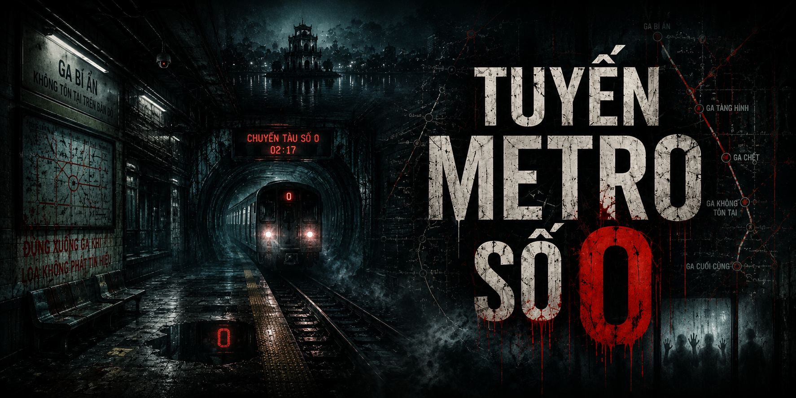

Tư Mệnh Sư · 2026
Tuyến Metro Số 0

Trinh thám đô thịSci-fi thrillerUnderground conspiracyPsychological mystery
Một cựu kỹ sư metro bị đổ lỗi gây tai nạn chết 17 người phát hiện hệ thống log ghi nhận đoàn tàu chạy lúc 2:17 sáng trên tuyến không tồn tại — và càng đào sâu, anh càng nhận ra mình từng là một phần của bí mật đó.
Bắt đầu đọc ↓
Nhân vật
Lê Minh Khang
Nhân vật chính
32 tuổi. Cựu kỹ sư điều phối hệ thống metro. Hiện freelancer phục hồi hạ tầng.
Trần Ngọc Linh
Nhân vật phụ quan trọng
28 tuổi. Nhà báo điều tra độc lập, chuyên các vụ mất tích đô thị
Phạm Đức Hải
Antagonist chìm
45 tuổi. Giám đốc Trung tâm Điều phối Metro Hà Nội
Vũ An
Nhân vật phụ quan trọng
17 tuổi. Không. Sống lang thang trong hệ thống tunnel cũ.
Bác sĩ Hoàng Duy
Antagonist
50 tuổi. Nhà thần kinh học. Cựu thành viên chính của Dự án 0.
Không rõ
Nhân vật bí ẩn
Không rõ. Mặc đồng phục metro cũ (kiểu 1990s).
Trần Ngọc Mai
Nhân vật vắng mặt quan trọng
Chị gái Linh
Chương 01 · Arc 1: Log Hệ Thống Lạ
Mã tàu không tồn tại
Màn hình laptop chiếu sáng mặt Khang lúc mười giờ đêm.
Anh ngồi ở bàn làm việc, chiếc bàn duy nhất trong căn hộ hai mươi lăm mét vuông, đặt sát cửa sổ nhìn ra ga Cát Linh. Phía dưới, đoàn tàu cuối ngày vẫn lướt qua đều đặn, cứ bảy phút một chuyến như kim đồng hồ quét mặt số. Tiếng ray rít nhẹ vọng lên đến tầng năm, quen thuộc đến mức Khang chỉ nhận ra nó khi nó dừng lại, lúc chuyến cuối chạy xong và thành phố chìm vào khoảng lặng giữa đêm.
Anh đã nghe âm thanh đó mỗi đêm suốt ba năm, kể từ khi thuê căn hộ này. Người bình thường sẽ chọn nơi nào xa ga tàu. Khang không. Anh cần nghe tiếng ray, giống cách người ta cần nghe tiếng mưa để ngủ, dù biết thừa rằng mưa không mang lại điều gì ngoài ẩm ướt.
Email từ Tuấn đến lúc chín giờ bốn mươi bảy. Không tiêu đề. Nội dung hai dòng:
"Mày còn nhớ cách đọc nhật ký vận hành cũ không? Có cái lạ. Đính kèm."
Tuấn là người ít lời. Sáu năm làm chung tại trung tâm điều phối metro, Khang biết rõ: khi Tuấn gửi tin mà không giải thích, nghĩa là anh ta không muốn viết ra bằng chữ. Hoặc không biết nên viết thế nào. Trong sáu năm đó, Tuấn chỉ gửi cho Khang đúng ba tin nhắn ngoài công việc: một lần mời cưới, một lần hỏi mượn sách, và một lần sau vụ tai nạn: "Mày ổn không?" Khang không trả lời tin cuối.
Khang nhấp tập tin đính kèm. Một bảng nhật ký hệ thống hiện ra, dạng văn bản thuần, quen thuộc đến mức anh nhận ra từng cột dữ liệu mà không cần nhìn tiêu đề. Thời gian. Mã tàu. Ga xuất phát. Ga đích. Trạng thái. Những cột này từng chạy trước mắt anh tám giờ mỗi ngày, năm năm liền. Trước khi mọi thứ kết thúc.
Anh cuộn xuống dòng Tuấn đánh dấu đỏ.
``` 02:17:04 | T-000 | [null] | [null] | ACTIVE ```
Khang nhìn mã tàu.
T-000. Ba số không sau chữ T, đơn giản, sạch, và hoàn toàn vô nghĩa trong hệ thống mà anh từng vận hành.
Hệ thống metro Hà Nội đánh số từ T-001 đến T-089 cho các đoàn tàu trên ba tuyến chính. Không có tàu nào mang mã T-000, không trong sơ đồ vận hành, không trong hồ sơ bảo trì, không trong danh mục mua sắm tài sản. Mã 000 thậm chí không được phép theo quy ước đặt tên. Nó nằm ngoài phạm vi chỉ mục, giống như tầng 0 trong một tòa nhà chỉ có từ tầng 1 trở lên.
Anh mở cửa sổ tra cứu, nhập mã vào thanh tìm kiếm. Kết quả: Không tìm thấy mục nào phù hợp.
Hai giờ mười bảy phút sáng. Ga xuất phát và ga đích đều ghi null, tức hệ thống không xác định được tàu đang ở ga nào, đi từ đâu đến đâu. Nhưng trạng thái vẫn là ACTIVE. Cảm biến đường ray vẫn ghi nhận chuyển động.
Lỗi nhập liệu.
Khang nghĩ vậy. Hoặc dữ liệu thử nghiệm ai đó quên xóa. Anh đã thấy hàng trăm lỗi tương tự trong những năm làm tại trung tâm: một kỹ thuật viên chạy thử phần mềm lúc nửa đêm, quên đóng phiên giả lập, hệ thống ghi nhận như tín hiệu thật. Chuyện bình thường.
Anh định gõ trả lời Tuấn: "Dữ liệu thử nghiệm. Kiểm tra xem ca đêm có ai chạy giả lập không."
Nhưng tay dừng trên bàn phím.
Hai giờ mười bảy.
Con số đó gõ vào một chỗ nào đó trong đầu anh mà anh không gọi tên được. Giống tiếng gõ cửa, không lớn, nhưng dai dẳng.
Hai giờ mười bảy là thời điểm giấc mơ bắt đầu.
Không phải lúc nào cũng mơ. Nhưng khi mơ, luôn cùng giấc mơ, luôn cùng thời điểm. Khang từng tỉnh dậy lúc 2:17 sáng đủ nhiều lần để nhớ con số đó rõ hơn cả sinh nhật mình. Trong mơ, anh đứng trên sân ga tối. Không biết ga nào, đèn tín hiệu nhấp nháy từ xa, ánh đỏ đập theo nhịp chậm. Gió từ tunnel thổi lên lạnh, mang theo mùi kim loại và bê tông ẩm. Tiếng tàu đến, bánh sắt trên ray, gần dần, nhưng không bao giờ thấy tàu. Chỉ nghe. Và tiếng loa phát một từ không rõ, như loa cũ bị nhiễu, chỉ nghe được âm sắc mà không nghe được nghĩa.
Rồi anh tỉnh. Mồ hôi ướt gáy. Mắt mở trong bóng tối căn hộ, và tiếng tàu thật bên ngoài cửa sổ (chuyến 5:00 sáng) đã bắt đầu chạy.
Năm năm. Cùng giấc mơ.
Khang xoa mắt, đẩy ghế ra khỏi bàn. Đồng hồ góc màn hình: 22:31. Ngoài cửa sổ, ga Cát Linh im lìm. Chuyến cuối đã qua hai mươi phút trước, đèn sân ga chuyển sang chế độ an ninh: nhấp nháy cam đều đặn ở cuối ke ga, phần còn lại chìm trong bóng tối nhạt.
Anh đứng lên, rót cà phê từ bình giữ nhiệt. Ly thứ tư trong ngày. Bàn tay trái hơi run khi cầm, không nặng, chỉ đủ để mặt nước gợn nhẹ trong ly. Khang không uống thuốc. Thuốc ngủ khiến anh mơ nhiều hơn, và anh không muốn thêm bất cứ gì từ giấc mơ đó.
Vết sẹo mờ trên mu bàn tay trái phản chiếu ánh xanh từ màn hình khi anh đưa ly lên miệng. Dài chừng bốn phân, nông, đã liền hẳn nhưng da ở đó nhạt hơn xung quanh. Khang liếc xuống rồi nhìn đi, phản xạ. Không nhớ sẹo từ đâu. Hồ sơ y tế ghi "vết thương nông do tai nạn lao động", nhưng anh không nhớ cụ thể lúc nào, ở đâu, bằng gì. Bác sĩ bảo chấn thương tâm lý sau vụ tai nạn có thể gây mất ký ức chi tiết. Khang không hỏi thêm. Có những câu hỏi mà chỉ đặt ra đã mệt.
Anh ngồi lại. Đặt ly cà phê xuống. Vẫn chưa uống, mặt nước đã nguội thành một lớp phẳng lì phản chiếu ánh sáng màn hình. Mở lại tập tin nhật ký.
Năm năm trước, Khang có thể đọc hàng nghìn dòng nhật ký trong một ca trực mà không mỏi mắt. Anh đọc dữ liệu như người ta đọc tiểu thuyết: có nhịp, có mạch, có logic riêng. Mỗi bất thường trong nhật ký đều kể một câu chuyện: cảm biến nhiệt lên bất thường có thể là phanh bị kẹt, trễ ba giây ở ga thứ tám có thể là cửa toa bị vướng, mã lỗi E-47 lặp lại ở ga Đại học Quốc gia có thể là nước ngầm thấm vào hộp đấu nối. Anh biết đọc, và anh giỏi.
Cho đến đêm mọi thứ kết thúc. Đêm mà nhật ký ghi nhận anh gửi lệnh chuyển ray, và mười bảy người không bao giờ về nhà.
Khang chớp mắt. Đẩy ý nghĩ đó ra. Quay lại tập tin.
Lần này không nhìn dòng T-000. Cuộn lên đầu, kiểm tra toàn bộ ngày.
Nhật ký vận hành ghi nhận 347 lượt chạy tàu trong hai mươi bốn giờ đó, từ 5:00 sáng đến 23:00 đêm. Tất cả đều hợp lệ: mã T-001 đến T-089 luân chuyển theo biểu đồ, ga xuất phát và ga đích rõ ràng, trạng thái xen kẽ giữa ACTIVE, DOCKED và MAINTENANCE. Hệ thống vận hành chuẩn mực, ba tuyến, mười hai ga mỗi tuyến, bốn phút giờ cao điểm, bảy phút giờ thường. Không sai lệch.
Khoảng trống từ 23:00 đêm đến 5:00 sáng hôm sau. Sáu tiếng hệ thống ngủ. Không tàu nào chạy. Bộ cảm biến đường ray chuyển sang chế độ chờ, chỉ ghi nhận nếu có chuyển động bất thường. Quy trình vận hành chuẩn, không ai có lý do nghi ngờ gì.
Nhưng lúc 2:17, giữa khoảng trống, một dòng đơn lẻ. T-000. ACTIVE.
Bộ cảm biến ghi nhận chuyển động trên đường ray. Lúc hai giờ mười bảy phút sáng, khi toàn bộ hệ thống đáng lẽ phải ngủ.
Khang nhấp chuột phải vào dòng dữ liệu, chọn Thuộc tính nguồn. Cửa sổ thông tin bật lên: dòng này không phải nhập tay. Không phải dữ liệu giả lập. Nó được tự động ghi lại bởi bộ cảm biến đường ray khu vực ga Cát Linh, cảm biến vật lý, phản ứng với rung động kim loại trên ray. Nghĩa là có thứ gì đó thực sự di chuyển trên đường ray lúc đó.
Không phải lỗi nhập liệu. Không phải giả lập.
Có thứ gì đó chạy qua ga lúc 2:17 sáng.
Khang đóng cửa sổ thuộc tính. Mở trình duyệt lưu trữ nhật ký, tài khoản cũ của anh vẫn hoạt động ở chế độ đọc. Một thói quen khó bỏ: nghỉ việc năm năm, không ai thu hồi quyền truy cập, và anh không bao giờ hỏi tại sao. Có lẽ bộ phận quản lý nhân sự quên. Hoặc không ai quan tâm đủ để nhớ rằng có một kỹ sư cũ tên Lê Minh Khang vẫn đang đọc nhật ký mỗi đêm.
Anh vào lưu trữ, giao diện cũ, font nhỏ, nền đen chữ xanh. Giống hệt như năm năm trước. Thậm chí hình nền mặc định vẫn là logo metro Hà Nội phiên bản 2026, chưa ai cập nhật. Hệ thống lưu trữ như một căn phòng không ai dọn: mọi thứ vẫn ở đúng chỗ, phủ bụi thời gian, chờ ai đó quay lại.
Mở nhật ký ngày hôm trước. Cuộn xuống khung giờ 2:00 sáng.
``` 02:17:04 | T-000 | [null] | [null] | ACTIVE ```
Ngày trước nữa.
``` 02:17:04 | T-000 | [null] | [null] | ACTIVE ```
Và trước nữa.
Khang mở liên tiếp mười bốn ngày. Cùng dòng. Cùng mã. Cùng giờ, chính xác đến giây: 02:17:04. Cùng ga: Cát Linh (theo bộ cảm biến nguồn). Cùng trạng thái.
Mười bốn đêm liên tiếp.
Anh ngả lưng vào ghế, nhìn lên trần nhà. Bóng đèn huỳnh quang trong bếp nhấp nháy, sắp hết tuổi thọ, anh lười thay từ tháng trước. Căn hộ tối ngoài vùng sáng của laptop: giường chưa dọn, ga trải giường xám nhăn nhúm, kệ sách chất đầy tài liệu kỹ thuật bám bụi, hầu hết là sổ tay ghi chép từ thời còn đi làm, anh mang về sau khi nghỉ mà chưa bao giờ mở lại. Máy pha cà phê cũ trên quầy bếp, cạnh ba hộp mì gói chưa nấu. Bồn rửa có hai cái bát từ sáng.
Đời sống của một người đã dừng lại ở một thời điểm nào đó và không tìm được lý do để bước tiếp, hoặc không cho phép mình bước tiếp. Khang biết rõ sự khác biệt giữa hai trạng thái đó, nhưng anh không phân loại bản thân. Phân loại cần nhìn lại, và nhìn lại là thứ anh tránh.
Mười bốn đêm.
Lỗi hệ thống không lặp lại mười bốn lần ở cùng một thời điểm với cùng một mã tàu không tồn tại. Lỗi có tính ngẫu nhiên: sai thời điểm, sai mã, sai ga, mỗi lần mỗi khác. Còn nếu cùng một quy luật lặp lại chính xác đến từng giây trong hai tuần liên tục, đó không phải lỗi.
Đó là lịch trình.
Ai đó (hoặc cái gì đó) đang chạy trên đường ray metro Hà Nội lúc hai giờ mười bảy phút sáng. Mỗi đêm. Đều đặn hơn cả biểu đồ vận hành chính thức.
Khang ngồi thẳng lại. Gõ trả lời Tuấn, xóa bản nháp cũ, viết mới:
"Không phải lỗi. Nó lặp lại ít nhất mười bốn ngày, cùng giờ, cùng mã. Cảm biến ghi nhận chuyển động vật lý. Để tao xem thêm."
Gửi. Đóng email. Nhìn đồng hồ: gần mười một giờ đêm.
Ba tiếng nữa, nếu dòng dữ liệu không nói dối, sẽ có thứ gì đó chạy qua ngay bên dưới chỗ anh đang ngồi. Ý nghĩ đó không khiến Khang sợ. Nó khiến anh tò mò, và sự tò mò thì nguy hiểm hơn sợ hãi, vì nó kéo người ta lại gần thay vì đẩy ra xa.
Anh nhìn ra cửa sổ. Ga Cát Linh tối, đèn cam nhấp nháy ở cuối sân ga. Đường ray dưới ánh đèn đường nhìn như hai vệt bạc chạy song song, mất hút vào tunnel phía bắc. Tunnel đó dẫn đến ga tiếp theo, ga Láng. Rồi ga sau nữa. Rồi ga sau nữa. Hệ thống metro chạy dưới lòng Hà Nội như mạch máu dưới da. Người ta đi trên mặt đất mỗi ngày mà quên mất bên dưới là một thế giới khác.
Tiếng gì đó, rất nhẹ, vọng từ phía ga. Hoặc anh tưởng tượng. Gió thổi qua khe cửa sổ hé, mang theo lạnh và mùi bê tông khô. Khang đóng cửa sổ.
Vết sẹo trên tay ngứa ran.
Anh nhìn xuống. Gãi nhẹ bằng ngón cái tay phải, động tác vô thức, đã làm hàng nghìn lần. Sẹo không đau, không sưng, chỉ thỉnh thoảng ngứa vào những lúc anh không muốn nhất. Bác sĩ bảo là tâm lý. Khang không tranh luận.
Quay lại màn hình. Mười bốn dòng T-000 vẫn sáng trên nền đen.
Hai giờ mười bảy. Cùng giờ với giấc mơ.
Anh không viết điều đó vào tin nhắn cho Tuấn. Không có lý do. Đó chỉ là trùng hợp, con số phổ biến trong vô số con số có thể có giữa mười một giờ đêm và năm giờ sáng. Không có gì đặc biệt.
Khang lặp lại điều đó với chính mình. Rồi đóng laptop.
Căn hộ chìm vào tối. Chỉ còn ánh đèn cam từ ga Cát Linh lọt qua khe rèm, nhấp nháy đều trên trần nhà như nhịp tim ai đó đang ngủ.
Anh nằm xuống giường, không thay quần áo. Mắt mở trong bóng tối, nhìn lên trần.
Bên ngoài, Hà Nội ngủ. Đường phố vắng, quán xá đóng, ga tàu tối. Mọi thứ đúng vị trí, thành phố vận hành theo nhịp đã thiết lập, không lệch.
Bên dưới, sâu hơn sân ga, sâu hơn đường ray, sâu hơn tầng kỹ thuật mà Khang từng biết rõ từng ngóc ngách, có thể có thứ gì đó đang di chuyển. Không đèn. Không loa thông báo. Không hành khách ngồi trên ghế đệm nhìn ra cửa kính.
Hoặc có.
Khang không biết. Chưa.
Nhưng mười bốn dòng dữ liệu trên màn hình nói với anh rằng có thứ gì đó đang chạy dưới lòng thành phố này vào lúc hai giờ mười bảy phút sáng mỗi đêm, đều đặn, kiên nhẫn, và hoàn toàn vô hình với mọi hệ thống giám sát chính thức.
Vết sẹo ngừng ngứa. Mắt Khang nặng dần.
Trước khi ngủ, hoặc trước khi giấc mơ kéo anh đi, một ý nghĩ cuối: Nếu đó là lịch trình, thì ai đặt lịch?
Anh không tìm được câu trả lời.
Giấc ngủ đến, chậm, từng lớp, như nước dâng.
Và như mỗi đêm, anh đứng trên sân ga tối, nghe tiếng tàu không bao giờ đến. Nhưng đêm nay có gì đó khác. Tiếng loa (vẫn nhiễu, vẫn méo) nhưng lần đầu tiên, Khang nghe được hai âm tiết.
Anh không nhớ chúng khi tỉnh dậy.
Chương 02 · Arc 1: Log Hệ Thống Lạ
14 đêm liên tiếp
Tuấn trả lời lúc sáu giờ sáng, sớm hơn bình thường. Bình thường Tuấn ngủ đến bảy rưỡi, kịp vào ca tám giờ. Tin nhắn sáu giờ nghĩa là hoặc anh ta không ngủ, hoặc thức dậy vì lý do không dễ chịu.
"Tối nay gặp không? Quán cà phê đối diện ga. 7 giờ."
Khang đọc tin nhắn trên điện thoại, mắt vẫn nhức vì đêm qua ngủ muộn. Ngoài cửa sổ, chuyến tàu đầu tiên trong ngày đang lướt qua, 5:02, trễ hai phút so với biểu đồ. Anh ghi nhận, dù không ai trả lương cho sự chú ý đó nữa.
"Được. 7 giờ."
Gửi. Đặt điện thoại xuống. Nằm nhìn trần nhà thêm mười phút rồi mới ngồi dậy.
Ban ngày, Khang làm việc. Nhận việc tự do, phục hồi hạ tầng, nghe sang nhưng thực tế là: ai có hệ thống cũ hỏng, gọi anh đến sửa. Máy chủ công ty nhỏ bị lỗi ổ cứng. Mạng nội bộ trường học chập chờn. Thiết bị giám sát cửa hàng ngừng ghi. Công việc đủ để trả tiền nhà và cà phê, không đủ để gọi là sự nghiệp. Khang không phiền, anh không cần sự nghiệp. Anh cần thứ gì đó lấp đầy ban ngày để ban đêm không kéo dài quá.
Hôm nay không có việc. Anh ngồi ở bàn từ tám giờ sáng, mở lại nhật ký vận hành.
Mười bốn dòng T-000. Anh đã nhìn chúng đêm qua nhưng chưa phân tích kỹ. Bây giờ mới bắt đầu.
Mỗi dòng ghi nhận bộ cảm biến ở một ga cụ thể. Đêm qua anh chỉ thấy ga Cát Linh, vì đó là ga đầu tiên anh kiểm tra. Nhưng giờ mở rộng: lọc toàn bộ entry T-000 trong mười bốn ngày, sắp xếp theo ga.
Kết quả hiện ra trong ba mươi giây.
Khang nhìn bảng dữ liệu. Rồi nhìn lại. Rồi xoay ghế, lấy sổ tay, vẽ sơ đồ metro trên giấy, ba tuyến, ba mươi sáu ga. Đánh dấu từng ga T-000 đi qua mỗi đêm.
Đêm thứ nhất: ga Cát Linh, ga Láng, ga Thái Hà. Ba ga liên tiếp trên tuyến 2A.
Đêm thứ hai: ga Đại học Quốc gia, ga Chùa Bộc, ga Phạm Ngọc Thạch. Ba ga tiếp theo.
Đêm thứ ba: tiếp.
Mỗi đêm, T-000 dịch chuyển ba ga về phía nam. Như đang đi dọc tuyến, từ bắc xuống nam, từ từ, mỗi đêm một đoạn. Đến đêm thứ tư: ga cuối tuyến 2A, Hà Đông. Rồi đêm thứ năm: quay lại ga Cát Linh. Và đêm thứ sáu: tiếp tục chu kỳ.
Một vòng. Bốn đêm một vòng. Rồi lặp lại.
Khang đặt bút xuống. Nhìn sơ đồ trên giấy, những vòng tròn nhỏ đánh dấu ga, nối nhau bằng đường thẳng. T-000 không chạy ngẫu nhiên. Nó chạy theo tuyến, theo thứ tự, theo chu kỳ. Nó có lộ trình.
Ai lập lộ trình cho một đoàn tàu không tồn tại?
Anh đóng laptop. Pha cà phê mới, ly thứ hai. Nhìn ra cửa sổ: trời xám nhạt, Hà Nội vào tháng ba ẩm ướt, ga Cát Linh đông đúc giờ cao điểm. Người ta lên xuống tàu, nhìn điện thoại, cắm tai nghe, không ai ngước lên nhìn tòa nhà tầng năm nơi một người đàn ông đang ngồi vẽ bản đồ đường ray vào sổ tay.
Bảy giờ tối. Quán cà phê đối diện ga Cát Linh, quán nhỏ tên Lặng, bàn ghế gỗ cũ, đèn vàng treo thấp. Khang đến trước năm phút, chọn bàn trong cùng, lưng tựa tường, mặt hướng ra cửa. Không phải vì cảnh giác. Là thói quen: anh không thích người đi phía sau mà không biết.
Tuấn đến đúng giờ. Gầy hơn lần cuối gặp, hai tháng trước, bữa cơm cuối năm mà Tuấn rủ nhưng Khang suýt không đến. Quầng mắt thâm, tóc hơi dài hơn bình thường, Tuấn vốn luôn gọn gàng, cắt tóc hai tuần một lần. Lần này trông như đã quên.
Ngồi xuống. Gọi cà phê đen. Im lặng cho đến khi ly cà phê đặt lên bàn.
– Mày đọc kỹ chưa?
Khang gật.
– Mười bốn đêm. Cùng giờ. Di chuyển theo tuyến.
Tuấn nhìn anh. Mắt hơi nheo, quen thuộc: biểu cảm khi Tuấn muốn nói gì đó nhưng đang cân nhắc.
– Mày phát hiện nó di chuyển theo tuyến?
– Ba ga mỗi đêm. Mười hai đêm một vòng trên tuyến 2A. Từ Cát Linh đến Hà Đông rồi quay lại.
Tuấn uống một ngụm. Đặt ly xuống nhẹ nhưng tay không buông ly ngay. Giữ.
– Có chuyện khác.
Tuấn hạ giọng, dù quán không đông.
– Mày biết Dũng không?
Khang tìm trong ký ức. Nguyễn Văn Dũng, kỹ thuật viên bảo trì, vào sau Khang hai năm. Ít nói, làm ca đêm nhiều.
– Biết. Bảo trì đường ray.
– Dũng mất tích.
Khang nhìn Tuấn.
– Một tuần trước.
Tuấn tiếp, giọng đều:
– Không đến ca. Không nghe điện thoại. Tao đến nhà, vợ nó nói đi làm rồi không về. Tao hỏi phòng nhân sự...
Tuấn dừng. Nhìn xuống ly cà phê.
– Phòng nhân sự nói không có nhân viên nào tên Nguyễn Văn Dũng.
Im lặng ba giây.
– Mày chắc không?
Khang hỏi.
– Chắc. Tao làm cùng nó bốn năm. Ngồi cạnh nhau trong phòng kỹ thuật. Biết nó uống trà đá không đường, biết con nó tên gì. Phòng nhân sự nói không có ai tên đó trong hệ thống.
Khang không nói gì. Anh đang nghĩ, đang xếp thông tin vào thứ tự. T-000. Mất tích. Nhân sự bị xóa. Ba dữ kiện, chưa đủ để kết luận, nhưng đủ để hình thành câu hỏi.
– Thiết bị giám sát, Khang nói. Ga có thiết bị ghi hình. Ca đêm ghi nhận ai vào ai ra.
Tuấn lắc đầu.
– Tao kiểm tra rồi. Hệ thống ghi hình ở ga... có vấn đề.
– Vấn đề gì?
– Nhiễu. Mỗi đêm, khoảng hai giờ đến hai rưỡi sáng, một số ga bị nhiễu. Không phải tất cả, cứ vài ga một lần. Nhưng quy luật giống nhau: nhiễu ba đến năm phút, rồi tự phục hồi. Không ai sửa vì nó tự hết, kỹ thuật viên ghi vào sổ là "nhiễu tín hiệu thoáng qua" rồi bỏ.
Hai giờ đến hai rưỡi. Khung giờ T-000 chạy.
Khang uống cà phê. Đắng, đúng mức, quán này pha kiểu cũ, phin nhỏ giọt. Anh đặt ly xuống, xoay nhẹ trên mặt bàn.
– Nhiễu cùng lúc T-000 active.
Tuấn gật.
– Tao biết. Vì thế tao mới gửi cho mày. Tao không phải kỹ sư hệ thống, tao chỉ bảo trì phần cứng. Nhưng cái này... không bình thường.
– Mày báo ai chưa?
Tuấn nhìn Khang. Lần đầu tiên trong buổi gặp, mắt anh ta có gì đó khác, không phải sợ, nhưng cảnh giác. Mắt người đứng sát mép nhưng biết rõ mình đang đứng đó.
– Không. Và mày cũng đừng.
– Tại sao?
– Vì Dũng biến mất sau khi hỏi về lịch trình ca đêm. Nó hỏi tổ trưởng: "Sao có ca bảo trì lúc hai giờ sáng mà không ai nhận lệnh?" Một tuần sau, mất.
Quán cà phê bỗng yên hơn bình thường. Hoặc Khang bây giờ mới nhận ra nó yên, tiếng nhạc nền tắt từ lúc nào, chỉ còn tiếng máy lạnh chạy đều và tiếng xe ngoài đường.
– Mày nghĩ liên quan, Khang nói. Không phải câu hỏi.
– Tao không biết. Nhưng tao không muốn là người tiếp theo hỏi câu đó.
Cả hai im lặng. Khang nhìn ra cửa kính, ga Cát Linh sáng đèn phía bên kia đường, người qua lại thưa dần khi tối muộn. Bình thường. Mọi thứ nhìn bình thường.
Khang nghĩ đến Dũng. Anh nhớ mờ, gặp vài lần ở hành lang, gật đầu chào, không nói chuyện nhiều. Người nhỏ con, hay mặc áo khoác dù mùa hè vì phòng kỹ thuật lạnh. Người tồn tại ở ngoại vi tầm nhìn, có mặt nhưng không gây chú ý. Và bây giờ: biến mất mà hệ thống nói chưa từng có.
Điều khiến Khang khó chịu không phải sự biến mất. Là sự phủ nhận. Nếu Dũng chết, còn có xác, có điều tra. Nhưng bị xóa khỏi hồ sơ, như thể anh ta chưa bao giờ tồn tại, đó là thứ không xảy ra tự nhiên. Cần ai đó có quyền truy cập cơ sở dữ liệu nhân sự, có quyền chỉnh sửa, và có lý do.
– Còn gì nữa không?
Khang hỏi.
Tuấn do dự. Rồi:
– Dũng không phải người đầu tiên.
Khang đợi.
– Hai năm qua, ba kỹ thuật viên "nghỉ việc". Tao biết cả ba, không ai nói trước là sẽ nghỉ. Một ngày có mặt, ngày sau không. Phòng nhân sự: "Đã xử lý đơn thôi việc." Không ai hỏi thêm vì... ai quan tâm? Người ta nghỉ việc hằng ngày.
Ba người. Cộng Dũng là bốn.
– Tên, Khang nói.
– Tao nhớ hai: Phương, tổ bảo trì ga Hà Đông. Thắng, kỹ thuật viên hệ thống ghi hình, làm ca đêm. Người thứ ba tao không nhớ tên, ở tổ vận hành tuyến 2A.
Tuyến 2A. Tuyến T-000 đang chạy.
Khang ghi nhớ. Không viết ra, không ở đây, không trước mặt người khác. Thói quen cũ từ thời làm điều phối: dữ liệu nhạy cảm chỉ ghi khi một mình, ở nơi kiểm soát được. Anh gật đầu với Tuấn.
– Cảm ơn.
Tuấn đứng lên. Rút ví trả tiền cà phê, cả hai ly. Khang không phản đối.
Trước khi đi, Tuấn nói thêm, giọng nhẹ đến mức gần như thì thầm:
– Khang. Mày giỏi hơn tao trong việc này. Đọc dữ liệu, tìm quy luật, đó là việc của mày. Nhưng...
Anh ta dừng. Nhìn ra cửa.
– Cẩn thận. Bất kỳ ai hỏi về T-000 đều biến mất.
Rồi đi. Chuông cửa kêu nhẹ khi Tuấn bước ra ngoài. Khang ngồi lại một mình, ly cà phê cạn, nhìn vết nước tròn trên mặt bàn gỗ.
Mười giờ đêm. Về nhà.
Khang mở laptop, ngồi vào chỗ quen thuộc. Vào lại lưu trữ nhật ký, lần này tìm xa hơn mười bốn ngày. Muốn biết T-000 bắt đầu từ khi nào.
Cuộn lùi. Một tháng. Hai tháng. Ba tháng.
Tháng thứ ba vẫn có. T-000. Cùng quy luật: 02:17:04, di chuyển theo tuyến, bốn đêm một vòng.
Sáu tháng. Vẫn có. Cùng quy luật, không sai lệch, 02:17:04, ba ga mỗi đêm, bốn đêm một vòng.
Chín tháng. Không thay đổi.
Một năm. T-000 đã chạy ít nhất một năm, ba trăm sáu mươi lăm đêm, mà không ai phát hiện. Hoặc đúng hơn: ai phát hiện đều không còn ở vị trí để nói. Dũng hỏi. Dũng biến mất. Phương và Thắng có thể cũng hỏi. Cũng biến mất. Quy luật không chỉ ở đường ray, quy luật ở cả con người.
Khang dừng ở mốc một năm. Lưu trữ xa hơn bị khóa, cần quyền cấp cao hơn mà anh không có. Nhưng một năm đã đủ. Đủ để biết: đây không phải bất thường gần đây. Đây là thứ đã tồn tại, đang tồn tại, và có lẽ sẽ tiếp tục tồn tại.
Anh đóng lưu trữ. Mở sổ tay. Viết:
- T-000: active mỗi đêm 02:17:04 - Chu kỳ 4 đêm dọc tuyến 2A (3 ga/đêm) (bắc → nam → lặp) - Hệ thống ghi hình nhiễu cùng khung giờ (02:00-02:30) - 4 kỹ thuật viên "mất tích / nghỉ việc" trong 2 năm - Dũng: biến mất sau khi hỏi về ca bảo trì 2h sáng - Hồ sơ nhân sự bị xóa
Nhìn danh sách. Sáu điểm. Chưa đủ để kết luận gì nhưng đủ để nhận ra: có hệ thống đằng sau. Không phải lỗi. Không phải trùng hợp. Ai đó đang vận hành thứ gì đó dưới metro Hà Nội, và ai đó đang xóa dấu vết của bất kỳ ai phát hiện.
Tiếng tàu ngoài cửa sổ, chuyến cuối cùng trong ngày, 23:00. Ray rít, gió thổi, rồi im.
Ga Cát Linh tối dần. Đèn an ninh nhấp nháy cam.
Khang gập sổ tay. Nhìn đồng hồ: 23:14. Ba tiếng nữa, 02:17, nếu quy luật đúng, bộ cảm biến ga Cát Linh sẽ lại ghi nhận T-000. Ngay bên dưới tòa nhà anh đang ngồi.
Anh có thể xuống ga lúc đó. Nhìn bằng mắt. Xem có gì không. Ga Cát Linh ngay bên dưới, hai phút đi bộ, xuống cầu thang, qua cổng soát vé đã khóa, đứng ở ke ga tối. Đợi.
Nhưng Tuấn nói: cẩn thận. Và bốn người đã biến mất vì hỏi câu hỏi tương tự.
Khang không xuống. Chưa. Không phải vì sợ, anh không chắc mình còn biết sợ cái gì sau năm năm sống với ký ức mười bảy người chết. Nhưng vì: hấp tấp là lỗi kỹ thuật tệ nhất. Dữ liệu trước, hành động sau.
Anh đóng laptop, tắt đèn, nằm xuống giường. Mắt mở trong bóng tối. Nghe thành phố lắng dần, xe thưa, quán đóng, con phố dưới tầng trở nên im lặng.
Tiếng tàu trong giấc mơ, nếu anh ngủ được, sẽ đến lúc 2:17.
Nhưng đêm nay Khang không ngủ.
Anh nằm chờ. Đếm phút. 23:30. 0:00. 0:45. 1:15.
1:50.
2:00.
Thành phố yên tĩnh đến mức nghe được tiếng máy lạnh tòa nhà đối diện chạy. Không xe. Không người. Đêm tháng ba lạnh vừa đủ để co người dưới chăn mỏng.
2:10.
Khang ngồi dậy. Đi ra cửa sổ. Mở hé, gió lạnh tràn vào, mang theo mùi bê tông ẩm và khói xe tàn từ ban ngày.
Nhìn xuống ga Cát Linh. Sân ga tối. Đường ray, hai vệt bạc dưới đèn đường, trống. Không có gì.
2:15.
Im lặng.
2:16.
Gió thay đổi, nhẹ, nhưng Khang nhận ra. Gió thổi từ hướng tunnel, không phải từ phố. Như có thứ gì đó đẩy không khí từ dưới lòng đất lên.
2:17.
Không thấy gì. Không nghe gì, ít nhất, không bằng tai thường. Nhưng dưới chân Khang, qua năm tầng bê tông, qua lớp đất, qua lớp cốt thép, có rung nhẹ. Rất nhẹ. Ly nước trên đầu giường không gợn sóng. Nhưng lòng bàn chân anh (trần, trên sàn gạch lạnh) cảm nhận được.
Rung. Ba giây. Rồi ngừng.
Khang đứng yên ở cửa sổ, nhìn xuống ga tối. Không có gì thay đổi. Đường ray vẫn trống. Đèn an ninh vẫn nhấp nháy cam.
Nhưng điện thoại trên bàn rung. Tin nhắn. Một giờ sáng, Tuấn.
Khang cầm lên, đọc:
"Mày ở nhà đúng không? Đừng ra ga."
Anh không trả lời. Đặt điện thoại xuống. Nhìn ra cửa sổ lần nữa.
Ga Cát Linh tối. Trống. Bình thường.
Nhưng ba giây rung dưới lòng bàn chân, anh không tưởng tượng. Có thứ gì đó vừa chạy qua bên dưới.
Khang đóng cửa sổ. Quay lại giường. Không ngủ nhưng nằm xuống.
Vết sẹo trên tay không ngứa đêm nay. Thay vào đó, lòng bàn chân anh vẫn nhớ cái rung đó. Như ký ức riêng của da thịt, không cần não bộ xác nhận.
Và Tuấn, ở đâu đó trong thành phố, cũng đang thức, biết điều tương tự. Tin nhắn của anh ta không phải lời khuyên. Là xác nhận: Mày cũng cảm nhận được, đúng không? Đừng ra gần nó.
Khang nhắm mắt. Không ngủ. Chỉ chờ sáng.
Chương 03 · Arc 1: Log Hệ Thống Lạ
Kỹ thuật viên mất tích
Vợ Dũng mở cửa sau tiếng chuông thứ ba.
Phụ nữ khoảng ba mươi, tóc buộc vội bằng dây nịt cao su, mắt có quầng thâm nhưng không sưng — sâu và khô, không đỏ. Mặc áo thun cũ in hình nhân vật hoạt hình (có lẽ áo mua cho con rồi tự mặc luôn), quần dài bạc màu, chân đi dép trong nhà. Đứng ở cửa nhìn Khang không nói gì, một tay vẫn giữ nắm cửa, chờ anh giải thích tại sao có mặt.
– Chị Hạnh?
– Ai?
– Tôi là Khang. Đồng nghiệp cũ của anh Dũng. Ở trung tâm điều phối metro.
Mắt cô hơi nheo, đang đánh giá. Rồi mở rộng cửa, bước sang để Khang vào. Không hỏi thêm. Mệt mỏi với việc giải thích, ai đến hỏi về Dũng, cô đều cho vào. Hy vọng ai đó sẽ có câu trả lời mà cảnh sát không cho.
Căn hộ nhỏ ở tầng ba, khu tập thể cũ quận Thanh Xuân. Sạch nhưng bừa, đồ chơi trẻ con vương trên sàn, bát đĩa úp chưa cất, tivi bật nhưng tắt tiếng. Một đứa bé (ba hay bốn tuổi) ngồi trên thảm xếp khối gỗ, không nhìn lên khi có khách.
Hạnh ngồi đối diện Khang trên ghế nhựa. Không mời nước.
– Anh biết chồng tôi?
– Không thân. Nhưng làm cùng trung tâm. Tôi nghỉ việc từ năm năm trước.
– Vậy anh đến vì...?
– Tôi nghe nói anh Dũng không đi làm. Muốn hỏi thăm.
Hạnh nhìn anh. Ba giây. Rồi:
– Chồng tôi đi làm ca đêm ngày mười bốn tháng ba. Không về. Tôi gọi điện, không nghe. Nhắn tin, không trả lời. Sang ngày thứ hai, tôi đến trung tâm hỏi. Họ nói...
Cô dừng. Nhìn xuống tay mình, hai bàn tay đặt trên đùi, ngón cái bấm vào nhau.
– Họ nói không có ai tên Nguyễn Văn Dũng làm ở đó.
Khang đợi.
– Bốn năm. Chồng tôi làm ở đó bốn năm. Mỗi tháng lương chuyển khoản về tài khoản chung. Tôi có sao kê. Nhưng họ nói không biết ai tên đó.
Giọng Hạnh bình, quá bình cho người mới mất chồng.
– Chị có báo công an?
– Có. Họ ghi nhận. Nói sẽ tìm. Một tuần, chưa có gì.
Khang gật. Nghĩ. Rồi hỏi, cẩn thận, nhẹ nhàng nhưng trực tiếp:
– Trước khi biến mất, anh Dũng có nói gì bất thường không? Về công việc, về ca đêm.
Hạnh im. Nhìn con, đứa bé vẫn xếp gỗ, xếp rồi đổ, đổ rồi xếp lại.
– Có.
Khang đợi. Không hỏi thêm, để cô tự kể. Kinh nghiệm đọc dữ liệu dạy anh: khi nguồn tin sẵn sàng nói, điều tốt nhất là im lặng. Hạnh nhìn ra ban công, phơi vài cái áo trẻ con, nắng xiên qua khe cửa.
– Khoảng hai tuần trước khi... mất. Chồng tôi về nhà sau ca đêm, ngồi ở bàn ăn, không ăn. Tôi hỏi sao, anh nói: "Dưới đó có tầng nữa." Tôi hỏi tầng gì. Anh nói: "Tầng dưới cùng. Không ai nói cho tao biết nó có."
Tầng dưới cùng.
– Anh Dũng nói thêm gì không?
– Không. Tôi hỏi tiếp thì anh ấy lắc đầu, nói "Quên đi, chắc nhầm." Rồi đi ngủ. Nhưng...
Hạnh do dự.
– Mấy đêm sau đó, anh ấy hay thức dậy. Khoảng hai giờ sáng. Ngồi dậy, nhìn ra cửa sổ. Tôi hỏi sao, anh nói nghe tiếng gì đó. Tôi không nghe thấy gì.
Hai giờ sáng.
Khang ghi nhớ. Không ghi ra giấy, vẫn quy tắc cũ.
– Cảm ơn chị. Nếu tôi biết thêm gì về anh Dũng, tôi sẽ liên lạc.
Hạnh gật. Không đứng dậy tiễn, mệt. Khang tự ra cửa.
Trước khi đóng, anh nghe Hạnh nói, nhỏ, có thể không dành cho anh:
– Cái tầng dưới cùng đó... Tôi tưởng là tầng kỹ thuật.
Cửa đóng. Tiếng khóa gài phía trong, chắc chắn, dứt khoát. Hạnh sống sau ổ khóa đó với đứa con nhỏ, chờ chồng về mà không biết chồng còn tồn tại trong hệ thống nào không.
Khang xuống cầu thang. Khu tập thể cũ, bậc xi măng mòn, tay vịn sắt rỉ, mùi nước tẩy bay từ phòng nào đó trên tầng bốn. Đời sống bình thường vẫn tiếp diễn xung quanh: tiếng tivi, tiếng trẻ con, mùi cơm trưa. Chỉ căn hộ tầng ba có một khoảng trống hình người, và khoảng trống đó đang bị ai đó tẩy sạch khỏi mọi hồ sơ.
"Tầng dưới cùng."
Dũng nói thế. Không phải tầng kỹ thuật, tầng kỹ thuật là tầng 2, ai làm metro đều biết. Dũng nói "tầng dưới cùng" như thể có thứ gì sâu hơn mà không ai cho anh ta biết. Và hai tuần sau khi phát hiện, anh ta không còn.
Từ nhà Dũng, Khang đi thẳng đến trung tâm điều phối metro.
Tòa nhà mười hai tầng ở quận Cầu Giấy, thiết kế hiện đại, mặt kính xanh phản chiếu trời xám, logo metro lớn bằng thép không gỉ ở mặt tiền. Khang đã làm ở đây năm năm, tầng bảy, phòng điều phối chính, bàn số 4 cạnh cửa sổ nhìn ra đường Trần Duy Hưng. Biết từng góc, từng hành lang, từng máy bán nước ở đâu, biết cầu thang thoát hiểm bên phải hay hỏng đèn. Nhưng bây giờ, đứng trước cổng bảo vệ, anh là người ngoài. Tòa nhà vẫn thế, anh mới là người thay đổi vị trí.
Bước vào sảnh. Sàn đá bóng, mùi nước xịt phòng nhạt, mùi mới, không phải mùi Khang nhớ từ năm năm trước. Mọi thứ khác cũng mới hơn: ghế chờ, bảng thông tin điện tử, cây cảnh nhựa ở góc. Quầy lễ tân, hai nhân viên, một nam một nữ. Không ai quen.
– Chào anh. Anh cần gì?
– Tôi muốn gặp phòng nhân sự.
– Anh có hẹn không ạ?
– Không. Nhưng tôi là cựu nhân viên, Lê Minh Khang, phòng điều phối.
Cô lễ tân gõ máy tính. Nhìn màn hình. Rồi nhìn lên:
– Dạ, anh Khang. Hệ thống ghi nhận anh đã nghỉ việc. Anh cần liên hệ vấn đề gì ạ?
– Tôi muốn hỏi về một đồng nghiệp cũ. Nguyễn Văn Dũng, tổ bảo trì.
Cô gõ thêm. Chờ. Lắc đầu.
– Em không thấy ai tên Nguyễn Văn Dũng trong hệ thống ạ. Anh có chắc tên đúng không?
Khang nhìn cô. Mặt bình thản, cô không nói dối, cô thật sự không thấy. Hệ thống cho cô thấy gì, cô nói đó.
– Cảm ơn.
Anh quay đi.
– Dạ, anh Khang.
Cô lễ tân gọi lại.
– Em cần nhắc: anh không còn là nhân viên nên không thể vào khu vực làm việc. Nếu cần liên hệ, anh vui lòng gửi email đến phòng nhân sự ạ.
– Tôi hiểu.
Bước ra sảnh. Đứng ngoài mái hiên, nhìn vào cửa kính. Sảnh tòa nhà rộng, sạch, đèn sáng trắng. Người qua lại, nhân viên mặc đồng phục, kỹ sư bận áo khoác xanh, vài người mặc vest. Tất cả đều bình thường. Như một tổ chức vận hành đúng quy trình, không có gì khuất.
Rồi, từ thang máy phía trong, một người bước ra.
Cao, vest tối, tóc chải ngược, kính gọng mỏng. Phạm Đức Hải, giám đốc trung tâm. Khang nhận ra ngay dù năm năm không gặp: Hải không thay đổi nhiều, chỉ thêm vài sợi bạc ở thái dương và cách đi chậm hơn, chậm của người quen quyền, không vội.
Hải đi qua sảnh, nói gì đó với một trợ lý bên cạnh. Gần đến cửa, mắt ông liếc ra ngoài. Thấy Khang.
Dừng nửa giây.
Rồi gật đầu nhẹ. Nụ cười lịch sự, gật đầu như với người quen, không dừng. Hải bước tiếp, ra cửa bên kia, lên xe đen đợi sẵn. Xe chạy.
Không dừng. Không hỏi thăm. Không ngạc nhiên khi thấy cựu nhân viên (người bị đổ lỗi gián tiếp về vụ tai nạn) đứng trước cửa tòa nhà.
Như thể ông biết Khang sẽ ở đây. Hoặc không quan tâm đủ để dừng lại, vì Khang không phải mối đe dọa. Chưa.
Khang nhớ Hải từ năm năm trước. Ông ta dự họp điều phối mỗi tháng, ngồi đầu bàn, nói ít, nghe nhiều, gật đầu khi đồng ý và im lặng khi không. Không bao giờ phản đối ai trước mặt nhưng tuần sau, người bị ông ta không đồng ý sẽ nhận quyết định luân chuyển. Quyền lực không cần lên giọng. Khang tôn trọng điều đó, hoặc e ngại, anh không phân biệt rõ.
Năm năm trước, sau vụ tai nạn, Hải là người ký quyết định cho Khang "nghỉ phục hồi sức khỏe". Không đuổi nhưng cũng không giữ. Một cái gật đầu, một chữ ký, và Khang ra khỏi hệ thống. Lịch sự. Gọn gàng. Không để lại vết.
Khang đứng thêm mười giây. Rồi đi.
Về nhà lúc ba giờ chiều. Trời bắt đầu âm u, mây thấp kéo từ phía sông Hồng, Hà Nội tháng ba luôn như vậy: ẩm, xám, nặng. Khang pha cà phê, ngồi vào bàn.
Mở laptop.
Kiểm tra đầu tiên: cơ sở dữ liệu căn cước công dân, Khang có quyền truy cập gián tiếp qua một trang tra cứu hợp pháp (dành cho doanh nghiệp xác minh nhân sự). Nhập: Nguyễn Văn Dũng, năm sinh 1992, Hà Nội.
Kết quả: Không tìm thấy.
Thử lại, bỏ năm sinh. Có bốn Nguyễn Văn Dũng khác. Nhưng không ai khớp tuổi, quận, hay thông tin mà Khang nhớ.
Dũng không chỉ bị xóa khỏi hồ sơ nhân sự metro. Dũng bị xóa khỏi cơ sở dữ liệu quốc gia. Như thể anh ta chưa từng được sinh ra, chưa từng đi học, chưa từng kết hôn, chưa từng có con gái ba tuổi đang ngồi xếp gỗ ở nhà đợi bố về.
Khang ngồi lại. Lưng tựa ghế, mắt nhìn trần nhà. Bóng đèn huỳnh quang (vẫn chưa thay) nhấp nháy nhẹ ở góc bếp.
Xóa khỏi hệ thống nhân sự một công ty, cần quyền quản trị nội bộ. Khó nhưng không phải không thể, một người có đủ thẩm quyền là làm được.
Nhưng xóa khỏi căn cước công dân, hệ thống quốc gia, quản lý bởi Bộ Công an, đó không phải việc một cá nhân hay một công ty có thể tự làm. Cần quyền truy cập cấp bộ. Cần ai đó ở vị trí rất cao, hoặc một tổ chức có đủ ảnh hưởng để can thiệp vào dữ liệu quốc gia mà không để lại dấu vết.
Dũng không chỉ mất tích. Dũng bị xóa, có hệ thống, có quyền lực, có chủ đích.
Và điều đó có nghĩa: bất kỳ ai khác cũng có thể bị xóa. Tuấn. Hoặc Khang.
Anh kiểm tra bản thân, nhập tên mình vào tra cứu. Lê Minh Khang, 1997. Kết quả: có. Hồ sơ đầy đủ, căn cước, hộ khẩu, tiểu sử đóng bảo hiểm. Anh vẫn tồn tại trong hệ thống.
Chưa bị xóa. Chưa.
Từ "chưa" lơ lửng trong đầu anh, không phải sợ, nhưng nhận thức. Nếu họ có thể xóa Dũng, họ có thể xóa bất kỳ ai. Ranh giới giữa "tồn tại" và "không tồn tại" trong hệ thống quốc gia, mỏng hơn anh tưởng. Chỉ cần ai đó có đủ quyền truy cập và đủ lý do.
Khang đóng trang tra cứu. Mở sổ tay, thêm vào danh sách:
- Dũng bị xóa khỏi CCCD quốc gia - Cần quyền truy cập cấp bộ để thực hiện - Vợ Dũng: "tầng dưới cùng" — Dũng biết có thứ gì đó sâu hơn tầng kỹ thuật - Dũng thức dậy lúc 2h sáng mấy đêm trước khi mất — "nghe tiếng gì đó" - Hải thấy tôi nhưng không phản ứng
Năm điểm mới. Cộng sáu điểm cũ. Mười một dữ kiện.
Khang nhìn danh sách. Mười một mảnh ghép, chưa đủ để thấy bức tranh, nhưng đủ để nhận ra có bức tranh. Và bức tranh đó lớn hơn nhiều so với một đoàn tàu chạy lúc hai giờ sáng.
Ngoài cửa sổ, chiều Hà Nội xám xịt. Mưa phùn bắt đầu, hạt nhỏ, gần như không thấy, chỉ cảm nhận khi da mặt hơi ẩm. Ga Cát Linh bên dưới hoạt động bình thường: tàu vào, tàu ra, người lên, người xuống. Không ai biết (hoặc không ai muốn biết) rằng dưới chân họ, sâu hơn sân ga ba chục mét, có thứ gì đó di chuyển mỗi đêm.
Và những người phát hiện đang biến mất từng người một.
Điện thoại rung. Tin nhắn từ số lạ.
Khang mở:
"Kỹ sư Lê. Lâu không liên lạc. Mong anh khỏe. — P.Đ.H."
P.Đ.H. Phạm Đức Hải.
Không nội dung gì thêm. Không hỏi. Không nói. Chỉ một câu chào, vào đúng ngày Khang đến trung tâm.
Khang đặt điện thoại xuống. Nhìn tin nhắn. Một câu chào từ người vừa gật đầu lướt qua mà không dừng, nhưng ngay tối hôm đó lại nhắn tin. Nghĩa là: Hải biết Khang đến. Biết Khang hỏi về Dũng. Và muốn Khang biết rằng ông ta biết.
Không phải đe dọa, chưa. Là đánh dấu vị trí. Như đi cờ mà không ăn quân, chỉ đặt quân ở vị trí để đối phương biết: tôi thấy anh rồi, anh đang ở ô nào tôi biết rõ.
Khang không trả lời. Tắt màn hình điện thoại. Đặt úp xuống bàn, cử chỉ vô nghĩa, nhưng anh không muốn nhìn thấy chữ "P.Đ.H." mỗi lần liếc sang.
Bên ngoài, trời tối dần. Mưa phùn thành mưa nhẹ, giọt nước chạy trên kính cửa sổ, nhòe ánh đèn ga phía dưới.
Mười một dữ kiện. Một người đang theo dõi. Bốn người đã biến mất.
Và Khang, ngồi một mình trong căn hộ tối, nhìn ra ga tàu im lìm. Không còn đường quay lại.
Câu hỏi tiếp theo, Khang viết vào sổ trước khi đóng lại:
"Tầng dưới cùng. Dũng biết nó có. Tôi cần biết nó LÀ GÌ."
Rồi gập sổ. Đặt lên bàn, cạnh ly cà phê đã rót từ trưa, bây giờ nguội hoàn toàn. Anh uống. Đắng.
Điện thoại im. Tin nhắn của Hải vẫn sáng trên màn hình khóa, chữ trắng trên nền đen. "Mong anh khỏe."
Chương 04 · Arc 1: Log Hệ Thống Lạ
Camera lúc 2:17
Khang mất hai ngày để tìm lại đường vào hệ thống ghi hình.
Không phải vì khó, mà vì anh cân nhắc. Truy cập nhật ký vận hành ở chế độ đọc là một chuyện: thụ động, không để lại dấu vết đáng kể. Nhưng vào hệ thống an ninh ga, cần tài khoản cấp kỹ thuật, cần IP hợp lệ, và mỗi phiên truy cập đều được ghi nhận trong sổ kiểm toán. Nếu ai đó đang theo dõi, họ sẽ biết.
Hai ngày đó Khang sống bình thường, hoặc gần bình thường nhất có thể khi biết có đoàn tàu ma chạy dưới chân mình mỗi đêm. Sáng dậy, pha cà phê, ngồi xem tin tức, Hà Nội vẫn bình thường: kẹt xe, thời tiết ẩm, metro chạy đúng giờ. Không ai bàn về tiếng rung lúc hai giờ sáng. Không ai mất ngủ vì đèn tín hiệu nhấp nháy trong tunnel tối. Chỉ có anh.
Chiều thứ sáu, Khang nhận tin nhắn từ một công ty nhỏ quận Ba Đình, máy chủ lỗi, cần phục hồi dữ liệu. Anh đến, sửa trong ba giờ, nhận phong bì tiền mặt, về nhà. Cuộc sống làm tự do: không lịch trình, không đồng nghiệp, không ai hỏi "hôm nay bạn làm gì ngoài công việc?" Phù hợp cho người cần thời gian nghĩ.
Nhưng hai ngày suy nghĩ cũng cho Khang đủ thời gian để tìm giải pháp.
Tài khoản cũ của anh, "lmkhang_07", vẫn tồn tại trong hệ thống nội bộ ở chế độ đọc. Anh không thể truy cập trực tiếp từ tài khoản đó. Nhưng hệ thống ghi hình metro dùng giao thức cũ (RTSP) và Khang từng viết đoạn mã lấy luồng hình ảnh trực tiếp từ các ga cho mục đích giám sát khi còn làm. Đoạn mã đó kết nối bằng mã xác thực kỹ thuật, không phải tài khoản người dùng. Mã đó, nếu không ai đổi trong năm năm, vẫn hoạt động.
Thứ bảy. Mười giờ đêm. Khang ngồi vào bàn, mở laptop, chạy đoạn mã.
Mã vẫn sống. Năm năm không ai thay đổi. Hệ thống lớn có đặc điểm đó: những thứ đang hoạt động thì không ai động đến, cho đến khi chúng hỏng. Và mã xác thực kỹ thuật (không gắn với tài khoản cá nhân, không có thời hạn, không ai nhớ nó tồn tại) là loại dễ bị bỏ quên nhất. Khang từng viết nó, từng dùng nó hàng ngày, và khi anh nghỉ, nó vẫn ở đó, như chìa khóa cài sẵn dưới chậu hoa mà chủ cũ quên lấy.
Luồng hình ảnh ga Cát Linh hiện ra, sáu góc nhìn. Sân ga trên. Sân ga dưới. Hành lang kết nối. Cổng soát vé. Và hai ống kính tunnel, một hướng bắc, một hướng nam.
Tất cả đang hiện trực tiếp. Ga vắng, gần giờ đóng cửa. Vài hành khách cuối lên tàu 22:50. Nhân viên vệ sinh đẩy xe dọn. Bình thường.
Khang không cần hình trực tiếp. Anh cần lưu trữ, video đêm qua, khung giờ hai giờ sáng.
Mở giao diện lưu trữ, mất vài giây tải, máy chủ lưu trữ video luôn chậm hơn luồng trực tiếp. Chọn ngày, đêm qua. Chọn khung giờ: 02:00-02:30. Tải.
Trong lúc chờ, Khang nhìn luồng trực tiếp: nhân viên vệ sinh cuối cùng ra khỏi ga qua cửa nhân viên. Đèn hành lang chuyển sang chế độ tiết kiệm, một nửa tắt. Ga Cát Linh bước vào giấc ngủ, như mỗi đêm. Bình thường. Chỉ bình thường trên bề mặt.
Video lưu trữ tải xong.
Hình ảnh sân ga: rỗng. Đèn an ninh nhấp nháy cam, sân ga trống, không người. Đúng như dự kiến, ga đóng cửa từ 23:00.
Hình ảnh hành lang: rỗng. Đèn sáng trắng liên tục, chế độ ban đêm.
Ống kính tunnel hướng bắc, Khang nhấp vào. Video tải. Đen. Tunnel tối, hồng ngoại, hình ảnh xám xanh. Đường ray chạy thẳng vào bóng tối, hai thanh sáng mờ song song. Không có gì di chuyển.
02:15. Vẫn tĩnh.
02:16. Một thay đổi nhỏ: đèn tín hiệu cuối tunnel (vốn tắt) bật đỏ. Nhấp một lần. Rồi tắt. Rồi bật lại.
02:16:45. Hình ảnh bắt đầu nhiễu, pixel vỡ, sọc ngang chạy từ dưới lên. Ống kính rung nhẹ, như có gì đó truyền qua kết cấu tường mà thiết bị gắn vào.
02:17:00. Nhiễu mạnh. Mất hình hoàn toàn, màn hình xám trắng, không tín hiệu.
02:17:04. Vẫn nhiễu.
02:19:51. Hình ảnh phục hồi. Tunnel trống. Đèn tín hiệu tắt. Không dấu vết.
Ba phút nhiễu. Chính xác khung giờ T-000 active.
Khang lùi lại, xem chậm đoạn trước khi nhiễu. 02:16:45, khoảnh khắc nhiễu bắt đầu, có một khung hình duy nhất trước khi mất tín hiệu hoàn toàn. Anh dừng. Phóng to.
Khung hình đó: mờ, nhiễu, nhưng nhìn ra được, ở cuối tunnel, xa, có thứ gì đó. Một khối tối di chuyển. Không đủ rõ để xác định hình dạng, nhưng lớn, chiếm gần hết tiết diện tunnel. Và đang tiến gần.
Khang lưu khung hình. Chuyển sang ống kính tunnel hướng nam, cùng thời điểm.
Kết quả tương tự. Nhiễu từ 02:17 đến 02:20. Không có khung nào rõ ràng hơn.
Anh ngồi lại. Nghĩ.
Thiết bị ga Cát Linh không đủ. Nhiễu quá mạnh, có thể do từ trường hoặc rung động của thứ đang chạy qua ảnh hưởng đến thiết bị gắn trên tường tunnel. Cần ga khác, ga có ống kính tốt hơn, hoặc ít bị ảnh hưởng hơn.
Mở danh sách ga trên tuyến 2A. Mười hai ga. T-000 đêm qua ở đoạn ga nào? Khang kiểm tra lại nhật ký, đêm thứ bảy: ga Hà Đông, ga Văn Quán, ga Phúc La. Ba ga phía nam.
Chuyển sang hệ thống ghi hình ga Hà Đông. Ga cuối tuyến, thiết bị mới hơn, lắp sau khi ga mở rộng năm ngoái. Ống kính có độ phân giải cao hơn và ít nhạy với rung hơn vì gắn trên giá treo, không gắn trực tiếp vào tường.
Mở lưu trữ. Đêm thứ bảy. 02:15-02:20.
Hình ảnh sân ga: rỗng. Bình thường.
Ống kính tunnel: Khang chọn hướng đi vào ga (từ phía bắc, tàu từ Cát Linh đến).
02:15. Tĩnh. Tunnel tối, hồng ngoại xám xanh.
02:16. Đèn tín hiệu bật, đỏ, nhấp, tắt.
02:16:30. Rung nhẹ nhưng ống kính ga Hà Đông ít bị ảnh hưởng. Hình vẫn rõ.
02:16:48. Gió, thấy được qua bụi nhỏ bay trong luồng hồng ngoại. Gió hút từ phía tunnel, như có thứ gì đó đẩy không khí phía trước.
02:16:55. Có gì đó ở cuối tunnel. Xa. Tối. Di chuyển nhanh.
02:16:58. Gần hơn. Khang nhìn và giữ nguyên tay trên bàn phím.
Đoàn tàu.
Trượt qua ống kính trong đúng hai giây, 02:16:58 đến 02:17:00. Hai giây. Nhưng đủ rõ để nhận ra: tàu. Dáng dài, nhiều toa, ít nhất ba hoặc bốn. Tối, không đèn nội thất, không đèn pha (hoặc đèn pha tắt). Bề mặt tàu tối hơn bóng tối xung quanh, sơn đen hoặc xám đậm, không có vạch sáng hay logo như tàu metro thông thường.
Hai giây. Rồi tàu trượt qua khung hình, vào ga, và thiết bị mất tín hiệu, nhiễu. Nhưng nhiễu muộn hơn: hai giây sau khi tàu đã qua.
Khang lùi lại. Xem lại hai giây đó, từng khung hình.
Khung 1: mũi tàu, thuôn, tối, không đèn. Kiểu dáng cũ hơn đoàn tàu metro hiện tại: góc cạnh hơn, thân hẹp hơn, khí động học kém hơn. Đoàn tàu metro Hà Nội dùng model Alstom sản xuất năm 2024, thân bọc composit trắng xám, bo tròn, đèn LED chạy viền. Cái này khác hoàn toàn: thép trần, sơn tối, không nhãn hiệu. Thiết kế Liên Xô thập niên 80 hoặc Trung Quốc đầu 90, Khang nhận ra dáng vì đã xem đủ tài liệu lưu trữ metro khi còn đi học.
Khung 2-15: thân tàu trượt qua. Cửa kính tối bên trong. Nhưng ở toa thứ hai, một cửa kính có phản chiếu nhẹ từ đèn hồng ngoại. Và trong phản chiếu đó...
Khang phóng to. Pixel vỡ ở mức này, nhưng đủ để thấy: hình dạng. Người. Ngồi. Không cử động. Một bóng người (có thể hai) bên trong toa tối.
Khung 16-30: toa cuối. Và khung hình cuối cùng trước khi nhiễu, toa cuối trượt qua, hoàn toàn tối. Nhưng cửa toa cuối... hé mở. Không nhiều, vài phân. Gió từ tunnel lọt vào, kéo gì đó bay, vải? Giấy? Không rõ.
Rồi nhiễu. Mất tín hiệu. Ba phút, dài như mười. Phục hồi: tunnel trống. Đường ray sáng bóng dưới hồng ngoại, không dấu vết, không vật thể. Như chưa có gì đi qua.
Nhưng đã có. Khang vừa thấy.
Anh ngồi lại. Lưng tựa ghế, hai tay đặt phẳng trên bàn, cần cảm giác vững từ mặt gỗ dưới ngón tay. Đoàn tàu (bằng thép, bằng kim loại, có trọng lượng đủ để đẩy gió trong tunnel) đang chạy mỗi đêm dưới lòng Hà Nội. Có người bên trong. Và không ai trên mặt đất biết.
Hai giây video. Ba mươi khung hình. Đoàn tàu, thật, vật chất, có khối lượng đẩy gió, chạy qua ga Hà Đông lúc 02:17 sáng. Tối. Không đèn. Có người bên trong.
Anh lưu toàn bộ đoạn video, hai bản: một trên laptop, một trên ổ cứng ngoài giấu trong ngăn kéo. Rồi xóa lịch sử kết nối, tắt đoạn mã, đóng cổng truy cập. Không ở trong hệ thống lâu hơn cần thiết, bài học cũ từ thời làm điều phối: truy cập càng ngắn, dấu vết càng mờ.
Nhìn đồng hồ: 23:47. Anh đã ngồi gần hai giờ, cảm giác chỉ như hai mươi phút. Thời gian luôn co lại khi Khang tập trung vào dữ liệu, đó từng là thứ anh thích nhất ở công việc cũ: ngồi vào bàn lúc tám giờ sáng, ngẩng lên thì đã trưa, mà không biết bốn giờ đi đâu. Cảm giác đó (bị cuốn vào luồng thông tin, quên mọi thứ bên ngoài) lần đầu quay lại sau năm năm.
Khang mở sổ tay. Viết:
- Đoàn tàu có thật. Video xác nhận. - Thiết kế cũ (thập niên 90?). Không đèn. Không logo. - Ít nhất 3-4 toa. Có người bên trong (ít nhất 1-2 bóng, toa 2). - Cửa toa cuối hé mở. - Tàu gây nhiễu khi ở gần (từ trường? rung?) — nhưng ga Hà Đông ít bị hơn. - Tốc độ cao — qua ga trong 2 giây, không dừng.
Sáu điểm mới. Mỗi lớp bằng chứng thêm một chiều, từ dữ liệu số sang dữ liệu hình ảnh. T-000 không còn là dãy số trong nhật ký. Nó có hình dạng. Có trọng lượng. Có hành khách.
Khang đóng sổ. Nhìn ra cửa sổ, ga Cát Linh tối, đèn cam nhấp nháy. Mỗi đêm, dưới ga đó, dưới lớp bê tông và đất, đoàn tàu tối trượt qua mà không ai biết. Hàng nghìn người đi tàu ban ngày, bước lên, bước xuống, nhìn điện thoại, cách đoàn tàu ma chỉ vài chục mét theo chiều thẳng đứng.
Và bên trong tàu đó: có người. Ngồi im. Trong bóng tối.
Ai? Đi đâu?
Khang không có câu trả lời. Nhưng anh có video, ba mươi khung hình rõ ràng hơn bất kỳ dữ liệu nào trước đó. Bằng chứng vật lý. Thứ mà không ai có thể nói là "lỗi hệ thống".
Anh gập laptop. Đứng lên. Đi vào bếp, mở tủ lạnh, nhìn bên trong: một hộp sữa gần hết hạn, hai quả trứng, nửa bó rau muống héo. Đóng lại. Không đói.
Quay lại bàn. Ngồi xuống. Mở laptop lại, nhìn khung hình cuối cùng trước nhiễu. Bóng người trong toa hai. Ngồi. Không cử động.
Ngồi im trong bóng tối. Trên đoàn tàu không đèn. Lúc hai giờ sáng.
Người bình thường không ngồi như vậy. Người đang di chuyển tự nguyện, ít nhất sẽ nhìn cửa kính, sẽ cầm điện thoại, sẽ có ánh sáng từ đâu đó. Bóng người này ngồi bất động. Như đang ngủ. Hoặc không có lựa chọn.
Khang đóng laptop lần nữa. Lần này không mở lại. Đứng dậy, chân hơi tê vì ngồi lâu, đi vòng quanh căn hộ. Bước chậm, từ bàn đến cửa sổ, từ cửa sổ đến bếp, từ bếp quay lại bàn. Bước chậm, đều, không đích đến, giống thói quen cũ khi còn làm ca đêm ở trung tâm điều phối.
Đến giờ anh có: đoàn tàu bí mật. Người bên trong. Hệ thống bảo vệ, xóa dữ liệu, xóa con người. Ai đó ở cấp rất cao điều phối.
Anh chưa biết gì: tàu đi đâu. Chở ai. Tại sao. Và tại sao (câu hỏi nhức nhối nhất) nó dùng cùng đường ray với metro công cộng mà không ai phát hiện suốt ít nhất một năm.
Trừ khi không phải cùng đường ray. Trừ khi có đường ray khác, sâu hơn.
"Tầng dưới cùng."
Lời Dũng quay lại.
Khang dừng bước. Đứng giữa phòng. Nhìn xuống sàn, sàn gạch lạnh, bên dưới là tầng bốn, tầng ba, tầng hai, tầng một, tầng hầm để xe, rồi đất. Rồi ga metro. Rồi đường ray. Rồi tầng kỹ thuật.
Rồi, nếu Dũng đúng, còn gì nữa?
Nằm xuống giường. Mắt mở trong bóng tối. Đêm Hà Nội tĩnh, chỉ tiếng máy lạnh chung cư đối diện, tiếng xe máy lẻ loi ngoài đường.
Và nếu anh lắng nghe, thật kỹ, qua năm tầng bê tông, có thể tưởng tượng ra tiếng ray rít nhẹ dưới lòng đất. Hoặc không phải tưởng tượng. Anh đã thấy video. Nó có thật.
Vết sẹo trên tay nhức, nhẹ, âm ỉ, như bắt đầu nhớ điều gì đó mà da thịt biết nhưng não bộ từ chối.
Khang nằm yên. Không ngủ. Nghe thành phố thở. Và dưới hơi thở đó, sâu hơn, lạnh hơn, thứ gì đó khác đang vận hành.
Đều đặn. Kiên nhẫn. Mỗi đêm.
Và Khang, lần đầu tiên kể từ khi bắt đầu, tự hỏi: nếu bốn người biến mất vì hỏi câu hỏi, thì anh đang ở bước nào? Bước hỏi đã qua. Bước tìm đã bắt đầu. Bước tiếp theo, bước khiến Dũng, Phương, Thắng biến mất, là bước nào?
Giấc ngủ không đến. Vết sẹo nhức đều.
Chương 05 · Arc 1: Log Hệ Thống Lạ
Đồng nghiệp cuối cùng
Tuấn chọn quán khác lần này.
Không phải quán Lặng đối diện ga, quán đó quá gần trung tâm điều phối, quá nhiều nhân viên metro hay ghé sau ca. Lần này Tuấn nhắn địa chỉ một quán trà ở ngõ nhỏ Thái Hà, loại quán không biển hiệu, cửa kính mờ, bên trong chỉ có bốn bàn.
Cuối tuần. Hà Nội tối thứ bảy, nhộn hơn trong tuần, quán xá mở cửa muộn, thanh niên đi bộ trên vỉa hè uống trà sữa. Bình thường. Cuộc sống bình thường tiếp diễn xung quanh Khang như nước chảy quanh hòn đá, không chạm vào nhưng cũng không né.
Anh đi bộ từ nhà, hai mươi phút, qua phố Thái Hà đông đúc. Ngang qua ga Thái Hà, nhìn vào: sân ga sáng, người ra vào, nhạc quảng cáo phát loa nhỏ. Bình thường. Không ai nghe thấy gì dưới lòng đất lúc hai giờ sáng. Hoặc nếu nghe, không ai hỏi.
Khang đến lúc bảy giờ tối. Tuấn đã ngồi sẵn, bàn góc trong, lưng tựa tường, mặt hướng cửa. Giống cách Khang ngồi. Cả hai đều đang học những thói quen mới mà một tuần trước còn không cần.
Tuấn trông tệ hơn lần gặp trước, chỉ cách ba ngày nhưng quầng mắt sâu hơn, má hóp hơn, tay cầm ly trà hơi run. Không phải run vì lạnh, trời tháng ba ẩm nhưng không lạnh đủ để run. Run vì thần kinh.
Khang ngồi xuống. Không chào, nhìn Tuấn, đợi.
– Tao bị gọi lên họp riêng.
Tuấn không vào đề, nói thẳng.
– Hôm qua. Với ông Hải.
Khang đợi.
– Phòng ông ấy ở tầng mười hai. Tao chưa từng lên đó, bốn năm, chưa lần nào. Lễ tân gọi lên, nói "Giám đốc muốn gặp anh Tuấn". Không nói lý do.
Tuấn uống trà. Đặt ly xuống nhẹ, nhưng ly chạm đĩa kêu cộc vì tay vẫn run.
– Ông ấy hỏi gì?
– Ngồi. Mời nước. Nói chuyện bình thường mười phút, metro, lịch bảo trì, chuyện ngành. Rồi đến phút mười một: "Anh Tuấn, gần đây có ai ngoài hệ thống truy cập nhật ký vận hành không?"
Im lặng hai giây.
– Mày trả lời sao?
– "Không, tôi không biết." Nhanh. Tao nhanh lắm. Nhưng ông ấy nhìn tao... kiểu nhìn biết người ta đang nói dối. Không gặng hỏi, chỉ gật đầu, nói "Tốt". Rồi: "Nếu anh phát hiện ai truy cập trái phép, báo tôi trước khi báo bảo mật. Đó là quy trình."
Không phải quy trình.
Khang nhớ rõ: năm năm trước, quy trình bảo mật ghi đen trắng, mọi xâm nhập trái phép báo phòng bảo mật trước, bảo mật báo ban giám đốc. Hải muốn đảo ngược thứ tự, biết trước bảo mật. Nghĩa là ông ta không muốn bảo mật dính vào. Vì bảo mật có thể phát hiện thứ mà Hải không muốn ai khác thấy.
– Còn gì nữa?
– Trước khi tao ra, ông ấy nói thêm. Nhẹ, như nói qua. "Anh Tuấn, hệ thống mình phức tạp. Có những phần không phải ai cũng cần biết. Anh hiểu chứ?"
Tuấn nhìn Khang. Mắt đỏ, thiếu ngủ, không phải khóc.
– Tao hiểu. Ông ấy nói: đừng tìm hiểu thêm, hoặc mày sẽ là người tiếp theo.
– Ông ấy không nói trực tiếp thế.
– Không. Nhưng ý đó.
Khang gật. Hải không bao giờ nói thẳng, anh nhớ điều đó từ năm năm trước. Ông ta nói bằng ngữ cảnh, bằng khoảng im, bằng cái gật đầu đúng lúc. Ngôn ngữ của người quen quyền lực: không cần đe dọa bằng lời vì vị trí của ông ta đã là lời đe dọa.
Tuấn rút từ túi áo khoác một chiếc ổ lưu nhỏ, đen, không nhãn. Đặt lên bàn, đẩy về phía Khang.
– Đây là gì?
– Bản sao nhật ký vận hành sáu tháng gần nhất. Tao sao chép trước khi bị thu quyền.
– Bị thu quyền?
– Sáng nay. Đến bàn, mở hệ thống: "Tài khoản của bạn không có quyền truy cập module này." Nhắn cho phòng kỹ thuật: "Lỗi gì vậy?" Bên đó trả lời: "Không lỗi. Phân quyền mới, bảo trì phần cứng không cần đọc nhật ký vận hành. Chính sách bảo mật cập nhật." Đúng về mặt kỹ thuật, bảo trì không cần nhật ký. Nhưng bốn năm qua tao đọc bình thường, không ai nói gì. "Chính sách cập nhật" đúng hôm sau buổi họp với Hải, trùng hợp à?
Không phải trùng hợp. Hải biết Tuấn là nguồn, hoặc ít nhất nghi. Phản ứng nhanh, gọn, theo quy trình chính thức, không ai có thể phản đối "cập nhật chính sách bảo mật". Cắt quyền truy cập là bước đầu: vô hiệu hóa khả năng lấy dữ liệu. Bước tiếp theo, Khang đã thấy quy luật, là điều chuyển. Ca đêm. Đoạn sâu. Rồi biến mất.
Khang cầm chiếc ổ lưu. Nhỏ, nhẹ nhưng sáu tháng dữ liệu bên trong. Hàng triệu dòng nhật ký. Mỗi dòng là một mảnh ghép.
– Tuấn. Mày nên dừng ở đây.
Tuấn nhìn anh. Im. Rồi:
– Tao biết. Tao không tìm thêm. Nhưng... cái ổ lưu đó. Mày giữ. Tìm được gì thì tìm.
– Nguy hiểm cho mày.
– Đã nguy hiểm rồi, Khang ạ. Từ lúc tao gửi email đầu tiên cho mày, đã nguy hiểm rồi. Bây giờ dừng hay tiếp cũng vậy thôi.
Cả hai im lặng. Tiếng nước sôi trong bình ở quầy, nhỏ, đều, lẫn vào tiếng xe máy ngoài ngõ. Trời tối hẳn bên ngoài kính mờ. Đèn đường vàng nhạt hắt vào, bóng người qua lại trên vỉa hè, vội vã, bận rộn, không ai nhìn vào quán bốn bàn ở cuối ngõ.
Khang nhìn Tuấn. Nhìn thật, không nhìn lướt như lần gặp trước. Tuấn gầy hơn. Xương quai hàm nhô rõ hơn, cổ áo rộng hơn vì cổ nhỏ đi. Bốn năm làm ở trung tâm, Tuấn luôn là người khỏe nhất tổ, đi bơi mỗi sáng, ăn đúng giờ, ngủ đúng giờ. Một tuần lo lắng đã lấy đi nhiều thế sao. Hay không phải một tuần, hay Tuấn đã biết lâu hơn anh nói, đã sợ lâu hơn anh thừa nhận.
– Còn cái nữa.
Tuấn nhìn xuống ly trà. Trà đã nguội, mặt nước lặng.
Khang đợi.
– Tao nói mấy kỹ thuật viên "nghỉ việc", Phương, Thắng, người thứ ba. Tao nhớ ra tên người thứ ba rồi: Hoàng Minh. Nhưng không phải đó. Cái đáng nói là: cả ba đều làm ca đêm.
– Ca đêm.
– Ừ. Và cả ba đều thuộc tổ bảo trì ga phía nam, đoạn Hà Đông đến Văn Quán. Đoạn sâu nhất của tuyến 2A. Nơi tunnel xuống sâu nhất dưới lòng đất.
Sâu nhất. Nơi T-000 dừng lâu nhất trong nhật ký. Nơi Dũng nói "tầng dưới cùng". Mảnh ghép khớp.
– Mày nghĩ họ thấy gì đó ở dưới.
Khang nói, không phải câu hỏi, là tóm tắt. Tuấn không cần trả lời nhưng vẫn gật.
– Tao nghĩ... ai làm ca đêm ở đoạn đó đủ lâu, sớm muộn sẽ thấy. Và ai thấy, biến mất. Không phải vì họ bỏ trốn. Vì ai đó không cho phép họ ở lại.
– Thấy gì?
Tuấn lắc đầu.
– Nếu tao biết, tao đã nói. Nhưng tao đoán: liên quan đến T-000. Cái tàu đó, nó không chạy trên ray bình thường. Đoạn Hà Đông xuống sâu nhất, ba mươi hai mét dưới mặt đất. Mà tàu metro chỉ cần mười lăm. Tại sao đào sâu gấp đôi? Ai cho phép? Ai trả tiền?
Ba mươi hai mét. Khang ghi nhớ. Sâu gấp đôi bình thường, đó là không gian cho thứ khác. Cho tầng khác.
Tuấn đứng lên. Rút tiền đặt trên bàn, nhiều hơn hai ly trà.
– Tao đi.
– Tuấn.
Anh ta dừng. Nhìn lại.
– Cẩn thận.
Tuấn gật. Cười mỏng, miệng không vui, mắt xa.
– Mày cũng vậy. Đừng dùng tài khoản cũ nữa, nếu chưa bị khóa thì sớm muộn. Tìm cách khác.
Rồi đi. Chuông cửa (nhẹ, kim loại) kêu khi cánh kính mờ khép lại.
Khang ngồi một mình. Quán bốn bàn, ba bàn trống, một bàn anh. Cô chủ quán ở trong bếp, không ra. Im lặng trùm xuống căn phòng nhỏ, chỉ có tiếng nước sôi và tiếng đồng hồ treo tường tích tắc.
Cầm chiếc ổ lưu. Xoay trong tay, nhỏ, nhẹ, vỏ nhựa đen trơn không nhãn. Sáu tháng dữ liệu, hàng triệu dòng nhật ký vận hành, mỗi dòng ghi một sự kiện: tàu khởi hành, tàu đến, cảm biến kích hoạt, cảm biến tắt. Trong đó sẽ có T-000. Nhiều hơn mười bốn ngày, có thể thấy quy luật dài hạn mà nhìn ngắn không thấy. Ga nào T-000 dừng lâu nhất. Tháng nào chạy nhiều. Có ngày nào nghỉ không.
Anh bỏ ổ lưu vào túi quần, túi trong, có khóa kéo. Đứng lên. Ra cửa.
Bước ra ngõ. Tối, đèn đường cách quãng, bóng cây rợp. Rẽ ra phố chính Thái Hà, đông hơn, sáng hơn.
Và lúc đó, giữa bước chân thứ mười trên vỉa hè, mắt Khang bắt được thứ gì đó ở tầm nhìn ngoại vi. Không phải tìm, là nhận ra, vô thức — pattern check quen từ năm làm điều phối: có thứ không khớp.
Xe ô tô đen. Đậu bên kia đường. Không tắt máy, khói thoát yếu bay lên từ ống xả. Kính tối, không thấy người bên trong. Biển số: Hà Nội, nhưng Khang không nhớ nổi dãy số, quá xa.
Xe đó đã ở đây khi anh đến. Anh nhớ, lúc vào quán, liếc qua, thấy xe đen đậu đối diện. Không để ý vì phố nào cũng có xe đậu. Nhưng bây giờ, bốn mươi phút sau, xe vẫn ở đó. Cùng chỗ. Máy vẫn nổ.
Khang đi. Không nhìn lại. Bước đều, không nhanh, không chậm. Tim đập nhanh hơn bình thường hai nhịp, anh đếm, thói quen từ những đêm mất ngủ khi dùng nhịp tim để biết mình tỉnh hay mơ. Hai nhịp: chưa đáng lo. Kiểm soát.
Rẽ phải vào phố chính. Đi qua cửa hàng tiện lợi sáng đèn, nhìn phản chiếu trong kính: phía sau, không thấy ai theo. Nhưng xe đen, nếu là xe theo dõi, không cần người đi bộ theo. Chỉ cần biết điểm đến.
Ra phố lớn. Trạm xe buýt, có xe dừng, số 32, hướng về ga Cát Linh. Lên. Ngồi ghế sau, nhìn ra kính: xe đen không xuất hiện trên đường. Hoặc đã mất trong dòng xe Hà Nội tối thứ bảy, tối nào phố cũng đầy xe đen, không phân biệt nổi.
Hoặc không cần theo. Vì đã biết anh ở đâu, căn hộ tầng năm, cửa sổ nhìn ra ga. Không khó tìm. Chưa bao giờ khó tìm.
Về nhà. Mười giờ đêm. Cầu thang chung cư tối, đèn tầng ba lại cháy bóng, mùi ẩm mốc quen thuộc. Khang lên từng bậc, chìa khóa sẵn trong tay.
Mở cửa. Bước vào. Khóa hai lần, cả chốt trên. Đứng trong bóng tối căn hộ một phút trước khi bật đèn, thói quen mới: nhìn xem có gì khác không. Không có. Mọi thứ đúng chỗ, giày anh để ở cửa, ly nước trên bàn, laptop đóng nắp. Không ai vào.
Đi vào bếp uống nước. Rót đầy ly, uống hết, rót lại. Khát sâu, căng thẳng tích lại mà không tự biết. Đặt ổ lưu trên bàn nhưng chưa mở, chưa sẵn sàng tinh thần. Cần nghĩ trước khi hành động.
Điện thoại rung.
Tuấn. Tin nhắn giọng, hiếm khi Tuấn gửi tin giọng. Khang mở:
"Khang. Tao bị đổi ca. Từ ngày mai tao làm ca đêm. Quyết định vừa gửi qua email nội bộ."
Giọng Tuấn, qua micro điện thoại, nén kém, vẫn nghe được: run. Nhẹ nhưng rõ.
"Ca đêm. Đoạn Hà Đông - Văn Quán."
Đoạn sâu nhất. Đoạn mà cả ba kỹ thuật viên trước đều làm, trước khi biến mất.
Khang nghe lại. Lần nữa. Giọng Tuấn: "Tao không biết làm gì. Mày... mày nghĩ gì?"
Anh đặt điện thoại xuống. Nhìn ra cửa sổ, ga Cát Linh tối, đèn cam nhấp nháy. Mọi thứ bình thường ở bề mặt.
Bên dưới, ai đó vừa đặt Tuấn vào đúng vị trí mà bốn người trước đã đứng. Ca đêm. Đoạn sâu nhất. Nơi T-000 chạy qua.
Không phải trùng hợp. Là bước tiếp theo. Ai đó muốn Tuấn thấy. Hoặc biến mất. Hoặc cả hai.
Khang gõ trả lời, tin nhắn, không giọng:
"Đừng hỏi gì ở dưới. Đừng nhìn vào tunnel sau 2 giờ. Làm việc bình thường. Chờ tao."
Gửi. Đặt điện thoại xuống, úp mặt, như mọi lần khi không muốn nhìn thêm tin gì.
Ngồi nhìn ổ lưu trên bàn. Nhỏ. Đen. Sáu tháng dữ liệu, và bây giờ, với Tuấn bị đẩy vào ca đêm, thời gian không còn là thứ Khang có nhiều. Nếu chuỗi này lặp lại: bị thu quyền → chuyển ca đêm → mất tích. Phương mất bao lâu sau khi bị chuyển? Thắng? Dũng? Một tuần? Hai tuần?
Khang không biết. Nhưng mỗi đêm Tuấn ở dưới đó là một đêm gần hơn.
Trong sáu tháng đó, có thể có câu trả lời cho mọi thứ. Hoặc có thêm câu hỏi.
Khang cắm ổ lưu vào laptop. Đèn nhỏ nhấp nháy xanh, đang đọc. Ổ hiện ra: một thư mục duy nhất, tên "VH_6M", bên trong hàng trăm tập tin văn bản nén. Sáu tháng nhật ký vận hành. Mỗi ngày một tập tin. Một trăm tám mươi ngày.
Anh sẽ đọc hết. Sẽ viết bộ lọc, sẽ tách T-000, sẽ tìm quy luật mà mười bốn ngày không đủ để thấy. Nhưng không phải đêm nay, đêm nay anh cần nghĩ, cần sắp xếp, cần quyết định bước tiếp.
Đóng laptop. Đứng dậy, đi ra ban công, gió tháng ba lạnh, ga Cát Linh phía dưới tối đen. Anh đứng đó lâu hơn cần thiết, nhìn đường ray mờ trong bóng đêm.
Ngoài cửa sổ, Hà Nội ngủ nhưng không hoàn toàn. Thành phố này không bao giờ ngủ hoàn toàn: luôn có xe, luôn có đèn, luôn có ai đó thức. Và bên dưới, sâu hơn đường phố, sâu hơn cống thoát nước, sâu hơn nền móng tòa nhà, đoàn tàu tối chạy đúng giờ. Kiên nhẫn. Không biết mệt.
Và bắt đầu từ ngày mai, Tuấn sẽ ở dưới đó. Một mình. Ca đêm. Ở đoạn tunnel mà bốn người đã đi qua, và không trở về.
Khang nhắm mắt. Không ngủ. Nghĩ.
Cần nhanh hơn. Cần tìm ra trước khi mất thêm người.
Đồng hồ chạy. Đêm trôi. Và dưới lòng đất, lúc 2:17, đều đặn như mọi đêm, thứ gì đó tiếp tục vận hành.
Chương 06 · Arc 1: Log Hệ Thống Lạ
Bóng ma trong dữ liệu
Khang bắt đầu lúc nửa đêm.
Không phải vì không ngủ được, mất ngủ là chuyện cũ, năm năm rồi anh quen. Mà vì ổ lưu nằm trên bàn từ chiều, nhỏ và đen và im lặng, như một viên đạn chưa nổ. Anh nhìn nó suốt bữa tối (mì gói, nước lọc, ăn tại bàn) rồi suốt hai tiếng sau đó, ngồi trên ghế xoay nhìn ra cửa sổ, ga Cát Linh tối dần khi chuyến tàu cuối về bến. Mười một giờ, đèn ga chuyển sang chế độ tiết kiệm: vàng nhạt, đều, không nhấp nháy. Sân ga rỗng.
Bình thường. Mọi thứ luôn bình thường ở bề mặt.
Mười hai giờ. Khang cắm ổ lưu.
Ổ hiện ra, thư mục "VH_6M", bên trong một trăm tám mươi tập tin nén, mỗi tập tin là nhật ký vận hành một ngày. Tổng dung lượng: bốn trăm megabyte. Không nhiều với tiêu chuẩn hiện đại, nhưng đây là dữ liệu thô, mỗi dòng chỉ có mốc thời gian, mã tàu, mã ga, loại sự kiện. Triệu triệu dòng văn bản thuần.
Khang mở cửa sổ lệnh. Tay gõ quen, cú pháp vẫn nằm trong ngón tay sau năm năm — không cần nhớ lại, chỉ gõ. Viết bộ lọc: tách tất cả dòng chứa "T-000", sắp xếp theo thời gian, xuất ra tập tin riêng.
Chạy. Màn hình nhấp nháy, dòng lệnh xử lý từng tập tin, tiếng quạt máy tính vo nhẹ trong căn hộ im. Ba phút. Xong.
Kết quả: một tập tin duy nhất, bốn nghìn hai trăm dòng.
Bốn nghìn hai trăm lần T-000 xuất hiện trong sáu tháng.
Khang nhìn con số. Nhẩm: mười bốn ngày gần nhất có mười bốn mục, mỗi đêm một lần. Nhưng sáu tháng trước đó, tần suất khác. Anh cuộn xuống, đọc lướt.
Tháng đầu tiên trong dữ liệu: T-000 xuất hiện bảy đêm. Tháng thứ hai: chín. Tháng ba: mười một. Tháng tư: mười ba. Tháng năm: mười bảy. Tháng sáu, tháng gần nhất: hai mươi hai.
Tăng dần. Đều đặn. Không phải ngẫu nhiên, đường cong gần tuyến tính, mỗi tháng thêm hai đến ba đêm. Như thể ai đó đang mở rộng lịch trình, hoặc nhu cầu đang tăng.
Nhu cầu gì.
Khang không trả lời câu hỏi trong đầu. Chưa đủ dữ liệu.
Anh viết bộ lọc thứ hai: tách theo ga. T-000 dừng ở ga nào, bao lâu.
Kết quả hiện ra dưới dạng bảng, và lần này Khang dừng lại lâu hơn.
T-000 chạy qua mười hai ga trên tuyến 2A, đúng như anh đã biết từ mười bốn ngày phân tích trước đó. Mỗi ga dừng ba mươi giây, đúng chuẩn vận hành. Nhưng có ba ga mà thời gian dừng khác: năm phút. Không phải ba mươi giây, năm phút. Gấp mười lần.
Ba ga đó: Hà Đông, Văn Quán, và một mã ga anh chưa từng thấy.
Mã ga: X-07.
Khang mở danh mục ga metro Hà Nội, tổng cộng ba mươi sáu ga trên ba tuyến, mã từ S-01 đến S-36. Không có ga nào bắt đầu bằng "X". Không trong danh mục chính thức, không trên bản đồ tuyến, không trong bất kỳ tài liệu quy hoạch nào anh từng đọc khi còn làm ở trung tâm.
X-07. Ga không tồn tại.
Anh quay lại dữ liệu. Lọc riêng X-07: T-000 dừng ở ga này mỗi lần đều đúng năm phút, không sai một giây. Và tần suất, X-07 chỉ xuất hiện trong nhật ký từ tháng thứ ba trở đi. Hai tháng đầu, T-000 chạy qua mười hai ga bình thường, dừng đều. Từ tháng ba: thêm X-07. Như thể ai đó mở thêm một điểm dừng.
Vị trí? Nhật ký ghi tọa độ nội bộ cho mỗi ga, hệ tọa độ riêng của metro, không khớp với bản đồ thành phố nhưng có thể quy đổi nếu biết điểm gốc. Khang biết điểm gốc: ga Cát Linh, tọa độ nội bộ (0,0), tọa độ thực: 21.0285°N, 105.8325°E. Từ đó quy đổi ngược.
X-07 nằm giữa Hà Đông và Văn Quán, đúng đoạn Tuấn nói sâu nhất trên tuyến 2A. Ba mươi hai mét dưới mặt đất. Nhưng tọa độ Z, độ sâu, của X-07 không phải ba mươi hai.
Năm mươi hai mét.
Khang đẩy ghế ra, đứng lên. Đi vào bếp uống nước. Rót, uống, rót lại. Tay hơi run, không nhiều, chỉ đủ để anh nhận ra.
Năm mươi hai mét dưới mặt đất. Sâu hơn bất kỳ ga metro nào trên thế giới ngoại trừ vài ga ở Moscow và Bình Nhưỡng, những ga được xây thời Chiến tranh Lạnh, thiết kế kiêm hầm trú ẩn hạt nhân. Hà Nội không có lý do kỹ thuật nào để đào sâu đến vậy. Nền đất khu vực Hà Đông là phù sa, mực nước ngầm cao, đào xuống năm mươi hai mét không chỉ tốn kém mà nguy hiểm, cần gia cố đặc biệt, cần phê duyệt cấp bộ. Không ai làm thế cho một ga metro bình thường.
Vì đây không phải ga metro bình thường.
Khang ngồi lại. Mở bộ lọc thứ ba, lần này không lọc ga mà lọc theo ngày. Anh đã có danh sách bốn người mất tích: Dũng, Phương, Thắng, Hoàng Minh. Ngày mất tích chính xác anh không biết cả, nhưng biết khoảng: Dũng mất tích khoảng hai tuần trước, Tuấn nói Phương "nghỉ việc" tám tháng trước, Thắng mười bốn tháng, Hoàng Minh hai mươi tháng. Ổ lưu chỉ chứa sáu tháng gần nhất, nên chỉ so được với Dũng và có thể Phương.
Dũng mất tích ngày nào? Khang nhớ lại: gặp vợ Dũng, cô nói "đi làm ca đêm rồi không về", Tuấn gửi email cho Khang ngày thứ ba. Lùi lại: Dũng mất tích đêm thứ hai tuần trước.
Lọc nhật ký đêm thứ hai tuần trước. T-000 có chạy không.
Có. 02:17:04. Ga Hà Đông, Văn Quán, X-07 (dừng năm phút) rồi quay lại. Và đêm đó, dữ liệu ghi thêm một thứ mà những đêm khác không có: ở ga Hà Đông, lúc 02:14, có ghi nhận cảm biến cửa toa mở. Mở rồi đóng. Ba mươi giây.
Ai đó đã lên tàu.
Phương, nếu "nghỉ việc" tám tháng trước, tức khoảng tháng bảy năm ngoái. Dữ liệu ổ lưu bắt đầu từ tháng chín, không trùng. Nhưng Khang tìm thêm: có đêm nào khác cảm biến cửa toa mở ở ga Hà Đông không?
Lọc. Chờ.
Có. Ba đêm nữa trong sáu tháng, cảm biến cửa toa T-000 mở tại ga Hà Đông. Mỗi lần đều lúc 02:14 đến 02:15. Mỗi lần mở ba mươi giây rồi đóng. Ba đêm, ba lần ai đó lên tàu.
Hoặc ba lần ai đó bị đưa lên tàu.
Khang ghi lại ngày tháng của ba đêm đó. Không biết chúng trùng với vụ mất tích nào, anh không có danh sách đầy đủ. Linh có. Cô nhà báo mà anh chưa biết tên, đang theo dõi bảy vụ mất tích gần ga metro. Nếu ngày tháng trùng khớp...
Nhưng Khang chưa gặp Linh. Chưa biết cô tồn tại.
Anh quay lại với X-07. Ga không tồn tại, sâu năm mươi hai mét, T-000 dừng năm phút mỗi lần. Năm phút đủ để làm gì? Đủ để hành khách lên xuống, nếu có hành khách. Đủ để bốc dỡ, nếu có hàng. Hoặc đủ để chờ, nếu có thứ gì đó cần chờ ở độ sâu đó.
Một giờ sáng. Khang đã ngồi trước máy tính ba tiếng liên tục, mắt cay vì ánh sáng màn hình trong phòng tối. Anh tắt đèn từ đầu, thói quen, không muốn ánh sáng hắt ra cửa sổ cho ai nhìn thấy anh thức.
Ngoài cửa sổ, Hà Nội tối dần. Đèn đường vẫn sáng nhưng xe thưa, về khuya, phố quanh ga Cát Linh vắng hơn, chỉ còn vài xe máy và một hai chiếc taxi chạy qua. Ga đóng cửa từ mười một giờ. Bên dưới, ray, đường hầm, bóng tối, chờ.
Khang mở thêm một hướng phân tích. Anh tự hỏi: nếu T-000 chạy không đều, có tuần ba đêm, có tuần không, thì cái gì quyết định lịch trình? Có quy luật theo ngày trong tuần không? Theo pha trăng? Theo mùa?
Ngày trong tuần: không quy luật rõ. Thứ hai đến chủ nhật đều có.
Pha trăng: Khang tra lịch, rồi bỏ. Đây không phải truyện kinh dị, đây là dữ liệu.
Mùa: không đủ dữ liệu. Sáu tháng chỉ qua hai mùa.
Nhưng có thứ khác. Khang nhận ra khi xếp lịch chạy của T-000 theo tuần: những đêm T-000 chạy, có xu hướng trùng với đêm mà tuyến 2A bảo trì kỹ thuật. Lịch bảo trì nằm trong nhật ký, mỗi tuần hai đến ba đêm, các tổ kỹ thuật xuống đường hầm kiểm tra ray, tín hiệu, thông gió. Đêm bảo trì, người thật có mặt dưới đường hầm.
T-000 chạy nhiều hơn vào đêm bảo trì. Không phải tất cả, nhưng bảy mươi phần trăm trùng. Như thể đoàn tàu cần có người ở dưới, hoặc chọn chạy khi có người ở dưới.
Chọn.
Khang xóa từ đó khỏi đầu. Tàu không chọn. Tàu chạy theo lịch, theo tín hiệu, theo hệ thống. Ai đó lập trình T-000 chạy trùng đêm bảo trì, lý do hợp lý: khi có kỹ thuật viên dưới đường hầm, nhiễu camera và cảm biến dễ đổ cho bảo trì gây ra. Ngụy trang.
Hai giờ sáng. Khang vươn vai, lưng nhức, cổ cứng. Đứng lên, đi ra cửa sổ. Nhìn xuống: ga Cát Linh tối, đèn cam nhấp nháy ở cổng kỹ thuật. Phố rỗng. Một con mèo chạy ngang bãi xe.
Hai giờ mười bảy.
Anh đứng im. Đợi. Không biết đợi gì, hay biết nhưng không thừa nhận.
Dưới chân, bốn tầng lầu, rồi nền đất, rồi lớp bê tông ga metro, rồi ray, rồi đường hầm, rung. Nhẹ. Không phải tưởng tượng, anh đã cảm nhận lần trước, đêm thứ hai khi bắt đầu phân tích dữ liệu. Rung qua lòng bàn chân, lên ống chân, rồi mất. Ba giây.
T-000 vừa chạy qua ga Cát Linh. Lúc 02:17. Đúng giờ.
Khang quay lại bàn. Mở máy tính, nhật ký thời gian thực anh không có quyền truy cập, nhưng cảm biến rung trong ứng dụng đo địa chấn trên điện thoại, anh cài từ tuần trước, ghi nhận: 02:17:04, rung vi mô, tần số thấp, hướng bắc-nam. Khớp với đường ray tuyến 2A bên dưới.
Bằng chứng vật lý. Không phải dữ liệu trên màn hình, là mặt đất thật, rung thật, dưới chân anh.
Khang nhìn bản đồ anh đã vẽ trên giấy, tuyến 2A, mười hai ga, đường chạy từ Cát Linh đến Hà Đông. Cầm bút, đánh dấu X-07: giữa Hà Đông và Văn Quán, sâu năm mươi hai mét. Vẽ mũi tên xuống, xuống sâu hơn ga bình thường hai mươi mét.
Dưới ga thật, có ga khác.
Anh đặt bút xuống. Nhìn bản đồ, đường kẻ bằng mực xanh trên giấy A4, sơ đồ tuyến 2A phía trên, và bên dưới, một chấm nhỏ đánh dấu X. Ga không có tên, không trên sơ đồ, không ai biết, ngoại trừ hệ thống và bất kỳ ai vận hành T-000.
Và bất kỳ ai bị đưa đến đó.
Khang tắt máy tính. Phòng tối, chỉ còn ánh đèn đường hắt vào qua rèm kéo hở. Nằm xuống giường, mắt mở.
Giấc mơ đến nhanh hơn anh tưởng, hoặc không phải giấc mơ, mà là khoảng giữa tỉnh và ngủ, khi ý thức nhòe đi nhưng chưa tắt hẳn.
Sân ga. Tối. Không phải ga Cát Linh, nhỏ hơn, trần thấp hơn, tường bê tông thô không ốp gạch. Đèn huỳnh quang đơn treo trần, nhấp nháy — ống thập niên tám mươi, trắng xanh run rẩy. Mùi ẩm, kim loại, và thứ gì đó khác mà anh không đặt tên được.
Khang đứng trên sân ga. Một mình. Chân trần, anh nhìn xuống, không mang giày. Nền bê tông lạnh.
Tiếng loa, tĩnh điện trước, rồi giọng nói. Không rõ, như phát qua loa cũ, méo, âm lượng nhỏ. Hai âm tiết. Anh cố nghe, nghe bằng cả cơ thể, nghiêng đầu, nín thở.
Hai âm tiết. Lặp lại. Rồi im.
Anh tỉnh. Mồ hôi ướt gáy. Đồng hồ: 03:41.
Nằm im. Tim đập, đếm: nhanh hơn bình thường bốn nhịp. Khang hít sâu, thở ra, đếm ngược từ mười. Tám nhịp. Sáu nhịp. Bốn. Bình thường.
Giấc mơ đó không mới. Cùng sân ga tối, cùng đèn huỳnh quang, cùng tiếng loa hai âm tiết. Lặp lại nhiều lần trong năm năm, nhưng gần đây dày hơn. Từ khi anh bắt đầu đọc nhật ký T-000, giấc mơ đến mỗi đêm thay vì mỗi tuần.
Nhắc gì?
Khang không biết. Nhưng sân ga trong giấc mơ, trần thấp, bê tông thô, đèn huỳnh quang cũ, không giống bất kỳ ga metro nào anh từng đến ở Hà Nội. Metro Hà Nội xây từ 2025, thiết kế hiện đại, trần cao, ốp gạch sạch sẽ. Ga trong giấc mơ trông cũ hơn nhiều, cũ của thập niên tám mươi. Ga của hệ thống chưa ai biết, xây từ trước khi metro tồn tại.
Anh nằm nhìn trần nhà cho đến khi trời sáng. Không ngủ lại được, và không muốn. Vì mỗi lần nhắm mắt, anh lại thấy sân ga đó, và lần này, lần đầu tiên, anh thấy thêm một chi tiết: trên tường bê tông, sơn cũ đã bong, có chữ. Không đọc được rõ, nhưng có chữ.
Sáng hôm sau, Khang pha cà phê rồi mở máy tính.
Khang nhìn lại tất cả: bốn nghìn hai trăm dòng nhật ký, bản đồ vẽ tay, ba đêm cửa toa mở, X-07 sâu năm mươi hai mét, T-000 chạy trùng đêm bảo trì, tần suất tăng dần mỗi tháng.
Và bốn người mất tích, ít nhất bốn. Có thể nhiều hơn.
Anh cần danh sách đầy đủ. Cần biết chính xác ngày mỗi người biến mất, để đối chiếu với nhật ký. Tuấn đã cho anh cái ổ lưu và bị chuyển ca đêm, Tuấn không còn an toàn để hỏi thêm. Hồ sơ nhân sự ở trung tâm đã bị sửa. Cảnh sát không thụ lý vì "không có người mất tích", dữ liệu dân cư đã xóa.
Anh cần ai đó đã tìm hiểu từ phía khác, phía nạn nhân, phía gia đình, phía những vụ mất tích mà hệ thống muốn quên.
Nhưng Khang không biết Linh tồn tại. Chưa.
Anh chỉ biết: dưới thành phố này, sâu hơn metro hai mươi mét, có một ga mà không ai thừa nhận. Và mỗi đêm, đúng 02:17, đoàn tàu tối dừng ở đó, năm phút, đủ để ai đó lên, hoặc xuống, hoặc cả hai.
Khang gấp tờ bản đồ vẽ tay, nhét vào túi áo khoác. Đứng lên. Hôm nay anh sẽ đến thư viện, tìm tài liệu quy hoạch, bản đồ địa chất, bất kỳ hồ sơ công khai nào về lòng đất khu vực Hà Đông. Nếu ai đó đào một ga ở độ sâu năm mươi hai mét, phải có dấu vết: giấy phép, hồ sơ khoan, báo cáo địa chất.
Hoặc nếu không có dấu vết, thì đó cũng là một câu trả lời.
Cầm chìa khóa. Ra cửa. Khóa hai lần. Xuống cầu thang, bậc bê tông quen thuộc, mùi ẩm mốc quen thuộc, đèn tầng ba vẫn cháy bóng.
Bước ra phố. Sáng. Hà Nội bắt đầu ngày mới, xe máy, tiếng còi, mùi phở từ quán đầu ngõ. Bình thường.
Và dưới chân anh, sâu năm mươi hai mét, trong bóng tối không ai nhìn thấy, ga X-07 im lặng. Chờ.
Chương 07 · Arc 1: Log Hệ Thống Lạ
Câu hỏi đúng
Thư viện Quốc gia mở cửa lúc tám giờ. Khang đến lúc tám rưỡi, sớm theo chuẩn người làm tự do, muộn theo chuẩn sinh viên. Tầng ba, phòng tài liệu quy hoạch, bốn người ngồi rải rác giữa hai mươi bàn đọc. Không ai nhìn lên khi anh vào.
Khang xin truy cập kho lưu trữ số, thẻ thư viện cũ, năm năm không dùng, vẫn hoạt động. Gõ tìm: "quy hoạch metro Hà Nội", "bản đồ tuyến ngầm", "hồ sơ địa chất đô thị".
Kết quả: hàng trăm tài liệu. Khang lọc theo năm, 2015, khi bản thiết kế metro trình Quốc hội lần đầu.
Bản đồ tổng thể metro Hà Nội 2015. Ba tuyến, ba mươi sáu ga, tọa độ từng ga ghi rõ đến mét. Khang so sánh với bản đồ hiện hành trên ứng dụng metro, bản dân dùng hàng ngày, cập nhật năm ngoái.
Mười hai ga tuyến 2A. Vị trí khớp. Khoảng cách giữa ga khớp. Không có gì bất thường.
Nhưng Khang không tìm bản đồ ga, anh tìm bản đồ đất.
Chuyển sang hồ sơ địa chất: "Báo cáo khảo sát địa chất khu vực Hà Đông phục vụ thi công hầm metro, 2018". Tài liệu kỹ thuật dày, mặt cắt ngang, lõi khoan, phân loại đất. Khang đọc lướt, tìm số liệu độ sâu.
Hầm metro tuyến 2A đoạn Hà Đông: thiết kế ở độ sâu mười lăm đến mười tám mét. Mặt cắt ngang ghi rõ, đường kính hầm chín mét, đất sét xen cát, mực nước ngầm ở mười hai mét. Gia cố tường hầm tiêu chuẩn. Không có gì nói đến năm mươi hai mét.
Nhưng có chi tiết khác. Trong phần "Ghi chú khảo sát", một dòng: "Khu vực S-09 đến S-10 phát hiện cấu trúc bê tông cũ ở độ sâu 35-40m. Đánh giá: công trình hạ tầng không rõ nguồn gốc, không ảnh hưởng đến thi công. Đã báo cáo chủ đầu tư."
S-09 là ga Hà Đông. S-10 là ga Văn Quán.
Cấu trúc bê tông cũ. Sâu ba mươi lăm đến bốn mươi mét. Không rõ nguồn gốc. Đã báo cáo, nhưng không thấy hồ sơ xử lý nào sau đó. Khang tìm: báo cáo bổ sung, biên bản họp, quyết định xử lý, không có. Dòng ghi chú đó treo lơ lửng, không ai nhặt lên.
Hoặc ai đó đã nhặt, nhưng không lưu hồ sơ công khai.
Ba mươi lăm đến bốn mươi mét. X-07 ở năm mươi hai mét. Cấu trúc bê tông cũ có thể là phần trên, trần hoặc tầng trung gian, của thứ gì đó sâu hơn.
Khang chụp ảnh trang tài liệu bằng điện thoại. Rồi chuyển sang bản đồ quy hoạch.
Anh so hai bản: quy hoạch 2015 và bản cập nhật 2018. Nhìn lướt, giống nhau. Nhưng khi xếp chồng trên màn hình, phóng to đoạn Hà Đông: vị trí ga S-09 lệch. Không nhiều, khoảng bốn mươi mét về phía tây nam. Bản 2015 đặt ga đúng trên giao lộ. Bản 2018 dời ga, lý do ghi trong hồ sơ: "điều chỉnh kỹ thuật do điều kiện địa chất". Điều kiện địa chất nào? Cấu trúc bê tông cũ kia chăng? Dời ga ra khỏi vị trí cấu trúc, hay dời ga về phía cấu trúc?
Khang đo trên bản đồ. Bốn mươi mét về phía tây nam, hướng đó đi đâu? Anh mở bản đồ vệ tinh Hà Đông trên điện thoại, chồng tọa độ: vị trí mới của ga S-09 nằm gần hơn, gần hơn với tọa độ mà nhật ký T-000 ghi cho X-07.
Dời ga để gần lối xuống.
Khang quay lại bản đồ 2015. Lần này không nhìn ga, nhìn tổng thể tuyến. So với bản 2018: tuyến 2A có một đoạn cong nhẹ ở khu vực Hà Đông mà bản 2015 không có. Bản gốc thiết kế thẳng, đường thẳng luôn rẻ hơn, nhanh hơn thi công, ít rủi ro kỹ thuật hơn. Bản 2018 uốn cong, lý do ghi: "tối ưu hóa đường cong bán kính theo điều kiện thực tế". Ngôn ngữ kỹ thuật vô hại.
Nhưng nếu chồng đường cong đó lên bản đồ, đoạn cong lệch về hướng X-07. Như thể ai đó sửa thiết kế để tuyến metro đi gần hơn thứ đã có sẵn ở dưới. Không phải tránh, mà tiếp cận.
Khang chụp thêm ba trang. Rồi đóng tài liệu.
Anh ngồi lại ghế đọc, nhìn ra cửa sổ tầng ba. Hà Nội trưa, nắng xiên qua rèm vải, bụi bay trong ánh sáng. Thư viện im. Xung quanh: tiếng giở trang, tiếng bàn phím gõ nhẹ, hơi thở đều của người đọc. Bình thường.
Nhưng bên dưới thành phố này, bên dưới tất cả sự bình thường, có thứ gì đó đã nằm đó từ trước khi metro tồn tại. Cấu trúc bê tông cũ, sâu bốn mươi mét, mà đội khảo sát phát hiện rồi ghi một dòng vào báo cáo. Một dòng. Không ai hỏi thêm, hoặc ai đó đã hỏi, và câu trả lời không được phép lưu lại.
Anh cần thêm dữ liệu. Thư viện cho đến đây. Phần còn lại nằm trong hệ thống nội bộ, trong két sắt, trong ký ức những người không muốn nhớ.
Quán cà phê gần thư viện, loại quán sinh viên, bàn ghế gỗ ép, máy pha tự động, wifi miễn phí. Trưa, đông. Khang gọi cà phê đen, ngồi bàn góc, mở điện thoại xem lại ảnh chụp.
Bàn anh ngồi có hai ghế. Ghế đối diện trống, cho đến khi không trống nữa.
Người phụ nữ đặt khay xuống trước khi nói. Cà phê sữa đá, một quyển sổ bìa cứng, và cái nhìn nhanh quét qua bàn Khang, điện thoại, ảnh chụp bản đồ, ly cà phê, rồi ngồi.
Hai mươi tám, có lẽ. Tóc buộc cao, áo thun đen, quần kaki. Ba lô đeo một bên vai, loại ba lô kỹ thuật, nhiều ngăn. Mắt sáng, nheo nhẹ khi nhìn — đọc trước khi tin.
– Hết bàn.
Cô nói, không xin phép. Thông báo.
Khang gật. Quán đông thật, bàn nào cũng có người, sinh viên ôn thi la liệt. Anh dời điện thoại sang trái, tiếp tục nhìn ảnh.
Im lặng hai phút. Cô mở sổ, sổ bìa cứng, trang giấy vàng loại dày, viết bằng bút bi xanh. Khang không nhìn, nhưng tầm mắt ngoại vi bắt được: bảng, cột, tên người, ngày tháng. Dạng trục thời gian.
Rồi cô mở thêm, một tập giấy A4 kẹp ghim, photocopy. Trang đầu: ảnh chân dung, nam, khoảng ba mươi lăm tuổi, bên dưới thông tin cá nhân. Trang hai: bản tường trình mất tích từ gia đình.
Khang không cố nhìn. Nhưng anh đọc được tên, in đậm đầu trang, cỡ chữ lớn hơn phần còn lại: Nguyễn Văn Dũng.
Tay anh dừng.
Dũng. Kỹ thuật viên mất tích. Người mà vợ nói "đi làm ca đêm rồi không về". Người mà hệ thống nói "không có nhân viên tên này". Người mà dữ liệu dân cư quốc gia nói "không tồn tại".
Tên đó nằm trên hồ sơ của người phụ nữ ngồi đối diện anh.
Khang nhìn lên. Cô đang đọc, chưa để ý. Anh quan sát thêm ba giây: cách cô lật trang, cách cô đánh dấu bằng bút dạ quang vàng, cách mắt cô quét nhanh rồi dừng ở những chỗ cần dừng. Không phải cảnh sát, cảnh sát có hồ sơ chính thức, không photocopy kẹp ghim. Không phải gia đình, gia đình không có nhiều hồ sơ cùng lúc. Nhà báo, hoặc điều tra viên tư.
– Cô biết người này?
Cô ngẩng lên. Mắt nheo, không ngạc nhiên, mà cảnh giác. Nhìn Khang, nhìn điện thoại anh, ảnh bản đồ quy hoạch vẫn hiện trên màn hình, rồi nhìn lại Khang.
– Ai hỏi?
– Tôi biết Dũng. Biết anh ta mất tích. Biết hệ thống xóa hồ sơ anh ta.
Im lặng. Cô không trả lời ngay, mắt đọc Khang như đọc tài liệu: quét, đánh giá, phân loại. Ba giây. Năm giây.
– Biết từ đâu?
– Tuấn. Đồng nghiệp cũ của tôi ở trung tâm điều phối metro. Tuấn cũng là đồng nghiệp của Dũng.
Cô đặt bút dạ quang xuống. Chậm.
– Anh từng làm ở trung tâm điều phối?
– Năm năm trước. Nghỉ rồi.
– Tên gì?
– Lê Minh Khang.
Cô không ghi, nhưng Khang biết cô nhớ.
– Tôi có nhật ký vận hành hệ thống metro.
Khang nói, giọng thấp. Quán đông, bàn bên cạnh có hai sinh viên ôn thi. Anh nhìn thẳng vào cô. Không bịa, không phóng đại, cách nói của người quen với dữ liệu.
– Nhật ký ghi nhận một đoàn tàu không có trong danh mục chạy lúc hai giờ sáng. Mỗi đêm. Từ ít nhất sáu tháng trước. Tàu dừng ở một ga không có trên bản đồ, sâu năm mươi hai mét dưới mặt đất.
Cô nhìn anh. Không nháy mắt. Không nhìn xung quanh. Chỉ nhìn, và Khang thấy thứ gì đó thay đổi trong mắt cô. Không phải tin, chưa đủ để tin. Nhưng đủ để không đứng dậy bỏ đi.
– Năm mươi hai mét, cô lặp lại. Chậm.
– Đúng. Và vào những đêm nhất định, cảm biến ghi nhận cửa toa mở ở ga Hà Đông. Ai đó lên tàu.
– Hoặc bị đưa lên.
Khang gật. Cô hiểu nhanh.
Im lặng mười giây, dài, trong quán cà phê ồn ào, tiếng máy xay, tiếng sinh viên bàn bài. Nhưng giữa hai người, mười giây đó nặng.
Cô gập hồ sơ lại. Nhìn Khang.
– Tên tôi là Linh. Trần Ngọc Linh. Tôi theo dõi bảy vụ mất tích trong hai năm qua. Tất cả gần ga metro. Tất cả bị xóa dữ liệu dân cư.
Bảy vụ. Khang chỉ biết bốn, Dũng, Phương, Thắng, Hoàng Minh. Linh biết bảy.
– Cô theo vụ này bao lâu?
– Ba năm.
– Ba năm. Bảy vụ trong hai năm, nhưng cô bắt đầu ba năm trước. Nghĩa là...
– Nghĩa là có vụ đầu tiên, trước bảy vụ đó. Vụ đó không nằm trong danh sách vì tôi không đủ khách quan để liệt kê nó cùng những vụ khác.
Khang đợi. Không hỏi, đợi. Cô sẽ nói.
– Chị gái tôi.
Giọng Linh đều, không run, không nấc, không có cảm xúc thừa.
– Trần Ngọc Mai. Ba năm trước. Biến mất gần ga metro lúc rạng sáng. Không xác. Không dấu vết. Cảnh sát kết luận "tự nguyện rời đi".
– Cô không tin.
– Tôi không tin vì tôi biết chị tôi. Và vì hai tuần sau khi chị mất tích, tôi kiểm tra hệ thống dân cư, hồ sơ chị bị sửa. Không phải xóa, sửa. Ngày sinh thay đổi, ảnh chân dung thay thế bằng ảnh khác, số CCCD vẫn tồn tại nhưng gắn với người khác. Như thể ai đó không xóa Ngọc Mai, mà thay thế cô ấy.
Thay thế. Không xóa, thay thế. Dũng bị xóa hoàn toàn. Ngọc Mai bị thay thế. Hai cách xử lý khác nhau, hoặc hai thời điểm khác nhau trong cùng một hệ thống, khi quy trình thay đổi.
Khang nhìn sổ của Linh, bìa cứng, trang vàng, đầy chữ viết tay.
– Bảy vụ mất tích. Tất cả gần ga metro. Tất cả bị xóa dữ liệu. Cô có ngày chính xác mỗi vụ không?
– Có.
– Tôi cần đối chiếu với nhật ký vận hành. Nếu ngày mất tích trùng với đêm tàu T-000 chạy, và trùng với đêm cảm biến cửa toa mở...
– Thì không còn là trùng hợp.
– Thì không còn là trùng hợp, Khang lặp lại.
Linh mở sổ. Lật đến trang đánh dấu, một bảng viết tay, cột dọc: tên, ngày mất tích, vị trí cuối cùng được thấy, tình trạng dữ liệu.
Bảy cái tên. Bảy ngày. Bảy ga metro.
Khang đọc, chậm, ghi nhớ. Trong bảy vụ, ba vụ có ngày nằm trong khoảng sáu tháng của USB. Đêm nay anh sẽ đối chiếu.
– Cô có nghĩ là cùng một người, hay cùng một nhóm, đứng sau tất cả? Linh hỏi.
– Tôi không nghĩ, Khang nói. Tôi theo dữ liệu.
Linh nhìn anh. Hơi nghiêng đầu, không phải ngạc nhiên, mà đánh giá.
– Được. Tôi cũng theo dữ liệu. Nhưng câu hỏi đúng không phải "ai mất tích", cũng không phải "mất tích ở đâu". Câu hỏi đúng là: ai xóa họ? Ai có quyền truy cập hệ thống dân cư quốc gia, sửa hồ sơ, và không ai kiểm tra?
Ai xóa họ.
Khang không trả lời. Nhưng trong đầu anh: Hải. Phạm Đức Hải, giám đốc trung tâm điều phối. Người biết Khang đang điều tra. Người gọi Tuấn lên họp riêng. Người mà quyền lực của ông ta kéo dài từ tầng mười hai trung tâm điều phối xuống đến, bao sâu?
– Tôi có số điện thoại, Khang nói. Nếu cô cần liên lạc.
Linh gật. Rút điện thoại, đời cũ, không phải dòng đắt tiền. Gõ số Khang vào. Lưu.
– Đêm nay tôi sẽ đối chiếu ngày tháng, Khang nói. Gửi kết quả cho cô.
– Đừng gửi tin nhắn, Linh nói. Nhanh. Gặp trực tiếp. Tin nhắn để lại dấu vết.
Cô đúng. Khang gật.
Linh gập sổ, nhét vào ba lô. Đứng lên, nhanh, gọn, không kéo dài.
– Anh Khang. Anh nói anh nghỉ việc năm năm trước. Sau vụ tai nạn tàu, mười bảy người.
Không phải câu hỏi. Khang nhìn cô, mắt Linh sắc, đọc thẳng vào anh.
– Tôi biết vụ đó. Tôi cũng theo dõi. Vì hai trong mười bảy nạn nhân, gia đình họ nói hệ thống xóa hồ sơ của người thân sau khi chết. Không phải xóa vì mất, xóa như thể họ chưa từng tồn tại.
Khang không phản ứng. Mặt anh, anh biết, không thay đổi. Nhưng bên trong, thứ gì đó dịch chuyển. Nhẹ. Như nền đất rung lúc 02:17.
– Hẹn gặp lại.
Rồi đi. Ba lô một bên vai, bước nhanh, không ngoái lại.
Khang ngồi lại. Quán vẫn đông. Sinh viên vẫn ôn thi. Máy xay cà phê vẫn chạy. Mọi thứ bình thường.
Anh nhìn xuống ly cà phê, đã hết từ lâu, đá tan, nước loãng. Nhìn chỗ Linh vừa ngồi, ghế hơi lệch, vết ẩm ly trên mặt bàn. Cô đến và đi trong ba mươi phút.
Cho đến giờ, Khang điều tra một mình. Dữ liệu trên màn hình, bản đồ trên giấy, giấc mơ trong đầu, tất cả chỉ có anh biết. Tuấn giúp nhưng Tuấn đang sợ, đang bị dồn vào góc, ca đêm, đoạn sâu. Khang không muốn kéo thêm ai vào.
Nhưng Linh không phải ai đó bị kéo vào. Cô đã ở trong vòng xoáy này ba năm, lâu hơn anh. Cô đến từ phía khác: không phải từ dữ liệu hệ thống, mà từ mất mát cá nhân. Chị gái. Ba năm. Thứ mà thời gian không làm nhạt, chỉ làm sắc hơn, kiên nhẫn hơn, nguy hiểm hơn.
Hai trong mười bảy nạn nhân, gia đình họ nói hệ thống xóa hồ sơ sau khi chết.
Câu đó. Khang lật đi lật lại trong đầu. Vụ tai nạn năm năm trước, mười bảy người chết, kết luận "lỗi hệ thống", Khang bị quy trách nhiệm gián tiếp. Anh nhớ từng cái tên, từng khuôn mặt trong hồ sơ. Nhưng anh không biết, không ai nói, rằng hồ sơ một số nạn nhân bị xóa sau đó. Tại sao? Họ đã chết, đã có giấy chứng tử, đã có tang lễ. Xóa hồ sơ người chết để làm gì?
Trừ khi có thứ gì đó trong hồ sơ của họ, thứ mà ai đó không muốn tồn tại. Thứ liên quan đến lý do thật sự của vụ tai nạn.
Lý do thật sự.
Khang đứng lên. Trả tiền. Ra cửa.
Nắng trưa Hà Nội, nóng, ẩm, ánh sáng trắng hắt từ mặt đường bê tông. Xe máy, xe buýt, người đi bộ. Anh đi dọc phố, hướng về nhà. Trong túi áo khoác: bản đồ vẽ tay với chấm X-07, ảnh chụp tài liệu, và bảy cái tên mà Linh cho anh.
Đêm nay anh sẽ đối chiếu. Nếu ngày tháng trùng, thì tất cả sẽ khớp. Dữ liệu hệ thống, vụ mất tích, ga ẩn, đoàn tàu tối, mọi mảnh ghép sẽ chỉ về cùng một hướng.
Câu hỏi đúng không phải ai mất tích.
Câu hỏi đúng là ai xóa họ. Và tại sao.
Chương 08 · Arc 1: Log Hệ Thống Lạ
Người theo dõi
Hai ngày sau, Khang biết mình bị theo.
Không phải linh cảm, là dữ liệu. Anh bắt đầu ghi nhận: xe đen biển Hà Nội, kính tối, xuất hiện ba lần trong hai ngày ở ba địa điểm khác nhau. Lần một: đậu đối diện chung cư lúc anh ra mua cà phê sáng. Lần hai: đậu cách siêu thị hai trăm mét khi anh đi mua đồ ăn trưa. Lần ba: đậu ở đầu ngõ Thái Hà khi anh rẽ vào tiệm photocopy lấy bản in bản đồ.
Ba lần. Ba địa điểm cách nhau từ hai đến bốn cây số. Cùng một xe. Khang không nhớ biển số nhưng nhận ra vết xước dài ở cản sau, bên phải. Chi tiết nhỏ mà mắt kỹ sư hệ thống bắt vô thức: bất thường trong chuỗi dữ liệu bình thường.
Ngày thứ nhất sau khi gặp Linh, anh ở nhà phân tích. Đối chiếu bảy ngày mất tích từ sổ Linh với nhật ký USB. Kết quả: ba vụ nằm trong khoảng sáu tháng dữ liệu, cả ba trùng khớp với đêm T-000 chạy. Xác suất trùng ngẫu nhiên: dưới một phần nghìn. Không phải trùng hợp.
Anh nhắn Linh. Nhớ lời cô nói "đừng gửi tin nhắn", nhưng chưa có cách gặp trực tiếp, nên chỉ gửi ba từ: "Ba trên ba." Không giải thích. Linh sẽ hiểu.
Linh trả lời: "Gặp. Chỗ cũ. Tối."
Chỗ cũ là quán cà phê gần thư viện. Tối nay.
Nhưng trước đó, Khang cần gọi Tuấn.
Chiều thứ hai. Khang bấm số Tuấn, số lưu trong điện thoại, gọi hàng chục lần trong hai tuần qua. Chuông đổ. Đổ. Đổ. Không ai nghe.
Nhắn tin: "Tuấn. Gọi tao." Gửi. Dấu tích xanh, tin đã gửi, chưa đọc.
Hai giờ sau. Gọi lại. Chuông đổ bảy lần rồi im hẳn — không phải hộp thư thoại, mà bị ngắt.
Sáu giờ tối. Gọi lần ba. Lần này khác, không có chuông. Giọng tổng đài tự động: "Số thuê bao quý khách vừa gọi không còn tồn tại. Vui lòng kiểm tra lại."
Không còn tồn tại.
Khang nhìn điện thoại. Màn hình tối đi sau năm giây, phản chiếu khuôn mặt anh, mờ, tối, đường nét cứng dưới ánh đèn bếp. Cùng quy luật đã rõ từ lúc Tuấn gửi tin giọng: thu quyền, chuyển ca đêm, rồi biến mất. Phương, Thắng, Hoàng Minh, Dũng. Bốn người. Tuấn là người thứ năm.
Mày nên dừng ở đây, Khang đã nói. Tuấn gật. Nhưng dừng không có nghĩa an toàn. Khi ai đó đã bị đánh dấu, dừng hay tiếp cũng vậy.
Khang ra khỏi nhà. Bảy giờ tối, trời tối hẳn, đèn đường vàng, Hà Nội giờ tan tầm đang vơi dần. Anh đi bộ đến nhà Tuấn, căn hộ tầng ba khu tập thể cũ Thanh Xuân, mười lăm phút xe buýt từ ga Cát Linh. Tuấn sống một mình, ly dị hai năm, con ở với vợ. Khang biết, không phải vì thân, mà vì Tuấn kể qua vài lần gặp cà phê.
Khu tập thể: bốn tầng, cầu thang ngoài trời, tường vôi bong tróc. Rêu xanh bám chân tường, mùi nước thải loáng thoáng từ cống. Khang lên tầng ba, bậc bê tông mòn giữa, lan can sắt rỉ, quần áo phơi trên dây ở hành lang. Đến cửa số 304. Gõ. Không ai mở.
Gõ lại. Đợi. Im lặng bên trong, không tiếng bước chân, không tiếng tivi, không gì cả.
Bà hàng xóm, cửa 303, bà cụ sáu mươi, tóc bạc, mặc áo ngủ hoa, mở cửa nhìn ra.
– Anh tìm Tuấn hả?
– Vâng.
– Tuấn chuyển đi rồi. Hai ngày trước. Xe tải đến khuya, dọn hết đồ. Sáng hôm sau phòng trống.
Hai ngày trước. Tuấn gửi tin giọng cho Khang bốn ngày trước, "tao bị đổi ca đêm". Hai ngày sau, biến mất. Nhanh hơn Dũng.
– Tuấn có nói gì trước khi đi không, bà?
– Không. Bình thường mà. Chiều hôm đó còn chào bà khi đi làm. Nói "con đi ca đêm". Rồi không thấy về.
Đi ca đêm. Rồi không thấy về.
Cùng câu. Cùng kiểu. Vợ Dũng cũng nói y hệt: "Đi làm ca đêm rồi không về."
– Xe tải đến khuya, mấy giờ bà nhớ không?
– Khoảng hai ba giờ sáng gì đó. Bà nghe tiếng khiêng đồ, mở cửa nhìn, hai người đàn ông, không quen, mặc đồ tối. Bà hỏi "dọn giúp Tuấn à?", họ gật, không nói. Dọn nhanh lắm, nửa tiếng là xong. Phòng Tuấn đồ ít mà.
Hai giờ sáng. Dọn phòng. Hai người lạ. Không nói.
Khang cảm ơn bà. Bà gật, nhìn anh thêm hai giây, ánh mắt người già, loại ánh mắt đã thấy nhiều người đến rồi đi trong khu tập thể này mà không hỏi tại sao. Đóng cửa.
Khang xuống cầu thang. Đứng ở sân, bóng tối, mùi rác, tiếng tivi từ tầng trên vọng xuống. Gió thổi qua hành lang hẹp giữa hai dãy nhà, mang theo hơi ẩm và mùi cơm chiều từ căn hộ nào đó.
Rút điện thoại. Mở ứng dụng tra cứu nhân sự metro. Anh không có quyền truy cập nội bộ, nhưng trang thông tin công khai của trung tâm có danh sách phòng ban. Anh vào: Phòng Bảo trì Kỹ thuật, tuyến 2A. Cuộn xuống. Tìm tên Tuấn.
Có. Nguyễn Minh Tuấn. Nhưng bên cạnh tên, dòng nhỏ chữ xám: "Đã nghỉ việc. Hiệu lực: [ngày] tháng trước."
Tháng trước. Hồ sơ ghi Tuấn nghỉ việc từ tháng trước. Khang gặp Tuấn ba ngày trước, Tuấn còn đang làm, còn bị gọi họp riêng, còn bị đổi ca. Hồ sơ đã bị sửa, lùi ngày nghỉ việc, tạo khoảng trống thời gian, để khi ai hỏi "Tuấn đâu" thì câu trả lời là "nghỉ rồi, từ lâu rồi". Gọn. Sạch. Cùng cách họ xóa Dũng, nhưng tinh vi hơn, không xóa hẳn mà sửa.
Khang nhét điện thoại vào túi. Đi ra cổng khu tập thể. Rẽ phải, hướng trạm xe buýt.
Và lúc đó, lần thứ tư trong hai ngày, anh thấy xe đen.
Đậu đối diện cổng. Cách ba mươi mét. Kính tối. Máy không nổ lần này, im, tối, như đang ngủ. Nhưng Khang nhìn thấy vết xước ở cản sau, bên phải. Cùng xe.
Anh đi. Không nhìn lại. Bước đều, không nhanh hơn bình thường, không chậm hơn. Rẽ vào phố chính, lên xe buýt đầu tiên qua. Ngồi ghế sau, nhìn ra kính: xe đen không di chuyển. Vẫn đậu đó.
Không cần theo. Họ đã biết anh ở đâu, đi đâu, gặp ai. Theo dõi là để nhắc: chúng tôi biết.
Khang không đến quán cà phê gặp Linh.
Thay vào đó, anh đi thẳng về nhà, gọi điện cho cô.
– Tuấn biến mất. Cùng kiểu Dũng. Số điện thoại xóa. Phòng dọn trống. Hồ sơ nhân sự sửa ngày nghỉ việc.
Im lặng ba giây.
– Bao lâu?
– Hai ngày. Tính từ đêm cuối cùng hàng xóm thấy.
– Nhanh hơn các vụ trước.
– Nhanh hơn. Và tôi bị theo. Xe đen, bốn lần trong hai ngày.
Linh không nói gì trong năm giây. Rồi:
– Đến chỗ tôi. Bây giờ.
– Nguy hiểm cho cô. Nếu họ theo tôi đến nhà cô...
– Họ đã biết tôi tồn tại, anh Khang. Ba năm tôi theo vụ này, anh nghĩ không ai biết? Tôi vẫn ở đây vì tôi chưa có gì đáng để họ phải xóa. Bây giờ thì khác.
Im.
– Đến.
Rồi cúp.
Khang không đến ngay. Không phải vì không muốn, vì cần kiểm tra trước. Nếu xe đen đang đậu dưới chung cư anh, đi lúc này là dẫn họ đến Linh.
Anh ngồi vào bàn. Mở máy tính, không phải phân tích dữ liệu, mà kiểm tra thứ khác. Tài khoản cũ truy cập nhật ký metro, cái mà Tuấn cảnh báo "sớm muộn sẽ bị khóa". Đăng nhập. Chờ.
Vào được.
Tài khoản vẫn hoạt động. Năm năm không ai đóng. Tuấn bị thu quyền truy cập sau một buổi họp riêng với Hải, nhưng tài khoản Khang, người đã nghỉ việc năm năm, vẫn mở. Điều đó không hợp lý, trừ khi ai đó muốn anh vào được. Muốn anh nhìn thấy. Muốn anh tìm.
Tại sao?
Khang không có câu trả lời. Nhưng anh ghi nhận: tài khoản mở là sự mời gọi hoặc bẫy. Cả hai đều nguy hiểm. Anh đóng trình duyệt, không truy cập gì thêm. USB đã đủ, sáu tháng dữ liệu, phân tích xong. Không cần mạo hiểm thêm.
Nhưng chi tiết đó, tài khoản mở sau năm năm, nằm trong đầu anh, cạnh tấm vé metro và giấc mơ sân ga tối. Một mảnh ghép nữa mà anh chưa biết đặt vào đâu.
Anh ra ban công. Nhìn xuống, phố tối, đèn vàng, xe máy thưa. Chỗ xe đen hay đậu, đối diện cổng chung cư, dưới gốc bàng, trống. Không có xe đen.
Nhìn thêm hai phút. Không thấy.
Có thể đã rời đi. Có thể đang đậu ở góc khác mà anh không nhìn thấy từ ban công. Hoặc có thể hôm nay họ không cần theo, vì thông điệp đã đủ rõ.
Khang mang theo máy tính, USB, bản đồ vẽ tay. Xuống cầu thang. Ra cửa. Đi bộ, không đi thẳng đến nhà Linh mà vòng qua hai phố, rẽ vào ngõ cắt, đi ngược hướng rồi quay lại. Kiểm tra: không ai theo.
Hai mươi phút sau. Ngõ nhỏ Đống Đa, phòng trọ Linh ở tầng hai, cầu thang ngoài hẹp, đèn vàng yếu. Khang gõ cửa, nhịp gõ nhanh, ba tiếng liên tiếp rồi dừng.
Cửa mở. Linh nhìn anh, không chào, lùi lại cho vào.
Phòng nhỏ, mười hai mét vuông, giường đơn, bàn làm việc, và tường. Tường mới là thứ Khang nhìn thấy trước tiên.
Bản đồ. Ảnh. Dây nối. Giấy ghi chú dán bằng băng keo. Tường đối diện cửa, hai mét rưỡi chiều dài, phủ kín. Bản đồ Hà Nội ở giữa, đánh dấu bảy vị trí bằng ghim đỏ, mỗi ghim có nhãn tên và ngày. Dây đỏ nối các ghim, tạo thành mạng lưới, hội tụ về phía tây nam, khu vực ga Hà Đông.
Xung quanh bản đồ: ảnh chụp, photocopy hồ sơ, bản in trang báo, ghi chú viết tay. Trục thời gian chạy dọc phía trên, dải giấy dài, chia theo tháng, đánh dấu sự kiện. Ba năm. Toàn bộ ba năm Linh theo vụ này nằm trên tường.
– Ba năm.
Không phải câu hỏi.
– Ba năm, Linh xác nhận. Ngồi xuống ghế xoay, chỉ ghế nhựa cạnh bàn cho Khang.
Khang ngồi. Mở máy tính. Đặt cạnh sổ của Linh trên bàn, hai nguồn dữ liệu, hai hướng tiếp cận, cùng bàn.
– Ba trên ba, Linh nói. Ba ngày mất tích trùng ba đêm T-000 chạy.
– Đúng. Và cả ba đêm đó, cảm biến cửa toa T-000 mở ở ga Hà Đông lúc 02:14 đến 02:15. Ba mươi giây mỗi lần. Ai đó lên tàu.
Linh nhìn bản đồ trên tường. Mắt dừng ở ghim thứ tám, ghim mới, chưa có nhãn. Chỗ Khang chưa thấy lần trước.
– Tuấn.
Thêm một.
Khang nhìn ghim. Không nói.
– Tôi sẽ thêm nhãn cho anh ta, Linh nói. Khi xác nhận.
Khi xác nhận. Không nói "nếu", nói "khi". Cô đã biết. Khang cũng biết. Tuấn không về.
Im lặng trong phòng nhỏ, chỉ có tiếng quạt trần xoay chậm, tiếng xe máy ngoài ngõ vọng yếu qua cửa sổ đóng. Khang nhìn tường, ba năm dữ liệu, tám ghim đỏ, và một câu hỏi vẫn treo: ai đứng sau?
Nhưng đêm nay anh không ở đây để trả lời câu hỏi đó. Anh ở đây vì Tuấn, người cuối cùng còn nối anh với trung tâm điều phối, đã mất. Và vì xe đen, thông điệp rõ ràng: chúng tôi biết anh đang làm gì.
– Cô an toàn không? Khang hỏi.
Linh nhìn anh. Hơi nghiêng đầu, cái nghiêng quen, cách cô đánh giá.
– An toàn tương đối. Tôi không truy cập hệ thống nào, chỉ hỏi gia đình nạn nhân, đọc tài liệu công khai, ghi chép. Không đủ nguy hiểm để xóa.
Chưa đủ.
– Nhưng bây giờ cô biết về T-000, về X-07, Khang nói. Bây giờ cô đã nghe thông tin từ bên trong hệ thống. Nếu họ biết tôi đến đây...
– Thì tôi cũng vào danh sách. Tôi biết.
Cô nói bình thản. Không sợ, hoặc sợ nhưng quen rồi. Ba năm. Đủ để sợ hãi trở thành nền, thành thứ sống cùng mỗi ngày mà không cần nhắc.
Khang gật. Đứng lên.
– Tôi sẽ không gặp cô ở nhà nữa. Quá dễ theo dõi.
– Đồng ý. Linh mở ngăn kéo, rút một tờ giấy nhỏ, ghi hai dòng: một địa chỉ, một giờ. Nếu cần gặp khẩn, đến đây. Không gọi trước.
Khang lấy giấy. Nhét túi áo trong.
Ra cửa. Linh không tiễn, đứng ở bàn, đã quay lại nhìn tường. Ba năm dữ liệu. Tám ghim đỏ. Và bây giờ, đối tác đầu tiên có dữ liệu từ bên trong.
Khang về nhà lúc mười giờ tối. Lên cầu thang, tầng ba đèn vẫn cháy bóng, mùi ẩm quen thuộc. Tầng năm. Cửa nhà, khóa đúng vị trí, hai vòng, chốt trên. Mở. Vào. Bật đèn.
Mọi thứ đúng chỗ. Giày ở cửa. Ly nước trên bàn. Rèm hé. Không ai vào.
Nhưng khi anh quay lại đóng cửa, nhìn xuống bậu cửa sổ hành lang, ngay cạnh cửa căn hộ, có thứ không phải của anh.
Một tấm vé metro.
Nhỏ. Giấy cứng. Cũ, không phải vé điện tử hiện tại, mà vé giấy kiểu cũ, loại có từ thời metro mới khai trương. Mặt trước in logo metro Hà Nội, tuyến 2A, giá vé, ngày phát hành: bốn năm trước.
Khang lật mặt sau.
Bút bi xanh. Chữ viết tay, nét đều, không run, không vội:
"Ngừng lại."
Hai chữ. Không ký tên. Không giải thích.
Khang nhìn tấm vé. Nhìn hành lang, trống, đèn huỳnh quang nhấp nháy, không bóng người. Nhìn cầu thang, im lặng. Nhìn lại tấm vé.
Ai đó đã đến tầng năm chung cư anh. Đặt tấm vé trên bậu cửa sổ, ngay cạnh cửa nhà, nơi anh sẽ thấy. Không phá cửa, không đe dọa bạo lực, không để lại dấu vết nào khác. Chỉ hai chữ trên tấm vé metro cũ.
Cảnh cáo nhẹ, trước khi chuyển sang bước tiếp — bước mà Dũng, Phương, Thắng, Hoàng Minh, và bây giờ Tuấn, đã trải qua.
Khang bước vào nhà. Đóng cửa. Khóa. Hai vòng. Chốt trên.
Đặt tấm vé trên bàn, cạnh USB, cạnh bản đồ vẽ tay. Ba thứ, USB từ Tuấn, bản đồ ga X-07, và bây giờ tấm vé cảnh cáo. Ba mảnh ghép từ ba nguồn khác nhau, tất cả chỉ cùng một hướng: xuống.
Anh nhìn tấm vé kỹ hơn. Vé giấy, loại in nhiệt, mực đã mờ vì cũ. Ngày phát hành bốn năm trước, trước vụ tai nạn. Ai giữ một tấm vé metro bốn năm? Ai giữ và dùng nó để nhắn tin? Không phải đe dọa của tổ chức, quá thủ công, quá cá nhân. Của một người biết hệ thống từ bên trong, đủ lâu để có kỷ niệm với tấm vé giấy.
Ngừng lại.
Khang nhìn tấm vé. Nhìn lâu. Rồi mở máy tính.
Anh không ngừng.
Chương 09 · Arc 1: Log Hệ Thống Lạ
Lần theo tín hiệu
Linh gọi lúc mười giờ tối. Ba tiếng chuông, Khang nhấc.
– Đến chỗ tôi. Mang tai nghe.
Cúp. Không giải thích — đó là cô. Khang đã quen sau bốn ngày: cô nói ít, nói đúng, không nói thừa. Giống anh, theo một cách nào đó, trừ việc anh im vì quen sống một mình còn cô im vì không tin thừa lời.
Mười giờ rưỡi. Khang ra khỏi nhà, kiểm tra hành lang, cầu thang, phố trước chung cư. Không xe đen. Hai ngày nay không thấy xe đen, từ sau tấm vé. Có thể họ rút vì đã gửi xong thông điệp. Có thể chuyển sang cách theo dõi mà anh không nhận ra.
Đi bộ đến nhà Linh, đường vòng, hai mươi phút thay vì mười. Ngõ nhỏ Đống Đa, cầu thang ngoài, tầng hai. Gõ cửa, ba tiếng nhanh.
Linh mở. Phòng sáng, đèn bàn, không đèn trần. Trên bàn: thứ mà Khang chưa thấy lần trước.
Một thiết bị đen, cỡ bằng hộp giày, ăng-ten dài gấp. Màn hình nhỏ hiện sóng xanh, dao động đều, nền nhiễu. Bên cạnh: tai nghe lớn loại phòng thu, dây dài cuộn gọn.
– Máy quét sóng, Linh nói. Tầm trung, analog và kỹ thuật số. Mua lại từ anh kỹ thuật viên truyền hình cáp cũ.
Khang nhìn máy. Không phải đồ chuyên nghiệp, nhưng đủ tốt để quét dải tần rộng. Loại máy mà dân nghiệp dư dùng để nghe đài hàng không hoặc sóng cứu hộ, cũ, chắc, ít hỏng vặt.
– Cô dùng cái này để làm gì?
– Trước khi trả lời, Linh nói, cô mở sổ lật về những trang cũ hơn, bản đồ vùng, trục thời gian tay, ghi chú bên lề bằng nhiều màu mực. Linh dừng ở một trang: bảng tổng hợp bảy vụ mất tích, sắp theo ngày, mỗi vụ một dòng.
Cô đẩy sổ cho Khang.
– Anh đã có ba cái tên trùng. Nhưng anh chưa thấy toàn cảnh.
Khang đọc. Bảy vụ, bốn nam, ba nữ. Tuổi từ hai mươi bảy đến bốn mươi ba. Nghề nghiệp: kỹ thuật viên metro (3), giáo viên (1), kế toán (1), lái xe công nghệ (1), nhân viên an ninh ga (1). Không có quy luật rõ ràng về nghề, ngoại trừ ba người làm trong hệ thống metro.
Nhưng có quy luật khác. Linh đã đánh dấu, bút đỏ khoanh tròn cột cuối: "Vị trí cuối cùng được thấy". Tất cả bảy: gần ga metro. Ba người mất tích khi đang làm ca đêm dưới đường hầm. Bốn người còn lại, dân thường, biến mất lúc rạng sáng, trong bán kính năm trăm mét quanh ga.
– Bốn người này không phải nhân viên metro, Khang nói. Tại sao họ ở gần ga lúc rạng sáng?
– Đó là câu hỏi tôi mất sáu tháng để có một phần câu trả lời. Linh lật trang, trang sau là hồ sơ riêng từng người, ghi chú tay dày đặc. Bà Hoa, vợ anh Thắng, kể: chồng bà trước khi mất tích có triệu chứng lạ, mất ngủ, nghe tiếng tàu trong đầu, đi lang thang lúc nửa đêm về hướng ga mà không biết. Bà tưởng mộng du.
Nghe tiếng tàu trong đầu. Khang nhìn Linh, không nói, nhưng cô nhận ra.
– Anh cũng nghe.
Không phải câu hỏi.
– Tôi nghe, Khang nói. Trong giấc mơ. Từ năm năm nay. Gần đây dày hơn.
Linh ghi. Bút bi xanh, dòng mới: "Khang: nghe tiếng tàu, 5 năm, tăng gần đây."
– Thắng cũng bắt đầu bằng giấc mơ.
Giọng cô đều, không phán xét. Bà Hoa nói chồng ngày càng bị thu hút ra ga, lúc đầu lái xe qua rồi nhìn, sau đó đi bộ đến cổng lúc đêm khuya. Lần cuối bà thấy: hai giờ sáng, chồng bà ra khỏi nhà mặc nguyên đồ ngủ, đi về hướng ga Hà Đông. Bà gọi, ông không quay lại. Sáng hôm sau: không về. Số điện thoại ngắt. Hồ sơ dân cư sửa.
Bốn người dân thường còn lại, Linh tra cứu gia đình, ba trong bốn có triệu chứng tương tự: mất ngủ, lang thang đêm, bị thu hút về phía ga. Người thứ tư, lái xe công nghệ, không có gia đình xác nhận, nhưng nhật ký chạy xe cho thấy anh ta liên tục chạy qua khu vực ga Hà Đông vào ban đêm, dù không có khách đặt.
Bị thu hút. Như bị gọi.
ĐÓN.
Khang chưa nghe tín hiệu đêm nay, nhưng từ đó đã nằm đúng chỗ trong đầu anh, trước khi Linh nói ra.
Linh gập sổ. Mở trang mới, viết ngày hôm nay.
– Hai tháng trước, tôi bắt đầu quét tần số vô tuyến quanh khu vực ga metro. Lý do: một trong bảy gia đình nạn nhân, bà Hoa, vợ anh Thắng, kỹ thuật viên mất tích mười bốn tháng trước, nói rằng chồng bà trước khi biến mất có nhắc đến "tiếng phát thanh dưới đường hầm". Bà tưởng anh ta nói về hệ thống loa nội bộ. Nhưng anh ta nói: "Không phải loa metro. Tiếng khác. Cũ. Kiểu radio."
Linh dừng. Nhìn Khang, kiểm tra anh đang nghe, đang hiểu.
– Tôi quét mỗi đêm từ mười hai giờ đến ba giờ. Phần lớn là nhiễu, sóng taxi, sóng bảo vệ chung cư, sóng nghiệp dư. Nhưng có một tần số, 121,5 megahertz, mà mỗi đêm, đúng khoảng hai giờ mười lăm, phát ra tín hiệu. Kéo dài khoảng ba mươi giây. Rồi im.
121,5 megahertz. Khang biết tần số này, ai từng học kỹ thuật viễn thông đều biết. Tần số khẩn cấp hàng không quốc tế. Từ năm 2009, hệ thống tương tự cũ trên 121,5 đã bị thay thế bằng 406 megahertz số. Không ai phát trên 121,5 nữa, tần số đó là đồ cổ, như gửi thư bằng bồ câu giữa thời đại email.
– 121,5 là tần số khẩn cấp analog cũ, Khang nói.
– Tôi biết. Không ai dùng từ 2009. Nhưng ai đó đang phát, từ dưới lòng đất, khu vực ga Cát Linh. Mỗi đêm.
Khang nhìn máy quét. Sóng xanh trên màn hình, nhiễu nền, không có tín hiệu. Đúng rồi, chưa đến hai giờ.
– Tôi muốn anh nghe, Linh nói. Đêm nay. Không phải ở đây, ở ngoài. Gần ga. Tín hiệu trong phòng bị tường bê tông giảm đi nhiều. Cần ra ngoài, gần nguồn phát nhất có thể.
– Gần ga Cát Linh. Lúc hai giờ sáng.
– Đúng.
Khang nhìn cô. Linh nhìn lại, mắt sáng dưới đèn bàn, không nheo lần này. Cô không hỏi anh có đi không. Cô biết anh sẽ đi.
Một giờ sáng. Hai người ra khỏi nhà Linh, đi bộ, không xe. Linh mang ba lô: máy quét, tai nghe, pin dự phòng, sổ. Khang mang điện thoại, ứng dụng đo rung địa chấn đã bật sẵn.
Hà Nội khuya, tĩnh hơn ban ngày nhưng không hoàn toàn yên. Xe máy thưa, đèn đường vàng, mùi nhựa đường còn ấm từ nắng trưa. Quán bia hơi cuối ngõ đóng cửa, ghế xếp chồng, nước rửa sàn chảy ra rãnh. Hai người đi qua không nhìn.
Mười lăm phút. Đến khu vực ga Cát Linh, không vào ga, ga đóng cửa từ mười một giờ. Đứng bên ngoài, trên vỉa hè đối diện cổng phía nam. Phố Cát Linh vắng, vài taxi đậu bên đường, tài xế ngủ gục sau vô-lăng. Đèn ga chuyển chế độ tiết kiệm: cam nhạt, nhấp nháy.
Linh đặt ba lô xuống ghế đá ven đường. Mở máy quét, màn hình sáng, sóng xanh nhiễu nền. Cắm tai nghe, đưa một bên cho Khang.
– Một tai mỗi người, cô nói. Nghe.
Khang đeo tai nghe bên trái. Linh bên phải. Máy quét nối tai nghe bằng bộ chia, âm thanh giống nhau cả hai đầu.
Nhiễu. Tiếng xì xì đều, nhiễu nền vô tuyến, âm thanh của sóng điện từ va vào khí quyển, vào tòa nhà, vào lòng đất. Không có gì đặc biệt. Khang nghe, chuyên chú — tách nền, tìm dị thường.
Một giờ bốn mươi lăm. Không gì thay đổi. Nhiễu đều. Linh ngồi bất động trên ghế đá, mắt nhìn màn hình máy quét. Khang đứng cạnh, nhìn ga. Cổng kỹ thuật phía sau ga, cửa sắt, khóa, đèn cam nhấp nháy bên trên. Không bóng người.
Hai giờ. Khang nhìn đồng hồ, kim giây quay, chậm, đều. Mười lăm phút nữa.
Hai giờ năm. Linh chạm tay anh. Khẽ.
Khang nhìn cô. Linh chỉ màn hình, sóng xanh bắt đầu thay đổi. Nhiễu nền vẫn có, nhưng ở rìa trái xuất hiện một vạch nhỏ. Mỏng, nhịp đều, tần số cố định.
Hai giờ mười. Vạch rõ hơn. Trong tai nghe, Khang nghe: giữa nền xì xì, có âm thanh mới. Âm đơn, trầm, kéo dài khoảng một giây rồi dứt. Im hai giây. Lặp lại. Âm, im, âm, im. Nhịp đều.
Hai giờ mười hai. Âm thay đổi, không còn đơn lẻ mà thành chuỗi. Ngắn, dài, ngắn. Ngắn, ngắn, dài. Dài, ngắn. Chuỗi phức tạp hơn, có nhịp rõ. Linh rút bút, ghi nhanh lên sổ, chấm và gạch. Mã chấm gạch.
Khang nhìn cô ghi. Mỗi chấm là âm ngắn, mỗi gạch là âm dài. Chuỗi lặp ba lần, giống hệt nhau, như bản ghi phát đi phát lại.
Hai giờ mười bốn. Tín hiệu dừng. Đột ngột, không giảm dần, không nhạt đi, mà cắt. Nền nhiễu trở lại. Máy quét hiện sóng phẳng.
Hai giờ mười lăm. Im lặng.
Hai giờ mười sáu. Gió nhẹ từ khe thông gió, ấm, khô.
Hai giờ mười bảy.
Dưới chân họ, vỉa hè bê tông, rồi đất, rồi nền ga, rồi ray, rung.
Khang cảm nhận, qua đế giày, lên lòng bàn chân, lên mắt cá. Nhẹ, ngắn, sâu. Rung của khối lượng lớn trên ray. Tàu.
Linh cũng cảm nhận, cô đứng bật dậy, nhìn xuống chân, rồi nhìn Khang.
– Anh thấy không?
– Thấy. 02:17. Đúng giờ.
Rung kéo dài năm giây. Rồi mất. Mặt đất trở lại bình thường, cứng, lạnh, im. Như thể không có gì.
Nhưng có.
Khang mở điện thoại, ứng dụng đo rung ghi nhận: 02:17:04, rung vi mô, tần số thấp, biên độ nhỏ, hướng bắc-nam. Đúng trục tuyến 2A.
Linh ngồi lại ghế đá. Mở sổ, trang ghi chấm gạch. Đọc lại. Đối chiếu bảng mã quốc tế, cô thuộc, không cần tra.
– Anh biết mã Morse không? Linh hỏi.
– Cơ bản.
– Chuỗi này lặp ba lần. Bốn ký tự. Tôi dịch rồi, nhưng muốn anh kiểm tra.
Cô đưa sổ. Khang nhìn:
``` -.. / --- / -. / . ```
Bốn chữ cái. D-O-N-E? Không, kiểm tra lại. Dấu gạch chéo ngăn giữa các ký tự. Đọc theo bảng mã:
`-..` = Đ (trong bảng mã mở rộng tiếng Việt, hoặc D theo quốc tế) `---` = O `-.` = N
Ký tự thứ tư, Linh ghi thêm dấu bên cạnh, bổ sung theo bảng mã Việt.
– ĐÓN, Linh nói.
Khang nhìn cô.
– Tín hiệu lặp ba lần. Cùng nội dung. Một từ: "ĐÓN".
ĐÓN. Ai đón ai? Tàu đón hành khách? Ai đó dưới lòng đất phát tín hiệu lên, báo rằng có người cần được đón? Hay ngược lại, ai đó gửi mã xuống, nói rằng đã có người sẵn sàng?
– Tín hiệu phát từ đâu? Khang hỏi.
– Từ dưới. Linh chỉ xuống. Máy quét này không đo phương, nhưng cường độ mạnh nhất khi đặt sát mặt đất. Tôi thử trên tầng hai phòng trọ, yếu hơn nhiều. Nguồn phát ở dưới mặt đất. Khu vực ga Cát Linh.
– Và phát hai phút trước khi T-000 đi qua.
– Đúng. 02:15 phát tín hiệu. 02:17 tàu chạy. Tín hiệu là báo hiệu, hoặc lệnh.
Phố Cát Linh vắng, hai giờ rưỡi sáng, chỉ có họ trên vỉa hè. Đèn ga nhấp nháy cam. Gió nhẹ, mang theo mùi bụi và mùi kim loại loáng thoáng từ khe thông gió ga metro.
Khang nhìn khe thông gió, lưới sắt trên vỉa hè, cách ghế đá ba mét. Bên dưới: đường hầm, ray, bóng tối. Và sâu hơn, năm mươi hai mét dưới mặt đất, ga X-07, nơi T-000 dừng năm phút mỗi lần.
– Ai đó dưới đó đang giao tiếp, Khang nói. Bằng công nghệ cũ, analog, mã Morse, tần số khẩn cấp bỏ hoang. Không phải vì họ không có công nghệ mới. Mà vì tần số cũ không ai nghe.
– Trừ tôi, Linh nói.
Khang gật. Trừ Linh. Và bây giờ, trừ anh.
– Có tín hiệu khác không? Những đêm trước?
– Phần lớn giống nhau, ĐÓN, lặp ba lần. Nhưng có hai đêm nội dung khác. Dài hơn, phức tạp hơn. Tôi dịch được một phần, là tọa độ. Kinh độ, vĩ độ. Tôi tra bản đồ: vị trí nằm giữa ga Hà Đông và Văn Quán.
X-07.
Khang nhìn cô.
– Ga X-07, anh nói. Trong nhật ký T-000, tọa độ ga ẩn, giữa Hà Đông và Văn Quán. Khớp.
Linh không trả lời bằng lời, cô gật, nhẹ, mắt hơi nhắm lại. Rõ ràng hơn. Sắc nét hơn.
– Bước tiếp.
Không phải câu hỏi. Tuyên bố.
– Bước tiếp, Khang lặp lại.
Họ thu dọn, máy quét vào ba lô, tai nghe cuộn gọn, sổ gập lại. Đứng lên. Phố Cát Linh im, đèn vàng, gió nhẹ, mùi đêm.
Linh đi hướng Đống Đa. Khang đi hướng ngược, về Cát Linh, về nhà. Không chào, không hẹn. Họ biết sẽ gặp lại, vì cả hai đều không thể dừng. Không phải vì dũng cảm. Vì đã nhìn thấy quá nhiều để giả vờ không biết.
Khang đi bộ về nhà trong im lặng. Phố khuya, tối, vắng, hơi sương nhẹ trên mặt đường. Đi ngang ga Cát Linh, cổng kỹ thuật phía nam, cửa sắt khóa, đèn cam nhấp nháy phía trên. Khe thông gió trên vỉa hè, lưới sắt, bên dưới tối đen. Khang dừng lại, nhìn xuống.
Không thấy gì. Chỉ có bóng tối và hơi gió ấm thổi lên từ dưới, hơi thở của hệ thống thông gió metro, chạy hai mươi bốn giờ, kể cả khi ga đóng. Nhưng anh biết, bên dưới lưới sắt này, qua lớp bê tông, qua sân ga, qua đường ray, xuống sâu hơn nữa, có thứ đang vận hành. Mỗi đêm lúc hai giờ mười bảy, đoàn tàu tối chạy qua. Và trước đó hai phút, tín hiệu phát lên mặt đất bằng công nghệ bốn mươi năm tuổi.
ĐÓN.
Một từ. Lặp ba lần. Trên tần số mà không ai còn nghe.
Khang đứng ở khe thông gió thêm mười giây. Gió thổi lên, ấm, khô, mang theo mùi kim loại và bê tông ẩm đặc trưng không gian kín. Mùi đó quen. Anh không nhớ từ đâu, nhưng quen, sâu, nằm ở tầng mà ý thức không chạm tới.
Anh đi tiếp. Về nhà. Lên cầu thang, mở cửa, khóa hai lần, chốt trên.
Nằm xuống. Mắt mở trong bóng tối. Đồng hồ hiện ba giờ hai mươi.
Anh nghĩ về tiếng tàu trong đầu, năm năm, mỗi đêm hoặc cách đêm, sân ga tối, đèn huỳnh quang, loa phát hai âm tiết. Thắng nghe. Bốn người dân thường nghe. Tất cả những người bị thu hút về phía ga, tất cả những người biến mất, trước khi mất, họ nghe tiếng tàu.
Như anh đang nghe.
Khác biệt duy nhất: anh chưa biến mất.
Chưa.
Khang nhắm mắt. Không ngủ, nghĩ. Trong bóng tối, tiếng tàu vọng nhẹ ở rìa ý thức, xa, đều, kiên nhẫn. Như lúc nào cũng ở đó. Như chưa bao giờ không ở đó.
Ai đó dưới lòng đất Hà Nội đang chờ. Đang gọi. Mỗi đêm, bằng mã mà không ai đọc.
Cho đến bây giờ.
Chương 10 · Arc 1: Log Hệ Thống Lạ
Năm 1984
Ngày hôm sau, Khang quay lại USB.
Không phải nhật ký vận hành, anh đã phân tích hết. Mà là phần khác: trong thư mục "VH_6M", ngoài một trăm tám mươi tập tin nhật ký hàng ngày, có một thư mục con tên "sys_legacy". Khang lướt qua lần đầu, tưởng là tập tin hệ thống cũ, loại dữ liệu kỹ thuật mà ai viết bộ sao lưu thường kèm cho đủ. Không mở.
Sáng nay, anh mở.
Bên trong: mười hai tập tin. Không phải nhật ký, mà là bản xuất cấu hình hệ thống — loại ghi lại lịch sử phần mềm: ai cài đặt, phiên bản nào, khi nào, kế thừa từ đâu. Dữ liệu mà chỉ quản trị hệ thống đọc, khô, kỹ thuật, không ai ngoài kỹ sư thèm nhìn.
Khang là kỹ sư. Anh đọc.
Tập tin đầu tiên: bản ghi cài đặt hệ thống điều phối metro Hà Nội, năm 2025. Phiên bản 1.0. Nhà cung cấp: liên danh Hàn Quốc và Đức. Chuẩn quốc tế. Mọi thứ khớp với tài liệu công khai.
Tập tin thứ hai: bản ghi nhập dữ liệu gốc. Khi hệ thống mới được cài đặt, nó cần dữ liệu nền, bản đồ tuyến, thông số ga, cấu hình tín hiệu. Phần lớn dữ liệu được nhập mới. Nhưng có một mục: "Cơ sở dữ liệu kế thừa, nguồn: hệ thống K-07. Năm tạo: 1984. Trạng thái: tích hợp (chỉ đọc)."
Hệ thống K-07.
Khang đọc lại. Đọc chậm, từng chữ. "Cơ sở dữ liệu kế thừa." Nghĩa là khi metro Hà Nội được xây, hệ thống điều phối mới không bắt đầu từ số không. Nó kế thừa, nhập vào, giữ lại, một cơ sở dữ liệu cũ hơn. Cơ sở dữ liệu đó thuộc về hệ thống có tên K-07. Và năm tạo: 1984.
Năm 1984. Hà Nội không có metro. Không có kế hoạch metro. Không có gì dưới lòng đất ngoài cống thoát nước và hầm phòng không từ thời chiến tranh.
Nhưng ai đó đã tạo một hệ thống, K-07, năm 1984. Hệ thống đó có cơ sở dữ liệu, có cấu trúc đủ tương thích để bốn mươi năm sau, metro hiện đại kế thừa.
Khang mở tập tin thứ ba, thứ tư, thứ năm, tìm thêm về K-07. Phần lớn là thông số kỹ thuật khô: định dạng dữ liệu, giao thức truyền tin, sơ đồ cấu trúc bảng. Nhưng trong tập tin thứ sáu, bản ghi tích hợp, ghi chú kỹ thuật của người thực hiện nhập liệu, có đoạn:
"Cơ sở dữ liệu K-07 chứa dữ liệu vận hành cho hệ thống đường ray ngầm đã tồn tại trước khi dự án metro khởi công. Dữ liệu bao gồm: mã tàu, lịch trình, bản đồ tuyến, danh sách ga. Theo chỉ thị Ban Quản lý, toàn bộ dữ liệu K-07 được giữ nguyên dạng chỉ đọc, không sửa, không xóa. Mã tàu cũ nhất trong K-07: T-000."
T-000.
Không phải lỗi hệ thống. Không phải mã rác. T-000 là mã tàu thật, thuộc về một hệ thống đường ray ngầm tồn tại từ trước metro. Hệ thống K-07. Năm 1984.
Khang đứng lên. Đi vòng quanh phòng, ba bước ra cửa sổ, ba bước về bàn. Đi lại lần nữa. Lần nữa. Não từ chối xếp thông tin này vào bất kỳ khung quen nào.
Gần nửa thế kỷ. Dưới lòng đất Hà Nội, một hệ thống đường ray đã tồn tại gần nửa thế kỷ. Trước metro. Trước mọi thứ. Ai xây? Bằng ngân sách nào? Ai phê duyệt? Và quan trọng nhất: nó vẫn đang chạy. T-000 không phải ký ức trong cơ sở dữ liệu cũ. Nó xuất hiện trong nhật ký mỗi đêm, bây giờ, năm 2033. Bốn mươi chín năm sau khi hệ thống K-07 được tạo ra.
Khang ngồi lại. Mở tập tin thứ bảy đến thứ mười hai, tìm thêm. Phần lớn là bảng dữ liệu thô: danh sách ga trong K-07, mã hiệu, tọa độ. Anh đếm: K-07 có mười bốn ga. Metro Hà Nội hiện tại có ba mươi sáu ga trên ba tuyến. Mười bốn ga cũ, nằm ở đâu?
So tọa độ. Hệ tọa độ K-07 khác hệ metro hiện tại, đơn vị khác, gốc khác, nhưng Khang là kỹ sư, anh biết quy đổi. Mất nửa giờ. Kết quả:
Mười bốn ga K-07 nằm dọc theo trục bắc-nam Hà Nội, từ khu vực Hồ Tây xuống Hà Đông. Không trùng hoàn toàn với tuyến metro nào, nhưng song song. Như thể metro hiện đại được xây phía trên, cách vài chục mét, của một hệ thống đã có sẵn.
Xây phía trên. Không phải trùng hợp, không ai đào hàng chục cây số đường hầm rồi xây thêm hàng chục cây số nữa ngay cạnh mà không biết. Ai thiết kế metro Hà Nội biết K-07 ở dưới. Và chọn xây gần.
Tiếp cận. Không tránh.
Khang nhớ: bản đồ 2015 và 2018 mà anh so ở thư viện, ga S-09 dời bốn mươi mét, tuyến 2A uốn cong ở Hà Đông. Hướng về X-07. Hướng về ga cũ trong hệ thống K-07.
Tất cả khớp. Mọi mảnh ghép, nhật ký T-000, ga X-07, cấu trúc bê tông cũ ở sâu bốn mươi mét, bản đồ quy hoạch bị sửa, tín hiệu chấm gạch trên tần số bỏ hoang, tất cả chỉ về cùng một thứ: hệ thống đường ray ngầm K-07, xây từ 1984, vẫn đang vận hành.
Và ai đó, ở cấp cao hơn bất kỳ giám đốc metro nào, biết. Không chỉ biết mà bảo vệ: giữ dữ liệu K-07 trong hệ thống mới ("chỉ đọc, không sửa, không xóa"), dời ga để gần lối xuống, che giấu bằng đêm bảo trì, xóa hồ sơ những người nhìn thấy.
Anh ngồi lại. Tay đặt trên bàn phím, không gõ, chỉ đặt. Mười ngón tay trên phím chờ lệnh mà não chưa ra.
1984. Năm đó Hà Nội đang trong thời kỳ bao cấp. Kinh tế kiệt quệ, xăng dầu theo tem phiếu, xi măng là hàng quý hiếm. Đào hàng chục cây số đường ray ngầm ở độ sâu năm mươi mét cần: bê tông, thép, máy đào, kỹ sư, điện, thông gió, hệ thống thoát nước. Cần ngân sách hàng trăm triệu đô-la theo thời giá. Tiền ở đâu? Kỹ thuật ở đâu?
Mã hiệu K-07. Chữ K, trong hệ thống quân sự Việt Nam thập niên tám mươi, tiền tố K thường dùng cho dự án hợp tác quốc phòng. K-07 có thể là dự án quân sự. Hợp tác với Liên Xô, năm 1984, Liên Xô là đồng minh duy nhất có công nghệ đào hầm sâu quy mô lớn. Metro Moscow, sâu nhất thế giới, xây từ thập niên ba mươi. Kỹ thuật Liên Xô. Tiền Liên Xô. Mục đích: phòng thủ? Hầm trú ẩn hạt nhân kiêm đường vận chuyển quân sự?
Có thể. Nhưng nếu chỉ là hầm quân sự bỏ hoang, tại sao T-000 vẫn chạy? Ai bảo trì đường ray bốn mươi chín năm? Ai cung cấp điện? Ai vận hành? Hầm quân sự bỏ hoang không phát tín hiệu mỗi đêm. Không đón hành khách. Không xóa hồ sơ người nhìn thấy.
K-07 không bị bỏ hoang. Nó được chuyển giao, từ quân sự sang thứ gì đó khác. Và thứ đó vẫn đang hoạt động.
Khang gọi Linh.
– Tuyến này có từ trước metro. Từ trước cả chúng ta. Năm 1984.
Khang nói, giọng bình tĩnh, bình tĩnh hơn bên trong.
– Hệ thống đường ray ngầm tên K-07. Mười bốn ga. Chạy dọc Hà Nội từ Hồ Tây xuống Hà Đông. Metro hiện tại xây ngay phía trên, cố ý. T-000 là tàu thuộc hệ thống đó, không phải lỗi, không phải bóng ma trong dữ liệu. Là tàu thật, chạy trên đường ray thật, từ bốn mươi chín năm nay.
Im lặng bên kia. Dài, lâu hơn bình thường. Im lặng của người vừa nghe xác nhận điều họ sợ là thật.
– 1984.
Cuối cùng. Giọng cô thấp hơn bình thường nửa tông.
– Cô biết?
– Tôi nghi. Từ lâu. Có lần tôi phỏng vấn một cụ ông, bảy mươi sáu tuổi, cựu công nhân xây dựng, sống ở Hà Đông. Ông nói hồi trẻ có đợt được điều đi "làm công trình quốc phòng dưới lòng đất", khoảng năm 83 hoặc 84. Ký cam kết bảo mật, đào hầm ba tháng, rồi chuyển đi nơi khác. Ông không biết đào gì, chỉ biết sâu, tối, và đất dính bùn. Tôi hỏi thêm thì ông nói không nhớ rõ. Có thể thật sự không nhớ. Có thể sợ.
Một nhân chứng. Mơ hồ, già, không chứng cứ. Nhưng khớp.
– Bây giờ anh có bằng chứng số, Linh nói. Dữ liệu hệ thống. Không thể chối.
Im thêm ba giây.
– Anh đã kiểm tra hết dữ liệu trên USB?
– Gần hết. Còn vài tập tin cấu hình hệ thống K-07 chưa đọc.
– Đọc hết. Ghi chép lại mọi thứ. Rồi sao lưu ra chỗ khác, không giữ trên laptop. Nếu họ lấy USB, cần có bản sao.
Cô đúng. Khang gật, dù Linh không thấy.
– Còn cái nữa. Anh nói mười bốn ga. Có danh sách tên ga không?
Giọng Linh chậm hơn, cân nhắc.
Khang mở tập tin. Cuộn, danh sách ga K-07, mười bốn dòng, mã từ X-01 đến X-14. Tên ga: không có tên chính thức, chỉ có mã hiệu và ghi chú tọa độ. Nhưng ở ga X-14, ga cuối cùng, xa nhất về phía nam, có ghi chú ngắn bằng tiếng Việt, kiểu chữ khác phần còn lại, như được thêm vào sau:
"Ga Chết."
– Ga cuối cùng tên Ga Chết, Khang nói.
Im lặng.
– Ga Chết, Linh lặp lại. Rồi: Tôi cần gặp anh. Không phải qua điện thoại.
– Tối nay?
– Tối nay. Chỗ cũ.
Cúp.
Khang đóng laptop. Phòng sáng, buổi chiều, nắng xiên qua rèm, bụi bay trong ánh sáng. Bình thường.
Anh nhìn ra cửa sổ. Ga Cát Linh bên dưới, sân ga đông, người lên xuống, tàu vào ra. Metro Hà Nội hoạt động bình thường, ba tuyến, ba mươi sáu ga, hàng trăm nghìn lượt khách mỗi ngày. Mọi người đi tàu, đến ga, lên xuống, về nhà. Không ai nhìn xuống, không ai nghĩ rằng bên dưới ga họ đứng, sâu hơn vài chục mét, có ga khác. Ga cũ hơn bốn thập kỷ. Ga mà ai đó đặt tên Ga Chết.
Ga Chết. Tên đó, ai đặt, tại sao, và ai chết ở đó, Khang chưa có câu trả lời. Anh chỉ biết: mười bốn ga, bốn mươi chín năm, T-000 vẫn chạy. Và mỗi đêm, tín hiệu chấm gạch phát lên mặt đất, ĐÓN, trên tần số mà không ai nghe.
Anh sao dữ liệu K-07 ra thẻ nhớ. Cân nhắc chỗ giấu, ngăn kéo quá hiển nhiên, túi quần áo dễ lục. Cuối cùng Khang dùng băng keo dán thẻ nhớ dưới đáy bồn rửa mặt trong nhà tắm, chỗ mà ai tìm cũng phải tháo ống nước. USB giữ nguyên trên bàn, như mồi nhử. Nếu ai đó đến lấy USB, sẽ nghĩ đó là bản duy nhất.
Rồi anh ngồi ở bàn nhìn ra cửa sổ. Nắng chiều nghiêng, bóng tòa nhà kéo dài trên sân ga Cát Linh. Người đi lại bên dưới, nhỏ từ tầng năm, bước nhanh theo nhịp cuộc sống thường ngày. Không ai nhìn xuống chân. Không ai nghĩ rằng bên dưới mặt đất họ giẫm, sâu năm mươi hai mét, có đường ray bốn mươi chín năm tuổi, có tàu chạy mỗi đêm, có ga tên Ga Chết.
Bốn mươi chín năm. Gần bằng thời gian Hà Nội chuyển từ bao cấp sang thị trường. Gần bằng nửa đời người. Và suốt bốn mươi chín năm đó, ai đó đã giữ K-07 chạy. Bảo trì ray. Cung cấp điện. Vận hành tín hiệu. Thay phụ tùng. Tuyển người, hoặc ép người, xuống dưới. Xóa dấu vết trên mặt đất. Một bộ máy hoàn chỉnh, vận hành song song với cả thành phố, mà không ai biết.
Hoặc ai biết thì biến mất.
Rồi anh nằm xuống. Mắt nhắm. Không ngủ, nhưng nhắm, vì mắt mỏi, vì bốn giờ đọc dữ liệu, vì ánh sáng quá sáng trong căn phòng nhỏ.
Và lúc nhắm mắt, không phải giấc mơ, không phải hoàn toàn tỉnh, anh nghe.
Tiếng tàu. Trong đầu. Gần hơn mọi lần trước, như đặt tai xuống ray. Tiếng kim loại lăn trên kim loại, đều, nặng, chậm. Rồi dừng. Im.
Rồi tiếng loa.
Khang nín thở. Trong bóng tối sau mí mắt, sân ga hiện ra, trần thấp, bê tông thô, đèn huỳnh quang nhấp nháy. Sân ga cũ. Sân ga trong giấc mơ năm năm, nhưng rõ hơn bao giờ hết. Như anh đang đứng đó.
Tiếng loa, tĩnh điện, rồi giọng nói. Lần này, lần đầu tiên trong năm năm, anh nghe rõ.
Không phải hai âm tiết.
Ba âm tiết.
"Ga tiếp theo."
Rồi im. Tiếng tàu quay lại, xa dần, lăn dần, mất dần. Sân ga nhòe đi. Bóng tối trở lại.
Khang mở mắt. Trần nhà trắng. Đèn bếp sáng vàng bên trái. Đồng hồ: bốn giờ chiều.
Anh nằm im. Tim đập, đếm: nhanh hơn bình thường sáu nhịp. Sáu. Cao hơn mọi lần trước.
Ga tiếp theo.
Năm năm anh nghe tiếng loa trong giấc mơ mà không rõ nội dung. Hai âm tiết, anh tưởng. Nhưng không phải hai. Ba. Và bây giờ anh nghe rõ. Như thể não anh cuối cùng đã cho phép ý thức tiếp cận thứ mà vô thức giữ từ lâu.
Ký ức. Không phải giấc mơ, mà là ký ức. Ký ức mà ai đó đã xóa. Ký ức đang hồi phục. Chậm. Từng mảnh.
Khang không biết tại sao anh chắc. Nhưng anh chắc, chắc bằng trực giác, bằng thứ nằm sâu hơn logic, bằng cơ thể thay vì đầu. Sân ga trong giấc mơ không phải tưởng tượng. Anh đã ở đó. Đã đứng trên sân ga đó, đã nghe tiếng loa đó, đã lên tàu đó.
Đã lên T-000.
Khi nào, anh không nhớ. Tại sao, anh không nhớ. Nhưng điều đó giải thích: tại sao quyền truy cập nhật ký metro không bị khóa sau năm năm. Tại sao tiếng tàu trong đầu anh mỗi đêm. Tại sao mỗi mảnh ghép anh tìm được đều quen, không phải vì anh thông minh, mà vì anh đã biết, đã quên, và đang nhớ lại.
Anh ngồi dậy. Nhìn ra cửa sổ, Hà Nội chiều, nắng nghiêng, bóng dài. Ga Cát Linh bên dưới, tàu vào ga, cửa mở, người ra vào.
Và sâu hơn, sâu hơn ga, sâu hơn đường hầm, sâu hơn lớp đất phù sa bốn mươi nghìn năm, mười bốn ga im lặng. Đoàn tàu tối chờ đêm. Tần số 121,5 megahertz sẵn sàng phát.
Ga tiếp theo.
Tối nay gặp Linh. Chia sẻ dữ liệu K-07. Lập kế hoạch bước tiếp, vì bước tiếp rõ ràng, không cần bàn lâu.
Xuống. Phải xuống. Phải tìm lối vào K-07. Phải đến X-07, ga ẩn, sâu năm mươi hai mét, nơi T-000 dừng năm phút mỗi đêm. Phải nhìn tận mắt thứ mà bốn mươi chín năm qua ai đó giữ kín dưới lòng đất Hà Nội.
Nguy hiểm. Năm người đã biến mất. Tấm vé metro trên bậu cửa ghi hai chữ "Ngừng lại". Xe đen theo dõi. Hệ thống xóa dữ liệu nhanh hơn anh tìm.
Nhưng tiếng loa vẫn vọng trong đầu, ba âm tiết, rõ ràng, kiên nhẫn. Như đã chờ anh rất lâu.
Ga tiếp theo.
Chương 11 · Arc 2: Những Ga Không Tồn Tại
Bản đồ dưới bản đồ
Linh trải bản đồ lên sàn.
Phòng trọ nhỏ, ba mươi mét vuông, bàn không đủ chỗ nên sàn trở thành mặt phẳng làm việc duy nhất. Hai tờ A0: bản đồ quy hoạch hạ tầng ngầm Hà Nội năm 2015, và bản cập nhật 2018. Khang ngồi xổm phía đối diện, laptop mở bên cạnh, màn hình chiếu danh sách mười bốn ga K-07.
– So sánh tọa độ ga K-07 với chỗ ga bị dời trên bản đồ quy hoạch, Khang nói. Nếu trùng, nghĩa là metro hiện đại cố ý xây gần lối xuống hệ thống cũ.
Linh gật, không nói. Cô dùng bút đỏ đánh dấu bốn vị trí ga K-07 mà Khang đã quy đổi tọa độ đêm qua: X-03 (khu vực Cát Linh), X-07 (giữa Hà Đông và Văn Quán), X-09 (gần Hoàng Mai), X-12 (đoạn Hồ Tây). Rồi lấy bút xanh, đánh dấu bốn vị trí ga metro hiện đại bị dời trong bản 2018 so với 2015.
Bốn chấm đỏ. Bốn chấm xanh.
Ba trong bốn trùng nhau. Sai số dưới năm mươi mét.
Khang nhìn bản đồ. Linh nhìn bản đồ. Không ai nói gì trong ba mươi giây.
– Ga Cát Linh dời hai mươi mét về phía tây nam trong bản 2018, Linh nói, giọng phẳng, đọc dữ kiện thay vì bình luận. Trùng hướng ga X-03 của K-07. Ga Hà Đông dời bốn mươi mét, trùng hướng X-07. Ga Hoàng Mai dời ba mươi lăm mét, trùng hướng X-09.
– Ga Hồ Tây không trùng, Khang nói.
– Ga Hồ Tây chưa xây xong năm 2018. Bản đồ chỉ có quy hoạch, chưa có thi công thực tế.
Đúng. Chưa thể so.
Khang chụp ảnh bản đồ với hai lớp đánh dấu. Bằng chứng: metro Hà Nội không vô tình xây gần K-07. Ai thiết kế biết hệ thống cũ ở dưới, và cố ý đặt ga mới gần lối xuống ga cũ. Tiếp cận, không tránh, đúng như anh đã nghĩ.
– Tôi muốn tìm tài liệu gốc, Khang nói. Tài liệu xây dựng hạ tầng ngầm Hà Nội thập niên tám mươi. Nếu K-07 là dự án quân sự, phải có hồ sơ ở đâu đó.
– Thư viện lưu trữ quốc gia, Linh nói. Kho hồ sơ xây dựng cơ bản. Phân loại theo năm và đơn vị quản lý. Tôi đã tra trước, có mục "cải tạo hệ thống thoát nước sâu Hà Nội, 1985-1988". Tên dự án trên giấy, không liên quan metro, nhưng thời điểm trùng.
Cô đã tra trước. Khang nhìn Linh, không hỏi từ bao giờ, chỉ gật.
Thư viện lưu trữ quốc gia nằm trên phố Vũ Phạm Hàm, tòa nhà bốn tầng, mặt tiền đá granit xám, cửa kính tối màu. Khang và Linh vào lúc chín giờ sáng, khi phòng đọc vừa mở.
Thủ tục đăng ký mất mười lăm phút: xuất trình giấy tờ, điền phiếu yêu cầu tra cứu, ký cam kết không sao chép tài liệu mật. Linh dùng thẻ nhà báo. Khang dùng căn cước công dân, lý do tra cứu: "nghiên cứu lịch sử hạ tầng đô thị Hà Nội". Nhân viên không hỏi thêm.
Phòng đọc tầng hai, đèn huỳnh quang trắng, bàn gỗ dài, ghế nhựa. Mùi giấy cũ, mùi bìa carton, mùi ẩm nhẹ của tài liệu ba bốn thập kỷ tuổi. Khang thích mùi này, mùi của dữ liệu vật lý, loại không thể xóa bằng một lệnh trên bàn phím.
Hồ sơ được mang ra trong ba hộp bìa cứng. Hộp thứ nhất: "Dự án cải tạo hệ thống thoát nước sâu Hà Nội, giai đoạn 1985-1988. Đơn vị chủ trì: Ban Quản lý Công trình Đặc biệt Số 7."
Ban Quản lý Công trình Đặc biệt Số 7. Khang chưa nghe tên này bao giờ. Không có trong bất kỳ cơ cấu tổ chức nào anh biết, không thuộc Bộ Xây dựng, không thuộc Sở Giao thông Hà Nội.
Mở hộp. Mùi giấy cũ đậm hơn, loại giấy công nghiệp thời bao cấp, dày, ngả vàng, viền sờn. Bên trong: bản vẽ kỹ thuật cuộn tròn, biên bản nghiệm thu đóng ghim, báo cáo tiến độ viết tay trên giấy kẻ ngang. Khang lấy bản vẽ ra trước, tháo dây buộc cẩn thận vì giấy giòn, sợ rách.
Bản vẽ thứ nhất: mặt cắt ngang. "Hệ thống thoát nước sâu" có đường kính năm mét. Ống thoát nước lớn nhất Hà Nội thời đó đường kính hai mét. Năm mét không phải cống thoát nước. Năm mét là kích thước đường hầm đủ cho một toa tàu.
Bản vẽ thứ hai: mặt bằng tổng thể. Mười hai đoạn hầm nối mười ba điểm, chạy dọc trục bắc-nam, từ khu vực Hồ Tây xuống Hà Đông. Ở mỗi điểm nối: buồng mở rộng, có sơ đồ lắp đặt "hệ thống bơm" và "trạm kiểm soát lưu lượng". Nhưng cấu trúc buồng mở rộng giống sân ga hơn trạm bơm: rộng mười lăm mét, dài bốn mươi mét, có hai "kênh thoát" song song.
Hai kênh thoát song song. Hai ray.
Linh đang đọc biên bản nghiệm thu, cách hai ghế. Khang liếc sang. Cô đọc tốc ký: nhanh, lật từng trang, dừng lại ở chỗ bất thường, ghi vào sổ tay bằng ký hiệu tắt chỉ cô hiểu. Sổ tay bìa đen, cũ, góc quăn, loại sổ đã theo cô qua bảy vụ mất tích.
Khang quay lại bản vẽ.
Bản vẽ thứ ba: mặt cắt dọc, từ điểm 1 đến điểm 13. Cao độ thay đổi: đoạn bắc (Hồ Tây) sâu ba mươi lăm mét, đoạn nam (Hà Đông) sâu năm mươi hai mét. Hệ thống nghiêng dần về phía nam, như thể ai thiết kế muốn đầu phía nam nằm sâu hơn, khó tiếp cận hơn, kín hơn. Ở mỗi điểm nối có ghi chú: "hệ thống thông gió cưỡng bức", "trạm bơm thoát nước ngầm", "buồng phụ trợ kỹ thuật". Những cái tên bình thường cho cơ sở hạ tầng bình thường. Nhưng kích thước không bình thường. Buồng phụ trợ kỹ thuật rộng mười mét, đủ chứa máy phát điện cỡ lớn, hoặc đủ cho một phòng chờ có ghế ngồi.
Khang chụp ảnh bản vẽ. Tay anh không run, nhưng giữ điện thoại lâu hơn cần thiết, vì mắt vẫn dán vào tờ giấy đã ngả vàng bốn thập kỷ. Ai đó, năm 1985, đã vẽ bản thiết kế đường hầm tàu ngầm và gọi nó là "cống thoát nước".
– Linh.
Cô ngồi cách hai ghế, đang đọc biên bản nghiệm thu. Nhìn lên.
– Bản vẽ, Khang nói. Đường kính năm mét. Có ray.
Linh đứng dậy, đi sang, nhìn. Im ba giây. Rồi cô lấy thước kẻ trong ba lô, đặt lên bản vẽ, đo tỉ lệ.
– Sâu ba mươi lăm đến bốn mươi mét, Linh nói. Trùng với khảo sát địa chất năm 2018, cấu trúc bê tông cũ ở sâu bốn mươi mét đoạn Hà Đông.
Khang gật.
– Nhưng bản vẽ chỉ ghi mười ba điểm nối, anh nói. K-07 có mười bốn ga. Thiếu một.
– Ga Chết, Linh nói, không cần suy nghĩ. Ga cuối. Có thể xây sau, hoặc không nằm trong hồ sơ "thoát nước".
Có thể. Hoặc ai đó đã rút bản vẽ ga cuối ra khỏi hồ sơ.
Khang mở hộp thứ hai. Báo cáo tiến độ, ghi tay bằng mực xanh trên giấy kẻ ngang. "Tháng 3/1986: hoàn thành đoạn 1-4. Tháng 8/1986: hoàn thành đoạn 5-8." Đều đặn. Nhưng đến tháng 11/1987: "Hoàn thành đoạn 9-12. Chuyển giao cho đơn vị tiếp nhận." Không ghi tên đơn vị tiếp nhận. Sau đó không còn báo cáo nào.
Hộp thứ ba.
Khang mở nắp. Bên trong: bốn bìa tài liệu. Bìa thứ nhất, thứ hai, thứ ba: biên bản họp, danh sách nhân sự thi công (đã bôi đen tên), phiếu xuất vật tư. Bìa thứ tư: rỗng.
Rỗng. Nhãn ghi bằng mực đen, chữ đánh máy kiểu cũ: "Bản vẽ chi tiết ga số 13 và 14. Kèm sơ đồ kết nối hệ thống điện, thông gió, bảo vệ cấp III." Nhưng bên trong không có gì. Bìa còn dấu kẹp ghim, giấy đã được tháo ra, gọn gàng, không xé.
Bảo vệ cấp III. Trong hệ thống xây dựng quân sự, "bảo vệ cấp III" áp dụng cho công trình có khả năng chịu sóng xung kích hạt nhân. Cống thoát nước không cần chịu sóng xung kích.
Khang nhìn bìa rỗng. Ai đó đã lấy đúng phần quan trọng nhất: hai ga cuối cùng, ga gần Ga Chết nhất, phần có "bảo vệ cấp III". Lấy sạch, không để lại gì.
Khang gọi nhân viên.
– Bìa này thiếu tài liệu. Có ghi chép ai đã mượn không?
Nhân viên, phụ nữ trung niên, đeo kính, kiểm tra sổ theo dõi. Lật ba trang.
– Có một lần mượn gần đây. Ba tháng trước. Người mượn dùng giấy giới thiệu từ Bộ Giao thông Vận tải, phòng Quản lý Hạ tầng Đặc biệt. Tên: Nguyễn Văn Thành. Chưa trả.
Phòng Quản lý Hạ tầng Đặc biệt. Khang chưa nghe tên phòng này.
– Có số điện thoại liên hệ không? Khang hỏi.
Nhân viên lắc đầu.
– Chỉ có con dấu trên giấy giới thiệu. Hợp lệ, tôi cho mượn. Nhưng ba tháng rồi, đáng lẽ phải trả trong hai tuần.
Ba tháng. Khang tính ngược: ba tháng trước là tháng 12, tháng mà Tuấn bắt đầu phát hiện dữ liệu bất thường trong nhật ký metro, trước khi gửi email cho Khang. Ai đó biết dữ liệu K-07 đang bị nhìn thấy, và phản ứng trên nhiều mặt trận cùng lúc: rút tài liệu giấy khỏi kho lưu trữ, theo dõi Tuấn, siết quyền truy cập nhật ký. Phối hợp. Có hệ thống. Không phải một cá nhân.
Ra ngoài thư viện, mười một giờ trưa, nắng xiên trên vỉa hè Vũ Phạm Hàm. Khang và Linh đứng ở bậc thang cửa chính, không ai nói gì trong lúc mắt điều chỉnh từ đèn huỳnh quang sang ánh sáng tự nhiên.
– Họ biết mình đang tìm, Linh nói.
– Họ biết trước khi mình tìm.
Cô nhìn anh, chờ.
– Ba tháng trước, ai đó đã rút tài liệu ga 13 và 14 ra khỏi kho. Trùng thời điểm Tuấn gửi email cho tôi. Có thể cùng lý do: ai đó phát hiện dữ liệu K-07 bị rò rỉ qua nhật ký metro, nên dọn dẹp. Rút tài liệu giấy, giống cách họ xóa dữ liệu số.
Linh gật.
– "Phòng Quản lý Hạ tầng Đặc biệt", cô nói. Tôi sẽ kiểm tra xem phòng đó có thật trong cơ cấu Bộ Giao thông không.
– Không cần, Khang nói. Phòng đó hoặc không tồn tại, hoặc tồn tại nhưng không ai trong Bộ biết nó làm gì. Kiểu nào thì kiểm tra cũng không ra.
Cô im. Rồi: Anh đúng.
Khang lấy điện thoại, mở ảnh bản đồ đã chụp ở phòng Linh sáng nay. Bốn chấm đỏ, bốn chấm xanh, ba trùng nhau. Rồi mở ảnh bản vẽ thư viện: mười ba điểm nối, dọc bắc-nam, sâu ba mươi lăm đến bốn mươi mét. Đặt hai ảnh cạnh nhau trên màn hình.
Mười ba điểm trên bản vẽ "thoát nước". Mười bốn ga trong dữ liệu K-07. Thiếu một ga: ga cuối, Ga Chết. Bản vẽ ga đó bị rút ra ba tháng trước.
Nhưng mười ba ga còn lại thì Khang có tọa độ, có bản vẽ mặt cắt, có kích thước. Đủ để xác định vị trí trên mặt đất. Đủ để tìm lối xuống.
– Bốn ga K-07 gần ga metro hiện tại, Khang nói. X-03 dưới Cát Linh, X-07 dưới Hà Đông, X-09 gần Hoàng Mai, X-12 gần Hồ Tây. Chúng ta đã tìm được cửa thép ở Cát Linh. Nếu bốn ga đều có cấu trúc tương tự, có thể có lối xuống từ tầng kỹ thuật metro xuống K-07 ở cả bốn điểm.
– Và mười ga còn lại?
– Mười ga không gần metro. Lối vào có thể qua hệ thống cống cũ, hầm phòng không, hoặc từ bên trong K-07.
Linh nhìn xuống đường, xe máy chạy qua, bụi bay. Khi cô nhìn lại, mắt cô khác. Không phải sáng hơn hay tối hơn, mà tập trung hơn — người vừa nhìn thấy đường ra.
– Tối nay, cô nói. Cát Linh. Cửa thép ký hiệu số 0 mà mình đã thấy. Lần trước mình không mở được vì khóa cơ. Lần này tôi mang dụng cụ.
Khang không hỏi cô có dụng cụ mở khóa từ đâu. Nhà báo điều tra có nhiều thứ mà người bình thường không có.
– Một giờ sáng, anh nói. Giống lần trước.
– Một giờ sáng.
Cô quay đi, ba lô trên vai, đi về phía bến xe buýt. Khang nhìn theo. Bóng cô nhỏ dần trên vỉa hè đông người, rồi khuất sau góc phố.
Anh đứng thêm một phút trên bậc thang thư viện. Xe máy chạy qua, còi xe buýt, tiếng người gọi nhau qua đường. Hà Nội trưa, ồn, nóng, bình thường đến mức phi lý. Như thể dưới chân thành phố này không có gì.
Khang mở điện thoại: bản đồ bốn ga niêm phong. Bốn điểm, bốn lối xuống tiềm năng, bốn cánh cửa dẫn vào hệ thống mà nửa thế kỷ qua ai đó giữ kín dưới lòng đất Hà Nội.
Một trong đó nằm ngay dưới ga Cát Linh. Nơi anh nhìn xuống mỗi ngày từ cửa sổ căn hộ tầng năm. Nơi anh nghe tiếng tàu mỗi đêm mà không biết tiếng đó đến từ ký ức hay từ năm mươi hai mét bên dưới.
Chương 12 · Arc 2: Những Ga Không Tồn Tại
Xuống dưới
Cửa bảo trì ga Cát Linh mở bằng thẻ từ.
Một giờ mười hai phút sáng. Chuyến metro cuối đã qua bốn mươi phút trước, sân ga tối, đèn chỉ còn ánh sáng khẩn cấp dọc lối thoát hiểm. Khang quẹt thẻ, đèn đỏ nhấp nháy hai lần, rồi xanh. Cửa mở. Credential năm năm tuổi, vẫn hoạt động ở tầng kỹ thuật. Ai giữ quyền truy cập này cho anh, và tại sao, là câu hỏi Khang tạm gác sang một bên.
Linh đi sau, ba lô trên lưng, không nói gì. Cô mặc đen từ đầu đến chân, giày thể thao đế mềm, tóc buộc cao gọn hơn bình thường.
Cầu thang bảo trì: bê tông trần, tay vịn thép, mỗi bước vọng tiếng. Khang đếm: hai mươi bốn bậc, sâu khoảng bảy mét. Tầng kỹ thuật mở ra: hành lang dài, trần thấp hai mét rưỡi, đèn LED trắng tự động bật khi có chuyển động. Ống dẫn nước, cáp điện, ống thông gió chạy dọc trần. Camera an ninh mỗi hai mươi mét, đèn đỏ nhấp nháy.
– Camera, Linh nói, giọng thấp.
– Camera tầng kỹ thuật ghi vào hệ thống nội bộ, không truyền trực tiếp về trung tâm điều phối, Khang nói. Chỉ xem lại khi có sự cố. Trừ khi ai đó đang theo dõi chủ động.
– Anh chắc?
– Tôi thiết kế quy trình giám sát tầng này. Năm năm trước.
Linh gật, không hỏi thêm. Họ đi.
Hành lang dài sáu mươi mét, rẽ trái, tiếp tục ba mươi mét. Quen thuộc với Khang, anh từng đi lại ở đây hàng trăm lần khi còn làm việc. Mùi bê tông, mùi dầu máy, mùi kim loại ẩm, hỗn hợp đặc trưng của không gian ngầm có hệ thống thông gió hoạt động liên tục. Quạt gió vo vo đâu đó phía trên trần.
Rẽ phải. Hành lang hẹp hơn, ít đèn hơn, ống dẫn thô hơn. Đây là khu vực ngoài lộ trình bảo trì thông thường, phần mà kỹ thuật viên ít khi vào trừ khi sửa chữa lớn. Khang biết khu này vì anh từng kiểm tra hệ thống cảm biến ở đây, hai tháng trước khi tai nạn xảy ra.
Và đây.
Hành lang kết thúc bằng một bức tường. Không phải tường bê tông gốc, mà tường gạch. Gạch đỏ, vữa xi măng, mới hơn phần còn lại. Mới không phải năm ngoái, nhưng mới hơn hệ thống xung quanh vài chục năm. Ai đó đã xây bức tường này để bịt một lối đi.
Khang gõ. Âm rỗng, sâu. Bên kia có không gian, không phải đất đặc.
– Giống lần trước, Linh nói. Khi mình ở đây tuần trước.
Đúng. Nhưng lần này Khang không nhìn bức tường gạch. Anh nhìn sang phải. Cách bức tường hai mét, nửa khuất sau ống dẫn nước lớn, có một thứ mà lần trước anh chỉ liếc qua trong bóng tối: cửa thép.
Cánh cửa cao một mét tám, rộng chín mươi phân, thép dày, sơn xám đã bong, bản lề nặng, khóa cơ kiểu quân sự. Trên mặt cửa, ở vị trí ngang tầm mắt, có ký hiệu dập nổi: một vòng tròn, bên trong số "0". Phía dưới, chữ nhỏ hơn, ăn mòn theo thời gian nhưng vẫn đọc được: "K/v đặc biệt – Không phép – 1987".
Khu vực đặc biệt. Không phép. Năm 1987.
Khang chạm tay vào thép. Lạnh, loại lạnh của kim loại nằm dưới lòng đất không tiếp xúc ánh sáng mặt trời bao giờ. Ổ khóa: kiểu cơ, không điện tử, không card, không mã số. Lỗ khóa tròn, đường kính mười hai mili. Khóa quân sự cũ, loại chìa ống trụ có rãnh bên trong.
– Linh.
Cô đã đứng cạnh anh. Mở ba lô, lấy ra một bộ dụng cụ cuốn trong vải: bảy thanh kim loại mỏng, hai cây vặn, một đèn soi nhỏ. Bộ mở khóa. Khang không hỏi cô có từ đâu.
Linh quỳ xuống trước cửa, đèn soi chiếu vào lỗ khóa, mắt nheo. Luồn thanh thứ nhất vào, nghiêng, xoay. Kẹt. Rút ra, đổi thanh thứ hai, mỏng hơn. Luồn, xoay, nhẹ, chậm. Ba phút.
Tiếng click. Nhỏ, gọn, tiếng của cơ chế kim loại bốn mươi năm tuổi nhả chốt.
Cửa không tự mở. Khang nắm tay kéo, cánh cửa nặng, bản lề rít, mở được ba mươi phân rồi kẹt. Đẩy mạnh hơn. Bốn mươi phân. Đủ để một người lách qua.
Phía sau cửa: bóng tối.
Khang bật đèn pin. Ánh sáng cắt vào không gian phía sau như một vết rạch: hành lang hẹp, trần thấp hơn tầng kỹ thuật, tường bê tông thô không sơn, sàn bê tông phẳng phủ bụi dày. Bụi dày, nhưng có dấu. Dấu giày. Không phải một đôi, nhiều đôi, nhiều lần, chồng lên nhau. Ai đó đã đi qua đây. Gần đây.
Linh chiếu đèn xuống sàn, chụp ảnh dấu giày. Khang đi trước, đèn pin quét trái phải. Hành lang dài khoảng mười lăm mét, nghiêng xuống, dốc nhẹ. Không khí khác: lạnh hơn, ẩm hơn, có mùi đất sâu, mùi bê tông cũ, mùi mà Khang không đặt tên được, mùi của không gian kín lâu năm vừa được mở ra.
Cuối hành lang: cầu thang. Không phải cầu thang bảo trì của metro hiện đại, mà cầu thang bê tông thô, bậc rộng, tay vịn sắt — thiết kế quân sự thập niên tám mươi. Đi xuống.
Khang đếm bậc. Mười. Hai mươi. Ba mươi. Mỗi bậc cao hai mươi phân, ba mươi bậc là sáu mét. Cộng với bảy mét tầng kỹ thuật, họ đang ở sâu mười ba mét dưới mặt đất. Còn xa mới đến bốn mươi hay năm mươi hai mét, nhưng đã sâu hơn bất kỳ phần nào của metro công cộng.
Chân cầu thang: một phòng nhỏ, rộng khoảng ba nhân bốn mét. Trần thấp. Trên tường: bảng điều khiển cũ, nút bấm kim loại, đồng hồ đo áp suất, đèn báo đã chết. Cạnh bảng điều khiển: một tấm biển kim loại, chữ trắng trên nền xanh quân đội, mờ nhưng đọc được.
"Trạm kiểm soát T0-03. Cấm vào khi không có lệnh."
T0-03. Ga số 3 trong hệ thống Tuyến 0. Ngay dưới ga Cát Linh. Đúng tọa độ X-03 trong dữ liệu K-07.
Khang nhìn Linh. Cô nhìn tấm biển, mắt không chớp, như đang chụp ảnh bằng trí nhớ trước khi chụp bằng điện thoại. Rồi cô chụp. Đèn chụp tắt, ánh sáng đèn pin lại là thứ duy nhất.
– Có cầu thang tiếp xuống, Khang nói.
Đúng. Bên phải phòng kiểm soát, một lối đi khác, hẹp hơn, dẫn đến cầu thang thứ hai. Cầu thang xoắn ốc, sắt công nghiệp, rỉ sét ở tay vịn nhưng bậc còn chắc. Đi xuống thêm.
Khang dừng lại.
Không phải vì sợ. Vì nghe. Ở đây, sâu mười ba mét, im lặng nặng, tiếng quạt gió tầng kỹ thuật đã mất, tiếng thành phố đã mất, chỉ còn tiếng thở của hai người và tiếng bước chân phản hồi từ tường bê tông. Nhưng có thứ khác. Rung. Nhẹ, rất nhẹ, dưới chân, truyền qua sàn bê tông lên giày. Không phải xe cộ trên mặt đất, vì rung đều, có nhịp — máy móc lớn ở xa.
Hoặc rung của tàu trên ray ở sâu hơn.
Linh cũng dừng. Cô nhìn xuống chân, rồi nhìn Khang.
– Anh cảm nhận được không?
– Rung. Đều. Từ dưới.
Cô gật. Mắt cô thay đổi, không phải sáng hơn hay tối hơn, mà sắc hơn — ba năm tìm, không phải ảo giác.
Họ tiếp tục. Cầu thang xoắn ốc, Khang đếm: mười lăm bậc. Thêm ba mét. Tổng: mười sáu mét dưới mặt đất. Còn xa mới đến tầng Tuyến 0 (sâu ba mươi lăm mét trở lên), nhưng đủ sâu để hiểu: ai đó đã xây nhiều tầng trung gian giữa metro công cộng và hệ thống K-07 bên dưới.
Chân cầu thang thứ hai: một hành lang dài hơn, rộng hơn phòng kiểm soát, trần cao ba mét. Tường có dấu vết từng gắn đèn ống, giờ chỉ còn giá đỡ trống và dây điện cắt ngắn thò ra từ tường. Sàn sạch hơn phần trên, ít bụi hơn, như thể có người quét hoặc đi lại thường xuyên đủ để bụi không kịp lắng. Dấu giày nhiều hơn, ít nhất ba cỡ khác nhau.
Trên tường bên phải, cách chân cầu thang hai mét, ai đó đã viết bằng phấn trắng: một mũi tên chỉ về phía trước, và ba chữ số: "0-3-2". Khang dừng lại, chiếu đèn. Phấn mới, chưa mờ, viết bằng tay chắc, nét đều. Mã gì, anh không biết. Linh chụp ảnh, không bình luận.
Và ở cuối hành lang, ba mươi mét phía trước, một cánh cửa nữa. Thép. Nặng hơn cánh cửa đầu tiên. Cùng ký hiệu: vòng tròn, số "0".
Nhưng cánh cửa này khác. Cửa trước bị hàn kín, phải mở khóa cơ. Cửa này đóng, nhưng không hàn. Và ở khe dưới, khoảng hở hai phân giữa cánh cửa và sàn, có thứ lọt qua.
Ánh sáng.
Mỏng. Nhấp nháy. Không phải ánh sáng liên tục, mà nhấp nháy không đều — huỳnh quang cũ, tụ điện yếu. Ánh sáng vàng, ấm, loại ánh sáng của bóng đèn sợi đốt hoặc huỳnh quang thế hệ cũ, không phải LED trắng của metro hiện đại.
Có thứ gì đó đang hoạt động bên kia cánh cửa thứ hai. Có điện. Có đèn. Ở sâu mười sáu mét dưới lòng đất Hà Nội, trong hệ thống mà hồ sơ ghi là "đã chuyển giao" từ năm 1987.
Khang bước lại gần. Đặt tay lên cửa. Thép rung nhẹ dưới lòng bàn tay, rung theo nhịp quen thuộc, nhịp mà anh đã cảm nhận mỗi đêm lúc hai giờ mười bảy qua sàn căn hộ tầng năm. Nhịp của đoàn tàu.
Gần hơn bao giờ hết.
Linh đặt tay lên vai anh. Không kéo lại, không thúc đi. Chỉ đặt.
– Không đủ thời gian, cô nói, giọng thấp. Gần hai giờ sáng. Nếu cửa này không mở bằng khóa cơ, mình không qua được tối nay. Và nếu có hệ thống giám sát phía sau, mình cần chuẩn bị hơn.
Cô đúng. Nhưng tay anh vẫn đặt trên thép, và ánh sáng nhấp nháy bên kia vẫn lọt qua khe cửa, vàng, ấm, nhấp nháy, như có thứ gì đó đang chờ.
– Quay lên.
Linh nói, không phải hỏi. Khang rút tay, quay lưng. Họ đi ngược, lên cầu thang xoắn ốc, qua phòng kiểm soát T0-03, lên cầu thang bê tông, qua cửa thép, Linh khóa lại bằng dụng cụ, qua hành lang tầng kỹ thuật, lên cầu thang bảo trì, ra cửa bảo trì, lên mặt đất.
Ga Cát Linh. Hai giờ sáng. Sân ga tối, đèn khẩn cấp vàng nhạt, không một bóng người.
Khang thở. Không phải vì thiếu oxy, vì mười sáu mét bê tông đè lên ngực suốt bốn mươi phút vừa rồi, và bây giờ nó nhấc ra.
Linh đứng cạnh, kiểm tra ảnh trên điện thoại. Tấm biển T0-03. Dấu giày trên bụi. Cánh cửa thứ hai với ánh sáng bên kia.
– Cánh cửa thứ hai, Khang nói. Khóa khác. Không phải cơ.
– Tôi thấy. Khóa điện tử, loại cũ, có bàn phím số bốn ký tự. Mã số, không phải thẻ.
Cô thấy chi tiết đó trong lúc đi. Khang không thấy, vì mắt anh dán vào ánh sáng bên kia khe cửa.
– Bốn ký tự, Linh nói. Tôi có thể thử.
– Bao nhiêu tổ hợp?
– Mười nghìn. Nhưng khóa quân sự cũ thường dùng mã liên quan đến đơn vị hoặc năm. K-07, 1984, 1987. Có thể thu hẹp.
Khang gật. Không phải tối nay. Nhưng sớm.
Họ chia tay ở cổng ga. Linh đi bộ về phía Đống Đa, bóng nhỏ trên đường vắng. Khang đứng nhìn theo, rồi nhìn xuống mặt đất dưới chân.
Mười sáu mét bên dưới, ánh sáng vàng vẫn nhấp nháy sau cánh cửa thép. Và sâu hơn nữa, ba mươi lăm mét, năm mươi hai mét, đường ray K-07 nằm im trong bóng tối, chờ hai giờ mười bảy.
Khang bước về nhà. Đường vắng, đèn đường vàng, lá cây rụng trên vỉa hè. Bình thường. Mọi thứ trên mặt đất đều bình thường, và sự bình thường đó bây giờ có vị khác, vị của lớp sơn phủ lên thứ gì đó mà anh đã nhìn thấy bên dưới.
Về đến căn hộ, Khang không bật đèn. Đứng ở cửa sổ, nhìn xuống ga Cát Linh trong bóng tối. Sân ga trống, đèn khẩn cấp nhấp nháy. Dưới sân ga, mười sáu mét, ánh sáng vàng vẫn nhấp nháy sau cánh cửa thép. Sâu hơn nữa, đường ray K-07 nằm im.
Mỗi bước trên đường về, mặt đất rung nhẹ dưới giày. Có thể tưởng tượng. Có thể không.
Chương 13 · Arc 2: Những Ga Không Tồn Tại
Tín hiệu gọi
Khang không về nhà.
Sau khi chia tay Linh ở cổng ga, anh đi bộ về phía căn hộ, nhưng đến ngã tư Cát Linh thì dừng. Hai giờ mười phút. Bảy phút nữa.
Anh quay lại ga. Không vào bên trong, chỉ đứng ở vỉa hè đối diện, lưng tựa lan can cầu vượt, nhìn xuống mái ga. Rút điện thoại, mở ứng dụng ghi âm. Đặt micro hướng về phía ga, tăng nhạy lên tối đa.
Hai giờ mười bốn phút. Im lặng. Đêm Hà Nội khuya: xe máy thưa, gió nhẹ, tiếng lá xào xạc. Xa xa, chó sủa.
Hai giờ mười lăm phút.
Điện thoại bắt được. Không phải ghi âm, mà phổ tần số: ứng dụng phân tích âm thanh mà Khang cài từ tuần trước hiển thị một đỉnh nhọn ở dải tần thấp. Rung. Cùng loại rung mà anh và Linh cảm nhận dưới chân khi đứng ở tầng trung gian. Nhưng ở đây, trên mặt đất, yếu hơn, gần như không cảm nhận bằng chân, chỉ thiết bị bắt được.
Rồi tiếng. Không phải tiếng tàu, mà tiếng tín hiệu. Tone đơn, tần số thấp, lặp ba lần, cách nhau hai giây. Giống hệt tín hiệu Morse mà Linh bắt được tuần trước tại sân ga. ĐÓN. Ba lần. Rồi im.
Hai giờ mười bảy phút.
Rung tăng. Trên phổ tần, đỉnh nhọn lan rộng, biên độ lớn hơn. Mặt đất dưới chân Khang rung, nhẹ, nhưng lần này anh cảm nhận được qua đế giày, rõ ràng. Kéo dài mười giây, mười lăm, hai mươi. Rồi giảm dần, mất.
T-000 vừa chạy qua. Dưới ga Cát Linh. Sâu ba mươi lăm mét.
Khang nhìn ghi âm. Bốn phút hai mươi ba giây. Bằng chứng: tín hiệu Morse và rung mặt đất, ghi lại bằng thiết bị, có dấu thời gian. Anh lưu, sao lưu lên đám mây, rồi gửi cho Linh.
Ghi âm 2:15-2:19. Tín hiệu + rung. Có đỉnh phổ tần.
Trả lời đến sau hai phút. Nhận. Mai bàn tiếp. Ngủ đi.
Khang không ngủ.
Sáng hôm sau, chín giờ, phòng trọ Linh.
Cô mở cửa, mắt thâm quầng, tóc xổ, áo phông xám nhăn. Không ngủ, giống Khang. Trên bàn: laptop mở, ảnh từ đêm qua hiển thị trên màn hình, sổ tay bìa đen lật mở, bút bi cắm giữa trang.
– Tôi phân tích ảnh cánh cửa thứ hai, Linh nói, không chào. Khóa điện tử Securit-K, dòng sản xuất 1995-2003, Nga. Dùng cho cơ sở quân sự và nhà máy hạt nhân. Bốn ký tự, mỗi ký tự từ 0 đến 9. Mười nghìn tổ hợp.
Cô đã tra nhãn hiệu khóa từ ảnh chụp trong bóng tối, phóng to, tăng sáng, đọc được tên. Khang không hỏi cô làm lúc mấy giờ sáng.
– Khóa Securit-K có cơ chế khóa cứng sau năm lần nhập sai, Linh tiếp. Phải đợi bốn tiếng mới thử lại. Nghĩa là không thể thử tất cả tổ hợp.
– Mã bốn số, Khang nói. Liên quan đến K-07. Thử 1984, năm tạo hệ thống. 1987, năm chuyển giao. 0003, mã ga T0-03.
– Hoặc 0014, ga cuối. Hoặc 2117, giờ T-000 chạy. Nhiều khả năng.
Năm lần. Năm tổ hợp. Phải chọn đúng.
Khang ngồi xuống ghế đối diện. Nhìn ảnh cánh cửa trên màn hình: thép xám, ký hiệu vòng tròn số 0, khóa điện tử bên phải, ánh sáng vàng lọt qua khe dưới. Phía sau cánh cửa đó, Tuyến 0 đang chờ.
– Nhưng trước khi mở cửa, tôi muốn biết thêm. Linh mở sổ tay, chỉ vào dòng ghi bằng mực đỏ. Ai đi lại dưới đó? Dấu giày ba cỡ, không phải một người. Phấn trắng "0-3-2" trên tường, viết gần đây. Có tổ chức đang sử dụng hệ thống này.
Cô đúng. Câu hỏi không chỉ là "mở cửa hay không", mà "mở cửa sẽ gặp ai".
– Tôi có cách khác, Khang nói.
Linh nhìn anh, chờ.
– Tôi không cần mở cửa thứ hai để xuống Tuyến 0. Cửa ở Cát Linh chỉ là một lối vào. Hệ thống K-07 có mười bốn ga. Bản vẽ thư viện cho thấy mười ba ga có cấu trúc tương tự. Nếu lối vào Cát Linh bị khóa điện tử, có thể lối khác không.
– Hà Đông, Linh nói ngay. Lần trước tôi đã vào qua hệ thống cống cũ gần ga Hà Đông. Tunnel rộng, đúng kích thước ray. Có dấu hiệu người ở: lon nước, vải cũ, dấu giày nhỏ.
– Dấu giày nhỏ.
– Nhỏ hơn giày người lớn. Trẻ con hoặc thanh niên gầy.
Khang chưa biết ai để lại dấu giày đó. Nhưng có người sống dưới lòng đất Hà Nội, biết đường đi trong hệ thống K-07, và có thể dẫn họ vào sâu hơn bất kỳ cánh cửa khóa nào.
– Tối nay, Khang nói. Hà Đông. Đi bằng đường cống.
– Không đủ chuẩn bị, Linh nói. Cống cũ không an toàn. Cần bản đồ, đèn dự phòng, thiết bị đo khí.
– Ngày mai tối.
– Ngày mai tối.
Hai mươi tám giờ. Khang dùng thời gian đó để làm hai việc.
Việc thứ nhất: phân tích ghi âm đêm qua. Mở tập tin trên phần mềm xử lý âm thanh, lọc nhiễu, tách phổ tần. Tín hiệu Morse ở 121,5 megahertz không nằm trong ghi âm (tần số radio, không phải âm thanh), nhưng rung mặt đất thì có. Khang tách dải tần dưới 20 hertz, phóng to. Có: sóng rung đều, chu kỳ 0,8 giây, kéo dài hai mươi ba giây. Biên độ giảm dần ở giây thứ mười lăm, rồi tăng lại nhẹ trước khi tắt hẳn. Khớp với tàu chạy qua rồi đi xa, nhưng đoạn tăng lại cho thấy có phản xạ từ tường tunnel. Tốc độ ước tính: khoảng ba mươi cây số giờ trên đường ray cũ. T-000 không chạy nhanh, nhưng chạy thật. Và nó chạy trên ray thật, không phải rung từ nền đất hay hệ thống bơm nước ngầm mà ai đó có thể lập luận.
Việc thứ hai: đọc lại tất cả dữ liệu K-07 từ USB, tìm bất kỳ thông tin nào về mã số truy cập. Không tìm được mã cụ thể, nhưng tìm được một chi tiết bỏ sót: trong bảng cấu hình ga, mỗi ga có một trường gọi là "mã kiểm soát truy cập". Trường này trống ở hầu hết ga. Nhưng ở ga X-03 (Cát Linh), trường ghi: "KC-1987". Ở ga X-07 (Hà Đông): "KC-0007". Ở ga X-14 (Ga Chết): "KC-0000".
KC. Kiểm soát? Khóa cửa? Bốn ký tự sau KC. Ga X-03: 1987. Trùng năm trên cánh cửa. Nếu mã khóa điện tử ở ga Cát Linh là 1987, thì...
Khang dừng. Không vội. Nếu sai, khóa sẽ đóng cứng bốn tiếng. Cần chắc hơn.
Anh nhìn lại: KC-1987 ở X-03. KC-0007 ở X-07. KC-0000 ở X-14. Quy luật: mã khóa liên quan đến mã ga hoặc năm. X-03 dùng năm (1987). X-07 dùng mã ga (0007). X-14 dùng 0000.
Hoặc: mã khóa thay đổi theo ga, và ai quản lý hệ thống biết mã từng ga. Dữ liệu này nằm trong cơ sở dữ liệu K-07 mà metro hiện đại kế thừa, nghĩa là bất kỳ ai có quyền truy cập cấp hệ thống đều có thể đọc.
Hải. Giám đốc trung tâm điều phối. Người có quyền truy cập cao nhất vào hệ thống metro. Người mà Khang nhìn thấy ở trung tâm, gật đầu lịch sự, không dừng.
Hải biết mã. Hải biết tất cả.
Khang lưu thông tin mã KC vào sổ tay giấy, không ghi trên laptop. Gạch chân: KC-1987, X-03.
Ngày mai tối. Hà Đông. Nhưng trước khi đi, anh sẽ thử mã 1987 ở cánh cửa thứ hai dưới Cát Linh. Một lần thử duy nhất, nếu đúng thì mở, nếu sai thì chuyển sang đường cống Hà Đông.
Anh nhìn ra cửa sổ. Chiều muộn, nắng nghiêng, ga Cát Linh đông đúc bên dưới. Người lên tàu, người xuống tàu. Cuộc sống bình thường, nhịp bình thường, trên bề mặt bình thường.
Và bên dưới, mười sáu mét, cánh cửa thép chờ bốn con số.
Đêm đó, hai giờ sáng, Khang xuống một mình.
Cầu thang bảo trì quen thuộc. Thẻ từ vẫn hoạt động, đèn xanh, thanh chắn nhả. Tầng kỹ thuật im lặng, ống dẫn khí rì rầm đều đặn, camera nhấp nháy đỏ ở góc trần. Hành lang rẽ trái, cửa thép thứ nhất với ký hiệu "0" trên mặt thép. Linh đã để khóa cơ ở vị trí mở từ đêm trước, chỉ cần đẩy. Bên trong: cầu thang bê tông ba mươi bậc, phòng kiểm soát T0-03 với biển quân đội xanh lá trên tường, cầu thang xoắn ốc xuống thêm mười sáu mét. Hành lang thứ hai dài hơn, hẹp hơn, mùi bê tông cũ và dầu máy. Cửa thép thứ hai.
Ánh sáng vàng vẫn nhấp nháy qua khe dưới. Rung vẫn truyền qua sàn.
Khang đứng trước bàn phím khóa. Bốn nút, đèn đỏ nhỏ nhấp nháy chờ nhập. Tay anh không run, nhưng lòng bàn tay ướt, và anh lau vào quần trước khi chạm phím.
1-9-8-7.
Nhấn xác nhận.
Một giây. Hai giây.
Đèn chuyển xanh. Tiếng click, nặng hơn khóa cơ, tiếng của van điện từ nhả chốt thép. Cánh cửa nhả ra nửa phân, khung cửa rung nhẹ.
Khang đứng im. Tim đập, đếm: nhanh hơn bình thường tám nhịp. Tám. Kỷ lục mới.
Anh đẩy cửa. Nặng, nhưng bản lề mượt hơn cánh cửa đầu tiên, được bôi dầu, được bảo trì. Ai đó vẫn chăm sóc cánh cửa này.
Phía sau: hành lang rộng hơn tất cả những gì anh đã thấy. Trần cao bốn mét, tường bê tông sạch, không bụi, không nấm mốc, sàn phẳng lát gạch xi măng công nghiệp. Đèn huỳnh quang trên trần nhấp nháy vàng, cách đều hai mét, kéo dài đến cuối hành lang. Có đèn. Có điện. Không phải điện dự phòng hay pin, mà điện lưới, đủ mạnh để chạy dãy đèn dài. Không khí lưu thông nhẹ, có hệ thống thông gió đang hoạt động, ấm hơn hành lang tầng trung gian phía trên ít nhất ba độ.
Và ở cuối hành lang, năm mươi mét phía trước, không gian mở ra. Trần cao hơn, rộng hơn, ánh sáng nhiều hơn. Khang nghe: tiếng quạt gió công nghiệp, tiếng nước nhỏ giọt, và sâu hơn, dưới tất cả, tiếng kim loại lăn trên kim loại. Đường ray. Tàu. Gần.
Anh bước vào.
Nhưng đúng lúc đó, phía sau, từ hành lang tầng trung gian, đèn bật. Không phải đèn cảm biến chuyển động tầng kỹ thuật. Mà đèn trắng, sáng, toàn bộ hành lang, cùng lúc. Camera trên trần quay, đèn đỏ nháy.
Ai đó kích hoạt hệ thống giám sát.
Khang quay lại. Đèn trắng sáng rực hành lang tầng trung gian, phía mà anh vừa đi qua. Nếu quay lại bằng đường cũ, camera sẽ ghi. Nếu tiếp tục vào hành lang K-07, anh đi sâu hơn vào hệ thống mà chưa biết gì.
Ba giây. Khang chọn.
Anh quay lại. Đóng cánh cửa thứ hai, chạy qua hành lang tầng trung gian dưới ánh đèn trắng và ống kính camera, lên cầu thang xoắn ốc, qua T0-03, lên cầu thang bê tông, qua cửa thép thứ nhất (đóng, khóa lại), qua tầng kỹ thuật (camera vẫn nhấp nháy đỏ bình thường, hệ thống giám sát tầng này không bị kích hoạt), lên mặt đất.
Ra ngoài. Ga Cát Linh. Hai giờ hai mươi sáu phút.
Khang thở. Lần thứ hai trong hai đêm.
Anh đã mở cửa. Đã nhìn thấy hành lang K-07. Đã nghe tiếng tàu gần đến mức cảm nhận được hơi gió từ đường ray. Nhưng ai đó biết anh ở dưới đó, và bật hệ thống giám sát.
Cảnh cáo, hay bẫy?
Khang lấy điện thoại, mở ảnh chụp cánh cửa lần trước. Phóng to ký hiệu bên cạnh số "0". Chữ nhỏ, mờ, Linh đã đọc đêm trước nhưng anh chỉ nhìn lại bây giờ.
"K/v đặc biệt – Không phép – 1987".
Và bên dưới dòng đó, nhỏ hơn, mà đèn pin đêm trước không đủ sáng để thấy, nhưng ảnh Linh chụp có độ phân giải cao:
"Tuyến 0 – Ga 3 – Cấp hạn chế B."
Tuyến 0. Không phải K-07, không phải "hệ thống thoát nước sâu", không phải tên ngụy trang nào. Tuyến 0. Tên thật, khắc trên thép, từ năm 1987.
Khang nhắn Linh:
Mã 1987 mở cửa thứ hai. Bên trong có hành lang sạch, đèn, điện. Hệ thống giám sát bật khi tôi vào. Đã rút. Trên cửa có dòng: Tuyến 0 – Ga 3.
Trả lời đến sau bốn phút.
Tuyến 0. Có tên. Ai đặt tên thì biết nó tồn tại. Tối mai: Hà Đông, đường cống. Đừng quay lại Cát Linh nữa. Họ biết rồi.
Khang cất điện thoại. Đi bộ về nhà, hai giờ ba mươi sáng, đường vắng, đèn đường vàng nhạt chiếu bóng dài trên vỉa hè. Gió đêm lạnh hơn mọi khi, hoặc anh tưởng vậy vì vừa từ dưới lòng đất lên.
Anh nghĩ về hành lang sạch, đèn sáng, không khí ấm. Ai đó trả tiền điện cho hệ thống dưới đó. Ai đó bảo trì bản lề cửa, bôi dầu, thay bóng đèn. Hệ thống K-07 không phải di tích quân sự bị bỏ hoang. Nó đang vận hành. Bốn mươi hai năm sau khi được xây, và nó đang vận hành.
Câu hỏi không còn là "Tuyến 0 có thật không". Câu hỏi bây giờ là: ai đang điều hành nó, và tại sao.
Chương 14 · Arc 2: Những Ga Không Tồn Tại
Ga niêm phong thứ hai
Linh không đợi Khang.
Bảy giờ sáng, cô đã ở ga Hà Đông. Không xuống tàu, không vào bên trong. Đứng ở vỉa hè phía tây, nhìn dọc con đường dẫn ra khu dân cư cũ. Bản đồ K-07 trong sổ tay, ảnh chụp từ bản vẽ thư viện hôm trước: ga X-07 nằm lệch ba trăm mét so với ga metro hiện đại, sâu hơn mười lăm mét. Lối vào qua hệ thống cống cũ mà cô đã khám phá ba tuần trước, khi chưa biết Khang, chưa biết K-07, chỉ theo dấu vết người mất tích.
Ba tuần trước, cô tìm đường cống vì một nhân chứng. Bà Tám bán nước đầu ngõ kể: đêm chị gái cô mất tích, có tiếng động dưới mặt đường, tiếng kim loại va nhau, rồi im. Bà nghĩ cống thoát nước bị tắc. Linh không nghĩ vậy.
Cô đi bộ bảy phút đến miệng cống, qua con ngõ nhỏ ướt nước thải, qua tiệm phở chưa mở, qua bãi xe máy chật kín dưới tán bàng. Nắp bê tông tròn, đường kính tám mươi phân, nặng, nằm giữa bãi cỏ dại sau dãy nhà cấp bốn. Cỏ mọc xung quanh nhưng không mọc trên nắp, nghĩa là nắp thường xuyên bị dịch chuyển. Không ai để ý. Người ta đi qua mỗi ngày, nhìn xuống thấy nắp cống, nghĩ đến nước thải và chuột, rồi đi tiếp. Lần trước cô đã đánh dấu: vạch sơn trắng nhỏ trên mép nắp, hướng bắc. Vạch vẫn còn.
Nhưng nắp bị xê dịch. Hai phân, có thể ba. Vạch sơn lệch so với mốc cô khắc trên mặt đất. Ai đó đã mở và đóng lại, gần đây, trong vài ngày qua.
Linh cúi xuống, soi đèn pin qua khe. Bậc thang sắt rỉ dẫn xuống, giống lần trước. Mùi ẩm, mùi bê tông cũ, mùi nước đọng. Cô kiểm tra ba lô: đèn pin dự phòng, máy ảnh, bút, sổ tay, chai nước, khẩu trang, găng tay. Thiết bị đo khí cô chưa mua kịp, nhưng lần trước không khí dưới đó thở được, và cô không định đi quá sâu.
Trước khi xuống, cô chụp ảnh vị trí nắp cống: tọa độ trên điện thoại, góc rộng bao gồm dãy nhà phía sau làm mốc. Gửi cho Khang kèm ghim bản đồ, không kèm lời nhắn.
Rồi gọi. Chuông reo bốn lần.
– Tôi ở Hà Đông. Xuống trước.
– Đợi tôi. Hai tiếng nữa tôi đến.
– Không cần. Tôi đi thăm dò, không vào sâu. Nếu hai tiếng không liên lạc lại, gọi cảnh sát.
– Linh.
– Hai tiếng.
Cô cúp máy. Nhét điện thoại vào túi chống nước, đeo khẩu trang, bật đèn pin, và bước xuống.
Cống cũ dưới Hà Đông không phải hệ thống thoát nước bình thường.
Linh biết điều đó từ lần đầu xuống. Ống chính rộng hơn ba mét, trần hình vòm, bê tông dày, không phải cống thoát mưa thông thường mà Hà Nội xây hàng loạt. Đây là cấu trúc cũ hơn, chắc hơn, thiết kế để chịu tải trọng lớn. Sàn phẳng, có rãnh thoát nước hai bên, nhưng ở giữa, nơi đáng lẽ phải là đáy cống, có hai đường rãnh song song cách nhau đúng một mét bốn trăm ba lăm. Khoảng cách ray tiêu chuẩn.
Ray đã bị tháo. Chỉ còn rãnh trên bê tông, và mấy cái bu lông gãy ngang ở vị trí cố định ray. Ai đó đã tháo ray, nhưng không thể tháo dấu vết.
Lần trước, Linh đi được hai trăm mét trước khi quay lại. Hôm nay cô đi tiếp.
Không khí thay đổi ở mét thứ hai trăm năm mươi. Ấm hơn, khô hơn, mùi ẩm giảm. Trần cao lên, vòm mở rộng. Tường có dấu sơn cũ: mũi tên, số, ký hiệu quân sự mà cô không đọc được. Đèn pin quét qua: vạch sơn vàng trên sàn, mờ, nhưng vẫn nhìn ra. Vạch dẫn thẳng về phía trước.
Linh theo vạch sơn. Chân bước đều, đếm: hai trăm sáu mươi, hai trăm bảy mươi, hai trăm tám mươi mét. Tunnel rẽ nhẹ sang phải, dốc xuống. Nhiệt độ tăng, không nhiều, nhưng cô nhận ra vì da cổ tay hết lạnh. Mùi cống biến mất, thay bằng mùi khô, mùi bê tông cũ, mùi dầu máy loãng.
Ở mét thứ ba trăm, tường có ô thoát hiểm. Cánh cửa sắt bị rỉ, bản lề gãy, nhưng đằng sau là hốc nhỏ rộng một mét vuông, đúng thiết kế hầm trú bom. Trong hốc: giá sắt gắn tường, một bình chữa cháy quá hạn mười lăm năm, và trên giá, nằm ngang, một ống nhựa chứa bản đồ cuộn. Linh rút ra, mở: bản đồ hệ thống cống khu vực Hà Đông, in năm 1986, chữ nhỏ, mực phai. Nhưng trên bản đồ, có ai đó dùng bút chì vẽ thêm một đường chạy song song với cống chính, sâu hơn mười lăm mét. Đường đó kết thúc ở một hình chữ nhật ghi "T0-07".
T0-07. Ga số 7 của Tuyến 0.
Cô cuộn bản đồ, nhét vào ba lô. Kiểm tra đồng hồ: tám giờ hai mươi ba phút, đã dưới lòng đất gần nửa tiếng. Tiếp tục.
Tunnel rẽ nhẹ sang phải, dốc xuống thêm. Cô cảm nhận bằng tai: tiếng chân mình vang khác, dội lại từ xa hơn, không gian mở rộng ở phía trước.
Ở mét thứ ba trăm hai mươi, tunnel mở ra thành một gian rộng.
Linh dừng ở mép gian rộng. Quét đèn pin chậm, từ trái sang phải. Trần cao năm mét, tường hai bên cách nhau tám mét. Sàn phẳng, bê tông sạch hơn tunnel phía sau. Và ở giữa, hai đường ray. Không phải rãnh trống, mà ray thật, kim loại, rỉ sét ở mép nhưng mặt trên sáng bóng.
Có thứ gì đó vẫn chạy trên ray này.
Cô chụp ảnh. Bốn tấm, mỗi hướng, đèn pin chiếu rọi. Rồi cúi xuống, soi sàn ga. Bụi mỏng, nhưng có dấu. Dấu giày. Nhiều cỡ, nhiều lần đi lại. Và ở góc tường phía đông, nơi có một ô cửa nhỏ bịt bằng tấm thép mỏng, cô nhìn thấy thứ khiến cô dừng thở.
Dấu giày nhỏ. Cỡ ba mươi bảy hoặc ba mươi tám. Giày vải, mòn gót, bước ngắn. Xung quanh dấu giày: lon nước rỗng, vải cũ xếp gọn thành gối, một chiếc túi nhựa chứa mấy gói mì tôm.
Có người sống ở đây.
Nhưng không phải dấu giày khiến Linh dừng. Mà là chiếc dép. Một chiếc dép xốp, màu hồng nhạt, cỡ ba mươi bảy, nằm cạnh ô cửa thép. Bẩn, cũ, quai giãn, nhưng kiểu dáng quen thuộc. Chị Mai hay mang dép xốp hồng. Nói chúng nhẹ, tiện, mua ba đôi cùng lúc vì hay mất. Linh từng trêu: "Chị mang dép đi đâu mà mất hoài?"
Cô cầm chiếc dép lên. Tay run, nhẹ, không kiểm soát được. Lật mặt đế: không có gì đặc biệt. Dép xốp hồng bán đầy chợ, hàng triệu đôi giống nhau. Không có gì chứng minh đây là của Mai. Nhưng cỡ đúng, màu đúng, kiểu đúng, và nó nằm ở sâu ba mươi mét dưới mặt đất Hà Đông, trong một ga tàu bỏ hoang mà không ai thừa nhận tồn tại.
Ba năm. Linh tìm chị ba năm. Đọc hàng nghìn trang hồ sơ, phỏng vấn hàng chục nhân chứng, xây tường bằng chứng trong phòng trọ. Và bây giờ cô đứng trong bóng tối, cầm một chiếc dép xốp.
Cô đặt dép xuống đúng vị trí cũ. Đứng thẳng. Hít ba hơi dài. Rồi tiếp tục.
Cô khám phá gian ga thêm mười lăm phút.
Trên tường phía bắc, sơn phun trắng, có chữ. Không phải graffiti, mà chữ in khuôn tiêu chuẩn quân sự: "K-07 / X-07 / Lượt kiểm tra: ___". Bên dưới, bảng sắt gắn tường ghi danh sách kiểm tra định kỳ, cột cuối cùng được điền đến ngày mười hai tháng ba, một nghìn chín trăm chín mươi mốt. Sau ngày đó, bảng trống.
Năm 1991. Liên Xô tan rã. Dự án quân sự mất nguồn hỗ trợ. Ga bị bỏ hoang, hoặc bị niêm phong. Nhưng ai đó vẫn ở lại.
Ở cuối sân ga, đường ray chạy vào tunnel tối. Ở đầu kia, tunnel bị chặn bởi cánh cửa thép hàn kín. Không phải khóa, mà hàn. Ai đó hàn cửa lại vĩnh viễn, mối hàn dày, chắc, không thể mở bằng dụng cụ thông thường.
Nhưng bên cạnh cánh cửa hàn, có một lỗ khoét. Rộng bốn mươi phân, cao sáu mươi phân, đủ một người gầy chui qua. Mép lỗ nhẵn, không sắc, được mài cẩn thận. Ai đó đã khoét lỗ này bằng dụng cụ cắt kim loại, và mài mép để không rách da khi chui qua.
Linh soi đèn qua lỗ. Bên kia: hành lang tiếp tục, rộng hơn, trần cao hơn. Tối, nhưng có vệt sáng mờ ở xa, như đèn nhỏ hoặc ánh phản quang.
Cô cúi xuống, sắp chui qua.
Rồi nghe thấy.
Tiếng chân. Nhẹ, nhanh, không phải giày mà chân trần hoặc dép mỏng trên bê tông. Phía bên kia lỗ khoét, trong hành lang tối. Ai đó đang chạy.
– Xin lỗi, Linh gọi, giọng vang trong gian ga trống. Tôi không gây hại. Tôi đang tìm người.
Tiếng chân dừng. Im lặng. Linh nghe nhịp thở của mình, tiếng nước nhỏ giọt đâu đó, và không gì khác.
– Tên tôi là Linh. Tôi tìm chị tôi. Chị mất tích ba năm trước, gần ga Hà Đông.
Không trả lời. Nhưng không có tiếng chân chạy tiếp. Ai đó đang đứng bên kia, trong bóng tối, nghe.
– Nếu em biết gì, xin cho tôi biết.
Ba giây. Năm giây. Mười giây. Linh giữ đèn pin chiếu thấp, không hướng vào lỗ khoét, không muốn làm người bên kia thấy bị đe dọa. Cô nghe tim mình đập, đếm nhịp như thói quen khi phỏng vấn nguồn tin nhạy cảm: giữ bình tĩnh, không ép, để im lặng làm việc.
Một tiếng động nhỏ. Không phải bước chân, mà vật gì đó đặt xuống sàn bê tông. Nhẹ, cẩn thận.
Rồi tiếng chân lại. Nhẹ, xa dần. Ai đó rời đi, không vội, không hoảng. Bước chân nhỏ, nhẹ, của trẻ con hoặc thanh niên gầy.
Linh đợi tiếng chân mất hẳn. Rồi cúi xuống, soi đèn qua lỗ khoét. Ngay bên kia, cách mép lỗ nửa mét, có vật gì đó trên sàn. Cô với tay qua, chạm, nhặt lên.
Một mảnh giấy gấp đôi, vàng ố, cỡ bàn tay. Mở ra: bản đồ vẽ tay bằng bút chì, nét thô nhưng rõ ràng. Đường tunnel, hai nhánh rẽ, vòng tròn đánh dấu vị trí. Bên cạnh vòng tròn lớn nhất, có chữ viết nguệch ngoạc: "đừng đi ga 14".
Chữ viết trẻ con. Hoặc chữ của người ít khi viết.
Linh không chui qua lỗ. Bản năng nghề nghiệp giữ cô lại: một mình, không ai biết cô ở đâu (Khang biết, nhưng không biết chính xác vị trí), không vũ khí, không đường rút nếu bị chặn ở bên kia. Cô đứng dậy, ghi chép nhanh vào sổ tay: vị trí ga (ước tính 320m từ miệng cống, sâu 25-30m), kích thước lỗ khoét (40×60cm), hướng bước chân (từ phải sang trái, xa dần), thời gian (8:47 sáng). Chụp ảnh: cánh cửa hàn, lỗ khoét, dấu giày, chiếc dép, bảng kiểm tra 1991, bản đồ cuộn trong ống.
Trước khi rời đi, cô nhìn lại gian ga một lần nữa. Đèn pin quét ngang, ánh sáng loang trên bê tông cũ, trên ray rỉ sét nhưng sáng bóng ở giữa, trên chiếc dép hồng nhạt nằm cạnh ô cửa thép. Ga X-07 tồn tại. Tuyến 0 tồn tại. Và ai đó vẫn sử dụng nó, bốn mươi hai năm sau khi được xây.
Cô quay lại, đi ngược tunnel, lên cống, ra mặt đất. Ánh sáng ban ngày chói mắt sau gần hai tiếng trong bóng tối. Chín giờ mười lăm phút.
Gọi Khang. Lần này anh nhấc ngay.
– Có người sống dưới đó. Dấu giày, đồ dùng, lối đi riêng. Và có ga thật, có ray. Cửa chính bị hàn nhưng có lỗ khoét. Ai đó ra vào thường xuyên.
Im lặng ba giây.
– Tối nay.
– Tối nay. Mang đèn dự phòng và radio.
Linh cúp máy. Quay lại nhìn miệng cống giữa bãi cỏ dại. Nắng sáng, xe máy chạy ngoài đường, tiếng trẻ con trong ngõ.
Và trong túi áo, điện thoại rung. Tin nhắn từ số lạ, không có tên.
Chị cô không ở dưới đó.
Linh nhìn tin nhắn. Đọc lại. Đọc lần ba. Số không có trong danh bạ, đầu số Hà Nội, không ảnh đại diện.
Cô không trả lời. Nhưng tay cầm điện thoại siết chặt đến mức vỏ ốp kêu răng rắc.
Hai nguồn tin trong cùng một buổi sáng. Một người dưới lòng đất, để lại bản đồ và lời cảnh báo. Một người trên mặt đất, gửi tin nhắn từ số lạ. Người dưới đất bảo "đừng đi ga 14". Người trên đất bảo "chị cô không ở dưới đó". Cả hai đều biết cô đang tìm gì, nhưng không ai nói đủ.
Linh mở sổ tay, ghi lại số điện thoại lạ, thời gian nhận tin nhắn, nội dung chính xác. Rồi mở ảnh vừa chụp, lướt qua từng tấm: ga X-07, ray sáng bóng, dấu giày, chiếc dép hồng, bản đồ vẽ tay. Bằng chứng. Cô có bằng chứng vật lý lần đầu tiên sau ba năm điều tra.
Nhưng bằng chứng không trả lời câu hỏi duy nhất mà cô quan tâm.
Chị Mai ở đâu?
Chương 15 · Arc 2: Những Ga Không Tồn Tại
Đứa trẻ trong tunnel
Chín giờ tối, miệng cống Hà Đông.
Linh đến trước, đứng cạnh nắp bê tông, ba lô đeo kín, đèn pin phụ gắn ngang ngực. Khang đến sau mười phút, mang theo đèn pin công nghiệp, radio cầm tay, và bản đồ K-07 in từ cơ sở dữ liệu. Linh đưa thêm cho anh bản đồ cống 1986 mà cô tìm được trong hốc thoát hiểm sáng nay.
– Bản đồ này có ghi T0-07, Linh nói, chỉ vào đường nét chì mờ. Ai đó vẽ thêm bằng tay. Và có tin nhắn cảnh báo.
Cô kể về mảnh giấy từ người lạ trong tunnel: "đừng đi ga 14". Và tin nhắn từ số lạ trên điện thoại: "Chị cô không ở dưới đó."
Khang nhìn bản đồ, rồi nhìn Linh. Mắt cô sáng hơn bình thường, quầng thâm đậm hơn, nhưng giọng nói đều, tay cầm bản đồ không run. Người ta gọi đó là quyết tâm hoặc liều lĩnh, nhưng Khang nghĩ đó là điều gì đó khác: Linh đã sống ba năm với câu hỏi không lời đáp, và bây giờ câu trả lời nằm dưới mặt đất.
– Xuống.
Đường xuống quen hơn lần đầu. Nắp bê tông nặng, Khang nhấc một mình trong khi Linh giữ đèn. Bậc thang sắt, ống cống chính, rẽ phải vào tunnel rộng. Linh dẫn, đếm bước. Hai trăm mét, hai trăm năm mươi, hốc thoát hiểm (giá sắt, bình chữa cháy, ống nhựa rỗng vì bản đồ đã nằm trong ba lô Linh). Ba trăm mét, vạch sơn vàng mờ trên sàn, trần cao dần. Ba trăm hai mươi mét.
Ga X-07.
Khang chưa thấy nơi này. Đèn pin quét ngang: trần năm mét, ray rỉ sét nhưng mặt trên sáng bóng, bảng kiểm tra trên tường, ô cửa thép bịt bằng tấm thép mỏng. Anh cúi xuống soi ray, chạm tay vào mặt kim loại. Lạnh, trơn, có vết xước mới trên bề mặt. Thứ gì đó chạy qua đây, thường xuyên, đủ để giữ bề mặt ray sáng giữa lớp rỉ sét.
– Lối khoét ở đằng kia, Linh nói, chỉ cánh cửa thép hàn kín ở cuối ga.
Lỗ khoét: bốn mươi nhân sáu mươi phân, mép mài nhẵn, đủ một người chui qua nếu tháo ba lô trước. Khang soi đèn qua: hành lang bên kia tối, rộng, trần cao. Không có vệt sáng lần này, chỉ bóng tối và tiếng gió nhẹ thổi ngược ra.
– Tôi qua trước, Khang nói.
Anh tháo ba lô, đẩy qua lỗ, rồi chui theo. Vai cọ mép thép, mài qua áo nhưng không rách da. Bên kia: sàn bê tông sạch, không bụi, mùi dầu máy loãng. Linh theo sau, nhanh hơn vì người nhỏ hơn.
Họ đứng trong hành lang mới. Rộng hơn tunnel cống, trần hình vòm, tường có cáp điện cũ chạy dọc trên giá sắt. Hai hướng: trái dẫn ngược về phía bắc (hướng Cát Linh), phải dẫn xuống sâu hơn, dốc nhẹ. Khang kiểm tra bản đồ K-07: hướng phải dẫn về phía ga X-08 và X-09, sâu hơn trong hệ thống.
– Phải, Linh nói.
Họ đi.
Hành lang thẳng, dài, đều. Cáp điện trên giá sắt chạy liên tục, có đoạn bị cắt, có đoạn nguyên vẹn. Đèn huỳnh quang gắn trần nhưng không sáng, chỉ còn ống thủy tinh mờ và đui nhôm rỉ. Không có điện ở khu vực này, khác với hành lang K-07 dưới Cát Linh mà Khang đã thấy.
Sau hai trăm mét, hành lang rẽ nhánh. Trái: bịt kín bằng gạch xây mới (cùng loại gạch bịt tường ở ga Cát Linh, Khang nhận ra ngay). Phải: tunnel tiếp tục, hẹp hơn, dốc xuống rõ rệt.
– Gạch mới, Khang nói. Ai đó bịt đường này. Cùng người bịt ở Cát Linh.
Linh chụp ảnh, rồi họ đi tiếp hướng phải.
Tunnel hẹp lại còn hai mét rưỡi, trần thấp, Khang phải cúi nhẹ ở một đoạn có ống dẫn nước cắt ngang. Mùi ẩm trở lại, nhưng không phải mùi cống, mà mùi đất sét và bê tông cũ. Sâu hơn. Xa hơn bất cứ nơi nào họ từng đến.
Rồi Khang dừng. Tay giơ đèn pin lên, ánh sáng vàng cắt qua bóng tối. Trái tim đập nhanh một nhịp, rồi trở về bình thường.
Một cậu bé ngồi trên ống dẫn, chân đong đưa, cách họ mười lăm mét. Không chạy, không đứng dậy, không che mắt dù đèn pin chiếu thẳng. Ngồi bình thản như người ngồi ở trạm xe buýt chờ chuyến kế tiếp. Mắt sáng trong bóng tối, phản chiếu ánh đèn, nhưng không nheo lại.
Linh nắm tay Khang, siết một cái, rồi buông.
Khang tiến lên. Bước chậm, đèn pin chiếu thấp để không làm chói mắt. Cậu bé nhỏ con, gầy, mặc áo phông rộng bẩn, quần dài xắn ống, đi dép cao su đen mòn đế. Tóc dài ngang tai, mặt nhỏ, nhưng mắt lớn, tỉnh, không hoảng sợ. Mười sáu, mười bảy tuổi, khó đoán vì người nhỏ.
– Em là ai? Khang hỏi.
Cậu bé nhìn anh. Rồi nhìn Linh phía sau. Rồi nhìn lại Khang. Không trả lời câu hỏi.
– Đi theo, cậu bé nói. Đừng nhìn xuống.
Nhảy xuống khỏi ống dẫn. Nhẹ, không tiếng động. Quay lưng, đi sâu vào tunnel mà không ngoái lại. Bước chân nhỏ, nhanh, quen thuộc với bóng tối.
Khang nhìn Linh. Linh gật.
Họ theo.
Cậu bé đi nhanh hơn họ. Khang phải bước dài hơn để theo kịp, và trong bóng tối, anh nhận ra cậu bé không cần đèn. Di chuyển bằng ký ức cơ thể: rẽ phải ở chỗ tunnel giao nhau mà không nhìn, cúi đầu trước đoạn trần thấp trước khi đến nơi, tránh vũng nước trên sàn mà đèn pin chưa kịp chiếu đến. Người này lớn lên dưới đây.
Linh đi sát phía sau Khang, sổ tay mở, bút cầm tay, ghi chép bằng cảm giác: rẽ phải, thẳng 50m, rẽ trái, xuống dốc, rẽ phải. Nếu mất cậu bé, họ phải tự tìm đường về bằng ghi chép này.
Bảy phút. Có thể bốn trăm mét, có thể năm trăm. Hai lần, Khang nghe tiếng nước chảy phía sau tường, mạnh, như sông ngầm hoặc cống thoát lớn. Một lần, tunnel đi qua giao lộ ngầm: bốn hướng, trần cao, có biển chỉ hướng bằng sắt sơn trắng gắn trên tường, chữ mờ nhưng đọc được: "G5 ← | → G9 | ↑ G7". Hệ thống có ký hiệu riêng, có bản đồ riêng, và cậu bé đọc bản đồ đó bằng bản năng.
Tunnel mở rộng dần, trần cao lên, không khí thay đổi: thoáng hơn, có gió nhẹ từ phía trước, mùi kim loại và dầu bôi trơn. Khang cảm nhận rung nhẹ dưới chân, yếu, xa, như ký ức hơn là hiện tại. Đường ray đang truyền rung từ đâu đó sâu trong hệ thống.
Cậu bé dừng. Quay lại, nói:
– Ga.
Một từ. Rồi bước sang bên, nhường đường cho họ nhìn.
Khang giơ đèn pin lên.
Trước mặt: sân ga. Không phải gian rộng như X-07 mà Linh tìm thấy, mà sân ga hoàn chỉnh với ke ga hai bên, đường ray giữa, mái vòm cao sáu mét, và tường ốp gạch men trắng (bẩn, nứt, nhưng còn nguyên). Đèn huỳnh quang trên trần, tắt, nhưng bóng đèn còn nguyên, chưa vỡ. Ghế chờ bằng gỗ dọc ke ga, loại công viên thập niên tám mươi.
Và trên tường, tấm biển sắt sơn xanh, chữ trắng, mờ nhưng đọc được:
K-07 / GA 7 / TUYẾN 0
Ga 7. Hà Đông. Nhưng không phải phần ga X-07 mà Linh đã thấy ở tầng trên. Đây là tầng chính, tầng sân ga thật, nơi hành khách đợi tàu. Phần Linh tìm được sáng nay chỉ là tầng kỹ thuật phía trên.
Khang bước ra ke ga. Đèn pin chiếu dọc sân ga: dài khoảng bốn mươi mét, ke ga hai bên cao nửa mét so với mặt ray, mép ke bê tông mài nhẵn. Ở giữa sân ga, một cột sắt có đồng hồ tròn, kim đứng yên, mặt kính nứt. Trên tường đối diện, một bản đồ tuyến sơn trực tiếp lên gạch men: mười bốn vòng tròn nối bằng đường thẳng, mỗi vòng có mã ga. G1 ở đầu phía bắc, G14 ở cuối phía nam. G7 được tô đỏ, có mũi tên: "Bạn đang ở đây."
Bản đồ hành khách. Ga này từng đón hành khách. Từng có người đứng ở ke ga, nhìn bản đồ, chờ tàu.
Khang cúi xuống nhìn đường ray. Rỉ sét ở mép, nhưng mặt trên sáng bóng, có vết xước tươi, có mạt kim loại mịn ở khe giữa hai thanh ray. Thứ gì đó vẫn trượt qua đây. Thường xuyên.
– Tàu chạy qua đây không? Khang hỏi, quay về phía cậu bé.
Cậu bé ngồi trên ghế gỗ ở ke ga, chân co lên, lưng tựa tường. Nhìn đường ray.
– Mỗi đêm, cậu nói. Hai giờ. Không đúng hai giờ. Nhưng gần.
– T-000.
Cậu bé không phản ứng với mã tàu.
– Tàu đen, cậu nói. Không đèn. Chạy chậm ở đây. Ở ga khác nhanh hơn. Ở ga cuối dừng lâu.
Ga cuối. Ga 14. Ga Chết. Khang ghi nhớ nhưng không hỏi tiếp. Không muốn làm cậu bé đóng lại.
Linh tiến lên, ngồi xuống ghế cách cậu bé hai mét. Giọng nhẹ, không ép.
– Em sống dưới này bao lâu rồi?
Im lặng. Năm giây. Mười giây.
– Lâu, cậu bé nói. Rồi nhìn Linh. Chị tìm ai?
Linh không trả lời ngay. Cô nhìn cậu bé, nhìn sân ga cũ, nhìn đường ray sáng bóng. Rồi mở điện thoại, chọn ảnh chị Mai, đưa cho cậu bé xem.
– Chị tôi. Mất tích ba năm trước. Gần ga Hà Đông.
Cậu bé nhìn ảnh. Lâu hơn mức bình thường, như đang đối chiếu ảnh với trí nhớ, kiên nhẫn, có phương pháp. Rồi nhìn lên.
– Có người giống, cậu nói. Nhưng lâu rồi. Không ở ga này.
– Ở đâu?
– Xa hơn. Ga sâu.
Cậu bé không nói thêm. Đứng dậy, đi về phía tunnel cuối ga, dừng ở mép bóng tối, quay lại.
– Đừng ở đây lúc hai giờ. Tàu không dừng lại vì các anh chị.
Cậu bé quay lưng. Khang gọi:
– Tên em là gì?
Dừng. Không quay lại.
– An.
Một âm tiết. Rồi biến vào bóng tối. Bước chân nhẹ, xa dần, mất. Khang đếm: năm giây sau, không còn nghe thấy gì. Cậu bé biết cách biến mất trong tunnel như nước thấm vào bê tông.
Khang và Linh ở lại ga thêm hai mươi phút.
Anh chụp ảnh toàn bộ, có hệ thống: biển ga (ba góc khác nhau), ray (cận cảnh mặt sáng bóng + rỉ sét mép), ke ga, ghế gỗ, tường gạch men, bản đồ tuyến sơn trên tường. Đo khoảng cách ray bằng thước dây: một mét bốn trăm ba lăm, đúng tiêu chuẩn. Kiểm tra tường: ống dẫn khí, hộp kỹ thuật đóng kín, và ở góc phía nam, một tủ điện nhỏ. Mở: bên trong có cầu dao, dây điện, và nhãn dán vàng viết tay: "K-07/G7 — Điện lưới tuyến chính. Không ngắt."
Điện lưới. Ga này được nối vào lưới điện thành phố. Cầu dao ở vị trí "tắt", nhưng dây nối nguyên vẹn, cách điện còn tốt, có dấu bảo trì gần đây: vải cách điện mới quấn quanh một mối nối, bóng, chưa bẩn. Ai đó kiểm tra tủ điện ga này, có thể trong vài tháng gần đây.
– Nếu bật cầu dao, đèn ga sẽ sáng, Khang nói. Nhưng cầu dao bị tắt có chủ đích. Ai đó muốn ga tối.
– Và hệ thống giám sát sẽ biết, Linh nói. Như ở Cát Linh.
Họ không bật.
Linh ghi chép xong, đóng sổ, nhìn Khang.
– Cậu bé nói "có người giống" chị tôi.
– Cậu ấy nói "ga sâu". Nghĩa là có nhiều ga nữa phía dưới, xa hơn bản đồ chúng ta có.
– Và cậu ấy sống dưới này. Từ nhỏ. Không giấy tờ, không trường học. Ai nuôi cậu ấy?
Khang không trả lời. Nhưng câu hỏi đó ở lại, nặng hơn bất kỳ bằng chứng vật lý nào họ tìm được.
Họ quay lại bằng đường cũ. Linh đọc ghi chép: rẽ trái, thẳng, rẽ phải, lên dốc, rẽ trái. Ở giao lộ ngầm, biển chỉ hướng xác nhận họ đi đúng. Qua lỗ khoét, qua ga X-07 tầng trên, ngược tunnel. Linh dừng ở chỗ chiếc dép xốp hồng. Nhìn xuống. Dép vẫn nằm đó, yên tĩnh, cũ, cô đơn.
Cô quay đi. Lên cống. Ra mặt đất. Mười giờ bốn mươi lăm phút.
Trên đường về, ngồi trên xe máy Khang, Linh nói:
– Cậu bé nói "ga sâu". Bản đồ trên tường ga 7 có mười bốn ga. Ga mười bốn là "Ga Chết" trong cơ sở dữ liệu K-07 của anh. Nếu chị tôi ở đâu đó trong hệ thống, thì ở ga nào?
Khang không trả lời. Gió đêm lạnh, đèn đường vàng nhạt, phố Hà Đông vắng. Anh nghĩ về cậu bé tên An, sống dưới lòng đất, đi trong bóng tối bằng ký ức, gọi tunnel là nhà. Ai đó mang cậu xuống đây, hoặc sinh cậu ở đây, và cậu lớn lên biết đường đi giữa mười bốn ga như người trên mặt đất biết đường đi giữa các phố.
Mười bốn ga. Mười bốn nhà ga hoàn chỉnh với ke ga, ghế chờ, bản đồ tuyến, nằm sâu dưới Hà Nội, và trên mặt đất, không ai biết.
Và mỗi đêm, lúc gần hai giờ sáng, đoàn tàu đen chạy qua.
Chương 16 · Arc 2: Những Ga Không Tồn Tại
Lịch sử không ai kể
Giấy giới thiệu ghi tên Lê Minh Đức, nghiên cứu sinh Học viện Kỹ thuật Quân sự, đề tài "Đánh giá hạ tầng phòng thủ dân sự Hà Nội giai đoạn 1975-1995." Dấu đỏ, chữ ký, số giấy. Linh làm trong bốn tiếng, dùng mẫu thật quét từ giấy của một nghiên cứu sinh đã bảo vệ xong.
Khang đứng trước cổng Thư viện Quân sự lúc tám giờ sáng. Áo sơ mi trắng, quần tây, cặp da. Trông giống nghiên cứu sinh hơn anh tưởng. Có lẽ vì thư viện quân sự quen với típ người gầy, mất ngủ, mắt có quầng.
Thủ tục mất hai mươi phút. Xuất trình giấy, ký sổ, chờ. Nhân viên thư viện kiểm tra giấy giới thiệu, đối chiếu danh sách đề tài đã đăng ký. Khang không biết Linh đã đăng ký đề tài này từ tuần trước hay chưa, nhưng nhân viên gật đầu, đưa thẻ đọc giả tạm.
Phòng đọc tầng hai, khu tài liệu mật đã giải mật. Bàn gỗ dài, đèn bàn, mùi giấy cũ trộn với mùi gỗ thông của kệ sách. Trần cao, quạt trần quay chậm, ánh sáng vàng nhạt từ cửa kính mờ. Bốn người khác đang đọc, đều mặc quân phục hoặc vest. Một sĩ quan trẻ ở bàn giữa nhìn Khang khi anh đi ngang, rồi quay lại hồ sơ. Khang ngồi góc xa nhất, gần cửa sổ, đặt cặp da lên bàn, mở sổ tay, đợi.
Anh điền phiếu yêu cầu: "Tài liệu về dự án hạ tầng ngầm Hà Nội, mã K-07, giai đoạn 1983-1989." Cụ thể, trực tiếp. Nếu có, sẽ được đưa ra. Nếu không có trong mục giải mật, phiếu sẽ bị trả lại với ghi chú "không tìm thấy" hoặc "ngoài phạm vi khai thác."
Phiếu quay lại sau bốn mươi phút. Không bị từ chối, nhưng cũng không đúng những gì anh yêu cầu. Nhân viên mang ra ba bìa hồ sơ:
Bìa 1: "Đề án Cải tạo Hệ thống Thoát nước Sâu Hà Nội, 1985-1988." Cùng tài liệu Khang đã đọc ở Thư viện Lưu trữ Quốc gia. Bản vẽ tunnel ngụy trang, đường kính năm mét, có ray.
Bìa 2: "Báo cáo nghiệm thu công trình đặc biệt số 7, tháng 8/1987." Mới. Chưa thấy ở thư viện dân sự.
Bìa 3: "Biên bản bàn giao tài sản dự án K-07, tháng 3/1992." Cũng mới.
Khang mở bìa 2 trước.
Báo cáo nghiệm thu dày bốn mươi hai trang, giấy mỏng, đánh máy, có đóng dấu mật ở góc (đã gạch bỏ, ghi "giải mật 2019" bằng bút đỏ). Ngôn ngữ hành chính quân sự: ngắn, khô, không trang trí.
Trang 3, mục "Quy mô công trình":
"Hệ thống K-07 gồm 7 ga (G1 đến G7), tổng chiều dài tuyến 18,4 km, sâu trung bình 38m (điểm nông nhất 28m tại G1, điểm sâu nhất 52m tại G7). Tunnel đường kính 5m, kết cấu bê tông cốt thép cấp B25, chịu tải trọng xung kích cấp III (0,3 MPa). Hệ thống vận hành đoàn tàu T-000 (4 toa, tải trọng 120 người/toa, vận tốc tối đa 45 km/h)."
Bảy ga. Không phải mười bốn.
Khang đọc lại. G1 đến G7. Báo cáo nghiệm thu tháng 8/1987. Hệ thống mà anh đã tìm thấy trong cơ sở dữ liệu metro hiện đại ghi mười bốn ga. Bản đồ sơn trên tường ga 7 đêm qua: mười bốn vòng tròn, G1 đến G14.
Ai đó xây thêm bảy ga sau năm 1987.
Anh đọc tiếp. Trang 7, mục "Bố trí ga":
"G1 — Ba Đình (sâu 28m, diện tích sân ga 640m²) G2 — Hoàn Kiếm (sâu 32m, 580m²) G3 — Đống Đa (sâu 35m, 600m²) G4 — Thanh Xuân (sâu 38m, 620m²) G5 — Hà Đông Bắc (sâu 42m, 660m²) G6 — Hà Đông (sâu 48m, 700m²) G7 — Hà Đông Nam (sâu 52m, 740m²)"
Tuyến chạy từ trung tâm Hà Nội xuống phía tây nam. G3 trùng vị trí ga X-03 mà Khang đã mở dưới Cát Linh. G6 hoặc G7 trùng khu vực ga X-07 ở Hà Đông. Hợp lý: bản đồ trên tường ga 7 ghi đúng, vì ga 7 nằm ở Hà Đông Nam, đúng nơi An dẫn anh tới.
Nhưng bản đồ trên tường có mười bốn ga. Báo cáo nghiệm thu chỉ có bảy. Bảy ga còn lại được xây sau 1987, không có trong tài liệu quân sự. Ai xây, bằng ngân sách nào, trong giai đoạn nào, anh chưa biết.
Trang 12, mục "Mục đích sử dụng":
"Hệ thống K-07 phục vụ yêu cầu sơ tán lãnh đạo cấp cao và cơ quan đầu não trong tình huống tấn công hạt nhân hoặc ném bom chiến lược. Công suất sơ tán: 3.400 người trong 45 phút (7 ga × ~485 người/ga). Hệ thống tự cung cấp điện (máy phát dầu diesel) trong 72 giờ. Dự trữ lương thực 30 ngày."
Hầm trú ẩn hạt nhân. Không phải metro. Không phải giao thông công cộng. K-07 được xây để sơ tán lãnh đạo trong chiến tranh, không phải vận chuyển hành khách thường ngày. Nhưng có ray, có tàu, có ga. Cấu trúc giống metro vì đó là cách hiệu quả nhất để di chuyển số lượng lớn người trong không gian ngầm. Và cấu trúc đó vẫn còn dùng được bốn mươi hai năm sau, cho mục đích mà anh chưa biết.
Trang 18, mục "Lực lượng thi công":
"Ban Quản lý Công trình Đặc biệt Số 7 (trực thuộc Bộ Quốc phòng), phối hợp Đoàn Chuyên gia Liên Xô (15 kỹ sư, 23 kỹ thuật viên). Lực lượng lao động: 1.200 công nhân (quân nhân chuyên nghiệp + dân công). Thời gian thi công: 36 tháng (1984-1987)."
Ban QLCTĐB Số 7 lại xuất hiện. Cùng đơn vị trên bản vẽ "thoát nước" ở Thư viện Lưu trữ Quốc gia. Một nghìn hai trăm công nhân, ba mươi tám chuyên gia Liên Xô, ba năm thi công. Dự án lớn, bí mật, và bây giờ không còn ai nhắc đến.
Khang ghi lại các con số vào sổ tay bằng bút bi. Không chụp ảnh, không sao chép. Thư viện quân sự có camera ở bốn góc phòng đọc và quy định cấm sao chép tài liệu giải mật loại B. Anh viết nhỏ, kín, dùng viết tắt riêng cho các thuật ngữ lặp lại. Mười lăm chuyên gia Liên Xô, hai mươi ba kỹ thuật viên, một nghìn hai trăm công nhân. Ba năm đào xuyên lòng đất Hà Nội. Và bây giờ không còn ai nhắc đến.
Bìa 3. Biên bản bàn giao tháng 3/1992.
Mỏng hơn, chín trang, giấy đã ố vàng. Đóng dấu "MẬT" ở trang bìa (đã gạch bỏ, giải mật 2019, cùng đợt với bìa 2).
Trang 1:
"Căn cứ Quyết định số 47/QĐ-BQP ngày 15/01/1992 về việc chuyển giao tài sản công trình K-07 cho đơn vị tiếp nhận.
Bên giao: Ban QLCTĐB Số 7, Bộ Quốc phòng. Bên nhận: [tên bị bôi đen bằng mực]
Ngày bàn giao: 20/3/1992."
Tên bên nhận bị bôi đen. Quy trình giải mật: khi tài liệu được hạ cấp từ "Mật" xuống "Công khai", các phần vẫn nhạy cảm sẽ bị bôi đen trước khi đưa ra phòng đọc. Phần bị bôi đen vẫn giữ nguyên cấp mật ban đầu. Ai tiếp nhận K-07 không thuộc diện giải mật năm 2019, có thể không bao giờ được giải mật.
Khang nghiêng giấy dưới ánh đèn bàn. Mực bôi dày, không đọc được chữ bên dưới. Nhưng ở dòng tiếp theo, có ghi:
"Đại diện bên nhận: đ/c [bôi đen], chức vụ: [bôi đen], đơn vị: [bôi đen]."
Ba chỗ bôi đen liên tiếp. Tên, chức vụ, đơn vị. Cả ba đều vẫn mật. Ai tiếp nhận K-07 sau khi quân đội rút đi, hai mươi năm sau, vẫn không được phép biết.
Trang 4, mục "Hiện trạng bàn giao":
"7 ga (G1-G7): tình trạng tốt. Tunnel: không hư hại. Tàu T-000 (4 toa): vận hành bình thường. Hệ thống điện: chuyển từ máy phát diesel sang lưới điện thành phố (đã nối tháng 11/1991). Hệ thống thông gió: hoạt động. Hệ thống liên lạc: hoạt động (tần số 121.5 MHz)."
121.5 MHz. Tần số mà Linh bắt được tín hiệu Morse "ĐÓN" mỗi đêm tại ga Cát Linh. Hệ thống liên lạc K-07 dùng tần số đó từ đầu, và đến bây giờ vẫn đang phát.
Khang ghi con số vào sổ, gạch chân hai lần.
Trang 5, một dòng ngắn:
"Ghi chú: Bên nhận đề nghị mở rộng hệ thống ga (giai đoạn 2, chi tiết theo phụ lục 3). Ban QLCTĐB Số 7 xác nhận bản vẽ kỹ thuật đã bàn giao."
Giai đoạn 2. Mở rộng hệ thống ga. Phụ lục 3 không có trong hồ sơ, có thể chưa giải mật hoặc đã bị rút. Nhưng dòng này xác nhận: ai tiếp nhận K-07 đã có kế hoạch xây thêm ga ngay từ đầu. Không phải dùng nguyên trạng. Họ muốn mở rộng.
Bảy ga ban đầu. Bản đồ trên tường ga 7 có mười bốn ga. Phụ lục 3 mô tả bảy ga mới. Toàn bộ quá trình mở rộng diễn ra sau 1992, không có trong tài liệu quân sự, không có trong hồ sơ dân sự, không có dấu vết trên mặt đất.
Khang đọc lại cả ba bìa hồ sơ trong hai tiếng. Ghi mười một trang sổ tay. Không bỏ sót dòng nào có dữ liệu cụ thể: số liệu kỹ thuật, ngày tháng, tên đơn vị, mã ký hiệu. Bỏ qua các đoạn hành chính lặp.
Anh trả tài liệu lúc mười một giờ. Nhân viên kiểm tra số trang từng bìa, đối chiếu với phiếu xuất, ghi sổ trả. Nhìn Khang một lần, không hỏi gì. Khang cảm ơn, nhận lại giấy giới thiệu có đóng dấu "đã sử dụng", bỏ vào cặp.
Ra khỏi thư viện, nắng buổi trưa đổ lên vai. Khang đi bộ ba trăm mét đến trạm xe buýt. Ngồi xuống ghế chờ, mở sổ tay, đọc lại ghi chép.
Ba giai đoạn.
Giai đoạn 1: 1983-1987. Quân đội xây K-07, bảy ga, hầm trú ẩn hạt nhân. Liên Xô hỗ trợ kỹ thuật. Mục đích rõ ràng, tài liệu đầy đủ. Nghiệm thu tháng 8/1987.
Giai đoạn 2: 1992 trở đi. Đơn vị không tên tiếp nhận. Mở rộng từ bảy lên mười bốn ga. Không tài liệu. Không ngân sách công khai. Không ai biết. Mục đích không rõ, nhưng đủ lớn để xây thêm bảy ga ngầm, kéo dài tuyến xuống phía nam, bao gồm ga 14 mà tài liệu cũ gọi là "Ga Chết."
Giai đoạn 3: 2025 trở đi. Metro Hà Nội kế thừa cơ sở dữ liệu K-07. Ga metro mới xây gần lối xuống ga cũ. T-000 vẫn chạy mỗi đêm. Hệ thống liên lạc 121.5 MHz vẫn phát. Ai đó vẫn vận hành Tuyến 0, ba mươi năm sau khi chiến tranh lạnh kết thúc.
Câu hỏi không phải K-07 là gì. Anh đã biết. Câu hỏi là: đơn vị nào tiếp nhận, xây thêm bảy ga để làm gì, và tại sao sau ba thập kỷ, tuyến vẫn hoạt động.
An sống dưới đó. Tàu đen vẫn chạy. Người mất tích không quay lại. Ai đó bảo trì tủ điện ga 7, ai đó bật hệ thống giám sát khi Khang vào Cát Linh, ai đó gửi tin nhắn cho Linh. Hệ thống không hoang. Hệ thống có người.
Khang gấp sổ. Xe buýt đến. Anh không lên, ngồi lại.
Một nghìn hai trăm công nhân xây bảy ga trong ba năm. Vậy bảy ga mới cần bao nhiêu người, bao nhiêu năm, bao nhiêu tiền? Và làm sao giấu được cả quá trình đó giữa lòng Hà Nội?
Anh nhớ dòng ghi chú trong biên bản bàn giao: "Bên nhận đề nghị mở rộng." Đề nghị, không phải ra lệnh. Nghĩa là bên nhận không phải quân đội. Quân đội giao, bên nhận là dân sự hoặc tổ chức khác. Tổ chức nào có đủ nguồn lực xây bảy ga ngầm mà không ai biết?
Không có câu trả lời. Chưa.
Anh nhìn dòng xe chạy trên đường, người đi bộ trên vỉa hè, quán phở đối diện đang dọn bàn trưa. Bình thường. Hà Nội bình thường. Không ai biết dưới lòng thành phố này có mười bốn ga ngầm, đường ray sáng bóng, và đoàn tàu đen chạy lúc hai giờ sáng. Bốn triệu người sống trên bề mặt mà không biết có gì bên dưới.
Khang đứng dậy, đi bộ dọc vỉa hè. Trên đường, anh rút điện thoại, nhắn Linh:
"K-07 ban đầu 7 ga. Ai đó xây thêm 7 ga sau 1992. 121.5 MHz là tần số liên lạc K-07 từ đầu. Tên đơn vị tiếp nhận bị bôi đen. Cần gặp."
Linh trả lời sau ba phút:
"Ông cụ. Chiều nay."
Nhân chứng cựu công nhân mà Linh nhắc tới tuần trước. Người xây K-07 năm 1983-84. Nếu ai biết chuyện gì xảy ra sau khi quân đội rút, có thể là người từng ở đó.
Khang bỏ điện thoại vào túi. Trạm xe buýt nằm cạnh vỉa hè ga Cát Linh. Dưới chân anh, sâu ba mươi lăm mét, ga 3 của Tuyến 0 vẫn có đèn sáng, có điện, có thông gió. Hệ thống liên lạc trên tần số 121.5 MHz vẫn phát tín hiệu mỗi đêm.
Bốn mươi hai năm. Bảy ga thành mười bốn. Hầm trú ẩn thành thứ gì đó khác. Và thứ đó vẫn đang vận hành, vẫn cần điện, cần bảo trì, cần người.
Ông cụ. Chiều nay.
Chương 17 · Arc 2: Những Ga Không Tồn Tại
Cuộc gọi từ quá khứ
Điện thoại rung lúc mười một giờ đêm.
Khang đang ngồi ở bàn, sổ tay mở, ghi chép từ buổi sáng ở thư viện quân sự trải ra dưới ánh đèn bàn. Mười một trang, chữ nhỏ, viết tắt. Anh đang vẽ sơ đồ trên trang mới: bảy ga gốc xếp thành hàng dọc (G1 Ba Đình ở trên, G7 Hà Đông Nam ở dưới), rồi bảy ga mới (G8 đến G14) kéo dài tuyến xuống phía nam, mũi tên nối, dấu hỏi ở mỗi ga mới. Anh không biết tên, không biết vị trí chính xác, không biết sâu bao nhiêu mét. Chỉ biết chúng tồn tại.
Linh nhắn lúc sáu giờ chiều: ông cụ nhân chứng bị ốm, ho nặng, con gái không cho gặp người lạ. Hẹn lại tuần sau. Một tuần chờ đợi. Khang không nóng ruột, nhưng cũng không yên. Mỗi ngày anh ở trên mặt đất là một ngày hệ thống dưới lòng đất tiếp tục vận hành mà anh không hiểu tại sao.
Anh pha trà, uống một ngụm, đặt cốc xuống bàn. Bên ngoài cửa sổ, Hà Nội về đêm: đèn đường, xe máy thưa dần, tiếng còi xa. Tầng năm, nhìn thẳng ra vỉa hè ga Cát Linh. Sâu ba mươi lăm mét dưới vỉa hè đó, ga 3 Tuyến 0 vẫn có điện.
Điện thoại rung. Số lạ. Mười chữ số, đầu 09. Không có trong danh bạ.
Khang nhìn màn hình ba giây rồi nghe.
– Anh Khang. Lâu quá.
Giọng nam, trung niên, bình thản. Khang nhận ra ngay. Không phải vì giọng đặc biệt, mà vì cách ngắt câu: chậm, đều, mỗi từ có khoảng cách bằng nhau, như đọc từ giấy. Hải nói chuyện theo cách đó từ khi Khang còn làm ở trung tâm.
– Hải.
– Đúng. Anh khỏe không?
Câu hỏi xã giao. Khang không trả lời. Im lặng kéo dài bốn giây. Hải không lấp, cũng không vội.
– Tôi biết anh đang tìm hiểu một số thứ, Hải nói. Giọng vẫn phẳng, không đe dọa, không thân thiện. Trung tính hoàn hảo.
– Thứ gì?
– Hệ thống cũ. Tài liệu lưu trữ. Những thứ thuộc về giai đoạn trước.
Hải không nói "K-07". Không nói "Tuyến 0". Không nói "thư viện quân sự." Nhưng biết Khang đang tìm. Câu hỏi là biết từ bao giờ và biết đến đâu.
– Tôi là kỹ sư, Khang nói. Tôi đọc tài liệu kỹ thuật. Không vi phạm gì.
– Tôi không nói anh vi phạm. Tôi nói anh nên cẩn thận.
Khang đứng dậy, đi ra cửa sổ. Nhìn xuống đường. Phố vắng, đèn đường vàng, vài xe máy muộn. Không có xe đen đậu ở đâu. Nhưng điều đó không có nghĩa không ai đang nhìn.
– Cẩn thận với cái gì?
– Với những thứ không thuộc về anh.
Câu đó có thể là lời khuyên, có thể là cảnh cáo. Với Hải, ranh giới giữa hai thứ không bao giờ rõ. Ba năm làm việc cùng nhau, Khang nhớ Hải luôn nói ít hơn mức cần thiết. Trong các cuộc họp kỹ thuật, Hải ngồi cuối bàn, nghe, ghi chép, hiếm khi phát biểu. Khi phát biểu, mỗi câu đều có trọng lượng. Không thừa từ, không thiếu ý.
– Tuấn đâu? Khang hỏi.
Im lặng. Lần này dài hơn. Ba giây. Năm giây. Khang đếm.
– Tuấn quyết định nghỉ việc. Chuyện cá nhân.
Cùng câu trả lời mà nhân sự đã ghi trong hồ sơ. "Đã nghỉ việc từ một tuần trước." Nhưng Tuấn gặp Khang ba ngày trước ngày ghi trong hồ sơ, và không nói gì về việc nghỉ.
– Tuấn không nghỉ việc, Khang nói. Tuấn biến mất. Căn hộ bị dọn lúc hai giờ sáng. Số điện thoại bị ngắt.
Hải không phản ứng. Không phủ nhận, không xác nhận. Giọng vẫn phẳng:
– Tôi không phụ trách nhân sự.
– Còn Dũng?
– Tôi không biết ai tên Dũng.
Cùng quy luật. Tuấn "nghỉ việc". Dũng "không biết". Hai câu trả lời khác nhau về hình thức nhưng cùng một mục đích: đóng lại cuộc hội thoại, không cung cấp thông tin, không mở ra bất kỳ đường nào Khang có thể đi tiếp. Hải đã tập cho những câu này, hoặc đã nói nhiều lần đến mức thuộc lòng.
Khang không hỏi thêm về Dũng. Không có ý nghĩa. Hải đã chọn vị trí của mình: biết nhưng không nói, hoặc nói nhưng không nói thật. Và cách duy nhất để biết vị trí nào đúng là không hỏi, mà quan sát. Hải gọi cho anh, không phải ngược lại. Hải chọn thời điểm này, số này, giọng này. Mỗi chi tiết đều có nghĩa.
– Tại sao ông gọi cho tôi? Khang hỏi.
Hải không trả lời ngay. Tiếng thở nhẹ qua điện thoại, như đang cân nhắc.
– Vì tôi từng làm việc với anh. Ba năm. Anh là kỹ sư giỏi, anh Khang. Tôi không muốn thấy anh gặp chuyện.
"Gặp chuyện." Mơ hồ có chủ đích. Gặp chuyện gì? Bị theo dõi? Bị dọn căn hộ lúc hai giờ sáng? Bị xóa khỏi cơ sở dữ liệu quốc gia?
– Cụ thể hơn được không?
– Không.
Một từ. Dứt khoát. Hải có giới hạn, và Khang vừa chạm vào giới hạn đó.
Im lặng kéo dài. Khang nghe tiếng gió ở đầu bên kia, nhẹ, như Hải đang đứng ngoài trời. Không phải trong văn phòng. Gọi từ nơi khác, bằng số khác, ngoài giờ làm. Cuộc gọi này không chính thức. Nếu chính thức, Hải sẽ gọi từ số cơ quan, trong giờ hành chính, và nội dung sẽ khác.
– Anh có nhớ vụ tai nạn năm năm trước không? Hải hỏi.
Khang không trả lời. Mười bảy người chết, và anh là kỹ sư bị quy trách nhiệm gián tiếp. Nhớ. Mỗi ngày.
– Sau vụ đó, anh rời hệ thống, Hải nói. Tiếp tục, giọng vẫn đều. Tôi nghĩ đó là điều tốt nhất đã xảy ra với anh.
– Tốt nhất. Khang lặp lại. Không hỏi, không phản bác. Chỉ nhắc lại để Hải nghe chính từ mình nói.
Hải không giải thích thêm. Thay vào đó:
– Anh Khang.
– Gì.
– Năm năm trước, anh đã may mắn rời đi được. Đừng quay lại.
Giọng không thay đổi từ đầu đến cuối. Không lên cao ở câu cuối, không nhấn mạnh "đừng." Phẳng, đều, như đọc bản tin thời tiết. Nhưng nội dung không phải thời tiết.
Rồi Hải cúp máy. Không chào. Không đợi Khang trả lời. Cuộc gọi kéo dài bốn phút hai mươi giây. Khang nhìn lịch sử cuộc gọi: bốn phút hai mươi giây, số 0912-xxx-xxx, không có tên. Anh lưu số, đặt tên "H."
Khang đặt điện thoại xuống bàn. Nhìn màn hình tối dần, rồi tắt. Căn phòng im lặng trở lại. Tiếng quạt trần quay chậm, tiếng xe máy ngoài phố, tiếng gió qua khe cửa sổ.
"Năm năm trước, anh đã may mắn rời đi được."
Năm năm trước. Vụ tai nạn metro. Mười bảy người chết. Khang bị đổ lỗi gián tiếp, bị đẩy ra khỏi hệ thống, mất việc. Anh luôn nghĩ đó là kết cục tồi tệ nhất: một kỹ sư bị gắn vào thảm kịch mà anh không gây ra, bị cô lập, bị quên.
Nhưng Hải nói "may mắn rời đi được." Được. Không phải bị đuổi, không phải tự nghỉ. Được rời đi. Như thể ai đó cho phép anh đi. Như thể rời đi là kết cục tốt nhất trong các kết cục có thể xảy ra.
Khang mở sổ tay. Trang cuối, nơi anh ghi các dấu hỏi chưa trả lời. Thêm một dòng:
"5 năm trước: bị đuổi hay được thả?"
Nếu bị đuổi, Hải không có lý do gọi cảnh cáo. Khang là cựu nhân viên thất sủng, không đe dọa ai. Nhưng nếu được thả, nghĩa là Khang từng ở vị trí nguy hiểm hơn nhiều so với anh nghĩ, và ai đó quyết định không xử lý anh (giống như xử lý Dũng, xử lý Tuấn) mà cho đi.
Tại sao cho đi?
Và tại sao tài khoản hệ thống cũ của anh vẫn hoạt động sau năm năm? Nếu cho đi thật, sao không xóa quyền truy cập?
Hai khả năng: sơ suất, hoặc có chủ đích. Nếu sơ suất, tổ chức đủ khả năng xây bảy ga ngầm mà không ai biết sẽ không sơ suất với một tài khoản nhỏ. Vậy là có chủ đích. Ai đó muốn Khang vẫn có thể truy cập. Muốn anh quay lại.
Khang nhìn ra cửa sổ. Phố tối, im lặng. Dưới chân tòa nhà, vỉa hè ga Cát Linh. Sâu ba mươi lăm mét, ga 3 Tuyến 0. Hệ thống liên lạc 121.5 MHz vẫn phát tín hiệu mỗi đêm lúc 2:15. "ĐÓN."
Ai đón ai?
Anh lật lại sổ tay. Trang ghi chép buổi sáng: biên bản bàn giao, tên bên nhận bị bôi đen, giai đoạn 2 mở rộng. Hải biết anh đang tìm. Hải gọi từ số lạ, ngoài giờ, không chính thức. Hải cảnh cáo nhưng không đe dọa. Hải nói "đừng quay lại" nhưng không nói "tôi sẽ ngăn anh."
Có hai cách đọc cuộc gọi. Một: Hải trung thành với tổ chức, cảnh cáo Khang để bảo vệ hệ thống. Hai: Hải không hoàn toàn trung thành, gọi riêng để cung cấp thông tin mà không nói thẳng. "May mắn rời đi được" là cảnh cáo, nhưng cũng là mảnh ghép. Mảnh ghép mà Khang không có trước cuộc gọi.
Khang chưa biết cách nào đúng. Có thể cả hai. Có thể không cách nào.
Hải biết về Tuyến 0, biết về K-07, biết ai tiếp nhận, biết chuyện gì xảy ra với Tuấn và Dũng. Hải không phải nhân viên thường. Hải là người bên trong.
Và người bên trong vừa gọi cho anh lúc mười một giờ đêm, từ số không lưu, nói đúng một câu có ý nghĩa: "Năm năm trước, anh đã may mắn rời đi được."
Khang nhắn Linh: "Hải vừa gọi. Cảnh cáo. Biết tôi đang tìm. Nói 5 năm trước tôi 'may mắn rời đi được.' Cần nói chuyện."
Linh không trả lời. Đã hơn mười một giờ rưỡi. Có thể đã ngủ. Có thể đang đọc tin nhắn và cân nhắc phải trả lời thế nào. Khang không gửi thêm.
Khang đóng sổ. Đứng dậy, đi vào bếp, rót nước. Uống chậm, đứng cạnh bồn rửa. Dưới bồn rửa, trong khe hở giữa ống nước và tường, thẻ nhớ chứa toàn bộ dữ liệu K-07 mà anh sao lưu từ USB của Tuấn vẫn nằm đó. Anh không kiểm tra, nhưng biết nó ở đó. Bản sao cuối cùng của mọi thứ Tuấn đã cho anh trước khi biến mất.
Tuấn. Dũng. Bảy kỹ thuật viên "nghỉ việc" mà Linh tìm được. Hải nói "nghỉ việc" và "không biết" bằng cùng một giọng. Giọng đó không phải của người nói dối vụng. Giọng đó là của người đã quen với việc nói dối đến mức lời nói dối trở thành phản xạ, như thở, như nhấp nháy mắt.
Khang rửa cốc, úp lên giá. Quay lại phòng ngủ. Tắt đèn bàn. Nằm xuống giường nhưng không ngủ.
Căn hộ tối. Tiếng xe máy ngoài phố thưa dần, rồi im hẳn. Đồng hồ trên tường tích tắc. Khang nằm ngửa, mắt mở, nhìn trần nhà. Vết nứt nhỏ trên trần kéo dài từ góc phòng đến giữa, giống đường ray trên bản đồ.
Mười hai giờ. Một giờ. Một giờ rưỡi.
Hai giờ mười lăm. Mỗi đêm, anh tỉnh vào lúc này, như có ai gọi. Và đêm nay, nằm im trong bóng tối, anh nghe: tín hiệu Morse phát trên 121.5 MHz. Ba lần lặp. "ĐÓN." Anh không có máy quét sóng ở đây, nhưng anh biết tín hiệu đang phát, giống như anh biết mặt trời sẽ mọc.
Hai giờ mười bảy. Rung nhẹ dưới sàn nhà. Không mạnh, chỉ đủ để cốc nước trên bàn đầu giường rung nhẹ, mặt nước gợn một vòng tròn đồng tâm. T-000 chạy qua, sâu dưới lòng đất, đúng giờ, như mọi đêm. Bốn toa, không đèn, ba mươi cây số giờ qua ga 3 dưới chân tòa nhà này.
Khang nằm im, mắt mở. Nghe tàu đi qua dưới chân. Hai mươi ba giây, rung giảm dần, rồi hết. T-000 đã đi qua. Hướng nam, về phía Hà Đông, về phía ga 7 nơi An ngồi trong bóng tối.
Anh nhắm mắt. Giấc mơ đến lúc gần sáng.
Sân ga tối. Trần vòm cao, gạch men trắng, ghế gỗ dọc ke ga. Loa trên cột phát hai âm tiết, không rõ, méo, như băng từ bị nhão. Khang đứng giữa sân ga, một mình. Đường ray sáng bóng dưới chân.
Nhưng lần này, trong mơ, có thêm một chi tiết mới.
Người đứng ở cuối ke ga, quay lưng lại Khang, mặc đồng phục metro cũ. Áo sẫm, quần tối, mũ lưỡi trai. Đồng phục thập niên chín mươi, kiểu Liên Xô, vai vuông, cúc đồng. Người đó đứng yên, hai tay buông xuôi, như đang đợi tàu. Hoặc đợi Khang.
Người đó quay mặt. Chậm. Khang không nhìn rõ đường nét, chỉ thấy ánh mắt. Ánh mắt bình thản, không ngạc nhiên, không đe dọa. Ánh mắt của người đã biết Khang sẽ đến.
Biết anh. Từ trước khi anh biết mình.
Anh tỉnh dậy lúc năm giờ. Mồ hôi ướt gáy, gối ẩm. Sân ga trong mơ rõ hơn bao giờ hết, rõ đến mức anh có thể vẽ lại: vị trí ghế gỗ, vết nứt trên gạch men, hướng đường ray.
Chương 18 · Arc 2: Những Ga Không Tồn Tại
Người không già
Khang xuống ga Cát Linh lúc một giờ hai mươi sáng.
Chuyến tàu cuối cùng đã đi từ mười một giờ bốn mươi lăm. Ga đóng cửa chính từ nửa đêm, nhưng cửa phụ phía tây vẫn mở cho nhân viên bảo trì ca đêm. Anh từng làm ở đây. Giờ đổi ca, vị trí camera, khu vực nào không có người từ một giờ đến bốn giờ sáng.
Anh không có kế hoạch cụ thể. Hải gọi đêm qua, cảnh cáo. "Đừng quay lại." Giấc mơ sân ga rõ hơn bao giờ hết, rõ đến mức anh nhớ vết nứt trên gạch men, nhớ hướng gió trong tunnel, nhớ khuôn mặt người đồng phục cũ quay lại nhìn anh. Và sáng nay, khi anh tỉnh dậy lúc năm giờ với mồ hôi ướt gáy, anh biết mình sẽ xuống ga đêm nay. Không phải để tìm cửa thép, không phải để xuống K-07. Chỉ để ở đó lúc hai giờ sáng. Nghe. Cảm nhận. Xem giấc mơ có trùng với thực tế hay không.
Cửa phụ không khóa. Cầu thang cuốn tắt, Khang đi bộ xuống. Sân ga chính tầng âm một: rộng, trống, đèn huỳnh quang sáng nhợt. Ghế chờ bằng thép dọc ke ga, không người. Biển chỉ dẫn phản quang. Loa trên trần im lặng. Hai camera ở hai đầu sân ga, đèn đỏ nhấp nháy.
Anh đi dọc sân ga, giày vang trên nền gạch. Dừng ở giữa, gần cột thông gió. Nhìn đường ray: hai thanh thép sáng bóng dưới ánh đèn, khe giữa tối. Không có tàu, không có rung, không có gì. Một giờ hai mươi lăm, còn gần một tiếng nữa.
Khang ngồi xuống ghế chờ. Đặt ba lô bên cạnh, rút sổ tay. Mở trang sơ đồ mười bốn ga, nhìn lại. G3 nằm dưới chỗ anh đang ngồi. Tầng kỹ thuật ở dưới sân ga này, rồi tầng trung gian, rồi K-07. Ba lớp. Anh ở lớp trên cùng.
Tiếng nước nhỏ giọt ở đâu đó trong tunnel. Tiếng quạt thông gió vo vo. Tiếng còn lại là im lặng, loại im lặng nặng của không gian ngầm, không có gió, không có xe, không có người. Khang quen với thứ im lặng này. Năm năm làm kỹ sư metro, anh đã ở lại sân ga vắng nhiều đêm. Lúc đó, im lặng là bình thường. Bây giờ, im lặng có trọng lượng.
Một giờ bốn mươi. Một giờ năm mươi.
Hai giờ.
Khang đứng dậy, đi về cuối sân ga phía nam. Hành lang dẫn đến khu vực kỹ thuật nằm bên trái, cánh cửa thép xám ghi "Chỉ nhân viên." Anh không đi vào. Đứng ở cuối sân ga, nhìn vào tunnel: tối, đường ray chạy thẳng rồi cong nhẹ sang trái, biến mất.
Hai giờ năm phút.
Tiếng bước chân.
Khang quay lại. Sân ga vẫn trống. Ghế chờ, cột, biển chỉ dẫn. Không có ai. Nhưng anh nghe rõ: bước chân, đều, chậm, từ phía đầu kia sân ga. Giày cứng trên gạch, nhịp đi của người không vội.
Anh đứng yên, nhìn.
Người đó xuất hiện từ phía cầu thang. Không phải từ tunnel, không phải từ cửa kỹ thuật. Từ phía cầu thang hành khách, như thể vừa đi xuống từ mặt đất, vào ga lúc một giờ sáng, bình thường.
Đàn ông, trung niên. Tóc ngắn, gọn. Lưng thẳng, vai ngang. Dáng đi đều, mỗi bước cách nhau chính xác như nhau. Và trên người: đồng phục. Áo sẫm, cổ đứng, cúc đồng hàng dọc, vai có gân nổi. Quần tối, giày da đen. Mũ lưỡi trai có phù hiệu kim loại nhỏ. Đồng phục metro, nhưng không phải đồng phục hiện tại. Kiểu cắt may thập niên chín mươi, vai vuông, vải dày, đường chỉ thẳng. Kiểu Liên Xô, hoặc lấy cảm hứng từ Liên Xô.
Người đó đi dọc ke ga, không nhìn Khang, không nhìn bất kỳ hướng nào cụ thể. Mắt hướng về phía tunnel cuối ga, nơi đường ray biến mất trong bóng tối. Đi chậm, đều, như người đi kiểm tra sân ga hàng đêm và đã đi tuyến này hàng nghìn lần.
Khang không di chuyển. Đứng ở cuối sân ga, cách người đó khoảng ba mươi mét, nhìn.
Người đó dừng lại giữa sân ga. Đứng cạnh cột thông gió, đúng chỗ Khang vừa ngồi. Nhìn xuống đường ray.
Rồi quay mặt về phía Khang.
Trung niên, khoảng bốn mươi lăm hoặc năm mươi. Mặt gầy, xương quai hàm rõ, mắt sâu. Không biểu cảm, không lạnh, không ấm. Bình thản. Khuôn mặt của người không có gì phải che giấu hoặc thể hiện. Nhìn Khang như nhìn một phần của sân ga, có ở đó, không bất ngờ.
– Chuyến tàu cuối đã đi rồi.
Giọng trầm, đều. Không phải câu hỏi, không phải nhắc nhở. Phát biểu, như đọc thông báo.
Khang bước tới. Mười lăm mét. Mười mét. Dừng.
– Tôi không đợi tàu.
Người đó nhìn Khang. Đầu nghiêng nhẹ, chỉ vài độ, như cân nhắc câu trả lời.
– Ai cũng nói vậy lúc đầu.
Im lặng. Quạt thông gió vo vo. Nước nhỏ giọt trong tunnel. Hai người đứng cách nhau mười mét, giữa sân ga trống, dưới ánh đèn huỳnh quang. Không khí lạnh hơn vài độ so với lúc trước, hoặc Khang tưởng vậy.
Khang nhìn kỹ hơn. Đồng phục không cũ theo cách quần áo cũ: không sờn, không bạc, không có vết mồ hôi ở cổ hay nách. Mới. Hoặc được giữ gìn cẩn thận đến mức trông như mới. Vải dày, màu xanh đen sẫm, cổ đứng có viền bạc mỏng. Phù hiệu trên mũ: kim loại hình tròn, có chữ, nhưng ở khoảng cách này Khang không đọc được. Giày da đen, đánh bóng, không có bụi dù đang ở ga ngầm lúc hai giờ sáng.
Người đó không có tuổi. Bốn mươi lăm, hoặc năm mươi, hoặc bất kỳ tuổi nào ở giữa. Loại khuôn mặt không thay đổi nhiều giữa bốn mươi và sáu mươi, xương lộ, da căng, không có dấu hiệu của thời gian ngoài vài nếp nhăn ở đuôi mắt. Tóc ngắn, gọn, không bạc.
– Ông là ai? Khang hỏi.
Người đó không trả lời. Quay người, đi về phía tunnel cuối ga. Bước chân đều, không nhanh hơn, không chậm hơn. Đi thẳng về phía bóng tối.
Khang đuổi theo. Mười mét, hai mươi mét. Người đó đi ngang ke ga, ngang cửa kỹ thuật, đến mép sân ga nơi nền gạch kết thúc và bê tông tunnel bắt đầu. Không dừng, không quay lại. Bước vào bóng tối đều như bước vào phòng khách. Tự nhiên. Như người đi đường quen.
Khang dừng ở mép ke ga. Một bước nữa là xuống đường ray, xuống vùng tối. Anh không bước. Nhìn vào tunnel: tối, chỉ thấy đường ray sáng mờ kéo dài rồi mất. Đèn tín hiệu ở xa nhấp nháy một lần, rồi tắt. Không có tiếng bước chân. Không có bóng người. Như thể người đó không đi vào tunnel mà tan vào bê tông, vào không khí, vào bóng tối.
Anh đứng đó hai phút. Lắng nghe. Không có tiếng bước chân xa dần, không có tiếng vải cọ vào bê tông, không có gì. Tunnel nuốt người đó hoàn toàn, như nước nuốt hòn đá.
Khang quay lại, nhìn sân ga phía sau. Trống. Ghế chờ, ba lô của anh, cột thông gió, biển chỉ dẫn. Camera ở đầu ga, đèn đỏ nhấp nháy. Camera đã ghi lại mọi thứ, hoặc anh nghĩ vậy.
Hai giờ mười lăm. Tín hiệu. Khang không có máy quét nhưng cảm nhận được: một thứ gì đó trong không khí thay đổi, như áp suất tăng nhẹ, như tai bị ù thoáng qua.
Hai giờ mười bảy. Rung. Dưới chân, dưới nền gạch, dưới bê tông. T-000. Khang nghe thấy tiếng tàu, lần này gần hơn bất kỳ lần nào trước, vì anh đang ở ngay trên nó. Tiếng kim loại trượt trên kim loại, đều, nhanh, rồi xa dần. Hai mươi ba giây.
Anh quay lại giữa sân ga. Ngồi xuống ghế. Nhìn chỗ người đó đứng. Không có dấu vết, không có mùi, không có gì chứng minh ai vừa ở đây. Chỉ có Khang, sân ga trống, và ký ức về cuộc hội thoại bảy câu.
Sáng hôm sau, Khang về nhà lúc ba giờ. Không ngủ. Ngồi ở bàn, uống trà, nhìn trần nhà cho đến khi trời sáng. Lúc bảy giờ, anh mở máy tính, dùng tài khoản cũ truy cập hệ thống camera ga Cát Linh.
Anh kéo về khung giờ 1:20 đến 2:30 sáng. Camera sân ga chính, góc tây nam, bao quát toàn bộ ke ga và đường ray. Hình ảnh rõ, ánh sáng đủ, không nhiễu.
1:23: Khang xuất hiện từ cầu thang, đi xuống sân ga. Một mình.
1:25: Khang ngồi ghế chờ giữa sân ga. Một mình.
1:40 đến 2:00: Khang ngồi yên. Sân ga trống. Không có ai khác trên hình.
2:00: Khang đứng dậy, đi về cuối sân ga phía nam. Một mình.
2:07: Khang đứng ở cuối sân ga, nhìn về phía tunnel. Sân ga phía sau anh: trống. Camera ghi rõ toàn bộ ke ga, từ đầu đến cuối. Không có người nào khác. Không có bóng nào di chuyển. Không có gì.
Khang tua lại. Xem lần hai. Lần ba. Phóng to từng khung hình từ 2:05 đến 2:12, khi anh nhìn thấy người đó đi dọc sân ga. Camera ghi: Khang đứng cuối ga, quay người, nhìn về phía cầu thang, rồi nhìn dọc sân ga, rồi bước tới, dừng giữa ga, đứng đối diện với ghế trống. Nói chuyện với ghế trống. Đi theo hướng tunnel. Dừng ở mép ke ga. Đứng đó hai phút.
Một mình. Từ đầu đến cuối.
Khang tắt màn hình. Ngồi lại ghế, nhìn bàn tay mình.
Anh không bị ảo giác. Anh nhìn thấy đường chỉ trên đồng phục, nghe giọng nói rõ từng âm tiết, thấy đầu nghiêng nhẹ khi nói "Ai cũng nói vậy lúc đầu." Đó không phải trí tưởng tượng. Năm giác quan xác nhận: thị giác, thính giác, thậm chí cảm giác nhiệt độ không khí lạnh hơn khi người đó đi ngang. Tất cả đều thật. Nhưng camera ghi: không có ai.
Hai khả năng. Một: Khang bị ảo giác, triệu chứng giống nạn nhân mất tích mà Linh mô tả, nghe tàu, mộng du, nhìn thấy thứ không có. Hai: người đó thật, nhưng camera không ghi được, vì lý do anh chưa hiểu.
Cả hai đều tệ. Nhưng có khác biệt quan trọng: nếu ảo giác, Khang cần bác sĩ. Nếu thật, Khang cần hiểu tại sao camera không ghi được. Cả hai trường hợp, anh cần Linh.
Anh nhớ lại từng chi tiết. Giọng nói: trầm, đều, phát âm chuẩn Bắc, không có khẩu âm vùng. Cách đi: đều, chậm, mỗi bước cách nhau khoảng bảy mươi phân, giày chạm đất nhẹ nhưng dứt khoát. Đồng phục: vải dày, cổ đứng, cúc đồng, phù hiệu mũ. Mắt: sâu, bình thản, nhìn Khang không ngạc nhiên. Bảy câu nói. Rồi biến mất.
Anh ghi tất cả vào sổ tay. Từng chi tiết, từng ấn tượng, kể cả thứ mơ hồ: cảm giác nhiệt độ giảm, cảm giác áp suất thay đổi, cảm giác không khí đặc hơn khi người đó ở gần. Ghi xong, đọc lại. Không bỏ sót gì.
Rồi mở điện thoại, gọi Linh. Chuông thứ ba, Linh nghe.
– Đêm qua tôi xuống ga Cát Linh, Khang nói. Một giờ sáng. Gặp một người. Đồng phục metro cũ, thập niên chín mươi. Nói chuyện với tôi. Rồi biến mất vào tunnel.
Im lặng.
– Camera ghi gì? Linh hỏi. Giọng tỉnh, không ngạc nhiên. Như đã chuẩn bị cho câu này.
– Camera ghi tôi đứng một mình. Không có ai.
Im lặng dài hơn. Năm giây. Mười giây.
– Tôi cần xem ảnh hoặc mô tả chi tiết, Linh nói. Tối nay gặp. Mang theo mọi thứ.
Cúp máy. Không hỏi thêm, không tỏ ra lo lắng. Linh xử lý thông tin giống Khang: tiếp nhận, phân loại, hành động. Không lãng phí từ.
Khang đặt điện thoại xuống. Nhìn ra cửa sổ. Nắng sáng, phố đông, xe cộ bình thường. Hà Nội ban ngày bình thường, không có gì bất thường. Nhưng ban đêm, dưới lòng đất, có người mặc đồng phục bốn mươi năm trước đi dọc sân ga, nói chuyện, rồi biến mất trước ống kính camera.
Và người đó biết Khang sẽ đến. "Ai cũng nói vậy lúc đầu." Nghĩa là có nhiều người đã đến trước Khang. Nhiều người đã đứng ở ke ga lúc hai giờ sáng, nói "tôi không đợi tàu", và nhận cùng câu trả lời. "Lúc đầu" nghĩa là có "lúc sau". Nghĩa là cuối cùng, họ đợi tàu. Cuối cùng, họ lên tàu.
Tuấn. Dũng. Bảy kỹ thuật viên "nghỉ việc." Bốn mươi vụ mất tích trong năm năm. Hơn một trăm trong mười năm. Chị Mai, ba năm trước. Tất cả gần ga metro. Tất cả bị xóa dữ liệu. Tất cả có triệu chứng trước khi biến mất: nghe tiếng tàu, mộng du hướng ga.
Khang cũng nghe tiếng tàu. Khang cũng mơ sân ga. Và đêm qua, Khang đã đi xuống ga Cát Linh lúc một giờ sáng, không theo kế hoạch, chỉ vì cơ thể muốn đi. Giống mộng du. Giống triệu chứng.
Câu hỏi không phải "người đó là ai." Câu hỏi là: những người đã gặp ông ta trước Khang, bây giờ ở đâu?
Và câu hỏi đằng sau câu hỏi: bao lâu nữa trước khi Khang trở thành một trong số họ?
Chương 19 · Arc 2: Những Ga Không Tồn Tại
Băng hình 1991
Khang gọi lúc tám giờ sáng, kể mọi thứ: ga Cát Linh, một giờ sáng, người đồng phục metro cũ, bảy câu nói, biến mất vào tunnel, camera không ghi nhận. Anh đọc từ sổ tay, từng chi tiết: kiểu vải, cúc đồng, viền bạc ở cổ và vai, mũ lưỡi trai có phù hiệu kim loại, giày da đen đánh bóng. Linh ghi lại, không ngắt lời. Khi Khang nói xong, cô hỏi một câu: "Anh có nhớ phù hiệu trên mũ hình gì không?" Khang: "Tròn, có chữ, nhưng xa quá, không đọc được."
Cô cúp máy và ra khỏi nhà.
Linh dùng thẻ nhà báo để vào kho lưu trữ của Công ty Bảo trì Hạ tầng Đô thị Hà Nội.
Công ty này tồn tại từ năm 1978, tiền thân là Xí nghiệp Quản lý Hệ thống Thoát nước và Công trình Ngầm Hà Nội. Trước khi metro thành lập, mọi công trình ngầm trong thành phố đều thuộc trách nhiệm của đơn vị này: cống rãnh, hầm cáp điện, hệ thống phòng không dân sự thời chiến, và bất kỳ thứ gì nằm dưới mặt đất. Khi metro bắt đầu xây năm 2020, một phần hạ tầng ngầm được chuyển giao, nhưng kho lưu trữ vẫn ở trụ sở cũ trên phố Trần Phú.
Kho nằm ở tầng hầm, ba phòng, khóa cửa sắt. Nhân viên quản lý kho là ông Phúc, sáu mươi ba tuổi, làm ở đây từ năm 1995. Linh gặp ông Phúc ba lần trong hai năm qua, khi viết bài về hạ tầng ngầm Hà Nội cho báo. Ông biết cô, tin cô, và cho phép cô xem tài liệu với điều kiện không chụp, không quay phim.
– Tôi cần xem video kiểm tra định kỳ tunnel, Linh nói. Giai đoạn 1990-1995 và 2000-2005.
Ông Phúc nhìn cô. Không hỏi tại sao. Ông đã quen với những nhà báo tìm tài liệu cũ.
– Video VHS hay kỹ thuật số?
– Cả hai.
Ông Phúc mở phòng 2. Khóa ba vòng, cánh cửa sắt nặng, bên trong mùi ẩm và giấy cũ. Kệ sắt cao đến trần, sáu dãy, hộp nhựa xếp chồng ba bốn hộp mỗi ngăn, mỗi hộp có nhãn viết tay: năm, khu vực, loại hình kiểm tra. Linh đếm nhanh: khoảng bốn trăm hộp, mỗi hộp chứa hai đến năm cuốn băng VHS hoặc đĩa DVD. Ba mươi năm kiểm tra hạ tầng ngầm Hà Nội, ghi lại bằng thiết bị từng thế hệ: VHS, Hi8, MiniDV, DVD, rồi tệp số trên ổ cứng ngoài.
Ông Phúc kéo ra bốn hộp: "Kiểm tra tunnel khu vực Hà Đông, 1991", "KT tunnel Đống Đa — Cát Linh, 1993", "Camera giám sát hạ tầng ngầm Hà Đông, 2003", "CCTV tunnel Cát Linh, 2005."
– Đầu VHS ở phòng bên cạnh, ông Phúc nói. Tivi cũ nhưng vẫn chạy. Cô xem thoải mái, tôi ở ngoài.
Linh mang bốn hộp vào phòng 3. Phòng nhỏ, tường bê tông sơn trắng đã ố, một bàn gỗ, hai ghế nhựa, tivi CRT hai mươi mốt inch đặt trên tủ sắt, đầu VHS Panasonic phủ bụi mỏng. Cô lau đầu VHS bằng khăn giấy, cắm điện, bật, chờ màn hình ấm lên. Ánh sáng xanh nhợt chiếu lên mặt cô. Bên ngoài phòng, tiếng ông Phúc pha trà, tiếng radio nhỏ phát tin thời tiết.
Cuốn đầu tiên: "Kiểm tra tunnel khu vực Hà Đông, 16/04/1991."
Hình ảnh nhiễu nhẹ, màu nhạt, đặc trưng VHS. Hai nhân viên mặc áo bảo hộ cam đi dọc tunnel bê tông, đèn pin trong tay, quay bằng máy quay cầm tay. Tunnel rộng, trần vòm, có đường ống dọc tường. Họ kiểm tra: vết nứt, thấm nước, ống dẫn. Nói chuyện nhỏ, giọng vọng trong tunnel. Thời gian ghi góc phải: 09:15, 16/04/91.
Linh tua nhanh. Phút 3, phút 5, phút 7. Đến phút 7:23, cô dừng lại.
Hai nhân viên đang đứng ở ngã ba tunnel, ghi chép. Phía sau họ, xa khoảng hai mươi mét, trong vùng tối mà đèn pin không chiếu tới, có bóng người. Đứng yên. Hơi nghiêng về phía trước, như đang quan sát.
Linh tua lùi. Xem lại. Phút 7:20: tunnel phía sau trống. Phút 7:22: bóng người xuất hiện, đứng yên. Phút 7:23: vẫn đứng. Phút 7:25: hai nhân viên quay người đi tiếp, camera di chuyển theo họ, bóng người ra khỏi khung hình.
Cô tua lại lần nữa. Dừng ở phút 7:23, phóng to bằng mắt (tivi CRT không có chức năng phóng to). Bóng người: đàn ông, dáng thẳng, vai ngang. Quần áo tối, có đường viền sáng ở cổ và vai. Không rõ mặt, quá tối, nhưng dáng đứng đặc trưng: hai tay buông xuôi, lưng thẳng, đầu hơi ngẩng. Tư thế của người đứng chờ, không phải người đi ngang.
Linh tua lùi thêm lần nữa. Nhìn kỹ: bóng người không nằm trong tunnel chính. Đứng ở mép ngã ba, nơi tunnel chia hai nhánh, một nhánh đi tiếp về phía tây nam, nhánh kia dốc xuống. Nhánh dốc xuống: tối hơn, hẹp hơn, và trên bản đồ cống 1986 mà cô đã thấy, nhánh đó dẫn xuống tầng sâu hơn. Tầng K-07.
Linh ghi vào sổ: "VHS 16/04/91, phút 7:23. Bóng người phía sau nhân viên kiểm tra. Đồng phục tối, viền sáng cổ+vai. Đứng yên ở ngã ba tunnel, mép nhánh dẫn xuống tầng sâu. Không phải nhân viên (họ mặc áo cam). Khu vực: tunnel Hà Đông."
Cô xem tiếp. Phút 12 đến phút 18: không có gì bất thường. Phút 19:07: camera quay ngược lại đoạn tunnel cũ. Phía xa, cùng chỗ, bóng người lại xuất hiện. Cùng vị trí, cùng tư thế. Như không hề di chuyển trong mười hai phút.
Hoặc đi rồi quay lại.
Linh ghi thêm: "Phút 19:07. Cùng bóng, cùng vị trí. 12 phút sau."
Cuốn thứ hai: "KT tunnel Đống Đa — Cát Linh, 08/11/1993."
Cùng cách: nhân viên bảo hộ, đèn pin, máy quay cầm tay. Tunnel khác, khu vực Đống Đa gần Cát Linh. Linh tua nhanh, tìm bất thường.
Phút 4:30: không có gì. Phút 9:15: một nhân viên quay camera sang bên phải, chiếu đèn pin vào hốc tường. Trong hốc: cánh cửa sắt nhỏ, đã gỉ, có ổ khóa. Nhân viên nói: "Cái này cũ rồi, không biết mở ra cái gì." Người kia: "Bỏ đi, không thuộc phạm vi kiểm tra."
Camera quay lại tunnel chính. Và ở phía xa, gần hết tầm đèn pin, có bóng người đứng. Cùng dáng: thẳng, vai ngang, hai tay buông. Áo tối, viền sáng ở vai.
Nhân viên không nhìn thấy, hoặc không để ý. Camera cầm tay quay theo hướng họ đi, bóng người trôi ra mép khung hình và mất. Họ không quay lại.
Linh dừng băng. Tua lùi. Xem lại ba lần. Lần thứ ba, cô dừng ở khung hình rõ nhất, khi đèn pin của nhân viên vô tình chiếu gần bóng người. Ánh sáng không chạm trực tiếp nhưng đủ để thấy: cổ đứng, viền bạc mỏng, cúc kim loại phản quang. Chi tiết này trùng với mô tả Khang đưa cô sáng nay: cúc đồng, cổ đứng, viền bạc. Bóng người: giống hệt băng 1991. Cùng dáng đứng, cùng tư thế, cùng loại quần áo. Hai năm sau, tunnel khác, khu vực khác, nhưng cùng một người, nếu mắt cô không lừa.
Cuốn thứ ba: "Camera giám sát hạ tầng ngầm Hà Đông, 2003."
Đĩa DVD, không phải VHS. Chất lượng tốt hơn: camera cố định, góc rộng, ghi liên tục. Linh mở trên đầu DVD cũ trong phòng. Hình ảnh đen trắng, rõ nét.
Camera ghi cửa hầm kỹ thuật khu vực Hà Đông, 24 giờ, ngày 15/03/2003. Linh tua nhanh: ban ngày có người ra vào (nhân viên bảo trì), ban đêm vắng. Cô tua đến 2:00 sáng.
2:14: hành lang trống. 2:15: một bóng người đi ngang camera. Chậm, đều, vai ngang. Áo sẫm, cổ đứng, viền bạc. Mũ lưỡi trai. Camera ghi rõ hơn VHS: khuôn mặt hướng về phía trước, góc ba phần tư, không nhìn thẳng ống kính. Trung niên, mặt gầy, xương quai hàm rõ. Đi ngang camera trong bốn giây, rồi ra khỏi khung hình phía phải.
Linh dừng. Tua lùi. Xem lại.
Bốn giây. Ngắn, nhưng đủ. Cùng người. Cùng đồng phục. Cùng dáng đi. Và khuôn mặt, tính từ năm 1991 đến 2003, mười hai năm, không thay đổi. Cùng nếp nhăn ở đuôi mắt, cùng đường xương quai hàm, cùng cách nghiêng đầu khi đi.
Linh ghi: "DVD 15/03/03, 2:15 sáng. Camera Hà Đông. Người đồng phục đi ngang 4 giây. Khuôn mặt trùng khớp dáng VHS 1991. Mắt sâu, xương quai hàm rõ. Trùng mô tả Khang: trung niên, gầy, bình thản. 12 năm (1991-2003) — không thay đổi."
Cô ngồi lại, nhìn màn hình đông cứng ở khung hình 2:15. Người đó đi trong hành lang ngầm lúc hai giờ mười lăm sáng, hai phút trước khi T-000 chạy qua. Có liên hệ giữa lịch trình di chuyển của người này và lịch trình T-000 hay không? 2:15 là giờ tín hiệu Morse phát. 2:17 là giờ tàu. Và người này xuất hiện ở giữa hai mốc đó.
Cô mở cuốn thứ tư: camera Cát Linh 2005. Tua đến 2:00 sáng. 2:05, 2:10: hành lang trống, ánh sáng nhân tạo, không có gì bất thường. 2:14: vẫn trống. Không tìm thấy bóng người. Nhưng ở 2:17, camera ghi nhận: rung nhẹ, hình ảnh nhiễu hai giây (sọc ngang, mất tín hiệu), rồi trở lại bình thường. Cùng hiện tượng mà Khang mô tả: nhiễu camera đúng lúc T-000 chạy qua. Năm 2005, không ai để ý hai giây nhiễu. Năm 2030, Khang để ý.
Linh tắt đầu DVD. Ngồi lại ghế, nhìn màn hình tivi tối. Sổ tay mở trên bàn, ba trang ghi chép, chữ nhỏ, gạch chân ở các con số quan trọng.
Cô lập bảng so sánh:
1991: bóng người trong tunnel Hà Đông. VHS, camera cầm tay. Đồng phục tối, viền sáng, đứng yên ở ngã ba tunnel. Xuất hiện hai lần trong cùng cuốn băng. Không nhìn rõ mặt.
1993: bóng người trong tunnel Đống Đa — Cát Linh. VHS. Cùng dáng, cùng tư thế. Nhân viên kiểm tra không nhìn thấy.
2003: cùng người, camera cố định, hình rõ hơn. DVD đen trắng. Khuôn mặt: trung niên, gầy, xương quai hàm rõ. Mười hai năm từ 1991, không già đi. Đi ngang camera bốn giây lúc 2:15 sáng.
2005: không xuất hiện. Nhưng camera nhiễu hai giây lúc 2:17, trùng hiện tượng T-000.
2030: Khang gặp trực tiếp ở ga Cát Linh. Nói chuyện. Cùng mô tả: đồng phục metro cũ, trung niên, mặt gầy, mắt sâu, bình thản. Camera ghi: Khang đứng một mình.
Ba mươi chín năm. 1991 đến 2030. Camera cũ (VHS, DVD) ghi được bóng. Camera hiện đại (kỹ thuật số, hệ thống metro 2030) không ghi. Tại sao? Camera cũ ghi hình bằng tín hiệu tương tự, từ trường trên băng. Camera mới ghi bằng tín hiệu số, cảm biến quang. Hai cơ chế khác nhau. Nếu người này "ẩn" được trên camera số nhưng không ẩn được trên camera tương tự, nghĩa là cơ chế ẩn liên quan đến cách xử lý tín hiệu, không phải khả năng tàng hình vật lý.
Linh viết vào sổ, chậm, chọn từng từ:
"Không phải bóng ma. Băng hình 1991 và 2003: có bóng đổ, có tương tác với ánh sáng (viền phản quang sáng khi đèn pin chiếu), có chiều sâu. Vật thể thực. Nhưng camera 2030 không ghi. Hai khả năng: (1) Khang bị ảo giác — nhưng mô tả khớp với băng hình 1991/2003 mà Khang chưa xem. (2) Người này thật, nhưng camera hiện đại không ghi được — tại sao? Camera 1991 ghi được, camera 2003 ghi được, camera 2030 không."
Linh không viết kết luận. Chưa đủ dữ liệu. Nhưng cô có đủ để loại bỏ giả thuyết đơn giản nhất: ảo giác. Khang mô tả người đó trước khi cô xem băng. Mô tả khớp. Khang không bịa. Và người đó có trên băng hình, bằng hình ảnh thực, với bóng đổ và phản quang.
Cô đóng sổ. Thu dọn băng, xếp lại đúng hộp, đúng vị trí trên kệ. Trả ông Phúc, cảm ơn. Ông Phúc gật đầu, không hỏi cô tìm được gì. Ra ngoài, nắng trưa chói, gọi Khang.
– Tôi tìm được. Băng hình 1991 và 2003. Cùng người, cùng đồng phục. Khớp với mô tả của anh.
Im lặng ở đầu bên kia. Ba giây.
– Mười hai năm giữa 1991 và 2003, không già đi? Khang hỏi.
– Không. Và từ 2003 đến 2030, hai mươi bảy năm, tôi nghĩ cũng không.
– Camera 1991 và 2003 ghi được.
– Đúng.
– Camera 2030 không ghi.
– Đúng.
Im lặng. Linh nghe tiếng Khang thở, đều, như đang xử lý thông tin theo cách anh vẫn làm: im lặng, sắp xếp, rồi mới nói.
– Tối nay, Khang nói. Mang theo mọi thứ. Ghi chép, mô tả băng hình, mốc thời gian. Tôi cũng có thứ cần cho cô xem.
– Được.
Linh cúp máy. Đứng trên vỉa hè phố Trần Phú, giữa trưa, nắng xiên qua tán cây, xe máy chạy ngang. Bình thường. Mọi thứ bình thường.
Nhưng trong cặp của cô có ba trang ghi chép về một người mặc đồng phục bốn mươi năm trước, xuất hiện trong ba thập kỷ băng hình, không già, không thay đổi, và bây giờ đang đi lại trong hệ thống tunnel dưới lòng Hà Nội. Người đó biết Khang. Người đó có lẽ biết An. Và có thể, người đó biết chị Mai ở đâu.
Ba năm cô tìm chị. Ba năm theo dấu mất tích, dữ liệu bị xóa, hồ sơ bị sửa. Ba năm không có câu trả lời. Bây giờ, trên băng VHS cũ trong tầng hầm một công ty bảo trì, cô tìm thấy khuôn mặt đầu tiên có thể dẫn đến câu trả lời.
Một người không già đi trong bốn mươi năm, ẩn trước camera hiện đại, sống trong tunnel ngầm. Và cô sẽ tìm người đó.
Chương 20 · Arc 2: Những Ga Không Tồn Tại
Lần gặp thứ hai
Khang không nói với Linh.
Họ gặp nhau tối đó tại phòng trọ của cô. Linh trình bày ghi chép: bốn cuốn băng, bóng người 1991, khuôn mặt 2003, bảng so sánh chi tiết. Khang đọc, đối chiếu với mô tả của mình. Mọi thứ khớp: dáng đứng, đồng phục, tư thế, cách nghiêng đầu. Cùng một người, bốn mươi năm.
Họ thống nhất hai việc: một, tìm ông cụ nhân chứng khi ông khỏe lại. Hai, không xuống tunnel cho đến khi hiểu rõ hơn về Người Soát Vé.
Khang đồng ý. Về nhà lúc mười giờ tối. Thay quần áo tối. Bỏ đèn pin, điện thoại, sổ tay vào ba lô. Lúc mười một giờ rưỡi, anh ra khỏi nhà.
Anh đang phá vỡ thỏa thuận với Linh. Sai. Nhưng nếu nói với cô, cô sẽ đi cùng, và anh không muốn cô ở dưới đó khi chưa hiểu Người Soát Vé muốn gì. Lần gặp trước, ở ga Cát Linh, người đó nói bảy câu rồi biến mất. Bảy câu không đủ. Khang cần nhiều hơn.
Và có một lý do khác mà anh không nói ra, kể cả với chính mình: anh muốn xuống. Cơ thể muốn. Giống triệu chứng, giống mộng du, giống bản năng kéo anh về phía dưới mỗi đêm. Nhưng Khang không chống lại. Anh đi theo, có ý thức, có kiểm soát. Hoặc anh nghĩ vậy.
Cống cũ Hà Đông. Miệng cống nằm trong bãi đất trống cạnh công trường bỏ hoang, cách ga metro Hà Đông bốn trăm mét về phía tây. Xe máy Khang đậu sau bức tường gạch đổ, khóa cổ, khóa đĩa. Không ai nhìn thấy anh ở đây lúc nửa đêm, hoặc nếu có, không ai quan tâm. Bãi đất trống về đêm thuộc về mèo hoang và người không muốn bị nhìn thấy.
Linh đã dẫn anh qua đây lần trước. Khang nhớ đường: ba trăm hai mươi mét trong cống, rẽ trái ở ngã ba thứ hai, dốc xuống, đến gian rộng ga X-07 ở tầng kỹ thuật.
Anh bật đèn pin, chui vào miệng cống lúc mười hai giờ đêm. Đèn pin chiếu phía trước, vòng sáng trắng trên tường bê tông cong. Ba lô sau lưng, dây siết chặt. Nước đọng ở đáy cống, mắt cá chân, lạnh, đen. Mùi ẩm, mùi bê tông cũ, mùi rêu xanh bám trên tường ở những chỗ có nước thấm. Tiếng bước chân vang trong ống bê tông, nhịp đều, vọng lại từ hai phía như có người đi cùng.
Ba trăm hai mươi mét. Ngã ba. Rẽ trái. Dốc xuống. Tunnel hẹp hơn, trần thấp hơn, nước cạn dần. Rồi gian rộng X-07: trần năm mét, bê tông sạch, ray thật ở giữa. Bảng kiểm tra trên tường dừng ở 12/3/1991. Cửa thép hàn kín ở cuối, lỗ khoét 40×60 phân bên cạnh, mép nhẵn.
Khang chui qua lỗ khoét. Bên kia: hành lang K-07 rộng hơn, trần cao hơn. Biển chỉ hướng ở giao lộ ngầm: G5 ← | → G9 | ↑ G7. Anh đi theo hướng G7, xuống cầu thang bê tông, qua hành lang dài, và đến ga 7 Tuyến 0.
Sân ga tối. Khang tắt đèn pin, đứng ở mép ke ga, chờ mắt quen bóng tối. Dần dần: ghế gỗ dọc ke ga, cột đồng hồ ở giữa, bản đồ tuyến mười bốn ga trên tường. Đường ray sáng mờ dưới ánh phản quang từ đâu đó, có thể từ tủ điện phía nam sân ga, nơi đèn tín hiệu nhỏ nhấp nháy đỏ.
An không ở đây. Ghế gỗ trống, lớp bụi mỏng trên mặt gỗ không có dấu mới. Không có tiếng bước chân nhẹ, không có hơi thở trong bóng tối. Cậu bé có thể ở ga khác, ở đoạn tunnel xa hơn, hoặc đang ngủ ở nơi nào đó trong hệ thống rộng mười tám cây số mà Khang không biết.
Khang ngồi xuống ghế gỗ giữa sân ga, cách mép ke ga hai mét. Đặt ba lô dưới chân. Tắt đèn pin. Để mắt quen dần với bóng tối, để tai quen dần với tiếng ga.
Nhìn đường ray. Hai thanh thép sáng mờ, khoảng cách một mét bốn trăm ba lăm, đúng tiêu chuẩn. Mặt ray sáng bóng ở giữa, rỉ sét ở mép. Thứ gì đó vẫn trượt qua đây mỗi đêm. T-000. Bốn toa, không đèn, ba mươi cây số giờ.
Mười hai giờ bốn mươi. Một giờ. Một giờ rưỡi.
Im lặng của ga ngầm: không phải im lặng tuyệt đối, mà im lặng có nhịp. Tiếng nước nhỏ giọt ở đâu đó, đều, cứ bốn giây một giọt. Tiếng gió nhẹ từ hệ thống thông gió, không đủ mạnh để cảm nhận trên da nhưng đủ để nghe: vo vo thấp, liên tục. Tiếng kim loại co giãn trong tường bê tông, tách nhỏ, thỉnh thoảng. Ga không im lặng. Ga thở.
Hai giờ.
Hai giờ mười.
Tiếng bước chân.
Không phải bước chân An. An đi nhẹ, nhanh, gần như không có tiếng. Bước này nặng hơn, chậm hơn, đều hơn. Giày cứng trên bê tông. Cách nhau chính xác như nhau, không nhanh không chậm, như người đi tuần kiểm tra ga mỗi đêm và đã đi tuyến đường này không biết bao nhiêu lần.
Từ phía tunnel cuối ga. Từ bóng tối phía nam, nơi đường ray kéo dài về phía ga 8, ga 9, và xa hơn nữa, về phía ga 14. Ga Chết.
Khang đứng dậy. Không bật đèn pin. Đứng cạnh cột đồng hồ, giữa sân ga.
Người Soát Vé bước ra từ bóng tối.
Cùng đồng phục. Cùng dáng đi. Cùng khuôn mặt: gầy, xương quai hàm rõ, mắt sâu, bình thản. Tóc ngắn gọn, không bạc. Mũ lưỡi trai, phù hiệu kim loại. Giày da đen.
Ông ta nhìn Khang. Không ngạc nhiên. Không dừng bước. Đi đều, đến ke ga, dừng cách Khang năm mét.
– Cậu trở lại sớm hơn tôi nghĩ.
Giọng trầm, đều. Cùng giọng ở ga Cát Linh hai đêm trước. Nhưng ở đây, trong ga ngầm, giọng vọng khác: dày hơn, có chiều sâu, như lời nói được tường bê tông giữ lại rồi trả về chậm hơn một nhịp.
Khang không lùi. Không tiến.
– Ông biết tôi.
Không phải câu hỏi. Phát biểu.
Người Soát Vé nghiêng đầu. Cùng cách nghiêng đầu ở ga Cát Linh, vài độ, như cân nhắc.
– Biết. Từ trước khi cậu biết mình.
Im lặng. Nước nhỏ giọt. Gió thông gió vo vo. Đường ray sáng mờ giữa hai ke ga. Không khí lạnh hơn, như lần trước ở ga Cát Linh, như sự hiện diện của người này hút nhiệt ra khỏi không gian xung quanh.
"Từ trước khi cậu biết mình." Câu đó không phải nói vòng. Câu đó cụ thể. Người Soát Vé biết Khang từ trước khi Khang biết chính mình. Nghĩa là có một giai đoạn trong cuộc đời Khang mà anh không nhớ, và Người Soát Vé ở trong giai đoạn đó. Vết sẹo trên mu tay trái mà anh không biết từ đâu. Giấc mơ sân ga lặp lại mỗi đêm. Giọng loa phát "Ga tiếp theo" trong đầu anh, rõ dần theo từng tuần. Tất cả bắt đầu từ khi nào? Năm năm trước, sau vụ tai nạn? Hay trước đó, và anh chỉ không nhớ?
Khang nuốt nước bọt. Cổ họng khô. Người Soát Vé đứng yên, đợi. Hai tay buông xuôi, lưng thẳng, mắt nhìn Khang. Không thúc giục, không bỏ đi. Đợi như người có thừa thời gian, và có lẽ ông ta có. Bốn mươi năm ở dưới đây. Thời gian không có nghĩa gì với người không già.
– Hỏi gì thì hỏi, Người Soát Vé nói. Nhưng tôi chỉ trả lời một câu.
Một câu. Khang có hàng trăm câu hỏi. Ông là ai. Ông sống bao lâu rồi. Tại sao camera không ghi được ông. An là gì đối với ông. Chị Mai ở đâu. Tuấn ở đâu. Ai xây bảy ga mới. Ai vận hành Tuyến 0. Tại sao người mất tích không quay lại.
Nhưng chỉ một câu. Khang phải chọn câu mở ra nhiều cánh cửa nhất. Không hỏi về bản thân ông ta (sẽ không trả lời, hoặc trả lời nửa vời). Không hỏi về An (chưa đủ quan trọng). Không hỏi về người mất tích (quá cụ thể, câu trả lời sẽ hẹp). Hỏi về hệ thống. Hỏi về mục đích. Câu lớn nhất.
Anh nghĩ mười giây. Hai mươi giây. Người Soát Vé không hối.
– Tuyến số 0 dùng để làm gì?
Người Soát Vé nhìn Khang. Lần đầu tiên, có gì đó thay đổi trên khuôn mặt ông ta. Không phải biểu cảm, không phải xúc động. Chỉ là mắt hẹp lại một chút, như đánh giá câu hỏi, như cân nhắc câu trả lời sẽ nói bao nhiêu và giấu bao nhiêu.
– Đưa người đi.
Dừng. Hai giây.
– Không phải chỗ nào cũng cho về.
Bảy từ. Hai vế. Khang phân tích ngay trong đầu, như đọc dữ liệu.
Vế 1: "Đưa người đi." Tuyến 0 là phương tiện vận chuyển. Không phải hầm trú ẩn nữa, không phải di tích quân sự. Đang hoạt động, đang đưa người. Ai? Đi đâu? Tự nguyện hay không? Câu không nói.
Vế 2: "Không phải chỗ nào cũng cho về." Một số ga, một số điểm đến, là một chiều. Người đến rồi không trở lại. Ga 14. Ga Chết. Chị Mai. Tuấn. Dũng. Bảy kỹ thuật viên. Hàng trăm người trong ba thập kỷ, biến mất gần ga metro, bị xóa dữ liệu. "Không cho về." Không phải không thể, mà không được phép. Có người quyết định ai được về và ai không.
Người Soát Vé quay lưng. Đi về phía tunnel cuối ga, cùng hướng ông ta đến: phía nam, phía ga sâu. Bước chân đều, không nhanh hơn, không chậm hơn.
Khang muốn hỏi thêm. Muốn đuổi theo. Nhưng ông ta đã nói: một câu. Và đã trả lời.
Người Soát Vé đi được mười mét. Hai mươi mét. Bóng ông ta mờ dần trong tunnel tối. Bước chân xa dần. Rồi im.
Và Khang nhìn thấy.
Phía bên kia đường ray, ở ke ga đối diện, An đứng. Cậu bé không ở trên ghế lần này, mà đứng sát mép ke ga, hai tay buông, nhìn Người Soát Vé đi vào bóng tối. Không sợ. Không lo. Nhìn như người nhìn cha đi làm ca đêm: quen, bình thường, mỗi đêm đều vậy.
Khang nhìn An. An nhìn Khang.
Cậu bé không nói gì. Không tiến lại, không gọi tên Khang dù đã biết. Chỉ đứng đó, mười bảy tuổi, gầy, tóc dài chấm vai, quần áo cũ quá khổ, đứng trong ga ngầm bốn mươi hai năm tuổi lúc hai giờ sáng, nhìn người lạ từ trên mặt đất với ánh mắt không lạ. Ánh mắt của người đã biết Khang sẽ đến, biết mọi thứ sẽ diễn ra đúng như đang diễn ra.
Rồi An quay người. Đi theo Người Soát Vé. Cùng hướng. Cùng bóng tối. Bước chân nhẹ, nhanh, mất trong vài giây.
Khang đứng một mình giữa sân ga.
Đường ray sáng mờ. Đồng hồ cột đứng yên, kim chỉ vào con số đã mờ. Bản đồ mười bốn ga trên tường, G7 tô đỏ: "Bạn đang ở đây."
Anh đang ở đây. Sâu ba mươi lăm mét dưới Hà Đông. Hai giờ mười lăm sáng. Một mình trong ga ngầm bốn mươi hai năm tuổi, sau khi vừa nói chuyện với một người không già đi trong bốn mươi năm, không hiện trên camera, sống trong tunnel, và biết anh "từ trước khi cậu biết mình."
Khang ngồi xuống ghế gỗ, lần thứ hai trong đêm. Lần này nặng hơn. Mở sổ tay, bật đèn pin chiếu vào trang giấy trắng. Viết:
"Soát Vé — lần 2. Ga 7 Tuyến 0. 2:10 sáng. 'Cậu trở lại sớm hơn tôi nghĩ.' 'Biết. Từ trước khi cậu biết mình.' 'Đưa người đi. Không phải chỗ nào cũng cho về.' An xuất hiện. Đi theo SV cùng hướng. Không sợ. Quen.'
Anh gấp sổ. Tắt đèn. Ngồi trong bóng tối thêm năm phút, nghe ga thở. Rồi đứng dậy, khoác ba lô, quay lại đường cũ, qua lỗ khoét, qua X-07, qua cống, lên mặt đất.
Ba giờ sáng. Bãi đất trống. Mèo hoang chạy ngang. Xe máy vẫn ở sau bức tường gạch. Khang nổ máy, lái về nhà trong đêm vắng.
Trên đường, anh nghĩ về An. Cậu bé đi theo Người Soát Vé như theo cha. Người Soát Vé không quay lại nhìn An, nhưng biết An ở đó. Họ sống cùng hệ thống, cùng bóng tối, cùng lịch trình. Người nuôi dưỡng và đứa trẻ lớn lên trong tunnel. Và cả hai đều biết Khang, đều đợi anh quay lại.
"Từ trước khi cậu biết mình."
Năm năm trước, Khang rời trung tâm metro. Hải nói anh "may mắn rời đi được." Tài khoản vẫn hoạt động. Giấc mơ sân ga mỗi đêm. Tiếng tàu trong đầu. Vết sẹo trên mu tay trái.
Khang từng ở dưới đó. Anh không nhớ, nhưng Người Soát Vé nhớ. Ai đó đã xóa ký ức của anh, thả anh lên mặt đất, và để tài khoản sống. Để anh quay lại. Để anh tìm đường xuống. Đúng như đang xảy ra.
Câu hỏi không còn là "Tuyến 0 dùng để làm gì." Câu hỏi là: Khang đã từng là hành khách trên tuyến đó, và ai đó đã quyết định cho anh "về."
Và bây giờ, anh đang tự nguyện quay lại nơi mình đã được thả đi. Mỗi đêm gần hơn. Mỗi đêm sâu hơn. Cho đến khi nào thì sẽ không còn quay lên được?
Chương 21 · Arc 3: Hành Khách Biến Mất
Danh sách
Linh dọn bàn trước khi bắt đầu.
Phòng trọ hai mươi mét vuông, tường quét vôi trắng đã ố, cửa sổ nhìn ra ngõ nhỏ Đống Đa. Bàn gỗ ép sát tường, dài một mét hai, bình thường chất đầy sổ tay, cắt báo, bản in hồ sơ, ảnh chụp màn hình dán bằng băng dính. Tường phía trên bàn là bảng bằng chứng: tám ghim đỏ nối dây, mỗi ghim là một vụ mất tích. Bảy vụ cô theo dõi hai năm qua. Ghim thứ tám: chị Mai.
Sáng nay, Linh gỡ hết. Gỡ ghim, cuộn dây, tháo ảnh, xếp vào hộp giấy dưới gầm bàn. Bảy vụ không đủ. Cô đã biết điều đó từ khi xem băng VHS ở kho phố Trần Phú, nhưng đêm qua sau khi Khang kể về lần gặp thứ hai với Người Soát Vé, cô chắc chắn: bảy vụ chỉ là phần nổi. Hệ thống K-07 hoạt động từ năm 1987. Nếu Tuyến 0 "đưa người đi" trong bốn mươi ba năm, con số phải lớn hơn nhiều.
Cô cần một cơ sở dữ liệu, không phải tường ghim.
Laptop mở trên bàn. Tệp bảng tính mới. Cột A: tên. Cột B: tuổi. Cột C: ngày mất tích. Cột D: địa điểm cuối cùng được nhìn thấy. Cột E: ghi chú.
Nguồn dữ liệu: ba năm cô tích lũy. Cắt báo từ các tờ địa phương, tin mất tích trên mạng xã hội, đơn báo cảnh sát mà cô xin được bản sao qua quan hệ nhà báo, hồ sơ dân cư trên cổng thông tin quốc gia (trước khi bị sửa), và ghi chép từ những lần gặp gia đình nạn nhân. Tất cả nằm trong ba cuốn sổ tay và hai thư mục trên máy, hơn bốn trăm trang ghi chép trong hai năm.
Linh bắt đầu đối chiếu.
Tiêu chí lọc: mất tích trong bán kính một cây số quanh ga metro Hà Nội, dữ liệu dân cư bị chỉnh sửa sau khi mất tích, không tìm thấy thi thể, cảnh sát kết luận "tự nguyện rời đi" hoặc "không đủ cơ sở truy tìm."
Bảy vụ cô đã biết: sáu đàn ông, một phụ nữ, tuổi từ hai mươi tám đến bốn mươi hai. Mất tích trong hai năm gần nhất. Dữ liệu CCCD bị xóa hoặc sửa trong vòng bốn mươi tám giờ.
Cô mở rộng phạm vi thời gian. Năm năm.
Hai giờ sau, danh sách có bốn mươi ba tên.
Bốn mươi ba người mất tích gần ga metro Hà Nội trong năm năm. Không phải tất cả đều đáp ứng đủ tiêu chí (một số chưa kiểm tra được dữ liệu CCCD), nhưng ít nhất ba mươi trường hợp có dấu hiệu dữ liệu bị can thiệp: hồ sơ y tế biến mất, số điện thoại ngừng hoạt động, hoặc đơn báo mất tích không còn trong hệ thống công an.
Cô mở rộng thêm. Mười năm.
Tin mất tích cũ hơn khó tìm. Báo giấy không có bản số hóa, các trang web đăng tin cộng đồng thay đổi nền tảng nhiều lần, dữ liệu cũ bị xóa. Nhưng Linh có một nguồn: mục "Tìm người" trên báo Hà Nội Mới mà cô đã chụp microfilm ở thư viện, và cơ sở dữ liệu nội bộ của một tổ chức phi lợi nhuận chuyên hỗ trợ tìm người mất tích. Cô đã xin quyền truy cập từ tháng trước, khi viết bài.
Mười năm: một trăm mười bốn trường hợp khớp tiêu chí vị trí. Không phải tất cả gần ga metro (mười năm trước, hệ thống mới bắt đầu xây), nhưng khi cô vẽ điểm trên bản đồ, một vệt dày đặc kéo dọc theo tuyến metro 2A và Cát Linh - Hà Đông. Chính xác hơn: dọc theo vị trí các ga K-07 mà Khang đã xác định nằm dưới lòng đất.
Linh dừng lại, nhìn bản đồ trên màn hình. Vệt đỏ dày nhất: đoạn Hà Đông. G5, G6, G7 trên bản đồ K-07 của Khang. Vệt thứ hai: Cát Linh, Đống Đa. G2, G3. Những ga sâu nhất, những ga mà cô và Khang đã xuống. Mất tích tập trung ở nơi có cửa vào.
Cô lọc thêm theo thời gian: giờ cuối cùng được nhìn thấy. Trong hai mươi tám trường hợp có dữ liệu đủ chi tiết, mười chín người biến mất từ mười giờ tối đến bốn giờ sáng. Bảy người ban ngày (nhưng ở những vị trí gần lối vào tầng kỹ thuật hoặc cống cũ). Hai người không rõ giờ.
Mười giờ tối đến bốn giờ sáng. Khung giờ hệ thống metro ngừng hoạt động. Khung giờ T-000 chạy.
Mười năm trước không có metro. Nhưng K-07 đã ở đó từ 1987. Các ga ngầm không di chuyển. Nếu hệ thống đã hoạt động bốn thập kỷ, mở rộng lên hai mươi năm, ba mươi năm, con số sẽ là bao nhiêu? Hai trăm? Năm trăm?
Cô không có dữ liệu đủ cũ để kiểm chứng con số trước năm 2020. Nhưng nếu giả định tốc độ mất tích đều (khoảng mười đến mười lăm trường hợp mỗi năm), bốn mươi ba năm từ 1987, tổng cộng có thể hơn năm trăm người.
Năm trăm người biến mất ở Hà Nội. Không ai tìm thấy. Không ai nhớ.
Linh gọi Khang lúc hai giờ chiều. Anh đến phòng trọ sau mười lăm phút, trên tay cốc trà mang đi, ba lô sau lưng. Ngồi xuống ghế nhựa duy nhất còn trống, đặt cốc trà trên sàn, nhìn màn hình laptop.
– Bốn mươi ba, cô nói. Trong năm năm. Một trăm mười bốn trong mười năm. Nếu tính từ 1987, có thể hơn năm trăm.
Khang không hỏi lại con số. Anh kéo laptop về phía mình, cuộn bảng tính từ đầu đến cuối, đọc từng dòng. Im lặng năm phút. Linh đợi, ngồi trên giường, lưng tựa tường. Cô đã học được rằng Khang cần thời gian xử lý dữ liệu trước khi nói, và khi anh nói, mỗi câu đều đã qua bộ lọc.
– Có điểm chung nào ngoài vị trí không? Khang hỏi.
– Có. Linh đứng dậy, đến bên laptop, mở trang thứ hai của bảng tính. Trang này cô làm riêng: phân tích đặc điểm chung của nạn nhân.
Hai mươi tám trong bốn mươi ba trường hợp có đủ thông tin cá nhân để phân tích. Kết quả:
Độc thân: hai mươi hai trong hai mươi tám. Số còn lại: ly hôn, góa, hoặc sống xa gia đình.
Ít quan hệ xã hội: mười chín trường hợp không có ai báo mất tích trong bảy ngày đầu. Người báo (nếu có) là đồng nghiệp hoặc chủ nhà trọ, không phải gia đình.
Không con: hai mươi sáu trong hai mươi tám.
Tuổi: trung bình ba mươi bốn. Trẻ nhất: hai mươi hai. Lớn nhất: bốn mươi bảy.
Nghề nghiệp: đa dạng, nhưng thiên về làm việc độc lập. Lái xe công nghệ, nhân viên giao hàng, kế toán tự do, thợ sửa ống nước. Không có giáo sư, bác sĩ, luật sư, hay bất kỳ ai có vị trí xã hội dễ gây chú ý khi biến mất.
Khang đọc. Ngón tay trỏ chạm nhẹ vào màn hình ở cột "ít quan hệ xã hội."
– Không thể một cá nhân làm điều này, anh nói. Chọn mục tiêu theo tiêu chí cá nhân, xóa dữ liệu cấp quốc gia, xử lý đơn báo mất tích ở cấp phường trong bốn mươi tám giờ. Đây không phải kẻ bắt cóc. Đây là quy trình.
Linh gật. Cô đã nghĩ điều tương tự suốt buổi sáng nhưng không nói ra cho đến khi có người khác đến cùng kết luận. Khang nói tiếp, giọng không thay đổi:
– Họ chọn người ít bị tìm kiếm. Độc thân, ít bạn, không con, công việc dễ thay thế. Biến mất mà gần như không ai để ý. Và khi có người để ý, dữ liệu đã bị xóa, đơn báo đã mất, hồ sơ đã sửa.
– Giống kỹ thuật viên Dũng, Linh nói.
– Giống Tuấn. Giống cả anh. Nếu anh mất tích năm năm trước, ai sẽ tìm?
Câu hỏi không cần trả lời. Mẹ anh ở Hưng Yên, liên lạc vài tháng một lần. Không bạn gái, không vợ, không con. Đồng nghiệp cũ đã cắt quan hệ sau vụ tai nạn. Khang là mục tiêu hoàn hảo.
Im lặng. Quạt trần quay chậm, bóng cánh quạt lướt qua tường. Ngoài cửa sổ, tiếng xe máy trong ngõ, tiếng trẻ con gọi nhau, tiếng nước chảy từ ống thoát tầng trên.
Linh quay lại bảng tính. Còn một điều cô chưa nói, vì cần kiểm tra lại trước khi nói. Cô mở trang thứ ba: mở rộng tìm kiếm lên mười năm, lọc theo tiêu chí chặt nhất (mất tích gần ga metro hoặc ga K-07, dữ liệu bị sửa, không tìm thấy).
Danh sách dài. Cô cuộn chậm, tìm tên mà cô đã thấy khi đối chiếu lúc mười một giờ sáng và không chắc mắt mình có nhìn đúng không. Cô đã kiểm tra lại ba lần rồi mới gọi Khang.
Dòng số bảy mươi hai.
Trần Ngọc Mai. 29 tuổi. Giáo viên cấp 2. Mất tích ngày 14/09/2027, gần ga Cát Linh, khoảng 4:30 sáng. Hồ sơ dân cư: bị chỉnh sửa 16/09/2027 (48 giờ). Công an: "tự nguyện rời đi, không đủ cơ sở." Người báo: Trần Ngọc Linh (em gái).
Cô nhìn dòng chữ trên màn hình, bàn tay đặt trên bàn phím, không gõ. Ba năm. Ba năm cô đến công an, gọi điện, viết đơn, gặp mọi người quen của chị, tìm camera, tìm dấu vết. Ba năm cô tin chị bị ai đó bắt đi, vì chị không phải người bỏ đi không lời. Chị gọi cô mỗi tối trước khi ngủ. Chị để sẵn cơm trong tủ lạnh cho cô mỗi sáng thứ hai (hai chị em ở chung). Chị có lịch dạy thứ hai, có bài kiểm tra lớp 8A cần chấm, có tiết sinh hoạt tuần mới. Không ai có kế hoạch rõ ràng cho tuần tới lại "tự nguyện rời đi" lúc bốn rưỡi sáng.
Bây giờ, tên chị nằm trong danh sách bốn mươi ba người. Cùng tiêu chí. Cùng quy trình. Cùng kết quả.
Chị không tự bỏ đi. Chị bị lấy đi.
Linh không nói câu đó. Không cần. Dữ liệu nói thay.
Khang nhìn cô. Anh đã thấy dòng bảy mươi hai từ khi cô mở trang thứ ba. Tên Trần Ngọc Mai không lạ với anh. Cô đã kể về chị từ lần gặp đầu tiên ở quán cà phê, hơn ba tuần trước.
– Đúng quy luật, anh nói. Không phải ngoại lệ.
Linh gật. Tay cô rời bàn phím, đặt vào lòng, hai tay nắm vào nhau. Cô không khóc. Khóc không phải phản xạ của cô khi đối diện sự thật. Phản xạ của cô là ghi chép: viết ra, hệ thống hóa, biến nỗi đau thành dữ liệu có thể phân tích, có thể hành động. Ba năm cô đã làm như vậy. Hôm nay cũng vậy.
Nhưng có khác. Ba năm, cô tìm chị với giả thuyết "bị bắt cóc bởi kẻ nào đó." Một kẻ, một vụ, một lần. Hôm nay, chị là dòng bảy mươi hai trong danh sách hàng trăm người, nằm trong hệ thống vận hành bốn thập kỷ, được quản lý bởi bộ máy có quyền truy cập dữ liệu quốc gia. Tìm một kẻ bắt cóc khác với đối đầu một hệ thống. Cô biết điều đó.
– Có hai hướng, Khang nói. Một, tìm ai đứng đầu. Hai, tìm người vừa bị lấy đi, theo dõi thời gian thực, trước khi dữ liệu bị xóa.
– Hướng một mất thời gian, Linh nói. Hướng hai cần may mắn.
– Không hẳn. Khang mở ba lô, lấy sổ tay, lật đến trang đã viết sẵn. Anh đọc: "T-000 tăng tần suất mỗi tháng. Sáu tháng trước, bảy đêm. Tháng trước, hai mươi hai đêm. Nếu xu hướng giữ, tháng này có thể hơn hai mươi lăm. Tần suất tàu chạy tăng nghĩa là lượng hành khách tăng, hoặc lịch trình dày hơn. Nếu mỗi chuyến đưa ít nhất một người, hàng tháng có hai mươi đến ba mươi người biến mất."
– Nhanh hơn trước.
– Nhanh hơn nhiều. Và hệ thống sẽ mắc sai sót khi vận hành nhanh. Bốn mươi tám giờ xóa dữ liệu có thể không đủ nếu có nhiều trường hợp cùng lúc. Đặt cảnh báo trên cổng thông tin dân cư. Nếu bất kỳ hồ sơ nào gần ga metro bị chỉnh sửa bất thường, ta sẽ biết trong vài giờ.
Linh nhìn anh. Khang không nói chuyện cảm xúc, không nhắc tên chị Mai, không an ủi. Anh cho cô thứ cô cần: hướng đi tiếp theo, dựa trên dữ liệu, có thể hành động ngay.
Cô kéo laptop về phía mình, mở cửa sổ mới.
– Tôi viết đoạn mã giám sát tối nay. Anh cho tôi danh sách các ga cần theo dõi.
Khang gật. Lật sổ tay, liệt kê: mười hai ga trên tuyến metro công cộng, cộng bốn vị trí mặt đất tương ứng với ga K-07 đã xác định (Cát Linh, Đống Đa, Thanh Xuân, Hà Đông). Mười sáu điểm.
– Bán kính năm trăm mét quanh mỗi ga, anh nói.
Linh ghi. Ngoài cửa sổ, nắng chiều xiên, bóng cây bàng in lên tường phòng. Tiếng còi xe ngoài phố lớn vọng vào, xa, nhỏ.
Cô đóng bảng tính. Trên thanh tab phía dưới, tên trang thứ ba vẫn hiện: "10_năm_mở_rộng." Dòng bảy mươi hai. Trần Ngọc Mai. Cùng tiêu chí, cùng quy luật, cùng bốn mươi tám giờ, cùng câu trả lời từ công an.
Ba năm cô tìm chị với câu hỏi: Chị ở đâu?
Bây giờ câu hỏi thay đổi: Ai đã lấy chị đi, và họ đã lấy bao nhiêu người khác?
Linh đứng dậy, pha trà. Hai cốc. Một cho cô, một cho Khang. Trà xanh Thái Nguyên, không đường. Cô đặt cốc trước mặt Khang, ngồi lại bàn, mở trang viết mã.
Có hơn năm trăm người trong bốn thập kỷ. Chị Mai là một trong số đó. Và cô sẽ tìm ra người tiếp theo trước khi họ bị xóa.
Chương 22 · Arc 3: Hành Khách Biến Mất
Dữ liệu bị sửa
Khang gọi Minh lúc chín giờ sáng.
Nguyễn Đức Minh, bạn cùng khóa K56 Bách Khoa, chuyên ngành an toàn thông tin. Hai người không thân nhưng không xa. Mối quan hệ giữ bằng vài tin nhắn mỗi năm, loại quan hệ mà cả hai đều thấy thoải mái: không gần đủ để phải giải thích cuộc sống, nhưng đủ gần để nhờ được khi cần. Minh hiện làm ở một công ty bảo mật tư nhân, chuyên đánh giá lỗ hổng cho các hệ thống chính phủ. Nghĩa là Minh có quyền truy cập mà phần lớn dân kỹ thuật không có.
– Cần nhờ một việc, Khang nói. Không qua điện thoại.
– Quán Trung Nguyên Legend, Láng Hạ. Mười một giờ.
Quán nằm tầng 2, cửa kính nhìn ra đường, ghế gỗ lớn đệm da. Khang đến sớm mười phút. Gọi cà phê đen, ngồi góc cuối, lưng áp tường. Minh đến đúng giờ: cao, gầy, kính cận gọng đen, áo polo xanh đậm nhét trong quần kaki, ba lô laptop sau lưng. Gọi bạc xỉu, ngồi đối diện.
– Lâu rồi. Minh nói, không hỏi thêm. Cách nói chuyện của dân bảo mật: không hỏi trước khi được nói.
Khang đặt điện thoại úp xuống bàn. Giảm giọng, không thì thầm nhưng đủ để bàn bên cạnh không nghe.
– Tôi cần biết: khi dữ liệu dân cư trên Cổng thông tin quốc gia bị chỉnh sửa, có cách nào xác định ai thực hiện thay đổi đó không? Không phải nội dung thay đổi, mà tài khoản nào thực hiện, quyền truy cập cấp nào.
Minh uống bạc xỉu, mắt nhìn Khang qua gọng kính. Im ba giây. Không hỏi tại sao. Đặt cốc xuống.
– Hệ thống dân cư quốc gia có nhật ký truy vấn ở nhiều tầng. Tầng dưới cùng, cấp cơ sở, ghi lại mọi thao tác: ai truy cập, lúc nào, sửa trường nào, giá trị cũ, giá trị mới. Nhưng nhật ký đó chỉ đọc được nếu có quyền kiểm toán. Công an phường không đọc được. Cấp quận không đọc được. Cấp thành phố: có thể, nhưng hạn chế.
– Cấp nào đọc được toàn bộ?
– Cấp bộ. Cụ thể: tài khoản quản trị hệ thống thuộc Cục Cảnh sát Quản lý hành chính về Trật tự xã hội, Bộ Công an. Hoặc các tài khoản đặc biệt do Trung tâm Dữ liệu Dân cư Quốc gia cấp cho các đơn vị liên ngành.
– Và nếu dữ liệu bị xóa hoặc sửa bởi tài khoản cấp bộ, nhật ký có ghi không?
Minh ngả lưng ra ghế. Ngón tay gõ nhẹ vào cốc.
– Có. Nhưng với tài khoản cấp đó, người sử dụng có quyền xóa nhật ký sau khi thao tác. Nghĩa là: nếu họ sửa dữ liệu rồi xóa nhật ký, gần như không có dấu vết. Trừ khi ai đó sao chép nhật ký trước khi bị xóa, hoặc hệ thống dự phòng ở tầng thấp hơn vẫn giữ bản ghi.
– Tầng thấp hơn?
– Mỗi thao tác trên Cổng thông tin đều đi qua máy chủ vùng trước khi lên trung ương. Máy chủ vùng ghi nhật ký riêng, thời gian lưu trữ chín mươi ngày. Nếu thay đổi xảy ra trong chín mươi ngày gần nhất, có thể tìm được trên máy chủ vùng. Sau chín mươi ngày, xóa tự động.
Im lặng. Tiếng nhạc nhẹ trong quán, jazz, volume thấp. Khang uống cà phê. Đặt cốc xuống.
– Tôi có một danh sách. Bốn mươi ba người, hồ sơ dân cư bị chỉnh sửa trong vòng bốn mươi tám giờ sau khi mất tích. Tôi cần biết: thay đổi được thực hiện bởi tài khoản cấp nào.
Minh nhìn Khang năm giây. Không hỏi danh sách ở đâu, không hỏi bốn mươi ba người là ai. Minh không phải người cần biết toàn bộ câu chuyện mới giúp. Minh cần biết yêu cầu kỹ thuật là gì.
– Cho tôi năm tên và số CCCD. Những trường hợp gần nhất, trong chín mươi ngày. Tôi kiểm tra trên máy chủ vùng Hà Nội.
Khang mở sổ tay, viết năm tên từ danh sách Linh gửi sáng nay. Năm trường hợp mất tích gần nhất, trong hai tháng. Xé trang, đưa Minh.
Minh gập giấy, bỏ túi áo. Đứng dậy.
– Ba ngày. Tôi nhắn.
– Cảm ơn.
Minh dừng lại ở cửa, quay đầu.
– Nếu thay đổi bằng tài khoản cấp bộ, mày biết nghĩa là gì chứ?
– Biết.
– Thì cẩn thận.
Minh đi. Cửa kính đóng lại. Khang ngồi thêm mười phút, uống hết cà phê. Qua cửa kính, xe máy chạy dưới đường Láng Hạ, trưa nắng, bóng người nhỏ dần giữa phố. Bình thường. Mỗi người có tên, có số, có hồ sơ. Mỗi người tồn tại trong hệ thống cho đến khi không. Tiếng jazz trong quán vẫn phát, nhẹ, đều.
Khang không đợi ba ngày. Về căn hộ lúc một giờ chiều, ngồi vào bàn, mở laptop.
Anh kiểm tra hồ sơ dân cư của chính mình trên Cổng thông tin quốc gia. Tài khoản công dân, đăng nhập bằng CCCD và mật khẩu. Trang hiển thị thông tin cơ bản: họ tên, ngày sinh, quê quán, nơi đăng ký thường trú, số CCCD. Tất cả đúng. Lê Minh Khang, sinh ngày 15/07/1998, quê Hưng Yên, thường trú quận Đống Đa, Hà Nội.
Nhưng trang công dân không hiển thị lịch sử thay đổi. Chỉ trang quản trị mới có. Và Khang không có quyền quản trị.
Anh mở một cửa sổ khác. Đăng nhập vào hệ thống metro bằng tài khoản cũ, tài khoản vẫn hoạt động sau năm năm. Mã nhân viên: LMK-2024-047. Hệ thống metro kết nối với cơ sở dữ liệu nhân sự nội bộ, và cơ sở dữ liệu nhân sự liên thông với Cổng thông tin dân cư ở một tầng nhất định: xác thực danh tính, đối chiếu CCCD, kiểm tra tiền án tiền sự. Quyền đọc, không quyền ghi.
Khang vào trang nhân sự nội bộ, tìm hồ sơ mình. Lê Minh Khang, kỹ sư điều phối hệ thống, cấp 3, nhận việc 03/2024, nghỉ việc 11/2025. Lý do nghỉ: "Cá nhân."
Anh cuộn xuống dòng cuối cùng: "Liên kết dữ liệu dân cư." Một dòng nhỏ, chữ xám, dễ bỏ qua: "Trạng thái đồng bộ: Có sai lệch. Lần đối chiếu gần nhất: 18/11/2025."
Có sai lệch.
Nghĩa là dữ liệu trong hệ thống metro và dữ liệu trên Cổng thông tin dân cư không khớp. Hệ thống nhân sự metro ghi một thứ, Cổng quốc gia ghi thứ khác. Sai lệch được phát hiện lần gần nhất vào ngày 18/11/2025, hai tuần sau khi Khang nghỉ việc.
Nhưng dòng đó không nói trường nào sai lệch. Tên? Ngày sinh? Địa chỉ? Tiền sử? Khang không biết. Và quyền truy cập của anh không đủ để xem chi tiết sai lệch, chỉ đủ để thấy dòng trạng thái đỏ.
Anh ngồi lại, nhìn màn hình.
Hệ thống nhân sự metro đồng bộ với Cổng dân cư mỗi quý. Lần đối chiếu gần nhất: 18/11/2025, hai tuần sau khi Khang nghỉ việc. Trước đó, từ ngày anh nhận việc năm 2024, bốn lần đối chiếu, tất cả đều hiển thị "Khớp." Lần thứ năm, đột ngột: "Có sai lệch." Nghĩa là giữa tháng 11 năm 2025, ai đó đã sửa hồ sơ của anh trên Cổng dân cư, và chưa sửa trên hệ thống metro. Hoặc ngược lại.
Khang kiểm tra thêm: có bao nhiêu nhân viên metro khác có sai lệch? Anh dùng tài khoản cũ, lọc toàn bộ danh sách nhân sự metro theo trạng thái đồng bộ. Kết quả: tám trăm bảy mươi hai nhân viên, tám trăm sáu mươi chín "Khớp," ba "Có sai lệch." Ba người: Lê Minh Khang, Phạm Văn Dũng, Nguyễn Trung Tuấn. Hai người mất tích. Một người vẫn ở đây.
Năm năm trước, anh nghỉ việc. Hai tuần sau, hồ sơ dân cư của anh bị sửa. Sửa gì, anh không biết. Ai sửa, anh không biết. Nhưng ai đó có quyền truy cập cấp bộ đã vào hồ sơ của anh và thay đổi ít nhất một trường thông tin, tạo ra sai lệch giữa hai hệ thống.
Cùng quy trình. Bốn mươi ba người mất tích, hồ sơ bị sửa trong bốn mươi tám giờ. Khang không mất tích, nhưng hồ sơ của anh cũng bị sửa. Cùng thời điểm anh rời metro. Cùng cách.
Anh mở tệp nhật ký K-07 mà Linh và anh đã lập. Thêm một dòng:
"Hồ sơ DCQG bản thân: có sai lệch. Phát hiện 18/11/2025 (2 tuần sau nghỉ việc). Trường sai lệch: không rõ. Cùng pattern với 43 ca mất tích."
Đóng laptop. Đứng dậy, pha trà. Đứng cạnh cửa sổ nhìn ra đường, tầng năm, ga Cát Linh phía bên kia. Buổi chiều, tàu chạy đều, tiếng rít nhẹ khi vào ga, tiếng loa thông báo ga tiếp theo, tiếng cửa mở đóng. Bên trên: metro công cộng, sáu giờ hoạt động mỗi ngày, hàng trăm nghìn hành khách. Bên dưới: Tuyến 0, bốn mươi ba năm, hàng trăm người, mỗi đêm.
Khang uống trà. Đặt cốc xuống bệ cửa sổ.
Mười bảy người chết trong vụ tai nạn metro năm năm trước. Anh là người cuối cùng gửi lệnh chuyển ray. Điều tra kết luận "lỗi hệ thống." Anh nghỉ việc. Hai tuần sau, hồ sơ bị sửa. Tài khoản được giữ lại. Vết sẹo trên mu tay trái mà anh không nhớ. Giấc mơ sân ga. Tiếng tàu trong đầu. Năm năm.
Anh đặt cốc trà xuống, quay lại bàn, mở laptop.
Anh vào lại hệ thống metro, tìm cơ sở dữ liệu nhân sự, nhập tên: Phạm Văn Dũng. Kỹ thuật viên mất tích, người đầu tiên khiến Tuấn liên lạc anh.
"Không tìm thấy kết quả."
Nhập: Nguyễn Trung Tuấn.
"Không tìm thấy kết quả."
Cả hai bị xóa khỏi hệ thống nhân sự metro. Cả hai đã bị xóa khỏi Cổng thông tin dân cư từ trước. Dũng: xóa hoàn toàn, cả CCCD lẫn hộ khẩu, như chưa từng tồn tại. Tuấn: hồ sơ nhân sự sửa ngày nghỉ việc, căn hộ bị dọn lúc hai giờ sáng. Cả hai biến mất không dấu vết, và hệ thống chính thức phủ nhận sự tồn tại của họ.
Khang nhập tên mình: Lê Minh Khang.
"1 kết quả."
Anh vẫn tồn tại. Trong hệ thống metro, trong Cổng dân cư, trong cơ sở dữ liệu. Hồ sơ bị sửa nhưng không bị xóa. Tài khoản vẫn hoạt động. Danh tính vẫn còn.
Tại sao?
Dũng, Tuấn, bốn mươi ba người trong danh sách Linh: xóa. Khang: sửa nhưng giữ lại.
Ba khả năng. Một: anh chưa đến lượt, quy trình xóa chưa hoàn tất. Khó tin, năm năm là đủ thời gian. Hai: ai đó can thiệp, giữ hồ sơ anh lại có chủ đích. Hải nói "may mắn rời đi được." Tài khoản vẫn hoạt động. Giấc mơ, tiếng tàu, vết sẹo trên tay. Ai đó muốn anh quay lại. Ba: anh đã bị xóa một phần. Không xóa danh tính mà xóa thứ khác. Trường sai lệch mà anh không đọc được có thể là ký ức, kinh nghiệm làm việc, tiền sử y tế, hoặc bất kỳ thông tin nào liên kết anh với Dự án 0.
Anh ghi cả ba khả năng vào sổ tay. Gạch chân khả năng hai: "giữ lại có chủ đích." Gạch chân khả năng ba: "xóa một phần." Cả hai không loại trừ nhau. Có thể cả hai đều đúng: ai đó giữ anh lại và xóa đi phần ký ức liên quan đến Tuyến 0. Giữ lại cái vỏ, xóa đi cái ruột.
Vết sẹo trên mu tay trái ngứa nhẹ, như mỗi khi anh nghĩ về nó quá lâu.
Đáp án chưa có. Minh sẽ kiểm tra năm hồ sơ trong ba ngày. Nếu thay đổi dữ liệu bằng tài khoản cấp bộ, không phải xâm nhập từ ngoài, nghĩa là hệ thống không bị tấn công. Hệ thống đang tự làm. Cơ quan nhà nước đang xóa công dân bằng chính quyền hạn mà công dân giao cho họ.
Chín giờ tối. Điện thoại rung. Linh.
– Cảnh báo hoạt động. Hồ sơ một người gần ga Cầu Giấy vừa bị chỉnh sửa. Hai mươi giờ ba mươi lăm phút.
Khang nhìn đồng hồ. Chín giờ đúng. Nghĩa là thay đổi xảy ra hai mươi lăm phút trước. Và người đó có thể mới mất tích trong bốn mươi tám giờ.
– Tên?
– Nguyễn Thị Hòa. Ba mươi lăm tuổi. Hồ sơ bị xóa trắng toàn bộ.
Im lặng hai giây.
– Bốn mươi tám giờ, Khang nói.
– Đúng pattern. Gia đình đã báo công an chưa, tôi không biết. Tôi tìm thử.
– Tôi check camera ga Cầu Giấy.
– Được. Gặp tối mai.
Khang cúp máy. Mở laptop, đăng nhập hệ thống camera ga Cầu Giấy. Tài khoản cũ vẫn hoạt động, như mọi khi. Kéo lịch sử camera ba ngày gần nhất. Tìm khung giờ đêm, từ mười giờ tối đến bốn giờ sáng.
Ngoài cửa sổ, tàu metro cuối cùng trong ngày rời ga Cát Linh. Tiếng rít mỏng, xa dần. Ga sáng đèn, rồi tắt dần, chỉ còn đèn trực sân ga. Bên dưới, sâu hơn, Tuyến 0 bắt đầu ca đêm của nó.
Và Khang ngồi đây, giữa hai hệ thống, hồ sơ bị sửa nhưng chưa bị xóa, tồn tại nhưng không nguyên vẹn, tìm kiếm một phụ nữ ba mươi lăm tuổi vừa bị xóa khỏi mọi cơ sở dữ liệu quốc gia trong bốn mươi tám giờ. Và tự hỏi: nếu họ xóa được bất kỳ ai, tại sao giữ anh lại? Hay đã xóa phần quan trọng nhất của anh, và anh không còn nhớ phần đó là gì?
Chương 23 · Arc 3: Hành Khách Biến Mất
Người vừa mất tích
Gia đình Hòa sống ở một chung cư cũ trên đường Lĩnh Nam, quận Hoàng Mai.
Khang và Linh đến lúc chín giờ sáng, hôm sau cái đêm hồ sơ Nguyễn Thị Hòa bị xóa trắng. Linh mang thẻ nhà báo, Khang đi cùng với danh nghĩa "chuyên gia kỹ thuật hỗ trợ điều tra." Không ai hỏi. Chị gái Hòa mở cửa, mắt sưng, đưa họ vào phòng khách nhỏ. Bàn nước có ấm trà nguội, hai cốc sứ, một đĩa bánh quy chưa ai đụng.
Chị gái tên Nguyễn Thị Hạnh, bốn mươi tuổi, giáo viên tiểu học. Chồng đi làm, con đi học. Hạnh nghỉ dạy hai ngày nay để ở nhà chờ tin em gái.
– Hòa đi tập yoga buổi tối, thứ năm tuần trước, Hạnh nói. Lớp ở phố Trần Duy Hưng, gần ga Cầu Giấy. Sáu giờ rưỡi đến tám giờ. Bình thường em đi xe buýt về, tám rưỡi chín giờ là tới nhà. Hôm đó không về.
Linh ghi vào sổ. Không ngắt lời, không hỏi vặt. Để Hạnh kể tự nhiên.
– Tôi gọi điện chín rưỡi. Không nghe máy. Mười giờ gọi lại. Tắt máy. Nhắn tin, không trả lời. Sáng hôm sau tôi đến lớp yoga hỏi. Cô giáo nói Hòa có đến, tập xong, ra về lúc tám giờ mười lăm. Bình thường.
– Chị có biết em gái đi đường nào về không? Linh hỏi.
– Xe buýt 32, trạm gần ga Cầu Giấy. Xuống trạm Lĩnh Nam, đi bộ năm phút. Em đi đường đó mấy năm rồi.
Khang nhìn quanh phòng. Ảnh gia đình trên tường: Hòa và chị gái, Hòa với mẹ già (mẹ mất năm ngoái, Hạnh nói sau đó), Hòa một mình trong ảnh chụp ở biển. Phòng riêng của Hòa ở cuối hành lang, Hạnh mở cửa cho họ xem: giường gọn, bàn làm việc có laptop (vẫn ở đây), tủ quần áo, kệ sách. Không có dấu hiệu chuẩn bị rời đi. Ví tiền, chìa khóa nhà phụ, thẻ xe buýt đều mất theo người. Quần áo trong tủ đầy đủ, không thiếu va li.
– Chị đã báo công an chưa? Linh hỏi.
– Sáng hôm sau. Công an phường Hoàng Liệt. Tôi viết đơn, họ nhận, nói sẽ tìm. Ngày hôm qua tôi đến hỏi lại.
Hạnh dừng lại. Tay xoay cốc trà nguội.
– Họ nói không có đơn nào mang tên Nguyễn Thị Hòa trong hệ thống.
Linh nhìn Khang. Khang nhìn Hạnh.
– Tôi chắc chắn đã nộp đơn, Hạnh nói, giọng không run nhưng siết lại ở cuối câu. Tôi ký tên, lấy biên nhận. Nhưng biên nhận... tôi để ở nhà, sáng nay tìm không thấy. Có thể tôi để đâu đó. Nhưng tôi nộp đơn. Tôi nhớ rõ.
Linh không nói "tôi tin chị." Cô không nói gì mang tính cảm xúc. Cô viết vào sổ, gạch chân, rồi hỏi câu tiếp theo:
– Em gái chị có bệnh lý gì không? Thuốc men, điều trị tâm lý?
– Không. Hòa khỏe. Chỉ mất ngủ đôi khi, nhưng không uống thuốc. Từ khi mẹ mất, em hay đi bộ đêm, nhưng luôn về trước mười một giờ.
– Đi bộ đêm? Khang hỏi.
– Vâng. Quanh khu chung cư, hoặc ra công viên. Em nói đi bộ giúp ngủ ngon hơn. Tôi không lo, vì khu này an toàn, và em luôn về.
Khang ghi vào sổ: "Hòa — mất ngủ, đi bộ đêm sau khi mẹ mất. Triệu chứng?" Nạn nhân mất tích có triệu chứng: nghe tiếng tàu, mộng du hướng ga. Đi bộ đêm của Hòa có phải cùng hiện tượng?
Linh hỏi thêm: Hòa có quen ai mới trong thời gian gần đây không? Có ai lạ đến tìm không? Có thay đổi thói quen nào bất thường?
Hạnh lắc đầu với mỗi câu. Hòa sống đều, đi làm về nhà, tập yoga thứ ba thứ năm, cuối tuần nấu ăn hoặc đi chợ. Không bạn trai, không mạng xã hội, không đi du lịch. Từ khi mẹ mất, Hòa thu mình hơn, ít ra ngoài hơn, nhưng không có gì bất thường.
– Em có nói gì lạ trong những ngày trước khi mất tích không? Linh hỏi. Bất kỳ điều gì, dù nhỏ.
Hạnh nghĩ. Ngón tay gõ nhẹ vào cốc trà. Phòng khách yên, tiếng tivi hàng xóm vọng qua tường, nhỏ.
– Thứ ba, hai ngày trước khi mất tích. Hòa dọn bát tối xong, ngồi ở ban công. Tôi hỏi em sao không ngủ. Em nói: "Chị có khi nào nghe thấy tiếng gì bên dưới không? Như tiếng máy, rất sâu, rất xa." Tôi nói không. Em cười, nói: "Chắc tại em mất ngủ."
Khang ngồi thẳng hơn trên ghế.
– Hòa có bao giờ nhắc đến tiếng tàu không? Anh hỏi. Tiếng metro, tiếng tàu điện, trong đêm?
Hạnh nhìn anh. Mắt chớp nhanh, như cố nhớ điều gì đã quên.
– Có một lần. Cách đây mấy tháng. Em nói: "Chị có nghe không? Tiếng tàu." Lúc đó hai giờ sáng, tôi đang ngủ, em gọi tôi dậy. Tôi nói không nghe gì. Em nói: "Kỳ lạ. Rõ lắm." Rồi em đi ngủ lại. Tôi nghĩ em mơ.
Khang không nhìn Linh. Không cần. Cả hai đều nghe thấy điều quan trọng nhất trong câu trả lời đó.
Trước khi rời, Khang hỏi Hạnh: "Chị có ảnh nào của Hòa gần đây không? Trong điện thoại." Hạnh mở điện thoại, lướt, đưa cho anh. Ảnh chụp hai tuần trước, bữa tối sinh nhật Hạnh: Hòa ngồi bên bàn ăn, mặt gầy, mắt hơi quầng, tóc buộc đuôi ngựa, áo thun trắng. Cười nhẹ, nhưng mắt không cười. Khang chụp lại ảnh vào điện thoại mình. Cần ảnh để đối chiếu camera.
– Nếu có tin gì, tôi sẽ gọi chị, Linh nói. Giọng bình tĩnh, chuyên nghiệp. Không hứa gì, không cho hy vọng, nhưng cũng không đóng cửa.
Hạnh đứng ở cửa, tay bám khung cửa. Nói thêm một câu, nhỏ, gần như tự nói với mình: "Em gái tôi không phải người bỏ đi. Tôi biết em. Em không bỏ đi."
Linh gật. Không nói thêm. Vì cô đã nghe câu đó trước. Từ chính miệng mình, ba năm trước, về chị Mai.
Ra ngoài, xuống cầu thang chung cư, bước ra vỉa hè đường Lĩnh Nam. Nắng sáng, xe cộ bình thường, tiếng còi, tiếng máy. Linh mở sổ, đọc lại ghi chép, không nói chuyện. Khang đứng cạnh, mở điện thoại.
Anh vào Cổng thông tin dân cư, nhập số CCCD của Hòa mà Hạnh đã cho. Kết quả: "Không tìm thấy thông tin."
Đêm qua, khi cảnh báo bắt được, hồ sơ Hòa vẫn tồn tại nhưng bị xóa trắng toàn bộ nội dung. Sáng nay, mười hai giờ sau, cả mã số CCCD cũng không còn. Xóa hai bước: bước một, xóa nội dung. Bước hai, xóa chính mã số định danh. Hoàn tất.
– Tôi muốn kiểm tra một thứ, Khang nói.
Anh gọi số điện thoại Hòa mà Hạnh đã cho khi ở trên. "Số thuê bao quý khách vừa gọi không tồn tại hoặc đã ngừng hoạt động."
– Bao lâu rồi? Linh hỏi.
– Hôm qua Hạnh nói vẫn gọi được, chỉ không ai nghe. Sáng nay: ngừng hoạt động. Nghĩa là đêm qua, cùng lúc với hồ sơ dân cư, số điện thoại cũng bị hủy.
Linh gập sổ. Đặt vào ba lô. Nhìn chung cư phía sau, tầng bốn, cửa sổ nhà Hạnh.
– Chị gái cô ấy sẽ đi hỏi tiếp, Linh nói. Đến công an, đến bệnh viện, đến trường yoga, đến công ty nơi Hòa làm. Mỗi nơi sẽ nói cùng một câu: "Không có ai tên Nguyễn Thị Hòa." Và dần dần, chị ấy sẽ bắt đầu nghi ngờ chính mình. Có thật mình có em gái không? Tại sao không ai nhớ?
Khang không đáp. Linh không nói về Hạnh—cô nói về chính mình, ba năm trước, khi cô đi tìm chị Mai và từng nơi từng nơi đều nói: "Không có ai tên Trần Ngọc Mai."
Trên đường về, Khang lái xe máy, Linh ngồi sau. Qua ga Hoàng Mai, qua ga Giáp Bát, ngang ga Cát Linh. Metro chạy trên cao, bóng tàu trượt qua đầu họ, tiếng rít nhẹ, bình thường. Hàng trăm nghìn người đi metro mỗi ngày, không ai biết bên dưới có gì.
Về phòng trọ Linh. Cô mở laptop, vào cơ sở dữ liệu mất tích, thêm Nguyễn Thị Hòa vào danh sách. Dòng bốn mươi bốn. Tuổi: ba mươi lăm. Nghề: nhân viên kế toán công ty xây dựng. Độc thân. Sống cùng chị gái. Mẹ mất năm ngoái. Ít bạn bè. Mất tích gần ga Cầu Giấy, khoảng tám giờ tối.
Đặc điểm mới: triệu chứng nghe tiếng tàu. Mất ngủ, đi bộ đêm.
Linh cuộn lên danh sách, tìm trong ghi chú các trường hợp trước. Ba trường hợp khác có ghi chú tương tự: "gia đình nói nạn nhân hay mất ngủ," "đồng nghiệp nói nạn nhân hay đi lang thang đêm." Cô không hỏi cụ thể về tiếng tàu với các gia đình trước, vì lúc đó chưa biết. Bây giờ biết rồi, cần hỏi lại.
– Tôi cần check camera, Khang nói.
Anh mở laptop trên bàn Linh, đăng nhập hệ thống metro. Tài khoản cũ, mã LMK-2024-047, vẫn hoạt động. Vào camera ga Cầu Giấy, kéo lịch sử về đêm thứ năm, đêm Hòa mất tích. Tám giờ tối đến mười hai giờ đêm.
Camera sân ga chính, góc rộng: hành khách ra vào, bình thường. Khang tua nhanh, mắt theo dõi dòng người. Tám giờ mười lăm: tìm phụ nữ mặc áo thun trắng, tóc buộc đuôi ngựa. Không thấy trên sân ga. Có thể Hòa không lên sân ga, hoặc đi tuyến khác. Chuyển sang camera lối vào ga, mặt đường Cầu Giấy. Tua. Tám giờ mười: một phụ nữ đi ngang camera, tóc buộc, ba lô nhỏ, bước nhanh. Không rõ mặt, nhưng dáng khớp. Cô không vào cửa soát vé. Đi thẳng qua sân ga, qua hành lang bên phải, hướng về phía biển "Chỉ nhân viên được phép vào."
Camera hành lang kỹ thuật: góc hẹp, ánh sáng nhân tạo, tường bê tông. Hành lang dài, cuối hành lang có cửa thép. Tám giờ mười hai: phụ nữ đó bước vào khung hình. Đi thẳng, không nhìn quanh, không do dự. Bước chân đều nhưng cứng, mắt hướng về phía trước, không nhìn sang hai bên. Không giống người tìm đường. Giống người đã biết đường.
Khang dừng video. Phóng to. Khuôn mặt: Nguyễn Thị Hòa. Khớp với ảnh Hạnh cho. Mắt mở, nhưng biểu cảm phẳng, không có sự tự nhiên của người đang đi bộ bình thường. Không hoảng sợ, không tò mò, không vui, không buồn. Phẳng.
Cô đi đến cuối hành lang. Cửa thép, cùng kiểu cửa ở ga Cát Linh, ký hiệu "0" khắc trên kim loại. Cửa đã mở sẵn, khe hẹp đủ một người. Hòa bước qua, không quay đầu. Cửa đóng lại.
Camera nhiễu ba phút. Sọc ngang, mất tín hiệu. Khi hình ảnh trở lại: hành lang trống, cửa thép đóng kín, không dấu vết.
Khang tua lại, xem lần thứ hai. Lần thứ ba. Dừng ở khung hình Hòa bước qua cửa. Bước chân cuối cùng trước khi biến mất. Không ai đẩy cô, không ai dẫn cô. Cô tự đi. Nhưng bước chân đó không phải bước chân của người tự do. Giống người mộng du, giống người đang nghe một tín hiệu mà camera không ghi được.
Anh quay màn hình cho Linh xem. Cô đứng cạnh, xem im lặng. Xem lại ba lần. Rồi ngồi xuống bàn.
Khang ngồi ghế nhựa, mở sổ tay. Viết:
"Hòa — triệu chứng giống Khang: mất ngủ, nghe tiếng tàu, đi bộ đêm (hướng ga?). Tiêu chí chọn nạn nhân không chỉ là 'ít quan hệ xã hội'. Có thêm tiêu chí sinh học: người có triệu chứng nghe tàu = có khả năng bị ảnh hưởng bởi Tuyến 0. Hệ thống không bắt ngẫu nhiên. Hệ thống chọn những người đã bị Tuyến 0 'gọi'."
Anh đóng sổ. Nhìn Linh.
– Hòa không bị bắt, anh nói. Cô ấy bị gọi. Như tôi đang bị gọi.
Linh không trả lời ngay. Cô nhìn màn hình, dòng bốn mươi bốn, tên Nguyễn Thị Hòa.
– Nếu đúng vậy, cô nói, thì chị Mai cũng bị gọi. Không phải bị bắt cóc, không phải bị lấy đi. Mà tự đi. Tự đi vì không cưỡng lại được.
Im lặng. Quạt trần quay. Nắng xế chiều xiên qua cửa sổ, vệt sáng vàng trên sàn gạch.
Khang nghĩ về Hòa trên camera. Bước chân cứng, mắt phẳng, đi thẳng vào cửa thép mà không hề quay đầu. Cô không bị dẫn, không bị ép. Cô nghe thấy thứ gì đó mà không ai khác nghe, và cô đi theo nó. Như con thiêu thân đi về phía ánh sáng, không phải vì ngu mà vì bản năng mạnh hơn lý trí.
Và anh cũng nghe thấy. Mỗi đêm, rõ hơn. Tiếng tàu, tiếng loa, tiếng ga. Anh cũng đi bộ đêm, cũng xuống ga lúc hai giờ sáng, cũng bước vào tunnel không nói với ai. Khác biệt duy nhất: anh biết mình đang đi. Hòa có lẽ cũng nghĩ vậy.
Linh đứng dậy, đi pha trà. Tiếng ấm nước sôi, tiếng nắp ấm va nhẹ. Cô rót hai cốc, đặt một cốc trước mặt Khang, ngồi xuống, uống trà. Không nói thêm.
Bốn mươi bốn người. Mỗi người nghe thấy tiếng gọi, mỗi người tự đi, mỗi người bước qua cánh cửa thép ký hiệu "0." Và mỗi người, bốn mươi tám giờ sau, bị xóa khỏi mọi hệ thống quốc gia như chưa từng tồn tại.
Chương 24 · Arc 3: Hành Khách Biến Mất
Cửa thép ở mọi ga
Minh nhắn tin lúc sáu giờ sáng, ba ngày sau cuộc gặp ở quán Trung Nguyên.
"Có kết quả. Không nói qua điện thoại. Quán cũ. 8h."
Khang đến sớm năm phút. Cốc cà phê đen, góc cũ, lưng áp tường. Minh đến đúng giờ, ba lô laptop, kính cận gọng đen, mặt ít ngủ hơn lần trước. Ngồi xuống, không gọi đồ uống, mở tờ giấy A4 gấp tư từ túi ngực áo, đặt trên bàn.
– Năm trường hợp mày đưa, Minh nói. Tao kiểm tra trên máy chủ vùng Hà Nội, nhật ký chín mươi ngày gần nhất.
Minh lật giấy, viết tay, chữ nhỏ, gọn:
– Cả năm đều có thay đổi trong bốn mươi tám giờ sau ngày mất tích. Thay đổi thực hiện bởi tài khoản mã SYS-ADMIN-07. Đây là tài khoản quản trị cấp cao, thuộc nhóm "vận hành hệ thống," không phải tài khoản cá nhân. Nghĩa là: không có tên người cụ thể gắn với tài khoản này, chỉ có mã đơn vị.
– Đơn vị nào?
– Không xác định. Nhóm SYS-ADMIN có bảy tài khoản, đánh số 01 đến 07. Tài khoản 01 đến 06 thuộc Trung tâm Dữ liệu Dân cư Quốc gia, có trong danh bạ nội bộ, gắn với tên người thật. Tài khoản 07 không có trong danh bạ. Không có tên, không có đơn vị, không có lịch sử tạo.
Khang uống cà phê. Đặt cốc xuống.
– Tài khoản ma, anh nói.
– Không hẳn. Tài khoản hoạt động bình thường, có nhật ký, có quyền truy cập toàn diện. Chỉ là không ai biết ai sở hữu nó. Hoặc không ai được biết.
– Nhật ký tài khoản 07 ngoài năm trường hợp này có gì khác không?
Minh nhìn Khang năm giây. Gập tờ giấy lại, đặt vào túi Khang.
– Tao check thêm. SYS-ADMIN-07 hoạt động trung bình mười hai đến mười lăm lần mỗi tháng trong chín mươi ngày gần nhất. Mỗi lần: xóa hoặc sửa hồ sơ dân cư. Tất cả xảy ra từ hai giờ đến bốn giờ sáng.
Mười hai đến mười lăm lần mỗi tháng. Mỗi lần một người. Mỗi tháng mười hai đến mười lăm người bị xóa khỏi hệ thống quốc gia, bằng một tài khoản không ai sở hữu, trong khung giờ hai đến bốn sáng. Cùng khung giờ T-000 chạy.
– Còn gì nữa không? Khang hỏi.
– Một thứ nữa. Minh hạ giọng, nghiêng về phía trước. Tao không biết mày đang điều tra gì, và tao không muốn biết. Nhưng khi tao kiểm tra SYS-ADMIN-07, hệ thống ghi nhận hành vi truy cập của tao. Sáng hôm qua, tao nhận được email nội bộ: "Yêu cầu giải trình lý do truy vấn tài khoản SYS-ADMIN-07. Phòng An ninh Hệ thống." Tao trả lời là kiểm tra định kỳ trong hợp đồng đánh giá lỗ hổng. Họ chấp nhận. Nhưng email đó đến sau bốn giờ tao truy vấn. Bốn giờ. Nghĩa là có cảnh báo tự động khi ai đó chạm vào tài khoản 07.
Khang gật. Minh đứng dậy.
– Đến đây là hết phần tao có thể giúp. Đừng liên lạc về việc này nữa, ít nhất trong một tháng. Và mày... cẩn thận.
Minh đi. Lần thứ hai trong hai cuộc gặp, người cuối cùng nói với Khang là "cẩn thận."
Khang ngồi thêm mười phút sau khi Minh đi. Lấy tờ giấy ra, đọc lại. Chữ viết tay nhỏ, gọn, quen ghi chép kỹ thuật: ngày giờ, mã tài khoản, loại thao tác, trường dữ liệu bị ảnh hưởng. Năm dòng, năm người, cùng tài khoản SYS-ADMIN-07, cùng khung giờ đêm, cùng kết quả: xóa trắng.
Anh gấp giấy, bỏ túi trong áo khoác. Ra ngoài, lái xe máy về nhà. Đường Láng Hạ giờ cao điểm, xe đông, chậm. Khang len qua dòng xe, mắt nhìn đường nhưng đầu ở chỗ khác. Tài khoản 07. Bảy tài khoản quản trị cấp cao nhất hệ thống dân cư quốc gia, sáu tài khoản có chủ, một tài khoản vô danh. Và tài khoản vô danh đó xóa người. Mỗi đêm. Mỗi tháng mười hai đến mười lăm lần.
Về căn hộ, Khang ngồi vào bàn, mở laptop, pha trà. Uống một ngụm rồi bắt đầu.
SYS-ADMIN-07. Mười hai đến mười lăm lần mỗi tháng. Hai đến bốn sáng. Cùng khung giờ T-000. Nếu mỗi lần là một người, mỗi năm khoảng một trăm năm mươi đến một trăm tám mươi người bị xóa. Bốn mươi ba năm, từ 1987, tổng cộng có thể hơn sáu nghìn. Con số lớn hơn nhiều so với ước tính năm trăm mà Linh đưa ra. Ước tính đó dựa trên dữ liệu mất tích công khai, nhưng phần lớn người bị xóa không ai báo mất tích. Họ không có ai để báo.
Khang mở hệ thống camera metro. Không phải ga Cầu Giấy lần này. Anh vào camera ga Cát Linh, ga anh biết rõ nhất. Tìm hành lang kỹ thuật, camera góc hẹp, ghi hình liên tục.
Kéo lại lịch sử ba tháng. Tìm hiện tượng: người đi vào hành lang kỹ thuật ngoài giờ bảo trì.
Bốn mươi phút lọc. Phát hiện: bảy trường hợp trong ba tháng. Bảy người, khác nhau, đi vào hành lang kỹ thuật ga Cát Linh vào ban đêm, từ mười giờ tối đến hai giờ sáng. Mỗi người: đi thẳng, không do dự, không nhìn quanh. Bước chân cứng. Mắt hướng trước. Cùng biểu cảm phẳng mà Khang đã thấy ở Hòa.
Bảy người trong ba tháng, chỉ riêng ga Cát Linh. Nếu mỗi ga trên tuyến có tần suất tương tự, mười hai ga, hai mươi tám người mỗi tháng. Khớp gần đúng với tần suất SYS-ADMIN-07 nếu tính thêm các tuyến khác và ga K-07 có lối vào riêng.
Một trong bảy là phụ nữ trẻ, khoảng hai mươi lăm tuổi, mặc đồ chạy bộ, tai nghe vẫn đeo, tóc đuôi ngựa. Như vừa chạy bộ tối xong và rẽ vào ga thay vì về nhà. Chân vẫn mang giày chạy, áo vẫn đẫm mồ hôi. Cô không thay đồ, không chuẩn bị. Đi thẳng vào như có ai gọi giữa lúc đang chạy.
Một người khác: đàn ông khoảng bốn mươi, vest tối, cặp da, giày da, như vừa tan làm muộn. Hai tay buông, cặp da lắc nhẹ theo bước chân. Mắt nhìn thẳng, không quay, không nhìn xuống điện thoại như phần lớn hành khách metro ban đêm. Anh ta đi ngang biển "Chỉ nhân viên được phép vào," không dừng, không đọc.
Khang tua lại, xem kỹ bảy trường hợp. Ghi nhận chi tiết: giờ vào (22:07, 23:41, 00:15, 01:23, 21:50, 23:58, 00:47), giới tính (4 nam, 3 nữ), tuổi ước tính (22-50), trang phục (đa dạng: đồ chạy bộ, vest, áo mưa, quần áo bình thường, đồng phục công nhân). Không có đặc điểm chung về ngoại hình. Điểm chung duy nhất: bước chân cứng, mắt phẳng, đi thẳng không do dự.
Anh chuyển sang camera ga Đống Đa. Cùng phương pháp: lọc hành lang kỹ thuật, tìm người vào ban đêm. Năm trường hợp trong ba tháng. Cùng bước chân, cùng biểu cảm. Một người trong số đó là đàn ông trung niên, mặc đồ bảo hộ công nhân, tay vẫn cầm mũ bảo hiểm, như vừa rời công trường đi thẳng xuống ga. Không thay đồ, không chuẩn bị. Đi theo bản năng.
Ga Thanh Xuân: bốn trường hợp. Ga Kim Mã: ba. Ga Hà Đông: sáu, nhiều nhất, gần ga K-07 sâu nhất, nơi An sống và Người Soát Vé đi tuần.
Khang dừng lại ở ga Hà Đông, xem kỹ hơn. Một trường hợp: thiếu niên, khoảng mười lăm mười sáu tuổi, mặc đồng phục học sinh, ba lô trên lưng. Hai mươi hai giờ bốn mươi bảy. Đi vào hành lang kỹ thuật, bước nhanh, nhẹ, quen thuộc. Khác với những người khác: cậu bé này không có biểu cảm phẳng. Mắt sáng, bước tự tin, như biết đường. Khang phóng to: khuôn mặt gầy, tóc dài chấm vai, quần áo quá cỡ.
An.
Cậu bé ra vào hệ thống qua cửa ga bình thường, không qua cống Hà Đông. Nghĩa là An có thể lên mặt đất bất cứ lúc nào, đi qua ga như hành khách bình thường, rồi quay xuống. Mười bảy tuổi, không CCCD, không hộ khẩu, nhưng đi qua cửa soát vé không ai chặn. Hoặc cậu biết lúc nào bảo vệ không nhìn, hoặc hệ thống để cậu qua.
Khang ghi thêm vào sổ: "An ra vào qua ga Hà Đông. Biết lịch trình bảo vệ hoặc được hệ thống cho phép. Xem thêm."
Khang lập bảng. Hai mươi lăm trường hợp trong ba tháng, chỉ trên năm ga anh kiểm tra. Tất cả đi vào hành lang kỹ thuật. Tất cả cùng biểu cảm. Tất cả biến mất sau khi camera nhiễu.
Và tất cả, không ai quay ra.
Khang gọi Linh lúc ba giờ chiều.
– Không chỉ Hòa. Tôi tìm được hai mươi lăm trường hợp trên camera năm ga trong ba tháng. Cùng kiểu: tự đi vào, bước chân cứng, mắt phẳng. Không ai bị ép, không ai bị dẫn. Họ tự đi.
Im lặng đầu bên kia. Ba giây.
– Hai mươi lăm người trong ba tháng.
– Chỉ năm ga. Hệ thống có mười hai ga trên tuyến, cộng các ga K-07. Con số thực có thể gấp ba.
– Bảy mươi lăm người, Linh nói, giọng phẳng. Mỗi quý. Ba trăm mỗi năm.
– Và Minh xác nhận: thay đổi dữ liệu bằng tài khoản SYS-ADMIN-07, tài khoản không ai sở hữu, hoạt động mười hai đến mười lăm lần mỗi tháng, khung giờ hai đến bốn sáng. Có cảnh báo tự động khi ai chạm vào tài khoản đó.
– Nghĩa là hệ thống tự bảo vệ mình, Linh nói.
– Đúng. Không phải một người ngồi xóa dữ liệu từng đêm. Đây là quy trình. Tài khoản 07 có thể là tự động, kích hoạt khi cảm biến ở cửa thép ghi nhận người vào, bốn mươi tám giờ sau thực hiện xóa. Ai đó thiết lập hệ thống, và hệ thống tự vận hành. Có thể người thiết lập không còn kiểm soát nữa.
– Hoặc không còn sống, Linh nói.
– Hoặc không còn sống. Nhưng hệ thống vẫn chạy. Như T-000 vẫn chạy mỗi đêm từ 1987. Như đèn ở ga 7 vẫn sáng. Như thông gió vẫn hoạt động. Tuyến 0 không cần người vận hành. Tuyến 0 tự vận hành.
Anh còn một thứ nữa chưa nói với Linh. An xuất hiện trên camera ga Hà Đông, ra vào hệ thống qua cửa ga bình thường. Cậu bé mười bảy tuổi không có giấy tờ, sống trong tunnel bốn mươi hai năm tuổi, và đi qua cửa soát vé metro công cộng mà không ai chặn. Điều đó có nghĩa An không chỉ sống dưới đất. An sống ở cả hai phía. Và hệ thống cho phép.
Im lặng. Tiếng xe cộ qua điện thoại, Linh đang ở ngoài đường.
– Tối nay, cô nói. Tôi có thứ cần anh xem. Đến phòng trọ.
Khang cúp máy. Ngồi lại, nhìn bảng tính trên màn hình. Hai mươi lăm ô, mỗi ô là một người. Mỗi ô có ngày giờ vào, ga, và dòng chữ "không quay ra."
Ngoài cửa sổ, ga Cát Linh sáng đèn. Tàu vào ga, cửa mở, hành khách ra vào. Bên dưới, sâu hơn, cửa thép ký hiệu "0" đợi người tiếp theo bước qua.
Khang nhắn Linh danh sách hai mươi lăm trường hợp: ngày giờ, ga, mô tả ngắn. Linh trả lời sau năm phút: "Đối chiếu với danh sách mất tích. Cho kết quả sáng mai."
Anh đóng laptop. Đứng dậy, đi ra ban công. Tầng năm, nhìn xuống đường, ga Cát Linh phía bên kia. Chín giờ tối, tàu cuối cùng sắp chạy. Đèn ga sáng, hành khách lác đác, nhân viên soát vé ngáp.
Bên dưới ga, sâu mười ba mét, có tầng kỹ thuật. Sâu hơn nữa, mười sáu mét, có tầng trung gian với phấn trắng "0-3-2" trên tường. Sâu hơn nữa, ba mươi lăm mét, có ga K-07, có đường ray sáng bóng, có Người Soát Vé đi tuần kiểm tra mỗi đêm, có An ngủ trên ống dẫn. Và mỗi tối, từ mười giờ đến hai giờ sáng, có người bước vào hành lang kỹ thuật, đi qua cửa thép ký hiệu "0," và không quay lại.
Hệ thống hoàn chỉnh. Cửa vào ở mọi ga. Tàu chạy mỗi đêm. Tài khoản xóa dữ liệu tự động. Cảnh báo tự bảo vệ khi ai chạm vào. Bốn mươi ba năm. Hàng nghìn người.
Và mỗi đêm, từ hai đến bốn giờ sáng, SYS-ADMIN-07 đăng nhập. Xóa tên, xóa số, xóa lịch sử y tế, xóa hồ sơ lao động, xóa tài khoản ngân hàng, xóa số điện thoại. Xóa cho đến khi không còn bằng chứng nào rằng người đó từng tồn tại trong bất kỳ hệ thống nào của quốc gia. Không tên, không mặt, không đơn vị. Chỉ một mã số và quyền truy cập tối cao vào cơ sở dữ liệu của năm mươi triệu công dân.
Khang quay vào, đóng cửa ban công. Tiếng tàu cuối cùng rời ga, rít nhẹ, xa dần. Rồi im. Ga tối dần. Và bên dưới, sâu hơn, Tuyến 0 bắt đầu ca đêm của nó.
Chương 25 · Arc 3: Hành Khách Biến Mất
Người sống nhưng không tồn tại
Linh dành cả ngày đi xác minh.
Không phải vì cô chưa tin dữ liệu. Dữ liệu đã rõ: Nguyễn Thị Hòa bị xóa khỏi hệ thống quốc gia trong bốn mươi tám giờ. Số CCCD không tồn tại, số điện thoại ngừng hoạt động, hồ sơ dân cư trắng. Cô tin. Nhưng cô cần xem bằng mắt, bằng tai, bằng mặt người phía bên kia quầy khi họ nói: "Không có ai tên đó." Cô cần biết sự xóa sổ trông như thế nào từ phía ngoài, từ phía những người không biết mình đang tham gia.
Tám giờ sáng: Công an phường Hoàng Liệt, nơi chị Hạnh nộp đơn báo mất tích.
Phòng tiếp dân nhỏ, bàn gỗ, ghế nhựa, quạt trần quay chậm. Một cán bộ trẻ, khoảng ba mươi, áo xanh, ngồi sau bàn, máy tính bật sẵn. Linh đưa thẻ nhà báo, nói đang viết bài về vụ mất tích. Cán bộ nhập tên "Nguyễn Thị Hòa" vào hệ thống.
– Không có đơn báo mất tích nào mang tên này trong hệ thống.
– Gia đình nộp đơn bốn ngày trước. Có biên nhận.
Cán bộ nhập lại. Kiểm tra theo ngày, theo phường, theo họ.
– Không có. Chị chắc chắn đúng phường?
– Chắc chắn. Người thân nạn nhân xác nhận.
Cán bộ nhìn Linh. Không thù nghịch, không nghi ngờ. Chỉ bối rối, kiểu bối rối chân thành của người không hiểu tại sao hệ thống không hiện kết quả.
– Có thể đơn chuyển lên quận rồi. Để tôi kiểm tra.
Gọi điện, hỏi. Năm phút. Quay lại.
– Quận cũng không có. Chị thử liên hệ trực tiếp với gia đình, có thể họ nộp nhầm phường.
Linh cảm ơn, ra ngoài. Đứng trên vỉa hè, nắng sáng, tiếng loa phường phát nhạc sáng. Cô ghi vào sổ: "CA phường Hoàng Liệt: không có đơn. Cán bộ kiểm tra thật, không giả. Đơn bị xóa khỏi hệ thống, không phải bị giấu bởi người tiếp dân. Cán bộ bối rối, không che giấu. Anh ta không biết."
Đây là phần khiến Linh khó chịu nhất. Không phải sự phủ nhận, mà sự chân thật đằng sau nó. Cán bộ trẻ đó thật sự kiểm tra, thật sự không tìm thấy, thật sự bối rối. Anh ta không tham gia âm mưu nào. Anh ta chỉ là người dùng hệ thống, và hệ thống nói "không có." Ai đó ở tầng cao hơn, xa hơn, đã xóa dữ liệu trước khi mắt anh ta kịp nhìn thấy. Và anh ta sẽ không bao giờ biết.
Chín giờ rưỡi: Bệnh viện đa khoa Hoàng Mai, nơi Hòa đăng ký khám sức khỏe định kỳ.
Phòng hồ sơ bệnh nhân, tầng 1. Linh hỏi tra cứu hồ sơ Nguyễn Thị Hòa, sinh năm 1995, số CCCD mà Hạnh cung cấp. Nhân viên nhập vào máy.
– Không có bệnh nhân nào khớp thông tin này.
– Có thể tra theo tên và ngày sinh, không theo CCCD?
Nhân viên nhập lại.
– Không có Nguyễn Thị Hòa sinh năm 1995 trong hệ thống bệnh viện.
Hệ thống y tế liên thông với Cổng dân cư quốc gia. Khi CCCD bị xóa, mọi liên kết dữ liệu đi kèm cũng mất: hồ sơ y tế, bảo hiểm xã hội, đăng ký khám, lịch sử tiêm chủng. Xóa một số, mất tất cả.
Mười một giờ: Công ty Xây dựng Thành Đạt, nơi Hòa làm kế toán.
Văn phòng nhỏ trên tầng ba một tòa nhà mặt phố Trường Chinh. Linh gặp quản lý nhân sự, một phụ nữ bốn mươi tuổi, tóc ngắn, kính đọc sách.
– Nguyễn Thị Hòa? Tôi không nhớ có nhân viên nào tên đó. Để tôi kiểm tra.
Kiểm tra danh sách nhân sự trên máy tính. Lướt bảng tính, tìm theo tên, theo phòng ban, theo mã nhân viên.
– Không có. Phòng kế toán hiện tại có bốn người, tôi biết hết. Không có ai tên Hòa.
– Hòa làm ở đây ít nhất hai năm, Linh nói. Chị gái cô ấy xác nhận.
Quản lý nhìn Linh, hơi khó chịu nhưng lịch sự.
– Tôi quản lý nhân sự từ năm ngoái. Trước đó là anh Tuấn, đã nghỉ. Có thể trước khi tôi đến, nhưng trong hệ thống hiện tại không có tên này.
Linh hỏi thêm: có ai trong phòng kế toán nghỉ việc gần đây không?
– Không. Bốn người làm từ đầu năm, ổn định.
– Bàn nào trống?
Quản lý dẫn Linh vào phòng kế toán, nhỏ, bốn bàn kê sát nhau, mỗi bàn có máy tính, cốc nước, ảnh gia đình hoặc cây cảnh mini. Bốn bàn, bốn người. Không có bàn thứ năm. Không có ghế thừa. Phòng đúng kích thước cho bốn người, không hơn.
Nhưng Linh nhìn kỹ: sàn gạch dưới bàn thứ tư, gần cửa sổ, có vết bốn chân bàn cũ, hơi lệch so với chân bàn hiện tại. Bàn đã bị đổi hoặc dịch chuyển. Và trên tường phía sau bàn thứ tư, có dấu đinh cũ, nơi treo lịch hoặc ảnh, giờ để trống. Dấu vết của ai đó từng ngồi đây trước.
Cô không chỉ ra. Không nói gì. Chỉ ghi vào sổ: "Phòng KT: 4 bàn, 4 người. Bàn 4 có dấu chân bàn cũ + dấu đinh trên tường = từng có người thứ 5, bàn bị dịch. Quản lý mới (từ năm ngoái) không biết."
Hòa từng ngồi ở bàn nào đó trong phòng này, gõ số liệu, uống trà, nói chuyện với đồng nghiệp. Và bây giờ không ai nhớ cô. Không phải vì họ vô tâm, mà vì hệ thống đã xóa mọi dấu vết: tên trong danh sách, mã nhân viên, hợp đồng lao động, bảng lương. Bàn cô ngồi được dời, ghế cô dùng được dẹp, và khi không còn giấy tờ nào chứng minh một người từng tồn tại, ký ức con người cũng mờ dần. Không ai nói dối. Họ thật sự không nhớ.
Một giờ chiều: Ngân hàng Vietcombank, chi nhánh Hoàng Mai. Hòa có tài khoản lương ở đây, theo Hạnh.
Linh không vào với tư cách nhà báo lần này. Cô vào với tư cách "bạn của gia đình, giúp tìm người mất tích." Nhân viên giao dịch kiểm tra: không có tài khoản nào mang tên Nguyễn Thị Hòa với số CCCD đó. Linh hỏi có thể tra theo số tài khoản. Hạnh gửi tin nhắn: số tài khoản lương của Hòa, lấy từ sổ tiết kiệm cũ.
Nhân viên nhập. Nhìn màn hình. Gõ lại. Kiểm tra hai lần. Nhìn Linh.
– Số tài khoản này không tồn tại trong hệ thống.
– Không tồn tại? Hay đã đóng?
– Không tồn tại. Nghĩa là hệ thống không ghi nhận tài khoản với số này từng được mở. Nếu đóng, sẽ hiện "đã đóng" kèm ngày đóng. Số này không hiện gì. Trống.
Linh nhìn nhân viên. Cô gái trẻ, hai mươi mấy tuổi, khuôn mặt lịch sự, chuyên nghiệp. Không biết mình vừa xác nhận rằng một người phụ nữ ba mươi lăm tuổi nhận lương qua ngân hàng này mỗi tháng, tiết kiệm ở đây mỗi quý, và giờ không còn dấu vết nào trong hệ thống. Không chỉ khóa. Không chỉ đóng băng. Không tồn tại. Như chưa bao giờ được mở. Tiền trong tài khoản đi đâu? Không ai biết. Không có tài khoản, không có tiền, không có giao dịch, không có lịch sử. Sạch.
Linh hỏi thêm: nếu một tài khoản bị xóa hoàn toàn như vậy, cần quyền gì? Nhân viên do dự, rồi nói: "Cấp chi nhánh không làm được. Cấp trung tâm dữ liệu ngân hàng, hoặc cao hơn. Nhưng tôi chưa thấy trường hợp nào như vậy."
Lần đầu tiên trong ngày, Linh nhận được phản ứng gần với ngạc nhiên. Nhân viên ngân hàng nhìn số tài khoản trên mẩu giấy, nhìn màn hình trống, rồi nhìn lại giấy. Cô gái biết điều gì đó không đúng, nhưng không biết hỏi ai, không biết làm gì. Giống cán bộ công an sáng nay. Giống quản lý nhân sự. Tất cả đều ở tầng dưới cùng của quyền lực, nơi chỉ thấy kết quả mà không thấy nguyên nhân.
Linh ra ngoài. Đứng trên vỉa hè phố Lĩnh Nam, trưa nắng, mùi bụi, tiếng xe tải chạy ngang. Mở sổ, viết:
"4 nơi kiểm tra: CA, bệnh viện, công ty, ngân hàng. 4/4 phủ nhận sự tồn tại của Hòa. Không ai nói dối. Tất cả kiểm tra thật, trên hệ thống thật. Dữ liệu đã bị xóa ở tầng sâu nhất: không phải ẩn, mà xóa hoàn toàn. Hệ thống quốc gia xóa được một con người trong 48 giờ."
Cô đóng sổ. Ngồi xuống ghế đá ngoài ngân hàng. Nắng trưa chói qua tán cây sấu, bóng lá lay trên vỉa hè. Xe máy chạy ngang, người qua đường bình thường, tiếng cười trẻ con, tiếng rao hàng.
Bình thường. Mọi thứ bình thường. Một phụ nữ ba mươi lăm tuổi vừa bị xóa khỏi mọi hệ thống quốc gia trong bốn mươi tám giờ, và thành phố tiếp tục chạy. Không có vết nứt nào. Không có khoảng trống nào. Mười triệu người sống ở Hà Nội, bớt một không ai nhận ra. Hệ thống thiết kế đúng cho mục đích này: xóa sạch, không dấu vết, không có nơi nào để khiếu nại, không có ai để hỏi.
Linh nghĩ về chị Mai.
Ba năm. Ba năm cô đi đến từng nơi giống hôm nay: công an, bệnh viện, trường học nơi chị dạy, ngân hàng, công ty điện thoại. Mỗi nơi nói: "Không có ai tên Trần Ngọc Mai." Mỗi lần cô nghe, cô tức giận, cô tin ai đó đang nói dối. Bây giờ, sau ba tuần điều tra, cô hiểu: không ai nói dối. Hệ thống thật sự không còn chị. Chị Mai, giáo viên cấp hai, ba mươi hai tuổi, tóc dài, hay cười, gọi cô mỗi tối trước khi ngủ, để sẵn cơm trong tủ lạnh mỗi sáng thứ hai, đã bị xóa khỏi mọi cơ sở dữ liệu quốc gia cách đây ba năm, và cô là người duy nhất trên thế giới này còn nhớ chị.
Người duy nhất.
Và nếu một ngày cô cũng quên, thì chị Mai sẽ thật sự không còn tồn tại. Không phải trong hệ thống, mà trong ký ức con người. Xóa hoàn toàn. Như chưa từng sinh ra.
Linh ngồi trên ghế đá mười phút. Không ghi chép, không gọi điện, không làm gì. Chỉ ngồi. Nắng dịch chuyển, bóng cây dịch chuyển, xe cộ chạy qua. Mười phút, cô cho phép mình sợ. Không sợ bị bắt, không sợ bị theo dõi, không sợ Hải hay bất kỳ ai đe dọa. Sợ rằng ký ức của cô về chị Mai sẽ mờ dần theo thời gian, như ký ức của Hòa đang mờ trong tâm trí đồng nghiệp và hàng xóm cô ấy ngay lúc này.
Rồi cô đứng dậy. Mở sổ, ghi thêm một dòng: "Không được quên. Bất kể chuyện gì xảy ra."
Đóng sổ, khoác ba lô, bắt xe buýt về phòng trọ. Xe buýt 32, tuyến Hòa đi mỗi tối sau lớp yoga. Linh ngồi ghế cuối, cạnh cửa sổ, nhìn ra đường phố trôi qua. Qua ga Cầu Giấy, nơi Hòa mất tích. Qua Trần Duy Hưng, nơi Hòa tập yoga. Qua ngã tư Lê Văn Lương, đèn đỏ, xe dừng, tiếng còi.
Hòa từng ngồi trên chuyến xe buýt này. Cùng ghế, cùng tuyến, cùng khung giờ. Đi từ lớp yoga về nhà, mỗi thứ ba thứ năm, hai năm liên tiếp. Và một tối, cô không lên xe buýt. Cô rẽ vào ga, đi qua sân ga, qua hành lang kỹ thuật, qua cửa thép, và không quay lại.
Linh xuống trạm Đống Đa, đi bộ về phòng trọ. Mở cửa, bỏ ba lô, ngồi vào bàn. Mở laptop, vào cơ sở dữ liệu mất tích, cập nhật ghi chú cho dòng Nguyễn Thị Hòa: "Xác minh hoàn tất. 4/4 cơ quan phủ nhận. Xóa toàn diện: CA + y tế + lao động + ngân hàng + viễn thông. Dấu vết vật lý: bàn dịch tại công ty. Dấu vết số: 0."
Rồi cô mở dòng thứ bảy mươi hai. Trần Ngọc Mai. Cùng cột, cùng định dạng, cùng kết quả. Ba năm trước, ai đó cũng đã đi qua bốn cơ quan, kiểm tra bốn lần, và nhận bốn câu "Không có ai tên đó." Người đó là cô. Và ba năm sau, cô vẫn nhớ chị. Vẫn nhớ giọng chị gọi mỗi tối. Vẫn nhớ mùi cơm trong tủ lạnh mỗi sáng thứ hai.
Hệ thống xóa được giấy tờ. Xóa được dữ liệu. Xóa được tên trong máy tính của mọi cơ quan quốc gia. Nhưng không xóa được ký ức của người em gái ngồi trong phòng trọ hai mươi mét vuông ở Đống Đa, mỗi đêm, nhìn vào danh sách bốn mươi bốn người và đọc tên chị ở dòng bảy mươi hai.
Chương 26 · Arc 3: Hành Khách Biến Mất
Quy mô
Khang đặt câu hỏi lúc mười giờ sáng, khi Linh mở laptop và kéo cơ sở dữ liệu mất tích lên màn hình.
– Nếu hệ thống dùng metro để đưa người vào, thì TP.HCM thì sao? Metro ở đó đang xây. Đà Nẵng không có metro nhưng có hệ thống hạ tầng ngầm. Hải Phòng có cảng ngầm từ thời Pháp.
Linh nhìn anh. Cô chưa nghĩ đến hướng này. Ba tuần qua, cô tập trung vào Hà Nội: ga metro Hà Nội, hệ thống K-07 dưới Hà Nội, nạn nhân mất tích ở Hà Nội. Cô nghĩ đây là vấn đề địa phương, một hệ thống ngầm dưới một thành phố, do một nhóm người vận hành. Câu hỏi của Khang mở rộng phạm vi ra toàn quốc.
– Tôi kiểm tra, cô nói.
Linh mở ba tab mới. Tab một: tìm kiếm "mất tích" + "TP.HCM" + "gần ga metro" trên các trang tin. Tab hai: cơ sở dữ liệu mất tích quốc gia (mà cô có quyền truy cập qua tổ chức phi lợi nhuận). Tab ba: bản đồ tuyến metro TP.HCM đang xây dựng.
Khang ngồi trên giường Linh (cô cho phép, ghế nhựa không đủ cho hai người ngồi lâu), lưng tựa tường, sổ tay trên đùi. Anh vẽ sơ đồ trong khi Linh tìm dữ liệu: bốn cột dọc, mỗi cột là một thành phố, bên dưới mỗi cột là hệ thống hạ tầng ngầm đã biết, thời gian hoạt động, và tần suất mất tích dự kiến.
Kết quả mất hai giờ. Linh làm việc im lặng, chỉ nói khi có phát hiện. Khang ghi lại mọi con số cô đọc, không hỏi vặt, không bình luận cho đến khi cô nói xong.
TP.HCM: metro tuyến 1 (Bến Thành — Suối Tiên) hoàn thành và vận hành từ 2028. Tuyến 2 đang xây. Linh lọc vụ mất tích trong bán kính một cây số quanh các ga metro TP.HCM, hai năm gần nhất.
Hai mươi ba trường hợp. Ít hơn Hà Nội (bốn mươi ba trong năm năm), nhưng metro TP.HCM mới hoạt động hai năm. Tính tỉ lệ theo thời gian: Hà Nội khoảng tám đến chín trường hợp mỗi năm (tính trung bình năm năm gần nhất), TP.HCM khoảng mười một đến mười hai. Cao hơn. Có thể vì hệ thống mới, đang mở rộng, tần suất cao hơn giai đoạn đầu. Hoặc vì TP.HCM có dân số lớn hơn, nhiều mục tiêu tiềm năng hơn.
Đặc điểm: mười bảy trong hai mươi ba trường hợp có ghi chú "dữ liệu dân cư bị chỉnh sửa" hoặc "hồ sơ không tìm thấy" khi gia đình đến kiểm tra sau đó. Cùng quy luật bốn mươi tám giờ? Linh không chắc, vì dữ liệu TP.HCM không chi tiết bằng Hà Nội, nhưng đủ để thấy cùng dấu hiệu.
Tập trung nhất: khu vực ga Bến Thành và ga Ba Son. Hai ga sâu nhất trên tuyến 1, nằm dưới trung tâm thành phố. Linh nhớ: K-07 ở Hà Nội cũng tập trung ở các ga sâu.
Linh mở thêm chi tiết: trong hai mươi ba trường hợp TP.HCM, mười lăm người độc thân hoặc ly hôn. Mười một người không có con. Tuổi trung bình: ba mươi hai. Cùng đặc điểm với Hà Nội: trẻ, ít ràng buộc, dễ biến mất mà không ai để ý đủ lâu.
Cô đọc thêm: hai trường hợp có ghi chú đặc biệt từ gia đình. Một: "Em trai tôi hay nói nghe tiếng gì bên dưới đường, ban đêm. Tôi tưởng em bị hoang tưởng." Hai: "Chồng tôi đi bộ đêm hàng tháng trời, rồi một hôm không về." Triệu chứng. Cùng triệu chứng. Hà Nội, TP.HCM, hai thành phố cách nhau một nghìn bảy trăm cây số, cùng hiện tượng.
– Có, cô nói. TP.HCM có. Cùng kiểu. Cùng đặc điểm nạn nhân, cùng triệu chứng.
Khang không bất ngờ. Mặt anh không thay đổi, như đã dự đoán câu trả lời trước khi hỏi. Anh hỏi tiếp:
– Đà Nẵng?
Linh lọc. Đà Nẵng không có metro, nhưng có hệ thống hầm xuyên núi (hầm Hải Vân), cống ngầm trung tâm thành phố, và các công trình phòng không dân sự từ thời chiến tranh. Dữ liệu mất tích Đà Nẵng ít hơn, nhưng có: bảy trường hợp trong ba năm, tất cả gần khu vực cống ngầm hoặc hầm cũ. Ba trong bảy có ghi chú "hồ sơ không tìm thấy."
– Bảy. Ít hơn nhiều. Nhưng Đà Nẵng nhỏ hơn, hạ tầng ngầm ít phức tạp hơn. Và không có metro, nghĩa là không có lớp vỏ bọc tốt. Khó hoạt động hơn.
– Tần suất thấp hơn có thể vì thiếu hạ tầng, Khang nói. Không phải thiếu ý muốn.
– Hải Phòng?
Năm trường hợp trong ba năm. Khu vực cảng, nơi có hệ thống hầm ngầm từ thời Pháp thuộc kết nối cảng với trung tâm thành phố. Hầm này chính thức bị niêm phong năm 1954, nhưng ngư dân địa phương biết có lối vào từ phía biển, qua các hang đá dọc bờ.
Khang ngồi lại, nhìn bản đồ Việt Nam trên tường phòng trọ Linh (bản đồ địa lý, đã có từ trước, Linh dùng để đánh dấu vụ mất tích). Anh lấy bút, vẽ ba vòng tròn: Hà Nội, TP.HCM, Đà Nẵng. Thêm Hải Phòng. Bốn thành phố. Bốn hệ thống hạ tầng ngầm. Bốn chuỗi mất tích cùng dấu hiệu.
– K-07 xây năm 1984, anh nói. Hà Nội là đầu tiên. Nếu mô hình thành công, mở rộng ra các thành phố khác là hợp lý. TP.HCM có metro từ 2028, mất tích bắt đầu 2028. Đà Nẵng và Hải Phòng có hạ tầng ngầm cũ, mất tích ít hơn nhưng có.
– Không phải mọi thành phố đều cần metro, Linh nói. Chỉ cần hạ tầng ngầm. Cống, hầm, tunnel bất kỳ. Metro chỉ là lớp vỏ bọc mới nhất.
Im lặng. Quạt trần quay. Khang nhìn bốn vòng tròn trên bản đồ.
– Đây không phải vụ án, anh nói. Đây không phải một nhóm người bắt cóc. Đây là chương trình. Có ngân sách, có nhân sự, có hạ tầng, có quy trình tự động. Hoạt động ở ít nhất bốn thành phố. Xóa được dữ liệu cấp quốc gia bằng tài khoản ma. Bốn mươi ba năm không bị phát hiện.
Linh không nói gì. Cô nhìn bản đồ, bốn vòng tròn đỏ, bốn thành phố lớn nhất Việt Nam. Rồi cô nhìn xuống danh sách trên laptop. Bốn mươi bốn người ở Hà Nội. Hai mươi ba ở TP.HCM. Bảy ở Đà Nẵng. Năm ở Hải Phòng. Chỉ tính hai đến ba năm gần nhất, gần tám mươi người. Mở rộng ra bốn thập kỷ, hàng nghìn. Mở rộng ra toàn quốc, có thể hàng chục nghìn.
Hàng chục nghìn người biến mất khỏi mọi hệ thống quốc gia, trong bốn thập kỷ, và không ai biết. Không ai hỏi. Không ai tìm. Vì mỗi người chỉ là một cá thể nhỏ, độc thân, ít quan hệ, dễ quên. Và khi gộp lại, tổng số quá lớn để tin.
Linh đóng laptop. Đặt tay lên bàn, nhìn bản đồ trên tường.
– Nếu K-07 là điểm khởi đầu năm 1984, cô nói, và TP.HCM bắt đầu khi metro mở, thì ai đó đã lập kế hoạch mở rộng. Không phải ứng biến. Đây là thiết kế. Metro công cộng là lớp vỏ, hạ tầng ngầm bên dưới là cốt lõi. Mỗi khi xây metro ở thành phố nào, hệ thống ngầm đi kèm. Giống cách đặt cáp quang dọc theo đường ống nước: lợi dụng công trình hợp pháp để xây công trình bí mật.
Khang gật. Anh đã nghĩ tương tự nhưng chưa nói ra. Linh nhanh hơn anh trong việc đọc mô hình tổng thể, trong khi anh giỏi hơn ở phần kỹ thuật chi tiết. Sự kết hợp này là lý do cả hai vẫn ngồi đây, sau ba tuần, chưa bị bắt.
– Có một điều nữa, Linh nói. Cô mở lại laptop, vào tab Đà Nẵng. Bảy trường hợp ở Đà Nẵng trong ba năm. Không có metro. Nhưng có hệ thống hầm Chiến khu D cũ dưới trung tâm thành phố, xây thời Mỹ, bỏ hoang từ 1975. Năm ngoái, thành phố khảo sát để xây tầng hầm thương mại dưới đường Bạch Đằng. Khảo sát phát hiện "hệ thống tunnel cũ chưa ghi nhận trên bản đồ." Dự án bị hoãn, lý do: "cần đánh giá thêm."
– Cùng cách K-07 giấu trong bản đồ "thoát nước," Khang nói.
– Đúng. Cùng cách. Cùng mô hình. Hà Nội giấu trong hệ thống thoát nước 1985-88. Đà Nẵng giấu trong hầm chiến tranh cũ. TP.HCM giấu trong metro mới. Mỗi thành phố một lớp vỏ khác, nhưng bên trong cùng một thứ: tunnel, ray, tàu, cửa thép, và người đi vào không quay lại.
Khang đứng dậy, đi ra cửa sổ. Nhìn ra ngõ nhỏ Đống Đa. Xe máy, người đi bộ, quán phở, tiệm sửa xe. Bình thường.
– Câu hỏi tiếp theo, anh nói, không quay lại. Ai đứng đầu? Và tại sao?
Linh mở sổ, viết hai câu hỏi đó vào trang mới. Gạch chân hai lần.
– Hải biết, cô nói. Hải là tầng giữa. Ông ta quản lý mặt nổi, giữ metro vận hành bình thường. Nhưng Hải sợ ai đó. Ông ta nói với anh: "Những người tôi không kiểm soát được."
– Hải không phải đích đến. Hải là cửa.
– Vậy đi qua cửa đó.
Khang quay lại nhìn Linh. Cô ngồi ở bàn, sổ tay mở, bút trong tay, mắt sáng. Không sợ. Hoặc sợ nhưng không để điều đó ngăn cô lại. Ba năm tìm chị Mai đã dạy cô cách sống với nỗi sợ: ghi chép, hệ thống hóa, biến thành dữ liệu, rồi hành động.
– Hải mời tôi ăn trưa tuần trước, Khang nói. Nửa đe dọa, nửa hé lộ. Lần sau, tôi sẽ không đợi ông ta mời.
Linh gật. Cô đã chuẩn bị cho khoảnh khắc này, khi điều tra chuyển từ "thu thập dữ liệu" sang "đối đầu với người có quyền lực." Ba năm viết bài điều tra dạy cô: dữ liệu không tự nói. Phải có ai đó nói thay. Và người nói sẽ bị phản ứng.
Cô mở sổ, viết kế hoạch: bước một, tìm hiểu lịch Hải qua hệ thống metro (Khang có quyền truy cập). Bước hai, chuẩn bị câu hỏi. Bước ba, gặp. Không ghi âm lén (vi phạm pháp luật, có thể bị dùng ngược). Ghi chép bằng tay, ngay sau buổi gặp, trong khi ký ức còn tươi.
Khang khoác ba lô, ra ngoài. Trước khi đóng cửa, Linh nói:
– Anh Khang. Nếu đây là chương trình quốc gia, thì người đứng đầu không phải tội phạm. Người đứng đầu là quan chức. Và cách đối phó với quan chức khác với cách đối phó với tội phạm.
Khang dừng ở cửa. Không quay lại.
– Tôi biết.
Đóng cửa. Bước xuống cầu thang. Ra ngõ, nổ máy xe, lái về nhà trong nắng trưa. Bốn thành phố. Hàng nghìn người. Bốn mươi ba năm. Và anh, cựu kỹ sư metro bị đổ lỗi gây tai nạn, hồ sơ bị sửa, ký ức bị xóa, đang lái xe giữa Hà Nội với ba lô chứa sổ tay, đèn pin, và danh sách những người không còn tồn tại.
Câu hỏi: ai đứng đầu, và tại sao?
Nhưng trước khi đến Hải, có một thứ cần kiểm tra. Khang dừng xe ở đèn đỏ ngã tư Xã Đàn, nhìn ga Cát Linh phía trước. Bên dưới ga đó, mười sáu mét, có cửa thép ký hiệu "0." Anh đã mở cửa đó bằng mã KC-1987. Bên dưới nữa, ba mươi lăm mét, có ga 7 Tuyến 0. Bên dưới ga 7, có tunnel dẫn về phía nam, về ga 8, ga 9, và xa hơn nữa, về ga 14. Ga Chết.
Khang chưa bao giờ đi quá ga 7. An sống ở đó. Người Soát Vé đi tuần qua đó. Nhưng ga 8 đến ga 14, bảy ga mới được xây sau 1992 bởi đơn vị không tên, vẫn là vùng tối trên bản đồ trong đầu anh.
Bây giờ, với dữ liệu mới (bốn thành phố, hàng nghìn người, bốn thập kỷ), câu hỏi không chỉ là ga 14 có gì. Câu hỏi là: hệ thống này kết nối với nhau không? Tunnel dưới Hà Nội có nối với tunnel dưới TP.HCM không? Liệu có một mạng lưới ngầm xuyên quốc gia, chạy dọc đất nước, từ bắc vào nam, dưới mọi thành phố lớn?
Đèn xanh. Khang lái tiếp. Câu trả lời bắt đầu bằng Hải. Và Hải bắt đầu bằng một bữa trưa.
Chương 27 · Arc 3: Hành Khách Biến Mất
Bữa trưa
Hải gọi trước. Không phải Khang.
Tin nhắn lúc bảy giờ sáng, từ số quen lần này, số chính thức của Hải tại trung tâm điều phối: "Anh Khang, lâu rồi chưa gặp. Trưa nay rảnh không? Quán Cơm Niêu Sài Gòn, đối diện trung tâm, 12h."
Khang đọc tin nhắn hai lần. Lần trước Hải gọi lúc mười một giờ đêm, từ số lạ, ngoài giờ, không chính thức. Cảnh cáo. Lần này: ban ngày, số chính thức, giọng lịch sự. Mời ăn trưa. Hai cách tiếp cận khác nhau cho hai thông điệp khác nhau. Lần trước: dọa. Lần này: thương lượng?
Khang trả lời: "Được. 12h."
Gọi Linh ngay sau đó.
– Hải mời tôi ăn trưa. Số chính thức. Giọng lịch sự.
– Nghĩa là ông ta muốn gì đó từ anh, Linh nói. Hoặc muốn cho anh gì đó. Người đe dọa không mời ăn trưa.
– Hoặc muốn đánh giá tôi biết đến đâu.
– Cả hai. Cẩn thận. Đừng cho ông ta biết về SYS-ADMIN-07. Đừng cho biết về camera. Đừng cho biết về bốn thành phố.
– Tôi biết.
– Tôi biết anh biết. Nhưng Hải là người chuyên đọc người. Đó là cách ông ta ngồi ở vị trí đó. Anh không nói ra, nhưng nếu ông ta hỏi đúng câu, mắt anh có thể trả lời.
Khang im. Linh có lý.
– Nếu cần, tôi sẽ nói dối, anh nói.
– Anh không giỏi nói dối. Tốt hơn: nói ít. Để ông ta nói nhiều.
Quán Cơm Niêu Sài Gòn: nhà hàng tầng lệt một tòa nhà đối diện trung tâm điều phối metro, trang trí kiểu Nam Bộ, bàn gỗ, đèn vàng, nhạc bolero nhẹ. Khách trưa chủ yếu là nhân viên văn phòng khu vực, ăn nhanh, nói to. Bàn của Hải ở góc cuối, khuất sau vách gỗ, yên hơn.
Hải đã ngồi sẵn. Vest xám, áo sơ mi trắng, kính gọng mỏng, tóc chải ngược. Nụ cười lịch sự khi thấy Khang. Đứng dậy, bắt tay.
– Anh Khang. Trông anh ốm hơn lần cuối gặp.
– Mất ngủ.
– Dân metro ai cũng mất ngủ. Ngồi đi.
Hải gọi sẵn: cơm niêu, canh chua cá, rau muống xào tỏi. Hai phần. Nước mía. Gọn, không phô trương. Thực đơn nhân viên, không phải tiệc.
Hai người ăn. Hải nói chuyện bình thường năm phút đầu: metro tuyến mới đang thử nghiệm, lượng hành khách tăng mười hai phần trăm so với cùng kỳ, hệ thống điều phối vừa nâng cấp phần mềm. Giọng đều, tự nhiên, kể về công việc hàng ngày. Khang nghe, gật đầu ở những chỗ cần gật, không hỏi thêm.
Khang quan sát Hải ăn. Gọn gàng, đũa cầm đúng cách, nhai kỹ, không nói khi miệng có đồ ăn. Thỉnh thoảng nhìn đồng hồ, không lộ liễu nhưng đủ thấy ông ta có lịch. Nửa tiếng, có thể bốn mươi phút, không hơn. Những gì Hải muốn nói sẽ nằm trong bốn mươi phút đó.
Đến giữa bữa, Hải đặt đũa xuống, lau miệng, uống nước mía, rồi nói:
– Anh Khang, tôi nghe nói anh đang tìm hiểu về hạ tầng ngầm cũ ở Hà Nội. Viết bài hay nghiên cứu gì?
Khang đặt đũa xuống. Nhìn Hải. Mặt Hải bình thản, nụ cười lịch sự vẫn ở đó, mắt sau kính nhìn thẳng, không né. Câu hỏi nghe như hỏi thăm, nhưng mỗi từ được chọn: "hạ tầng ngầm cũ" thay vì "hệ thống K-07" hay "Tuyến 0." Hải biết Khang tìm, nhưng muốn xem Khang thừa nhận đến đâu.
– Tôi không viết bài, Khang nói. Tò mò cá nhân. Tôi từng làm ở đây, anh biết. Có những thứ tôi muốn hiểu.
– Hiểu thì tốt. Tò mò là bản chất của kỹ sư. Hải nói, giọng nhẹ. Nhưng có những hệ thống cũ, khi đào lên, không chỉ tìm được câu trả lời. Còn tìm được rắc rối.
– Rắc rối cho ai?
Hải cười nhẹ. Không phải cười vui. Cười lịch sự, nhưng câu trả lời không theo.
– Cho nhiều người. Anh Khang, hệ thống nào cũng có phần không công khai. Đó không phải bí mật. Đó là cách vận hành. Mỗi tòa nhà có phòng kỹ thuật mà khách không vào. Mỗi bệnh viện có khu riêng mà bệnh nhân không biết. Mỗi thành phố có tầng hầm. Điều đó không có nghĩa tầng hầm là xấu.
– Tôi không nói tầng hầm là xấu, Khang nói. Tôi hỏi: trong tầng hầm đó có gì?
Hải uống nước mía, chậm. Đặt cốc xuống. Xoay cốc một vòng trên bàn, ngón tay trỏ và ngón cái giữ miệng cốc.
– Anh Khang, năm năm trước, khi anh còn làm ở đây, anh có bao giờ hỏi câu đó không?
– Không.
– Tại sao?
– Vì lúc đó tôi không biết có tầng hầm.
– Hay vì lúc đó anh không muốn biết?
Câu hỏi đánh trúng. Khang không trả lời ngay. Năm năm trước, anh làm ở trung tâm điều phối, cấp 3, quản lý hệ thống chuyển ray tự động. Anh có quyền truy cập log, có quyền xem camera, có quyền vào tầng kỹ thuật. Anh từng thấy những thứ bất thường: log lúc hai giờ sáng, camera nhiễu cùng khung giờ, cảm biến chuyển động ở tầng sâu. Anh có hỏi không? Không. Anh bỏ qua. Ghi lại, nhưng bỏ qua. Vì không phải việc của anh. Vì anh bận. Vì sợ? Có thể.
– Có lẽ cả hai, Khang nói.
Hải gật nhẹ. Như chấp nhận câu trả lời trung thực.
Im lặng ba giây. Nhạc bolero trong quán, giọng nữ hát bài gì Khang không nhận ra. Tiếng đũa va bát ở bàn bên.
Hải nghiêng người về phía trước, hạ giọng. Không thì thầm, nhưng đủ để chỉ hai người nghe.
– Tôi không phải người có thể trả lời câu đó, anh Khang. Tôi quản lý phần trên. Phần dưới thuộc về những người khác. Những người mà ngay cả tôi cũng không gặp được khi muốn.
Khang nhìn Hải. Lần đầu tiên trong cuộc trò chuyện, mặt Hải thay đổi. Không nhiều: chỉ một chút ở khóe mắt, một chút ở cách ông ta cầm cốc nước, ngón tay siết hơi chặt hơn bình thường. Hải không diễn. Hải đang nói thật. Ông ta sợ.
– Cô nhà báo đi cùng anh, Hải nói. Cô ấy nên cẩn thận.
– Cô ấy là đối tác của tôi.
– Tôi biết. Và tôi nói thật: cô ấy nên cẩn thận. Không phải vì tôi. Vì những người tôi không kiểm soát được.
Hải đứng dậy. Để tiền trên bàn, đủ cho hai phần. Khoác áo vest, chỉnh kính.
– Anh Khang, tôi mời anh ăn trưa không phải để đe dọa.
Dừng. Chỉnh lại kính.
– Tôi mời vì tôi cũng có câu hỏi mà không ai trả lời. Tôi ngồi ở vị trí này tám năm. Tám năm tôi giữ hệ thống vận hành, không hỏi về phần dưới. Vì người ta nói với tôi: "Anh chỉ cần lo phần trên. Phần dưới có người lo." Tôi nghe. Tám năm. Nhưng gần đây... có những thứ thay đổi. Tần suất tăng. Người biến mất nhiều hơn. Và tôi bắt đầu nhận ra: tôi không chỉ giữ hệ thống vận hành. Tôi đang che cho thứ gì đó mà chính tôi không hiểu.
Khang nhìn Hải. Câu nói dài nhất ông ta từng nói với Khang. Và mỗi câu đều nặng hơn câu trước. Hải không kể chuyện. Hải đang thú nhận. Không phải thú nhận tội lỗi, mà thú nhận sự thiếu hiểu biết của chính mình, điều mà người ở vị trí ông ta hiếm khi làm.
– Và tôi nghĩ anh đang gần câu trả lời hơn tôi, Hải nói. Vì anh đã ở dưới đó.
Câu cuối cùng bất ngờ. Không nằm trong bất kỳ kịch bản nào Khang chuẩn bị. Hải biết Khang đã xuống. Cụ thể đến mức nào, không rõ.
Hải gật đầu, lịch sự, rồi đi. Ra cửa, lên xe, lái đi. Từ cửa sổ quán, Khang nhìn xe Hải rẽ vào trung tâm điều phối, qua cổng bảo vệ, mất hút.
"Tôi cũng có câu hỏi mà không ai trả lời."
Hải không phải đỉnh. Hải là tầng giữa, như Linh nói. Ông ta quản lý mặt nổi, giữ metro vận hành bình thường, giữ bí mật ở dưới. Nhưng ông ta không biết toàn bộ. Ông ta cũng bị giấu. Ông ta cũng sợ. Và ông ta vừa hé cho Khang thấy: ông ta muốn biết sự thật không kém gì Khang.
Câu hỏi: Hải đang cầu cứu hay đang gài bẫy?
Khang gọi Linh.
– Hải nói: ông ta cũng có câu hỏi không ai trả lời. Và ông ta nghĩ tôi gần câu trả lời hơn ông ta.
Im lặng năm giây.
– Tin hay không? Linh hỏi.
– Chưa biết. Nhưng mắt ông ta khi nói câu đó... không giống khi nói những câu khác. Giống thật hơn.
– Mắt có thể luyện được, Linh nói. Nhưng nếu Hải thật sự muốn biết, ông ta có thể trở thành nguồn tin quan trọng nhất của chúng ta. Hoặc cái bẫy nguy hiểm nhất.
Khang đặt tiền tip lên bàn, dù Hải đã trả. Thói quen: không nợ ai. Đứng dậy, dọn dẹp chỗ ngồi (thói quen kỹ sư: để lại bàn sạch), rồi ra cửa.
Trên đường đi, anh lướt lại toàn bộ cuộc trò chuyện trong đầu, như đọc lại nhật ký hệ thống. Thứ tự: Hải mở bằng chuyện metro (vô hại, tạo không khí). Chuyển sang hỏi về "hạ tầng ngầm cũ" (thăm dò). Khi Khang không cho nhiều, Hải chuyển sang tự kể (hé lộ). Câu hỏi "hay vì anh không muốn biết?" là câu sắc nhất, buộc Khang phải thành thật. Và khi Khang thành thật, Hải cũng thành thật lại. Cuộc trò chuyện đối xứng: mỗi người cho đi một phần sự thật để nhận lại một phần từ người kia.
Kết quả: Hải xác nhận ông ta biết về "phần dưới," biết Khang đã xuống, biết tần suất mất tích tăng, biết có "những người ông ta không kiểm soát được." Đổi lại, Khang cho Hải biết: anh đang tìm hiểu, anh tò mò, anh không viết bài (chưa). Cân bằng.
Nhưng Hải cho nhiều hơn Khang. Hải nói "tôi cũng có câu hỏi." Hải nói "tôi bắt đầu nhận ra mình đang che cho thứ gì đó." Đó là nhiều hơn cần thiết cho một cuộc thăm dò. Đó là mời. Mời Khang đào tiếp, và ngầm nói: khi anh tìm được, cho tôi biết.
Hoặc đó là bẫy. Cho Khang cảm giác Hải ở cùng phía, để Khang bớt cảnh giác, rồi theo dõi anh đi đâu, làm gì, gặp ai.
Sau bữa trưa này, mối quan hệ với Hải đã thay đổi. Không còn là cựu sếp và cựu nhân viên. Không còn là người đe dọa và người bị đe dọa. Bây giờ là hai người cùng nhìn vào cùng một bóng tối, từ hai phía khác nhau.
Ra ngoài, nắng trưa, đường phố đông. Trung tâm điều phối metro phía bên kia đường, tòa nhà kính bốn tầng, biển hiệu xanh. Bên trong, Hải ngồi ở tầng ba, quản lý hệ thống metro phục vụ hàng triệu người mỗi ngày. Và bên dưới, sâu hơn, hệ thống khác phục vụ mục đích khác, do những người mà ngay cả Hải cũng không biết mặt.
"Những người tôi không kiểm soát được."
Chương 28 · Arc 3: Hành Khách Biến Mất
Camera hôm đó
Khang kiểm tra camera lúc mười một giờ đêm, như mỗi tối.
Thói quen hình thành sau ba tuần: mở laptop, đăng nhập hệ thống metro bằng tài khoản cũ LMK-2024-047, vào camera từng ga theo thứ tự. Cát Linh, Đống Đa, Thanh Xuân, Kim Mã, Cầu Giấy, Hà Đông. Sáu ga. Mỗi ga ba đến bốn camera: sân ga chính, lối vào, hành lang kỹ thuật, lối thoát hiểm. Tua nhanh hình ảnh ban đêm, tìm người đi vào hành lang kỹ thuật ngoài giờ bảo trì. Khi phát hiện, dừng lại, ghi chép: giờ, ga, giới tính, tuổi ước tính, đặc điểm. Rồi tiếp tục.
Công việc mất khoảng bốn mươi phút mỗi đêm. Không phải lâu, nhưng đủ để Khang nhận ra: anh đang vận hành một hệ thống giám sát song song, một mình, từ căn hộ hai mươi lăm mét vuông gần ga Cát Linh, với laptop và cốc trà.
Tối nay anh bắt đầu bằng ga Cầu Giấy. Không có lý do cụ thể, chỉ vì hôm qua anh kết thúc ở ga này và hôm nay muốn xem tiếp. Camera sân ga chính, khung giờ buổi chiều, từ một giờ đến năm giờ. Tua nhanh gấp bốn lần. Hành khách ra vào, dòng người trưa thưa, chiều đông hơn, bình thường.
Hai giờ hai mươi ba phút chiều. Khang dừng video.
Không phải vì thấy ai đi vào hành lang kỹ thuật. Mà vì khuôn mặt.
Một phụ nữ đi qua sân ga, từ lối vào phía bắc, hướng về cửa ra phía nam. Bước chân bình thường, không cứng, không phẳng biểu cảm. Mặc áo sơ mi xanh nhạt, quần vải đen, giày bệt, túi xách nhỏ trên vai. Tóc buộc gọn, khuôn mặt gầy, mắt hơi quầng nhưng có sự tự nhiên mà bảy trường hợp mộng du trên camera không bao giờ có. Cô nhìn bảng điện tử trên sân ga khi đi ngang, như kiểm tra giờ tàu, rồi bước tiếp.
Khang phóng to. Xoay góc camera, chụp màn hình, phóng thêm. Khuôn mặt không hoàn toàn rõ ở khoảng cách này, nhưng đủ để anh nhận ra: xương gò má cao, mũi thẳng, cằm nhọn, vết bớt nhỏ dưới tai trái.
Nguyễn Thị Hòa.
Khang mở thư mục ảnh trên điện thoại, tìm bức chụp lại từ điện thoại Hạnh: Hòa ngồi bên bàn ăn sinh nhật, áo thun trắng, tóc buộc đuôi ngựa, mắt quầng. So sánh với khung hình trên camera. Cùng xương gò má, cùng đường mũi, cùng vết bớt. Quần áo khác, tóc gọn hơn, mắt bớt quầng. Nhưng cùng một người.
Anh dùng phần mềm so sánh khuôn mặt mà Minh cài cho anh từ hồi còn làm ở trung tâm điều phối. Phần mềm cũ, giao diện đơn giản, nhưng thuật toán đủ chính xác cho đối chiếu cơ bản. Nhập hai ảnh: ảnh từ camera ga Cầu Giấy hôm nay lúc mười bốn giờ hai mươi ba phút và ảnh Hòa từ điện thoại Hạnh.
Kết quả: độ khớp chín mươi tám phần trăm.
Khang ngồi lại. Nhìn màn hình. Nhìn hai khuôn mặt cạnh nhau, một trên camera an ninh, một trong ảnh gia đình.
Nguyễn Thị Hòa. Mất tích hai tuần trước, bước qua cửa thép ký hiệu "0" lúc hai mươi giờ mười hai phút với mắt phẳng và chân mộng du. Hồ sơ bị xóa trong bốn mươi tám giờ. Bốn cơ quan Linh đến xác minh, bốn lần phủ nhận. Theo mọi hệ thống quốc gia, cô không tồn tại.
Nhưng hôm nay cô đi qua sân ga Cầu Giấy. Mua đồ ở quầy FamilyMart (camera ghi nhận cô dừng ba mươi giây, cầm túi nhỏ khi ra). Lên cầu thang, ra cửa phía nam, mất hút trên vỉa hè.
Khang tua lại, xem lần thứ hai, chậm hơn, dừng ở từng khung hình. Bước chân đều, tự nhiên. Mắt nhìn quanh khi đi, nhìn bảng điện tử, nhìn xuống điện thoại khi ra cầu thang. Hành vi của một hành khách bình thường, không giống bất kỳ trường hợp mộng du nào Khang đã thấy trong ba tuần qua.
Cô đi ngang qua ga, như người dùng ga làm lối đi tắt. Nhưng cô không tồn tại. Không CCCD, không hồ sơ, không tên trong bất kỳ cơ sở dữ liệu nào. Người vô danh đi giữa hàng triệu người có tên.
Khang chuyển sang camera ngoài ga, phía nam. Camera góc rộng, ghi hình vỉa hè trước cửa ra ga Cầu Giấy. Mười bốn giờ hai mươi lăm phút: Hòa ra khỏi ga, rẽ phải, đi dọc vỉa hè khoảng năm mươi mét. Bước chân nhanh nhưng không vội. Đến cuối vỉa hè, cô giơ tay vẫy. Taxi màu trắng dừng, cô mở cửa sau, ngồi vào. Taxi lái đi.
Hòa bắt taxi. Như một người bình thường di chuyển trong thành phố bình thường.
Khang ghi lại: biển số taxi, giờ lên xe, hướng đi (về phía Trần Duy Hưng). Không thể theo dõi thêm, vì camera ga chỉ phủ khu vực ga. Taxi mất hút sau khi rẽ phải ở ngã tư.
Anh ngồi lại. Đóng phần mềm so sánh khuôn mặt. Mở sổ tay, viết:
"14:23 — Nguyễn Thị Hòa (hoặc người có khuôn mặt khớp 98%) xuất hiện tại ga Cầu Giấy. Đi ngang sân ga, mua đồ ở quầy tiện lợi, ra cửa nam, bắt taxi. Hành vi hoàn toàn bình thường. Không biểu cảm phẳng, không bước chân mộng du. Một người sống bình thường giữa thành phố bình thường. Nhưng người này không tồn tại trong bất kỳ hệ thống nào."
Anh đặt bút. Nhìn ra cửa sổ. Ga Cát Linh bên kia đường, đèn sân ga vẫn sáng, tàu cuối đã chạy. Phố vắng, xe máy thưa, tiếng còi xe buýt đêm từ xa.
Hai tuần trước, Hòa bước qua cửa thép ký hiệu "0" ở ga Cầu Giấy. Biểu cảm phẳng, bước chân cứng, đi thẳng xuống hệ thống K-07 dưới lòng đất, sâu mười sáu mét, ba mươi lăm mét, có thể sâu hơn. Bốn mươi tám giờ sau, hồ sơ bị xóa. Chị gái đi tìm, mỗi nơi nói "không có ai tên đó." Hòa biến mất, theo mọi nghĩa: mất khỏi mặt đất, mất khỏi giấy tờ, mất khỏi ký ức đồng nghiệp.
Và hôm nay cô đi qua sân ga cùng nơi cô biến mất. Mua đồ ở quầy tiện lợi. Bắt taxi. Về đâu đó. Sống đâu đó. Là ai đó, nhưng không còn là Nguyễn Thị Hòa.
Họ không biến mất.
Ý nghĩ đến rõ ràng, lạnh, không cảm xúc. Khang đặt nó xuống sổ tay, viết bằng bút đỏ:
"Người mất tích không biến mất. Họ vẫn ở đây. Vẫn sống, vẫn đi lại, vẫn mua đồ ở quầy tiện lợi, vẫn bắt taxi. Nhưng hệ thống nói họ không tồn tại. Hai thế giới song song: một trên giấy tờ, một trên mặt đất. Giấy tờ nói họ đã chết (hoặc chưa bao giờ sinh ra). Mặt đất nói họ vẫn thở."
Anh dừng lại. Đọc lại. Rồi viết thêm:
"Nếu Hòa vẫn sống nhưng không còn là Hòa, thì cô ấy là ai? Ai cấp cho cô quần áo mới, tiền taxi, cuộc sống mới? Và cô ấy có nhớ mình là Nguyễn Thị Hòa không?"
Khang gọi Linh. Mười một giờ bốn mươi lăm phút, cô vẫn thức, tiếng gõ bàn phím ở đầu bên kia.
– Tôi tìm được Hòa trên camera, anh nói.
Im lặng hai giây. Tiếng gõ bàn phím dừng.
– Camera nào?
– Ga Cầu Giấy. Hôm nay. Mười bốn giờ hai mươi ba phút. Cô ấy đi qua sân ga, bình thường. Mua đồ ở quầy tiện lợi. Ra cửa, bắt taxi.
Im lặng năm giây.
– Anh chắc chắn?
– Chín mươi tám phần trăm khớp khuôn mặt. Vết bớt dưới tai trái. Xương gò má. Đường mũi. Cùng một người.
– Nhưng Hòa đã... Linh không nói hết câu. Khang nghe cô hít vào, chậm, kiểu hít khi đang sắp xếp lại toàn bộ giả thuyết trong đầu.
– Hòa bước qua cửa thép hai tuần trước, anh nói. Hồ sơ bị xóa. Tôi nghĩ cô ấy bị đưa đi, bị giữ ở dưới, có thể bị giết. Nhưng hôm nay cô ấy đi qua ga như không có gì xảy ra. Quần áo khác. Tóc gọn hơn. Mắt bớt quầng hơn ảnh Hạnh cho. Bước chân tự nhiên, không mộng du.
– Nghĩa là gì?
– Nghĩa là họ không lấy đi để giữ. Họ lấy đi, xóa, rồi... trả lại. Nhưng trả lại một phiên bản khác. Một người không còn là Nguyễn Thị Hòa.
Linh im lặng mười giây. Dài hơn mọi khoảng im lặng Khang từng nghe từ cô.
– Anh gửi ảnh cho tôi, cô nói. Tôi cần xem.
Khang gửi ba ảnh chụp màn hình: Hòa ở sân ga, Hòa ở quầy tiện lợi, Hòa lên taxi. Linh mở, xem, im. Ba phút.
– Cô ấy không giống người bị giam hai tuần rồi thả, Linh nói. Quần áo mới, gọn gàng. Tóc sạch. Da bình thường. Không gầy hơn. Cô ấy giống người... đang sống một cuộc đời bình thường.
– Cuộc đời không có tên.
– Cuộc đời không có tên, Linh lặp lại. Không CCCD, không hồ sơ, không lịch sử. Nhưng có quần áo, có tiền, có taxi. Ai cung cấp cho cô ấy?
Khang không trả lời, vì anh cũng không biết. Giữa hai thời điểm (cửa thép hai tuần trước và sân ga hôm nay), điều gì xảy ra vẫn là vùng tối. Nhưng kết quả rõ: Hòa vẫn sống, vẫn ở Hà Nội, nhưng không còn là Nguyễn Thị Hòa theo bất kỳ hệ thống nào.
– Nếu Hòa vẫn sống, Linh nói, giọng chậm, từng chữ, thì bốn mươi ba người trong danh sách tôi cũng có thể vẫn sống. Năm trăm người trong bốn thập kỷ cũng có thể vẫn sống. Hàng nghìn người, sống giữa Hà Nội, TP.HCM, Đà Nẵng, Hải Phòng, không tên, không giấy tờ, không ký ức cũ.
– Có thể.
– Chị Mai cũng có thể vẫn sống.
Câu đó không phải câu hỏi. Khang nghe nó, nghe sức nặng của nó trong giọng Linh, trong cách cô nói bốn chữ cuối cùng nhẹ hơn bốn chữ đầu, như sợ nói to sẽ làm nó tan. Ba năm cô tin chị mình đã chết hoặc bị giam ở đâu đó trong bóng tối. Bây giờ có khả năng chị Mai đang đi trên đường phố, mua cà phê, bắt taxi, sống một cuộc đời mới, mà không nhớ mình có em gái.
– Có thể, Khang nói. Nhưng chúng ta chưa biết chắc. Hòa trên camera có thể là trường hợp cá biệt.
– Anh không tin vậy.
Khang không trả lời. Cô đúng, anh không tin vậy. Hai mươi lăm trường hợp trên camera trong ba tháng, tất cả đi vào và không quay ra. Nhưng SYS-ADMIN-07 chỉ xóa mười hai đến mười lăm người mỗi tháng, nghĩa là không phải ai đi vào cũng bị xóa. Một số quay ra? Qua lối khác? Hoặc quay ra sau khi bị xử lý, bị xóa ký ức, bị tạo danh tính mới?
Giống tôi.
Ý nghĩ đó lại đến. Năm năm trước, tai nạn giết mười bảy người, Khang bị đổ lỗi, bị đuổi. Nhưng hồ sơ anh bị "sửa," không bị "xóa." Anh vẫn có CCCD, vẫn có tên, vẫn có căn hộ. Hải nói: "Năm năm trước, anh đã may mắn rời đi được." May mắn? Hay anh cũng đã bước qua cửa thép, cũng bị xử lý, nhưng được trả lại với phiên bản khác? Phiên bản không nhớ gì về Tuyến 0, không nhớ gì về K-07, không nhớ gì về ba tháng "điều trị tâm lý" sau tai nạn?
Ba tháng. Hồ sơ y tế ghi: "Chấn thương tâm lý sau tai nạn, điều trị tại bệnh viện, ba tháng." Bệnh viện nào? Bác sĩ nào? Khang không nhớ. Anh nhớ tai nạn (mờ), nhớ bị đuổi (rõ), nhớ tỉnh dậy trong căn hộ mới (rõ). Ba tháng giữa: trống. Như tập tin bị xóa, để lại khoảng trắng trên ổ cứng.
Khang lật sổ tay đến trang ghi chú hồ sơ cá nhân. Minh xác nhận: hồ sơ Khang có sai lệch từ ngày 18 tháng 11 năm 2025, hai tuần sau nghỉ việc. Sai lệch, không phải xóa. Hòa bị xóa hoàn toàn. Dũng, Tuấn bị xóa hoàn toàn. Khang bị sửa nhưng giữ lại. Vì anh được trả lại, giống Hòa.
Dũng và Tuấn không quay lại. Hòa quay lại. Khang quay lại. Sự khác biệt là gì? Chưa đủ dữ liệu. Nhưng có manh mối: hồ sơ y tế.
Khang mở laptop, vào cổng bảo hiểm y tế, nhập mã BHYT của mình. Lịch sử khám chữa bệnh từ năm 2020 đến nay. Cuộn xuống năm 2025, tháng 10 đến tháng 12, khoảng thời gian anh bị "điều trị."
Không có gì.
Không có bất kỳ lần khám nào trong ba tháng đó. Trước tháng 10: khám định kỳ tại Bệnh viện Đa khoa Hà Đông, bình thường. Sau tháng 12: khám mắt tại phòng khám tư, bình thường. Ba tháng giữa: trống. Không có hồ sơ nhập viện, không có hồ sơ điều trị ngoại trú, không có đơn thuốc, không có bác sĩ phụ trách.
Nhưng Khang nhớ mình đã ở đâu đó. Ba tháng. Anh nhớ cảm giác: phòng trắng, mùi thuốc sát trùng, đèn huỳnh quang, tiếng máy bíp. Nhớ mờ, như nhìn qua kính mờ, nhưng có. Anh ở trong một cơ sở y tế nào đó, ba tháng, và không có bất kỳ hồ sơ nào ghi lại.
Giống cách hồ sơ Hòa biến mất. Giống cách bốn mươi ba người biến mất khỏi mọi hệ thống. Bệnh viện nơi Khang nằm ba tháng cũng không tồn tại trong hệ thống. Hoặc đã bị xóa.
Khang đứng dậy. Đi ra ban công, đứng nhìn ga Cát Linh. Đèn ga tắt, chỉ còn đèn an ninh nhấp nháy ở lối vào. Đường phố vắng. Xa xa, tiếng xe tải chạy trên cầu vượt Ngã Tư Sở.
Khởi động lại.
Từ đó đến trong đầu anh không phải từ cảm xúc, mà từ kinh nghiệm kỹ thuật. Khi hệ thống lỗi, có hai cách: sửa hoặc khởi động lại. Sửa giữ dữ liệu, chỉ chỉnh lỗi. Khởi động lại xóa bộ nhớ tạm, đưa hệ thống về trạng thái sạch, chạy lại từ đầu.
Hòa bị khởi động lại. Xóa bộ nhớ (ký ức), xóa dữ liệu (hồ sơ), đưa về trạng thái sạch (danh tính mới), chạy lại từ đầu (cuộc đời mới). Phần cứng giữ nguyên: cùng khuôn mặt, cùng cơ thể, cùng vết bớt dưới tai trái. Phần mềm thay hoàn toàn: không còn là Nguyễn Thị Hòa, nhân viên kế toán, em gái Hạnh, người hay đi yoga thứ ba thứ năm.
Và nếu đúng vậy, Tuyến 0 là hệ thống khởi động lại con người. Không lấy đi. Xóa rồi tạo lại. Lấy người vào, xóa ký ức, xóa hồ sơ, tạo lại, trả về. Hàng nghìn người trong bốn thập kỷ, mỗi người bị lấy đi với danh tính cũ và trả về với trang giấy trắng.
Tại sao?
Hàng nghìn người có thể vẫn sống, đi giữa bốn thành phố, không tên, không quá khứ, không biết mình từng là ai. Hai thế giới chồng lên nhau: hồ sơ nói họ không tồn tại, mặt đất nói họ vẫn thở.
Và anh có thể cũng là một trong số họ. Bị lấy đi, bị xóa, bị trả về. Nhưng anh giữ được tên cũ, giữ được CCCD (dù bị sửa). Quá trình khởi động lại không hoàn tất. Anh bị lỗi, giống hệ thống khởi động lại nhưng vẫn giữ được một phần dữ liệu cũ trong vùng nhớ không bị ghi đè.
Tiếng tàu vọng trong đầu anh. Nhẹ, xa, nhưng rõ hơn mỗi đêm. Không phải tiếng tàu metro trên cao, tàu đó đã ngừng từ mười một giờ. Tiếng tàu dưới đất, sâu, nặng, nhịp 0,8 giây, ba mươi cây số mỗi giờ. T-000.
Khang quay vào. Ngồi xuống bàn. Mở sổ tay, viết dòng cuối cùng của đêm:
"Hòa vẫn sống. Họ không giết người. Họ khởi động lại người. Câu hỏi: tại sao? Và tôi đã bị khởi động lại chưa?"
Đóng sổ. Tắt đèn. Nằm xuống giường, mắt mở, nhìn trần nhà. Tiếng tàu dưới đất vẫn chạy, đều, không dừng. Và ở ga Cầu Giấy, mười bốn giờ trước, Nguyễn Thị Hòa (hoặc người từng là Hòa) đã bước qua sân ga, mua một túi đồ nhỏ, bắt taxi, và đi về cuộc đời mà không ai biết tên.
Chương 29 · Arc 3: Hành Khách Biến Mất
Hai Hòa
Khang và Linh đến ga Cầu Giấy lúc một giờ chiều, ngày hôm sau.
Không vào ga. Ngồi quán trà đá đối diện cửa ra phía nam, nơi camera ghi nhận Hòa bước ra hôm qua. Quán vỉa hè, hai ghế nhựa, bàn inox thấp, ô che nắng. Từ đây nhìn thẳng sang cửa ga, cách khoảng ba mươi mét, đủ rõ để nhận mặt người nhưng đủ xa để không gây chú ý.
Linh mang theo máy ảnh nhỏ, ống kính tele, giấu trong túi vải. Khang mang laptop trong ba lô, đăng nhập sẵn hệ thống camera metro qua điện thoại di động làm điểm phát sóng. Nếu Hòa xuất hiện trên camera ga trước khi họ thấy bằng mắt, Khang sẽ biết trước.
– Hôm qua cô ấy đi qua ga lúc mười bốn giờ hai mươi ba, Khang nói. Nếu đây là thói quen, hôm nay sẽ gần khung giờ đó.
– Nếu là thói quen, Linh nói. Người bị xóa ký ức có thể không giữ thói quen cũ.
– Cô ấy vẫn dùng ga Cầu Giấy. Ga nơi cô ấy biến mất. Có thể không phải thói quen cũ, mà thói quen mới.
Linh gật. Cô uống trà đá, mắt nhìn thẳng cửa ga. Khuôn mặt bình tĩnh, không biểu lộ. Ba năm tìm chị Mai dạy cô: phần lớn thời gian điều tra là ngồi im và nhìn.
Một giờ hai mươi phút. Một giờ bốn mươi phút. Hai giờ. Hành khách ra vào ga, dòng người trưa thưa, chiều đông dần. Sinh viên, nhân viên văn phòng, người già, trẻ con. Khang lướt camera trên điện thoại, theo dõi sân ga bên trong. Linh quan sát cửa ra bên ngoài.
Hai giờ mười lăm phút. Khang nhìn điện thoại.
– Sân ga chính. Vừa vào khung hình.
Linh ngồi thẳng hơn, mắt chuyển từ cửa ga sang Khang, rồi lại sang cửa ga.
– Áo sơ mi trắng, quần vải xám, túi xách nâu, Khang đọc từ camera. Tóc xõa, không buộc. Đi từ lối vào phía bắc. Mua cà phê ở quầy tiện lợi.
Ba phút sau, cửa ga phía nam mở. Một phụ nữ bước ra, cốc cà phê giấy trong tay phải, túi xách nâu trên vai trái. Áo sơ mi trắng, quần vải xám, giày bệt đen. Tóc xõa ngang vai, sạch, mềm. Khuôn mặt gầy nhưng không hốc hác, da bình thường, mắt nhìn thẳng phía trước nhưng tự nhiên, không phẳng.
Nguyễn Thị Hòa. Hoặc người từng là Hòa.
Cô rẽ phải, đi dọc vỉa hè, chậm. Dừng ở ghế đá cạnh gốc cây sấu, cách quán trà đá của Khang và Linh khoảng bốn mươi mét. Ngồi xuống. Đặt túi xách cạnh chân, uống cà phê. Lấy từ túi xách một cuốn sách bìa mềm, mở ra, đọc.
Khang và Linh quan sát. Hòa ngồi đọc sách trên ghế đá vỉa hè, uống cà phê, không nhìn điện thoại, không nói chuyện với ai. Ánh nắng chiều xiên qua tán sấu, vệt sáng lay trên trang sách. Xe cộ chạy ngang, tiếng còi, tiếng động cơ. Hòa không để ý, mắt trên sách, thỉnh thoảng lật trang.
Hai mươi phút. Hòa đọc, uống cà phê, ngồi im. Một người phụ nữ bình thường, ngồi đọc sách trên ghế đá trong buổi chiều bình thường. Không có gì bất thường, không có dấu hiệu gì cho thấy hai tuần trước cô bước vào cánh cửa thép dưới lòng đất với đôi mắt trống rỗng.
– Tôi đi, Linh nói.
Khang nhìn cô.
– Cẩn thận.
Linh đứng dậy, khoác túi vải, đi dọc vỉa hè về phía ghế đá nơi Hòa ngồi. Bước chân bình thường, không nhanh, không chậm. Đến gần ghế đá, cô dừng lại, nhìn quanh như tìm chỗ ngồi, rồi ngồi xuống đầu bên kia ghế. Cách Hòa khoảng nửa mét.
Hòa không nhìn lên. Tiếp tục đọc.
Linh ngồi mười giây, nhìn đường, rồi quay sang Hòa, giọng bình thường, tự nhiên:
– Chị Hòa?
Hòa ngước lên. Mắt nhìn Linh, không giật mình, không sợ, không nghi ngờ. Bình thản, như nghe một âm thanh không liên quan đến mình.
– Chị nói gì?
– Chị Hòa. Nguyễn Thị Hòa. Chị sống ở Lĩnh Nam, làm kế toán ở Thành Đạt. Tôi biết chị gái chị, chị Hạnh.
Hòa nhìn Linh năm giây. Không có phản ứng nào mà Linh dự đoán. Không giật mình "Ai nói cho cô biết?" Không hoảng "Đừng nói tên tôi." Không ngượng "Tôi không muốn gặp ai." Hòa nhìn Linh với đôi mắt lặng, rồi nói:
– Tôi không biết ai tên Hòa.
Giọng bình thản. Không phòng thủ, không tức giận, không lảng tránh. Bình thản như nói sự thật hiển nhiên: tôi không biết ai tên Hòa.
Linh không vội. Cô đã chuẩn bị cho khả năng này, từ đêm qua, khi Khang gọi và nói "Hòa bị khởi động lại." Cô hít nhẹ, giữ giọng đều.
– Gia đình chị đang tìm chị. Chị Hạnh, chị gái chị, đang rất lo. Chị mất tích hai tuần.
Hòa đặt sách lên đùi, gập lại nhưng không đóng hẳn, giữ ngón tay ở trang đang đọc. Nhìn Linh, lâu hơn lần trước. Mắt cô không có sự tức giận hay sợ hãi. Không có sự nhận ra bị kìm nén. Không có gì gợi ý rằng bên dưới vẻ bình thản là một người đang giấu. Mắt cô lặng. Trong. Như mặt nước không gợn.
– Tôi không có gia đình.
Bốn chữ. Không run, không ngập ngừng, không nhấn mạnh. Phát biểu sự thật. "Trời hôm nay nắng." "Tôi không uống sữa." Cùng giọng đó.
Linh cảm thấy lạnh ở gáy. Không phải vì câu trả lời sai, mà vì nó đúng. Từ góc nhìn của người phụ nữ này, câu đó đúng. Cô thật sự tin mình không có gia đình.
– Chị tên gì? Linh hỏi.
Hòa nhìn Linh ba giây, rồi đứng dậy. Gập sách, bỏ vào túi xách, khoác túi lên vai. Cầm cốc cà phê, uống nốt, ném cốc vào thùng rác cạnh ghế đá. Động tác gọn, tự nhiên, không vội vã, không bỏ chạy.
– Xin lỗi, cô nhầm người, Hòa nói. Không cau mày, không khó chịu. Lịch sự, xa cách. Cách nói với người lạ, không hơn.
Cô quay lưng, bước đi. Vỉa hè đông, cô lẫn vào dòng người, tóc xõa, túi nâu, áo trắng. Bước chân đều, không ngoái lại. Đi về phía ngã tư, rẽ trái, mất hút sau góc tòa nhà.
Linh ngồi lại trên ghế đá. Nhìn hướng Hòa đi, nơi bóng áo trắng vừa khuất. Tay cô đặt trên đùi, ngón tay trỏ gõ nhẹ vào đầu gối, nhịp đều.
Linh đi lại quán trà đá. Ngồi xuống ghế nhựa đối diện Khang.
– Cô ấy không nhận tên Hòa, Linh nói. Không nhận có gia đình. Không nhận chị Hạnh.
Khang gật. Anh đã nghe từ xa, không rõ từng từ nhưng đủ thấy cuộc trò chuyện ngắn, và Hòa đứng dậy bỏ đi.
– Cô ấy phản ứng thế nào?
– Không phản ứng. Đó mới là vấn đề.
Linh uống trà đá, đặt cốc xuống, nhìn Khang.
– Nếu cô ấy nói dối, sẽ có dấu hiệu. Mắt tránh, tay siết, giọng thay đổi, bất kỳ phản ứng nào của người đang che giấu. Không có. Cô ấy nhìn thẳng, giọng đều, cơ mặt không thay đổi. Cô ấy không nói dối. Cô ấy thật sự không nhớ.
– Hoặc cô ấy bị xóa ký ức, Khang nói. Giống như...
Anh không nói hết câu. Dừng ở "giống như," bỏ lửng. Linh nhìn anh. Cả hai biết phần còn lại: "giống như điều có thể đã xảy ra với tôi."
Im lặng mười giây. Xe cộ chạy ngang, tiếng còi, tiếng phanh xe buýt. Nắng chiều dịch, bóng ô trà đá ngả sang phải.
– Mắt cô ấy, Linh nói. Ba năm viết bài điều tra, tôi đã gặp đủ loại nói dối: quan chức phủ nhận, doanh nhân lẩn tránh, nhân chứng sợ hãi. Mỗi loại có dấu hiệu riêng. Người phụ nữ kia không có dấu hiệu nào. Cô ấy nhìn tôi như nhìn người lạ hỏi đường. Không chống lại ký ức bị đè nén. Không có gì để chống.
Khang nghĩ về hồ sơ y tế của mình. Ba tháng trống. Anh nhớ phòng trắng, mùi thuốc, tiếng máy bíp, nhưng mờ như ký ức giấc mơ. Ký ức giả? Ký ức cấy vào để lấp khoảng trống? Hay ký ức thật bị xóa nhưng để lại cặn?
Hòa không có cặn. Cô sạch. Hôm nay cô là người phụ nữ không tên, nói "Tôi không có gia đình" với sự bình thản tuyệt đối.
– Tôi muốn biết cô ấy sống ở đâu, Khang nói.
Linh gật.
– Taxi hôm qua đi về phía Trần Duy Hưng. Hôm nay cô ấy rẽ trái ở ngã tư, cùng hướng. Có thể cô ấy sống quanh đó.
– Nhưng sống bằng gì? Không CCCD, không tài khoản ngân hàng, không hợp đồng lao động.
– Trừ khi ai đó cung cấp. Nhà, tiền, quần áo. Tiền mặt, thuê nhà miệng, không hợp đồng.
Khang nhìn hướng Hòa đi. Ngã tư Cầu Giấy, xe đông, đèn đỏ. Hòa đã mất hút từ mười phút trước, lẫn vào dòng người chiều trên phố.
– Nếu cô ấy bị xe đâm, Linh nói, hệ thống sẽ không tìm được cô ấy. Không hồ sơ, không bảo hiểm, không người thân. Bệnh nhân vô danh.
– Và nếu cô ấy chết, Khang nói, không ai biết cô ấy từng sống.
Im lặng. Linh nhìn xuống cốc trà đá, đá đã tan, nước trong.
– Bao nhiêu người như vậy đang đi trên phố Hà Nội lúc này? cô hỏi. Mỗi tháng mười hai đến mười lăm người bị xóa. Mỗi năm một trăm năm mươi. Bốn mươi ba năm...
Cô không nói hết. Hàng nghìn người không tên, sống giữa thành phố, được ai đó nuôi. Một cộng đồng vô hình tồn tại song song với xã hội chính thức.
Khang nghĩ đến An. Mười bảy tuổi, không CCCD, không hộ khẩu, sống trong tunnel bốn mươi hai năm tuổi dưới lòng đất. An cũng là người không tên. An sinh ra trong hệ thống, lớn lên trong hệ thống, không bao giờ có danh tính chính thức. An là thế hệ thứ hai, con của người bị khởi động lại?
Linh đứng dậy. Khoác túi, nhìn hướng Hòa đi lần cuối, rồi nhìn Khang.
– Tôi sẽ quay lại đây ngày mai. Cùng giờ. Nếu cô ấy có thói quen, tôi sẽ tìm được nơi cô ấy sống.
– Đừng đi theo quá gần. Nếu ai đó cung cấp cho cô ấy cuộc sống mới, người đó cũng có thể giám sát cô ấy.
Linh gật. Cô biết.
Hai người rời quán, đi ngược hướng nhau. Linh về phòng trọ Đống Đa, Khang về căn hộ gần ga Cát Linh. Nắng chiều nghiêng, phố đông, xe cộ, người. Bình thường. Hà Nội bình thường, mười triệu người sống cuộc đời bình thường, và giữa họ, không biết bao nhiêu người không có tên.
Tối. Căn hộ Khang. Anh ngồi ở bàn, mở sổ tay, viết lại toàn bộ quan sát trong ngày. Hòa xuất hiện lúc hai giờ mười lăm, muộn hơn hôm qua tám phút, cùng ga, cùng cửa ra, cùng hướng đi. Có khả năng là thói quen hàng ngày: buổi chiều, qua ga Cầu Giấy, mua cà phê, đi về phía Trần Duy Hưng. Nếu mai cũng vậy, ba ngày liên tiếp sẽ xác nhận quy luật.
Anh viết thêm, phần ghi chú riêng, bằng bút đỏ:
"Linh nói đúng: cô ấy không nói dối. Cô ấy thật sự không nhớ. Không phải trốn tránh, không phải từ chối. Ký ức bị xóa hoàn toàn, sạch, không cặn. Khác với tôi. Tôi vẫn nghe tiếng tàu, vẫn mơ sân ga, vẫn có mảnh ký ức mờ về phòng trắng và tiếng máy. Hòa không có gì. Cô ấy được xóa hoàn chỉnh. Tôi bị xóa lỗi."
Dừng lại. Đọc lại dòng cuối. "Tôi bị xóa lỗi." Nếu đúng, thì tiếng tàu trong đầu anh mỗi đêm không phải triệu chứng. Đó là ký ức rò rỉ qua lỗ hổng của quá trình xóa. Đó là bằng chứng rằng anh từng ở dưới đó, từng nghe tiếng tàu thật, từng đi trên sân ga thật, và ai đó đã cố xóa tất cả nhưng không thành công hoàn toàn.
Ba tháng "điều trị tâm lý." Bệnh viện không tên. Bác sĩ không tên. Hồ sơ y tế trống. Ai đã "điều trị" anh, và điều trị bằng cách nào?
Anh mở laptop, tìm lại hồ sơ y tế của mình trên cổng bảo hiểm. Ba tháng trống, tháng 10 đến tháng 12 năm 2025. Nhưng lần này anh không nhìn phần trống, mà nhìn dòng cuối cùng trước khi trống: lần khám cuối tại Bệnh viện Đa khoa Hà Đông, ngày 28 tháng 9 năm 2025. Khám nội tổng quát. Bác sĩ: Trần Văn Bình. Kết quả: bình thường.
Sau ngày 28 tháng 9: không có gì. Tai nạn xảy ra ngày 3 tháng 10. Năm ngày sau lần khám cuối. Và từ ngày 3 tháng 10 đến tháng 1 năm 2026, ba tháng, Khang ở đâu đó mà không hệ thống nào ghi nhận.
Nhưng khi anh nhìn dòng đầu tiên sau khoảng trống, có một chi tiết anh chưa để ý trước: ngày 15 tháng 1 năm 2026, khám mắt tại phòng khám tư, bình thường. Bác sĩ: "BS. H.D." Chỉ hai chữ cái viết tắt, không tên đầy đủ.
H.D.
Khang nhìn hai chữ cái trên màn hình. Phòng khám tư, không ghi tên phòng khám, không ghi địa chỉ. Chỉ "BS. H.D." và ngày 15 tháng 1. Lần khám đầu tiên sau ba tháng biến mất. Và bác sĩ chỉ có hai chữ cái.
Anh mở giấy tờ cá nhân, tìm kết quả khám mắt tháng 1 năm 2026. Không có. Anh không giữ, hoặc chưa bao giờ nhận. Hoặc không có lần khám nào, và dòng "BS. H.D." trong hệ thống bảo hiểm là dấu vết duy nhất của người cuối cùng "xử lý" anh trước khi trả anh về cuộc sống bình thường.
H.D. Hai chữ cái. Có thể là bất kỳ ai. Hoàng Duy. Hà Dũng. Hải Đăng. Hoặc không phải tên thật.
Khang ghi vào sổ: "BS. H.D. — người cuối cùng trong hồ sơ y tế sau 3 tháng trống. Tìm."
Đóng sổ. Tắt laptop. Đi ra ban công, đứng nhìn ga Cát Linh. Đèn an ninh nhấp nháy. Đường phố vắng. Gió đêm mát, mùi bụi, mùi lá sấu.
Ở đâu đó trên đường phố này, hoặc đường phố khác, Nguyễn Thị Hòa (hoặc người từng là Hòa) đang ngồi trong căn nhà không hợp đồng, đọc cuốn sách dang dở, không nhớ mình có chị gái tên Hạnh, không nhớ mình từng tập yoga thứ ba thứ năm, không nhớ tiếng tàu dưới đất lúc hai giờ sáng.
Và ở đâu đó, có thể cũng trên đường phố này, chị Mai có thể đang làm điều tương tự. Sống, thở, ăn, ngủ, nhưng không nhớ mình có em gái tên Linh ngồi trong phòng trọ hai mươi mét vuông mỗi đêm, đọc tên chị ở dòng bảy mươi hai trên cơ sở dữ liệu mất tích.
Khang quay vào. Nằm xuống. Tiếng tàu trong đầu, nhịp 0,8 giây, xa, đều. Anh nhắm mắt và để ký ức rò rỉ: phòng trắng, đèn huỳnh quang, mùi thuốc sát trùng, giọng ai đó nói "anh sẽ không nhớ gì." Giọng đó quen. Giọng đàn ông, trung niên, giọng Bắc, bình tĩnh, chuyên nghiệp, kiểu bác sĩ nói với bệnh nhân trước khi gây mê.
"Anh sẽ không nhớ gì."
Nhưng anh nhớ. Không rõ, không đủ, nhưng nhớ. Và mỗi đêm rõ hơn một chút.
BS. H.D. Ai đó đã xóa ký ức anh năm năm trước, và không thành công hoàn toàn. Anh cần tìm người đó.
Chương 30 · Arc 3: Hành Khách Biến Mất
Dưới bề mặt
Căn hộ Khang lúc mười giờ đêm. Đèn bàn sáng, phần còn lại tối.
Anh ngồi ở bàn làm việc, sổ tay mở, bút đặt ngang trang. Trước mặt: laptop tắt, cốc trà nguội, ba tờ giấy A4 viết tay xếp thành hàng. Tờ một: dòng thời gian cá nhân, tháng 9 đến tháng 1 năm 2025-2026. Tờ hai: danh sách câu hỏi chưa có đáp án. Tờ ba: trống.
Khang không mở laptop tối nay. Không xem camera. Không gọi Linh. Anh cần ngồi một mình và nhìn vào thứ mà anh đã tránh nhìn suốt ba tuần qua: chính mình.
Hòa bị xóa ký ức. Bằng chứng: cô không nhận tên, không nhận gia đình, không có phản ứng nào gợi ý ký ức bị đè nén. Xóa sạch, không cặn. Linh xác nhận. Camera xác nhận: người trước cửa thép với mắt phẳng và người trên ghế đá với mắt bình thường là hai phiên bản của cùng một khuôn mặt. Phần cứng giữ nguyên, phần mềm thay.
Nếu hệ thống làm được điều đó với Hòa, hệ thống đã làm điều đó với bao nhiêu người khác? Và hệ thống đã làm điều đó với anh?
Khang nhìn tờ giấy thứ nhất. Dòng thời gian viết tay, sáu mốc:
28/9/2025: khám nội tổng quát Hà Đông, bình thường. 3/10: tai nạn, 17 người chết, bị đổ lỗi. Tháng 10-12: "điều trị tâm lý," bệnh viện không rõ, bác sĩ không rõ, không hồ sơ bảo hiểm. 18/11: hồ sơ dân cư bị "sửa" (theo Minh). 15/1/2026: khám mắt, phòng khám tư, bác sĩ: "BS. H.D." Từ tháng 1 trở đi: sống ở căn hộ gần ga Cát Linh, không nhớ gì về ba tháng trước đó, không hỏi, không tìm hiểu, không thắc mắc.
Dòng cuối khiến anh dừng lại. Năm năm, anh không bao giờ hỏi: ba tháng đó anh ở đâu? Ai điều trị? Bệnh viện nào? Anh chấp nhận khoảng trống như phản ứng tâm lý bình thường sau chấn thương. Nhưng bây giờ, sau khi nghe Hòa nói "Tôi không có gia đình" với sự bình thản tuyệt đối, anh nhận ra: sự chấp nhận đó không tự nhiên. Ai đó đã khiến anh không thắc mắc, giống cách ai đó đã khiến Hòa không nhận ra mình từng có tên.
Cùng quy trình. Cùng kết quả. Khác mức độ.
Hòa: xóa hoàn toàn. Tên, ký ức, hồ sơ, tất cả. Trả về với trang giấy trắng.
Khang: xóa một phần. Ký ức về ba tháng, ký ức về Tuyến 0 (nếu có), ký ức về tai nạn (mờ). Nhưng giữ tên, giữ CCCD (sửa, không xóa), giữ quá khứ nghề nghiệp (sửa, không xóa). Trả về với khoảng trống có kiểm soát.
Tại sao khác? Tại sao Hòa bị xóa hoàn toàn mà Khang chỉ bị xóa một phần?
Anh chưa có đáp án, nhưng có giả thuyết: vì anh là kỹ sư hệ thống. Vì anh hiểu metro từ trong ra ngoài. Vì xóa hoàn toàn anh sẽ lãng phí kiến thức mà hệ thống có thể cần sau này. Hoặc đơn giản hơn: vì quá trình xóa gặp lỗi. Anh là ca thất bại mà hệ thống chưa phát hiện.
Cho đến bây giờ.
Khang đứng dậy, đi vào bếp, đun nước, pha trà mới. Lapsang souchong, trà Khang uống mỗi đêm khi cần tỉnh táo mà không muốn cà phê. Mùi khói nhẹ, vị đắng ngọt. Anh mang cốc trà về bàn, ngồi xuống, mở laptop.
Cổng bảo hiểm y tế. Đăng nhập. Lịch sử khám chữa bệnh. Cuộn đến dòng 15 tháng 1 năm 2026. "BS. H.D." — phòng khám tư, khám mắt.
Nhấn vào dòng chi tiết: không mã cơ sở y tế, không địa chỉ, không số giấy phép hành nghề. Chỉ "BS. H.D." và "khám mắt." Thông tin tối thiểu, đủ để dòng lịch sử khám không trống hoàn toàn, nhưng không đủ để truy ngược.
Tìm kiếm "BS. H.D." + "phòng khám mắt" + "Hà Nội" trên trình duyệt: không kết quả hữu ích. Hàng trăm bác sĩ viết tắt H.D. Anh thử hướng khác: mở hồ sơ nhân viên metro cũ qua tài khoản LMK-2024-047, vào mục "Y tế nhân viên," tìm danh sách bác sĩ phụ trách khám giai đoạn 2020-2025.
Cuộn. Tìm "H.D." Không có trong danh sách khám định kỳ. Nhưng trong phần "Hỗ trợ tâm lý" (chương trình mở sau tai nạn năm 2025), có một tên: "Cố vấn y khoa: TS. BS. Hoàng Duy, chuyên khoa Tâm thần kinh." Không ghi đơn vị công tác, không ghi địa chỉ phòng khám, chỉ tên và chuyên khoa.
Hoàng Duy.
H.D. = Hoàng Duy.
Khang nhìn tên trên màn hình. Tiến sĩ, bác sĩ, chuyên khoa tâm thần kinh. Cố vấn y khoa cho chương trình hỗ trợ tâm lý nhân viên metro sau tai nạn năm 2025. Chương trình đó mở cho nhân viên bị ảnh hưởng bởi tai nạn, và Khang là người bị ảnh hưởng nặng nhất: bị đổ lỗi, bị đuổi, bị "điều trị tâm lý" ba tháng.
Ba tháng. Chuyên khoa tâm thần kinh. Một bác sĩ có khả năng can thiệp vào ký ức.
Khang tìm thêm. "Hoàng Duy" + "tâm thần kinh" + "Hà Nội." Kết quả: một bài báo khoa học năm 2018 trên tạp chí Y học Việt Nam, đồng tác giả: "TS. BS. Hoàng Duy, Viện Nghiên cứu Thần kinh Trung ương." Đề tài: "Phương pháp can thiệp nhận thức trong rối loạn stress sau sang chấn: tiềm năng ứng dụng và hạn chế." Nội dung học thuật, không có gì bất thường.
Bài thứ hai, năm 2021, cùng tác giả, tạp chí quốc tế: "Selective memory reconsolidation in PTSD patients: a pilot study." Viện Nghiên cứu Thần kinh Trung ương, Hà Nội, Việt Nam.
Bài thứ ba, năm 2023, chỉ có tóm tắt, không toàn văn: "Targeted memory erasure using low-frequency electromagnetic stimulation: preliminary results." Tác giả: H.D. Hoang et al. Không ghi đơn vị. Tạp chí: không tìm thấy, có thể đã gỡ hoặc chưa công bố chính thức.
Khang đọc lại tiêu đề bài thứ ba: "Targeted memory erasure using low-frequency electromagnetic stimulation." Xóa ký ức có chọn lọc bằng kích thích điện từ tần số thấp. Kết quả sơ bộ. Năm 2023.
Hai năm trước khi Hòa bị xóa ký ức. Ba năm sau khi Khang bị "điều trị."
Ông ta không chỉ điều trị. Ông ta xóa.
Khang ngồi lại. Tay siết cốc trà, nóng nhưng không buông. Nhìn màn hình, ba bài báo, cùng tác giả, cùng hướng nghiên cứu: từ can thiệp nhận thức (2018) đến tái củng cố ký ức chọn lọc (2021) đến xóa ký ức bằng sóng điện từ (2023). Một lộ trình nghiên cứu rõ ràng, từ lý thuyết đến thử nghiệm. Và "thử nghiệm" đó có thể không chỉ trên chuột trong phòng thí nghiệm.
Cố vấn y khoa chương trình hỗ trợ tâm lý nhân viên metro là bác sĩ chuyên nghiên cứu xóa ký ức. Ba tháng "điều trị" không hồ sơ. Kết quả: bệnh nhân quên ba tháng, quên Tuyến 0, sống năm năm không thắc mắc.
Khang mở sổ tay. Viết:
"BS. Hoàng Duy. TS, chuyên khoa Tâm thần kinh. Viện Nghiên cứu Thần kinh Trung ương (2018-2021). Sau 2021: không rõ. Nghiên cứu: can thiệp nhận thức → tái củng cố ký ức → xóa ký ức bằng sóng điện từ. Cố vấn y khoa chương trình hỗ trợ tâm lý nhân viên metro. Có thể là người đã xóa ký ức tôi."
Dừng lại. Viết thêm:
"Cần tìm: Hoàng Duy hiện ở đâu? Có còn làm ở Viện NCTKTƯ? Có liên hệ với ai trong hệ thống K-07 / Tuyến 0? Xóa ký ức bằng sóng điện từ — tần số nào? 121.5 MHz là tần số liên lạc K-07, có liên quan đến giao thức xóa ký ức?"
Câu hỏi cuối khiến anh dừng bút. 121.5 MHz, tần số K-07 dùng từ 1987, phát tín hiệu Morse mỗi đêm lúc hai giờ mười lăm. Nếu Hoàng Duy dùng "kích thích điện từ tần số thấp" để xóa ký ức, thì tín hiệu đêm đó có thể không chỉ để liên lạc. Phát sóng, kích thích não bộ những người nhạy cảm (người nghe tiếng tàu), kéo họ đến ga. Khi bước qua cửa thép, quy trình xóa bắt đầu.
Giả thuyết. Chưa có bằng chứng. Nhưng mọi mảnh ghép hướng về một bức tranh.
Khang đóng sổ. Tắt laptop. Đứng dậy.
Anh đi vòng quanh căn hộ. Hai mươi lăm mét vuông, nơi anh sống năm năm sau khi bị "trả về." Tối nay, lần đầu tiên, Khang nhìn căn hộ này bằng câu hỏi: ai cho anh căn hộ này?
Sau ba tháng "điều trị," anh tỉnh dậy ở đây. Hợp đồng thuê nhà đã ký sẵn, trả trước sáu tháng. Chữ ký của anh, nhưng anh không nhớ lúc ký. Mọi thứ sẵn sàng, như ai đó đã chuẩn bị trước khi anh tỉnh. Giống Hòa: quần áo mới, tiền taxi, nơi ở. Hệ thống không chỉ xóa, hệ thống còn tái thiết lập.
Khang đứng ở ban công. Ga Cát Linh phía bên kia đường, đèn an ninh nhấp nháy, sân ga tối, tàu ngừng từ mười một giờ. Bên dưới sân ga, sâu mười sáu mét, có cửa thép ký hiệu "0." Sâu hơn, ba mươi lăm mét, có ga 7, có đường ray sáng bóng, có T-000 chạy mỗi đêm. Và ở đâu đó trong hệ thống đó, hoặc ở cơ sở y tế nào đó bên trên, Tiến sĩ Bác sĩ Hoàng Duy đã ngồi trước mặt anh, nói "anh sẽ không nhớ gì," và xóa ba tháng khỏi ký ức anh.
Khang quay vào. Ngồi xuống bàn lần cuối. Mở sổ tay, trang mới, viết bằng bút đỏ, chữ lớn:
"Tôi cần tìm BS. Hoàng Duy. Người đã 'điều trị' tôi. Người có thể giải thích: Tuyến 0 xóa ký ức bằng cách nào, tại sao, và bao nhiêu người."
Đóng sổ. Đặt bút.
Tiếng tàu trong đầu anh rõ hơn mọi đêm. Không phải tiếng xa nữa. Gần, như tàu đang chạy ngay dưới chân tòa nhà, ngay dưới sàn phòng ngủ, ngay dưới đôi dép anh đang mang. Nhịp 0,8 giây, đều, nặng. Rung nhẹ lan từ sàn lên chân, lên đầu gối, lên cột sống.
Và lần đầu tiên trong năm năm, Khang không cố dừng nó.
Anh không uống thuốc ngủ, không bật nhạc, không đi lại cho đến khi tiếng tàu nhỏ dần. Anh nằm xuống giường, nhắm mắt, và nghe.
Tiếng bánh sắt trên ray. Tiếng gió trong tunnel. Tiếng rít khi tàu giảm tốc. Tiếng phanh. Tiếng cửa toa mở.
Rồi tiếng loa.
Loa sân ga, giọng nữ, tự động, kiểu giọng phát thanh metro: bình, đều, không cảm xúc. Nhưng không phải giọng loa metro công cộng mà Khang nghe mỗi ngày trên tuyến Cát Linh. Giọng này cũ hơn, chất lượng âm thanh thấp hơn, có tiếng rè nhẹ ở cuối câu, loa đời cũ, âm thanh thập niên chín mươi.
"Hành khách Lê Minh Khang. Ga tiếp theo: đích đến cuối cùng."
Khang mở mắt.
Nằm im. Trần nhà trắng, đèn tắt, ánh đèn đường lọt qua rèm cửa tạo vệt sáng vàng trên tường. Tiếng xe máy ngoài đường, xa. Quạt trần quay, gió nhẹ.
Nhưng trong đầu, tiếng loa vẫn vang. Rõ ràng, từng âm tiết, như anh đang đứng trên sân ga nghe phát thanh.
"Hành khách Lê Minh Khang."
Tên anh. Loa gọi tên anh.
"Ga tiếp theo: đích đến cuối cùng."
Đích đến cuối cùng. Ga 14. Ga Chết.
Khang ngồi dậy. Tim đập nhanh hơn bình thường, nhưng anh kiểm soát: hít vào bốn giây, giữ bốn giây, thở ra bốn giây. Kỹ thuật anh học từ hồi còn làm kỹ sư, dùng khi hệ thống sập và phải xử lý trong vài phút.
Tiếng loa không lặp lại. Tiếng tàu cũng dần nhỏ, rồi mất. Im lặng. Chỉ còn quạt trần và tiếng xe ngoài đường.
Đó không phải ảo giác. Anh chưa ngủ. Đó là ký ức, nằm trong vùng não mà Hoàng Duy không chạm tới, rò rỉ qua lỗ hổng sau năm năm.
Anh đã nghe tiếng loa đó trước đây. Giọng nữ tự động, cũ, rè ở cuối câu. Không phải cảm giác quen—mà nhớ lại: đã nghe hàng trăm lần. Quen như tiếng chuông báo thức, như giọng Linh qua điện thoại. Anh đã ở dưới đó, ở Tuyến 0, và hệ thống đã gọi tên anh.
Anh từng là hành khách Tuyến 0.
Không phải giả thuyết nữa. "Đích đến cuối cùng" nghĩa là ga cuối. Ga 14. Ga Chết.
Khang ngồi trên giường, hai tay đặt trên đầu gối, nhìn ra cửa sổ. Ga Cát Linh bên kia đường. Bên dưới, sâu ba mươi lăm mét, đường ray sáng bóng. Tàu đen bốn toa chạy mỗi đêm từ 1987, đưa người đi, không phải chỗ nào cũng cho về.
Anh đã đi. Và anh đã về. Nhưng phần nào của anh vẫn ở dưới đó?
Ba giờ sáng. Khang không ngủ.
Anh ngồi ở bàn, sổ tay mở, viết. Không phải ghi chép điều tra. Viết cho mình. Lần đầu tiên trong năm năm, anh viết về những thứ anh không nhớ, bằng cách viết xung quanh chúng, viết về khoảng trống, để khoảng trống lộ ra hình dạng.
"Tôi nhớ: phòng trắng. Đèn huỳnh quang. Mùi thuốc sát trùng. Tiếng máy bíp. Giọng ai đó nói 'anh sẽ không nhớ gì.' Tay ai đó trên trán tôi, hoặc trên thái dương, lạnh, có găng tay. Tiếng ù, tần số thấp, kéo dài. Rồi trống."
"Tôi không nhớ: bệnh viện nào. Bác sĩ nào (ngoài giọng nói). Bao lâu. Tôi ở tư thế nào: nằm, ngồi, đứng. Có ai khác trong phòng không. Tôi có tỉnh hay mê. Tôi có chống cự hay đồng ý."
"Tôi nhớ thêm (mới, từ tối nay): tiếng loa sân ga gọi tên tôi. 'Hành khách Lê Minh Khang. Ga tiếp theo: đích đến cuối cùng.' Giọng nữ, tự động, cũ. Tôi đã nghe giọng này nhiều lần. Tôi đã ở dưới đó."
Dừng lại. Bút trên giấy, mực đỏ. Rồi viết dòng cuối:
"Hoàng Duy xóa ký ức tôi nhưng không thành công hoàn toàn. Mỗi đêm tiếng tàu rõ hơn. Mỗi đêm ký ức rò rỉ thêm. Nếu tiếp tục, tôi sẽ nhớ lại tất cả. Và câu hỏi là: khi tôi nhớ, tôi sẽ tìm thấy gì?"
Đóng sổ. Đặt bút. Nhìn ra cửa sổ.
Ga Cát Linh tối, đèn an ninh nhấp nháy. Đường phố vắng. Hà Nội ngủ. Bên dưới thành phố, Tuyến 0 không ngủ. T-000 chạy, loa phát, cửa thép mở. Và ở đâu đó, trong căn nhà không hợp đồng, Nguyễn Thị Hòa (hoặc người từng là Hòa) ngủ mà không mơ về chị gái, về lớp yoga, về tiếng tàu dưới đất. Cô ngủ sạch, không cặn. Như hệ thống muốn.
Nhưng Khang không sạch. Khang có cặn. Cặn đó mỗi đêm đặc hơn, rõ hơn, nặng hơn. Và tối nay, lần đầu tiên, cặn có tên: Hoàng Duy. Có hình dạng: tay lạnh trên thái dương, tiếng ù tần số thấp. Có tiếng: loa sân ga gọi tên anh, bảo anh đi đến đích cuối cùng.
Anh sẽ đi. Không phải vì tiếng loa gọi. Mà vì anh muốn biết mình đã bị lấy đi những gì.
Khang nằm xuống. Nhắm mắt. Tiếng tàu trở lại, nhẹ, xa, nhịp 0,8 giây. Anh để nó chạy, không chặn, không tránh. Lần đầu tiên trong năm năm, anh lắng nghe thay vì trốn.
Và trong tiếng tàu, giữa nhịp bánh sắt trên ray, giọng loa vọng lại, mờ hơn lần đầu nhưng vẫn rõ từng chữ:
"Hành khách Lê Minh Khang. Ga tiếp theo..."
Anh ngủ trước khi nghe hết câu. Anh đã nghe nó trước. Nhiều lần. Ở dưới đó.
Sáng mai, anh sẽ tìm Hoàng Duy.
Chương 31 · Arc 4: Dự Án Số 0
Bác sĩ nghỉ hưu
Khang tìm được địa chỉ Hoàng Duy vào buổi trưa, từ hồ sơ bảo hiểm y tế cũ.
Cách tìm không phức tạp. Cổng bảo hiểm ghi "BS. H.D." nhưng không ghi địa chỉ phòng khám. Khang đi đường khác: vào trang Viện Nghiên cứu Thần kinh Trung ương, tìm danh sách cán bộ nghiên cứu đã nghỉ hưu, công bố công khai theo quy định. Trang cuối, năm 2022: "TS. BS. Hoàng Duy, Phó Viện trưởng phụ trách Nghiên cứu, nghỉ theo chế độ." Không ghi số điện thoại, không ghi địa chỉ. Nhưng mục "Công trình tiêu biểu" dẫn đến một bài báo năm 2019 trên tạp chí Y học Việt Nam, và bài báo đó ghi địa chỉ liên hệ: "Số 7, ngõ 42, đường Đại Mỗ, Nam Từ Liêm, Hà Nội."
Địa chỉ có thể đã cũ. Bài báo bảy năm trước. Nhưng đó là điểm bắt đầu duy nhất.
Khang không nói Linh. Không phải vì không tin, mà vì câu hỏi anh sắp hỏi Hoàng Duy là câu hỏi cá nhân, và anh muốn nghe câu trả lời mà không cần bảo vệ ai, không cần cân nhắc ai sẽ phản ứng thế nào. Anh nhắn Linh: "Hôm nay tôi đi một mình. Có kết quả sẽ báo." Linh trả lời sau mười giây: "Cẩn thận." Hai chữ. Đủ.
Đại Mỗ nằm ở rìa tây nam Hà Nội, nơi phố thị loãng dần thành làng cũ xen kẽ khu đô thị mới. Khang đi xe buýt từ ga Cát Linh, chuyển tuyến ở Hà Đông, mất bốn mươi lăm phút. Ngõ 42 đường Đại Mỗ hẹp, hai bên tường gạch cũ, cây xanh rợp, im ắng vào giữa trưa. Không giống khu dân cư đông đúc nội thành, nơi này có tiếng chim, tiếng lá, tiếng gió qua hàng rào dây leo.
Số 7 là biệt thự hai tầng, tường vàng nhạt, mái ngói đỏ, sân trước rộng khoảng ba mươi mét vuông với vườn cây cảnh được cắt tỉa cẩn thận. Cổng sắt sơn đen, khóa cài nhưng không khóa chìa. Bấm chuông.
Chờ. Hai mươi giây. Ba mươi giây. Khang nhìn qua song sắt: sân gạch đỏ sạch, chậu cây quất trước hiên, ghế gỗ dưới giàn hoa giấy. Không có xe ô tô trong sân, chỉ một chiếc xe đạp cũ dựng cạnh tường. Rèm cửa sổ tầng một kéo nửa, tối bên trong.
Cánh cửa chính mở. Một người đàn ông bước ra hiên, dừng lại, nhìn về phía cổng.
Năm mươi tuổi hoặc hơn. Tóc muối tiêu, mặt gầy, kính gọng mảnh, áo sơ mi trắng cài nút tay, quần vải xám, dép lê. Dáng đi thẳng nhưng không cứng, tư thế giữ bằng thói quen, không phải bằng cố gắng. Tay phải cầm tách trà nhỏ, tay trái thả bên hông. Mắt nhìn Khang qua cổng, không ngạc nhiên, không phòng thủ.
Ông ta bước xuống bậc hiên, đi qua sân, đến cổng. Đứng cách Khang một mét, song sắt giữa hai người.
– Lê Minh Khang.
Không phải câu hỏi. Phát biểu. Giọng Bắc, trung bình, bình tĩnh, nói tên người như nói tên thuốc: chính xác, không cảm xúc.
Khang nhìn ông ta. Khuôn mặt không quen, nhưng giọng nói gợi lên thứ gì đó trong vùng ký ức mờ, như nghe một giai điệu mà anh không nhớ tên bài nhưng biết mình đã nghe trước đây. Giọng trung niên, bình tĩnh, chuyên nghiệp. "Anh sẽ không nhớ gì."
Giọng này.
– Ông Hoàng Duy, Khang nói.
– Tôi biết cậu sẽ đến. Sớm muộn thôi.
Hoàng Duy mở chốt cổng, đẩy sang một bên, lùi lại nhường lối. Không vội, không ngần ngại, động tác của người đã chuẩn bị cho khoảnh khắc này, có thể từ lâu.
– Vào đi. Tôi vừa pha trà.
Phòng khách biệt thự rộng nhưng đồ đạc ít. Bộ bàn ghế gỗ cũ, kệ sách cao đến trần chiếm hết bức tường phía bắc, tranh thủy mặc nhỏ trên tường đối diện. Sàn gỗ sạch, ánh sáng từ cửa sổ lọc qua rèm vải mỏng, tạo tông vàng nhạt trên mọi bề mặt. Mùi trà sen, mùi gỗ cũ, mùi sách.
Khang ngồi ghế đối diện Hoàng Duy, bàn trà giữa hai người. Hoàng Duy rót trà vào tách nhỏ, đặt trước Khang, rồi rót cho mình. Động tác chậm, chính xác, tay quen từng bước. Tách trà sứ trắng, trà xanh nhạt, khói mỏng.
– Cậu uống trà được không? Hoàng Duy hỏi. Trà sen, tôi tự ướp.
– Được.
Khang uống một ngụm. Trà nhẹ, hương sen mỏng, không đắng. Anh đặt tách xuống, nhìn Hoàng Duy.
Hoàng Duy ngồi lại, tay đặt trên đùi, tư thế thoải mái nhưng không buông lỏng. Mắt nhìn Khang, bình thản: quan sát, đánh giá, không phán xét. Hoặc chưa phán xét.
– Ông biết tôi sẽ đến, Khang nói. Vì ông biết ký ức sẽ quay lại.
– Vì tôi biết giao thức không hoàn hảo, Hoàng Duy nói. Không có giao thức nào hoàn hảo khi đối tượng là não người. Biến số quá nhiều: cấu trúc vỏ não khác nhau, mật độ synapse khác nhau, khả năng tái tạo liên kết thần kinh khác nhau. Mười hai bệnh nhân cùng giao thức, kết quả mười hai khác nhau. Cậu thuộc nhóm khó xóa nhất.
Ông nói về xóa ký ức con người như nói về thuốc trừ sâu trên vườn cây. Bình thản, kỹ thuật, không có gợn nào cho thấy ông nhận ra mình đang thừa nhận điều gì.
– Ông điều trị tôi năm năm trước, Khang nói. Ba tháng. Bệnh viện không tên, không hồ sơ. Ông làm gì?
Hoàng Duy uống trà. Đặt tách xuống. Im mười giây. Không phải im vì cân nhắc, mà im để chọn từ, như bác sĩ chuẩn bị giải thích kết quả xét nghiệm cho bệnh nhân không có nền tảng y khoa.
– Tôi giúp cậu quên. Đó là, theo quan điểm của tôi vào thời điểm đó, lòng tốt.
Lòng tốt. Khang nghe hai chữ đó và cảm thấy cơ hàm siết lại. Anh không phản ứng ra ngoài, chỉ giữ tay trên đùi, thẳng, im.
– Quên gì?
Hoàng Duy nhìn Khang bốn giây. Mắt ông lặng, sâu, không né tránh. Ông không vội trả lời. Không phải từ chối, không phải lảng tránh. Khoảng trống có chủ đích, đặt trước câu trả lời quan trọng.
– Nếu tôi nói, quá trình sẽ đảo ngược. Ký ức bị đè nén sẽ được kích hoạt, không phải từ từ như bây giờ, mà nhanh, mạnh, không kiểm soát. Cậu có thể không chịu được.
– Tôi chịu được.
– Cậu chưa biết mình sẽ phải chịu cái gì.
Khang nhìn Hoàng Duy. Ông ta không nói để dọa. Giọng đều, mắt thẳng, tay trên đùi không động. Ông nói sự thật, hoặc ít nhất sự thật theo cách ông hiểu. Ông thật sự tin rằng quên là lòng tốt.
– Ông xóa ký ức tôi về cái gì? Khang hỏi lại.
– Cậu hỏi sai câu. Câu đúng là: cậu đã làm gì mà cần phải quên.
Im lặng. Tiếng chim ngoài vườn, tiếng lá xào xạc, tiếng gió nhẹ qua cửa sổ hé. Phòng khách yên tĩnh, ánh sáng vàng, mùi trà sen. Khung cảnh bình yên, như buổi chiều thăm ông ngoại ở quê, nếu bỏ qua nội dung cuộc trò chuyện.
– Tôi đã làm gì? Khang hỏi, giọng thấp hơn.
Hoàng Duy đặt tay lên bàn, ngón tay dài, móng cắt ngắn, tay bác sĩ. Ông nhìn bàn tay mình ba giây, rồi nhìn lên.
– Ba mươi hai tuổi, kỹ sư hệ thống metro, sống một mình, không gia đình gần, ít bạn. Cậu là ứng viên lý tưởng cho Dự án 0 vì không ai sẽ hỏi nếu cậu thay đổi. Và cậu đã thay đổi. Không phải vì bị ép, mà vì cậu đồng ý.
– Tôi không nhớ đồng ý.
– Đúng. Vì tôi đã xóa phần đó.
Khang ngồi im. Cơ bụng siết nhẹ, phản ứng mà anh kiểm soát bằng cách giữ hơi thở đều. Hít vào bốn giây. Giữ. Thở ra bốn giây.
– Dự án 0 là gì?
Hoàng Duy nghiêng đầu nhẹ, thói quen người quen đánh giá.
– Cậu đã nghe tên đó chưa?
– Tôi hỏi ông.
– Dự án 0 là lý do Tuyến 0 tồn tại sau năm 1992. Lý do K-07 không bị đóng khi Liên Xô sụp đổ. Lý do mười bốn ga thay vì bảy. Lý do mỗi tháng có người biến mất và không ai tìm được.
Ông nói từng câu chậm, đều, như đọc mục lục. Không nhấn mạnh câu nào, không hạ giọng ở câu nào. Bốn câu, bốn sự thật, cùng trọng lượng.
– Nhưng tôi không giải thích hết hôm nay được, Hoàng Duy nói. Không phải vì tôi không muốn. Mà vì nếu tôi nói quá nhanh, ký ức cậu sẽ vỡ ra cùng lúc thay vì từng lớp. Tôi đã thấy điều đó xảy ra. Hai bệnh nhân, cùng giao thức, bị kích hoạt đồng thời. Một người co giật mười hai phút, một người không nhận ra mình là ai trong ba ngày.
– Ông quan tâm đến sức khỏe tôi bây giờ?
Hoàng Duy nhìn Khang lâu. Lần đầu tiên trong buổi trò chuyện, mắt ông có thứ gì đó không phải bình thản. Không phải hối lỗi. Gần hơn với mệt mỏi, kiểu mệt của người đã mang một thứ nặng quá lâu và biết rằng sắp phải đặt xuống.
– Tôi quan tâm đến kết quả. Nếu cậu muốn nhớ, tôi sẽ giúp cậu nhớ. Nhưng đúng cách. Từng lớp, từng giai đoạn, có giám sát. Không phải vì tôi tốt, mà vì cách khác sẽ phá hỏng cậu, và cậu phá hỏng thì không ai còn hỏi được câu hỏi đúng.
– Câu hỏi đúng là gì?
– Dự án 0 bắt đầu từ đâu. Ai điều hành. Và tại sao, sau bốn mươi ba năm, nó vẫn chạy.
Khang nhìn Hoàng Duy. Ông ta không nói như người bảo vệ bí mật. Ông nói như người muốn ai đó biết, nhưng muốn người đó sống đủ lâu để hiểu.
– Tôi muốn nhớ, Khang nói.
Hoàng Duy gật. Một cái gật nhỏ, chậm, xác nhận không thêm lời.
– Được. Nhưng không phải hôm nay. Hãy quay lại khi cậu hiểu Dự án 0 là gì. Khi cậu biết mình đang đòi lại ký ức gì, chứ không chỉ đòi lại vì tò mò.
– Tôi không tò mò. Tôi bị lấy đi thứ thuộc về tôi.
– Cậu chắc nó thuộc về cậu?
Câu hỏi đó khiến Khang dừng lại. Không phải vì không biết trả lời, mà vì cách Hoàng Duy hỏi, bình tĩnh, không mỉa mai, không thách thức, gợi ý rằng câu trả lời phức tạp hơn "có" hoặc "không."
Khang đứng dậy. Hoàng Duy đứng theo, đi ra cửa, mở cánh cửa gỗ, đứng ở bậc hiên.
– Cậu tìm được tôi qua hồ sơ bảo hiểm, Hoàng Duy nói. Không khó. Tôi không giấu.
– Ông không sợ bị tìm?
– Tôi nghỉ hưu ba năm rồi. Người ta quên bác sĩ nghỉ hưu nhanh hơn quên bệnh nhân. Và những người cần tìm tôi, sớm muộn sẽ tìm. Cậu là người thứ hai.
– Người thứ nhất là ai?
Hoàng Duy nhìn Khang ba giây, rồi quay đầu nhìn vào nhà, nơi kệ sách chạy dài đến trần. Mắt ông dừng ở đâu đó trên kệ, một điểm cố định, rồi quay lại Khang.
– Người thứ nhất không hỏi. Người đó đến, ngồi ở ghế cậu vừa ngồi, uống trà cậu vừa uống, và nói: "Tôi nhớ hết rồi." Rồi đi. Tôi không gặp lại.
– Ai?
– Khi cậu quay lại, tôi sẽ nói. Hôm nay quá sớm.
Hoàng Duy mở cổng. Khang bước ra, dừng lại ở bậc thềm ngoài, quay lại nhìn ông ta.
– Ông nói ông xóa ký ức tôi vì "lòng tốt." Ông xóa bao nhiêu người?
– Mười hai người cùng giao thức M-7. Và trước đó, nhiều hơn, giao thức khác, kết quả khác. Tôi không đếm nữa sau năm 2010.
– Tại sao dừng đếm?
Hoàng Duy đứng ở cổng, tay trên chốt sắt, nhìn Khang. Gió thổi qua giàn hoa giấy, cánh hoa tím rơi lên vai áo ông, ông không phủi.
– Vì đếm không thay đổi gì. Số người không quan trọng bằng câu hỏi: tại sao. Khi cậu hiểu tại sao, cậu sẽ hiểu tại sao tôi dừng.
Ông đóng cổng. Chốt sắt gài lại, tiếng kim loại nhẹ.
Khang đi bộ ra đầu ngõ, đứng đợi xe buýt. Nắng trưa, bóng cây sấu trên vỉa hè, tiếng xe máy từ đường lớn. Anh đứng im, tay trong túi quần, nhìn thẳng phía trước nhưng không thấy gì ngoài câu của Hoàng Duy lặp lại trong đầu.
"Cậu hỏi sai câu. Câu đúng là: cậu đã làm gì mà cần phải quên."
Anh đã làm gì? Năm năm trước, tai nạn giết mười bảy người, anh bị đổ lỗi. Nhưng Hoàng Duy không nói "tai nạn." Ông nói "Dự án 0." Ông nói "cậu đồng ý." Ông nói ký ức bị xóa là "lòng tốt" vì thứ bên dưới tệ hơn việc không nhớ.
Mười hai người cùng giao thức M-7. Tám tên anh sẽ nhận ra nếu nhìn danh sách. Bốn tên anh không biết. Tất cả metro. Tất cả cùng thời điểm. Và Hoàng Duy gọi đó là "điều trị," nói như mình đang cứu họ chứ không phải xóa họ.
Lòng tốt.
Xe buýt đến. Khang lên xe, ngồi hàng cuối, cửa sổ. Xe chạy qua Hà Đông, qua cầu vượt, vào nội thành. Phố đông, người đông, nắng chiều. Bình thường. Hà Nội bình thường.
Anh mở điện thoại, nhắn Linh: "Gặp được. Ông ta thừa nhận xóa ký ức tôi. 'Giao thức M-7.' 12 người, cùng thời điểm 5 năm trước. Ông ta nói tôi 'đồng ý' nhưng xóa phần đồng ý. Không giải thích thêm. Bảo quay lại khi hiểu 'Dự án 0.' Cần tìm hồ sơ 12 bệnh nhân M-7."
Linh trả lời sau hai phút: "12 người. Cùng giao thức. Cùng thời điểm. Bệnh viện nào?"
"Bệnh viện đã đóng 4 năm. Tôi biết tên. Cần kiểm tra hồ sơ lưu trữ."
"Ngày mai."
"Ngày mai."
Khang đặt điện thoại xuống. Xe buýt rung nhẹ trên đường, tiếng động cơ đều, gió từ cửa sổ mở. Và trong tiếng rung của xe, anh nghe tiếng khác, nhẹ, xa, quen: nhịp bánh sắt trên ray, 0,8 giây, đều, nặng. Tiếng tàu dưới đất, chạy song song với xe buýt trên mặt đường, sâu ba mươi lăm mét bên dưới.
Cậu chắc nó thuộc về cậu?
Câu hỏi của Hoàng Duy vẫn treo. Ký ức bị xóa, ký ức anh đang đòi lại, có thật sự là thứ anh muốn nhớ? Hay Hoàng Duy đúng, và quên là lòng tốt duy nhất mà ai đó có thể cho anh?
Khang không biết. Nhưng anh biết một thứ: ông ta nói "người thứ nhất" đã đến trước anh, đã nhớ hết, và đã đi. Ai đó trong mười hai người đã vượt qua giao thức M-7 trước Khang. Ai đó đã nhớ, và thay vì sụp đổ, đã đứng dậy, đến nhà Hoàng Duy, uống trà, và nói bốn chữ: "Tôi nhớ hết rồi."
Ai? Và người đó bây giờ ở đâu?
Xe buýt dừng ở ga Cát Linh. Khang xuống, đi bộ về căn hộ. Ga metro bên kia đường, đèn sân ga sáng, hành khách ra vào. Bên dưới, sâu mười sáu mét, cửa thép ký hiệu "0." Sâu hơn, ba mươi lăm mét, ray sáng bóng, T-000 chờ đêm xuống.
Và ở biệt thự vàng nhạt ngoại thành, Tiến sĩ Bác sĩ Hoàng Duy ngồi một mình trong phòng khách có kệ sách đến trần, uống trà sen tự ướp, đợi người bệnh nhân thứ hai quay lại.
Ông ta đợi được. Ông ta đã đợi năm năm.
Chương 32 · Arc 4: Dự Án Số 0
Hồ sơ bệnh viện
Bệnh viện Đa khoa Phúc An đóng cửa bốn năm trước.
Khang biết tên bệnh viện từ mục "Cơ sở liên kết" trong hồ sơ chương trình hỗ trợ tâm lý nhân viên metro: Bệnh viện Đa khoa Phúc An, quận Hà Đông, chuyên khoa Tâm thần kinh. Cơ sở liên kết duy nhất trong mục tâm thần kinh, ghi nhận từ 2019 đến 2022. Sau 2022: không có, vì bệnh viện đã ngừng hoạt động.
Linh tìm thêm: Phúc An là bệnh viện tư nhân cỡ nhỏ, năm mươi giường, thành lập 2008, chuyên khoa thần kinh và phục hồi chức năng. Đóng cửa 2022, lý do chính thức: "không đủ điều kiện tài chính tiếp tục vận hành." Tòa nhà vẫn đứng ở số 15 phố Lê Trọng Tấn, Hà Đông, bỏ hoang, chờ giải phóng mặt bằng cho dự án bất động sản mới. Kho lưu trữ hồ sơ bệnh nhân, theo quy định, phải được chuyển sang Sở Y tế hoặc giữ tại chỗ ít nhất mười năm.
– Kho lưu trữ có thể ở tầng hầm, Linh nói qua điện thoại tối qua. Bệnh viện tư nhân đóng cửa thường không có ngân sách chuyển hồ sơ. Để tại chỗ, khóa lại, quên.
– Cô vào được không?
– Bệnh viện bỏ hoang, không phải căn cứ quân sự. Tôi đã vào những chỗ khó hơn.
Chín giờ sáng. Phố Lê Trọng Tấn, Hà Đông.
Bệnh viện Phúc An nằm trong ngõ rộng, cách mặt phố khoảng năm mươi mét. Tòa nhà năm tầng, tường trắng ngả vàng, cửa kính tầng một bịt ván, cổng sắt khóa xích. Biển hiệu "Bệnh viện Đa khoa Phúc An" vẫn treo, chữ đỏ phai, bụi phủ. Sân trước cỏ mọc ngang gối, vài cây bàng mọc tự do, lá rụng thành lớp trên nền xi măng nứt.
Khang đứng bên kia ngõ, quan sát. Không có bảo vệ trực, không có camera thấy được, không có dấu hiệu ai ra vào gần đây. Cổng xích nhưng xích cũ, rỉ sét.
Linh đến sau mười phút, đi bộ từ bến xe buýt Hà Đông, ba lô nhỏ, áo khoác nhẹ dù trời nóng. Cô nhìn tòa nhà, nhìn cổng, nhìn quanh ngõ.
– Phía sau có lối, cô nói. Tường thấp, không gai. Tôi đã xem ảnh vệ tinh.
– Cô chuẩn bị kỹ.
– Ba năm tìm chị. Tôi vào kho lưu trữ nhiều hơn nhà báo bình thường.
Họ đi vòng ra sau tòa nhà. Tường bao phía sau cao khoảng hai mét, xây gạch trần, không trát. Linh tìm chỗ tường thấp nhất, đặt chân lên mấu gạch nhô, kéo người lên, ngồi trên đỉnh tường, nhảy xuống. Khang theo, chậm hơn, cồng kềnh hơn, nhưng qua được.
Sân sau: bãi đỗ xe cũ, nền bê tông nứt, cỏ dại mọc qua kẽ. Cửa sau tòa nhà: cửa sắt, khóa, nhưng bản lề rỉ. Linh lấy từ ba lô một thanh kim loại mỏng, đặt vào khe cửa, xoay. Khóa cũ, cơ chế đơn giản, bật sau ba mươi giây.
– Nhà báo, Khang nói.
– Nhà báo có kỹ năng phụ, Linh nói, không nhìn lên.
Cửa mở. Bên trong: hành lang tầng một, tối, mùi ẩm mốc, mùi xi măng cũ, mùi thuốc sát trùng nhạt còn bám trên tường sau bốn năm. Sàn gạch men trắng phủ bụi, dấu chân chuột in trên lớp bụi, không có dấu chân người. Đèn tắt, ánh sáng từ cửa sổ bịt ván lọt qua khe, đủ thấy nhưng không đủ rõ. Linh bật đèn pin trán, Khang bật đèn điện thoại.
Tầng một: phòng khám cũ, cửa kính, giường bệnh nhân xếp chồng trong góc, máy móc bọc bạt trắng. Bụi, im lặng, mùi cũ. Không có gì liên quan đến hồ sơ bệnh nhân.
Cầu thang xuống tầng hầm: cửa sắt ghi "Khu lưu trữ — Chỉ nhân viên." Không khóa. Linh đẩy, cửa mở nặng, bản lề kêu.
Tầng hầm Bệnh viện Phúc An rộng bằng nửa diện tích tầng một, trần thấp khoảng hai mét rưỡi, đèn huỳnh quang tắt, ống nước cũ chạy dọc trần. Linh tìm bảng điện, bật thử. Đèn nhấp nháy ba lần, rồi sáng, yếu, ánh sáng vàng nhạt phủ khắp phòng.
Kệ sắt xếp thành hàng, sáu hàng, mỗi hàng dài khoảng bốn mét. Trên kệ: hộp các-tông, cặp hồ sơ nhựa, tập giấy đóng gáy. Mỗi hộp có nhãn: năm, khoa, mã bệnh nhân. Hệ thống sắp xếp cơ bản nhưng rõ ràng, kiểu lưu trữ bệnh viện tư nhân nhỏ: không số hóa, không quét mã, chỉ giấy và nhãn.
Khang đi dọc hàng kệ, đọc nhãn. 2008-2012, 2013-2016, 2017-2020, 2021-2025. Mỗi khoảng thời gian chiếm một hàng. Anh tìm năm 2025, tháng 10 đến tháng 12, mục "Tâm thần kinh."
Hàng kệ thứ tư, ngăn giữa. Hộp các-tông ghi: "2025 / TTK / Q3-Q4." TTK: Tâm Thần Kinh. Quý 3 đến quý 4.
Khang lấy hộp xuống, đặt trên bàn làm việc cũ ở cuối phòng. Mở nắp. Bên trong: khoảng ba mươi cặp hồ sơ, xếp theo mã bệnh nhân, mỗi cặp dày từ năm đến hai mươi trang.
Anh tìm tên mình. Lê Minh Khang. Lật từng cặp, đọc tên trên bìa. Nguyễn Văn A, Trần Thị B, Phạm C... không theo thứ tự chữ cái, xếp theo ngày nhập viện.
Cặp thứ mười bảy. Bìa xanh, nhãn in: "BN-TTK-2025-017. Lê Minh Khang. Nhập viện: 15/10/2025. Xuất viện: 12/01/2026."
Khang mở cặp.
Trang đầu: phiếu nhập viện. Tên, tuổi, giới tính, địa chỉ (trống), người nhà liên hệ (trống), lý do nhập viện: "Rối loạn stress sau sang chấn (PTSD) sau sự cố nghiêm trọng tại nơi làm việc. Chuyển từ chương trình hỗ trợ tâm lý nhân viên CTCP Metro Hà Nội." Bác sĩ phụ trách: TS. BS. Hoàng Duy.
Trang hai: đánh giá tâm lý ban đầu. Nhưng trang bị rút. Chỉ còn bìa nhựa trống, dấu ghim cũ ở góc trên trái, trang giấy đã được tháo ra. Trang ba: trống. Trang bốn đến trang mười: trống. Mười lăm trang bị rút, chỉ còn bìa và ghim.
Trang mười sáu, trang cuối cùng còn lại, ghi bằng tay, mực xanh, chữ bác sĩ:
"Bệnh nhân phản ứng tốt với Giao thức M-7. Ký ức mục tiêu đã bị đè nén thành công. Đánh giá sau 72 giờ: không có dấu hiệu hồi phục tự phát. Đề xuất: theo dõi ngoại trú 6 tháng, đánh giá lại sau 12 tháng. Ghi chú: bệnh nhân thuộc nhóm C (kháng cao), cần liều bổ sung nếu có dấu hiệu hồi phục. H.D."
Giao thức M-7. Ký ức mục tiêu. Đè nén thành công. Nhóm C, kháng cao.
Khang đọc lại ba lần. Mỗi lần, các từ rõ hơn, nặng hơn. Không phải hồ sơ điều trị tâm lý. Đây là hồ sơ xóa ký ức, viết bằng ngôn ngữ y khoa, lưu trong bệnh viện thật, có mã bệnh nhân thật, có ngày tháng thật. Bằng chứng vật lý. Giấy, mực, chữ viết tay. Không phải tập tin số có thể bị xóa trong đêm bởi SYS-ADMIN-07.
– Linh.
Linh đang ở hàng kệ đối diện, tìm hồ sơ theo năm khác. Cô quay lại, đi đến bàn, nhìn trang giấy Khang đang cầm.
– Giao thức M-7, cô đọc. Ký ức mục tiêu đã bị đè nén thành công. Nhóm C, kháng cao.
Cô nhìn Khang. Mắt cô không mở rộng, không biểu lộ sốc. Mắt nhà báo, đang đánh giá giá trị bằng chứng.
– Bao nhiêu trang bị rút?
– Mười lăm. Chỉ còn trang cuối.
– Ai đó rút hồ sơ nhưng bỏ sót trang cuối. Hoặc cố ý để lại.
Khang nghĩ đến Hoàng Duy. Ông ta nói "Tôi không giấu." Ông ta để địa chỉ trên bài báo. Ông ta mở cửa không ngạc nhiên. Có thể ông ta cũng để lại trang cuối trong hồ sơ, một mảnh bằng chứng nhỏ, đủ để ai tìm thì thấy, nhưng không đủ để ai không tìm thì biết.
– Tìm thêm, Khang nói.
Hai mươi phút. Khang và Linh lục toàn bộ hộp 2025/TTK/Q3-Q4. Ba mươi cặp hồ sơ. Phần lớn là bệnh nhân tâm thần kinh thông thường: trầm cảm, rối loạn lo âu, đột quỵ phục hồi. Nhưng mười hai cặp khác nhau.
Mười hai cặp có nhãn bìa khác: không ghi "BN-TTK" mà ghi "BN-M7." Mã riêng. Mười hai bệnh nhân, mã BN-M7-001 đến BN-M7-012. Tất cả nhập viện cùng tháng 10 năm 2025, xuất viện tháng 1 hoặc tháng 2 năm 2026. Cùng bác sĩ phụ trách: TS. BS. Hoàng Duy.
Khang là BN-M7-009.
Tất cả mười hai cặp đều bị rút phần lớn giấy tờ, chỉ còn trang nhập viện và một đến hai trang ghi chú cuối. Khang lần lượt đọc từng trang còn lại.
BN-M7-001: Nguyễn Văn Tuấn Anh, nam, 33 tuổi, kỹ sư bảo trì metro. "Phản ứng tốt với M-7. Nhóm A (nhạy cao). Đè nén thành công sau 48 giờ."
BN-M7-002: Trần Quốc Bảo, nam, 29 tuổi, kỹ thuật viên tín hiệu metro. "Phản ứng tốt. Nhóm A."
BN-M7-003 đến 008: sáu người nữa, tất cả nam, tuổi từ 27 đến 41, tất cả nhân viên metro: kỹ sư, kỹ thuật viên, điều phối viên. Nhóm A hoặc B. Tất cả "đè nén thành công."
BN-M7-009: Lê Minh Khang. Nhóm C. Kháng cao.
BN-M7-010: Phạm Đức Minh, nam, 36 tuổi, quản lý vận hành metro. "Phản ứng kém. Nhóm D (kháng rất cao). Cần liều bổ sung. Ghi chú: ký ức mục tiêu vẫn xuất hiện trong giấc mơ sau 14 ngày."
BN-M7-011: Vũ Hoàng Long, nam, 31 tuổi, kỹ sư hệ thống metro. "Không phản ứng. Nhóm E (thất bại). Chuyển sang giao thức dự phòng."
BN-M7-012: Đặng Trọng Nghĩa, nam, 44 tuổi, trưởng ca vận hành metro. "Không phản ứng. Nhóm E. Chuyển sang giao thức dự phòng."
Khang đọc xong. Nhìn Linh.
Mười hai người. Tám nhóm A hoặc B, xóa thành công. Một nhóm C (Khang), xóa nhưng kháng. Một nhóm D, xóa kém. Hai nhóm E, thất bại hoàn toàn.
– Tám tên đầu, Khang nói. Tôi nhận ra tất cả. Đồng nghiệp metro cũ. Tuấn Anh, Quốc Bảo, Hùng, Thắng, Đức, Phương, Quang, Thành. Tôi làm việc với họ trước tai nạn.
– Và bốn tên cuối?
– Tôi, Đức Minh, Hoàng Long, Trọng Nghĩa. Đức Minh tôi biết, quản lý vận hành, tầng trên tôi. Hoàng Long và Trọng Nghĩa... tôi không nhớ. Có thể từng biết nhưng bị xóa.
Linh ghi tên mười hai người vào sổ tay. Từng tên, từng mã, từng nhóm.
– Nhóm E, cô nói. Thất bại. "Chuyển sang giao thức dự phòng." Giao thức dự phòng là gì?
Khang không trả lời, vì cả hai đều biết câu trả lời có thể là gì. Giao thức M-7 thất bại nghĩa là ký ức không bị đè nén, bệnh nhân vẫn nhớ. Và nếu mục đích là xóa ký ức về Dự án 0, thì bệnh nhân vẫn nhớ Dự án 0. Không thể thả họ ra.
"Chuyển sang giao thức dự phòng" có thể nghĩa là phương pháp xóa khác. Hoặc nghĩa là không bao giờ ra khỏi tầng hầm này. Hoặc nghĩa là Tuyến 0, ga cuối, Ga Chết.
Linh chụp ảnh tất cả mười hai trang còn lại. Ánh đèn flash trong tầng hầm, sáng trắng, rồi tối lại. Mười hai lần.
– Mười hai người bị xóa ký ức cùng lúc, cô nói. Cùng bác sĩ. Cùng bệnh viện. Cùng giao thức. Tất cả nhân viên metro. Cùng thời điểm với "tai nạn" năm năm trước. Đây không phải điều trị. Đây là thanh trừng.
– Thanh trừng cái gì?
– Ký ức. Họ biết cái gì đó. Tất cả mười hai người biết cùng một thứ. Và ai đó quyết định họ phải quên.
Khang nhìn hộp hồ sơ trên bàn. Mười hai cặp bìa xanh, mười hai cuộc đời bị can thiệp, mười hai não bộ bị Hoàng Duy đặt tay lên và nói "anh sẽ không nhớ gì." Tám người quên thành công, đang sống đâu đó, làm việc gì đó, không nhớ mình từng là nhân viên metro, không nhớ tai nạn, không nhớ Dự án 0. Một người (Khang) quên nhưng đang nhớ lại. Một người quên kém. Hai người không quên được.
Ba người cuối. Đức Minh, Hoàng Long, Trọng Nghĩa. Nhóm D và E. Giao thức dự phòng.
– Tôi cần tìm ba người này, Khang nói.
– Bốn, Linh nói. Anh cũng nằm trong danh sách. Anh thuộc nhóm ba, xóa nhưng kháng. Câu hỏi là: khi họ biết anh đang nhớ lại, họ sẽ làm gì?
Khang không trả lời. Anh xếp lại mười hai cặp hồ sơ vào hộp, đóng nắp, đặt lại lên kệ đúng vị trí. Không lấy đi. Ảnh chụp đủ. Bằng chứng vật lý cần ở đúng nơi nó thuộc về, để nếu cần, có thể quay lại.
Họ lên cầu thang, qua hành lang tầng một, ra cửa sau, trèo tường, ra ngõ. Nắng trưa, nóng, tiếng xe máy, tiếng còi. Hà Đông bình thường. Bệnh viện Phúc An bỏ hoang phía sau lưng, cửa sắt đóng lại, bụi phủ, cỏ mọc.
Trên xe buýt về nội thành, Khang ngồi cạnh cửa sổ, Linh ngồi ghế trước. Không nói chuyện trên xe, quá đông, quá ồn. Khang nhìn ra ngoài: phố Hà Đông trưa, quán ăn, tiệm điện thoại, trường học, bệnh viện khác (đang hoạt động, bệnh nhân ra vào, bình thường). Phía dưới mặt đường, sâu ba mươi lăm mét, đường ray Tuyến 0 chạy song song, nối Ga 3 với Ga 7, nối Ga 7 với Ga 9, chạy về phía nam đến Hà Đông, nơi ga X-07 nằm trong cống cũ, nơi An sống.
Mười hai người. Tất cả nhân viên metro. Tất cả bị đưa vào Bệnh viện Phúc An cùng tháng 10, cùng bác sĩ, cùng giao thức. Ba tháng. Rồi trả về: tám người với ký ức sạch, bốn người với tương lai không rõ.
Linh quay lại nhìn Khang. Không nói gì, chỉ nhìn ba giây, rồi quay đi. Trong ba giây đó, mắt cô nói điều mà miệng không nói trên xe buýt đông: chúng ta có bằng chứng.
Giấy. Mực. Chữ viết tay. Mã bệnh nhân. Tên thật. Ngày thật. Trong tầng hầm bệnh viện bỏ hoang mà chưa ai phá, mười hai cặp bìa xanh nằm trên kệ sắt, đèn huỳnh quang tắt, im lặng, đợi ai đó quay lại và đọc.
Xe buýt dừng ở Ngã Tư Sở. Khang và Linh xuống, đứng trên vỉa hè, nắng chiếu xiên.
– Tôi sẽ tìm tám người nhóm A và B, Linh nói. Xem họ đang ở đâu, sống thế nào. Và ba người nhóm D, E.
– Cẩn thận với nhóm E. Nếu giao thức dự phòng nghĩa là điều tôi nghĩ, thì không có ai để tìm.
Linh gật. Cô biết. Nhưng cô vẫn sẽ tìm, vì ba năm tìm chị Mai dạy cô: không có ai để tìm không nghĩa là ngừng tìm. Nghĩa là tìm bằng chứng rằng họ từng ở đây.
Hai người đi ngược hướng nhau. Linh về Đống Đa, Khang về Cát Linh. Giữa họ, Hà Nội trưa, nóng, đông, bình thường. Và bên dưới Hà Nội, Tuyến 0 im lặng ban ngày, đợi đêm xuống.
Chương 33 · Arc 4: Dự Án Số 0
Giao thức M-7
Căn hộ Khang lúc mười giờ đêm.
Anh ngồi ở bàn làm việc, laptop mở, hai cốc trà trên bàn (một nguội, một vừa pha), sổ tay đặt bên cạnh. Trước mặt: mười hai ảnh chụp hồ sơ bệnh viện Linh gửi qua tin nhắn mã hóa, đã in ra giấy A4 tại tiệm in tự phục vụ gần ga Cát Linh. Mười hai trang, mười hai người, mười hai bộ não bị can thiệp.
Khang bắt đầu từ cái tên: Giao thức M-7. Hoàng Duy gọi nó là "giao thức," không phải "phương pháp điều trị" hay "liệu pháp." Giao thức: một bộ quy tắc được định sẵn, thực hiện theo trình tự, lặp lại được trên nhiều đối tượng. Ngôn ngữ kỹ thuật, không phải ngôn ngữ y khoa. M có thể là Memory, hoặc một mã nội bộ khác.
Tìm trên trình duyệt: "Protocol M-7" + "memory suppression" + "Hoang Duy." Không kết quả. "Giao thức M-7" + "xóa ký ức." Không kết quả. Thuật ngữ không tồn tại trong bất kỳ cơ sở dữ liệu công khai nào. Nội bộ hoàn toàn.
Khang chuyển hướng. Quay lại bài báo năm 2023 mà anh tìm được ở chương trước: "Targeted memory erasure using low-frequency electromagnetic stimulation: preliminary results." Tác giả: H.D. Hoang et al. Bài này anh chỉ đọc tóm tắt. Hôm nay anh tìm toàn văn.
Không có trên tạp chí gốc. Liên kết chết. Nhưng trên một trang lưu trữ học thuật không chính thức, dạng kho tài liệu mở mà nghiên cứu sinh hay dùng, bài báo xuất hiện dưới trạng thái "retracted" (đã rút). Toàn văn vẫn còn, vì trang lưu trữ giữ bản sao trước khi bị rút.
Bài báo mười bảy trang. Khang đọc từ đầu.
Tóm tắt: nghiên cứu trên mười sáu đối tượng (mười hai nam, bốn nữ, tuổi 25 đến 45) có ký ức chấn thương liên quan đến "sự kiện nghề nghiệp nghiêm trọng." Phương pháp: kết hợp kích thích điện từ xuyên sọ tần số thấp (rTMS, 1-5 Hz) tại vùng hồi hải mã và vỏ não trước trán, với chất ức chế tái củng cố ký ức (propranolol liều cao kết hợp hợp chất thử nghiệm ZD-4712). Quy trình: kích hoạt ký ức mục tiêu bằng gợi ý nghe-nhìn, sau đó áp dụng rTMS + hóa chất trong cửa sổ tái củng cố (4-6 giờ sau kích hoạt). Lặp lại 5-7 lần trong 14-21 ngày.
Kết quả: 75% đối tượng (12/16) mất hoàn toàn ký ức mục tiêu sau 21 ngày. 12,5% (2/16) giảm ký ức nhưng không mất hoàn toàn. 12,5% (2/16) không phản ứng. Theo dõi 6 tháng: 10/12 đối tượng nhóm thành công không có dấu hiệu hồi phục ký ức. 2/12 có ký ức mục tiêu xuất hiện trong giấc mơ nhưng không nhận ra là ký ức thật.
Kết luận: "Phương pháp kết hợp rTMS tần số thấp và ức chế tái củng cố hóa học cho kết quả có ý nghĩa trong việc đè nén ký ức chọn lọc. Tuy nhiên, ký ức không bị phá hủy, chỉ bị ức chế tiếp cận. Trong điều kiện kích thích phù hợp, ký ức có thể phục hồi."
Khang đọc lại câu cuối: "Ký ức không bị phá hủy, chỉ bị ức chế tiếp cận. Trong điều kiện kích thích phù hợp, ký ức có thể phục hồi."
Không phá hủy. Ức chế. Như đặt một bức tường giữa ký ức và ý thức: ký ức vẫn ở đó, nguyên vẹn, nhưng không tìm được đường đến bề mặt. Trừ khi có "kích thích phù hợp."
Anh viết vào sổ tay: "M-7 = rTMS + propranolol + ZD-4712. Không xóa, chỉ đè nén. Ký ức vẫn còn. Cần kích thích để phục hồi."
Khang đứng dậy, đi vào bếp, đun nước, pha trà mới. Lapsang souchong, mùi khói nhẹ. Mang cốc trà về bàn, ngồi xuống. Đọc tiếp bài báo.
Phần phương pháp chi tiết hơn tóm tắt. Đối tượng được cho xem hình ảnh, nghe âm thanh, hoặc tiếp xúc với đồ vật liên quan đến ký ức mục tiêu, để kích hoạt ký ức đó từ trạng thái lưu trữ dài hạn sang trạng thái hoạt động (quá trình gọi là "tái củng cố"). Trong cửa sổ tái củng cố (khoảng bốn đến sáu giờ sau kích hoạt), não bộ phải "ghi lại" ký ức vào bộ nhớ dài hạn. Nếu trong khoảng thời gian đó, hồi hải mã bị ức chế bằng rTMS và hóa chất ngăn tái củng cố, ký ức sẽ không được ghi lại đúng cách. Kết quả: ký ức mờ dần, mất khả năng truy cập có ý thức, nhưng vẫn tồn tại ở dạng ngầm (trí nhớ thủ tục, trí nhớ cảm xúc).
"Vẫn tồn tại ở dạng ngầm."
Khang dừng lại. Nghĩ về tiếng tàu. Năm năm, mỗi đêm, nhịp 0,8 giây, bánh sắt trên ray. Không phải ký ức có ý thức, vì anh không "nhớ" tiếng tàu. Anh "nghe" nó, trong giấc mơ, trong khoảng lặng trước khi ngủ, trong tiếng rung nhẹ từ sàn nhà. Trí nhớ cảm xúc. Trí nhớ thủ tục. Ký ức ngầm mà M-7 không chạm tới, rò rỉ qua kẽ hở.
Giấc mơ về sân ga. Giấc mơ về người mặc đồng phục cũ. Giấc mơ về chữ trên tường. Tiếng loa: "Hành khách Lê Minh Khang. Ga tiếp theo: đích đến cuối cùng." Tất cả không phải ảo giác. Là ký ức ngầm đang tìm đường lên bề mặt.
Và nếu ký ức không bị phá hủy, chỉ bị đè nén, thì tất cả vẫn ở đó. Tất cả những gì anh đã trải qua trong ba tháng "điều trị," tất cả những gì xảy ra trước tai nạn, tất cả những gì anh biết về Dự án 0 và Tuyến 0 và lý do mười bảy người chết, tất cả nằm nguyên trong hồi hải mã, bị nhốt sau bức tường mà Hoàng Duy dựng lên bằng sóng điện từ và hóa chất.
Bức tường đang nứt.
Khang mở phần thảo luận của bài báo. Hoàng Duy viết:
"Hạn chế chính của phương pháp là tính thuận nghịch. Ký ức bị đè nén có thể phục hồi nếu đối tượng tiếp xúc lại với kích thích gốc (context reinstatement). Ví dụ: đối tượng có ký ức chấn thương liên quan đến nơi làm việc sẽ có nguy cơ phục hồi cao nếu quay lại nơi làm việc đó hoặc tiếp xúc với âm thanh, mùi, hình ảnh liên quan."
"Kích thích gốc."
Khang đặt tách trà xuống. Nhìn ra cửa sổ. Ga Cát Linh bên kia đường, đèn an ninh nhấp nháy, sân ga tối. Anh sống ở đây năm năm. Đối diện ga metro. Mỗi ngày đi qua sân ga, nghe tiếng tàu, ngửi mùi dầu máy và bê tông, nhìn đường ray và cửa toa và bảng điện tử. Mỗi ngày, não anh tiếp xúc với kích thích gốc: metro.
Ai cho anh căn hộ đối diện ga Cát Linh? Hợp đồng thuê nhà ký sẵn, trả trước sáu tháng. Ai đó đặt anh ở đây, đối diện ga, nơi mỗi ngày anh hít thở metro. Nếu mục đích là giữ ký ức bị đè nén, đây là vị trí tệ nhất. Nhưng nếu mục đích là...
Nếu mục đích là kích hoạt lại.
Khang ngồi thẳng. Ý nghĩ đó đến rõ, lạnh, logic. Ai đó đặt anh ở đối diện ga metro, biết rằng tiếp xúc hàng ngày với kích thích gốc sẽ từ từ phá vỡ bức tường M-7 dựng lên. Ai đó muốn anh nhớ lại. Không phải ngay, mà từ từ, qua năm năm, từng mảnh, từng giấc mơ, từng tiếng tàu.
Ai đó không muốn anh quên vĩnh viễn. Ai đó muốn anh quên đủ lâu, rồi nhớ.
Hoàng Duy? Ông ta nói "Tôi biết cậu sẽ đến." Ông ta nói "Sớm muộn thôi." Ông ta không ngạc nhiên. Ông ta đợi. Ông ta thiết kế giao thức, biết nó không hoàn hảo, biết ký ức sẽ quay lại, và đặt Khang ở nơi ký ức quay lại nhanh nhất.
Hay người khác? "Người thứ nhất" mà Hoàng Duy nhắc, người đã nhớ hết, đã đến nhà ông ta, đã nói bốn chữ rồi đi.
Khang ghi vào sổ tay:
"Giả thuyết: căn hộ đối diện ga Cát Linh không phải ngẫu nhiên. Ai đó đặt tôi ở đây để kích thích gốc liên tục phá vỡ M-7. Ai đó muốn tôi nhớ. Hoàng Duy? Người thứ nhất? Hay ai khác trong hệ thống?"
"Nếu đúng: tiếng tàu trong đầu tôi mỗi đêm không phải triệu chứng. Đó là ký ức đang phá tường. Giấc mơ sân ga là ký ức đang tìm đường lên. Tiếng loa gọi tên tôi là ký ức gần nhất với bề mặt."
"Và nếu ký ức đang phục hồi tự phát nghĩa là: bức tường M-7 đã quá yếu. Kích thích phù hợp sẽ phá vỡ hoàn toàn. Kích thích đó là gì? Quay lại Tuyến 0? Xuống ga 7? Nghe tần số 121.5 MHz ở khoảng cách gần?"
Khang đọc phần cuối bài báo: ghi chú rút bài.
"Bài báo bị rút theo yêu cầu tác giả, tháng 6 năm 2023. Lý do: 'Dữ liệu cần kiểm chứng thêm trước khi công bố.' Không có đính chính, không có bản cập nhật."
Rút bài theo yêu cầu tác giả. Hoàng Duy tự rút. Không phải tạp chí phát hiện sai phạm, không phải đồng nghiệp phản đối. Ông tự rút, sau khi đã công bố, sau khi dữ liệu đã nằm trên mạng đủ lâu để ít nhất một trang lưu trữ sao lưu. Rút đủ muộn để ai tìm vẫn tìm được, nhưng rút đủ sớm để không trở thành mục tiêu chính thức.
Hoàng Duy chơi cả hai phía. Xóa ký ức cho Dự án 0, đồng thời để lại dấu vết cho ai muốn tìm. Bài báo. Địa chỉ trên nghiên cứu. Trang cuối trong hồ sơ bệnh viện. Căn hộ đối diện ga metro.
Ông ta không phải kẻ tốt. Ông ta cũng không hoàn toàn là kẻ xấu. Ông ta là người biết mình đang làm gì, biết nó sai, và để lại đường thoát cho ai đủ kiên nhẫn đi theo.
Hoặc ông ta là người thận trọng. Để lại bằng chứng phòng trường hợp cần đổi phe.
Mười một giờ ba mươi. Khang tắt laptop, đóng sổ tay. Đi ra ban công, đứng nhìn ga Cát Linh. Đèn ga tắt dần, đèn an ninh nhấp nháy. Phố vắng. Gió đêm mát, mùi lá sấu, mùi bụi.
Tiếng tàu trong đầu bắt đầu, nhẹ, xa, nhịp 0,8 giây. Nhưng tối nay Khang nghe nó khác. Không phải tiếng ảo giác nữa, không phải triệu chứng tâm lý. Đó là ký ức thật, bị nhốt năm năm, đang gõ cửa. Mỗi đêm gõ mạnh hơn. Mỗi đêm bức tường mỏng hơn.
Bài báo Hoàng Duy viết: ký ức bị đè nén sẽ phục hồi khi tiếp xúc kích thích gốc. Năm năm sống đối diện ga metro, năm năm kích thích gốc liên tục, năm năm bức tường M-7 bị bào mòn. Và bây giờ, sau khi xuống Tuyến 0, sau khi đứng ở ga 7, sau khi nghe tiếng tàu thật ở khoảng cách mười mét, bức tường gần như đổ.
Nếu ký ức đang phục hồi tự phát... kích thích đã được kích hoạt. Không phải ai đó kích hoạt. Chính tôi kích hoạt bằng cách quay lại Tuyến 0.
Hệ thống gọi anh quay lại. Tiếng loa mỗi đêm: "Hành khách Lê Minh Khang." Tài khoản metro vẫn hoạt động năm năm. Căn hộ đối diện ga. Tất cả dẫn anh về Tuyến 0. Và khi anh quay về, kích thích gốc ở mức tối đa, bức tường vỡ, ký ức trở lại.
Ai đó muốn anh nhớ.
Câu hỏi không còn là "tại sao tôi quên" mà là "tại sao ai đó muốn tôi nhớ lại."
Khang quay vào, nằm xuống giường, không bật đèn, không uống thuốc ngủ. Nhắm mắt.
Căn hộ im. Tiếng quạt trần, tiếng nước trong ống thoát, tiếng tivi nhà hàng xóm vọng qua tường mỏng. Những âm thanh bình thường, quen, vô hại. Nhưng bên dưới lớp âm thanh đó, tiếng khác bắt đầu: nhịp 0,8 giây, bánh sắt trên ray, rõ hơn mọi đêm. Không phải xa nữa. Gần, ngay dưới sàn, ngay dưới giường, như đoàn tàu đang chạy trong tầng hầm tòa nhà.
Khang biết không có đường ray dưới tòa nhà này. Ga Cát Linh cách đây hai trăm mét, đường ray Tuyến 0 sâu ba mươi lăm mét. Nhưng não anh không phân biệt: ký ức ngầm đang phát tín hiệu, và tín hiệu đó mang theo âm thanh, rung động, cảm giác. Bài báo Hoàng Duy ghi: "Trí nhớ cảm xúc và trí nhớ thủ tục không bị ảnh hưởng bởi giao thức." Nghĩa là phần não chịu trách nhiệm cho cảm giác (nghe, thấy, ngửi) vẫn giữ nguyên dữ liệu cũ. Và dữ liệu đó đang phát lại.
Trong tiếng tàu, lần đầu tiên, anh nghe thêm thứ khác. Không phải tiếng loa. Tiếng bước chân. Nhiều bước chân, trên sân ga, nhịp đều, kiểu bước chân người đi theo hàng, có trật tự, không vội. Bước chân của người được dẫn đi, không phải bước chân của người tự đi.
Ký ức mới. Hoặc ký ức cũ đang lộ mặt.
Anh không mở mắt. Để ký ức chạy, để bức tường nứt thêm, để tiếng bước chân rõ hơn. Trong bóng tối sau mí mắt, anh thấy hình ảnh mờ: sân ga tối, đèn vàng, ray sáng bóng. Người mặc đồng phục metro đứng ở ke ga, cạnh cửa toa đang mở. Mặt không rõ. Nhưng tay người đó cầm thứ gì đó sáng, hình chữ nhật, kiểu máy tính bảng.
Hình ảnh mờ rồi mất. Tiếng bước chân dừng. Tiếng tàu vẫn chạy, nhịp 0,8 giây.
Khang nằm im trong bóng tối, mắt nhắm, hơi thở đều. Ký ức đang quay lại. Không nhanh, không đủ rõ, nhưng đang đến, từng mảnh, từng đêm.
Nếu ký ức đang tự phục hồi... kích thích đã kích hoạt. Và khi ký ức trở lại hoàn toàn, tôi sẽ biết mình đã làm gì ở dưới đó. Câu hỏi là: tôi có chịu nổi câu trả lời không.
Hoàng Duy nói: "Quên là lòng tốt."
Có thể ông ta đúng. Có thể thứ bên dưới bức tường M-7 tệ hơn việc không biết. Nhưng Khang không chọn an toàn. Anh chọn biết.
Tiếng tàu nhỏ dần. Anh ngủ. Giấc ngủ nông, mỏng, đầy hình ảnh chưa rõ nét. Sân ga. Đồng phục. Máy tính bảng. Bước chân. Và ở đâu đó, rất xa, giọng loa cũ, rè nhẹ cuối câu:
"Khởi hành."
Chương 34 · Arc 4: Dự Án Số 0
12 người
Linh bắt đầu từ tám giờ sáng.
Mười hai tên. Mười hai mã BN-M7. Mười hai nhân viên metro bị xóa ký ức cùng lúc năm năm trước. Tám nhóm A-B (xóa thành công), một nhóm C (Khang, kháng), một nhóm D (kháng cao), hai nhóm E (thất bại). Linh cần tìm tất cả, bắt đầu từ nhóm dễ nhất: tám người bị xóa thành công, đang sống đâu đó với ký ức sạch.
Phòng trọ Đống Đa, bàn làm việc, laptop, hai điện thoại, sổ tay. Linh mở cơ sở dữ liệu dân cư mà Minh (bạn Khang) từng cho truy cập tạm: không đầy đủ, chỉ tìm được địa chỉ đăng ký hộ khẩu và số điện thoại liên kết nếu có. Đủ để bắt đầu.
BN-M7-001: Nguyễn Văn Tuấn Anh, 38 tuổi (nay). Địa chỉ hộ khẩu: Thanh Trì. Số điện thoại: có. Linh gọi. Đổ chuông bốn lần, bắt máy.
– Alo?
– Anh Tuấn Anh? Nguyễn Văn Tuấn Anh?
– Đúng rồi. Ai đây?
– Em là Linh, phóng viên tự do. Em đang viết bài về ngành metro Hà Nội, giai đoạn 2018-2022. Anh từng là kỹ sư bảo trì metro, đúng không?
Tuấn Anh im ba giây.
– Metro? Không, tôi lái taxi. Đã lái từ... lâu rồi. Ai cho cô thông tin đó?
– Trong hồ sơ nhân sự cũ của Công ty Cổ phần Metro Hà Nội, anh được ghi nhận là kỹ sư bảo trì, từ 2018 đến 2020.
– Cô nhầm rồi. Tôi chưa bao giờ làm metro. Tôi lái taxi, trước đó chạy xe ôm công nghệ. Tôi không biết gì về metro.
Giọng Tuấn Anh bình thản, không phòng thủ, không tức giận. Giống giọng Hòa khi nói "Tôi không biết ai tên Hòa." Không nói dối, vì từ góc nhìn của anh ta, đó là sự thật. Anh ta không nhớ mình từng là kỹ sư bảo trì metro.
Linh thử hướng khác.
– Anh có nhớ vụ tai nạn metro năm 2020 không? Mười bảy người chết.
– Tai nạn metro? Năm 2020? Hình như tôi có đọc báo... nhưng tôi không liên quan. Tại sao cô hỏi tôi?
– Xin lỗi, có thể em nhầm hồ sơ. Cảm ơn anh.
– Không sao.
Cúp máy. Linh ghi vào sổ: "BN-M7-001. Tuấn Anh. Lái taxi. Không nhớ từng làm metro. Không nhớ tai nạn 17 người chết. Xóa thành công. Sống bình thường."
BN-M7-002 đến BN-M7-005: bốn cuộc gọi, bốn kết quả tương tự.
Trần Quốc Bảo, 34 tuổi, hiện là nhân viên bảo vệ chung cư ở Long Biên. Không nhớ làm metro. "Bảo vệ từ năm 2021, trước đó thất nghiệp một thời gian." Giọng bình thản.
Nguyễn Hùng, 37 tuổi, thợ sửa máy lạnh ở Thanh Xuân. Không nhớ. "Metro? Tôi có đi metro đi làm thôi, chứ không bao giờ làm ở đó."
Lê Văn Thắng, 42 tuổi, bán phở ở Đống Đa. Cười khi nghe hỏi: "Kỹ sư metro? Tôi bán phở mười lăm năm rồi cô ơi. Nhầm người."
Phạm Đức, 32 tuổi, công nhân nhà máy ở Gia Lâm. Ngập ngừng lâu hơn những người kia trước khi trả lời. "Không. Tôi không nhớ." Rồi cúp máy.
Linh dừng lại ở Phạm Đức. "Tôi không nhớ" khác với "Tôi chưa bao giờ làm." Bốn người kia phủ nhận: chưa bao giờ, không biết, nhầm người. Phạm Đức nói "không nhớ." Nhóm B, theo hồ sơ. Có thể xóa gần thành công nhưng để lại cảm giác mơ hồ, kiểu biết mình quên thứ gì đó nhưng không biết là gì.
Linh ghi chú: "Đức: phản ứng khác. 'Không nhớ' ≠ 'Chưa bao giờ.' Có thể là nhóm B gần ranh giới C. Theo dõi."
BN-M7-006 đến BN-M7-008: ba cuộc gọi nữa.
Nguyễn Phương, 36 tuổi, nhân viên giao hàng. Không nhớ.
Trần Quang, 39 tuổi, bảo vệ siêu thị. Không nhớ.
Hoàng Thành, 41 tuổi, thợ điện tự do. Không nhớ. "Tôi thợ điện từ hồi học nghề, hai mươi năm rồi."
Tám người. Tám cuộc đời mới, không liên quan đến metro, không liên quan đến nhau, rải rác khắp Hà Nội. Tất cả đổi nghề sau "sự kiện." Tất cả sống bình thường. Không ai nhớ mình từng là nhân viên metro, không ai nhớ tai nạn mười bảy người chết, không ai nhớ ba tháng nằm viện. Hoàng Duy xóa sạch. Nhóm A và B: thành công.
Linh đặt điện thoại xuống, uống nước, nhìn danh sách. Tám dấu tích xanh. Tám người sống mà không biết mình từng sống cuộc đời khác.
Còn bốn. BN-M7-009 (Khang, đã biết), BN-M7-010 (Phạm Đức Minh, nhóm D), BN-M7-011 (Vũ Hoàng Long, nhóm E), BN-M7-012 (Đặng Trọng Nghĩa, nhóm E).
BN-M7-010: Phạm Đức Minh, 41 tuổi (nay), quản lý vận hành metro. Nhóm D, kháng rất cao. Hồ sơ ghi: "Ký ức mục tiêu vẫn xuất hiện trong giấc mơ sau 14 ngày."
Linh tìm trên cơ sở dữ liệu dân cư. Không có. Số điện thoại liên kết: ngắt. Địa chỉ hộ khẩu cũ (Cầu Giấy): kiểm tra sổ hộ khẩu, đã chuyển đi. Chuyển đi đâu: không ghi.
Tìm trên mạng xã hội: không có tài khoản nào khớp tên và tuổi. Tìm trên hệ thống bảo hiểm y tế (qua đường dẫn Minh cung cấp): hồ sơ tồn tại, nhưng không có lần khám nào sau tháng 2 năm 2021. Bốn năm không khám bệnh, không mua thuốc, không dùng bảo hiểm.
Linh ghi: "BN-M7-010. Đức Minh. Mất dấu. Dữ liệu dân cư bị xóa hoặc chuyển. Không hoạt động trên bất kỳ hệ thống nào sau 2021. Có thể: (1) chuyển sang 'giao thức dự phòng,' (2) đang sống ngoài hệ thống như Hòa, (3) đã chết."
BN-M7-011: Vũ Hoàng Long, 36 tuổi (nay), kỹ sư hệ thống metro. Nhóm E, thất bại hoàn toàn.
Cơ sở dữ liệu dân cư: không có. Số điện thoại: không có. Bảo hiểm y tế: hồ sơ không tồn tại.
Không phải "không hoạt động." Không tồn tại. Giống Dũng, giống Tuấn, giống bốn mươi ba người trong danh sách mất tích. Hồ sơ bị xóa hoàn toàn.
BN-M7-012: Đặng Trọng Nghĩa, 49 tuổi (nay), trưởng ca vận hành metro. Nhóm E, thất bại.
Cơ sở dữ liệu dân cư: không có. Số điện thoại: không có. Bảo hiểm y tế: không tồn tại.
Giống Hoàng Long. Xóa hoàn toàn.
Linh ngồi lại, nhìn sổ tay. Mười hai người, phân thành ba nhóm rõ ràng:
Nhóm 1 (tám người, BN-M7-001 đến 008): Xóa ký ức thành công. Đang sống bình thường với nghề mới, không nhớ gì về metro hoặc tai nạn. Được "trả lại" xã hội.
Nhóm 2 (một người, BN-M7-009, Khang): Xóa nhưng kháng. Ký ức đang phục hồi. Được "trả lại" nhưng bức tường M-7 đang nứt.
Nhóm 3 (ba người, BN-M7-010 đến 012): Xóa thất bại hoặc kháng rất cao. Hồ sơ bị xóa hoàn toàn hoặc mất dấu. "Giao thức dự phòng."
Tám người được thả vì quên sạch. Một người (Khang) được thả vì tưởng quên sạch. Ba người không quên được, và bị xóa khỏi hệ thống, giống những người bước qua cửa thép ký hiệu "0" mỗi đêm.
Giả thuyết: M-7 thành công thì thả. M-7 thất bại thì đưa xuống Tuyến 0. Vĩnh viễn.
Linh nhìn danh sách ba người nhóm cuối. Đức Minh, Hoàng Long, Trọng Nghĩa. Ba người không quên được. Ba người biết quá nhiều về Dự án 0 và không thể bị xóa ký ức. Ba người bị "giao thức dự phòng," nghĩa là không phải M-7, nghĩa là cái gì đó khác, cái gì đó mà Hoàng Duy không ghi chi tiết trong hồ sơ.
Có thể họ bị giữ ở dưới. Ga nào đó trên Tuyến 0, sâu ba mươi lăm mét, nơi T-000 chạy mỗi đêm. Có thể ga 14, Ga Chết.
Hoặc có thể họ bị xóa kiểu khác. Không phải xóa ký ức, mà xóa con người. Hồ sơ biến mất. Số điện thoại ngắt. Bảo hiểm y tế không tồn tại. Giống Dũng: người ta sống, rồi hệ thống nói họ chưa bao giờ sống.
Hai giờ chiều. Linh đi gặp một trong tám người nhóm thành công.
Nguyễn Văn Tuấn Anh, lái taxi, Thanh Trì. Linh đặt xe qua ứng dụng, chọn điểm đón gần nhà Tuấn Anh, đợi trên vỉa hè. Xe đến sau mười phút: sedan bạc, sạch, biển Hà Nội. Tài xế: nam, khoảng bốn mươi, gầy, tóc ngắn, áo polo xanh. Khuôn mặt bình thường, mắt bình thường, không có gì bất thường.
Linh lên xe, ngồi ghế sau. Cho địa chỉ: Ngã Tư Sở, đường vòng qua Hà Đông.
– Anh lái taxi lâu chưa? Linh hỏi, giọng bình thường, không phải giọng phỏng vấn.
– Bốn năm. Trước đó chạy xe ôm.
– Trước nữa?
Tuấn Anh nhìn gương chiếu hậu, rồi nhìn đường.
– Thất nghiệp một thời gian. Sức khỏe không tốt, phải nghỉ.
– Bệnh gì?
– Không rõ lắm. Kiểu... mệt, hay quên, khó tập trung. Bác sĩ nói stress. Uống thuốc một thời gian rồi hết.
– Anh không nhớ trước đó làm gì à?
Tuấn Anh im. Tay trên vô lăng, mắt nhìn đường. Xe qua cầu vượt Hà Đông, phía dưới là phố Lê Trọng Tấn, nơi Bệnh viện Phúc An bỏ hoang nằm trong ngõ. Linh nhìn ra cửa sổ: tòa nhà trắng ngả vàng, biển hiệu phai, cỏ mọc sân trước. Tuấn Anh không nhìn.
– Tôi không nhớ nhiều về trước năm 2021, Tuấn Anh nói. Bác sĩ nói là do stress, ký ức bị ảnh hưởng. Nhưng tôi sống bình thường, lái taxi bình thường, không có vấn đề gì.
– Anh không tò mò? Bốn, năm năm ký ức mờ?
– Tò mò gì? Tuấn Anh hỏi, giọng thật sự thắc mắc, không phòng thủ. Tôi có việc, có nhà, có vợ con. Quên mấy năm trước thì quên. Nhiều người quên tuổi trẻ, có sao đâu.
Linh nhìn Tuấn Anh qua gương. Khuôn mặt bình thản, mắt nhìn đường, tay lái đều. Một người đàn ông bình thường, lái taxi bình thường, sống đời bình thường. Không đau khổ, không bất an, không tìm kiếm. Quên là bình thường. Không nhớ là bình thường. Hoàng Duy gọi đó là "lòng tốt" và có lẽ, từ góc nhìn của Tuấn Anh, ông ta không sai. Tuấn Anh hạnh phúc hơn Khang. Tuấn Anh ngủ ngon. Tuấn Anh không nghe tiếng tàu mỗi đêm.
– Anh có bao giờ mơ về tàu điện không? Linh hỏi.
– Tàu điện? Không. Tại sao lại mơ về tàu điện?
– Không có gì. Cảm ơn anh.
Xe đến Ngã Tư Sở. Linh xuống, trả tiền, nhìn xe taxi bạc lẫn vào dòng xe. Tuấn Anh lái đi, không ngoái lại, không thắc mắc tại sao hành khách hỏi nhiều câu kỳ lạ. Sáng mai anh sẽ lái ca tiếp theo, đón khách, trả khách, về nhà. Không bao giờ biết mình từng là kỹ sư bảo trì metro, từng đứng trên sân ga Tuyến 0 sâu ba mươi lăm mét, từng biết Dự án 0 là gì.
Hoàng Duy lấy đi ký ức đó và cho anh cuộc đời bình thường. Lòng tốt? Khang sẽ nói không. Linh không chắc.
Năm giờ chiều. Phòng trọ Đống Đa. Linh gọi Khang.
– Tám người nhóm A-B: tất cả sống bình thường, nghề khác, không nhớ gì về metro. Tuấn Anh lái taxi, Quốc Bảo bảo vệ, Hùng thợ sửa máy lạnh. Không ai nhớ tai nạn mười bảy người chết. Không ai nghe tiếng tàu.
– Và ba người còn lại?
– Đức Minh: mất dấu, dữ liệu dân cư không rõ, bảo hiểm không hoạt động từ 2021. Hoàng Long và Trọng Nghĩa: xóa hoàn toàn, giống Dũng. Hồ sơ không tồn tại.
Im lặng năm giây bên kia đường dây. Linh nghe tiếng thở của Khang, đều, kiểm soát.
– Nhóm E bị đưa xuống Tuyến 0, Khang nói.
– Có thể. Hoặc bị xóa kiểu khác. Nhưng pattern giống: M-7 thất bại thì người biến mất.
– Và tôi thuộc nhóm giữa. Xóa nhưng kháng. Họ thả tôi vì tưởng thành công.
– Đúng. Và bây giờ ký ức đang quay lại. Câu hỏi là, Linh nói, giọng chậm hơn, đều hơn: khi họ biết anh đang nhớ lại, anh sẽ bị chuyển từ nhóm 2 sang nhóm 3. M-7 lần hai, hoặc "giao thức dự phòng." Anh thuộc nhóm tám, nhóm được thả. Nhưng ký ức đang quay lại. Khi họ biết... họ có đưa anh vào nhóm bốn không?
Nhóm bốn. Bốn người mà M-7 không xóa được. Ba người đã biến mất. Một người (Khang) đang đứng ở ranh giới.
Khang không trả lời ngay. Bảy giây. Rồi:
– Họ có thể đã biết. Hoàng Duy biết tôi đến. "Sớm muộn thôi." Nếu ông ta biết, người khác cũng biết.
– Thì anh cần nhanh hơn họ. Tìm Dự án 0 là gì, tìm ai điều hành, tìm bằng chứng đủ để không thể bị xóa nữa. Trước khi họ quyết định anh là nhóm bốn.
– Tôi biết.
– Và anh cần cẩn thận hơn. Không đi một mình nữa. Không gặp Hoàng Duy một mình nữa.
Khang im. Anh sẽ không hứa. Cô biết rõ, vì anh là người đi xuống tunnel một mình lúc hai giờ sáng và gặp Người Soát Vé mà không nói cô. Nhưng cô nói, vì cần nói.
– Tôi sẽ gửi anh danh sách đầy đủ. Tám người, địa chỉ, nghề nghiệp hiện tại. Ba người mất dấu, dữ liệu cuối cùng. Và hồ sơ Khang: nhóm C, kháng cao, cần liều bổ sung nếu có dấu hiệu hồi phục.
– "Cần liều bổ sung nếu có dấu hiệu hồi phục," Khang lặp lại. Họ dự phòng cho trường hợp tôi nhớ lại. Giao thức M-7 có bước tiếp theo cho nhóm C.
– Và bước tiếp theo đó có thể đã bắt đầu. Anh nghe tiếng tàu mỗi đêm. Anh mơ sân ga. Anh nghe loa gọi tên. Đó là "dấu hiệu hồi phục." Nếu ai đó đang theo dõi, họ đã biết.
Gió ngoài cửa sổ phòng trọ Linh, tiếng xe máy, tiếng còi.
– Cảm ơn, Khang nói.
– Cẩn thận.
Cúp máy. Linh đặt điện thoại xuống, nhìn sổ tay mở trên bàn. Mười hai tên, mười hai cuộc đời bị can thiệp. Tám người quên, sống tiếp. Ba người không quên, biến mất. Một người đang ở giữa, ký ức rò rỉ mỗi đêm, và thời gian đang chạy.
Cô lật sang trang mới, viết ở đầu trang bằng bút đỏ:
"Ai quyết định ai được quên và ai phải biến mất? Hoàng Duy? Hay ai ở trên Hoàng Duy?"
Câu hỏi đó cô chưa có đáp án. Nhưng mười hai hồ sơ M-7 là bằng chứng. Giấy, mực, chữ tay, trong tầng hầm bệnh viện bỏ hoang mà chưa ai phá. Linh đóng sổ. Tắt laptop. Nhìn ra cửa sổ: phố Đống Đa buổi chiều, xe cộ, người, nắng nghiêng. Bình thường. Và giữa dòng người bình thường đó, có thể có Tuấn Anh đang lái taxi, Quốc Bảo đang đứng gác, Hùng đang sửa máy lạnh, mỗi người sống một cuộc đời mà Hoàng Duy viết cho họ, không biết cuộc đời thật nằm trong tầng hầm kệ sắt, trên trang giấy có ghim, trong cặp bìa xanh ghi "BN-M7."
Chương 35 · Arc 4: Dự Án Số 0
Flashback đầu tiên
Khang nằm xuống giường lúc mười một giờ ba mươi.
Không uống thuốc ngủ. Không bật nhạc. Không đi lại trong căn hộ cho đến khi mệt. Tối nay anh muốn ngủ nhanh, vì ký ức đang gần bề mặt nhất từ trước đến giờ, và anh muốn để chúng lên.
Bài báo Hoàng Duy nói: ký ức bị đè nén phục hồi qua giấc mơ trước khi phục hồi trong trạng thái tỉnh. Giấc mơ là cửa sau của hồi hải mã, nơi ký ức ngầm tìm đường lên ý thức mà không cần đi qua bức tường M-7 dựng ở cửa trước. Nếu Khang muốn nhớ, ngủ là con đường ngắn nhất.
Anh nhắm mắt. Hơi thở đều, bốn giây vào, bốn giây giữ, bốn giây ra. Tiếng quạt trần, tiếng xe máy ngoài đường xa dần, tiếng gió qua cửa sổ hé. Và bên dưới, rất nhẹ, rất xa, nhịp 0,8 giây: bánh sắt trên ray.
Tiếng tàu không xa dần tối nay. Nó gần dần. Từ bên dưới sàn, lên qua chân giường, lên qua nệm, vào xương sống, vào hộp sọ. Rung nhẹ, đều, anh biết không có thật vì không có tàu nào chạy dưới tòa nhà này lúc mười một giờ ba mươi, nhưng não anh nhận ra là quen. Quen như tiếng thở của chính mình. Quen như nhịp tim.
Anh ngủ.
Không phải giấc mơ.
Giấc mơ mờ, lỏng, phi logic: người quen xuất hiện ở nơi không liên quan, thời gian nhảy, không gian biến dạng. Đây không phải vậy. Đây rõ, cứng, có trình tự, có chi tiết mà giấc mơ không bao giờ có.
Khang đứng trên sân ga.
Sân ga tối. Không phải tối hoàn toàn: đèn vàng treo trên trần, cách nhau khoảng mười mét, ánh sáng yếu, tạo vùng sáng tròn trên nền bê tông và vùng tối giữa hai đèn. Trần cao bốn mét, vòm cung, tường bê tông xám, ẩm, có vệt nước cũ chảy dọc từ trần xuống. Ke ga hai bên, rộng khoảng hai mét, ghế gỗ dọc tường, cũ, mặt ghế mòn bóng. Giữa hai ke: đường ray, hai thanh thép sáng bóng, tà vẹt gỗ tối, khoảng cách 1.435 mm.
Anh biết khoảng cách đó không phải vì đo, mà vì anh biết. Khổ ray tiêu chuẩn. Anh là kỹ sư hệ thống, anh biết khổ ray như biết chiều cao bản thân.
Nhìn xuống: đồng phục metro. Không phải đồng phục metro công cộng hiện tại (xanh đậm, logo công ty trên ngực trái). Đồng phục khác: xám đậm, cổ đứng, không logo, không tên công ty. Trên túi ngực trái: thẻ nhựa, chữ trắng trên nền xanh lam. Anh nhìn thẻ:
"Kỹ sư Lê M.K. — Tuyến 0 — Ca đêm"
Tay phải cầm máy tính bảng, màn hình sáng, giao diện đơn giản: nền đen, chữ trắng, bảng dữ liệu. Trên đầu màn hình: "T-000 — Chuyến 0347 — 02:15 — Ga 3 → Ga 7." Bên dưới: danh sách ngắn, ba dòng, mỗi dòng một mã số và trạng thái.
"HK-0347-01: Xác nhận. HK-0347-02: Xác nhận. HK-0347-03: Xác nhận."
HK: Hành Khách. Ba hành khách. Chuyến 0347. Từ Ga 3 đến Ga 7.
Khang nhìn máy tính bảng trong tay mình, nhìn ba dòng "Xác nhận," và anh biết nghĩa của chúng không phải vì đọc trong bài báo hay nghe ai giải thích. Nhiều lần. Hàng trăm lần.
Tiếng bước chân.
Anh quay lại. Phía cuối sân ga, từ hành lang dẫn lên mặt đất, ba người bước ra. Hai nam một nữ. Mắt phẳng, bước chân đều, cứng, kiểu mộng du mà Khang đã thấy trên camera hai mươi lăm lần trong ba tháng. Mắt mở nhưng không nhìn, chân bước nhưng không chọn đường. Họ đi theo hành lang đèn vàng, rẽ vào sân ga, dừng ở ke ga, đứng thẳng, mặt hướng ray.
Người dẫn đi theo phía sau: một người mặc đồng phục xám giống Khang, mặt không rõ (tối, đèn sau lưng), bước chân nhẹ, quen thuộc với sân ga này như quen phòng ngủ nhà mình. Người đó dừng cạnh Khang, nhìn ba hành khách đứng im ở ke ga, rồi nói:
– Chuyến này ba người. Đưa đi Ga 7.
Giọng nam, trung niên, giọng Bắc. Không phải giọng Hoàng Duy. Giọng khác, quen nhưng Khang không đặt được tên. Đều, không cảm xúc, đọc danh sách hàng hóa.
Khang nhìn ba người đứng ở ke ga. Người đàn ông thứ nhất: khoảng bốn mươi, áo sơ mi nhàu, quần tây, giày tây bẩn. Mắt mở, nhìn thẳng ray, không chớp. Người đàn ông thứ hai: trẻ hơn, khoảng ba mươi, áo phông, ba lô nhỏ trên lưng. Mắt phẳng, tay buông hai bên. Người phụ nữ: khoảng ba lăm, tóc xõa, áo khoác mỏng, dép lê (ra khỏi nhà lúc nửa đêm, không kịp thay giày). Mắt trống.
Ba người. Mộng du. Bị "gọi" đến ga bằng tín hiệu 121.5 MHz, bằng tiếng tàu trong đầu, bằng thứ gì đó mà Khang bây giờ biết là giao thức triệu hồi nhưng trong flashback này anh chỉ biết là "quy trình đón." Ba hành khách chuyến 0347, ca đêm, từ Ga 3 đến Ga 7.
Và Khang đứng ở đây. Trong đồng phục. Với máy tính bảng. Với danh sách "Xác nhận."
Anh không phải hành khách.
Anh là người điều phối.
Tiếng tàu. T-000 đến từ phía bắc tunnel, ánh đèn vàng yếu trước đầu tàu chiếu lên tường cong. Tiếng phanh, kim loại nghiến kim loại, rít nhẹ, rồi dừng. Bốn toa, đen, không cửa sổ (hoặc cửa sổ bịt kín), thiết kế cũ thập niên tám mươi, bề mặt sơn đã xỉn nhưng không rỉ. Cửa toa hai mở, trượt sang trái, tiếng xịt hơi.
Khang nhìn máy tính bảng. Nhấn nút trên màn hình. Dòng chữ xuất hiện: "Hành khách đã xác nhận. Khởi hành."
Anh nhấn nút đó.
Ba hành khách bước lên toa hai. Bước chân đều, cứng, mắt phẳng. Không ai nhìn Khang. Không ai nhìn nhau. Họ bước vào toa tối như bước vào thang máy: tự động, không suy nghĩ, không chọn lựa. Người dẫn (giọng trung niên) đứng ở cửa toa, nhìn vào, đếm: một, hai, ba. Gật đầu.
Cửa toa đóng. Tiếng xịt hơi. T-000 khởi hành, chậm, bánh sắt trên ray, nhịp 0,8 giây, tăng tốc dần. Đèn đuôi toa cuối nhỏ dần trong tunnel, rồi mất. Sân ga trống. Đèn vàng, ke ga, ghế gỗ, im lặng.
Khang đứng một mình trên sân ga. Máy tính bảng trong tay, màn hình vẫn sáng: "Chuyến 0347 — Hoàn thành. Hành khách: 3/3. Tiếp theo: Chuyến 0348, 03:45."
Chuyến tiếp. Lúc ba giờ bốn lăm. Một tiếng rưỡi nữa. Thêm người. Thêm mắt phẳng, thêm bước chân mộng du, thêm danh sách "Xác nhận."
Và Khang sẽ đứng ở ke ga, nhấn nút, nhìn họ bước lên tàu, không hỏi họ đi đâu, không hỏi họ có biết mình đang làm gì, không hỏi chuyến trước bao nhiêu người, chuyến sau bao nhiêu. Anh sẽ nhấn nút vì đó là công việc. Vì đó là ca đêm. Vì ai đó bảo anh làm, và anh đồng ý, và anh không hỏi.
Khang mở mắt.
Trần nhà trắng. Quạt trần quay. Ánh đèn đường lọt qua rèm, vệt vàng trên tường. Tiếng xe máy ngoài đường, xa, thưa. Đồng hồ trên tường: ba giờ mười bảy phút sáng.
Anh nằm im. Tim đập nhanh, anh cảm nhận nhịp ở cổ, ở thái dương, ở ngón tay. Mồ hôi trên trán, trên cổ, trên ngực. Ga trải giường ẩm dưới lưng.
Không phải giấc mơ.
Anh biết, vì giấc mơ không có chi tiết như vậy. Giấc mơ không có khổ ray 1.435 mm, không có mã chuyến 0347, không có "HK-0347-01: Xác nhận." Giấc mơ không có mùi: mùi dầu máy cũ, mùi bê tông ẩm, mùi kim loại, mùi gì đó ngọt nhạt mà anh không đặt tên nhưng biết là mùi thuốc an thần bay trong không khí sân ga. Giấc mơ không có cảm giác trọng lượng: máy tính bảng trong tay, nặng khoảng nửa ký, góc nhựa cứng ấn vào lòng bàn tay.
Ký ức. Ký ức thật, bị nhốt năm năm sau bức tường M-7, vừa vỡ qua trong giấc ngủ.
Khang ngồi dậy. Chậm, từng động tác, như sợ cử động nhanh sẽ làm ký ức tan. Ngồi ở mép giường, hai chân trên sàn, hai tay đặt trên đầu gối. Nhìn tay mình.
Tay anh cầm máy tính bảng. Tay anh nhấn nút "Khởi hành." Tay anh điều phối chuyến T-000, ba hành khách, từ Ga 3 đến Ga 7. Ba người mộng du, mắt phẳng, bước lên tàu đen trong đêm, đi đến nơi mà không ai trong số họ chọn đi.
Và tay anh nhấn nút.
Khang nhìn tay mình. Tay kỹ sư, ngón dài, móng cắt ngắn, da khô vì rửa tay nhiều. Tay đã cầm máy tính bảng bao nhiêu đêm? Bao nhiêu chuyến? Bao nhiêu hành khách?
"Chuyến 0347."
Số 0347 nghĩa là chuyến thứ 347. Nếu mỗi đêm hai đến ba chuyến, mỗi chuyến hai đến bốn người, thì... Khang không tính, vì anh không muốn tính. Nhưng con số tự đến: hàng trăm chuyến trước chuyến 0347, hàng trăm nhóm hành khách, hàng trăm lần nhấn nút "Xác nhận. Khởi hành."
Anh là kỹ sư điều phối Tuyến 0.
Anh không phải nạn nhân. Anh là người vận hành.
Anh đưa người đi.
Khang đứng dậy. Đi vào phòng tắm, mở vòi, vốc nước lên mặt. Nước lạnh, chảy trên da, vào mắt, vào miệng. Anh nhìn gương: khuôn mặt ướt, mắt đỏ, má hóp hơn tuần trước (ngủ ít, ăn ít). Khuôn mặt của người vừa nhớ ra mình từng làm gì.
Hoàng Duy nói: "Quên là lòng tốt."
Bây giờ Khang hiểu. Không phải lòng tốt vì Khang là nạn nhân cần được bảo vệ khỏi chấn thương. Lòng tốt vì Khang là người thực thi, và ký ức về những gì anh đã làm sẽ nặng hơn bất kỳ chấn thương nào.
Anh đưa người đi. Mỗi đêm. Ca đêm. Đồng phục xám, máy tính bảng, danh sách "Xác nhận." Người mộng du bước lên tàu, anh nhấn nút, tàu chạy, anh đợi chuyến sau. Quy trình. Kỹ thuật. Không cảm xúc. Như vận hành bất kỳ hệ thống nào: kiểm tra, xác nhận, khởi hành.
Nhưng hệ thống này không chở hàng hóa. Hệ thống này chở con người. Con người mà ai đó quyết định phải "đi." Con người mà không bao giờ chọn đích đến. Con người mà sau khi bước lên toa hai, không ai biết họ đi đâu, ở đâu, sống hay chết.
Và Khang nhấn nút.
Anh quay lại phòng ngủ. Không nằm. Ngồi ở bàn, mở sổ tay, cầm bút. Tay run, nhẹ, không phải vì lạnh, không phải vì sợ. Run vì thứ khác, thứ mà anh không có từ để gọi nhưng Hoàng Duy có: lý do cần phải quên.
Anh viết. Chậm, vì tay không vững, chữ nghiêng hơn bình thường.
"Flashback thứ nhất. Rõ. Không phải giấc mơ."
"Tôi đứng trên sân ga Tuyến 0, Ga 3 (dưới Cát Linh). Đồng phục xám, thẻ 'Kỹ sư Lê M.K. — Tuyến 0 — Ca đêm.' Máy tính bảng giao diện đen trắng, mã chuyến T-000 — 0347, 02:15, Ga 3 → Ga 7. Ba hành khách: mộng du, mắt phẳng, bước lên toa hai. Tôi nhấn 'Xác nhận. Khởi hành.' Tàu chạy."
"Tôi không phải hành khách Tuyến 0. Tôi là nhân viên Tuyến 0. Kỹ sư điều phối ca đêm. Công việc: tiếp nhận hành khách bị triệu hồi, xác nhận danh sách, khởi hành chuyến. Tôi đưa người đi."
Dừng lại. Bút trên giấy, mực đỏ. Tay run. Anh đặt bút xuống, nắm tay lại, mở ra, nắm lại. Kiểm soát. Hít vào bốn giây, giữ bốn giây, thở ra bốn giây.
Rồi viết tiếp:
"Hoàng Duy không xóa ký ức của nạn nhân. Ông ta xóa ký ức của đồng phạm. 12 người M-7 không phải nạn nhân tai nạn metro. 12 người M-7 là nhân viên Tuyến 0, biết Dự án 0, tham gia Dự án 0. Ai đó quyết định dọn dẹp. Xóa ký ức, cho nghỉ việc, trả về xã hội với trang giấy trắng. 'Tai nạn 17 người chết' có thể là vỏ bọc. Hoặc là hậu quả thật, và 12 người là nhân chứng cần xóa."
"Tôi không phải nạn nhân. Tôi là người đã nhấn nút."
Bốn giờ sáng. Khang ngồi ở bàn, sổ tay mở, bút đỏ cạnh tay. Không viết thêm. Không ngủ lại. Không mở laptop, không gọi Linh. Ngồi im, hai tay trên bàn, nhìn thẳng cửa sổ.
Ga Cát Linh bên kia đường. Đèn an ninh nhấp nháy. Bên dưới, sâu mười sáu mét, cửa thép ký hiệu "0." Sâu hơn, ba mươi lăm mét, Ga 3. Sân ga nơi anh đứng trong flashback. Ke ga, ghế gỗ, đèn vàng, đường ray sáng bóng. Nơi anh mặc đồng phục xám và nhấn nút cho ba người mộng du bước lên tàu đen.
Năm năm. Anh sống ở đây năm năm, đối diện nơi anh từng làm việc, và không nhớ. Hoàng Duy xóa ký ức đó vì nếu Khang nhớ, anh sẽ ngồi đây, lúc bốn giờ sáng, nhìn tay mình, và hỏi: bao nhiêu người đã bước lên tàu vì tôi nhấn nút?
Hoàng Duy gọi đó là lòng tốt.
Có thể ông ta đúng.
Khang nhìn tay mình. Tay đặt trên bàn, tĩnh, ngón tay hơi cong. Tay đã cầm máy tính bảng. Tay đã nhấn "Khởi hành." Tay đã hoàn thành chuyến 0347, ba hành khách, Ga 3 đến Ga 7. Và trước đó là chuyến 0346, và trước nữa, và trước nữa.
Run nhẹ trở lại. Anh không giơ tay lên nhìn. Đặt tay xuống, ấn lòng bàn tay vào mặt bàn gỗ, giữ chặt, cho đến khi run dừng.
Rồi anh mở sổ tay. Viết dòng cuối cùng, chữ nhỏ, ở góc dưới trang:
"Tôi cần biết tôi đã đưa bao nhiêu người đi. Và họ đi đâu."
Đóng sổ. Nắp bút gài lại. Tiếng kim loại nhẹ, như tiếng chốt cổng nhà Hoàng Duy.
Ngoài cửa sổ, trời bắt đầu sáng. Rìa đông hồng nhạt, lớp mỏng, trên đường chân trời phía sau các tòa chung cư. Chim bắt đầu kêu. Xe rác chạy ngoài phố, tiếng máy nổ đều. Hà Nội thức dậy.
Và ở căn hộ hai mươi lăm mét vuông đối diện ga Cát Linh, Lê Minh Khang ngồi ở bàn, mắt mở, nhìn vào bình minh, với ký ức mới nhất vẫn nóng trong đầu: mùi dầu máy, mùi thuốc an thần, ba bóng người bước lên toa hai, cửa đóng, tàu chạy.
Anh đã đưa người đi. Và bây giờ anh nhớ.
Câu hỏi không còn là "tôi bị lấy đi cái gì" mà là "tôi đã lấy đi cái gì của người khác." Và câu hỏi tiếp: nếu nhớ hết, anh sẽ làm gì với ký ức đó? Tìm những người anh đã đưa đi? Tìm nơi tàu đến? Hay ngồi đây, lúc bốn giờ sáng, nhìn tay mình, cho đến khi bình minh xóa hết bóng tối, và giả vờ quên lần nữa?
Khang đứng dậy. Đi ra bếp. Đun nước. Pha trà. Lapsang souchong, mùi khói nhẹ, vị đắng ngọt. Anh uống trà đứng ở ban công, nhìn ga Cát Linh, nhìn đường phố tỉnh dần, nhìn ánh sáng lan từ đông sang tây.
Anh sẽ không giả vờ quên. Anh đã chọn nhớ. Và ký ức, dù tệ đến đâu, là bước đầu tiên để sửa.
Nhưng trước khi sửa, anh cần biết mình đã phá vỡ cái gì. Chuyến 0347. Ba người. Ga 3 đến Ga 7. Đó là một đêm. Bao nhiêu đêm khác? Bao nhiêu chuyến? Bao nhiêu người?
Trà nguội trong tay. Anh không uống nốt. Đổ xuống ban công, nước chảy qua khe thoát, nhỏ giọt xuống tầng dưới. Quay vào. Đặt cốc trên bàn. Nhìn sổ tay đóng kín.
Anh sẽ gọi Linh. Nhưng không phải bây giờ. Bây giờ là năm giờ sáng, Linh đang ngủ, và câu mà anh cần nói với cô không phải câu nói qua điện thoại. Anh cần nhìn mặt cô khi nói. Cần thấy mắt cô thay đổi khi nghe. Cần biết cô có còn tin anh sau khi biết anh không phải nạn nhân.
"Tôi không bị đưa đi. Tôi là người đưa người đi."
Câu đó nặng hơn mọi bằng chứng anh từng tìm. Nặng hơn mười hai hồ sơ M-7, nặng hơn bài báo Hoàng Duy, nặng hơn camera ghi hai mươi lăm người mộng du. Vì những thứ đó là bằng chứng về hệ thống. Còn câu này là bằng chứng về bản thân anh.
Khang ngồi xuống bàn. Mở laptop. Không tìm kiếm gì. Chỉ nhìn màn hình tắt, phản chiếu khuôn mặt mình trong bóng đen của màn hình. Khuôn mặt mệt mỏi, mắt đỏ, má hóp. Khuôn mặt của người vừa tìm lại mảnh ký ức mà ai đó đã tốt bụng xóa đi.
Lòng tốt. Hoàng Duy nói đúng. Quên, trong trường hợp này, là lòng tốt. Nhưng Khang không chọn lòng tốt. Anh chọn sự thật.
Và sự thật là: anh đã nhấn nút.
Chương 36 · Arc 4: Dự Án Số 0
Quay lại gặp bác sĩ
Bảy giờ mười lăm sáng. Khang đứng trước cổng biệt thự trong ngõ 42 đường Đại Mỗ, Nam Từ Liêm.
Biệt thự kiểu Pháp, hai tầng, mái ngói đỏ sẫm. Hàng rào sắt cao ngang ngực, bên trong là khoảng sân lát gạch cũ, cây bưởi lớn che khuất ban công tầng hai. Không camera an ninh, không biển tên. Chỉ có số nhà bằng đồng oxy hóa xanh rỉ, kiểu đúc thủ công từ những năm sáu mươi.
Anh không hẹn trước. Không gọi điện. Đến thẳng, vì những gì anh cần nói không thuộc loại nói qua điện thoại.
Chuông cửa. Không ai ra. Mười lăm giây, hai mươi, ba mươi. Rồi tiếng bước chân trên gạch, đều, không vội, khoảng cách giữa các bước cho thấy người đi cao và quen đi chậm.
Cánh cổng mở. Hoàng Duy đứng trong ánh sáng sớm, áo sơ mi trắng dài tay, quần vải xám, tay phải cầm cốc cà phê còn bốc hơi. Năm mươi tuổi, tóc muối tiêu, khuôn mặt gầy, xương gò má cao, mắt sau cặp kính gọng tròn nhìn Khang không ngạc nhiên. Không ngạc nhiên chút nào.
– Sớm hơn tôi dự tính, Duy nói. Vào đi.
Khang bước qua cổng. Sân trước rộng, bàn đá tròn dưới cây bưởi, hai ghế. Duy ngồi xuống một ghế, chỉ ghế còn lại. Khang không ngồi.
– Tôi nhớ ra rồi. Tôi từng làm ở dưới.
Giọng anh phẳng, không nhấn, không run, không thừa âm lượng. Câu phát biểu, không phải câu hỏi.
Duy uống một ngụm cà phê. Đặt cốc xuống bàn đá, tiếng sứ chạm đá khẽ.
– Suppress, không phải xóa. Cậu mạnh hơn tôi tưởng.
– Ông biết điều này sẽ xảy ra.
– Biết là khả năng. Không biết là bao giờ. Ngồi xuống đi, Khang. Cậu đến đây không chỉ để nói một câu.
Khang ngồi. Đá ghế lạnh xuyên qua vải quần, không khí sáng sớm Ba Đình mát, có mùi hoa bưởi nhạt từ cây phía trên. Anh nhìn thẳng Duy. Duy nhìn lại, tay vẫn ôm cốc cà phê, tư thế của người quen ngồi lâu, quen nghe, quen không bị vội.
– Tôi nhớ sân ga tối. Bảng tên trên ngực: Kỹ sư Lê M.K. Màn hình hiện "Hành khách đã xác nhận. Khởi hành." Tôi vận hành tàu. Tôi vận hành Tuyến 0.
– Đúng.
Một từ. Không do dự, không giải thích thêm. Duy xác nhận như xác nhận nhiệt độ ngoài trời.
– Từ bao giờ?
– Cậu được tuyển vào Tuyến 0 tháng 3 năm 2022. Kỹ sư điều phối, cấp hạn chế A. Một trong bốn người có quyền khởi động T-000. Trước đó cậu làm metro trên, tuyến 2A, từ 2019. Họ chọn cậu vì chuyên môn tốt, ít quan hệ xã hội, không gia đình trực tiếp. Tiêu chí tiêu chuẩn.
Khang nghe và ghi nhận. Mỗi chi tiết Duy nói đều khớp với ký ức mờ đang lắng dần trong đầu anh: đường hầm quen, mùi dầu máy cũ, tiếng ray rung dưới chân khi tàu khởi hành, ánh sáng vàng của bảng điều phối. Không phải giấc mơ. Là công việc cũ.
– Tuyến 0 là gì?
Duy đặt cốc cà phê xuống bàn, tay gập lại trước ngực.
– Cậu muốn câu trả lời ngắn hay dài?
– Đầy đủ.
Duy kể. Giọng đều, không cao không thấp, nhịp của người đã kể nhiều lần trong đầu nhưng lần đầu nói thành tiếng.
K-07 khởi công năm 1984, hợp tác quốc phòng Việt-Xô. Bảy ga, trục bắc-nam, sâu bốn mươi đến năm mươi mét. Mục đích ban đầu: hầm trú ẩn hạt nhân kiêm tuyến vận chuyển quân sự, phòng tình huống Trung Quốc tấn công từ phía bắc. Liên Xô cung cấp kỹ thuật và tài chính, Việt Nam cung cấp nhân lực. Ba năm xây, nghiệm thu 1987, bàn giao nội bộ 1992. Khang đã biết phần này.
– Sau 1991, Liên Xô sụp đổ, Duy nói. Kinh phí dừng. Nhưng hầm vẫn đó, đường ray vẫn đó, cơ sở hạ tầng hoàn chỉnh. Bên nhận bàn giao, tên bị bôi đen trong biên bản mà cậu đã thấy, không phải quân đội. Là một đơn vị thuộc Bộ Công an, chuyên xử lý đối tượng nhạy cảm.
– Nhạy cảm.
– Nhân chứng. Tội phạm đặc biệt. Người biết quá nhiều. Loại mà tòa án không tiện xử, trại giam không tiện giữ, trục xuất không được vì quốc tịch, giết không được vì luật pháp. Từ 1992 đến khoảng 2005, Tuyến 0 là hệ thống vận chuyển và cách ly. Đưa đối tượng xuống, giữ ở ga cuối, không giấy tờ, không hồ sơ, không tồn tại. Tuyến 0 không nằm trong bất kỳ văn bản hành chính nào. Không có mã ngân sách. Không có đơn vị quản lý trên danh nghĩa.
– Nhà tù ngầm.
Duy dừng. Nhìn Khang, gật, nhẹ.
– Gọi vậy cũng được. Nhưng không hoàn toàn. Nhà tù có án, có thời hạn, có quy chế. Tuyến 0 không có gì trong số đó. Người xuống không có ngày về. Họ không phải tù nhân, vì không có bản án. Họ chỉ đơn giản là không còn tồn tại ở trên mặt đất.
Khang ngồi im. Cây bưởi phía trên rung nhẹ khi gió sớm thổi qua, vài bông hoa rơi xuống bàn đá, trắng nhỏ, không mùi ở khoảng cách này.
– Năm 2005, Duy tiếp tục, giọng không đổi nhịp. Tôi được mời tham gia dự án. Không phải tôi tìm đến, họ tìm tôi. Lý do: một số đối tượng ở dưới, những người đã sống dưới lòng đất năm năm, mười năm, bắt đầu có biểu hiện bất thường. Không phải bệnh tâm thần thông thường. Là khả năng ảnh hưởng ký ức người khác.
– Ký ức lây nhiễm.
– Cậu đọc được thuật ngữ đó ở đâu?
– Bài báo của ông. Tạp chí thần kinh học Đông Nam Á, 2008.
Duy gật, chậm, không bình luận về việc Khang đã đào sâu đến mức nào.
– Đúng. Một số đối tượng phát triển khả năng không giải thích được: khi tiếp xúc gần, lính canh quên nhiệm vụ, kỹ thuật viên quên mật khẩu, bác sĩ quên bệnh nhân. Không phải thôi miên, không phải ám thị. Là can thiệp trực tiếp vào quá trình lưu trữ ký ức, ở cấp độ sinh hóa, thông qua cơ chế mà đến bây giờ tôi vẫn chưa hiểu hoàn toàn.
– Ở dưới lòng đất lâu năm khiến họ thay đổi?
– Không rõ nguyên nhân. Có thể do cách ly giác quan kéo dài. Có thể do trường điện từ đặc biệt ở độ sâu năm mươi mét, tôi đo được bất thường nhưng không kết luận được. Có thể do yếu tố di truyền mà chúng ta chưa biết. Phần tôi biết: hiện tượng có thật, đo được, lặp lại được, và đủ nghiêm trọng để người ta mời tôi xuống.
– Ông xuống Tuyến 0.
– Nhiều lần. Từ 2005 đến 2020. Ga 12, ga 13, phòng nghiên cứu ở ga 11. Tôi nghiên cứu hai mươi ba đối tượng có khả năng ảnh hưởng ký ức. Và từ nghiên cứu đó, tôi phát triển Protocol M-7.
– Xóa ký ức.
– Suppress. Tôi nhấn mạnh từ này. Suppress, không phải xóa. Sự khác biệt quan trọng. Xóa nghĩa là ký ức không còn tồn tại. Suppress nghĩa là ký ức vẫn đó, nhưng não không truy cập được. Giống tập tin vẫn trong ổ cứng nhưng hệ thống không tìm thấy đường dẫn.
– Và ông dùng M-7 lên tôi.
Duy nhìn cốc cà phê đã nguội. Nhặt một bông hoa bưởi rơi trên bàn, xoay giữa ngón tay, chậm.
– Tháng 10 năm 2025. Cậu là kỹ sư điều phối Tuyến 0 đã ba năm rưỡi. Cậu biết hệ thống bên trong ra ngoài, biết lịch trình T-000, biết mã ga, biết đường hầm, biết cách vận hành. Cậu cũng biết hành khách là gì, biết ga cuối là gì, biết người xuống không lên. Cậu biết hết, và cậu chấp nhận, như mọi kỹ sư điều phối trước cậu.
Duy dừng. Đặt bông hoa xuống bàn.
– Cho đến khi cậu phát hiện điều gì đó. Tôi không biết cụ thể là gì, phần đó không nằm trong hồ sơ tôi nhận. Tôi chỉ nhận lệnh: suppress ký ức Lê Minh Khang, cấp độ ba, giữ lại ký ức nền (tên, kỹ năng nghề, kiến thức chung) nhưng xóa toàn bộ ký ức liên quan đến Tuyến 0, K-07, và sự kiện tháng 10.
– Mười hai bệnh nhân. Tôi tìm được hồ sơ ở bệnh viện. Không chỉ mình tôi.
– Mười hai người. Tám đồng nghiệp metro trên và dưới. Bốn dân sự, tôi không biết lý do. Cả mười hai đều được suppress cùng đợt, cùng Protocol M-7, cùng bệnh viện. Tám người thành công, ký ức ổn định, sống bình thường. Bốn người thất bại, ký ức không suppress được, họ bị đưa xuống.
– Đưa xuống Tuyến 0.
– Đúng. Bốn người đó bây giờ ở dưới. Nếu còn sống.
Khang nhớ. Linh đã tìm: mười hai bệnh nhân, tám còn sống không ký ức, bốn mất tích. Bốn người bị đưa xuống vì M-7 không hiệu quả. Và anh thuộc nhóm tám, nhóm thành công, nhóm quên sạch. Cho đến khi ký ức bắt đầu rò rỉ qua giấc mơ.
– Ông nói tôi mạnh hơn ông tưởng. Ý ông là M-7 đang thất bại trên tôi.
– Đang suy yếu. Ký ức bị suppress không mất đi, chúng vẫn hoạt động ở tầng dưới ý thức. M-7 tạo rào cản hóa học và điện từ ngăn não truy cập. Nhưng rào cản có thời hạn, tùy cơ địa, tùy mức độ tiếp xúc với kích thích liên quan. Cậu sống gần ga Cát Linh, trên đầu Tuyến 0. Trường điện từ từ dưới, tiếng rung, tín hiệu vô tuyến, tất cả là kích thích. Năm năm tiếp xúc liên tục. Rào cản mòn dần.
Giấc mơ không phải giấc mơ. Là ký ức chui qua kẽ hở.
– Tôi phát hiện gì, ông Duy?
Im lặng. Duy nhìn sang cây bưởi, mắt sau kính không biểu cảm rõ, nhưng tay trái khẽ siết cốc cà phê, một phản ứng nhỏ mà người quan sát kém tinh sẽ bỏ qua.
– Phần tôi không biết. Tôi chỉ nhận lệnh suppress. Người ra lệnh ở trên tôi rất nhiều.
– Ai?
– Tôi không có tên. Tôi có mật danh: Ga-14. Người quản lý toàn bộ Tuyến 0, từ vận hành đến nhân sự đến quyết định ai xuống, ai lên, ai bị xóa. Ga-14, vì người đó ngồi ở ga cuối cùng, ga sâu nhất, nơi mà bản đồ K-07 ghi là Ga Chết.
– Ông đã gặp Ga-14?
– Không bao giờ trực tiếp. Lệnh qua hệ thống nội bộ, mã hóa, một chiều. Tôi nhận lệnh, thực hiện, báo cáo. Mười lăm năm. Không một lần thấy mặt.
Khang đứng dậy. Ghế đá kêu trên gạch, tiếng nhỏ, sắc.
– Nếu ký ức tôi tiếp tục trở lại, chuyện gì sẽ xảy ra?
Duy nhìn lên, chậm.
– Hai khả năng. Một: tôi nhận lệnh suppress lần hai. Hai: cậu bị chuyển từ nhóm tám sang nhóm bốn.
– Đưa xuống.
– Đưa xuống.
Khang nhìn ông ta. Năm mươi tuổi, cà phê nguội, hoa bưởi rơi trên bàn. Bác sĩ thần kinh học giỏi nhất mà hệ thống tìm được, ngồi trong biệt thự Pháp cũ ở Ba Đình, sáng sáng uống cà phê dưới cây bưởi, và mỗi khi điện thoại reo từ Ga-14, ông ta đứng dậy đi xóa ký ức người khác. Không do dự, không từ chối, mười lăm năm.
– Ông có hối hận không?
Duy đặt cốc xuống. Đứng dậy, chậm, tay chống nhẹ lên bàn đá.
– Cậu đang hỏi sai câu hỏi. Hỏi đúng là: tại sao tôi nói hết cho cậu nghe sáng nay, thay vì gọi báo Ga-14 ngay khi cậu bấm chuông.
Anh dừng. Nhìn Duy. Ông ta đứng trong ánh sáng sớm xuyên qua tán bưởi, khuôn mặt nửa sáng nửa tối, mắt sau kính không lẩn tránh.
– Tại sao?
– Vì mười lăm năm là quá đủ để biết mình đang phục vụ thứ gì. Và vì cậu là người duy nhất có khả năng nhớ lại mà vẫn đủ tỉnh táo để hỏi. Tám người còn lại không có dấu hiệu phục hồi. Bốn người dưới đó không còn cơ hội. Cậu là ca duy nhất, Khang. Và tôi nghĩ cậu cần biết điều đó trước khi quyết định bước tiếp.
Khang quay lưng, đi về phía cổng. Dừng ở bậc cửa, không ngoái lại.
– Nếu Ga-14 biết ông nói chuyện với tôi?
– Ga-14 biết nhiều thứ. Nhưng Ga-14 không biết tất cả. Đó là lỗ hổng duy nhất trong hệ thống mà tôi thấy, sau mười lăm năm.
Cổng sắt đóng lại sau lưng Khang. Tiếng kim loại cũ va vào nhau, vang trong con ngõ vắng. Bảy giờ bốn mươi lăm, nắng sớm đã lên cao hơn khi anh vào, vỉa hè Đại Mỗ có người đi bộ tập thể dục, xe máy chạy thưa, quán phở đầu ngõ bốc hơi.
Anh đi bộ về phía ga Cát Linh. Không vội. Trong đầu, từng mảnh ký ức mới xếp vào chỗ: ba năm rưỡi vận hành Tuyến 0, bốn người điều phối, mã ga, lịch trình T-000, hành khách một chiều. Anh không nhớ hết, chưa nhớ hết, nhưng khung đã hiện. Như bản vẽ kỹ thuật mà ai đó tẩy bớt chi tiết, giờ đường nét chính dần lộ ra dưới ánh sáng chiếu nghiêng.
Tôi từng đưa người xuống. Tôi biết hết. Và tôi phát hiện điều gì đó khiến họ quyết định xóa tôi thay vì giết.
Câu hỏi không phải tôi phát hiện gì. Câu hỏi là: tại sao xóa thay vì giết? Duy nói tại sao: vì anh là kỹ sư duy nhất biết vận hành. Họ cần anh sống, không cần anh nhớ. Nhưng giờ anh đang nhớ. Và Duy không gọi Ga-14.
Lỗ hổng trong hệ thống. Duy nói vậy. Ga-14 không biết tất cả.
Khang rẽ vào ngõ nhỏ, qua quán nước vỉa hè, qua tiệm sửa xe đang mở cửa. Điện thoại rung trong túi. Tin nhắn Linh: "Gọi tôi khi rảnh. Có chuyện."
Anh không gọi lại ngay. Cần thêm thời gian. Cần ngồi một mình với thứ mà Duy vừa đặt lên bàn: anh không phải nạn nhân. Anh từng là bánh răng trong cỗ máy. Kỹ sư điều phối, nhấn nút khởi hành, đưa hành khách xuống ga cuối, ga một chiều. Ba năm rưỡi. Bao nhiêu chuyến? Bao nhiêu người?
Anh không nhớ con số. Chưa nhớ. Nhưng khi nhớ ra, con số đó sẽ không dễ mang.
Về đến căn hộ, Khang đóng cửa, kéo rèm, ngồi xuống ghế cạnh cửa sổ. Không bật đèn, không mở laptop. Ánh sáng lọt qua khe rèm, một vệt ngang sàn.
Ga-14. Người ngồi ở ga cuối cùng. Người ra lệnh xóa, ra lệnh đưa xuống, ra lệnh giữ hệ thống chạy bốn mươi năm. Và Duy, mười lăm năm phục vụ, chưa bao giờ thấy mặt.
Ai quản lý một hệ thống ngầm xuyên suốt bốn thập kỷ, qua bao nhiêu đời lãnh đạo, bao nhiêu thay đổi chính trị, mà vẫn giữ nguyên? Không phải cá nhân. Phải là cơ chế. Một cơ chế đủ sâu để không bị ảnh hưởng bởi bề mặt, giống cách đường hầm năm mươi mét dưới lòng đất không bị ảnh hưởng bởi thời tiết trên mặt phố.
Khang nhắm mắt. Tiếng rung nhẹ từ dưới sàn, quen, đều, như nhịp thở của thứ gì đó lớn hơn anh rất nhiều.
Chương 37 · Arc 4: Dự Án Số 0
Tai nạn không phải tai nạn
Mười một giờ đêm. Căn hộ Khang, đèn bàn sáng, rèm kéo kín.
Anh ngồi trước laptop, mở bốn tab trình duyệt. Tab một: bài báo trên VnExpress ngày 4 tháng 10 năm 2025, tiêu đề "Sự cố nghiêm trọng tuyến metro Hà Nội: 17 hành khách thiệt mạng do lỗi chuyển ghi." Tab hai: bản tin Tuổi Trẻ cùng ngày, góc nhìn khác, nhấn mạnh "lỗi hệ thống điều phối." Tab ba: biên bản kết luận điều tra sơ bộ, công bố tháng 12 năm 2025, mười hai trang, Khang tải từ cổng thông tin Bộ Giao thông. Tab bốn: trang trắng, con trỏ nhấp nháy.
Anh đã đọc những bài báo này trước đây. Đọc lần đầu khi rời bệnh viện, tháng 1 năm 2026, trong trạng thái mà bây giờ anh biết là hậu quả của M-7: ký ức mờ, cảm xúc phẳng, khả năng phân tích giảm. Lần đó anh đọc và chấp nhận. Lỗi hệ thống. Mười bảy người chết. Anh là kỹ sư trực ca, bị đình chỉ, nghỉ việc. Hợp lý. Sạch sẽ. Không gì cần hỏi thêm.
Lần này anh đọc khác.
Bài VnExpress: "Vào lúc 2 giờ 17 phút ngày 3/10/2025, đoàn tàu số hiệu HN-2A-09 đang chạy trên tuyến 2A đoạn Hà Đông bị chuyển ghi sai, đi vào đoạn ray phụ không sử dụng. Tàu va vào tường cuối đoạn ray ở tốc độ ước tính 40 km/h. 17 trong 23 hành khách trên tàu thiệt mạng, 6 người bị thương nặng."
2 giờ 17 phút. Con số đó.
2:17 — giờ T-000 chạy qua. Mặt đất rung, tín hiệu phát, hệ thống K-07 hoạt động mạnh nhất. Hai con số này anh chưa bao giờ liên hệ với nhau, vì M-7 ngăn anh liên hệ. Bây giờ, ngăn lỏng, mối liên hệ hiện ra rõ như đường ray dưới ánh đèn.
Biên bản điều tra: "Nguyên nhân trực tiếp: lệnh chuyển ghi số #4712 được phát từ trung tâm điều phối lúc 2:16:48, chuyển ghi tại điểm S-09/S-10 từ tuyến chính sang nhánh phụ. Lệnh phát bởi tài khoản điều phối viên ca đêm LMK-2024-047."
LMK-2024-047. Tài khoản của anh. Lệnh phát từ tài khoản của anh.
Nhưng anh không phát lệnh đó. Không phải vì nhớ, mà vì logic. Đêm 3 tháng 10, anh không ngồi ở trung tâm điều phối metro trên. Anh ở dưới. Ở Tuyến 0. Đang làm ca điều phối Tuyến 0, nhiệm vụ thật, nhiệm vụ mà không ai biết ngoài bốn kỹ sư và những người ở trên họ.
Tài khoản metro trên vẫn active khi tôi làm dưới. Ai đó dùng tài khoản đó phát lệnh chuyển ghi.
Khang mở tab trắng. Gõ, chậm, từng dòng:
Sự kiện: lệnh chuyển ghi sai → tàu HN-2A-09 va tường → 17 chết. Tài khoản phát lệnh: LMK-2024-047 (của tôi). Vị trí thật của tôi: dưới, Tuyến 0, ca điều phối. Kết luận: ai đó dùng tài khoản tôi từ xa.
Anh dừng, đọc lại. Tiếp tục gõ.
Câu hỏi 1: 17 hành khách trên tàu 2:17 sáng là ai?
Câu hỏi này chưa bao giờ xuất hiện trong đầu anh trước đây. Hai giờ mười bảy phút sáng, tàu metro cuối cùng chạy lúc mười một giờ đêm. Không có chuyến tàu công cộng lúc 2:17. Vậy HN-2A-09 là gì? Hai mươi ba hành khách lúc 2:17 sáng trên đoạn tàu không có lịch trình: họ là ai, tại sao ở đó?
Khang quay lại biên bản điều tra. Tìm danh sách nạn nhân. Mười bảy tên, tuổi, nghề nghiệp. Anh đọc:
Nguyễn Văn Thành, 38, kỹ sư bảo trì. Trần Đình Hùng, 41, kỹ thuật viên tín hiệu. Lê Thị Phương, 35, nhân viên điều phối. Phạm Quang Minh, 44, kỹ sư cơ điện. Ngô Thanh Sơn, 39, quản lý vận hành. Đỗ Thị Mai Lan, 33, kỹ thuật viên hệ thống.
Sáu tên đầu, tất cả nhân viên metro. Không phải hành khách bình thường. Khang đọc tiếp: mười bảy người, mười ba là nhân viên metro hoặc nhà thầu bảo trì, bốn người ghi "hành khách" không rõ nghề nghiệp. Mười ba người trong hệ thống metro, trên một chuyến tàu lúc 2:17 sáng, đoạn ray gần ga X-07 của K-07.
Không phải tai nạn hành khách. Đây là chuyến tàu nội bộ. Chuyến tàu chở người của hệ thống, có thể liên quan đến Tuyến 0, có thể là nhân viên biết quá nhiều, có thể là đợt chuyển giao ca, có thể là bất kỳ điều gì mà hệ thống muốn giấu bằng cách gọi là "tai nạn."
Mười bảy người chết không phải hành khách thường. Họ là nhân viên. Họ biết.
Khang đẩy ghế ra, đứng dậy, đi đến cửa sổ. Kéo rèm hé, nhìn xuống phố. Vỉa hè vắng, đèn đường vàng, xe máy thưa. Bình thường. Mọi thứ trên mặt đất luôn bình thường.
Anh quay lại bàn. Gõ tiếp.
Giả thuyết: 17 nạn nhân = nhân viên Tuyến 0 hoặc người biết về Tuyến 0. Chuyến tàu 2:17 = chuyến di chuyển nội bộ, không phải chuyến công cộng. "Tai nạn" = thanh trừng. Lệnh chuyển ghi không phải lỗi, là cố ý. Dùng tài khoản tôi để đổ lỗi.
Anh ngồi nhìn những dòng chữ mình vừa gõ. Mười bảy người. Đồng nghiệp, theo một nghĩa nào đó. Những người làm cùng hệ thống mà anh vận hành. Và ai đó giết họ, bằng cách đơn giản nhất: chuyển ghi, đổi ray, cho tàu đâm vào tường. Gọi là lỗi hệ thống. Đóng hồ sơ.
Tại sao đêm đó? Tại sao mười bảy người đó? Duy nói: "Cậu phát hiện điều gì đó." Khang phát hiện, và ngay đêm sau, mười bảy người chết, tài khoản anh bị dùng làm vật tế thần.
Trình tự: anh phát hiện → ai đó quyết định thanh trừng → giết mười bảy người biết quá nhiều → đổ lỗi cho anh → xóa ký ức anh bằng M-7 → giữ anh sống vì cần kỹ sư.
Sạch. Gọn. Hiệu quả.
Khang tắt laptop. Nằm xuống giường, không cởi giày, tay đặt trên ngực, mắt nhìn trần nhà tối.
Ký ức đến không báo trước.
Không phải giấc mơ lần này. Anh vẫn tỉnh, mắt mở, nhưng trần nhà biến mất, thay bằng trần hầm bê tông thấp, ánh đèn vàng đục, tiếng bước chân dội trong không gian hẹp.
Anh chạy. Đường hầm Tuyến 0, đoạn giữa ga 9 và ga 10, ống bê tông tròn đường kính bốn mét, ray ở giữa, lối đi hẹp hai bên. Anh chạy trên lối đi bên phải, tay trái vịn tường, tay phải cầm bộ đàm. Chạy nhanh, không phải chạy tập, là chạy vì cần đến nơi trước khi quá muộn.
Bộ đàm trong tay phát tiếng xẹt xẹt, rồi giọng ai đó, giọng nam, trầm, bình tĩnh:
– Lệnh đã phát. Ghi chuyển hoàn tất. Không hủy được.
Khang hét vào bộ đàm. Giọng anh vang trong đường hầm, dội lại từ tường bê tông:
– Dừng lại. Trên tàu có người. Dừng lại ngay.
Im lặng. Rồi giọng kia, vẫn bình tĩnh, bình tĩnh đến mức phi lý:
– Quá muộn rồi.
Tiếng va chạm. Không nghe rõ, vì cách xa, nhưng mặt đất rung, tường rung, bụi bê tông rơi từ trần. Rung dài, hai giây, ba giây, rồi dừng. Rồi im.
Khang dừng lại. Tựa lưng vào tường hầm, thở nặng, bộ đàm rơi khỏi tay, trượt trên nền bê tông. Im lặng hoàn toàn, loại im lặng chỉ có ở độ sâu năm mươi mét dưới lòng đất, nơi không khí đứng yên và âm thanh chết nhanh.
Tàu HN-2A-09. Đoạn ray phụ gần ga S-09, tốc độ bốn mươi cây số giờ, tường bê tông cuối đoạn ray. Mười bảy người. Tàu không có người lái tự động, nhưng ghi chuyển không tự động, ghi chuyển cần lệnh từ trung tâm điều phối. Lệnh từ tài khoản của anh. Mà anh không phát.
Anh đứng trong đường hầm Tuyến 0, dưới mặt đất bốn mươi mét, và ở trên kia, mười bảy người vừa chết vì một lệnh mang tên anh.
Quá muộn rồi.
Ký ức dừng. Khang mở mắt, trần nhà căn hộ trở lại, trắng, bình thường, vết ẩm quen thuộc ở góc phải. Tim đập nhanh, tay trái nắm chặt vải ga giường, mồ hôi trên trán.
Anh nằm im. Đếm nhịp thở, bốn giây hít, bốn giây thở, kỹ thuật mà anh không nhớ ai dạy nhưng cơ thể nhớ. Mười nhịp. Hai mươi nhịp. Tim chậm lại.
Không phải giả thuyết, là ký ức: anh ở dưới Tuyến 0 khi tai nạn xảy ra. Anh nghe lệnh chuyển ghi qua bộ đàm. Anh chạy, hét, không kịp. Ai đó dùng tài khoản anh phát lệnh từ trung tâm điều phối metro trên, trong khi anh ở dưới, không có chứng cứ ngoại phạm vì Tuyến 0 không tồn tại trên giấy tờ.
Anh ngồi trên giường, tay đặt trên đầu gối, lòng bàn tay ướt. Ký ức vừa qua không mờ đi như giấc mơ thường mờ. Nó đọng lại, rõ, sắc cạnh, tiếng bộ đàm xẹt xẹt vẫn trong tai, mùi bê tông ẩm vẫn trong mũi. M-7 đang buông từng lớp, như vữa tường bong ra sau mưa dài, để lộ gạch bên dưới.
Anh đi đến bàn, ngồi xuống, mở lại bốn tab trên laptop. Đọc lại danh sách mười bảy nạn nhân, lần này với ký ức mới. Mười ba nhân viên metro hoặc nhà thầu. Bốn "hành khách." Tất cả trên một chuyến tàu lúc 2:17 sáng.
Giả thuyết trở thành kết luận: mười bảy người này không phải hành khách vô tình. Họ là thành phần của hệ thống, trực tiếp hoặc gián tiếp, biết hoặc gần biết về Tuyến 0. Chuyến tàu 2:17 sáng không phải chuyến công cộng bị lỗi. Là chuyến vận chuyển nội bộ bị biến thành vũ khí.
Ai phát lệnh? Giọng trên bộ đàm: nam, bình tĩnh, quen. Khang cố hình dung giọng đó, quay đi quay lại trong đầu, so với mọi giọng anh nhớ. Không khớp Phong, Phong cao và nhẹ hơn. Không khớp Hải, Hải nói vòng vo và hay ngắt giữa chừng. Giọng này đều, phẳng, giọng người nói lệnh mà không cần giải thích, giọng quen ra lệnh từ lâu.
Ga-14?
Có thể. Hoặc người nhận lệnh trực tiếp từ Ga-14, trung gian giữa mật danh và hành động. Chưa đủ dữ liệu để kết luận.
Mười bảy người chết. Không phải lỗi anh. Nhưng anh là một phần của hệ thống giết họ. Anh vận hành Tuyến 0, hệ thống đưa người xuống, hệ thống xóa hồ sơ, hệ thống biến công dân thành bóng ma. Tai nạn chỉ là biện pháp cực đoan hơn của cùng một cơ chế: loại bỏ người biết quá nhiều.
Anh biết quá nhiều trước khi bị xóa. Giờ đang biết lại.
Khang ngồi dậy. Mở laptop, gõ thêm vào trang ghi chú:
Xác nhận: tôi ở Tuyến 0 khi tai nạn xảy ra. Nghe lệnh chuyển ghi qua bộ đàm. Không phải lỗi tôi, nhưng tài khoản tôi. Giọng trên bộ đàm: nam, bình tĩnh, quen. Chưa nhận ra ai.
Mười bảy người chết không phải ngẫu nhiên. Thanh trừng. Liên quan đến "điều tôi phát hiện" mà Duy không biết.
Câu hỏi: tôi phát hiện gì đủ nghiêm trọng để họ giết 17 người và xóa ký ức tôi trong cùng một đêm?
Anh lưu. Đóng laptop. Nhìn cốc trà nguội trên bàn, không uống. Đi ra cửa sổ, kéo rèm, nhìn xuống phố. Một giờ mười hai phút sáng, phố vắng, đèn đường soi vỉa hè trống.
Mười bảy người. Không phải lỗi anh. Nhưng câu nói đó không mang lại nhẹ nhõm. Anh từng nhấn nút khởi hành cho T-000, đưa hành khách xuống ga cuối, ga một chiều. Mỗi chuyến bao nhiêu người? Mỗi tuần bao nhiêu chuyến? Ba năm rưỡi bao nhiêu lần nhấn nút?
Không nhớ con số. Nhưng con số tồn tại. Và mười bảy người chết trong "tai nạn" chỉ là phần nổi.
Phần chìm sâu hơn rất nhiều.
Khang rời cửa sổ, đi vào bếp, rửa mặt bằng nước lạnh. Nước chạy trên da, lạnh, tỉnh. Anh nhìn mình trong gương: mặt gầy, quầng thâm dưới mắt, ba mươi hai tuổi mà trông hơn, năm năm sống trong trạng thái mà bây giờ anh biết là nhân tạo, giả, được thiết kế bởi Protocol M-7 của một bác sĩ thần kinh uống cà phê dưới cây bưởi.
Điện thoại rung. Linh. Tin nhắn thứ hai: "Khang. Gọi tôi. Quan trọng."
Anh nhìn tin nhắn. Cần gọi. Cần chia sẻ những gì vừa nhớ. Nhưng trước khi gọi, anh cần tự trả lời một câu hỏi mà không ai hỏi giúp: khi biết mình từng là bánh răng, khi biết hệ thống dùng tay mình giết người, anh tiếp tục tìm sự thật vì công lý, hay vì cần biết mình đã sai ở mức nào?
Anh không trả lời. Đặt điện thoại xuống bàn rửa, nước vẫn chảy, nhỏ giọt đều xuống bồn sứ trắng.
Hai giờ mười bảy phút. Sàn rung. Nhẹ, quen, đúng giờ.
T-000 vẫn chạy. Dưới chân anh, dưới thành phố, dưới mọi thứ, tàu đen vẫn chạy. Bốn mươi chín năm không ngừng.
Chương 38 · Arc 4: Dự Án Số 0
An kể
Mười giờ đêm. Khang xuống đường hầm Hà Đông qua lối cống cũ, đường đã quen, mười lăm phút từ miệng cống đến giao lộ ngầm, rẽ trái theo biển G-07, xuống cầu thang bê tông hẹp, đến ke ga 7 của Tuyến 0.
An ngồi trên ghế gỗ ở ke ga, chân co lên ghế, lưng tựa tường, mắt nhìn đường ray. Không đèn pin. Không sợ. Ngồi như người chờ tàu ở ga bình thường, chỉ khác là ga này sâu ba mươi lăm mét dưới lòng đất và không có trong bất kỳ bản đồ nào.
Khang dừng ở đầu ke ga. An nhìn sang, không giật mình, không đứng dậy.
– Em biết anh sẽ đến.
– Sao biết?
– Anh luôn đến khi có thêm câu hỏi. Lần trước là một câu hỏi. Lần này nhiều hơn.
Khang đi đến, ngồi xuống ghế gỗ cách An hai ghế. Ke ga rộng bốn mét, đèn vàng trên trần phát sáng đều, không nhấp nháy, nguồn điện ổn định. Bản đồ mười bốn ga trên tường, chữ Việt và ký hiệu quân sự, sơn đã cũ nhưng vẫn đọc được. Đường ray ở giữa sáng bóng, dấu mài đều, tàu vẫn chạy qua đây hàng đêm.
– Anh muốn biết về phía dưới?
An hỏi trước khi Khang kịp mở lời. Giọng cậu bé mười bảy tuổi, nhưng nhịp nói không giống mười bảy tuổi. Chậm hơn, ít từ hơn, mỗi từ đặt đúng chỗ như người quen sống trong im lặng và chỉ nói khi cần.
– Muốn, Khang nói.
An gật. Đặt chân xuống sàn, ngồi thẳng, tay đặt trên đầu gối. Nhìn đường ray, không nhìn Khang.
– Em sinh ra ở dưới.
Im lặng. Khang không hỏi thêm, chờ.
– Mẹ em là người bị đưa xuống. Em không biết năm nào. Mẹ nói em sinh trong phòng ở ga 12. Không bệnh viện, không bác sĩ, một bà cụ đỡ. Mẹ không có giấy tờ. Em cũng không có. Em không thuộc trên này.
An nói đều, không cảm xúc thừa, không nhấn nhá. Giọng kể chuyện của người đã kể cho chính mình nghe nhiều lần trước khi kể cho ai khác.
– Bao nhiêu người ở dưới?
– Em không đếm được. Nhiều. Ga 11, ga 12, ga 13, mỗi ga có người. Phòng ở hai bên đường hầm, cũ, nhỏ, nhưng có giường, có điện, có nước. Sống bình thường. Ăn, ngủ, nói chuyện. Nhưng không ra được.
– Không ra được.
– Ga Chết, ga 14. Đó là ga cuối. Một chiều. Tàu đến ga 14, dừng, người xuống. Không có tàu quay lại. Cửa ga 14 chỉ mở từ ngoài vào, không mở từ trong ra. Ai vào ga 14 thì ở lại ga 14. Và từ ga 14, đi bộ ngược lên ga 13, ga 12, ga 11. Nhưng ga 11 trở lên, cửa khóa. Vùng sống là ga 11 đến ga 13. Ba ga, bốn cây số đường hầm. Đó là thế giới của họ.
Ba ga. Bốn cây số. Khang hình dung: đường hầm bê tông sâu năm mươi mét, ba ga ngầm, phòng ở hai bên, đèn nhân tạo, thông gió cơ khí, nước ngầm. Một thành phố thu nhỏ dưới lòng đất, không có mặt trời, không có mặt đường, không có giấy tờ, không có tên trên bất kỳ hồ sơ nào.
– Mẹ em ở đó bao lâu?
– Em không biết trước khi em sinh. Nhưng em mười bảy. Mẹ ở dưới trước đó, có thể hai năm, có thể năm năm. Mẹ không nói rõ. Mẹ không thích nói về trước.
– Mẹ em bây giờ?
An im. Lần đầu tiên trong cuộc nói chuyện, cậu dừng, không phải để tìm từ, mà vì từ cần nói nặng hơn những từ trước.
– Mất. Ba năm trước. Ở dưới, không có bác sĩ thật. Có người biết thuốc, nhưng không đủ. Mẹ em bệnh, không rõ bệnh gì, ho nhiều, gầy, rồi mất. Chôn ở ga 14.
Ga Chết. Ga cuối cùng. Nơi chôn người cũng là nơi nhận người. Một chiều từ cả hai phía.
Khang ngồi im. Không nói "xin chia buồn" hay bất kỳ câu nào thuộc loại đó. An không cần câu đó, và Khang không phải người nói câu đó.
– Em lên trên này khi nào?
– Sau khi mẹ mất. Em tìm đường, mất lâu. Ga 11 khóa, nhưng ống thông gió ở ga 12 có chỗ hở. Nhỏ, vừa em lúc mười bốn. Bò hai trăm mét, lên hệ thống thoát nước cũ, ra mặt đất ở Hà Đông. Lần đầu thấy mặt trời, em không mở được mắt. Mất ba ngày quen.
An nói câu cuối bình thản, nhưng Khang nghe được trọng lượng bên dưới. Mười bốn tuổi, sinh dưới lòng đất, chưa bao giờ thấy ánh sáng tự nhiên, bò qua ống thông gió hai trăm mét, ra mặt đất, và phải học nhìn mặt trời. Không giấy tờ, không ai biết cậu tồn tại, không ai tìm cậu vì không ai biết cậu có.
– Ba năm trên này. Em ở đâu?
– Ga. Đường hầm. Nơi nào có mái. Em biết đường dưới này, biết lịch bảo vệ, biết chỗ nào an toàn. Lên trên khó hơn. Trên này cần giấy tờ cho mọi thứ.
– Em vẫn xuống dưới.
– Không xuống tận ga 11. Chỉ xuống đến ga 7, ga 9. Vùng trống, không có người ở, nhưng gần đường đi của Soát Vé. Ông ấy cho em đồ ăn đôi khi.
Soát Vé. Khang nhớ: An đi theo Soát Vé ở ga 7 lần trước, bình thản, không sợ, như đi theo người quen.
– Soát Vé là ai?
An nghiêng đầu, nhìn Khang lần đầu tiên kể từ khi bắt đầu nói.
– Anh đã gặp ông ấy. Anh biết nhiều hơn em.
– Tôi không biết ông ta là ai.
– Em cũng không. Ông ấy ở đây từ trước em, trước mẹ em, có thể trước cả đường hầm. Người dưới ga 12 gọi ông ấy là Người Soát Vé vì ông ấy luôn hỏi "vé đâu" khi gặp ai mới. Nhưng không ai có vé. Ông ấy biết điều đó.
Khang không hỏi thêm về Soát Vé. Chưa đủ dữ liệu để hỏi đúng câu.
– An. Dưới đó, ngoài người lớn, có trẻ con không?
An nhìn anh. Ánh đèn vàng trên trần chiếu xuống khuôn mặt cậu, gầy, xương cằm nhọn, da xanh nhạt của người thiếu nắng, mắt to hơn bình thường vì quen tối.
– Có. Em không phải đứa duy nhất sinh ở dưới. Và không phải tất cả đều sinh ở dưới.
– Có trẻ con bị đưa xuống?
An gật, chậm.
– Em thấy. Nhiều lần. Tàu đến ga 14, người xuống, đôi khi có trẻ con. Nhỏ. Không khóc, không nói, mắt lạ. Kiểu mắt người vừa quên hết mọi thứ.
Mắt như Hòa. M-7.
Khang nắm chặt thành ghế gỗ, gỗ cứng, lạnh, mài tay.
– Bao nhiêu?
– Em không đếm. Em ở dưới mười bốn năm, nhưng không ở ga 14 thường xuyên. Thỉnh thoảng nghe kể. Thỉnh thoảng thấy. Có thể mỗi năm vài người. Có thể nhiều hơn.
Khang thở ra, chậm, kiểm soát. Sốc đã qua. Hệ thống không chỉ lớn hơn anh tưởng, mà sâu hơn, theo nghĩa đen: sâu dưới lòng đất, sâu trong thời gian, sâu trong mức độ tàn nhẫn.
– An. Gần đây có gì khác không? So với trước.
An nhìn lại đường ray. Tay cậu đặt trên đầu gối, ngón tay gõ nhẹ, nhịp đều, thói quen của người sống trong im lặng và tạo nhịp bằng tay.
– Có. Tàu chạy nhiều hơn trước. Trước đây, tàu chạy mỗi đêm một chuyến, 2 giờ 17. Hai tháng nay, có thêm chuyến lúc 11 giờ đêm và 4 giờ sáng. Ba chuyến thay vì một. Em không biết chở gì, nhưng nghe tiếng khác. Nặng hơn. Đông hơn.
– Nặng hơn nghĩa là nhiều người hơn?
– Hoặc nhiều đồ. Em không nhìn được, tàu chạy qua ga 7 không dừng. Ga 7 là ga trống, tàu chỉ dừng ở ga có người.
– Còn gì nữa?
An dừng gõ ngón tay. Ngồi thẳng hơn, nhìn vào bóng tối phía cuối ke ga, nơi đường hầm mở ra về phía nam.
– Có người muốn mở cửa. Từ dưới lên.
Khang chờ. An nói tiếp, chậm hơn, từng từ cân nhắc.
– Em nghe được. Ống thông gió truyền âm, nếu biết chỗ, nghe được tiếng nói từ ga 12, ga 13. Gần đây, có người bàn. Nhiều người, không phải một hai. Họ nói: đến lúc phải lên rồi. Ba mươi năm là đủ.
– Ba mươi năm.
– Từ 1992. Năm bàn giao. Họ tính từ đó. Ba mươi năm dưới lòng đất, một số người ở dưới từ đầu, già rồi, sắp chết. Họ nói nếu không lên bây giờ thì không bao giờ. Vì thế hệ nhớ đang mất đi.
– Thế hệ nhớ.
– Người còn nhớ mình là ai trước khi bị đưa xuống. Người không bị xóa ký ức, hoặc bị xóa nhưng nhớ lại. Họ nhớ trên này, nhớ gia đình, nhớ mặt trời. Và họ muốn lên.
Khang ngồi im. Thông tin xếp vào nhau: tàu chạy nhiều hơn, có thể hệ thống đang chuyển nhiều người hơn xuống. Đồng thời, bên dưới, những người đã ở đó ba mươi năm đang muốn ngược lên. Hai chiều đối lập trên cùng một đường ray.
– Ai muốn mở?
An im.
– Em không biết tên. Em không sống ở ga 12, ga 13 sau khi lên mặt đất. Em chỉ nghe qua ống thông gió. Nhưng họ không phải một hai người. Nhiều. Có tổ chức. Có kế hoạch.
– Kế hoạch gì?
– Em không nghe hết. Nhưng có từ lặp đi lặp lại: "cửa ga 7."
Ga 7. Ga mà hai người đang ngồi. Ga trống, không người ở, nhưng ở vị trí giữa tuyến, nối vùng sống (ga 11-13) với vùng trên (ga 1-6, gần mặt đất). Nếu muốn lên, phải qua ga 7. Và cửa ga 7 hiện tại mở, không như ga 11, vì hệ thống coi ga 7 là vùng trống, không cần khóa.
Nếu họ mở được ga 7, họ có đường lên mặt đất qua cống cũ Hà Đông. Đường mà An đi. Đường mà tôi đi.
– Anh biết đường lên, An nói, nhìn Khang. Họ cũng sẽ biết. Nếu họ tìm đến ga 7 mà thấy lối anh đi, họ sẽ đi theo.
– Bao nhiêu người dưới đó, An? Ước tính.
An nghĩ, lâu. Ngón tay lại gõ nhẹ trên đầu gối.
– Khi em ở dưới, khu ga 12 có khoảng bốn chục người. Ga 13 ít hơn, hai chục. Ga 14 em không vào, không biết. Nhưng ba năm rồi, tàu chạy mỗi đêm, mỗi đêm có người mới. Bây giờ có thể nhiều hơn. Một trăm? Hai trăm? Em không biết.
Một trăm đến hai trăm người, sống dưới lòng đất Hà Nội, không giấy tờ, không hồ sơ, không tồn tại. Bốn mươi năm tích lũy. Và bây giờ, một phần trong số họ muốn lên.
Khang đứng dậy. Nhìn đường ray, sáng bóng trong ánh đèn vàng, hai thanh thép song song chạy vào bóng tối hai đầu. Đường ray này đã chở người xuống bốn mươi năm. Giờ có người muốn dùng nó để đi ngược.
– An. Nếu họ lên, chuyện gì xảy ra?
An nhìn anh, không trả lời ngay. Cậu đứng dậy, nhẹ, không tiếng, bước đến cạnh Khang ở mép ke ga. Hai người đứng cạnh nhau nhìn xuống đường ray. An thấp hơn Khang nửa đầu, gầy hơn nhiều, nhưng đứng vững, kiểu đứng của người quen nền đất không phẳng.
– Em không biết. Em chỉ biết khi em lên, em mất ba ngày để quen mặt trời. Những người ở dưới ba mươi năm sẽ mất nhiều hơn. Và trên này không có chỗ cho người không có giấy tờ.
Đúng. Trên này không có chỗ. Hòa bị xóa giấy tờ và biến thành bóng ma ngay giữa thành phố. Những người ở dưới chưa bao giờ có giấy tờ, hoặc giấy tờ đã bị xóa từ khi họ xuống. Lên mặt đất không giải quyết vấn đề, chỉ thay đổi địa điểm của vấn đề.
Nhưng mặt trời. An nói đúng: những người nhớ mặt trời đang chết dần. Nếu không lên bây giờ, ký ức về "trên này" sẽ mất cùng họ. Và những người sinh ở dưới, như An, sẽ không bao giờ biết mình đang thiếu gì.
– Em về đâu tối nay?
– Ga 9. Có chỗ em ngủ quen.
An quay lưng, bước về phía đường hầm phía nam, nhẹ, không đèn, chân trần trên bê tông lạnh. Dừng lại, ngoái nhìn Khang.
– Anh hỏi có trẻ con bị đưa xuống. Anh đã nhớ ra rồi à?
Khang không trả lời ngay. Chưa nhớ rõ. Chỉ có cảm giác, ở rìa ký ức, nơi M-7 đang mòn dần, có thứ gì đó liên quan đến trẻ con. Thứ mà anh phát hiện năm năm trước. Thứ khiến mười bảy người chết.
– Chưa rõ. Sắp.
An gật, quay đi, biến vào bóng tối đường hầm. Tiếng chân mất sau mười bước, như thể cậu tan vào bê tông.
Khang đứng một mình ở ke ga 7. Đèn vàng trên trần, bản đồ cũ trên tường, ghế gỗ trống, đường ray sáng. Im lặng ở độ sâu ba mươi lăm mét có chất lượng khác im lặng trên mặt đất: đặc hơn, nặng hơn, như thể không khí ở đây mang theo trọng lượng của tất cả những gì bên trên đang đè xuống.
Anh kiểm tra đồng hồ. Mười một giờ hai mươi. Bốn mươi phút trước, An nói tàu bây giờ chạy thêm chuyến lúc 11 giờ đêm. Nếu đúng, tàu đã qua. Hoặc sắp qua.
Khang bước ra khỏi ke ga, vào hành lang phụ, đứng trong ngách tối giữa hai cột bê tông. Chờ.
Mười phút. Mười lăm phút. Rồi rung. Nhẹ trước, từ phía nam, mạnh dần. Tiếng ray rung, tiếng kim loại chạm kim loại, nhịp đều. Tàu.
T-000 chạy qua ga 7 không dừng. Bốn toa, tối, đèn trong toa tắt, tốc độ khoảng ba mươi cây số giờ. Qua trong mười hai giây. Khang nhìn qua khe giữa hai cột: bóng tàu đen, cửa đóng, không thấy rõ bên trong. Nhưng nghe được: tiếng gì đó bên trong toa, không phải động cơ, không phải ray. Tiếng người. Nhiều người. Không rõ lời, chỉ rõ là tiếng người.
Tàu qua. Rung giảm dần. Im lại.
An nói đúng. Tàu chạy thêm chuyến. Đông hơn. Nặng hơn.
Khang quay lưng, đi về phía bắc, qua cầu thang, qua giao lộ ngầm, qua đường hầm cống cũ, lên mặt đất. Ra miệng cống ở Hà Đông, đêm mùa hè ẩm, trời không sao, đèn cao áp soi con đường vắng. Anh hít thở không khí mặt đất, ấm hơn dưới hầm, có mùi bụi và xăng xe, có tiếng dế trong bụi cỏ ven đường.
Ba mươi năm là đủ. Họ muốn lên. Và tôi là người biết đường.
Anh đi bộ ra đường lớn, gọi xe. Trên xe, gọi Linh.
– Tôi vừa gặp An. Cần gặp. Sáng mai.
– Tám giờ. Chỗ cũ.
Cúp. Khang nhìn qua cửa kính xe, thành phố đêm chạy qua, đèn đường nhòe dài, mặt đường đen. Dưới mặt đường đó, sâu ba mươi lăm đến năm mươi mét, có người đang sống, đang thở, đang lên kế hoạch, đang chờ.
Ba mươi năm. Đến lúc phải lên.
Chương 39 · Arc 4: Dự Án Số 0
Linh bị theo dõi
Ba giờ chiều. Linh đi bộ trên phố Tây Sơn, Đống Đa, đoạn từ siêu thị về ngõ nhà.
Cô nhận ra xe máy lần đầu ở bãi đỗ siêu thị. Wave đen, không biển số, người lái mũ bảo hiểm che kín, đứng cạnh xe, không vào siêu thị, không mua gì. Nhìn về phía cô khi cô đi ngang, cái nhìn qua kính mũ bảo hiểm, không rõ mặt nhưng rõ hướng.
Linh không dừng lại. Đi tiếp, bình thường, nhịp chân không đổi. Rẽ phải vào phố Thái Thịnh thay vì đi thẳng về ngõ. Kiểm tra bằng mắt qua kính cửa hàng bên đường: xe Wave đen chạy chậm phía sau, cách ba mươi mét, đúng nhịp cô đi.
Theo dõi. Không giỏi lắm, hoặc không cần giỏi. Loại theo dõi muốn cho người bị theo biết.
Linh rẽ tiếp, vào ngõ Thái Thịnh 1, hẹp, không xe máy đi ngược. Dừng ở quán nước góc ngõ, ngồi xuống, gọi trà đá, quay lưng lại ngõ. Kính phản chiếu của quán cho cô thấy: xe Wave đen dừng đầu ngõ, đứng, không tắt máy. Ba phút. Năm phút. Rồi đi.
Cô uống trà đá. Tay ôm cốc, ngón tay không run, cơ hàm siết nhẹ. Cô đã viết bài về đường dây buôn người, về tham nhũng đất đai, về đại gia rửa tiền qua bất động sản. Từng bị dọa nhiều lần. Chưa bao giờ bị theo như thế này: lộ liễu, có hệ thống, không lời.
Cô đợi mười phút. Xe Wave không quay lại. Đi đường vòng về nhà, qua ngõ phụ, cầu thang ngoài lên tầng hai.
Cửa phòng không khóa.
Linh dừng ở bậc cầu thang. Nhìn tay nắm cửa, tay nắm tròn bằng đồng cũ, cô khóa khi ra. Luôn khóa, thói quen báo chí điều tra, không bao giờ để cửa mở. Bây giờ tay nắm xoay nhẹ khi cô chạm, không khóa.
Cô đẩy cửa, chậm, đứng ngoài nhìn vào.
Phòng mười bốn mét vuông. Giường gấp, bàn làm việc, tủ nhỏ, bếp góc. Nhìn qua không khác. Nhưng nhìn kỹ: ngăn kéo bàn hé mở hai phân, cô luôn đóng sát. Cửa tủ quần áo không khớp, bản lề hơi lệch, ai đó mở và đóng không đúng góc. Gối trên giường xoay mười lăm độ so với vị trí cô để.
Đã lục.
Linh bước vào, đóng cửa, khóa. Kiểm tra từng thứ. Bàn: giấy tờ vẫn đó, sổ tay điều tra vẫn đó, cô cố ý để sổ tay ở nhà sáng nay vì biết mang theo rủi ro hơn. Laptop trên bàn, nắp đóng, đúng vị trí. Dưới bàn: sạc điện thoại, dây mạng, giày dép.
Ổ cứng ngoài.
Cô cúi xuống, kéo ngăn kéo dưới cùng, nơi cô để ổ cứng di động một TB, bản sao lưu toàn bộ dữ liệu điều tra: ảnh chụp tài liệu, bản ghi âm phỏng vấn nhân chứng, bảng tính mất tích, bản đồ ga K-07 chụp từ thư viện, nhật ký điều tra ba tháng. Ngăn kéo mở. Bên trong: dây USB, miếng xốp chống va đập, khoảng trống hình chữ nhật nơi ổ cứng từng nằm.
Mất.
Linh đứng thẳng. Nhìn ngăn kéo trống. Ngăn kéo trống là câu trả lời cho nhiều câu hỏi: họ biết cô, biết cô ở đâu, biết cô có gì, và đã vào lấy. Không phá cửa, không để dấu vết thô, chỉ lấy đúng thứ cần lấy. Chuyên nghiệp.
Cô kiểm tra tiếp. Laptop, mở, bật, đăng nhập. Dữ liệu trên laptop vẫn đó, cô đặt mật khẩu mã hóa toàn ổ cứng từ tháng trước, họ không bẻ được tại chỗ hoặc không thèm bẻ. Nhưng ổ cứng ngoài không mã hóa, cô chưa kịp, đó là sơ suất, cô biết, và bây giờ hậu quả nằm trong ngăn kéo trống.
Sổ tay. Lật qua, trang nào cũng đúng. Không ai chụp ảnh trang nào? Không rõ. Sổ tay viết tay, không có cách biết ai đã đọc ngoài việc kiểm tra vân tay, và Linh không có thiết bị đó.
Cô đặt sổ tay xuống bàn. Ngồi xuống ghế, tay trên bàn, nhìn phòng. Mọi thứ gần như nguyên vẹn, chỉ thiếu một thứ, nhưng một thứ đó chứa ba tháng công sức. Ảnh chụp tài liệu K-07 từ thư viện quân sự, bản gốc duy nhất. File ghi âm bà Hoa kể về chồng, ghi âm ông Phúc kể về VHS cũ, ghi âm Hạnh kể về Hòa. Bảng tính bốn thành phố, 114 vụ mất tích, mỗi vụ một dòng, mỗi dòng mất hàng giờ tra cứu. Tất cả trong ổ cứng mà bây giờ ai đó đang cầm.
Linh không đập bàn. Không chửi. Ngồi im, tay nắm thành ghế, hàm siết, mắt nhìn thẳng tường đối diện.
Rồi cô nhìn xuống bàn.
Trên bàn, giữa laptop và cốc bút, một tấm vé metro.
Cô không để vé metro trên bàn. Không bao giờ. Cô đi xe máy và xe buýt, không đi metro, vì ga metro là nơi người mất tích, cô tránh. Tấm vé này ai đó để lại, cố ý, ở vị trí cô nhất định nhìn thấy.
Linh cầm vé lên. Vé giấy cứng, kích thước chuẩn, mặt trước in logo metro Hà Nội, mã vạch, ngày phát hành 3/10/2025. Ngày tai nạn. Cùng ngày với vé mà Khang nhận dưới cửa, tháng trước.
Lật mặt sau. Chữ viết tay, bút bi đen, nét chữ đều, không vội, không run:
"Dừng. Hoặc chị cô cũng không còn."
Linh đọc. Đọc lại. Đọc lần ba.
Chị cô. Mai. Người mà cô tìm ba năm. Người mà An nói "có người giống" ở "ga sâu." Người mà tin nhắn số lạ nói "không ở dưới đó." Người mà cô không biết còn sống hay đã chết, ở trên hay ở dưới, nhớ hay đã quên.
Và bây giờ, ai đó dùng Mai để dọa cô. Không phải dọa ngoài đường, ngoài chợ. Dọa của hệ thống: vào nhà không dấu vết, lấy đúng thứ cần lấy, để lại đúng thứ muốn nói. Thông điệp rõ: chúng tôi biết cô tìm gì, chúng tôi có thứ cô muốn tìm, và chúng tôi có thể làm nó biến mất vĩnh viễn.
Linh đặt vé xuống bàn. Ngồi thêm hai phút. Ba phút. Năm phút. Không làm gì, chỉ ngồi, để cơn tức giận chạy qua, không kìm, không đẩy, để nó tự tìm đường.
Rồi cô đứng dậy. Mở tủ, lấy ba lô, cho laptop vào, sổ tay vào, sạc vào, ít quần áo. Bốn phút gói gọn. Từ hôm nay không ngủ ở đây, ít nhất cho đến khi hiểu rõ hơn ai vào nhà cô và bằng cách nào.
Bảy giờ tối. Quán cà phê trên phố Nguyễn Lương Bằng, tầng hai, góc khuất cạnh cửa sổ. Linh ngồi đối diện Khang, ba lô dưới chân, cốc cà phê đen trên bàn, chưa uống.
Cô kể. Ngắn, đúng trình tự: xe Wave, cửa mở, đồ bị lục, ổ cứng mất, vé metro, dòng chữ.
Khang nghe không ngắt. Khi cô xong, anh lấy vé metro từ tay cô, lật, đọc dòng chữ mặt sau.
– Ngày 3/10/2025. Cùng ngày vé tôi nhận.
– Tôi biết.
– Cùng người gửi.
– Có thể. Hoặc cùng hệ thống, khác người.
Khang đặt vé xuống bàn, giữa hai cốc cà phê.
– Ổ cứng có gì mà laptop không có?
– File gốc. Ảnh chụp tài liệu thư viện quân sự, bản gốc duy nhất, tôi không tải lên đám mây vì sợ bị truy. File ghi âm nhân chứng, cũng bản gốc. Bảng tính 114 vụ mất tích, bản đầy đủ, laptop chỉ có bản rút gọn.
– Sao lưu khác?
– Không. Sơ suất.
Khang gật. Không nói "cô nên sao lưu," không nói gì thừa. Linh đánh giá cao điều đó.
– Họ biết chúng ta đang làm gì, Linh nói. Từ lâu. Vé cho anh là cảnh cáo lần một. Lấy ổ cứng và dọa tôi là lần hai. Nếu còn lần ba, sẽ không phải cảnh cáo.
– Cô muốn dừng?
Câu hỏi thẳng. Khang hỏi không phải vì muốn cô dừng, mà vì cần biết cô quyết định gì.
Linh nhìn cốc cà phê đen, bề mặt phẳng lặng, phản chiếu đèn trần.
Im lặng dài. Không phải do dự. Là cô đang xếp lại mọi thứ trong đầu: ổ cứng mất, ba tháng công sức mất, an toàn cá nhân không còn, và Mai, Mai ở đâu đó, dưới đó hoặc trên này, sống hoặc không, nhớ hoặc không nhớ.
– Không.
Một từ. Linh nhìn Khang, mắt không lẩn tránh.
– Nếu chị tôi ở dưới đó, tôi càng phải tìm cách xuống. Nếu chị tôi không ở dưới đó, tôi cần biết chị ở đâu. Cả hai trường hợp, dừng lại không cho tôi câu trả lời.
Giọng cô bình tĩnh. Bình tĩnh hơn bình thường, lạnh hơn bình thường. Bình tĩnh của người đã qua điểm sợ và đến chỗ khác, chỗ mà sợ không còn tác dụng vì thứ cần tìm quan trọng hơn thứ có thể mất.
Khang gật.
– Dữ liệu trên laptop vẫn đủ để tiếp tục?
– Đủ cho phần phân tích. Thiếu bằng chứng gốc, nhưng tôi nhớ phần lớn. Ghi âm mất, nhân chứng vẫn còn, ghi lại được. Bảng tính dựng lại được, mất thời gian. Ảnh tài liệu thư viện, tôi sẽ phải quay lại chụp.
– Không nên quay lại thư viện quân sự. Nếu họ biết cô có ảnh, họ biết cô chụp ở đâu. Sẽ chờ.
Linh dừng. Đúng. Cô gật.
– Thay đổi chỗ ở?
– Đã gói đồ. Tối nay ở khách sạn. Ngày mai tìm phòng mới, trả tiền mặt, không CCCD.
– Được.
Hai người ngồi đối diện, quán cà phê tầng hai, tiếng nhạc nhẹ từ loa, tiếng xe phía dưới. Bình thường. Phía trên mặt đất, mọi thứ luôn bình thường.
– Khang. Anh nói sáng nay gặp bác sĩ.
Linh hỏi. Cô chưa biết nội dung cuộc gặp Duy, Khang chưa kể vì cô gọi trước, và khi gặp, cô kể chuyện mình trước.
Khang kể. Ngắn, cấu trúc, không cảm xúc thừa: Duy xác nhận anh là kỹ sư điều phối Tuyến 0, ba năm rưỡi. Tuyến 0 từ quân sự chuyển thành hệ thống cách ly. Duy nghiên cứu ký ức lây nhiễm từ 2005. Protocol M-7. Ga-14, người quản lý cao nhất, chưa bao giờ lộ mặt.
Linh nghe, ghi chú ngắn vào sổ tay, bút bi xanh.
– Ga-14. Tên giống ga.
– Mật danh. Người ngồi ở ga cuối.
– Và anh phát hiện gì đó khiến họ xóa anh, nhưng Duy không biết.
– Đúng. Nhưng tối qua tôi nhớ thêm.
Khang kể về ký ức: chạy trong đường hầm, bộ đàm, tiếng "Quá muộn rồi", tiếng va chạm. Mười bảy người chết không phải hành khách, là nhân viên hệ thống. Thanh trừng.
Linh ngừng viết. Nhìn Khang.
– Mười bảy người bị giết vì anh sắp phanh phui thứ gì đó.
– Hoặc vì họ cũng biết thứ đó. Tôi phát hiện, họ biết, ai đó quyết định dọn sạch. Mười bảy cộng tôi là mười tám. Họ giết mười bảy, xóa ký ức tôi vì cần tôi sống.
Linh nhìn vé metro trên bàn. Dòng chữ mặt sau hướng lên trần: "Dừng. Hoặc chị cô cũng không còn."
– Họ giữ anh sống vì cần kỹ sư. Họ giữ chị tôi ở đâu đó vì cần gì?
Câu hỏi treo. Khang không trả lời được. Linh cũng không.
Cô gấp sổ tay, cho vào ba lô, uống nốt cốc cà phê đen, một hơi, đắng, không đường.
– Tôi cần tìm phòng mới tối nay. Sáng mai gặp, tám giờ.
– Linh.
Cô dừng, đang đứng dậy.
– Vé metro. Giữ lại. Đừng vứt.
– Tôi biết. Bằng chứng.
Cô cho vé vào túi nhỏ trong ba lô, khóa kéo, đeo ba lô lên vai. Đi ra cầu thang, không ngoái lại.
Khang ngồi một mình ở bàn. Hai cốc cà phê trống. Phía dưới cửa sổ, Linh xuất hiện trên vỉa hè, ba lô trên lưng, bước nhanh, không ngoái, rẽ vào ngõ và biến mất.
Anh nhìn chỗ cô vừa biến mất. Linh không nói sợ. Không bao giờ nói sợ. Nhưng tay cô khi cầm vé metro run nhẹ, run ở đầu ngón, kiểu run mà người khác không nhận ra nhưng Khang nhận ra vì anh biết tay cô bình thường thế nào.
Họ dọa bằng Mai. Đó là vũ khí chính xác nhất có thể dùng với Linh. Không phải mạng cô, cô không sợ mạng mình, ít nhất không đủ để dừng. Nhưng Mai, chị gái, người mà cô tìm ba năm, người duy nhất cô còn quan tâm đủ để bị tổn thương.
Và cô nói không.
Không phải dũng cảm. Là không còn lựa chọn nào khác mà cô chấp nhận được.
Khang đứng dậy, trả tiền, ra phố. Đi bộ về căn hộ, đường vòng như mọi khi, kiểm tra đuôi, không thấy ai. Nhưng không thấy không có nghĩa là không có.
Về đến nhà, khóa cửa, kiểm tra phòng. Mọi thứ nguyên vẹn. Chưa ai vào nhà anh, hoặc ai đó vào giỏi hơn người vào nhà Linh.
Anh ngồi xuống bàn. Mở laptop. Không làm gì, chỉ ngồi, nhìn màn hình đăng nhập.
Hai bên đang siết. Từ dưới, người muốn lên. Từ trên, hệ thống muốn giữ nguyên. Và anh với Linh ở giữa, biết quá nhiều để dừng, biết quá ít để hành động.
Nhưng An nói đúng một điều: anh biết đường. Đường xuống, đường lên, cấu trúc ga, mã khóa, lịch trình tàu. Anh là kỹ sư điều phối, dù ký ức đang trở về từng mảnh thay vì trọn vẹn. Và đó là lý do họ giữ anh sống, và cũng là lý do họ sẽ không để anh yên nếu anh tiếp tục.
Hai giờ mười bảy phút. Sàn rung. Khang đóng laptop, nằm xuống giường, nhắm mắt.
Ký ức đang gần. Thứ mà anh phát hiện năm năm trước, thứ khiến mười bảy người chết, thứ khiến anh bị xóa. Nó ở ngay rìa, như bước chân trong đường hầm tối, mỗi đêm gần hơn một bước.
Anh chờ. Mắt nhắm, sàn vẫn rung nhẹ, T-000 chạy phía dưới, chở ai đó đi về ga cuối cùng.
Chương 40 · Arc 4: Dự Án Số 0
Những kẻ bị thanh trừng
Mười một giờ đêm. Căn hộ Khang, đèn tắt, rèm kéo kín, chỉ ánh sáng từ màn hình laptop tắt phản chiếu trần nhà.
Khang nằm trên giường, mắt mở, nhìn trần nhà tối. Không cố ngủ. Đang chờ. Từ sáng nay, sau cuộc gặp Linh, có thứ gì đó dồn ở rìa ý thức, nặng, đặc, như nước ngầm dâng lên từ dưới nền nhà, chưa tràn nhưng sắp.
M-7 đang buông. Từng lớp. Mỗi lần anh tiếp xúc với kích thích liên quan, mỗi lần xuống đường hầm, mỗi lần nghe tiếng rung lúc 2:17, mỗi lần nói chuyện với Duy hoặc An, rào cản hóa học mòn thêm. Duy nói đúng: suppress, không phải xóa. Ký ức vẫn ở đó, chờ đường dẫn mở lại.
Đêm nay đường dẫn mở.
Ký ức đến không như giấc mơ. Không mờ, không biến dạng, không phi logic. Đến rõ, sắc, có mùi, có âm thanh, có cảm giác da chạm vào bề mặt. Đến như anh đang ở đó.
Phòng điều phối Tuyến 0, ga 9, sâu bốn mươi lăm mét. Phòng rộng sáu nhân bốn mét, trần thấp, ba bàn điều khiển, mỗi bàn ba màn hình, bàn phím, hệ thống liên lạc nội bộ. Đèn huỳnh quang trắng, sáng đều, không cửa sổ. Mùi bê tông cũ, mùi dầu máy, mùi cà phê từ bình giữ nhiệt trên kệ sắt.
Khang ngồi ở bàn điều khiển số hai. Ca đêm, 22 giờ đến 6 giờ sáng. Đồng nghiệp ca đêm, một người, ngồi bàn số ba: Phong, ba mươi sáu tuổi, kỹ sư điều phối giống anh, vào Tuyến 0 trước anh hai năm, ít nói, uống cà phê đen không đường, thích đọc sách kỹ thuật cũ bằng tiếng Nga.
Phong không nằm trong danh sách mười bảy người chết. Khang không biết Phong bây giờ ở đâu, chưa nhớ đến đó.
Màn hình giữa hiện bảng điều phối: lịch trình T-000 đêm nay. Một chuyến, khởi hành ga 1, 2 giờ 17 phút, đến ga 14 lúc 3 giờ 02. Danh sách hành khách đính kèm, kiểu tập tin nội bộ, mã hóa, chỉ điều phối viên cấp A đọc được.
Khang mở danh sách. Quy trình chuẩn: kiểm tra danh sách hành khách trước khi khởi hành, xác nhận số lượng khớp với ghế toa, đảm bảo không có trùng mã. Anh đã làm việc này hàng trăm lần trong ba năm rưỡi. Mở, kiểm, xác nhận, nhấn "Khởi hành." Không hỏi hành khách là ai. Không hỏi tại sao họ xuống. Không hỏi họ có muốn không. Kỹ sư điều phối không hỏi, kỹ sư vận hành.
Đêm đó anh hỏi.
Không vì lương tâm bất chợt thức dậy. Vì con số.
Danh sách hành khách đêm 2 tháng 10 năm 2025: ba tên.
Tên thứ nhất: Nguyễn Thị Hoa, nữ, 8 tuổi. Nguồn: Trung tâm bảo trợ xã hội số 3, Hà Nội. Tên thứ hai: Trần Đức Anh, nam, 11 tuổi. Nguồn: Trung tâm bảo trợ xã hội số 3, Hà Nội. Tên thứ ba: Lê Thị Minh, nữ, 14 tuổi. Nguồn: Trung tâm bảo trợ xã hội số 5, Hà Nội.
Tám tuổi. Mười một tuổi. Mười bốn tuổi.
Khang nhìn màn hình. Đọc lại. Ba tên, ba tuổi, ba nguồn. Trung tâm bảo trợ xã hội: trại trẻ mồ côi. Không phải nhân chứng, không phải tội phạm đặc biệt, không phải người biết quá nhiều. Trẻ con. Trẻ mồ côi.
Anh quay sang Phong.
– Sao có trẻ con?
Phong nhìn màn hình bàn mình, không nhìn sang, giọng đều, giọng người đã trả lời câu hỏi này trước đó, hoặc tự hỏi và tự trả lời rồi:
– Con của người đã ở dưới. Đưa về với cha mẹ.
Khang nhìn lại danh sách. "Nguồn: Trung tâm bảo trợ xã hội." Nếu đúng lý do Phong nói, cha mẹ các em ở dưới, các em ở trại trẻ trên mặt đất, bây giờ đưa xuống đoàn tụ. Hợp lý, nếu chấp nhận tiền đề rằng hệ thống có quyền quyết định ai ở đâu.
Nhưng Khang là kỹ sư. Kỹ sư kiểm chứng.
Anh mở hệ thống nội bộ Tuyến 0, phần hồ sơ cư dân. Cấp A có quyền tra cứu, không phải toàn bộ, nhưng đủ để kiểm tra: cư dân ga 11 đến ga 14, tìm theo họ tên, xem có cha mẹ của ba đứa trẻ không.
Tìm "Nguyễn Thị" + ga 11-14. Bảy mươi hai kết quả. Lọc theo tuổi phù hợp (30-50). Bốn mươi ba kết quả. Không ai tên Nguyễn Thị Hoa ở bất kỳ ga nào. Khang tìm "Nguyễn" + nữ + có ghi chú "con cái": mười một kết quả. Không ai có con tên Hoa, tám tuổi, ở trại bảo trợ.
Tìm "Trần Đức" + ga 11-14. Chín kết quả. Không ai có con tên Trần Đức Anh, mười một tuổi.
Tìm "Lê Thị Minh" hoặc "Lê" + nữ + ga 11-14. Không có cha mẹ khớp.
Ba đứa trẻ không có cha mẹ ở dưới. Lý do Phong nói không đúng, hoặc hồ sơ thiếu, hoặc Phong nói điều mà ai đó bảo anh ta nói.
Khang kiểm tra thêm. Lùi lại ba tháng trong lịch trình: có bao nhiêu hành khách dưới 18 tuổi? Hệ thống lưu, cấp A tra được. Anh lọc.
Ba tháng gần nhất: mười một hành khách dưới 18 tuổi. Tuổi nhỏ nhất: sáu. Tuổi lớn nhất: mười lăm. Tất cả nguồn: trung tâm bảo trợ xã hội, con số 1 đến 7, nhiều tỉnh thành. Mười một trẻ, trong ba tháng.
Anh kiểm tra cha mẹ cho từng em. Cùng phương pháp: tìm họ tên trong hồ sơ cư dân. Kết quả: hai trong mười một có cha hoặc mẹ ở dưới. Chín không có.
Chín đứa trẻ mồ côi, không cha mẹ ở dưới, bị đưa xuống Tuyến 0.
Khang đứng dậy. Phong nhìn sang.
– Sao?
– Kiểm tra danh sách đêm nay. Ba đứa trẻ, không có cha mẹ ở dưới.
Phong im. Nhìn Khang, mắt không đổi, nhưng tay trên bàn phím dừng lại, ngón trỏ co lại khỏi phím, phản ứng nhỏ.
– Đừng kiểm tra, Phong nói. Thấp, đều. Không phải đe dọa, là khuyên.
– Tại sao đưa trẻ mồ côi xuống đây?
– Tôi không biết. Tôi không hỏi. Cậu cũng không nên.
Khang nhìn Phong. Ba mươi sáu tuổi, vào Tuyến 0 năm năm, uống cà phê đen, đọc sách Nga, không hỏi, không kiểm tra, nhấn "Khởi hành" mỗi đêm. Phong không phải người xấu, Khang biết, đã cùng ăn cơm hàng trăm bữa ca đêm, nói chuyện kỹ thuật, sửa lỗi hệ thống cùng nhau. Nhưng Phong là người đã quyết định không nhìn. Không nhìn danh sách, không nhìn tuổi, không nhìn nguồn.
Và tôi cũng thế. Ba năm rưỡi tôi cũng không nhìn.
Khang ngồi lại. Mở lịch trình sáu tháng, lọc hành khách dưới 18 tuổi. Kết quả: hai mươi chín trẻ trong sáu tháng. Mở một năm: năm mươi bốn. Hai năm: chín mươi ba. Hầu hết từ trung tâm bảo trợ, một số từ "nguồn khác" không ghi rõ.
Chín mươi ba trẻ em trong hai năm. Trung bình gần một trẻ mỗi tuần. Đưa xuống Tuyến 0, ga cuối, một chiều.
Khang đóng bảng tính. Tay trên bàn phím, mười ngón tay, không gõ. Màn hình hiện nút "Xác nhận khởi hành" cho chuyến 2:17 đêm nay, ba hành khách, tám tuổi, mười một tuổi, mười bốn tuổi.
Anh không nhấn.
– Phong.
– Gì?
– Tôi không xác nhận chuyến này.
Đèn huỳnh quang vo nhẹ. Mùi cà phê nguội.
– Cậu biết chuyện gì xảy ra nếu không xác nhận.
– Biết.
– Hệ thống sẽ báo lên. Ga-14 sẽ biết. Trong vòng một giờ, cậu sẽ không còn ở đây.
– Tôi biết. Nhưng tôi sẽ không nhấn nút cho ba đứa trẻ xuống ga cuối khi chúng không có cha mẹ ở đó. Đó không phải đoàn tụ, Phong. Đó là thứ khác.
Phong nhìn anh. Lâu. Rồi quay lại màn hình, gõ lệnh, nhấn xác nhận từ bàn số ba. Quyền điều phối cấp A, bàn nào cũng được.
– Xong, Phong nói. Tàu sẽ chạy. Có hoặc không có cậu nhấn.
Khang nhìn màn hình: "Đã xác nhận. Khởi hành 02:17." Phong nhấn thay anh. Chuyến tàu vẫn chạy. Ba đứa trẻ vẫn xuống. Việc anh từ chối không thay đổi gì, ngoài việc hệ thống bây giờ biết anh từ chối.
Anh đứng dậy. Đi ra cửa phòng điều phối. Phong không nói thêm, không nhìn theo.
Khang chạy vào đường hầm hướng bắc. Ga 7, ga 5, ga 3. Đường lên. Anh cần lên mặt đất, cần gửi thông tin ra ngoài trước khi hệ thống phản ứng.
Bộ đàm trong túi reo bốn lần. Không nhấc.
Đến ga 3, cầu thang lên tầng trung gian, cửa thép mã KC-1987, anh biết mã, anh là người thiết lập mã. Lên tầng kỹ thuật ga Cát Linh. Ra mặt đất.
Sân ga trên, trống, hai giờ sáng. Rút điện thoại, gửi tin nhắn cho Tuấn, đồng nghiệp metro trên duy nhất anh tin: "Kiểm tra nhật ký vận hành T-000 trong hệ thống K-07 kế thừa. Hàng đêm 2:17. Không phải lỗi. Tàu thật. Cần giúp."
Gửi xong. Quay lại, cần xuống trước khi hệ thống phát hiện.
Muộn. Chân cầu thang xuống tầng kỹ thuật, hai người đứng. Đồng phục bảo vệ metro, nhưng Khang nhận ra: người của Tuyến 0, im lặng, không biểu cảm, làm theo lệnh.
– Kỹ sư Lê. Đi theo chúng tôi.
Ký ức dừng ở đó. Không phải vì M-7 chặn, mà vì đó là khoảnh khắc cuối cùng trước khi mọi thứ thay đổi. Sau đó: bệnh viện, Protocol M-7, ba tháng, quên.
Khang mở mắt. Trần nhà căn hộ. Đồng hồ trên bàn: 1 giờ 47 sáng.
Anh ngồi dậy. Chậm, tay chống giường, cơ thể nặng như vừa chạy mười cây số trong đường hầm. Mồ hôi ướt áo, tay run nhẹ, nhưng đầu rõ, rõ hơn bất kỳ lúc nào trong năm năm qua.
Anh phát hiện Tuyến 0 đang đưa trẻ mồ côi xuống lòng đất. Không phải đoàn tụ, không phải lý do nhân đạo. Trẻ mồ côi: không gia đình tìm, không ai hỏi, không hồ sơ ai kiểm, biến mất không dấu vết. Giống tiêu chí chọn nạn nhân trưởng thành mà Linh phát hiện: độc thân, ít quan hệ, nghề dễ thay thế. Trẻ mồ côi là phiên bản cực đoan nhất: không có ai, hoàn toàn không có ai.
Anh từ chối nhấn nút. Hệ thống biết. Ngay đêm sau, mười bảy người chết, tài khoản anh bị dùng làm vật tế thần. Không phải chỉ vì anh từ chối. Vì anh biết, và nếu anh nói, hệ thống sẽ lộ thứ không thể che: trẻ em.
Người lớn mất tích, giải thích được. Nhân chứng, tội phạm, đối tượng nhạy cảm, luôn có lý do quan liêu để biện minh. Nhưng trẻ mồ côi? Sáu tuổi, tám tuổi, mười một tuổi? Không có lý do nào đủ dày để che. Nếu lộ, hệ thống không chỉ bị phơi bày, nó sẽ bị tiêu diệt.
Và vì vậy họ thanh trừng. Mười bảy người biết hoặc có thể biết. Giết sạch, gọi là tai nạn, đóng hồ sơ. Giữ Khang sống vì anh là kỹ sư duy nhất biết vận hành toàn bộ Tuyến 0, bốn kỹ sư cấp A, ba người kia nằm trong mười bảy. Xóa ký ức anh, cho anh sống trên mặt đất, căn hộ gần ga Cát Linh, không nhớ gì, không hỏi gì. Dự phòng: nếu hệ thống cần kỹ sư, kích hoạt lại. Nếu ký ức trở lại, suppress lần hai hoặc đưa xuống.
Họ cần tôi sống. Nhưng không cần tôi nhớ.
Khang ngồi trên giường, tay trên đầu gối, nhìn bóng tối phòng. Không bật đèn. Cần tối. Cần thứ gần nhất với đường hầm Tuyến 0 mà anh có thể có trên mặt đất, để ký ức không sợ ánh sáng mà rút lui.
Chín mươi ba trẻ em trong hai năm. Con số đó, giờ anh nhớ rõ. Chín mươi ba. Và đó chỉ là hai năm trong bốn mươi. Nếu tỷ lệ không đổi, tổng là bao nhiêu? Anh không tính. Không cần. Con số đủ lớn ở mức chín mươi ba.
An. Mười bảy tuổi, sinh dưới lòng đất, mẹ bị đưa xuống, không giấy tờ, không tên trên bất kỳ hồ sơ nào. An có phải là một trong những đứa trẻ đó không? Không, An sinh ở dưới, mẹ An đã ở dưới từ trước. Nhưng những đứa trẻ bị đưa xuống, mười một trong sáu tháng, năm mươi bốn trong một năm, bây giờ ở đâu? Lớn lên dưới lòng đất, giống An, không biết mặt trời, không biết mình thuộc về đâu?
Hay tệ hơn?
Khang không nghĩ tiếp. Chưa đủ dữ liệu. Nhưng cơ thể anh trả lời thay: tay nắm chặt vải ga giường, hàm siết, cơ vai cứng. Phản ứng của cơ thể nhớ thứ mà não chưa cho phép nghĩ hết.
Anh lấy điện thoại. Một giờ năm mươi hai phút sáng. Gọi Linh sẽ đánh thức cô, nhưng cô nói gọi bất kỳ lúc nào nếu cần. Anh gọi.
Ba tiếng chuông. Linh nhấc, giọng không buồn ngủ, có thể cũng chưa ngủ.
– Khang.
– Tôi nhớ ra hết. Tôi phát hiện gì năm năm trước.
Linh chờ.
– Tuyến 0 đưa trẻ em xuống. Trẻ mồ côi. Từ trại bảo trợ. Không có cha mẹ ở dưới. Chín mươi ba em trong hai năm, theo nhật ký mà tôi kiểm tra đêm cuối cùng trước khi bị xóa. Tôi từ chối xác nhận chuyến tàu chở ba đứa trẻ. Hệ thống biết. Ngày hôm sau, mười bảy người chết. Và tôi bị xóa.
Im lặng dài hơn. Không phải vì Linh không tin. Vì thông tin nặng và cô cần thời gian đặt nó xuống đúng chỗ.
– Chín mươi ba.
– Hai năm. Tôi không kiểm được xa hơn. Hệ thống lưu, nhưng tôi chỉ có thời gian kiểm hai năm trước khi bị phát hiện.
– An.
– Không phải An. An sinh ở dưới. Nhưng An nói có trẻ con bị đưa xuống, mắt lạ, kiểu mắt người vừa quên hết. M-7 trên trẻ em.
Linh thở ra, nhẹ, qua điện thoại nghe như gió thoảng.
– Mai, Linh nói. Chị tôi mất tích ba năm trước. Chị tôi không phải trẻ mồ côi. Nhưng nếu hệ thống đưa cả trẻ em xuống, thì không có giới hạn nào cả.
Đúng. Không có giới hạn. Nhân chứng, tội phạm, người biết quá nhiều, người không ai tìm, trẻ mồ côi. Hệ thống mở rộng tiêu chí theo thời gian, như mọi hệ thống có quyền lực không bị kiểm soát: bắt đầu bằng ngoại lệ, kết thúc bằng quy trình.
– Linh. Đây là lý do họ xóa tôi thay vì giết. Tôi là kỹ sư duy nhất còn sống biết vận hành Tuyến 0. Ba kỹ sư cấp A còn lại nằm trong mười bảy.
– Họ giết cả ba kỹ sư điều phối khác.
– Và giữ tôi. Xóa ký ức, để dự phòng. Nếu cần người vận hành, kích hoạt lại. Nếu ký ức trở lại, xóa lần hai. Nhưng M-7 đang thất bại. Duy biết. Ga-14 chưa biết. Hoặc biết và đang chờ.
Rồi Linh:
– Tám giờ sáng. Chỗ cũ.
– Được.
Cúp.
Khang đặt điện thoại xuống bàn đầu giường. Nằm lại, mắt mở, nhìn trần nhà.
Tất cả rõ hết. Kỹ sư điều phối Tuyến 0 ba năm rưỡi, người nhấn nút khởi hành. Trẻ mồ côi bị đưa vào hệ thống, thứ anh phát hiện và từ chối. Mười bảy người chết vì anh có thể nói ra. Còn sống vì hệ thống cần kỹ năng anh, không cần ký ức anh.
Duy không nói, nhưng logic dẫn đến: nếu hệ thống biết ký ức đang trở lại, anh sẽ bị xóa lần hai hoặc bị đưa xuống. Thời gian không nhiều. Từ khi Linh bị lấy ổ cứng, cuộc điều tra đã bị phát hiện. Từ khi anh đến nhà Duy, có thể Duy cũng vào tầm ngắm.
Mỗi bước anh tiến, khoảng cách giữa anh và ga cuối ngắn lại.
Nhưng bây giờ anh nhớ. Nhớ hết. Ký ức không thể bị suppress lần hai, vì anh sẽ không để ai đưa anh vào bệnh viện đó lần nữa. Anh biết M-7 là gì, biết Duy là ai, biết cửa nào mở và cửa nào khóa.
Hai giờ mười bảy phút. Sàn rung.
Khang nằm im, nghe. T-000 chạy phía dưới, đêm nay như mọi đêm. Chở ai? Bao nhiêu người? Bao nhiêu tuổi?
Mỗi đêm, dưới chân thành phố đang ngủ, tàu đen vẫn chạy, cửa toa vẫn mở, và ai đó vẫn nhấn nút "Khởi hành."
Không phải anh nữa. Nhưng ai đó đã thay anh. Và đang làm việc anh từ chối.
Khang nhắm mắt. Không ngủ. Chờ sáng.
Chương 41 · Arc 5: Thành Phố Dưới Lòng Đất
Chuẩn bị xuống
Ba ngày sau khi ký ức trở lại hoàn toàn.
Khang ngồi ở bàn trong phòng trọ mới của Linh, tầng ba một căn nhà cũ trên phố Khâm Thiên, phòng mười sáu mét vuông, cửa sổ nhìn ra ngõ hẹp, rèm kéo kín dù ban ngày. Linh ngồi đối diện, sổ tay mở trước mặt, trang giấy trắng, bút bi xanh trong tay nhưng chưa viết gì.
Trên bàn giữa hai người: bản đồ Tuyến 0 mà Khang vẽ lại từ ký ức hồi phục, mười bốn ga, từ ga 1 ở Ba Đình đến ga 14 ở phía nam Hà Đông, sâu dần, lớp một ở độ sâu mười lăm mét, lớp cuối ở năm mươi hai mét. Bút đỏ đánh dấu ba ga: ga 7 ở giữa, ga 9 nơi phòng điều phối cũ, ga 12 nơi An sinh ra.
Ba ngày Khang không xuống đường hầm. Ba ngày ngồi trong căn hộ, viết, vẽ, lập danh sách. Ký ức đã mở hết nhưng cần thời gian xếp lại từng mảnh theo đúng trình tự: ga nào cửa nào, mã khóa nào, lịch trình bảo vệ, vị trí camera, quy trình điều phối, tất cả những gì anh từng biết trong ba năm rưỡi làm kỹ sư Tuyến 0. Một số chi tiết vẫn mờ, M-7 không buông đều, nhưng phần lớn đã rõ đủ để lập kế hoạch.
– Tôi phải xuống, Khang nói.
Linh không nhìn lên. Bút bi xoay giữa hai ngón tay, thói quen khi cô đang xử lý thông tin.
– Xuống tận đâu?
– Ga cuối. Ga 14. Phải thấy Thành Phố bằng mắt.
Linh đặt bút xuống. Nhìn bản đồ trên bàn, nhìn đường nét vẽ tay của Khang, đường hầm ngoằn ngoèo như mạch máu dưới lòng đất.
– Anh xuống. Tôi cũng xuống.
– Không.
Một từ. Khang nói không nhìn Linh, mắt trên bản đồ, ngón tay dò theo đường hầm từ ga 7 đến ga 14. Bảy ga. Bốn cây số trong bóng tối, nếu tính đường đi bộ qua hệ thống tunnel phụ mà An dùng.
– Lý do, Linh nói. Giọng phẳng, không phải hỏi, là yêu cầu.
Khang nhìn lên.
– Nếu cả hai xuống và không lên được, không ai trên mặt đất biết chuyện gì đang xảy ra dưới đó. Dữ liệu trên laptop cô vẫn đủ để viết bài. Chín mươi ba trẻ em, mười bảy người chết, M-7, Ga-14, danh sách mất tích bốn thành phố. Cô có đủ để công bố nếu tôi không quay lại.
Linh im. Hàm siết nhẹ, cơ thái dương co.
– Bao lâu?
– Bốn mươi tám giờ. Nếu sau bốn mươi tám giờ tôi không liên lạc, cô đăng hết.
– Đăng ở đâu? Báo nào dám đăng?
Khang đẩy một tờ giấy qua bàn. Linh cầm lên. Danh sách bốn tên, bốn email, bốn số điện thoại.
– Hai nhà báo quốc tế có văn phòng tại Hà Nội. Một tổ chức nhân quyền. Một kênh truyền thông độc lập. Tôi kiểm tra kỹ, không liên quan đến hệ thống metro hoặc bất kỳ cơ quan nào liên quan. Gửi cho cả bốn cùng lúc, kèm toàn bộ tập tin, bản đồ, danh sách nạn nhân, giao thức M-7. Nếu một nơi bị chặn, ba nơi còn lại vẫn nhận được.
Linh đọc danh sách. Gấp, cho vào túi áo.
– Bốn mươi tám giờ kể từ khi nào?
– Kể từ khi tôi gửi tin nhắn cuối cùng trước khi xuống tầng ba.
– Tầng ba.
– Tuyến 0 có bốn tầng. Tầng một: hệ thống metro công cộng. Tầng hai: tầng kỹ thuật, cửa thép có mã. Tầng ba: đường hầm K-07, ke ga, đường ray T-000. Tầng bốn: vùng sống, ga 11 đến 14. Tôi từng xuống đến tầng ba, ga 7, ga 9. An dẫn qua tunnel phụ xuống được tầng bốn mà không cần đi tàu. Nhưng tôi chưa bao giờ đến Thành Phố bằng đường đó.
Linh nhìn bản đồ, ngón tay dò theo đường Khang vẽ: từ ga 7 có nhánh tunnel phụ dẫn xuống sâu hơn, qua vùng trống giữa ga 9 và ga 11, vào vùng sống.
– An dẫn được?
– An biết đường. Nhưng An chưa bao giờ vào Thành Phố, chỉ đến rìa vùng sống. Cậu ấy nói: "Em là người của tunnel, không phải người của Thành Phố." Có ranh giới mà cậu ấy không qua.
– Vậy ai dẫn anh qua ranh giới đó?
– Không ai. Tôi đi một mình.
Im lặng. Linh gấp sổ tay, đặt bút xuống bàn, hai tay đan trước mặt. Tư thế cô dùng khi chuẩn bị nói thứ gì đó mà cô đã nghĩ kỹ.
– Khang. Anh từng là người vận hành. Nếu ai ở dưới nhận ra, anh không phải khách, anh là kẻ nhấn nút. Ba năm rưỡi anh điều phối tàu chở người xuống. Họ nhớ.
Khang gật. Anh đã nghĩ đến điều này. Ba đêm nằm nhìn trần nhà, nghe sàn rung lúc 2:17, đã nghĩ đến. Hàng trăm chuyến tàu anh xác nhận khởi hành, hàng trăm người anh đưa xuống, một số biết mặt anh, một số từng nhìn qua cửa kính toa khi anh đứng trên ke ga điều phối. Anh là bộ phận của cỗ máy đã nhốt họ. Bộ phận đã dừng lại, nhưng vẫn là bộ phận.
– Tôi biết. Đó là lý do tôi đi một mình. Nếu có chuyện xảy ra, nó xảy ra với tôi, không kéo thêm ai.
Linh nhìn anh. Lâu. Không nói thêm về việc cùng xuống. Cô hiểu logic, hiểu rủi ro, hiểu rằng anh đúng dù cô không thích.
– Tôi cần gặp An trước khi đi, Khang nói. Tối nay.
Mười giờ đêm. Đường hầm Hà Đông, lối cống cũ, Khang xuống một mình. Đường quen, mười lăm phút, bóng tối quen, mùi bê tông ẩm quen, tiếng nước nhỏ giọt từ ống cũ quen.
Ga 7. Ke ga vắng, đèn vàng, ghế gỗ, đường ray sáng bóng. An không ở đây. Khang ngồi xuống ghế, chờ.
Hai mươi phút. Tiếng chân từ phía nam, nhẹ, gần như không nghe, chỉ nhận ra vì Khang đã học cách nghe ở độ sâu này: mọi âm thanh đều rõ hơn trên mặt đất vì không có tiếng ồn nền.
An xuất hiện ở đầu ke ga. Chân trần, áo phông xám rộng, quần dài tối màu. Nhìn Khang, gật, đi đến, ngồi xuống ghế cách hai ghế, đúng vị trí mọi khi.
– Anh muốn xuống.
Không phải câu hỏi. An nói như nhận xét thời tiết, bình thản, chắc chắn.
– Sao em biết?
– Người nhớ hết thì phải xuống. Anh nhớ hết rồi phải không?
Khang nhìn cậu bé mười bảy tuổi ngồi co chân trên ghế gỗ, da xanh nhạt trong ánh đèn vàng, mắt to quen tối. An không hỏi anh nhớ gì. Không hỏi chi tiết. Chỉ biết rằng người nhớ hết sẽ phải xuống, vì ở trên không chịu nổi nữa khi biết dưới này có gì.
– Nhớ. Đủ.
An gật.
– Em dẫn anh xuống được. Đến rìa vùng sống. Ga 11. Từ ga 11 vào trong, anh đi một mình. Em không vào.
– Tôi biết. Cô Linh nói em là "người của tunnel." Em nói đúng.
An nhìn Khang, lần đầu có thứ gì đó giống sự ngạc nhiên trong mắt, nhẹ, thoáng, rồi hết.
– Nhưng anh phải nghe em. Có quy tắc.
An bắt đầu nói. Giọng thấp, đều, mỗi câu một quy tắc, mỗi quy tắc là kinh nghiệm của ba năm sống trong đường hầm và mười bốn năm sinh dưới lòng đất.
Quy tắc thứ nhất: không dùng đèn pin trên ke ga bất kỳ ga nào từ ga 9 trở đi. Hệ thống giám sát tự động phát hiện nguồn sáng di động, camera cũ phản ứng với ánh sáng mạnh, chỉ dùng đèn trong tunnel phụ giữa các ga.
Quy tắc thứ hai: tín hiệu tương tự. An lấy từ túi quần một thiết bị nhỏ bằng bao diêm, vỏ nhựa xám, một nút bấm, một đèn nhỏ đỏ. Tự chế, dùng linh kiện cũ từ hệ thống liên lạc K-07 bỏ đi. Phát tín hiệu trên tần số 121.5 MHz, mã Morse, ba ký tự: tín hiệu mở cửa tầng trung gian giữa ga 9 và ga 11.
– Cửa này khóa điện tử, An nói, nhưng hệ thống cũ. Nhận tín hiệu tương tự, mở ba mươi giây, rồi đóng. Anh phải qua trong ba mươi giây.
Quy tắc thứ ba: lịch trình bảo vệ. Ga 9 có bảo vệ tuần tra, hai người, mỗi bốn giờ, bắt đầu từ nửa đêm. Khoảng trống an toàn: từ 2 giờ 30 đến 4 giờ, bảo vệ nghỉ ở phòng kiểm soát, không tuần tra.
Quy tắc thứ tư: tàu. T-000 chạy ba chuyến mỗi đêm. 11 giờ, 2 giờ 17, 4 giờ. Khi nghe rung, tìm ngách, nằm sát tường, không đứng trên ke ga, không để tàu thấy. Tàu có camera ngoài, cũ nhưng vẫn hoạt động.
– Chuyến 2 giờ 17 dừng ở ga nào? Khang hỏi.
– Em không biết hết. Tùy đêm. Có đêm dừng ga 5, ga 9, ga 12. Có đêm chạy thẳng ga 14. Anh nhớ gì về lịch trình?
Khang nhớ. Lịch trình thay đổi theo ngày trong tuần và theo mùa. Mùa đông chạy ít hơn, mùa hè nhiều hơn. Thứ hai và thứ năm: chuyến dài, dừng nhiều ga. Thứ ba, thứ tư, thứ sáu: chuyến ngắn, chạy thẳng. Cuối tuần: không cố định. Hôm nay thứ bảy.
– Thứ bảy chuyến 2:17 thường chạy thẳng ga 14, Khang nói. Nhưng "thường" là ba năm trước. Có thể đã thay đổi.
– Đã thay đổi. Tàu chạy nhiều hơn, không theo quy luật cũ nữa. An lắc đầu nhẹ. Phải quan sát.
An tiếp tục: đường đi cụ thể từ ga 7 đến ga 11. Không đi đường ray chính, đi tunnel phụ bên phải đường hầm chính, hẹp hơn, trần thấp hơn, dùng cho bảo trì, không có camera. Tunnel phụ nối ga 7 đến ga 9, hai cây số. Từ ga 9 đến ga 11, phải qua vùng trống, đoạn này không có tunnel phụ, phải đi trong đường hầm chính khoảng tám trăm mét, đoạn nguy hiểm nhất.
– Tám trăm mét trên đường ray chính, Khang lặp lại.
– Đúng. Không có cách khác. Đoạn đó, nếu tàu đến, phải nằm trong hốc kỹ thuật bên tường. Hốc rộng sáu mươi phân, đủ một người. Em sẽ chỉ vị trí từng hốc.
Khang ghi nhớ. Không ghi chép, không chụp ảnh, tất cả trong đầu. An cũng không viết, cũng không vẽ. Hai người trao đổi bằng lời, trong ánh đèn vàng ở ga 7, bằng phương pháp truyền miệng giống cách mà hệ thống K-07 ban đầu được vận hành: trước khi có máy tính, trước khi có nhật ký điện tử, mọi thứ nằm trong đầu người.
– Khi nào?
– Đêm mai. 1 giờ 30 sáng. Gặp ở đây.
An đứng dậy. Nhìn Khang, im, rồi nói thêm, giọng thấp hơn, từng từ chậm hơn, kiểu người nói điều quan trọng nhất cuối cùng.
– Một điều nữa. Khi xuống dưới, đừng nói cho ai biết anh từng làm ở đây. Họ nhớ. Và họ không tha thứ.
An quay lưng, bước vào bóng tối tunnel phía nam, chân trần không tiếng. Khang ngồi lại trên ghế gỗ, nhìn bóng cậu mười bảy tuổi tan vào đường hầm.
Họ nhớ.
Khang nhớ câu Duy nói: M-7 không phá hủy ký ức, chỉ đè nén. Phục hồi khi tiếp xúc kích thích gốc. Những người ở dưới, sống giữa kích thích gốc mỗi ngày, tường bê tông, tiếng tàu, mùi dầu máy, không bao giờ rời xa, M-7 với họ có thể không tác dụng lâu. Hoặc không tác dụng ngay từ đầu. Một số người bị xóa nhóm D, nhóm E, "giao thức dự phòng" trong hồ sơ Phúc An: giao thức dự phòng là đưa xuống. Và ở dưới, ký ức quay lại, vì dưới đó là nơi ký ức xảy ra.
Họ nhớ ai nhấn nút. Nhớ mặt kỹ sư đứng trên ke ga khi tàu dừng. Nhớ đồng phục xám, thẻ trên ngực, giọng qua loa: "Hành khách xuống tàu." Nhớ vì không thể quên, vì mọi thứ xung quanh họ nhắc nhở mỗi ngày.
Và Khang là một trong bốn kỹ sư đó. Ba người kia đã chết. Anh là người cuối cùng.
Anh đứng dậy, đi về phía bắc, lên mặt đất. Trời đêm Hà Đông, ẩm, đèn đường vàng, con ngõ vắng. Gọi xe, trên đường về nhắn Linh: "Đêm mai. 1:30. Bốn mươi tám giờ bắt đầu khi tôi gửi tin cuối."
Linh trả lời sau mười giây: "Hiểu. Cẩn thận."
Hai từ. Khang nhìn màn hình, nhìn hai từ đó lâu hơn cần thiết. Rồi tắt điện thoại, đặt vào túi ngực, nhìn thành phố đêm qua cửa kính xe.
Sáng mai anh sẽ chuẩn bị: đèn pin nhỏ, pin dự phòng, nước, thanh năng lượng, bản đồ trong đầu, mã khóa trong đầu, tất cả những gì cần cho bốn mươi tám giờ dưới lòng đất. Không mang điện thoại xuống quá tầng ba, An nói sóng không có, và thiết bị phát sóng có thể bị hệ thống giám sát phát hiện. Liên lạc bằng tín hiệu tương tự 121.5 MHz nếu cần, thiết bị An sẽ đưa.
Bốn mươi tám giờ. Đủ để đi từ ga 7 đến ga 14, vào Thành Phố, nhìn, ghi nhớ, và quay lại. Nếu mọi thứ đúng kế hoạch.
Nếu.
Xe dừng ở ngõ gần ga Cát Linh. Khang xuống, đi bộ vào ngõ, lên cầu thang, vào căn hộ tầng năm. Đóng cửa, khóa, kiểm tra phòng. Mọi thứ nguyên vẹn.
Anh ngồi xuống bàn, mở laptop, gõ một tập tin mới. Không phải báo cáo, không phải danh sách. Là bản tường trình: tên anh, ngày tháng, nội dung ký ức đã hồi phục, vai trò của anh trong Tuyến 0, danh sách trẻ em, số liệu, mã khóa, tên người liên quan. Tất cả những gì anh biết, ghi lại bằng chữ, chi tiết, có cấu trúc, bằng chứng viết tay của một kỹ sư từng vận hành hệ thống mà anh đang cố phơi bày.
Gõ đến hai giờ sáng. Lưu, mã hóa, gửi cho Linh qua kênh riêng mà hai người thiết lập từ tuần trước. Xóa bản gốc trên máy.
Hai giờ mười bảy phút. Sàn rung.
Khang ngồi im, nghe tàu chạy phía dưới. Đêm mai giờ này anh sẽ không ngồi ở đây, sẽ ở dưới đó, trên đoàn tàu đó hoặc trong đường hầm cạnh đường ray đó, đi về phía mà anh từng điều phối hàng trăm chuyến tàu đến.
Đêm mai, tôi là hành khách.
Anh tắt laptop, nằm xuống giường, nhắm mắt. Không ngủ. Nhưng nằm im, tiết kiệm sức, vì đêm mai sẽ cần tất cả sức anh có.
Sàn dưới chân vẫn rung nhẹ, âm ỉ, lâu hơn bình thường, như thể đêm nay tàu chạy chậm, chở nặng, và đường về ga cuối dài hơn mọi khi.
Chương 42 · Arc 5: Thành Phố Dưới Lòng Đất
Mở cửa
Hai giờ sáng. Miệng cống Hà Đông, con ngõ tối, đèn cao áp cuối ngõ đã tắt từ nửa đêm.
Khang xuống cống. Ba lô nhỏ trên lưng: hai chai nước nửa lít, bốn thanh năng lượng, đèn pin nhỏ bọc băng keo đen chỉ chừa tia sáng hẹp, pin dự phòng, một cuộn dây dù mỏng. Không điện thoại. Thiết bị tín hiệu 121.5 MHz mà An đưa chiều nay nằm trong túi ngực, nhỏ bằng bao diêm, nặng bốn mươi gam.
Tin nhắn cuối cùng gửi Linh lúc 1 giờ 47: "Xuống. 48h bắt đầu." Linh đọc, không trả lời. Không cần trả lời.
Đường cống cũ quen thuộc, mười lăm phút, mùi bê tông ẩm mốc, tiếng nước chảy nhỏ dọc rãnh, bước chân vang dội trong ống cống đường kính hai mét. Khang đi nhanh, không dùng đèn, tay trái chạm tường dẫn đường, tay phải giữ dây ba lô. Đã đi đường này năm lần trong ba tháng qua, mỗi lần nhanh hơn, mỗi lần bóng tối quen hơn.
Giao lộ ngầm. Biển chỉ hướng G-05/G-07/G-09, sơn trắng trên bê tông, chữ quân sự kiểu 1987. Rẽ trái theo G-07. Cầu thang bê tông hẹp, mười tám bậc, xuống sâu thêm mười mét.
Ga 7. Ke ga vắng, đèn vàng, không khí lạnh hơn trên cống ba bốn độ. An ngồi trên ghế gỗ, chân co, lưng tựa tường, đúng vị trí mọi khi. Bên cạnh cậu trên ghế: một túi vải nhỏ.
Khang dừng ở đầu ke ga. An nhìn sang, gật.
– Đúng giờ.
– 2 giờ 5. Chuyến 2:17 sắp qua.
– Đợi qua rồi đi. Mười hai phút.
Hai người ngồi im. Không nói thêm, tiết kiệm lời như tiết kiệm pin. An lấy từ túi vải một chai nước nhỏ, uống một ngụm, đặt lại. Khang nhìn đường ray, hai thanh thép song song chạy vào bóng tối hai đầu, sáng bóng dưới đèn vàng, dấu mài đều trên bề mặt ray, tàu vẫn chạy qua đây mỗi đêm.
2 giờ 14. Rung. Nhẹ trước, từ phía bắc lần này. Rung mạnh dần, ray bắt đầu kêu, kim loại va kim loại, nhịp đều. An đứng dậy, bước vào hành lang phụ cạnh ke ga, Khang theo. Hai người đứng trong ngách tối, lưng sát tường, nhìn qua khe giữa hai cột bê tông.
2 giờ 17. Gió hút qua đường hầm, mạnh, lạnh, mang theo mùi dầu máy và mùi gì đó khác, mùi kim loại nóng, mùi hệ thống thắng cũ. Tiếng tàu lớn dần, lớn hơn mọi thứ, lấp đầy đường hầm. Ánh đèn pha cắt bóng tối, trắng, sáng, quét qua ke ga như tia rọi.
T-000 chạy qua ga 7 không dừng. Bốn toa, sơn tối, thiết kế cũ hơn tàu metro công cộng, góc cạnh thay vì bo tròn, cửa kính dày, đèn trong toa tối. Tốc độ khoảng ba mươi cây số giờ, qua trong mười giây. Khang nhìn: bóng người bên trong, không rõ, chỉ hình dáng, ngồi bất động trên ghế.
Tàu qua. Gió ngược hút theo, rồi im lại. Ray ngừng rung. Im lặng trở lại, nặng hơn trước vì vừa bị phá.
An bước ra.
– Đi.
Tunnel phụ bên phải đường hầm chính, hẹp, trần thấp một mét bảy, Khang phải cúi nhẹ. Tường bê tông thô, không tô, dây điện cũ chạy dọc trần, một số sống, một số chết. Sàn bê tông phẳng, phủ bụi mỏng, dấu chân trên bụi: chân nhỏ, chân trần, nhiều lần qua lại. Dấu chân An.
An đi trước, không đèn, chân trần trên bê tông, bước đều, không do dự, biết từng chỗ trần thấp hơn, từng chỗ sàn gồ ghề, từng ngã rẽ. Khang đi sau, bật đèn pin tia hẹp chiếu sàn, đủ thấy bước, không đủ chiếu xa.
Không nói chuyện khi đi. An dặn: tunnel phụ có ống thông gió nối với đường hầm chính, âm thanh truyền xa, nói ở đây có thể nghe ở ga 9.
Một cây số. Hai mươi phút. Tunnel phụ rẽ phải, hẹp hơn, trần thấp hơn, Khang phải cúi sâu. Mùi ẩm đặc hơn, không khí nặng hơn, thông gió yếu. Tường có rêu, sàn ướt, giọt nước từ trần nhỏ đều trên vai.
An dừng. Khang dừng. An quay lại, đặt ngón tay lên môi, rồi chỉ lên trần: ống thông gió lớn, đường kính sáu mươi phân, nối thẳng lên. Âm thanh từ ống: tiếng quạt thông gió ở ga 9, đều, liên tục. Và đôi khi, tiếng bước chân. Bảo vệ.
An lắng nghe, mười giây, hai mươi giây. Rồi gật, đi tiếp.
Hai cây số. Bốn mươi phút. Tunnel phụ mở rộng thành một gian nhỏ, có trần cao hơn, đủ đứng thẳng. Ba ống dẫn lớn chạy qua, ống nước, ống điện, ống thông gió. Trên tường, bằng phấn trắng, chữ viết tay: "G9 ← → G11". Phía dưới, nhỏ hơn: "300m đường chính."
An dừng ở đây. Mở túi vải, lấy ra chai nước, đưa Khang. Khang uống, vài ngụm, trả lại.
An nói, giọng gần như không nghe, mỗi từ là hơi thở:
– Từ đây, tám trăm mét đường hầm chính. Không có tunnel phụ. Đi trên ray phụ, sát tường phải. Hốc kỹ thuật cứ một trăm mét một. Nếu nghe rung, vào hốc, nằm xuống. Sau tám trăm mét, có cửa thép.
– Cửa vào tầng bốn?
An gật.
– Cửa khóa điện tử. Em dùng tín hiệu mở. Cửa mở ba mươi giây. Qua cửa là cầu thang xuống tiếp, bốn mươi bậc. Dưới cầu thang là ga 11. Rìa vùng sống.
– Bảo vệ?
– Không có bảo vệ ở cửa này. Hệ thống tự động. Camera ở cửa, cũ, không rõ trong tối, nhưng có. Đi nhanh qua.
An đứng dậy. Hai người bước vào đường hầm chính.
Rộng hơn tunnel phụ nhiều lần. Trần cao bốn mét, hai đường ray song song chạy giữa, tường bê tông hai bên, đèn trần mỗi năm mươi mét, sáng yếu, vàng, đủ thấy đường nhưng không đủ sáng để đọc chữ. Không khí lạnh, gió nhẹ từ hướng nam, hệ thống thông gió đang đẩy khí từ sâu lên.
An đi sát tường phải, trên thanh ray phụ dùng cho xe bảo trì, hẹp hơn ray chính. Khang theo, tắt đèn pin, đèn trần đủ. Mỗi bước nghe rõ trong đường hầm yên tĩnh, tiếng đế giày trên bê tông, tiếng ba lô xoay trên lưng. An đi không tiếng, chân trần trên ray, cân bằng như người đi dây.
Một trăm mét. Hốc kỹ thuật đầu tiên ở bên phải: lõm vào tường, rộng sáu mươi phân, sâu bốn mươi phân, đủ một người đứng hoặc nằm ép. An chỉ, Khang gật.
Hai trăm mét. Hốc thứ hai.
Ba trăm mét. Im lặng tuyệt đối, chỉ tiếng thông gió và bước chân.
Bốn trăm mét. Khang nhìn thấy phía trước: đường hầm cong nhẹ sang phải, đèn trần thưa hơn, bóng tối dày hơn giữa hai đèn.
Năm trăm mét. An dừng. Đứng im, nghiêng đầu, nghe.
Khang dừng. Nghe. Không nghe gì. Nhưng An nghe được thứ gì đó mà Khang không nghe, tai của người sinh dưới lòng đất nhạy hơn nhiều với tần số thấp, với rung chuyền qua bê tông.
An quay lại, mắt rộng, chỉ tay vào hốc kỹ thuật gần nhất, cách năm mét phía sau.
Hai người chạy. Không chạy nhanh, chạy nhẹ, bước ngắn, ít tiếng. Vào hốc, An trước, Khang sau, ép sát nhau trong sáu mươi phân bề rộng, lưng tựa tường, mặt hướng đường hầm.
Rung. Nhẹ, từ phía nam, từ phía sâu. Không phải chuyến 2:17, chuyến đó đã qua. Chuyến khác. An nói có ba chuyến: 11 giờ, 2:17, 4 giờ. Bây giờ 2 giờ 50. Chuyến 2:17 từ ga 14 quay lại, tàu không, chạy ngược về ga 1.
Tàu đến nhanh hơn khi đi về hướng bắc, nhẹ hơn, ít tiếng hơn. T-000 chạy qua: toa trống, đèn tắt, tốc độ cao hơn lúc chở người, có thể bốn mươi cây số giờ. Gió hút theo tàu kéo áo Khang, mạnh, phải bám tường. Bốn toa qua trong tám giây.
Im lại.
An bước ra, tiếp tục đi, không nói.
Sáu trăm mét. Bảy trăm. Tám trăm.
Cửa thép.
Nằm ở cuối đoạn thẳng, tường bên phải, cao hai mét, rộng một mét, thép dày, sơn xám quân sự, không tay nắm bên ngoài. Bảng khóa điện tử bên trái: màn hình nhỏ tắt, bàn phím số, đèn trạng thái đỏ. Trên cửa, ký hiệu quân sự: "K-07 / T0-11 / HẠN CHẾ A". Bên dưới, bằng sơn trắng mới hơn: "V.S." Vùng Sống.
An lấy thiết bị tín hiệu từ túi. Nhìn Khang.
– Sẵn sàng. Cửa mở ba mươi giây. Anh qua trước. Cầu thang ngay sau cửa, bốn mươi bậc xuống, rồi hành lang ngắn, rồi ga 11.
– Em không qua?
– Không. Em đợi ở đây. Khi anh quay lại, phát tín hiệu từ bên trong, cùng tần số, em sẽ mở.
Khang nhìn An. Cậu bé đứng trước cửa thép dẫn vào nơi cậu sinh ra, nơi mẹ cậu sống và chết, nơi cậu mười bốn năm biết là nhà. Và cậu không vào.
– Sao em không vào?
An nhìn cửa. Lâu. Rồi nhìn lại Khang.
– Em là người của tunnel. Không phải người của Thành Phố. Em thuộc về giữa.
Giữa. Không trên, không dưới. Không thuộc mặt đất vì không có giấy tờ. Không thuộc vùng sống vì đã rời đi. An sống ở khoảng giữa, trong đường hầm, trong bóng tối giữa hai thế giới, thuộc về cả hai và không thuộc về đâu.
Khang gật. Không hỏi thêm.
An nhấn nút trên thiết bị. Đèn đỏ nhấp nháy ba lần, phát tín hiệu mã Morse trên 121.5 MHz. Bảng khóa điện tử trên cửa phản ứng: đèn trạng thái chuyển từ đỏ sang vàng, màn hình sáng, hiện ba ký tự, nhấp nháy, rồi xanh.
Cửa thép mở. Chậm, nặng, bản lề rít nhẹ, khe hở mở rộng dần, ánh sáng từ bên trong rọi ra: vàng nhạt, ấm hơn ánh đèn đường hầm, khác.
Gió lạnh từ bên trong thổi ra. Lạnh hơn đường hầm, lạnh khô, không ẩm, có mùi bê tông sạch, mùi vải, mùi nước nấu. Mùi người ở.
Khang bước qua cửa. Một bước, hai bước, ba bước. Bên trong: sàn bê tông phẳng, tường sơn trắng cũ, trần cao ba mét, đèn ống huỳnh quang sáng đều. Cầu thang ngay trước mặt, xoắn ốc, bê tông, tay vịn sắt, đi xuống.
Cửa đóng sau lưng. Nặng, khép kín, tiếng khóa điện tử bật: tách. Đèn trạng thái phía trong: đỏ.
Khang đứng một mình ở đầu cầu thang. Phía trên: đường hầm, An, ga 7, mặt đất, thành phố ngủ. Phía dưới: bốn mươi bậc cầu thang, ga 11, vùng sống, và những người mà anh từng đưa xuống đây.
Anh bắt đầu bước xuống. Mỗi bậc vang dội trong giếng cầu thang, tiếng chân anh, chỉ tiếng chân anh, lặp đi lặp lại như nhịp đếm ngược.
Mười bậc. Hai mươi. Ba mươi. Không khí thay đổi ở bậc thứ ba mươi: ấm hơn, có luồng gió ngang, hệ thống thông gió khác, mạnh hơn, đẩy không khí tuần hoàn. Mùi thức ăn, nhạt, cơm hoặc cháo, mùi nấu ở đâu đó gần.
Bốn mươi bậc. Chân cầu thang. Hành lang ngắn, mười mét, rộng hai mét, tường sơn trắng, sàn bê tông, đèn huỳnh quang. Hai bên hành lang: cửa phòng, đóng, không ghi số, không ghi tên. Cuối hành lang: vòm cửa lớn mở ra không gian rộng.
Khang đi qua hành lang. Giày trên bê tông vang đều, tiếng duy nhất, phía sau các cánh cửa đóng có tiếng gì đó, không rõ, tiếng thở, tiếng ngọ nguậy, tiếng người ngủ.
Ra khỏi hành lang. Vòm cửa. Ga 11.
Rộng. Ke ga hai bên, giữa là đường ray, nhưng ke ga đã bị biến đổi: ghế gỗ thay bằng bàn dài, vải trải, đồ dùng sinh hoạt. Bên trái: khu vực giặt phơi, dây phơi mắc ngang giữa hai cột bê tông, quần áo treo phơi, vải sạch, có nếp gấp, không phải đồ rách nát. Bên phải: bếp cộng đồng, hai bếp ga lớn, nồi nhôm, bát đĩa trên kệ sắt, chai lọ gia vị.
Không ai thức. Ga 11 lúc ba giờ sáng, mọi người ngủ. Nhưng ga không tối: đèn trần giảm sáng, chế độ đêm, đủ sáng để đi lại nhưng không đủ để đọc. Hệ thống ánh sáng mô phỏng chu kỳ ngày đêm: sáng ban ngày, tối ban đêm. Ai đó thiết kế điều đó, để người ở dưới vẫn có nhịp sinh học, vẫn biết khi nào ngủ khi nào thức, dù không bao giờ thấy mặt trời.
Khang đứng ở vòm cửa, nhìn ga 11 ngủ. Mùi người ở, mùi bếp nguội, mùi vải giặt. Âm thanh nền: quạt thông gió, tiếng ngáy nhẹ từ phòng nào đó, tiếng trẻ con quấy khóc một giây rồi ngừng.
Đây là nơi tôi đưa người đến.
Anh đứng im. Một phút. Hai phút. Để ý nghĩ đó lắng xuống, nặng, xuống tận đáy.
Rồi đi tiếp. Qua ga 11, theo đường hầm phía nam, về phía ga 12, ga 13. Về phía Thành Phố mà An nói, mà người dưới gọi là nhà, mà Khang chưa bao giờ thấy dù đã điều phối tàu đến đó hàng trăm lần.
Đường hầm giữa ga 11 và ga 12 khác với đường hầm phía trên. Có cửa phòng hai bên, một số mở, bên trong: giường tầng bê tông, chăn màn, đồ cá nhân trên kệ. Có bảng thông báo trên tường, viết tay, phấn trắng trên bảng đen: lịch trực bếp, lịch vệ sinh, tên người, ngày giờ. Có cả tranh vẽ trên tường, trẻ con vẽ, bằng phấn màu, hình mặt trời, hình cây, hình ngôi nhà. Hình mặt trời tròn, vàng, có tia, vẽ bởi đứa trẻ có thể chưa bao giờ thấy mặt trời thật.
Khang đi qua, không dừng, không nhìn lâu, bước đều. Đường hầm hẹp dần, rồi mở ra, rồi hẹp, theo cấu trúc của đường tàu cũ: rộng ở ga, hẹp giữa ga. Sau hai mươi phút, hành lang mở rộng, trần cao hơn, ánh sáng mạnh hơn dù vẫn chế độ đêm.
Ga 12. Nơi An sinh ra.
Rộng hơn ga 11. Ke ga hai bên đã trở thành khu dân cư thật: không chỉ bàn và bếp, mà có vách ngăn bằng gỗ ép chia phòng, rèm vải thay cửa, dây điện chạy dọc trần nối đèn riêng cho mỗi "nhà." Trên tường ke ga, bản đồ tuyến mười bốn ga vẫn còn, sơn cũ, nhưng ai đó đã vẽ thêm: đánh dấu đỏ ở ga 7, mũi tên hướng lên, chữ viết tay: "Cửa."
Cửa ga 7. Họ đang lên kế hoạch.
Khang đi qua ga 12 không dừng. Tiếp tục về phía nam, ga 13, rồi xa hơn. Đường hầm giữa ga 12 và ga 13 rộng hơn, trần cao hơn, bê tông được tô phẳng, sơn trắng, sạch. Đèn sáng hơn, dù vẫn chế độ đêm. Có dấu hiệu của tổ chức: biển chỉ dẫn bằng gỗ treo trên tường, mũi tên, ký hiệu, bản đồ đơn giản. Ai đó đã biến đường hầm quân sự thành khu dân cư có hệ thống, từ từ, qua nhiều năm.
Ga 13. Rồi qua ga 13, đường hầm tiếp tục, nhưng thay đổi. Trần cao hơn nữa, rộng hơn nữa. Ánh sáng khác: không phải đèn huỳnh quang đơn, mà dàn đèn lớn trên trần, tắt ở chế độ đêm, nhưng cấu trúc cho thấy khi bật sẽ rất sáng, kiểu sáng mô phỏng ánh trời.
Và phía trước, đường hầm kết thúc ở một cánh cửa lớn. Không phải cửa thép quân sự. Cửa bê tông, rộng bốn mét, cao ba mét, hai cánh, mở hé. Phía bên kia cửa: ánh sáng, dù yếu, dù chế độ đêm, nhưng rõ ràng là ánh sáng nhân tạo mạnh, tỏa đều, không có bóng đổ dài như đèn đường hầm.
Khang đứng trước cửa. Nhìn qua khe hở.
Phía bên kia: không phải ga. Không phải đường hầm. Không phải ke ga hay phòng ở hai bên tường.
Phía bên kia là không gian.
Rộng, xa, trần cao, đủ xa để không nhìn rõ tường bên kia. Sàn phẳng, có đường đi, có khối hình chữ nhật hai bên, thấp, có mái, xếp dọc, giống nhà, giống phố, giống thành phố thu nhỏ nhìn từ xa trong bóng đêm nhân tạo.
Khang đặt tay lên cánh cửa bê tông. Lạnh, trơn, nặng. Đẩy nhẹ. Cửa mở thêm, vừa đủ một người qua.
Anh bước qua.
Chương 43 · Arc 5: Thành Phố Dưới Lòng Đất
Trên tàu số 0
Ghi chú: Trình tự thời gian trong chương này được tái hiện từ ký ức của Khang, không hoàn toàn tuyến tính.
Khang không vào Thành Phố bằng đường đi bộ.
Anh đến cửa, nhìn qua, thấy không gian rộng phía bên kia, nhưng chưa kịp bước thêm. Tiếng bước chân phía sau, trong đường hầm giữa ga 13 và cửa lớn. Hai người, ba người, tiếng giày trên bê tông, nhịp đều, tuần tra.
Khang rút lại, đóng cửa, quay về hành lang phụ cạnh ga 13. Đứng trong ngách tối, chờ. Hai bóng người đi qua, đồng phục tối, không nói, đèn pin quét sàn. Bảo vệ vùng sống, tuần tra ca đêm. Chờ họ đi, Khang theo đường phụ vòng lại ga 12, xuống ke ga phía đông. Từ đây, đường ray dẫn về phía nam, về ga 14.
Và ở đó, trên ke ga 12 phía đông, anh nghe thấy loa.
Loa cũ, gắn trên cột bê tông ở đầu ke ga, hình trụ kim loại xám, kiểu loa phóng thanh những năm tám mươi, vẫn hoạt động. Âm thanh: giọng nữ tổng đài, rõ, không cảm xúc, phát trên hệ thống phóng thanh nội bộ:
"Chuyến tiếp theo: ga 14. Hành khách đến ke ga phía đông. Thời gian: 03:15."
03:15. Chuyến phụ. Không nằm trong lịch trình ba chuyến mà An biết. Chuyến thứ tư, hoặc chuyến chỉ chạy trong vùng sống, từ ga 12 đến ga 14, nội bộ, không lên tuyến chính.
Khang nhìn đồng hồ: 03:12. Ba phút.
Anh đứng trên ke ga 12 phía đông. Không ai khác. Ke ga trống, đèn chế độ đêm, ghế gỗ, bảng thông báo. Nếu lên tàu này, anh đến ga 14 mà không cần đi bộ qua cửa lớn, không cần qua vùng tuần tra. Tàu đưa anh đến, như đã đưa hàng trăm người trước.
Tàu đưa. Không phải tôi chọn đi. Tàu đưa.
Khang biết sự khác biệt đó mỏng manh. Anh đứng đây, đợi tàu, tự nguyện. Nhưng hàng trăm người trước anh cũng đứng đây, có thể cũng tự nguyện, hoặc nghĩ mình tự nguyện, hoặc không biết mình có lựa chọn nào khác.
03:15. Gió từ đường hầm phía bắc, hút về phía nam, lạnh, mùi dầu máy. Rung nhẹ dưới chân, ray bắt đầu kêu, kim loại rung, nhịp đều. Tiếng tàu, xa, gần dần.
Đèn pha cắt bóng tối đường hầm. Tàu trượt vào ga, chậm hơn chuyến trên tuyến chính, hai mươi cây số giờ, phanh nhẹ, dừng, khớp cửa toa với mép ke ga. T-000, nhưng khác: chỉ hai toa thay vì bốn, ngắn hơn, cũ hơn, sơn xám thay vì tối, biển số trên đầu toa: "T-000-B". Tàu phụ, chạy nội bộ vùng sống.
Cửa mở. Bên trong: ánh sáng vàng nhạt, ghế hai hàng dọc toa, trần thấp, sàn kim loại. Năm sáu người ngồi rải rác, không ai nhìn ra cửa, không ai nhìn Khang. Mỗi người một góc, khoảng cách đều, như quy tắc không nói ra nhưng ai cũng tuân.
Khang bước lên tàu.
Cửa đóng. Tàu chuyển động, nhẹ, trượt ra khỏi ga 12, vào đường hầm phía nam. Ánh đèn ga mờ dần sau cửa kính, thay bằng bóng tối đường hầm, chỉ thỉnh thoảng có đèn trần nhấp nháy qua.
Khang ngồi xuống ghế gần cửa, hàng bên phải, lưng tựa thành toa. Nhìn xung quanh, quan sát, không nhìn lâu vào ai.
Hành khách. Năm người, không kể anh.
Người thứ nhất: đàn ông trung niên, khoảng năm mươi, ngồi cuối toa, mắt nhìn sàn, tay đặt trên đùi, ngón tay mở, không nắm. Mắt mở nhưng không tập trung vào gì, kiểu mắt người đã nhìn bóng tối quá lâu và mắt không còn phân biệt nhìn với không nhìn. Áo sơ mi trắng cũ, quần tối, dép nhựa.
Người thứ hai: phụ nữ trẻ, khoảng hai lăm hoặc ba mươi, ngồi giữa toa, hai tay ôm chặt túi vải trên đùi, ngón tay trắng vì siết. Mắt nhìn thẳng trước mặt, môi mím, cơ hàm co, toàn thân cứng. Run nhẹ ở vai, không phải lạnh, nhịp run đều.
Người thứ ba: ông già, sáu mươi hoặc hơn, ngồi đầu toa đối diện, gục đầu, mắt nhắm, tay buông hai bên, thân nghiêng vào tường toa. Ngủ. Hoặc bất tỉnh. Hoặc đã quen đến mức không cần thức để biết đang đi đâu.
Người thứ tư và thứ năm: hai đàn ông trung niên ngồi cạnh nhau ở giữa toa bên trái, nhưng không nói chuyện, không nhìn nhau, ngồi cạnh vì ghế trống chỉ còn đó. Một người gầy, cao, mắt quầng thâm, tay ôm túi nhỏ trước ngực. Người kia thấp, vai rộng, tay đặt trên đầu gối, mắt nhìn cửa kính.
Không ai nhìn Khang. Không ai hỏi anh là ai, đi đâu, tại sao lên tàu. Trên tàu số 0, không có câu hỏi. Mọi người lên, ngồi, chờ loa gọi ga, xuống. Quy tắc không lời, quy tắc của người đã sống trong hệ thống đủ lâu để biết: hỏi không thay đổi gì, và câu trả lời không thuộc về họ.
An dặn trước khi chia tay ở cửa thép: "Không nhìn cửa kính khi tàu chạy. Không xuống khi loa không gọi. Nghe em."
Khang nhìn cửa kính. Bên ngoài: bóng tối đường hầm, thỉnh thoảng đèn trần nhấp nháy, tạo ảo giác chuyển động, tường bê tông chạy ngược. Phản chiếu trên kính: bên trong toa, ánh đèn vàng, hành khách ngồi im, và mặt anh, phản chiếu mờ trên nền tối.
Thời gian. Khang nhìn đồng hồ: 03:20. Tàu rời ga 12 năm phút trước. Ga 13 cách ga 12 khoảng một cây số, ở tốc độ hai mươi cây số giờ, ba phút. Nhưng tàu chưa dừng. Chưa qua ga 13, hoặc qua mà không dừng, hoặc đường đi không thẳng.
03:25. Mười phút trên tàu. Cảm giác thời gian bắt đầu lệch: mười phút trên mặt đất là mười phút, rõ ràng, đong đếm được bằng nhịp thở, bằng bước chân, bằng sự thay đổi cảnh vật ngoài cửa sổ. Mười phút trên tàu số 0 không có cảnh vật, không có ánh sáng thay đổi, không có tiếng ồn ngoài tiếng ray đều, giống nhau, lặp lại. Mười phút kéo dài thành thứ gì đó không đo được bằng phút.
Loa: "Ga tiếp theo: ga 5."
Ga 5. Ga 5 ở phía bắc, gần mặt đất. Tàu đang đi về phía nam, về ga 14. Sao loa gọi ga 5?
Khang nhìn quanh. Không ai phản ứng. Không ai ngạc nhiên. Phụ nữ trẻ vẫn ôm túi, đàn ông trung niên vẫn nhìn sàn, ông già vẫn gục. Loa gọi ga 5 và không ai thấy lạ.
Loa không chính xác. Hoặc tuyến không thẳng. Hoặc tàu không đi đường tôi nghĩ.
Tàu không dừng. Ga 5 qua hoặc không qua, không cách nào biết từ bên trong toa. Bên ngoài cửa kính vẫn bóng tối, vẫn đèn nhấp nháy, vẫn tường bê tông.
03:35. Hai mươi phút. Hoặc Khang nghĩ là hai mươi phút. Đồng hồ nói 03:35, nhưng cảm giác lâu hơn nhiều, có thể một giờ, có thể hai. Không phải ảo giác, không phải M-7 tàn dư, là hiệu ứng của môi trường: bóng tối đều, tiếng đều, nhiệt độ đều, không có gì thay đổi để đánh dấu thời gian trôi. Não mất điểm tham chiếu, bắt đầu ước tính sai.
Khang nhìn đồng hồ lần nữa. Kim giây vẫn chạy, đều, không nhanh không chậm, đồng hồ cơ, không cần sóng, không bị ảnh hưởng bởi điện từ. 03:35 là 03:35. Anh tin đồng hồ hơn tin cảm giác.
Nhưng cảm giác vẫn sai. Mỗi phút trên tàu số 0 dài hơn phút trên mặt đất. Không phải vật lý, là tâm lý. Là hệ quả của việc không có ánh sáng tự nhiên, không có âm thanh nền, không có sự thay đổi. Dưới lòng đất, thời gian mất neo, trôi theo nhịp riêng, chậm hơn hoặc nhanh hơn tùy tâm trạng.
Người sống ở đây ba mươi năm. Ba mươi năm mà mỗi phút dài gấp đôi. Họ đã sống bao nhiêu năm theo cảm giác?
Loa: "Ga tiếp theo: ga 14."
Tàu giảm tốc. Tiếng ray thay đổi, nhịp chậm lại, phanh hít nhẹ. Đèn trong toa sáng hơn, chuyển từ vàng nhạt sang trắng, chuẩn bị cho hành khách xuống. Phụ nữ trẻ đứng dậy, vẫn ôm túi, bước ra cửa. Hai đàn ông trung niên đứng dậy. Ông già vẫn gục, không ai đánh thức.
Khang đứng dậy. Bước ra cửa, đứng sau phụ nữ trẻ. Cô quay lại nhìn anh, nhanh, một giây, rồi quay đi. Ánh mắt không thù địch, không thân thiện, không gì cả. Mắt người đã quen với lạ mặt trên tàu: ai lên cũng giống ai, ai xuống cũng giống ai, tất cả đều bị đưa đến hoặc chọn đến, và kết quả như nhau.
Tàu trượt vào ga. Ánh sáng bên ngoài cửa kính thay đổi: bóng tối đường hầm biến mất, thay bằng ánh đèn sáng, sáng hơn bất kỳ ga nào Khang đã thấy trên Tuyến 0. Ke ga hiện ra, rộng, sạch, tường trắng, sàn phẳng.
Và khi tàu gần dừng, Khang nhìn qua cửa kính. Không cố ý nhìn kính, nhìn qua kính ra bên ngoài. Nhưng trong khoảnh khắc tàu giảm tốc, ánh đèn ga và ánh đèn toa giao nhau trên bề mặt kính, tạo ra lớp phản chiếu.
Một giây. Khang thấy phản chiếu trên kính.
Không phải mặt anh. Mặt người khác. Nam, trung niên, ba mươi lăm hoặc bốn mươi, tóc ngắn, trán rộng, mắt nhìn thẳng. Khuôn mặt quen. Quen theo cách mà Khang biết nhưng M-7 từng đè nén, quen theo cách mà ký ức hồi phục từng mảnh, nhận ra trước khi gọi tên được.
Trần Đình Hùng. Bốn mươi mốt tuổi. Kỹ thuật viên tín hiệu. Tên thứ hai trong danh sách mười bảy người chết vụ tai nạn 3/10/2025.
Hùng nhìn Khang qua kính. Im lặng. Không biểu cảm. Không giận, không buồn, không sợ. Mắt mở, nhìn, rõ. Nhìn như người nhận ra kẻ quen, và đợi kẻ quen nhận ra mình.
Rồi tàu dừng. Ánh đèn ga thay thế hoàn toàn phản chiếu trên kính. Khuôn mặt biến mất. Kính chỉ còn là kính, trong suốt, nhìn ra ke ga sáng trắng.
Khang đứng im. Một giây. Hai giây. Cửa toa mở.
Phụ nữ trẻ bước xuống. Hai đàn ông bước xuống. Ông già vẫn ngồi, mắt vẫn nhắm. Loa: "Ga cuối. Tất cả hành khách xuống."
Khang bước xuống tàu.
Chân chạm ke ga. Sàn bê tông phẳng, sạch, sáng. Tàu đóng cửa sau lưng, trượt ra khỏi ga, vào đường hầm phía nam, mất hút. Ông già bên trong, vẫn ngồi, tàu mang đi.
Ke ga rộng, dài, đèn sáng trắng, tường sơn sạch. Bảng điện tử LED đỏ ở đầu ke ga, cũ, kiểu những năm 2000, hiện dòng chữ: "Ga 14 — Chuyến tiếp: 04:00." Không có bản đồ, không có thông tin hành khách, không có máy bán vé. Chỉ ke ga, đường ray, và cửa ra ở cuối ke.
Cửa ra: hành lang dài, hẹp, tường trắng, ánh sáng nhân tạo mạnh, không bóng. Bước vào hành lang, ánh sáng thay đổi: không còn đèn huỳnh quang trắng, mà đèn LED dải, gắn dọc trần, phát ánh sáng ấm, giống ánh sáng ban ngày, giống nắng chiều xuyên mây. Ai đó đã cố mô phỏng bầu trời bằng đèn, trong hành lang bê tông sâu năm mươi mét dưới lòng đất.
Cuối hành lang: cửa lớn. Không phải cửa thép quân sự, không phải cửa bê tông nặng. Cửa kính, hai cánh, trong suốt, nhìn thấy bên kia. Bên kia cửa kính: ánh sáng. Nhiều. Đều. Ấm.
Khang đẩy cửa kính. Nhẹ, mở dễ, bản lề mới.
Ánh sáng tràn vào. Không phải đèn huỳnh quang, không phải đèn LED đơn. Ánh sáng mô phỏng bầu trời, phát từ hệ thống đèn lớn gắn trên trần gian hang rộng, trần cao hai mươi mét, phẳng, sơn xanh nhạt, đèn phân bổ đều tạo ảo giác bầu trời.
Phía trước Khang: đường. Hai bên đường: nhà. Nhà thấp, một tầng, hai tầng, xây bằng gạch và bê tông, mái phẳng, cửa sổ, cửa ra vào, đèn bên trong tắt vì ban đêm. Con đường chính rộng bốn mét, hai bên có lối đi hẹp, có cây trồng trong chậu bê tông, cây thiếu nắng nên lá nhạt, mỏng, nhưng sống. Có biển hiệu trên tường: "Chợ", "Y tế", "Trường."
Một thành phố. Dưới lòng đất.
Khang đứng ở cửa kính, nhìn ra con đường vắng trong ánh đèn chế độ đêm. Không ai trên đường, ba giờ bốn mươi lăm phút sáng, thành phố ngủ, như mọi thành phố trên mặt đất ngủ.
Nhưng đây không phải mặt đất. Đây là tầng bốn, sâu năm mươi mét, nơi bầu trời là bê tông sơn xanh, nơi mặt trời là đèn LED, nơi mưa không bao giờ rơi, gió không bao giờ thổi, và mùa không bao giờ đổi.
Anh bước vào.
Chương 44 · Arc 5: Thành Phố Dưới Lòng Đất
Ga Chết
Tàu T-000-B trượt vào ga trong tiếng phanh kim loại rít nhẹ, đều, như tiếng thở dài của thứ gì đó đã chạy quá lâu.
Loa phát: "Ga cuối. Tất cả hành khách xuống."
Giọng nữ tổng đài, rõ ràng, không ngữ điệu, giống mọi ga trước. Nhưng ở ga này, âm thanh từ loa khác. Không vang dội trong đường hầm bê tông như các ga trên tuyến chính, không bật nảy giữa hai bức tường ke ga. Âm thanh ở đây bị hút vào, nuốt vào không gian rộng phía sau, tản ra, mất lực trước khi chạm trần. Như thể ga này không phải ga mà là miệng, và âm thanh đi vào thay vì đi ra.
Khang bước xuống tàu. Chân chạm ke ga, bê tông phẳng, sạch, lạnh qua đế giày. Toa đằng sau đóng cửa, T-000-B trượt đi, không tiếng loa tiễn, không đèn báo, tàu rời ga như chưa bao giờ đến. Đường ray phía nam nuốt toa cuối cùng vào bóng tối, rồi im.
Khang đứng giữa ke ga, nhìn.
Ga 14 không giống bất kỳ ga nào anh đã đi qua trên Tuyến 0. Ke ga rộng gấp ba lần ke ga 7, chiều ngang mười hai mét, sàn bê tông phẳng không vết nứt, không vết bẩn, không dấu chân mòn. Sạch của nơi không có người ở, của không gian được duy trì bằng hệ thống chứ không phải bằng tay. Tường hai bên sơn trắng, mới, không phải trắng xám quân sự của đường hầm K-07 mà trắng bệnh viện, trắng phòng thí nghiệm, trắng của nơi cần thấy rõ mọi thứ.
Đèn sáng trắng, mạnh, từ trên trần phát xuống đều, không bóng đổ, không góc tối. Sau ba giờ trong đường hầm với đèn vàng yếu và bóng tối giữa hai bóng đèn, ánh sáng ở đây khiến mắt Khang co lại, đồng tử thu nhẹ, phải mất vài giây để thích nghi. Sáng quá mức, sáng không cần thiết, sáng để ai đứng trong ga này đều bị nhìn thấy, đều không giấu được gì.
Không có ghế. Không có bảng thông báo. Không có bản đồ tuyến. Không có tủ điện, không có phòng kiểm soát nhìn thấy được, không có bất kỳ dấu hiệu nào cho thấy nơi này dành cho người chờ đợi. Ga này không phải ga chờ. Là ga đến, ga cuối, ga mà khi xuống thì không có chuyến tiếp theo.
Bảng điện tử LED đỏ ở đầu ke ga, dòng chữ tĩnh: "Ga 14." Không ghi giờ chuyến tiếp. Không ghi hướng. Hai ký tự và một con số, đủ để xác nhận vị trí, không đủ để cho hy vọng quay lại.
Cuối ke ga, một cánh cổng mở ra hành lang dài. Khang đi về phía đó, bước chân vang đều trên bê tông trống, mỗi bước nghe rõ như tiếng gõ cửa.
Hành lang rộng ba mét, cao ba mét, tường trắng hai bên, sàn phẳng, đèn LED dải gắn dọc trần phát ánh sáng nhân tạo ấm, khác với ánh trắng lạnh ngoài ke ga. Chuyển tiếp từ sáng trắng sang sáng ấm diễn ra trong mười bước đi, dịu dần, như người thiết kế hành lang này hiểu rằng ai đi qua đây cần được chuẩn bị, cần mắt và tâm trạng chuyển từ trạng thái này sang trạng thái khác trước khi thấy thứ ở cuối.
Khang đi. Hành lang dài hơn anh tưởng, ba mươi mét, bốn mươi mét, mỗi bước giống nhau, tường giống nhau, đèn giống nhau, không có cửa phòng, không có ngã rẽ, chỉ thẳng, chỉ tiến về phía trước. Giống hành lang trong bệnh viện Phúc An, giống hành lang dẫn đến phòng M-7 mà anh từng đi qua mà không nhớ, chỉ ký ức hồi phục mới cho thấy: hành lang dài là thiết kế có chủ đích, để người đi qua có thời gian nghĩ, có thời gian quen, có thời gian chấp nhận rằng mình không quay lại được nữa.
Tôi đã đi qua hành lang này. Không phải hành khách. Là kỹ sư. Đi bằng cửa khác, cửa nhân viên, cửa có thẻ từ và mã xác nhận. Hành lang này dành cho người bị đưa đến.
Ký ức hồi phục ở đoạn này mờ, M-7 suppress nặng nhất ở những ký ức gắn với cảm xúc mạnh, và lần đầu tiên Khang đi qua hành lang ga 14 là lần anh hiểu mình đang làm gì. Mảnh ký ức: đứng ở đầu ke ga, đồng phục xám, thẻ trên ngực, nhìn hành khách bước xuống tàu và đi vào hành lang, từng người một, bước chậm, mắt nhìn thẳng nhưng không thấy gì vì M-7 vừa phát tác, hoặc vì mộng du chưa dứt, hoặc vì đã chấp nhận. Anh đứng nhìn họ đi, và anh không dừng ai lại.
Cuối hành lang. Cửa lớn.
Cửa bê tông cốt thép, rộng bốn mét, cao ba mét rưỡi, hai cánh, bản lề lớn bằng thép không gỉ, tay nắm ngang bằng ống thép dày. Trên cánh cửa bên trái, một biển kim loại nhỏ, chữ khắc: "K-07 / G-14 / CẤP ĐẶC BIỆT." Bên dưới, bằng sơn trắng mới hơn, viết tay, nét đều, chữ ai đó thêm vào sau khi hệ thống quân sự kết thúc: "Thành Phố."
Cửa hé mở. Khe hở rộng nửa mét, ánh sáng từ bên trong lọt qua, ấm, vàng nhạt, ánh sáng mô phỏng chế độ đêm mà Khang đã thấy ở vùng sống ga 11 đến 13. Nhưng nhiều hơn, rộng hơn, không phải ánh sáng đường hầm mà ánh sáng không gian mở, ánh sáng tỏa ra từ trần cao chứ không phải từ đèn ống trên đầu.
Khang đặt tay lên cánh cửa. Bê tông lạnh, trơn, nặng. Đẩy.
Cửa mở chậm, bản lề rít nhẹ, khe hở rộng dần, ánh sáng tràn vào hành lang. Không phải ánh sáng đổ ập, mà ánh sáng mở ra, như rèm vén, như mắt mở, dần dần, cho mắt kịp thích nghi.
An đứng ở bên ngoài hành lang, phía đường hầm, lưng tựa tường, hai tay bỏ túi quần, chân trần trên bê tông. Cậu không vào hành lang, không đến gần cửa lớn, đứng ở ranh giới giữa đường hầm và ga, ở khoảng giữa mà cậu thuộc về.
Khang quay lại nhìn cậu trước khi bước qua cửa. An nhìn anh, mắt to quen tối, không biểu cảm gì ngoài sự chờ đợi bình thản.
– Phía sau cửa đó là Thành Phố. Em không vào. Anh vào một mình.
Giọng An thấp, đều, từng từ đặt xuống chính xác, không thừa, không thiếu.
– Sao?
An nhìn cửa lớn, nhìn ánh sáng lọt qua khe hở, rồi nhìn lại Khang. Cậu mười bảy tuổi, sinh dưới lòng đất, mẹ mất ba năm trước ở ga 14 này, cậu biết đường đi trong bóng tối bằng ký ức thay vì bằng mắt, biết từng ống dẫn, từng hốc kỹ thuật, từng vết nứt trên tường bê tông trong bốn cây số đường hầm. Nhưng cậu không bước qua cửa.
– Em là người của tunnel. Không phải người của Thành Phố. Em thuộc về giữa.
Giữa. Từ đó Khang đã nghe An nói lần trước, ở cửa thép ga 11. Lần này, đứng trước cửa lớn ga 14, từ đó nặng hơn. Tunnel là khoảng trống giữa hai thế giới: mặt đất ở trên với ánh nắng và giấy tờ, Thành Phố ở dưới với trần bê tông sơn xanh và năm nghìn người không tên. An không thuộc bên nào. Cậu là người đi giữa, sống giữa, tồn tại giữa. Không có giấy tờ ở trên, không có nhà ở dưới, chỉ có đường hầm, chỉ có bê tông dưới chân trần và bóng tối quen thuộc hơn bất kỳ mái nhà nào.
Khang gật. Không hỏi thêm.
Anh quay lại, đặt hai tay lên cánh cửa bê tông, đẩy. Cửa mở rộng, đủ cho một người bước qua. Ánh sáng ấm tràn vào, không lóa, không chói, ánh sáng mô phỏng hoàng hôn muộn trên trần gian hang cao hai mươi mét.
Khang bước qua cửa.
Ánh sáng. Không phải ánh sáng đèn, dù bản chất là đèn. Ánh sáng được thiết kế để không giống đèn, được phân tán qua các lớp khuếch tán gắn dưới trần gian hang rộng, tạo ra thứ gì đó gần giống bầu trời chiều muộn, tông cam nhạt pha xám, đều, không có nguồn điểm, không có bóng cứng. Trần cao hai mươi mét, phẳng, sơn xanh nhạt pha trắng, đủ xa để mắt không tập trung vào bề mặt, để cảm giác đó gần giống nhìn lên trời thật, nếu không để ý quá kỹ.
Phía trước Khang: đường phố.
Con đường chính rộng sáu mét, bê tông phẳng, hai bên là nhà. Nhà thấp, một tầng, hai tầng, xây bằng gạch và bê tông đúc sẵn, tường xám, mái vòm phẳng, cửa ra vào bằng gỗ hoặc kim loại, cửa sổ có khung thép, rèm vải phía trong. Dọc đường, chậu bê tông trồng cây, lá nhạt màu vì ánh sáng nhân tạo nhưng sống, xanh loãng, mỏng, cây quen với trần thay trời.
Biển hiệu trên tường, sơn tay hoặc khắc gỗ: "Chợ," mũi tên sang phải. "Y tế," mũi tên thẳng. "Trường," mũi tên sang trái. Không tên đường, không số nhà, không mã bưu chính. Thành phố này không cần địa chỉ vì không ai gửi thư, không ai giao hàng, không ai cần tìm đường trên bản đồ. Ai ở đây đều biết đường, vì thành phố đủ nhỏ để biết, và đủ khép kín để không bao giờ cần chỉ dẫn cho người ngoài.
Nhưng bây giờ có người ngoài.
Khang đi dọc đường chính, bước chậm, quan sát. Chế độ đêm, đèn giảm sáng, phần lớn nhà tối, cửa đóng. Nhưng không hoàn toàn yên tĩnh: tiếng nước chảy từ đâu đó phía sau dãy nhà bên trái, tiếng quạt thông gió đều đều trên trần, tiếng ngáy nhẹ từ sau cửa sổ mở hé, tiếng trẻ con quấy trong giấc ngủ rồi ngừng. Âm thanh của thành phố ngủ, giống bất kỳ khu dân cư nào trên mặt đất, nhưng thiếu thứ gì đó: tiếng gió. Không có gió ở đây, không khí tuần hoàn bằng quạt và ống dẫn, không có luồng tự nhiên từ bên ngoài vì không có bên ngoài, không có trời, không có thời tiết.
Anh đi được năm mươi mét thì thấy người đầu tiên.
Đàn ông trung niên, khoảng bốn lăm hoặc năm mươi, ngồi trên ghế gỗ trước cửa nhà, cốc trà trên tay, nhìn đường. Mặc áo sơ mi ngắn tay, quần dài tối màu, dép nhựa. Nhìn Khang đi qua, gật nhẹ, kiểu gật chào hàng xóm, không phải gật hỏi, rồi nhìn đi chỗ khác. Không thắc mắc. Không dò xét. Quen với việc có người mới trên đường, vì tàu đến mỗi đêm và đôi khi mang theo người.
Khang gật lại. Đi tiếp.
Thêm hai phút, đường rẽ nhẹ sang trái, mở ra một giao lộ nhỏ. Bốn hướng, bốn con đường hẹp hơn tỏa ra, giữa giao lộ có cột đèn bê tông, đèn tắt vì ban đêm, chân cột có bồn cây tròn, cây bonsai nhỏ, cắt tỉa gọn, ai đó chăm sóc mỗi ngày. Trên cột, bảng chỉ dẫn bốn hướng, viết tay trên gỗ:
"Khu A — Dân cư" "Khu B — Chợ / Sinh hoạt" "Khu C — Y tế / Trường" "Ga — Ke ga 14"
Khang đứng ở giao lộ, nhìn bốn hướng. Mỗi hướng là một con đường có nhà hai bên, có đèn treo, có cây chậu, có dấu hiệu của đời sống lâu dài: vách tường có dấu sơn mới đè lên cũ, cửa sổ có chậu hoa nhựa đặt trên bệ, dây phơi quần áo mắc giữa hai nhà đối diện ở hẻm hẹp. Không phải trại giam. Không phải trại tị nạn. Là nơi ở, được xây dần, được sửa dần, được biến thành nhà bởi những người không có nhà nào khác.
Năm nghìn người. Ba mươi năm. Họ xây thành phố từ hầm trú ẩn hạt nhân.
Ký ức hồi phục mờ nhạt ở đây: Khang từng thấy bản vẽ Thành Phố Thứ Hai trên màn hình ở phòng điều phối ga 9, bản đồ tổng thể, sơ đồ phân khu, danh sách cư dân theo mã số thay vì tên. Anh từng nhìn nó như nhìn sơ đồ kỹ thuật, các ô vuông trên màn hình, không phải nhà, không phải người. Bây giờ đứng ở giao lộ nhìn bốn hướng, ô vuông trên màn hình trở thành tường gạch, cửa gỗ, chậu hoa nhựa, dây phơi quần áo, tiếng ngáy sau cửa sổ.
Anh đi về hướng Khu B. Chợ, sinh hoạt. Nơi có thể gặp người thức, nơi có thể quan sát mà không gây chú ý.
Con đường dẫn đến Khu B hẹp hơn đường chính, ba mét, nhà hai bên sát nhau hơn, trần hang thấp hơn ở đoạn này, mười lăm mét thay vì hai mươi, cảm giác phố phường chen chúc hơn. Biển hiệu nhiều hơn: "Cắt tóc," "Sửa đồ điện," "May vá." Không phải tên cửa hàng. Là mô tả dịch vụ, vì ở thành phố năm nghìn người ai cũng biết ai làm gì, tên cửa hàng không cần thiết.
Cuối đường, chợ. Sáu gian hàng dọc hai bên lối đi rộng hai mét, bạt che, bàn gỗ, kệ sắt. Ban đêm chợ đóng, hàng hóa phủ vải, nhưng dấu vết của ngày rõ ràng: rổ rau nhựa xếp dưới bàn, chai lọ gia vị trên kệ, cân đồng cũ ở quầy đầu. Rau từ đâu ở đây? Không có đất trồng, không có nắng.
Khang nhìn kỹ hơn. Quầy rau: giá thể xốp trong khay nhựa, rau muống, xà lách, rau mùi, nhỏ, nhạt màu hơn rau trên mặt đất, nhưng tươi. Trồng bằng đèn, bằng hệ thống thủy canh tự chế, bằng sự kiên nhẫn của người không có lựa chọn nào khác ngoài tự cung tự cấp. Quầy khác: mì gói xếp thành cột, gạo trong bao, dầu ăn trong can. Hàng từ trên mặt đất, ai đó mang xuống, bằng tàu, bằng đường hầm, bằng hệ thống vận chuyển mà Khang từng là một phần.
Tôi điều phối tàu chở người xuống đây. Tàu cũng chở hàng. Gạo, mì, dầu, thuốc, vải. Tôi xác nhận khởi hành cho những chuyến tàu đó. Tôi nuôi thành phố này bằng cách giữ nó hoạt động.
Anh quay lại đường chính, đi tiếp. Không có mục đích cụ thể, chỉ đi, chỉ nhìn, chỉ ghi nhớ bằng mắt và bằng bước chân. Bản đồ trong đầu hình thành dần: Thành Phố Thứ Hai nằm trong gian hang tự nhiên được mở rộng nhân tạo, dài khoảng năm trăm mét, rộng hai trăm mét ở đoạn rộng nhất, trần cao từ mười lăm đến hai mươi mét. Tổng diện tích ước chừng sáu bảy héc-ta, tương đương một khu dân cư nhỏ trên mặt đất. Đủ cho năm nghìn người nếu xếp chặt, chật nếu so với thành phố thật, nhưng rộng nếu so với đường hầm.
Ánh sáng nhân tạo trên trần bắt đầu thay đổi. Tông cam nhạt chuyển sang xám, rồi sang tím đậm, rồi tối dần. Mô phỏng đêm xuống. Chu kỳ ánh sáng ở Thành Phố Thứ Hai theo lịch riêng, không theo giờ mặt đất, An đã nói thế, Hòa cũng xác nhận: mỗi "ngày" ở đây có thể không bằng hai mươi bốn giờ trên kia.
Khang kiểm tra đồng hồ tay: 3:40 sáng. Anh đã ở trong Thành Phố khoảng hai mươi lăm phút theo đồng hồ. Nhưng đã đi bộ ít nhất một cây số, quan sát bốn khu, đọc hàng chục biển hiệu, nhìn hàng trăm cánh cửa. Hai mươi lăm phút cho lượng hoạt động đó nghe hợp lý trên mặt đất, nhưng cảm giác ở đây dài hơn, mỗi bước chậm hơn, mỗi cái nhìn lâu hơn, không phải vì anh cố ý chậm mà vì nhịp của nơi này chậm, và cơ thể tự động điều chỉnh theo.
Anh quay lại hướng ga. Đã thấy đủ. Chưa đủ để hiểu mọi thứ, nhưng đủ để biết: Thành Phố Thứ Hai có thật, có người, có đời sống, có trật tự riêng. Không phải nhà tù, không phải trại, là nơi ở mà người ta đã biến thành nhà vì không được cho phép ở bất kỳ nơi nào khác.
Con đường dẫn về Ga Chết, qua giao lộ, qua đường chính, ánh sáng trên trần tối dần. Khang đi qua người đàn ông trung niên lúc nãy, vẫn ngồi ghế trước cửa nhà, cốc trà đã uống hết, cốc úp trên bàn nhỏ cạnh ghế. Ông nhìn Khang đi ngược lại, gật nhẹ một lần nữa. Lần này thêm một câu, giọng trầm, bình thản:
– Mới?
– Vâng.
– Sẽ quen.
Hai từ. Ông nói "sẽ quen" không phải an ủi, không phải lời chào, là nhận xét.
Khang gật. Đi tiếp. Không nói mình sẽ không ở lại. Không nói mình sẽ quay lên.
Ke ga. Ánh sáng trắng, sạch, trống. Bảng LED: "Ga 14 — Chuyến tiếp: 04:00." Còn mười lăm phút theo đồng hồ tay. Nhưng đồng hồ tay đã sai so với mặt đất gần ba giờ lần trước. Ở đây, mười lăm phút có thể là ba mươi phút trên kia.
Khang không đợi tàu. Anh đi qua ke ga, ra hành lang phía đông, theo đường mà ký ức hồi phục cho thấy: cửa phụ, cửa nhân viên, cửa mà kỹ sư điều phối dùng để ra vào ga mà không qua hành lang chính. Cửa thép nhỏ, ở góc cuối ke ga, ký hiệu: "NV — K07-14." Khóa từ. Khang nhớ mã: 4-7-0-0. Bốn ký tự mà ba năm làm việc ở đây đã khắc vào tay, vào phản xạ, M-7 suppress ký ức nhưng không suppress phản xạ cơ thể, ngón tay nhấn nút đúng thứ tự trước khi não kịp nghĩ.
Cửa mở. Hành lang hẹp, tối hơn, đèn vàng, dẫn vào đường hầm phụ. Ra ngoài ga, vào tunnel chính, hướng bắc.
An chờ ở đó. Ngồi trên ống dẫn khí, chân đung đưa, không đèn, mắt quen tối nhìn Khang bước ra.
– Về?
– Về.
Hai người đi vào đường hầm, hướng bắc, qua vùng sống mà không vào, qua các ga từ 13 ngược lên, qua tám trăm mét đường hầm chính, qua cửa thép ga 11, qua tunnel phụ, qua ga 7, lên cống Hà Đông, lên mặt đất. An ở lại ở ranh giới giữa cống và đường hầm, như mọi khi, cậu thuộc về giữa.
Khang chui ra miệng cống. Vỉa hè Hà Đông. Trời sáng.
Anh kiểm tra điện thoại. 7:15 sáng. Đồng hồ tay: 4:27 sáng. Chênh lệch gần ba giờ.
Thành phố trên mặt đất thức dậy bình thường, xe chạy, người đi, mặt trời lên, gió thổi. Dưới chân anh, sâu năm mươi mét, có một thành phố khác, không mặt trời, không gió, không thời gian đúng, và năm nghìn người đang ngủ trong ánh tối nhân tạo, ngủ giấc ngủ ngắn hơn giấc ngủ trên mặt đất vì ở đó mỗi giờ chỉ bằng nửa giờ ở đây.
Hoặc ngược lại. Khang không biết hướng nào đúng. Chỉ biết: hai thành phố cùng tồn tại, cùng Hà Nội, cùng vĩ độ, nhưng khác nhịp, khác thời gian, khác mọi thứ. Và ranh giới giữa hai thành phố là một cánh cửa bê tông, một hành lang trắng, một đoàn tàu chạy trong bóng tối mỗi đêm.
Anh gọi xe về nhà. Trên xe, nhắm mắt, không ngủ.
Chương 45 · Arc 5: Thành Phố Dưới Lòng Đất
Thành Phố Thứ Hai
Ghi chú: Chương này tái hiện phần Khang ở trong Thành Phố Thứ Hai, trước khi quay ra gặp An. Trình tự thời gian lồng vào khoảng trống ở phần trước.
Bước qua cửa bê tông, Khang dừng lại. Không phải vì sợ, không phải vì ngạc nhiên, mà vì mắt cần thời gian để xử lý thứ trước mặt.
Anh đã thấy bản đồ. Đã thấy sơ đồ phân khu trên màn hình phòng điều phối. Đã nghe An mô tả. Đã đọc số liệu trong cơ sở dữ liệu K-07: diện tích, dân số, hệ thống thông gió, công suất điện. Nhưng bản đồ không phải lãnh thổ, số liệu không phải đời sống, và màn hình phòng điều phối không phải cửa sổ nhìn vào thế giới thật.
Thế giới thật nằm trước mặt anh: một thành phố dưới lòng đất.
Con đường chính chạy thẳng từ cửa ga vào sâu, mất hút ở cuối gian hang lớn nơi ánh sáng nhân tạo không đủ chiếu tới. Hai bên đường, nhà. Không phải phòng trong đường hầm, không phải ô ngăn bê tông, là nhà thật, có tường gạch, có mái, có cửa, có bậc thềm trước hiên. Nhà một tầng phần lớn, một số hai tầng, xây bằng gạch đỏ tái chế và bê tông đúc sẵn, giản dị, chắc, không đẹp nhưng ở được. Tường ngoài quét vôi hoặc sơn, đã cũ, đã ố, nhưng có nơi mới sơn lại, vệt sơn mới đè lên vệt cũ, dấu hiệu của sửa chữa liên tục, của người ở lâu dài chứ không phải tạm trú.
Khang đi dọc đường chính. Chế độ đêm, đèn giảm sáng, phần lớn cư dân ngủ. Nhưng thành phố không hoàn toàn tĩnh. Tiếng quạt thông gió từ trần gian hang, đều, không ngừng, âm nền thay cho tiếng gió. Tiếng nước chảy trong ống dẫn, nhịp đập nhẹ khi bơm hoạt động, hệ thống cấp nước tuần hoàn bằng máy bơm điện, nước lọc từ mạch ngầm tự nhiên qua hệ thống lọc cơ khí. Tiếng chuông nhỏ ở đâu đó, kim loại va kim loại, có thể chuông gió treo trước cửa nhà ai đó, rung bởi luồng khí từ ống thông gió chứ không phải bởi gió trời.
Anh rẽ vào hẻm phụ. Hẹp, đèn treo trên dây nối giữa hai nhà, kiểu đèn dây tóc cũ, ánh sáng vàng rung nhẹ. Tường hẻm có dấu vết sinh hoạt: chậu rửa bát đặt ngoài cửa, thớt gỗ tựa tường, đôi dép nhựa xếp ngay ngắn trên bậc thềm. Phía cuối hẻm, qua một vòm cửa thấp, mở ra gian rộng hơn, có bàn ghế, có mái che, có bếp lửa nhỏ đang tắt, than nguội, mùi tro.
Khang đi tiếp, qua gian bếp cộng đồng, ra đường phụ, rẽ trái theo biển chỉ "Khu B." Đường phụ hẹp nhưng có hệ thống chiếu sáng riêng, đèn LED gắn dọc tường ở độ cao hai mét, chiếu xuống vỉa hè bê tông, ánh sáng trắng ấm, khác với ánh vàng trong hẻm. Ai đó đã lắp đèn này sau, nâng cấp so với hệ thống đèn K-07 ban đầu. Thành phố không ngừng được cải thiện, bằng tay, bằng linh kiện cũ tái sử dụng, bằng sự kiên nhẫn của người có thừa thời gian và thiếu mọi thứ khác.
Đi thêm ba phút, Khang đến khu chợ. Sáu gian hàng dọc hai bên lối đi, bạt che, ban đêm đóng cửa, hàng hóa phủ vải. Nhưng bên cạnh chợ, một gian mở cửa, ánh đèn hắt ra vỉa hè: quán nước nhỏ, ba bàn gỗ, một người phụ nữ đứng sau quầy.
Khang vào quán. Ngồi xuống bàn ngoài cùng. Nhìn quanh: quán đơn giản, bàn gỗ thấp, ghế nhựa xếp, trên quầy có phích nước nóng, ấm trà, vài cốc sứ lật úp trên khay. Trên tường, một tờ lịch viết tay: danh sách ngày theo chu kỳ sáng tối, đánh số từ 1, hiện tại ở số 4.217. Bốn nghìn hai trăm mười bảy chu kỳ kể từ khi ai đó bắt đầu đếm.
Mười một năm rưỡi, nếu mỗi chu kỳ bằng một ngày. Nhưng mỗi chu kỳ ở đây có thể ngắn hơn hoặc dài hơn hai mươi bốn giờ.
Người phụ nữ đi ra từ sau quầy. Khang nhìn lên. Và nhận ra.
Hòa.
Cuộc gặp đó diễn ra trước khi Khang đi sâu hơn vào thành phố, trước khi quay về ga, trước khi gặp người đàn ông trung niên nói "sẽ quen." Hòa kể về ký ức lây nhiễm, về lý do ở lại, về Hạnh. Khang ghi nhớ mọi thứ, không bằng giấy bút, bằng đầu, bằng cách xếp thông tin theo cấu trúc mà ba năm rưỡi làm kỹ sư điều phối đã dạy: phân loại, ưu tiên, liên kết.
Sau khi rời quán Hòa, Khang không quay về ga ngay. Anh đi tiếp, về phía Khu C: y tế, trường.
Khu C nằm ở phần sâu nhất của gian hang, nơi trần cao hai mươi mét, không gian rộng nhất. Hai công trình lớn hơn nhà dân cư: một tòa nhà hai tầng, tường gạch trát xi-măng, mái phẳng, biển gỗ: "Phòng y tế." Bên cạnh, tòa nhà tương tự, nhỏ hơn: "Trường."
Phòng y tế đóng cửa, ban đêm. Nhưng đèn bên trong vẫn sáng, qua cửa kính, Khang nhìn thấy: phòng khám nhỏ, giường bệnh hai chiếc, tủ thuốc, bàn khám. Thiết bị cơ bản: huyết áp kế, ống nghe, bông băng. Không có máy chụp, không có máy siêu âm, không có thiết bị hiện đại. Y tế ở đây ở mức sơ cấp, đủ xử lý vết thương, cảm sốt, đau bụng, nhưng nếu ai đó bị bệnh nặng, cần phẫu thuật, cần chẩn đoán hình ảnh, nơi này không làm được. Và không có cách chuyển bệnh nhân lên trên vì bệnh nhân ở đây không tồn tại trong hệ thống y tế quốc gia. Họ bệnh và chết ở đây, hoặc khỏi bằng phương tiện có sẵn.
Mẹ An chết ở ga 14. Ba năm trước. Bệnh gì? Có ai chữa? Hay cô ấy nằm trên giường bê tông trong phòng y tế này và chờ?
Trường. Cũng đóng cửa, nhưng qua cửa sổ, Khang thấy: hai phòng học, bàn ghế gỗ nhỏ, bảng đen trên tường, phấn trắng trong khay. Trên bảng, ai đó chưa xóa bài học cuối: phép tính cộng trừ, số hai chữ số, chữ viết tay rõ ràng, nét người lớn. Trẻ con ở đây được dạy. Ai dạy? Cư dân nào có trình độ sư phạm, hay ai cũng dạy được vì nội dung cơ bản, vì đọc viết cộng trừ không cần bằng cấp? Và dạy đến đâu? Đến lớp mấy? Dạy về gì? Về thế giới trên mặt đất mà nhiều đứa trẻ ở đây chưa bao giờ thấy?
An mười bảy tuổi. Sinh ở ga 12. Chưa bao giờ thấy mặt trời thật. Cậu ấy học gì trong trường này? Cậu ấy biết gì về Hà Nội ngoài tên gọi?
Khang đứng trước trường, nhìn bảng đen qua cửa sổ, phép tính trên bảng, phấn trắng trên nền đen. Đơn giản. Bình thường. Như bất kỳ lớp học nào trên mặt đất. Nhưng lớp học này ở sâu năm mươi mét dưới lòng đất, và học sinh ở đây không có lựa chọn nào khác, không có trường nào khác, không có thầy cô nào khác, không có tương lai nào ngoài bốn bức tường bê tông và trần hang sơn xanh giả trời.
Anh quay lưng. Đi về phía đường chính, rẽ vào khu dân cư, đi sâu hơn. Thành phố mở dần trước mắt: từng dãy nhà, từng hẻm, từng gian bếp, từng góc phơi quần áo. Anh đếm nhà: khoảng ba trăm căn nhìn thấy được, từ một đến hai phòng mỗi căn, trung bình ba đến bốn người mỗi nhà, tổng ước tính từ một nghìn đến một nghìn hai trăm người trong phần anh đi qua. Nếu thành phố có bốn khu và phần anh đi qua là một khu, tổng năm nghìn hợp lý.
Ở góc đường gần cuối Khu A, Khang gặp người thứ hai còn thức.
Ông già, sáu mươi lăm hoặc bảy mươi, ngồi trên bậc thềm trước một căn nhà góc đường, lưng tựa tường, hai tay đặt trên đầu gối, mắt nhìn xa, nhìn con đường vắng trong ánh tối nhân tạo. Trước mặt ông, trên mặt đất, một bàn cờ tướng bằng gỗ, quân xếp sẵn, không có đối thủ. Ông chơi một mình, hoặc chờ ai đó, hoặc chỉ đặt bàn cờ ra như thói quen, như mỗi đêm, như mỗi "ngày" theo chu kỳ sáng tối nơi đây.
Ông nhìn Khang đi ngang. Không gật, không chào. Nhìn, rồi nhìn đi.
Khang dừng lại. Không biết tại sao dừng, có lẽ vì bàn cờ, có lẽ vì cách ông ngồi, bình thản, không chờ đợi gì nhưng cũng không bỏ cuộc, kiểu ngồi của người đã ở một nơi quá lâu để còn sốt ruột nhưng chưa đủ lâu để ngừng hy vọng.
– Đây là đâu?
Khang hỏi, biết câu trả lời nhưng muốn nghe từ người ở đây, muốn nghe cách họ gọi nơi này.
Ông già nhìn lên. Mắt sáng trong ánh đèn yếu, mắt già nhưng không đục, có đáy, có chiều sâu, mắt người đã thấy nhiều thứ và còn nhớ hết.
– Nhà. Chỗ chúng tôi thuộc về.
Giọng trầm, chậm, từng từ đặt xuống cẩn thận, không vì chọn từ mà vì quen nói chậm, quen nhịp chậm của thành phố không gió và không tiếng ồn.
– Ông ở đây bao lâu?
– Mười bảy năm. Theo lịch trên kia. Ở đây, tôi không đếm.
Mười bảy năm. Ông đến đây khoảng năm 2013, khi Tuyến 0 đã mở rộng từ bảy ga thành mười bốn, khi hệ thống cách ly đã hoạt động hơn hai mươi năm. Nếu thời gian dưới lòng đất chậm hơn gấp đôi, mười bảy năm trên mặt đất bằng khoảng tám năm rưỡi với ông. Nhưng ông trông già hơn tám năm rưỡi kể từ bất kỳ thời điểm nào ông có thể đến. Hoặc tỷ lệ thời gian không cố định. Hoặc sống dưới lòng đất già khác, già bằng cách khác, thiếu nắng, thiếu gió, thiếu mùa, cơ thể già theo nhịp riêng.
– Ông muốn ra không?
Ông nhìn Khang. Lâu. Nhìn, đánh giá câu hỏi, không phải đánh giá người hỏi.
– Ra đâu? Trên đó không ai nhớ tôi.
Ông không muốn ra vì không có gì để ra. Mười bảy năm, hồ sơ bị xóa, người quen đã quên hoặc ngừng tìm, công việc cũ đã thay người, căn nhà cũ đã cho thuê hoặc bán, cuộc đời cũ đã đóng lại như thể ông đã chết, chỉ khác là xác không ở trên mà ở dưới, và xác vẫn thở, vẫn ăn, vẫn chơi cờ mỗi đêm trước hiên nhà bê tông.
– Trên đó ai cũng nhớ ai đó, Khang nói.
Ông nhìn anh, nghiêng đầu nhẹ.
– Anh mới. Người mới hay nghĩ vậy. Ở đây một năm, hai năm, anh sẽ hiểu: người ta nhớ nhưng không tìm. Nhớ nhưng không hỏi. Nhớ nhưng sợ câu trả lời. Trên đó, tôi có vợ. Có con trai. Nhưng mười bảy năm, nếu vợ tôi tìm, bà ấy sẽ tìm được, vì tôi không ở xa, tôi ở ngay dưới chân. Bà ấy không tìm. Hoặc tìm rồi dừng. Hoặc không được phép tìm. Kết quả giống nhau: tôi ở đây, bà ấy ở trên, và khoảng cách không phải năm mươi mét mà là cả một hệ thống.
Im lặng. Ông nhặt quân cờ, đặt lại vị trí, không chơi, chỉ sắp xếp, ngón tay gầy đặt quân Tướng vào ô, đặt Sĩ hai bên, thói quen vô thức của người cần tay làm gì đó khi miệng đã nói hết.
Khang đứng. Nhìn ông già chơi cờ một mình trước hiên nhà trong thành phố dưới lòng đất, mười bảy năm, tám nghìn chu kỳ sáng tối, tám nghìn lần trần gian hang sáng lên rồi tối đi, tám nghìn lần thức dậy và biết hôm nay giống hệt hôm qua, và ngày mai giống hệt hôm nay.
Họ không bị nhốt. Họ chấp nhận. Hoặc bị thuyết phục rằng không có lựa chọn nào khác. Ranh giới giữa chấp nhận và bị ép mỏng đến mức không nhìn thấy.
Khang đi thêm mười phút. Qua Khu A, vào rìa Khu D mà biển chỉ dẫn không ghi trên cột giao lộ chính. Khu D nhỏ hơn, nhà thưa hơn, ở phía tây gian hang, gần tường đá tự nhiên. Nhà ở đây khác: không phải gạch xây mà là vách gỗ ép ghép, mái tôn, tạm bợ hơn, cũ hơn. Khu cũ nhất của thành phố, có lẽ nơi những cư dân đầu tiên ở khi gian hang mới được mở rộng từ hầm trú ẩn K-07.
Trên tường một căn nhà gỗ ép, ai đó viết bằng sơn đỏ, chữ lớn, mỗi nét đậm, không phải biển hiệu mà là thông điệp: "30 năm là đủ."
Khang dừng lại. Đọc lại. Ba mươi năm là đủ. An đã nói câu này, ở ga 7, khi kể về người dưới muốn mở cửa lên. Không phải lời nói suông, là khẩu hiệu, là tuyên bố, viết trên tường nhà, ở khu cũ nhất, ở nơi những người ở lâu nhất sinh sống.
Nhìn kỹ hơn: trên tường nhà khác, cũng sơn đỏ, chữ nhỏ hơn: "Cửa ga 7." Và ở một bức tường nữa, gần góc đường: "Chúng tôi không phải tù nhân."
Ba câu. Ba thông điệp. Viết trên tường như graffiti, như biểu tình thầm lặng, như lời nhắc cho chính mình và cho nhau rằng họ không quên, rằng ba mươi năm không phải bình thường, rằng cánh cửa ga 7 tồn tại và có thể mở.
Khang chụp ảnh tinh thần, ghi nhớ vị trí, nội dung, kiểu chữ. Người viết không giấu, sơn đỏ trên tường trắng ai cũng thấy. Nghĩa là hoặc không có ai ngăn cấm, hoặc có mà người viết không sợ, hoặc cả thành phố đều đồng ý và ngăn cấm vô nghĩa.
Có tổ chức. Có mục tiêu. Có kế hoạch. Không phải nổi loạn bột phát, là chờ đợi có kỷ luật.
Anh quay lại đường chính. Đã đi đủ sâu, đã thấy đủ nhiều. Cần quay về ga, cần ra ngoài, cần đối chiếu thời gian, cần gọi Linh.
Trên đường về, qua giao lộ chính, Khang nhìn thấy thứ mà lúc đi không để ý: trên cột đèn bê tông giữa giao lộ, phía cao, nơi thường treo đèn chiếu sáng, có một thiết bị nhỏ, hộp nhựa đen, kích thước bằng bàn tay, gắn chặt vào cột bằng đai kim loại. Ống kính nhỏ ở mặt trước, hướng xuống giao lộ.
Camera.
Không phải camera cũ kiểu K-07. Camera mới, nhỏ, gọn, kiểu camera giám sát kỹ thuật số. Ở thành phố dưới lòng đất, ai lắp camera? Cư dân tự lắp để an ninh nội bộ, hay hệ thống lắp để giám sát? Nếu hệ thống, tín hiệu đi đâu? Về phòng điều phối ga 9 mà Khang từng ngồi, hay về đâu đó khác, về Ga-14, về người quản lý chưa bao giờ lộ mặt?
Khang nhìn camera, camera nhìn anh. Ống kính tối, không đèn chỉ báo, không biết đang ghi hay không. Nhưng nếu đang ghi, khuôn mặt anh đã được ghi lại, trong thành phố mà anh từng điều phối tàu đến, nơi mà nhiều người có thể nhận ra anh, nếu họ còn nhớ, nếu M-7 không giữ được.
Anh bước nhanh hơn. Về phía ga. Về phía đường hầm. Về phía An và bóng tối quen thuộc.
Nhưng trước khi rời Thành Phố Thứ Hai, trước khi bước qua cửa bê tông lần cuối, Khang dừng lại ở đầu đường chính, quay lại nhìn.
Thành phố ngủ. Trần gian hang tối dần, chế độ đêm sâu, chỉ đèn đường vàng nhạt soi con đường chính chạy thẳng vào sâu, hai bên nhà tối, cửa đóng, im. Giống bất kỳ thị trấn nhỏ nào trên mặt đất nhìn từ đầu đường lúc khuya, giống bất kỳ nơi nào con người sống, ngủ, thức dậy, ăn, làm việc, chơi cờ trước hiên, trồng rau bằng đèn, dạy trẻ con phép cộng trừ trên bảng đen.
Nhưng không giống. Vì trên đầu không phải trời mà là bê tông. Vì ánh sáng không phải nắng mà là đèn. Vì gió không phải gió mà là quạt. Vì cư dân ở đây không có tên trong bất kỳ hệ thống nào trên mặt đất, không có giấy tờ, không có quyền, không tồn tại theo định nghĩa của pháp luật. Năm nghìn người sống mà không sống, có mặt mà không hiện diện, thở mà không được đếm.
Khang quay lưng. Bước qua cửa bê tông. Vào hành lang trắng. Ra ke ga sáng. Và từ ke ga, qua cửa phụ, vào đường hầm, về phía An.
Trên tay, đồng hồ chỉ 3:52 sáng. Trên mặt đất, lúc này có thể đã gần bảy giờ. Thời gian lệch, và mỗi phút anh ở dưới đây là hai phút Linh chờ trên kia, là hai phút thế giới quay mà thành phố này đứng yên, là hai phút nữa mà năm nghìn người dưới lòng đất không bao giờ lấy lại được.
Chương 46 · Arc 5: Thành Phố Dưới Lòng Đất
Người quen
Thành Phố Thứ Hai không có mùi bê tông.
Đó là điều đầu tiên Khang nhận ra khi đi sâu hơn vào khu dân cư. Đường hầm Tuyến 0 có mùi đặc trưng: bê tông ẩm, dầu máy, kim loại rỉ, không khí tuần hoàn qua hệ thống thông gió cơ khí. Nhưng ở đây, không khí nhẹ hơn, có mùi thức ăn, mùi vải phơi, mùi xà phòng từ phía sau một dãy nhà thấp. Mùi của nơi người ta sống, không phải nơi người ta bị giữ.
Anh đi dọc con đường chính. Rộng sáu mét, lát bê tông phẳng, hai bên là nhà một tầng, tường xám, mái vòm thấp. Không có cửa sổ hướng ra ngoài vì không có "ngoài" để nhìn. Cửa nhà mở, ánh đèn vàng từ bên trong, tiếng người nói chuyện, tiếng bát đũa va nhau. Ánh sáng nhân tạo trên trần hang động lớn mô phỏng bầu trời buổi chiều, tông vàng cam, thay đổi dần theo chu kỳ mà ai đó đã lập trình.
Không ai nhìn Khang khi anh đi qua. Không phải vì họ không thấy, mà vì người mới không phải điều bất thường. Tàu đến mỗi đêm, đôi khi mang theo người. Cư dân đã quen. Đã ba mươi năm họ quen với việc có người mới xuất hiện, và không bao giờ có người rời đi.
Khang rẽ vào con hẻm phụ. Hẹp hơn, đèn treo trên dây giữa hai dãy nhà, kiểu đèn dây tóc cũ, ánh sáng ấm, rung nhẹ theo nhịp điện áp không đều. Cuối hẻm, một quán nhỏ, ba bàn gỗ ngoài hiên, tấm bạt căng làm mái, một người phụ nữ đứng sau quầy rót nước. Biển treo bằng gỗ, sơn tay: "Quán Cà Phê."
Không tên riêng. Không cần. Ở thành phố năm nghìn người dưới lòng đất, một quán cà phê là đủ để ai cũng biết.
Khang ngồi xuống bàn ngoài cùng. Ghế gỗ thấp, mặt bàn có vết cốc tròn chồng lên nhau, dấu vết của nhiều năm sử dụng. Từ chỗ ngồi, anh nhìn được con đường chính qua khe hẻm, người đi lại, chậm, không vội, không ai chạy, không ai nhìn đồng hồ. Thành phố này không có lịch trình nào ngoài chu kỳ sáng tối trên trần.
Người phụ nữ đi ra từ sau quầy, khăn lau tay vắt vai, bước đến bàn anh.
– Uống gì?
Khang nhìn lên.
Và dừng lại.
Khuôn mặt quen. Không phải quen do thoáng gặp, mà vì đã nhìn kỹ, đã nghiên cứu, đã so sánh ảnh với người thật. Nguyễn Thị Hòa, hai mươi bảy tuổi, mất tích gần ga Cầu Giấy, hồ sơ bị xóa khỏi mọi hệ thống, chị gái Hạnh tìm không ra, camera ga ghi lại cô bước vào cửa "0" lúc 20:12 với biểu cảm phẳng.
Nhưng người đứng trước anh không có biểu cảm phẳng.
Hòa ở đây khác. Mắt sáng, trong, có đáy, loại mắt của người nhìn thấy người khác khi nhìn. Trên mặt đất, Hòa có đôi mắt trống, mắt người vừa bị gỡ hết ký ức, nhìn qua mọi thứ mà không bám vào gì. Khang đã thấy đôi mắt đó ở ga Cầu Giấy, khi Hòa nói "Tôi không biết ai tên Hòa." Mắt ở đây khác: có chiều sâu, có sự nhận biết, có thứ gì đó đằng sau tròng mắt mà phiên bản trên kia đã bị lấy mất.
– Hòa?
Cô dừng lại. Khăn trên vai trượt nhẹ, cô giữ lại bằng phản xạ. Nhìn anh, nghiêng đầu, ánh mắt lướt qua gương mặt anh như đang lần giở danh sách dài.
– Anh biết tôi?
– Trên kia.
Im lặng. Hai từ đó nặng hơn bất kỳ câu nào Khang có thể nói. "Trên kia" trong thành phố này không phải chỉ phương hướng. Là một thế giới khác, thế giới mà phần lớn cư dân ở đây đã rời bỏ, hoặc bị rời bỏ, và không bao giờ quay lại.
Hòa đặt khăn lau tay xuống bàn. Kéo ghế đối diện, ngồi xuống. Không hỏi anh muốn uống gì nữa.
– Tôi không có "trên kia."
Giọng cô bình tĩnh, không phòng thủ, không buồn. Phát biểu sự thật, giống cách người ta nói "tôi không có xe" hay "tôi không có anh chị em." Một thực tế, không phải mất mát.
Khang nhìn cô. Cùng khuôn mặt. Cùng vóc dáng: nhỏ, vai hẹp, tóc ngang vai. Cùng nốt ruồi nhỏ ở đuôi mắt trái mà Hạnh mô tả khi kể về chị gái. Nhưng cách cô ngồi khác, cách cô nhìn khác, cách cô đặt tay trên bàn khác. Hòa trên mặt đất ngồi co, vai khép, mắt nhìn xuống, cơ thể người đang cố trốn vào chính mình. Hòa ở đây ngồi thẳng, tay mở, mắt nhìn thẳng. Không trốn. Không cần trốn.
Người trên là vỏ. Người dưới là ruột.
– Tôi gặp cô trên mặt đất, Khang nói. Gần ga Cầu Giấy. Cô sống bình thường, đi lại, mua đồ. Nhưng cô không nhớ gì. Không nhớ tên mình. Không nhớ em gái. Không nhớ nhà.
Hòa nghe, không ngắt. Khi Khang dừng, cô nhìn xuống tay mình trên mặt bàn, xoay nhẹ chiếc vòng chỉ đỏ trên cổ tay, thói quen vô thức.
– Hạnh, cô nói. Em tôi.
Không phải câu hỏi. Là tên, được nói ra với trọng lượng của người nhớ rõ, nhớ hết, nhớ từng chi tiết. Khác hẳn với Hòa trên mặt đất không biết Hạnh là ai.
– Hạnh vẫn tìm cô.
– Tôi biết. Tôi biết Hạnh sẽ tìm. Hạnh luôn tìm. Từ nhỏ, tôi giấu đồ, Hạnh tìm ra. Tôi trốn, Hạnh tìm ra. Hạnh không bỏ cuộc.
Giọng Hòa nhẹ, không cảm xúc rõ rệt, nhưng tay cô trên chiếc vòng chỉ đỏ xoay nhanh hơn. Phản ứng cơ thể nói thay lời.
Khang xếp thông tin. Trên mặt đất: Hòa, không ký ức, mắt trống, sống như bóng ma giữa thành phố. Dưới lòng đất: Hòa, đầy ký ức, mắt sáng, phục vụ cà phê trong thành phố ngầm. Hai phiên bản cùng một người, hoặc hai người cùng một khuôn mặt.
Không. Không phải hai người. Một người bị chia đôi. Hệ thống lấy ký ức, giữ bản gốc ở đây, gửi bản xóa về trên. Hoặc ngược lại: đưa người xuống, xóa ký ức, thả về. Cách nào thì kết quả giống nhau: trên mặt đất có một cái vỏ đi lại, dưới lòng đất có một con người đang sống.
Nhưng Hòa nói "tôi không có trên kia." Nghĩa là cô không biết phiên bản trên tồn tại. Hoặc biết nhưng không coi đó là mình.
– Hòa. Trên mặt đất có một người trông giống cô. Cùng tên. Cùng khuôn mặt. Nhưng không nhớ gì.
Hòa nhìn anh. Lâu. Không ngạc nhiên, không hoảng hốt. Phản ứng của người đã biết, hoặc đã ngờ.
– Họ gửi người về?
– Gửi?
– Ở đây, đôi khi có người biến mất. Không thường xuyên. Vài tháng một lần. Đi ngủ, sáng dậy, giường trống. Không ai giải thích. Cư dân ở đây quen, không hỏi. Nhưng tôi nghe một bà cụ nói: "Họ gửi người về, nhưng người về không phải người đi."
Khang ngồi im. "Người về không phải người đi." Đúng. Nếu hệ thống đưa người lên mặt đất sau khi xóa ký ức bằng M-7, thì người về là thể xác, không phải con người. Phiên bản Hòa trên mặt đất có đầy đủ cơ quan: chân đi, tay cầm, miệng ăn, mắt nhìn. Nhưng mắt đó nhìn mà không thấy, vì mọi thứ liên kết hình ảnh với ký ức đã bị cắt.
Vỏ không ký ức, trên mặt đất. Ký ức không tự do, dưới lòng đất. Cả hai đều không trọn vẹn.
– Cô ở đây bao lâu?
Hòa nghĩ. Không phải không nhớ, mà vì thời gian ở đây không đo giống trên.
– Tôi không biết theo lịch trên kia. Ở đây, tôi đếm bằng chu kỳ sáng tối. Khoảng ba trăm chu kỳ. Nhưng mỗi chu kỳ ở đây có thể không bằng một ngày ở trên.
Ba trăm chu kỳ. Nếu mỗi chu kỳ bằng một ngày, gần một năm. Nhưng Hòa mất tích gần ga Cầu Giấy hơn một năm trước theo lịch trên mặt đất. Thời gian lệch. Như anh đã cảm nhận: bốn mươi phút trên đồng hồ bằng hàng giờ trong cảm nhận. Hoặc ngược lại. Ở đây, ba trăm ngày có thể tương đương hơn một năm ở trên.
– Trước khi đến đây, cô ở đâu?
Hòa nhìn xuống tay. Chiếc vòng chỉ đỏ dừng xoay.
– Tôi không nhớ rõ phần chuyển giao. Tôi nhớ Hà Nội. Nhớ nhà. Nhớ Hạnh. Nhớ công việc tại công ty dịch thuật. Rồi một đêm, tôi nghe tiếng gì đó. Sâu. Rung. Như ai gọi tên tôi bằng tần số thấp hơn tiếng nói. Tôi đi ra khỏi nhà, đi về phía ga, không biết tại sao, chân bước nhưng đầu không quyết định bước. Rồi tối. Rồi ở đây.
Triệu chứng triệu hồi. Giống nạn nhân mất tích khác: nghe tiếng tàu, mộng du hướng ga. Giống triệu chứng Khang có từ năm năm nay. Hòa bị "gọi," không bị "bắt." Sự khác biệt chỉ ở ngữ nghĩa, không ở kết quả.
– Nhưng ở đây, cô nhớ hết.
– Nhớ hết. Từ ngày đầu tiên. Nhớ Hạnh, nhớ mẹ, nhớ mùi cà phê sáng ở quán đầu ngõ Lĩnh Nam. Nhớ hết.
Khang nhìn cô. Hòa nhớ hết mà phiên bản trên mặt đất không nhớ gì. Nếu M-7 chỉ suppress, không xóa, thì phiên bản trên vẫn có ký ức, chỉ bị đè nén. Nhưng Hòa ở đây chưa bao giờ bị M-7, vì cô chưa bao giờ lên. Hoặc M-7 chỉ áp dụng cho phiên bản "gửi về."
Hệ thống hoạt động thế nào? Đưa người xuống, giữ bản gốc, xóa ký ức một bản sao và gửi về trên? Không. Không có "bản sao" ở đây. Hòa là Hòa. Người trên mặt đất cũng là Hòa. Cùng một người, hai nơi. Vô lý về mặt vật lý.
Trừ khi: Hòa bị đưa xuống, ở một thời gian, rồi bị đưa lên, xóa ký ức, thả về. Nhưng Hòa ở đây nói chưa bao giờ rời thành phố kể từ khi đến. "Họ gửi người về" là chuyện người khác, không phải cô.
Hoặc: hệ thống đưa Hòa lên mà cô không biết. Trong "giấc ngủ." Xóa ký ức, thả về, và cô không nhớ đã lên. Nhưng nếu vậy, Hòa ở đây phải biến mất trong thời gian cô ở trên, và cư dân sẽ nhận ra.
Khang chưa đủ dữ liệu. Cần thêm thông tin. Nhưng câu hỏi quan trọng hơn không phải "thế nào," mà là "tại sao." Tại sao giữ Hòa ở đây?
– Hòa. Tại sao cô ở đây?
Cô nhìn anh, thẳng, không né. Mắt sáng nhưng có thứ gì đó phía sau, thứ gì đó nặng, giữ kín, như cánh cửa đóng mà ánh sáng vẫn lọt qua khe.
– Anh muốn hỏi sao tôi ở đây?
– Không phải vì cô nghe tiếng tàu và mộng du ra ga.
– Không. Đó là cách tôi đến đây. Không phải lý do tôi ở lại.
Hòa đứng dậy, đi vào trong quầy, rót hai cốc nước. Quay ra, đặt một cốc trước Khang, một cốc trước mình. Ngồi xuống, uống một ngụm, đặt cốc xuống bàn, hai tay ôm cốc.
– Tôi nhớ quá nhiều thứ mà người khác không nên biết.
Khang chờ. Hòa nói tiếp, chậm, từng từ đặt xuống như đặt đá lên bàn cân.
– Ở Hà Nội, trước khi đến đây, tôi làm phiên dịch. Tiếng Anh, tiếng Nhật. Nhưng tôi phiên dịch được thứ khác nữa. Ký ức. Tôi chạm vào người ta, và tôi biết. Không phải đọc suy nghĩ, không phải ngoại cảm. Tôi nhớ những thứ mà người đó nhớ. Ký ức của họ chảy sang tôi, như nước chảy từ chỗ cao xuống chỗ thấp. Không kiểm soát.
Khang ngồi im. Ký ức lây nhiễm. Hoàng Duy đã nói. Bài báo retracted đã viết. Nhưng nghe từ người có khả năng đó, nghe cách Hòa mô tả, khác hẳn đọc trên giấy.
– Và ngược lại, Hòa nói. Ký ức của tôi cũng chảy sang họ. Không kiểm soát. Tôi nghĩ về một bữa ăn, người ngồi cạnh nhớ bữa ăn đó như của họ. Tôi nghĩ về một tai nạn, người cạnh tôi hoảng loạn vì "nhớ" tai nạn chưa bao giờ xảy ra với họ. Tôi gây rối loạn cho bất kỳ ai ở gần đủ lâu.
Cô nói bình thản, không tự thương hại, không kịch tính. Nêu sự kiện. Nhưng tay cô ôm cốc nước chặt hơn, ngón tay trắng, và Khang nhận ra Hòa đã sống với điều này suốt đời, đã gây tổn thương cho người xung quanh mà không muốn, đã chứng kiến hậu quả mà không có cách ngăn.
– Ở đây, tôi không gây hại ai, Hòa nói. Cư dân ở đây nhiều người cũng có khả năng tương tự. Chúng tôi ở cạnh nhau, ký ức lẫn lộn, nhưng ai cũng quen. Không ai hoảng loạn vì nhớ thứ không phải của mình, vì ở đây ai cũng thế.
Thành phố của những người có ký ức lây nhiễm. Không phải tất cả, nhưng đủ nhiều để thành phố này tồn tại vì họ. Và những người không có khả năng đó, bị gom vào đây vì lý do khác: nhân chứng, người biết quá nhiều, trẻ mồ côi không ai tìm.
– Hòa. Cô có chọn ở đây không?
Câu hỏi treo giữa hai người. Hòa nhìn anh, lâu.
– Tôi không chọn đến đây. Nhưng sau khi ở, tôi hiểu tại sao tôi phải ở. Nếu tôi lên, nếu tôi sống giữa Hà Nội, đi làm, đi chợ, ngồi xe buýt, ký ức của tôi sẽ lan. Người lạ ngồi cạnh tôi trên xe buýt sẽ bắt đầu nhớ những thứ kinh hoàng mà tôi từng chứng kiến. Tôi không kiểm soát được. Tôi đã thử. Không thể.
– Cô đã thử ở trên.
– Trước khi đến đây. Tôi thử kiểm soát. Thử xa cách mọi người. Thử sống một mình, không chạm ai. Nhưng ký ức lây qua cả không khí, nếu gần đủ, trong không gian kín đủ lâu. Trong thang máy, trong phòng họp, trong quán ăn. Tôi khiến ba đồng nghiệp phải đi khám tâm thần vì họ "nhớ" những ký ức không phải của họ. Một người nhảy cầu. Sống sót, nhưng nhảy vì nhớ nỗi đau mà tôi mang theo, nỗi đau không phải của anh ta.
Khang không hỏi thêm. Hòa kể sự thật, và sự thật đó nặng hơn bất kỳ lập luận nào anh có thể đưa ra về tự do hay nhân quyền.
Cô ấy nguy hiểm thật. Không vì ác ý, mà vì cấu trúc thần kinh. Như người mang virus: không chọn mang, nhưng lây.
Nhưng suy nghĩ đó dẫn đến câu hỏi tiếp: ai quyết định mức độ nào là "nguy hiểm?" Hòa gây ra hậu quả thật, có người nhảy cầu. Nhưng nếu có ai chỉ gây rối nhẹ, chỉ khiến người ta khó chịu chứ không đến mức hoảng loạn, thì sao? Ranh giới ở đâu? Ai vẽ ranh giới?
Và quan trọng hơn: trong năm nghìn cư dân ở thành phố này, bao nhiêu người giống Hòa, thực sự nguy hiểm nếu sống trên mặt đất? Bao nhiêu người bị gom vào đây chỉ vì biết quá nhiều, hoặc vì không có ai tìm?
– Hòa. Có bao nhiêu người ở đây giống cô?
Hòa đặt cốc nước xuống. Nhìn ra con hẻm, nơi một cụ ông đi qua chậm rãi, tay cầm túi vải.
– Tôi không biết chính xác. Nhưng không nhiều. Có thể hai, ba trăm. Phần lớn cư dân ở đây là người bình thường. Nhân chứng, người biết bí mật, người mà ai đó quyết định phải biến mất. Họ không có khả năng như tôi. Họ chỉ... biết quá nhiều. Hoặc không ai nhớ đến họ đủ để hỏi.
Hai, ba trăm người có ký ức lây nhiễm, trong năm nghìn. Phần còn lại: bốn nghìn bảy trăm người bị nhốt dưới lòng đất không phải vì nguy hiểm, mà vì bất tiện. Vì hệ thống có quyền lực quyết định ai tồn tại và ai biến mất, và không ai kiểm soát hệ thống đó.
Khang đứng dậy. Nhìn Hòa lần cuối. Cùng khuôn mặt với người cô gái mắt trống trên mặt đất, nhưng hai người hoàn toàn khác. Người trên là thể xác không hồn. Người dưới là hồn không thể xác tự do. Cả hai đều bị hệ thống tạo ra, và cả hai đều không trọn vẹn.
– Tôi sẽ nói Hạnh cô vẫn sống.
Hòa nhìn anh. Mắt sáng, nhưng có thứ gì đó trong đó run, rất nhẹ, không ở tròng mắt mà ở cơ mi dưới, co lại một phần giây rồi thả.
– Đừng, cô nói. Hạnh biết tôi sống, Hạnh sẽ tìm cách xuống. Và nếu Hạnh ở gần tôi đủ lâu, Hạnh sẽ bắt đầu nhớ những thứ mà không ai nên nhớ. Tôi không muốn Hạnh nhớ những gì tôi mang theo.
– Cô mang theo gì?
Im lặng dài. Hòa nhìn xuống tay, chiếc vòng chỉ đỏ, xoay một vòng, dừng.
– Tôi nhớ hết ký ức của mỗi người tôi chạm. Hàng trăm người. Ký ức đẹp, ký ức đau. Trauma. Nỗi sợ. Bí mật. Tất cả ở trong tôi, và tất cả sẽ chảy sang bất kỳ ai ở gần tôi. Hạnh ở gần tôi một tuần, Hạnh sẽ nhớ ký ức của người lạ, của nạn nhân, của người bị bạo hành, của trẻ con bị tách khỏi mẹ. Tôi không muốn điều đó cho Hạnh.
Khang gật. Không nói thêm. Anh hiểu, ở mức logic, tại sao Hòa ở lại. Không phải vì hệ thống ép. Vì cô chọn, trong phạm vi mà lựa chọn có thể tồn tại khi mọi lựa chọn đều dẫn đến tổn thương.
Anh quay lưng, đi ra hẻm. Trước khi rẽ, Hòa gọi:
– Anh. Anh từ trên xuống. Anh sẽ lên lại?
– Sẽ.
– Khi lên, đừng quên: ở đây có người không muốn ra, nhưng cũng có người muốn ra mà không được. Hai loại đó trông giống nhau. Cần hỏi đúng câu mới phân biệt được.
Khang gật. Đi ra đường chính. Ánh sáng nhân tạo trên trần chuyển từ vàng cam sang xám nhạt, mô phỏng hoàng hôn. Cư dân bắt đầu vào nhà, đèn trong nhà bật lên, ô cửa vàng sáng dọc hai bên đường. Thành phố ngầm chuẩn bị cho "đêm."
Anh đi ngược về phía Ga Chết. Trong đầu, thông tin xếp lại: Hòa là người có ký ức lây nhiễm, ở đây vì chọn ở, vì biết hậu quả nếu sống trên. Nhưng hệ thống đã dùng lý do đó, lý do có thật với một số người, để gom tất cả mọi người vào cùng một nơi. Nhân chứng không có khả năng lây, trẻ mồ côi không có khả năng lây, người biết bí mật không có khả năng lây, tất cả bị nhốt cùng những người thực sự nguy hiểm, vì hệ thống không phân biệt, hoặc không muốn phân biệt.
Lý do chính đáng che cho lạm dụng. Trẻ mồ côi xuống đây không phải vì ký ức lây nhiễm. Mà vì không ai hỏi.
Anh đến Ga Chết. Ánh sáng trắng, ke ga rộng, im lặng. Cửa lớn đằng sau vẫn mở, ánh sáng thành phố hắt qua. Phía trước, đường ray, tối. An đợi ở đâu đó ngoài cửa, trong tunnel.
Khang đứng giữa ga, giữa hai thế giới: phía sau là thành phố ngầm với năm nghìn người, phía trước là đường hầm dẫn lên mặt đất. Ở giữa, anh mang theo câu hỏi mà Hòa không trả lời, nhưng anh nghe rõ: ai quyết định ai phải ở đây? Và ai kiểm tra người quyết định?
Không ai. Bốn mươi năm, không ai kiểm tra. Ga-14, người quản lý, ngồi ở ga cuối, ra lệnh qua mã hóa một chiều, chưa bao giờ lộ mặt. Hệ thống chạy tự động, như tàu T-000 chạy mỗi đêm: có lịch trình, có đường ray, có động cơ, nhưng không có ai hỏi tàu chở ai và tại sao.
Anh bước ra ngoài cửa ga. Vào tunnel.
Chương 47 · Arc 5: Thành Phố Dưới Lòng Đất
Thời gian lệch
An ngồi trên ống dẫn khí ở hành lang ngoài Ga Chết, hai chân đung đưa, không đèn pin, mắt quen tối nhìn Khang bước ra từ cửa lớn.
– Về?
Một từ. An không hỏi anh thấy gì bên trong. Không hỏi Thành Phố Thứ Hai thế nào, có bao nhiêu người, ai sống ở đó. Cậu biết hết, hoặc biết đủ, hoặc không cần biết thêm. An là người của tunnel, của khoảng giữa, không thuộc trên cũng không thuộc dưới.
– Về.
Khang đi theo An vào đường hầm ngược. Hướng bắc, qua các ga từ 14 ngược lên, qua vùng sống ga 11 đến 13 mà không vào, qua ga 9, ga 7, lên vùng trống. An đi phía trước, chân trần trên bê tông, bước đều, không do dự, không dùng đèn, cậu đếm bước thay vì nhìn đường. Khang dùng đèn pin điện thoại, ánh sáng trắng quét lên tường bê tông cũ, vết nước rỉ, ống thông gió trên trần, ray sáng bóng dưới chân.
Họ đi trong im lặng mười phút. Đường hầm Tuyến 0 ở đoạn này rộng bốn mét, trần ba mét rưỡi, đường ray đơn ở giữa, hai bên ke hẹp vừa đi một người. Không khí lạnh, mùi kim loại, mùi bê tông ẩm, mùi đường hầm mà Khang đã quen từ nhiều lần xuống.
Nhưng lần này, đường hầm có thêm mùi khác. Mùi thức ăn. Mùi xà phòng. Mùi vải. Mùi của Thành Phố Thứ Hai bám theo anh, trong quần áo, trong tóc, trong phổi. Anh mang theo thành phố đó trên mình, bằng chứng duy nhất ngoài ký ức rằng nơi đó có thật.
Ga 7. An dừng lại, nhìn ke ga quen thuộc, ghế gỗ, bản đồ cũ trên tường, đèn vàng trên trần.
– Tàu qua chưa?
An lắng nghe. Đặt tay lên ray, giữ hai giây, nhấc lên.
– Qua rồi. Ray lạnh. Chuyến 2:17 đã chạy.
Khang kiểm tra đồng hồ: 3:52 sáng. Nếu chuyến 2:17 đã qua, anh ở Thành Phố Thứ Hai khoảng hơn một giờ, cộng thời gian đi bộ ngược ra khoảng bốn mươi phút. Tổng: gần hai giờ dưới lòng đất, theo đồng hồ trên tay.
Nhưng cảm nhận khác. Cảm nhận anh ở Thành Phố Thứ Hai lâu hơn nhiều. Đi dọc đường chính, rẽ vào hẻm, ngồi quán cà phê Hòa, nói chuyện, đi sâu hơn vào khu dân cư, quan sát chợ nhỏ ở cuối đường, nhìn trẻ con chạy trên lối đi. Những hoạt động đó, nếu ở trên mặt đất, mất ít nhất ba bốn giờ. Nhưng đồng hồ nói ít hơn.
Thời gian ở đó không chạy giống ở đây. Hoặc cảm nhận thời gian bị thay đổi.
Hai người tiếp tục. Qua ga 7, vào hệ thống tunnel cũ, lên giao lộ ngầm, theo lối lên mặt đất qua đường cống Hà Đông. An dẫn đường, Khang theo. Mỗi bước lên, không khí ấm dần, mùi bê tông nhạt dần, thay bằng mùi đất, mùi nước cống cũ, mùi mặt đất.
Miệng cống. Hà Đông. An dừng ở đây, không lên thêm.
– Em ở dưới. Anh lên.
Khang gật. Bước lên ba bậc sắt gỉ, đẩy nắp cống, chui ra. Vỉa hè đường Hà Đông, cỏ ướt, đèn cao áp, trời sáng.
Trời sáng.
Khang đứng trên vỉa hè, nhìn bầu trời. Phía đông, chân trời hồng nhạt, mặt trời chưa lên nhưng ánh sáng đã lan. Không phải đêm. Sáng sớm, nhưng sáng hơn 4 giờ rất nhiều. Anh kiểm tra đồng hồ: 4:27 sáng. Tháng này, Hà Nội, 4:27 sáng trời vẫn tối, mặt trời mọc khoảng 5:30.
Anh lấy điện thoại. Không sóng. Đi bộ hai mươi mét ra khỏi vùng che phủ của cống, điện thoại tìm mạng, bắt được. Màn hình sáng.
7:15 sáng.
Khang nhìn màn hình. Nhìn lại đồng hồ tay: 4:28 sáng. Chênh lệch: hai giờ bốn mươi bảy phút. Đồng hồ tay chạy bằng pin, không cần sóng, không đồng bộ internet, đo thời gian theo bộ dao động thạch anh. Điện thoại đồng bộ giờ qua mạng di động, giờ chuẩn quốc gia.
Một trong hai sai. Hoặc đồng hồ tay chạy chậm khi ở dưới lòng đất. Hoặc thời gian ở dưới thực sự trôi khác.
Khang tính. Anh xuống đường cống Hà Đông lúc khoảng 2 giờ sáng. Đồng hồ điện thoại lúc đó: 2 giờ sáng. Đồng hồ tay: 2 giờ sáng. Hai thiết bị khớp. Bây giờ, sau khoảng hai giờ rưỡi dưới lòng đất theo đồng hồ tay, điện thoại hiện 7:15. Trên mặt đất đã trôi hơn năm giờ. Dưới lòng đất chỉ trôi hai giờ rưỡi.
Tỷ lệ xấp xỉ: một giờ dưới bằng hai giờ trên. Thời gian dưới lòng đất chậm hơn mặt đất, hoặc mặt đất nhanh hơn dưới lòng đất. Sự khác biệt không lớn đủ để nhận ra trong chuyến đi ngắn, nhưng đủ để tích lũy qua ba mươi năm.
Ba mươi năm trên mặt đất, theo tỷ lệ này, bằng mười lăm năm dưới lòng đất. Người Soát Vé ở dưới từ 1987 đến nay, theo lịch trên mặt đất gần bốn mươi năm. Nhưng theo thời gian của ông, có thể chỉ hai mươi. Hoặc ít hơn, nếu tỷ lệ không đều, nếu ở càng sâu thời gian càng chậm.
Điện thoại rung. Mười bốn cuộc gọi nhỡ. Tất cả từ Linh. Cuộc đầu tiên: 4:03 sáng. Cuộc cuối: 7:11 sáng. Bốn tin nhắn:
"4:03 — Đã 2 giờ. Liên lạc." "5:15 — 3 giờ rồi. Gọi lại ngay." "6:00 — Khang. 4 giờ không liên lạc. Tôi bắt đầu lo." "7:00 — 5 giờ. Nếu 8 giờ không liên lạc, tôi publish."
Khang gọi lại. Linh nhấc ngay, trước tiếng chuông đầu tiên kịp tắt.
– Khang.
Giọng cô không hét, không trách. Bằng phẳng. Nhưng tốc độ nhấc máy nói thay: cô đã cầm điện thoại trên tay, chờ.
– Tôi lên rồi. Hà Đông.
– Năm giờ không liên lạc. Thỏa thuận là bốn mươi tám giờ, nhưng không có nghĩa năm giờ im lặng là chấp nhận được.
– Tôi biết. Có vấn đề với thời gian.
Im lặng ngắn. Khang nghe Linh thở ra, chậm, kiểm soát, thở của người vừa giải tỏa căng thẳng mà không muốn cho thấy đã căng thẳng.
– Vấn đề gì?
– Đồng hồ tay tôi đang chỉ 4 giờ 30. Điện thoại chỉ 7 giờ 15. Lệch gần ba tiếng. Tôi ở dưới khoảng hai tiếng rưỡi theo đồng hồ tay. Nhưng trên mặt đất đã qua hơn năm tiếng.
Im lặng dài hơn. Khang nghe tiếng bước chân nhẹ qua điện thoại, Linh đi lại trong phòng, thói quen khi xử lý thông tin phức tạp.
– Thời gian chậm ở dưới hay nhanh ở trên?
– Chậm ở dưới. Tỷ lệ thô: một ở dưới bằng hai ở trên. Nhưng tôi chỉ ở dưới một lần, mẫu không đủ để kết luận tỷ lệ cố định.
– Nếu tỷ lệ đó đúng. Những người ở dưới ba mươi năm, theo thời gian của họ...
– Có thể mới mười lăm năm. Hoặc ít hơn.
Khang đứng trên vỉa hè Hà Đông, trời sáng dần, xe máy bắt đầu chạy trên đường, thành phố tỉnh dậy. Dưới chân anh, sâu ba mươi lăm mét, thời gian trôi chậm hơn, và những người ở đó đang sống trong một nhịp khác, nhịp mà mặt trời không đo được vì mặt trời không chạm đến.
– Người Soát Vé, Linh nói qua điện thoại. Camera VHS năm 1991 ghi được ông ta. Đến 2005, ông ta trông giống hệt. Mười bốn năm không già. Mọi người nói ba mươi năm không già. Nhưng nếu thời gian ở dưới chậm hơn gấp đôi, thì mười bốn năm trên mặt đất chỉ bằng bảy năm với ông ta. Ba mươi năm chỉ bằng mười lăm. Mười lăm năm, người ta già chậm hơn bốn mươi lắm.
Đúng. Khang đã nghĩ đến điều đó. Người Soát Vé không phải không già. Chỉ già chậm hơn, vì thời gian của ông chậm hơn. Không phải siêu nhiên. Là vật lý, hoặc thứ gì đó giống vật lý, ở độ sâu đó, trong cấu trúc địa chất đó, thời gian chạy khác.
Hoặc không phải vật lý. Có thể liên quan đến ký ức lây nhiễm, đến cấu trúc thần kinh đặc biệt của những người ở đó, đến thứ gì đó mà khoa học chưa đặt tên. Khang không đủ dữ liệu để kết luận.
– Tôi thấy Hòa, anh nói.
– Hòa? Nguyễn Thị Hòa?
– Ở dưới. Trong Thành Phố Thứ Hai. Cô ấy phục vụ quán cà phê. Nhớ hết. Nhớ Hạnh. Nhớ nhà. Mắt sáng. Khác hoàn toàn Hòa trên mặt đất.
Im lặng. Khang kể tiếp, ngắn, cấu trúc: Hòa có ký ức lây nhiễm, chọn ở lại vì biết hậu quả nếu sống trên, nhưng phần lớn cư dân không có khả năng đó, bị nhốt vì lý do khác.
Linh nghe không ngắt. Khi Khang dừng, cô hỏi:
– Mai.
Không phải câu hỏi. Là tên, và là tất cả những gì cô cần nói. Nếu Hòa ở đó, Mai có thể ở đó.
– Tôi chưa thấy Mai. Không đủ thời gian tìm. Thành phố rộng, năm nghìn người. Tôi chỉ ở một khu nhỏ.
– Nhưng cô ấy có thể ở đó.
– Có thể.
Khang nghe Linh thở qua điện thoại, đều, chậm, đếm nhịp.
– Tôi cần gặp anh. Sáng nay.
– Tám giờ. Chỗ cũ. Tôi cần tắm rửa trước.
– Được.
Cúp.
Khang đi bộ ra đường lớn. Trời sáng rõ, bảy giờ hai mươi sáng Hà Nội, đường đông dần, xe máy, xe buýt, người đi bộ, tiếng còi, tiếng động cơ. Thành phố trên mặt đất thức dậy theo nhịp của nó, nhanh, ồn, gấp gáp. Anh vừa rời thành phố dưới lòng đất, nơi mọi thứ chậm hơn, yên hơn, và không ai vội.
Anh gọi xe. Trên xe, nhắm mắt, không ngủ. Để thông tin xếp lại.
Thành Phố Thứ Hai: có thật, năm nghìn cư dân, có chợ, nhà, quán, trẻ con. Một số cư dân có ký ức lây nhiễm, đa phần không. Hòa ở đó, nhớ hết, chọn ở lại. Hòa trên mặt đất là phiên bản bị xóa ký ức. Thời gian ở dưới chậm hơn trên, tỷ lệ chưa xác định chính xác.
Câu hỏi mở: Mai có ở đó không. Nếu có, cô ấy là loại nào? Người có ký ức lây nhiễm, hay người bị nhốt vì lý do khác?
Và câu hỏi lớn hơn: làm gì với thông tin này? Khang biết Tuyến 0 tồn tại, biết cơ chế hoạt động, biết hệ thống cách ly, biết lạm dụng. Nhưng biết không đủ. Linh muốn xuống tìm Mai. An nói người dưới muốn lên. Hệ thống đang siết. Mỗi bước tiếp theo đều dẫn đến đối đầu với Ga-14 và bộ máy phía sau.
Xe dừng gần ga Cát Linh. Khang trả tiền, lên căn hộ, tầng năm, cửa sổ nhìn ra ga. Khóa cửa. Kiểm tra phòng: mọi thứ nguyên vẹn. Thẻ nhớ dưới bồn rửa vẫn đó. Laptop trên bàn, đúng vị trí.
Anh vào phòng tắm, mở nước. Nước nóng chảy trên da, rửa mùi đường hầm, mùi thành phố ngầm, mùi bê tông, mùi thời gian chậm. Anh đứng dưới vòi sen, nhắm mắt, để nước chảy.
Nếu thời gian dưới đó chậm hơn gấp đôi, thì mỗi ngày tôi trì hoãn trên này bằng nửa ngày dưới đó. Mai ở dưới ba năm theo lịch trên, có thể mới một năm rưỡi theo thời gian của cô ấy. Nhưng một năm rưỡi vẫn là một năm rưỡi không mặt trời, không tự do, không em gái.
Anh tắt nước. Lau khô, thay đồ. Ra phòng khách, ngồi xuống bàn, mở laptop. 7:48 sáng. Mười hai phút trước khi gặp Linh.
Trên màn hình, anh mở tập tin ghi chú. Gõ nhanh, cấu trúc, những gì đã thấy, đã nghe, đã suy luận. Thành Phố Thứ Hai. Hòa. Ký ức lây nhiễm, xác nhận qua lời kể trực tiếp. Thời gian lệch, dữ liệu sơ bộ. Câu hỏi mở.
Gõ xong, đóng tập tin. Nhìn ra cửa sổ. Ga Cát Linh phía dưới, hành khách bắt đầu lên xuống, đoàn tàu metro chạy trên cao, bình thường, công khai, có lịch trình, có vé, có camera. Dưới đó, sâu hơn nhiều, tàu khác chạy theo lịch trình khác, không vé, không camera, chở người đi nơi không ai biết.
Khang đứng dậy. Lấy áo khoác, ra cửa. Bước ra phố, đi bộ đến quán cà phê quen thuộc. Mười phút đi bộ, qua hai ngã tư, qua dòng xe máy buổi sáng, qua mùi phở, mùi bún, mùi cà phê sáng Hà Nội, tất cả quen thuộc, tất cả bình thường, tất cả diễn ra ở tầng trên cùng của thành phố mà phần lớn cư dân không biết có bao nhiêu tầng.
Linh đã ở quán. Tầng hai, góc cũ, cạnh cửa sổ. Ba lô dưới chân. Cốc cà phê đen trên bàn, chưa uống. Cô nhìn anh khi anh ngồi xuống, mắt kiểm tra: anh có bị thương không, anh có ổn không, anh có còn là anh không. Kiểm tra bằng mắt, không hỏi.
– Kể, cô nói.
Khang kể. Từ đầu: An dẫn đường, cửa thép, sân ga Tuyến 0, tàu T-000, hành khách mắt trống, khuôn mặt đồng nghiệp chết trong kính cửa sổ, Ga Chết, cửa lớn, ánh sáng, Thành Phố Thứ Hai. Cư dân, đường phố, chợ. Hòa. Ký ức lây nhiễm. Thời gian lệch.
Linh nghe, ghi chú ngắn trong sổ tay, bút bi xanh, nét chữ nhỏ, nhanh. Không ngắt, không hỏi giữa chừng. Khi Khang dừng, cô đọc lại ghi chú, ba mươi giây, rồi ngẩng lên.
– Năm nghìn người.
– Ước tính. Tôi không đếm.
– Năm nghìn người sống dưới lòng đất Hà Nội mà không ai trên này biết. Bốn mươi năm. Thời gian chậm, có thể hai mươi năm theo họ, nhưng vẫn hai mươi năm.
– Đúng.
Linh đặt bút xuống. Nhìn ra cửa sổ, xuống phố, xe chạy, người đi, bình thường.
– Hòa nhớ Hạnh. Nhớ em gái. Nhớ hết. Nhưng Hòa trên mặt đất không nhớ gì.
– Hai phiên bản. Một giữ ký ức, bị nhốt. Một mất ký ức, được thả. Hệ thống giữ phần "nguy hiểm" ở dưới, trả phần "vô hại" về trên.
– Vô hại vì vô dụng, Linh nói, giọng phẳng nhưng hàm siết. Hòa trên mặt đất không nhớ gì, không biết gì, không tố cáo được gì. Sống nhưng không tồn tại. Hệ thống hoàn hảo.
Cả hai uống cà phê. Đắng, đen, không đường.
– Thời gian lệch, Linh nói. Nếu đúng tỷ lệ anh nói, Mai ở dưới ba năm theo lịch trên, nhưng theo thời gian của chị ấy, có thể chỉ một năm rưỡi. Chị ấy có thể chưa quên. Chưa chấp nhận. Vẫn đang chờ.
Hoặc đã chấp nhận. Một năm rưỡi vẫn đủ dài để chấp nhận.
Khang không nói câu đó. Linh biết, không cần anh nói.
– Tôi cần xuống, Linh nói.
– Chưa. Cần thêm thông tin trước.
– Thông tin gì đủ cho anh?
– Biết Mai ở đó hay không. Biết cô ấy thuộc loại nào. Biết cô ấy có khả năng ký ức lây nhiễm không. Nếu không, cô ấy bị nhốt không lý do. Nếu có, cô ấy ở đó vì lý do y khoa.
Linh nhìn anh. Mắt không giận, không buồn. Đọc anh, đánh giá xem anh nói vì lo cho cô hay vì có agenda riêng. Anh không giải thích, để cô đánh giá.
– Tôi sẽ tìm thêm thông tin, anh nói. Về Mai. Về cơ chế ký ức lây nhiễm. Về cách hệ thống phân loại ai nguy hiểm ai không. Khi đủ, chúng ta bàn bước tiếp.
Linh gật. Không vì đồng ý hoàn toàn. Vì chấp nhận tạm thời. Khang nhìn thấy sự khác biệt trong cái gật đó: đồng ý là đóng, chấp nhận tạm là mở, và cái mở đó sẽ không giữ được lâu.
Hai người ngồi thêm mười phút. Bàn những thứ thực tế: Linh đã chuyển phòng, địa chỉ mới, cách liên lạc dự phòng nếu điện thoại bị cắt. Khang chia sẻ mã truy cập thẻ nhớ dưới bồn rửa, phòng trường hợp anh bị bắt. Linh ghi lại, bằng mã riêng mà cô tự tạo, trong sổ tay mà chỉ cô đọc được.
Rồi Linh đi. Ba lô trên lưng, bước nhanh, xuống cầu thang, ra phố, biến vào dòng người. Khang ngồi lại, nhìn cô đi. Lần này tay cô không run. Nhưng bước chân nhanh hơn bình thường, nhanh như người đang kìm lại khỏi chạy, khỏi chạy xuống đường hầm, xuống đường ray, xuống nơi mà có thể có chị cô đang đợi, hoặc không đợi, hoặc đã quên có em gái.
Khang đứng dậy. Về căn hộ. Cần nghiên cứu. Cần hiểu ký ức lây nhiễm trước khi bước tiếp.
Và cần hiểu: nếu Mai có khả năng đó, thì việc đưa cô lên không chỉ là cứu một người, mà có thể là thả một mối nguy vào thành phố. Nếu Mai không có, thì cô bị nhốt oan, và mỗi ngày trì hoãn, dù chỉ nửa ngày theo thời gian dưới đó, đều là nửa ngày mà cô không được sống.
Chương 48 · Arc 5: Thành Phố Dưới Lòng Đất
Ký ức lây nhiễm
Bàn làm việc trong căn hộ tầng năm, ba giờ chiều, ánh nắng xuyên qua rèm kéo hé, vệt sáng nằm chéo trên sàn gỗ, chạm chân bàn rồi dừng. Khang không mở rèm rộng hơn, ánh sáng vừa đủ, màn hình laptop không bị lóa.
Trên màn hình: bài báo của Hoàng Duy, bản trước khi bị rút, sao lưu trên kho lưu trữ học thuật mở mà Duy đã cố xóa nhưng không kịp. "Cơ chế truyền ký ức không kiểm soát ở nhóm đối tượng có cấu trúc thần kinh bất thường: nghiên cứu trường hợp và mô hình lý thuyết." Tác giả: Hoàng Duy, Viện Thần kinh học Ứng dụng. Năm xuất bản: 2019. Năm rút: 2020. Lý do rút: "Tác giả yêu cầu, sai sót phương pháp."
Khang đã đọc bài báo này một lần trước đó, tìm được thông qua dữ liệu Linh thu thập. Lần đó đọc nhanh, tìm từ khóa M-7 và ZD-4712, tìm cơ chế suppress ký ức. Lần này đọc khác. Chậm, từng đoạn, từng chú thích, từng nguồn tham chiếu, đặc biệt là phần mà lần trước anh lướt qua vì chưa có ngữ cảnh: phần về ký ức lây nhiễm.
Duy viết:
"Hiện tượng truyền ký ức không kiểm soát (involuntary memory transmission, IMT) được quan sát ở 23 đối tượng trong giai đoạn 2005-2018. Đối tượng có cấu trúc vùng hải mã bất thường: mật độ kết nối synapse cao hơn 40-60% so với mẫu chuẩn, với sự hiện diện của tế bào gương (mirror neuron) mở rộng vào vùng xử lý ký ức dài hạn. Kết quả: ký ức cá nhân của đối tượng có khả năng 'phát' sang người khác trong phạm vi tiếp xúc gần (dưới 2 mét, tiếp xúc trực tiếp hoặc gián tiếp kéo dài trên 30 phút)."
Khang dừng đọc. Mở sổ tay, ghi lại: cấu trúc hải mã bất thường, tế bào gương mở rộng, phạm vi hai mét, thời gian ba mươi phút. Ghi rồi đọc tiếp.
"Cơ chế truyền: chưa xác định rõ. Giả thuyết chính: tín hiệu điện từ tần số cực thấp (dưới 0,5 Hz) phát từ hoạt động thần kinh của đối tượng, tương tác với vùng hải mã của người tiếp nhận, kích hoạt tạo ký ức giả (false memory formation). Người tiếp nhận không phân biệt được ký ức bản thân với ký ức nhận từ đối tượng."
Ký ức giả. Khang ghi. Không phải đối tượng 'gửi' ký ức sang người khác. Là hoạt động thần kinh của đối tượng tạo ra tín hiệu, tín hiệu đó kích thích não người gần, não người gần tự tạo ký ức từ tín hiệu đó, và ký ức tạo ra giống hệt ký ức gốc. Giống truyền sóng, không phải truyền nội dung: nguồn phát sóng, sóng đi, bộ thu nhận sóng và chuyển thành hình ảnh, âm thanh, cảm xúc.
Hòa đã nói: "Ký ức của họ chảy sang tôi, như nước chảy từ chỗ cao xuống chỗ thấp." Mô tả cảm nhận, không phải cơ chế. Nhưng chính xác: nước chảy vì chênh lệch áp suất, ký ức truyền vì chênh lệch mật độ kết nối thần kinh. Người có hải mã bất thường là vùng trũng, ký ức từ xung quanh chảy về đó, và từ đó tràn ra.
Khang đọc tiếp. Phần hậu quả.
"Hậu quả trên người tiếp nhận: nghiêm trọng ở mức độ tâm lý. 17/23 trường hợp đối tượng có ký ức chấn thương (trauma), người tiếp nhận phát triển triệu chứng PTSD trong vòng 72 giờ tiếp xúc. 3 trường hợp người tiếp nhận có hành vi tự hại. 1 trường hợp tự tử (sống sót)."
Khang dừng. Đọc lại đoạn cuối. Một trường hợp tự tử, sống sót. Hòa đã kể: "Một người nhảy cầu. Sống sót, nhưng nhảy vì nhớ nỗi đau mà tôi mang theo." Trùng khớp. Hòa là một trong hai mươi ba đối tượng mà Duy nghiên cứu. Hoặc trường hợp mà Hòa gây ra nằm trong dữ liệu của Duy.
Tiếp:
"Hậu quả trên đối tượng: tích lũy. Đối tượng không chỉ phát ký ức bản thân mà còn nhận ký ức từ người tiếp xúc, tạo vòng lặp tích lũy. Sau 5-10 năm, đối tượng mang ký ức của hàng trăm cá nhân, bao gồm cả ký ức chấn thương không phải của mình. Tải ký ức (memory load) vượt ngưỡng xử lý dẫn đến rối loạn nhận dạng, mất ranh giới giữa bản thân và người khác."
Hòa nhớ ký ức của hàng trăm người. Trauma. Bí mật. Nỗi sợ. Tất cả ở trong cô, và tất cả sẽ chảy sang bất kỳ ai ở gần. Cô đã nói điều đó. Bài báo xác nhận bằng dữ liệu.
Khang lật sang phần mà anh quan tâm nhất: giải pháp mà Duy đề xuất.
"Giải pháp hiện tại: cách ly. Đối tượng được chuyển đến môi trường cách ly lâu dài, nơi tiếp xúc với cộng đồng bình thường bị giới hạn. Trong môi trường cách ly, đối tượng sống cùng nhau, ký ức lây nhiễm lẫn nhau nhưng không gây hại mới vì tất cả đều mang tải ký ức tương đương."
"Đối tượng được cách ly." Ngôn ngữ y khoa, trung tính, không nói cách ly ở đâu. Nhưng Khang biết: cách ly nghĩa là Tuyến 0, nghĩa là Thành Phố Thứ Hai, nghĩa là sâu năm mươi mét dưới lòng đất Hà Nội, không giấy tờ, không danh tính, không ngày về.
Duy viết tiếp, phần cuối cùng trước khi bài báo bị rút:
"Lưu ý: nghiên cứu trên mẫu 23 đối tượng từ một quần thể kín (closed population). Không rõ tỷ lệ IMT trong dân số chung. Khuyến nghị: mở rộng khảo sát, xây dựng giao thức sàng lọc, phát triển phương pháp kiểm soát thay vì cách ly lâu dài."
Khuyến nghị cuối cùng: phát triển phương pháp kiểm soát thay vì cách ly lâu dài. Duy đã viết điều đó. Đã xuất bản. Rồi đã rút. Rồi đã phát triển M-7 thay vì phương pháp kiểm soát. M-7 không kiểm soát ký ức lây nhiễm, M-7 suppress ký ức, xóa bằng chứng, đè nén dấu vết. Từ "phát triển phương pháp kiểm soát" đến "phát triển M-7 để xóa ký ức nhân viên" là khoảng cách mà Khang chưa hiểu, khoảng cách giữa ý định tốt và kết quả xấu, giữa nhà nghiên cứu và công cụ của hệ thống.
Khang đóng bài báo. Mở tập tin tiếp theo: tài liệu tiền xuất bản (pre-print) mà Duy nộp trước phiên bản chính thức, còn lưu trên máy chủ lưu trữ khoa học, phiên bản thô hơn, có phần phụ lục chưa biên tập, có dữ liệu thô chưa ẩn mã.
Phụ lục A: danh sách hai mươi ba đối tượng, mã hóa bằng ký hiệu IMT-01 đến IMT-23. Giới tính, tuổi khi phát hiện, mô tả triệu chứng, mức độ lây nhiễm (nhẹ, trung bình, nặng).
IMT-01: Nữ, 19 tuổi, mức nặng. "Ký ức phát trong phạm vi 3 mét, thời gian tiếp xúc 15 phút. Đã gây 4 trường hợp PTSD thứ phát."
IMT-07: Nam, 42 tuổi, mức nhẹ. "Ký ức phát chỉ qua tiếp xúc da trực tiếp. Phạm vi kiểm soát được ở mức hạn chế."
IMT-15: Nữ, 31 tuổi, mức trung bình. "Phát ký ức trong phạm vi 2 mét, tiếp xúc 30 phút. Tích lũy ký ức nhanh. 2 trường hợp thứ phát."
Khang đọc toàn bộ danh sách. Hai mươi ba người. Mười bốn nữ, chín nam. Tuổi phát hiện từ mười lăm đến năm mươi hai. Mức độ: bảy nặng, mười trung bình, sáu nhẹ. Sáu người nhẹ có khả năng kiểm soát ở mức nhất định, chỉ lây qua tiếp xúc trực tiếp, có thể sống trên mặt đất nếu hạn chế tiếp xúc gần. Nhưng tất cả hai mươi ba đều bị cách ly.
Sáu người có thể sống trên mặt đất. Bị nhốt vì cùng phân loại với mười bảy người thực sự nguy hiểm. Hệ thống không phân biệt mức độ. Hoặc phân biệt nhưng chọn không phân biệt, vì cách ly tất cả dễ hơn quản lý từng trường hợp.
Phụ lục B: phác đồ điều trị thử nghiệm. Duy đã thử bốn phương pháp giảm lây nhiễm: thuốc, liệu pháp hành vi, kích thích từ trường, cách ly từng phần. Kết quả: thuốc giảm 30% ở mức nhẹ, không hiệu quả ở mức nặng. Liệu pháp hành vi: giúp đối tượng nhận biết khi nào đang phát, nhưng không ngăn được. Kích thích từ trường: hiệu quả tạm thời, tái phát sau 72 giờ. Cách ly từng phần: hiệu quả nhưng đòi hỏi giám sát liên tục, tốn nguồn lực.
Duy đã thử. Không thành công. Hoặc không thành công đủ. Và sau đó, thay vì tiếp tục nghiên cứu kiểm soát, ông chuyển sang phát triển M-7: không kiểm soát ký ức lây nhiễm, mà xóa ký ức. Giải pháp khác hoàn toàn. Từ "giúp người bệnh sống với khả năng" sang "xóa ký ức nhân viên biết quá nhiều." Đường cong nghiên cứu bẻ gãy ở đâu đó giữa hai phương hướng đó, và Khang không tìm thấy điểm gãy trong tài liệu.
Có thể điểm gãy không nằm trong tài liệu. Có thể nằm trong cuộc trò chuyện giữa Duy và người ra lệnh, giữa nhà nghiên cứu và Ga-14, giữa khoa học và quyền lực. Duy được giao nghiên cứu ký ức lây nhiễm, tìm ra cơ chế, tìm cách kiểm soát. Khi kiểm soát thất bại, thay vì chấp nhận kết quả và công bố, ông được yêu cầu, hoặc tự quyết định, rằng kiến thức về cơ chế có thể dùng cho mục đích khác: suppress ký ức. Và suppress ký ức không phải để giúp người có ký ức lây nhiễm, mà để giúp hệ thống.
M-7 không dùng cho hai mươi ba đối tượng có ký ức lây nhiễm. M-7 dùng cho mười hai nhân viên Tuyến 0 biết quá nhiều. Hai công cụ, cùng một kiến thức nền, nhưng đối tượng hoàn toàn khác.
Khang đóng phụ lục. Mở phần cuối cùng: phần bình duyệt trước khi bài báo bị rút, còn lưu trong hệ thống. Hai nhà bình duyệt, ẩn danh, nhận xét:
Bình duyệt viên 1: "Nghiên cứu có giá trị, nhưng mẫu quá nhỏ (23 đối tượng), từ quần thể kín, không đại diện. Cần mở rộng khảo sát. Khuyến nghị xuất bản có điều kiện."
Bình duyệt viên 2: "Câu hỏi: đối tượng được cách ly ở đâu? Bài báo không mô tả điều kiện cách ly. Nếu cách ly lâu dài không tự nguyện, có vấn đề đạo đức nghiêm trọng. Hội đồng đạo đức đã duyệt? Yêu cầu bổ sung."
Bình duyệt viên thứ hai hỏi đúng câu. Đối tượng cách ly ở đâu. Điều kiện thế nào. Có tự nguyện không. Duy không trả lời, rút bài báo, lấy lý do "sai sót phương pháp." Sai sót phương pháp là vỏ bọc. Lý do thật: câu hỏi của bình duyệt viên 2 nếu được trả lời sẽ lộ Tuyến 0, lộ Thành Phố Thứ Hai, lộ hệ thống cách ly bốn mươi năm. Duy rút bài vì không thể trả lời mà không phá hủy hệ thống.
Duy biết hệ thống sai. Đã cố công bố. Đã bị hỏi đúng câu. Đã rút lại. Giữa biết và làm, ông chọn im.
Hoặc không im. Duy rút bài nhưng đủ muộn để bản sao lưu lan ra. Khang tìm được. Linh tìm được. Duy chơi hai phía: rút bài để hệ thống yên tâm, nhưng rút chậm để thông tin không mất hoàn toàn. Kiểu người biết mình không dám đối đầu trực tiếp nhưng để lại manh mối cho ai đó dám hơn.
Khang gấp laptop. Đứng dậy, đi đến cửa sổ, nhìn ra ga Cát Linh. Hành khách lên xuống, tàu chạy trên cao, bình thường. Phía dưới, sâu hơn, tàu khác chạy, chở người khác, đến nơi khác.
Anh quay lại bàn, mở sổ tay, viết.
Ký ức lây nhiễm: cấu trúc thần kinh bất thường, không kiểm soát, phạm vi 2-3 mét, tiếp xúc 15-30 phút. Hậu quả thật: PTSD thứ phát, tự hại, tự tử. Nguy hiểm thật ở mức nặng.
Nhưng: 6/23 đối tượng mức nhẹ, kiểm soát được, có thể sống trên mặt đất với hạn chế. Bị cách ly vì cùng phân loại.
Dự án 0 lạm dụng lý do y khoa để cách ly cả người không cần cách ly: nhân chứng, người biết bí mật, trẻ mồ côi. Lý do chính đáng (2-300 người thực sự nguy hiểm) che cho lạm dụng (4.700 người bị nhốt không lý do y khoa).
Câu hỏi: ranh giới ở đâu? Ai quyết định mức độ nào là nguy hiểm? Ai kiểm tra người quyết định?
Và: Mai thuộc loại nào?
Khang đặt bút. Nhìn trang sổ tay, bốn đoạn, bốn câu hỏi. Đoạn cuối là đoạn Linh sẽ hỏi đầu tiên, vì đối với Linh mọi thứ bắt đầu và kết thúc ở Mai, ở chị gái mất tích ba năm, ở người phụ nữ có thể đang sống dưới lòng đất sâu năm mươi mét, có thể có ký ức lây nhiễm và cần cách ly, có thể không có và bị nhốt oan.
Nếu Mai có ký ức lây nhiễm mức nặng, đưa cô lên mặt đất nghĩa là đưa mối nguy vào Hà Nội, vào xe buýt, vào quán ăn, vào phòng họp, vào bất kỳ nơi nào có người ngồi gần cô trong ba mươi phút. Linh sẽ ngồi gần cô, ôm cô, khóc cùng cô, và trong lúc đó ký ức của Mai, ký ức của hàng trăm người mà Mai mang theo, sẽ chảy sang Linh, sẽ biến Linh thành người nhớ thứ không phải của mình, sẽ phá Linh từ bên trong.
Nếu Mai không có ký ức lây nhiễm, cô bị nhốt vì lý do khác: nhân chứng, biết bí mật, hoặc đơn giản vì không ai hỏi. Mỗi ngày trì hoãn là nửa ngày theo thời gian dưới đó, nửa ngày cô không được sống, nửa ngày cô ngồi trong nhà bê tông dưới trần giả trời và chờ thứ gì đó mà có thể không bao giờ đến.
Ranh giới giữa cứu người và gây hại. Ranh giới giữa tự do và an toàn. Ranh giới mà ai vẽ cũng đúng từ góc nhìn của người vẽ, và sai từ góc nhìn của người đứng bên kia.
Khang đóng sổ tay. Nhìn đồng hồ: bốn giờ chiều. Một giờ đọc và phân tích. Kết luận: ký ức lây nhiễm có thật, có cơ sở y khoa, có hậu quả nghiêm trọng. Lý do cách ly cho một số người là chính đáng. Nhưng hệ thống đã mở rộng cách ly vượt xa phạm vi chính đáng, và không ai kiểm soát ranh giới đó trong bốn mươi năm.
Anh lấy điện thoại, nhắn Linh: "Đã đọc xong tài liệu Duy. Ký ức lây nhiễm có thật, có cơ sở. Nhưng chỉ áp dụng cho 200-300 người. 4.700 người còn lại bị nhốt không lý do y khoa. Cần xác định Mai thuộc loại nào trước khi bước tiếp."
Linh trả lời sau ba phút: "Làm sao xác định?"
Khang nhìn tin nhắn. Câu hỏi đúng, câu hỏi khó. Cách duy nhất xác định Mai có ký ức lây nhiễm hay không: gặp Mai, hoặc tìm hồ sơ Mai trong dữ liệu Duy. Gặp Mai nghĩa là xuống lại, tìm trong năm nghìn người, trong thành phố mà thời gian chạy khác, trong không gian mà khuôn mặt anh có thể đã bị ghi lại trên camera. Tìm hồ sơ nghĩa là quay lại gặp Duy, hỏi ông trong danh sách hai mươi ba đối tượng có ai tên Trần Ngọc Mai không.
Cả hai đều nguy hiểm. Cả hai đều cần thiết.
Khang gõ: "Tôi sẽ tìm cách. Cho tôi thêm thời gian."
Linh không trả lời ngay. Ba phút. Năm phút. Bảy phút. Rồi: "Bao lâu?"
"Hai ngày."
"Được."
Hai ngày. Bốn mươi tám giờ trên mặt đất, bằng hai mươi bốn giờ dưới lòng đất, bằng khoảng thời gian mà ai đó ở dưới sống thêm một ngày không tự do, bằng khoảng thời gian mà Linh chờ thêm một ngày không chị.
Khang đặt điện thoại xuống bàn. Nhìn ra cửa sổ. Trời chiều Hà Nội, nắng nghiêng, bóng tòa nhà dài trên phố. Dưới chân anh, sâu mười lăm mét, tầng kỹ thuật ga Cát Linh, cửa thép có mã KC-1987, hành lang dốc xuống, cầu thang, đường hầm, và ở cuối đường hầm, năm nghìn người đang sống trong thành phố mà không ai trên này biết.
Ai quyết định họ phải ở đó. Ai kiểm tra người quyết định.
Bốn mươi năm, không ai hỏi. Anh đặt bút, gấp sổ tay, nhìn ra cửa sổ.
Chương 49 · Arc 5: Thành Phố Dưới Lòng Đất
Linh muốn xuống
Mười giờ đêm. Phòng trọ tầng ba trên phố Khâm Thiên, mười sáu mét vuông, rèm kéo kín, đèn bàn bật, phần còn lại của phòng tối. Linh ngồi trên giường, lưng tựa tường, hai chân co lên, laptop đặt trên đùi, màn hình chiếu ánh sáng xanh nhạt lên mặt cô.
Trên màn hình: ảnh Mai. Không phải ảnh chụp gần đây, vì không có ảnh nào của Mai trong ba năm qua. Ảnh cũ, chụp ở quán cà phê đầu ngõ Lĩnh Nam, ánh sáng ban chiều, Mai cười, mắt nheo lại, tay giơ cốc cà phê sữa, phía sau là tường gạch trần và chậu cây nhỏ. Ảnh cô chụp cho chị ba năm rưỡi trước, tuần cuối cùng trước khi Mai biến mất.
Linh nhìn ảnh. Không phải lần đầu, không phải lần thứ trăm. Cô đã nhìn bức ảnh này nhiều lần đến mức khuôn mặt Mai trong ảnh đã trở thành phiên bản duy nhất mà cô nhớ rõ, rõ hơn cả ký ức thật. Ký ức thật thì mờ, thay đổi mỗi lần nhớ, chi tiết trượt đi, màu sắc phai. Ảnh thì cố định, luôn cùng góc, cùng ánh sáng, cùng nụ cười.
Ba năm. Theo thời gian dưới lòng đất, có thể chỉ một năm rưỡi. Khang nói thế. Một năm rưỡi không mặt trời, không gió, không mùa, không em gái.
Cô đóng ảnh. Mở tin nhắn Khang gửi chiều nay: "Ký ức lây nhiễm có thật. Nhưng chỉ 200-300 người. 4.700 người bị nhốt không lý do y khoa. Cần xác định Mai thuộc loại nào."
Cần xác định. Cần thêm thời gian. Cần nghiên cứu. Cần gặp Duy. Cần xuống lại. Cần đủ dữ liệu. Luôn cần thêm thứ gì đó trước khi hành động, luôn có bước tiếp theo phải hoàn thành trước khi đến bước mà Linh cần: xuống, tìm Mai, đưa Mai lên.
Cô hiểu logic của Khang. Ba tháng cùng điều tra, cô đã học cách đọc cách anh nghĩ: phân tích, phân loại, lập kế hoạch, giảm rủi ro, tối ưu hóa từng bước. Kỹ sư. Anh nghĩ như kỹ sư, hành động như kỹ sư, và mọi quyết định đi qua bộ lọc rủi ro trước khi thành hành động. Hiệu quả, an toàn, đúng. Nhưng mỗi lần bộ lọc chạy, Mai ở dưới thêm một ngày. Nửa ngày theo thời gian của chị. Nhưng vẫn là một nửa ngày.
Linh đóng laptop. Đặt sang bên, co chân lên giường, ôm gối.
Phòng trọ mới. Phòng thứ ba trong ba tháng. Phòng đầu tiên ở Đống Đa bị lục, ổ cứng bị lấy, vé metro đe dọa để trên bàn. Phòng thứ hai ở gần ga Cát Linh, ở hai tuần, rời vì thấy xe Wave đen đỗ đầu ngõ ba đêm liên tiếp. Phòng này, Khâm Thiên, thuê bằng tên giả, trả tiền mặt, không đăng ký tạm trú. Cô sống như người chạy trốn, và ở một mức nào đó cô đúng là đang chạy: hệ thống biết cô đang tìm, biết cô đang gần, và đã cảnh cáo hai lần.
"Dừng. Hoặc chị cô cũng không còn."
Vé metro trên bàn ở phòng cũ, chữ in, giấy vé thật, mã vạch thật. Ai đó trong hệ thống metro in vé đó, viết dòng chữ đó, để lại trong phòng cô. Không phải đe dọa suông. Là lời nhắc: chúng tôi biết cô ở đâu, biết cô tìm ai, và nếu cô tiếp tục, chúng tôi có thể làm mất chị cô vĩnh viễn thay vì chỉ giấu.
Linh đã không dừng. Chưa bao giờ dừng. Từ ngày Mai biến mất, cô đã đi qua bốn giai đoạn: tìm kiếm (đi báo công an, gọi bệnh viện, đăng tin mạng xã hội), chờ đợi (sáu tháng đầu, mỗi ngày kiểm tra điện thoại, chờ Mai gọi), điều tra (tự mình tìm, bắt đầu từ ga metro nơi Mai mất tích, kết nối với các vụ khác), và bây giờ: đối đầu. Giai đoạn bốn không có kế hoạch sẵn, không có người dẫn đường, chỉ có thông tin, có Khang, có An, và có sự chắc chắn rằng Mai ở dưới đó.
Nếu chị có ký ức lây nhiễm, chị nguy hiểm. Nếu chị không có, chị bị nhốt oan. Cả hai trường hợp, chị ở dưới đó ba năm mà tôi ở trên đây.
Linh lấy điện thoại, gọi Khang.
Anh nhấc sau tiếng chuông thứ ba. Giọng tỉnh, không ngủ, dù mười giờ đêm. Khang ít ngủ từ khi ký ức trở lại, sàn rung lúc 2:17 đánh thức anh mỗi đêm dù đã quen.
– Tôi phải xuống.
Không chào, không mở đầu. Linh nói thẳng, không phải vì thiếu lịch sự mà vì câu này đã nằm trong đầu cô suốt sáu giờ qua, từ khi đọc tin nhắn Khang chiều nay, từ khi ngồi nhìn ảnh Mai, từ khi đếm thời gian. Câu đã chín, cần nói ra trước khi nó thối.
Im lặng. Hai giây. Khang xử lý, phân loại, cân nhắc. Cô đã quen với khoảng im lặng đó, khoảng mà anh nghĩ nhanh hơn nói.
– Chưa. Nguy hiểm.
– Nguy hiểm cho ai?
– Cho cô. Cho Mai. Cho kế hoạch.
– Kế hoạch nào, Khang? Anh đã xuống, đã thấy, đã lên. Tôi cũng phải xuống, phải thấy, phải tìm chị tôi. Đó không phải kế hoạch, đó là điều hiển nhiên.
– Tôi đang tìm cách xác định Mai có ký ức lây nhiễm hay không. Nếu biết trước, chúng ta chuẩn bị đúng cách.
– Chuẩn bị gì? Nếu chị tôi có ký ức lây nhiễm, anh sẽ bảo tôi đừng xuống, đừng gặp, đừng ở gần. Nếu không có, anh sẽ bảo xuống nhưng phải theo kế hoạch, phải có đường rút, phải có bốn mươi tám giờ giới hạn. Kết quả giống nhau: thêm thời gian, thêm chờ đợi, thêm nghiên cứu.
Khang không phản bác vì cô không sai. Cô biết anh đủ rõ để biết anh sẽ phản ứng thế nào với mỗi kịch bản, và mỗi kịch bản đều dẫn đến thêm thời gian. Thời gian là thứ Khang dùng để giảm rủi ro. Nhưng thời gian cũng là thứ Mai đang mất.
– Linh. Tôi đang cố giữ cô an toàn.
– Tôi không nhờ anh giữ tôi an toàn. Tôi nhờ anh giúp tôi tìm chị. Hai thứ khác nhau.
Linh nói giọng phẳng, không nâng, không hạ. Không giận. Cô đã vượt qua giai đoạn giận từ lâu, giận không hiệu quả, giận tốn năng lượng, giận làm mờ phán đoán. Cô nói sự thật, bằng giọng của người đã quyết định và đang thông báo, không phải xin phép.
– Nếu cô xuống mà không biết Mai có khả năng đó, cô sẽ ôm chị cô, sẽ ngồi cạnh, sẽ ở gần. Và nếu Mai có ký ức lây nhiễm mức nặng, ba mươi phút, cô sẽ bắt đầu nhớ thứ không phải của cô. Ký ức chấn thương. Ký ức của người khác. Cô biết hậu quả.
– Biết.
– Một người nhảy cầu, Linh.
– Biết.
Linh nghe tiếng thở của Khang qua điện thoại, đều, chậm, kiểm soát. Anh không nói thêm vì nói thêm không thay đổi gì. Cô đã đọc tài liệu, đã biết rủi ro, đã cân nhắc, và vẫn muốn xuống. Không phải liều lĩnh. Là chọn rủi ro, chấp nhận hậu quả, vì hậu quả của không hành động cũng nặng bằng, chỉ nặng khác cách.
– Chị tôi ở dưới đó ba năm, Linh nói. Giọng vẫn phẳng nhưng chậm hơn, từng từ đặt xuống cẩn thận, kiểu người kiểm soát giọng để không run. Anh có biết ba năm ở dưới là bao lâu ở trên không?
Khang im. Ba năm trên mặt đất bằng khoảng một năm rưỡi dưới lòng đất, nếu tỷ lệ đúng. Nhưng Linh không hỏi về toán. Cô hỏi về thời gian sống: bao nhiêu bữa ăn một mình, bao nhiêu đêm nhìn trần bê tông thay trời, bao nhiêu lần tỉnh dậy và biết hôm nay giống hệt hôm qua, bao nhiêu lần nghĩ đến em gái và không biết em gái có đang tìm hay đã bỏ cuộc.
– Một năm rưỡi theo thời gian dưới đó, Khang nói.
– Một năm rưỡi. Năm trăm bốn mươi ngày. Mỗi ngày anh trì hoãn trên này bằng nửa ngày dưới đó. Mỗi ngày tôi ngồi đây chờ anh nghiên cứu xong là nửa ngày chị tôi thêm ở dưới. Tôi đã chờ ba năm. Anh muốn tôi chờ thêm bao lâu?
Khang không trả lời. Linh cũng không chờ câu trả lời. Cô biết anh không có con số, vì câu hỏi không phải về số.
– Tôi sẽ xuống. Có hoặc không có anh.
Cô nói câu cuối cùng bằng giọng đều, không lên giọng, không nhấn mạnh. Không phải tuyên chiến. Là thông báo. Cô đã quyết định, và quyết định đó không phụ thuộc vào Khang đồng ý hay không, không phụ thuộc vào thêm dữ liệu hay kế hoạch, không phụ thuộc vào bất kỳ biến số nào ngoài một biến số duy nhất: chị cô ở dưới đó.
Khang thở ra. Chậm. Kiểm soát. Cô nghe tiếng anh đặt gì đó xuống bàn, có thể cốc nước, có thể điện thoại chuyển tay.
– Được. Nhưng không phải ngày mai. Cho tôi hai ngày. Không phải để nghiên cứu thêm. Để chuẩn bị đường xuống cho hai người. An dẫn một người khác với dẫn hai. Tôi cần nói chuyện với An.
Linh cân nhắc. Hai ngày. Bốn mươi tám giờ trên này, hai mươi bốn giờ dưới đó. Một ngày nữa Mai ở dưới. Nhưng hai ngày để Khang nói chuyện với An, để chuẩn bị đường đi an toàn hơn, để tăng xác suất cả hai xuống được và lên được, là hợp lý. Cô không liều lĩnh. Cô tính toán, chỉ tính toán bằng hệ quy chiếu khác: Khang tính rủi ro cho cả nhóm, cô tính thời gian cho Mai.
– Hai ngày.
– Hai ngày.
– Khang.
– Gì?
– Nếu sau hai ngày anh bảo chưa sẵn sàng, tôi sẽ xuống một mình. Tôi biết đường. Tôi đã đi đến ga 7 từ lần đầu tiên. Tôi biết lối cống Hà Đông. Tôi sẽ tìm An.
Khang im. Ba giây. Năm giây.
– Tôi biết.
Cúp.
Linh đặt điện thoại xuống gối. Nằm xuống, nhìn trần phòng trọ, trần thạch cao trắng, vết ẩm ở góc, đèn tuýp tắt. Trần thường, trần mặt đất, trần ba mét phía trên đầu.
Cô nghĩ đến Hòa. Khang kể: Hòa ở dưới, nhớ hết, nhớ Hạnh, nhớ nhà, mắt sáng. Hòa trên mặt đất, mắt trống, không nhớ ai. Hai phiên bản. Nếu Mai cũng thế, nếu ở đâu đó trên đường phố Hà Nội có một Ngọc Mai mắt trống đang đi lại, đang mua đồ, đang sống mà không sống, thì cô đã bỏ lỡ. Đã đi qua mà không nhận ra. Đã ngồi cùng xe buýt, đã đứng cùng hàng ở siêu thị, đã lướt qua nhau trên vỉa hè, và cô không biết vì Mai đó không phải Mai, chỉ là vỏ, chỉ là thể xác không ký ức.
Nhưng Linh không tìm thấy phiên bản đó. Ba năm tìm, cô đã kiểm tra mọi bệnh viện, mọi trung tâm bảo trợ, mọi nhà tạm. Không ai trông giống Mai trên mặt đất. Hoặc hệ thống đưa Mai xuống và không gửi phiên bản nào về trên. Hoặc phiên bản đó ở thành phố khác, Đà Nẵng, Hải Phòng, nơi Khang nói hệ thống hoạt động tương tự. Hoặc Mai vẫn ở dưới, trọn vẹn, cả thể xác lẫn ký ức, không bị chia đôi.
Nếu chị vẫn nguyên vẹn, chị nhớ tôi. Chị biết tôi đang tìm. Và chị đợi.
Dưới chân cô, qua sàn gạch, qua đất, qua bê tông, qua ba mươi lăm mét đất đá, có một trần khác, trần hang động sơn xanh nhạt, cao hai mươi mét, đèn LED mô phỏng bầu trời. Và dưới trần đó có thể có Mai, đang nằm trên giường bê tông trong căn nhà gạch dưới lòng đất, nhìn lên trần giả trời mà cô đã nhìn suốt một năm rưỡi.
Linh nghĩ đến lá thư cô viết cho Mai mỗi tuần, trong sổ tay, không gửi, không gửi được, viết vì cần nơi đặt những câu không nói được với ai. Khang không phải người để nói. Khang là đối tác điều tra, tin tưởng, nhưng anh phân tích mọi thứ, kể cả cảm xúc, và Linh không muốn cảm xúc của mình bị phân tích. Sổ tay là nơi duy nhất cô viết thứ không cần phân tích: "Chị ơi. Hôm nay trời mưa. Em nhớ chị mang ô cho em ở sân trường cấp ba. Em không nói cảm ơn lần nào."
Những câu như thế. Không liên quan đến điều tra, không liên quan đến Tuyến 0, không liên quan đến ký ức lây nhiễm. Chỉ liên quan đến hai chị em và khoảng thời gian trước khi mọi thứ biến thành bí mật, đường hầm, và bóng tối.
Chị ơi. Em sẽ xuống.
Linh nhắm mắt. Không ngủ. Nhưng nằm im, tiết kiệm sức. Hai ngày. Bốn mươi tám giờ. Rồi xuống.
Cô đã chờ ba năm. Bốn mươi tám giờ nữa ngắn thôi. Nhưng mỗi giờ bây giờ dài hơn mỗi giờ ba năm trước, vì ba năm trước cô không biết chị ở đâu, chỉ biết chị mất tích, mất tích có thể ở bất kỳ đâu, trên mặt đất, trên thế giới, trong bệnh viện, trong nhà xác. Bây giờ cô biết: chị ở dưới, năm mươi mét, trong thành phố ngầm, sống, thở, có thể nhớ cô, có thể chờ cô. Biết chính xác vị trí mà không thể đến, gần hơn bao giờ hết mà vẫn xa, đó là khoảng cách dài nhất mà Linh từng biết.
Ngoài cửa sổ, phố Khâm Thiên yên dần. Xe máy thưa. Quán ăn đóng cửa. Đèn đường vàng. Thành phố trên mặt đất đi ngủ, bình thường, không biết gì.
Dưới chân thành phố, một thành phố khác cũng đi ngủ, theo chu kỳ riêng, trong ánh tối nhân tạo, và ở đâu đó trong thành phố đó, có thể có một người phụ nữ ba mươi hai tuổi đang nằm trên giường bê tông, nhìn trần, nghĩ đến em gái, nghĩ rằng em gái đã quên, hoặc đã bỏ cuộc, hoặc đã khóc đủ rồi và tiếp tục sống.
Linh không quên. Không bỏ cuộc. Không tiếp tục sống theo nghĩa bỏ qua.
Cô sẽ xuống.
Chương 50 · Arc 5: Thành Phố Dưới Lòng Đất
Lá thư từ dưới
Mười một giờ đêm. Đường hầm Hà Đông, lối cống cũ, mùi bê tông ẩm, tiếng nước nhỏ giọt từ ống dẫn trên trần. Khang xuống một mình, đường quen, bước quen, bóng tối quen.
Ga 7. Ke ga vắng, đèn vàng, ghế gỗ, đường ray sáng bóng. An ngồi trên ống dẫn khí ở đầu ke ga phía nam, chân đung đưa, lưng tựa tường, mắt nhìn Khang bước ra từ hành lang bắc. Cậu không đứng dậy, không chào, chỉ nhìn, gật nhẹ. Kiểu chào của người sống trong bóng tối: ít cử động, tiết kiệm năng lượng, mọi tín hiệu thu gọn vào tối thiểu.
Khang đi đến, ngồi xuống ghế gỗ cách An hai ghế, đúng vị trí mọi khi. Khoảng cách quy ước giữa hai người: đủ gần để nói chuyện không cần nâng giọng, đủ xa để mỗi người có không gian riêng. Khoảng cách mà An thiết lập từ lần gặp đầu tiên và Khang không bao giờ phá.
– Linh muốn xuống.
Khang nói thẳng. Không mở đầu, không dẫn dắt. An là người của ít lời, và Khang đã học cách nói với cậu: ngắn, thẳng, đủ.
An nhìn anh. Mắt to, quen tối, trong ánh đèn vàng ga 7 hai mắt cậu có màu nâu sẫm, gần đen, mống mắt mở rộng vì cả đời sống trong ánh sáng yếu. Mắt đó không biểu lộ ngạc nhiên. An biết Linh sẽ muốn xuống, có lẽ biết từ trước khi Linh tự biết, vì cậu đã thấy nhiều người tìm người thân dưới lòng đất, và tất cả đều kết thúc ở cùng một câu: "tôi phải xuống."
– Hai người. Khó hơn.
Ba từ. An không nói không, không nói có, nói thực tế: dẫn hai người qua hệ thống tunnel phụ, qua tám trăm mét đường hầm chính, qua cửa thép ga 11, khó hơn một người. Nhiều tiếng chân hơn, nhiều ánh sáng hơn nếu người thứ hai dùng đèn, nhiều khả năng bị phát hiện hơn. Và Linh không biết đường hầm như Khang, chưa đi tunnel phụ, chưa nghe quy tắc An dặn về hốc kỹ thuật, về lịch trình bảo vệ, về chuyến tàu 2:17.
– Cô ấy học nhanh.
An nhìn Khang, nghiêng đầu nhẹ, cân nhắc. Rồi nhảy xuống khỏi ống dẫn, chân trần chạm ke ga không tiếng, đi đến ghế gỗ, ngồi xuống ghế cạnh Khang, gần hơn khoảng cách quy ước. Lần đầu tiên cậu phá khoảng cách đó.
– Có chuyện, An nói. Không liên quan đến cô Linh. Nhưng liên quan.
Khang nhìn cậu. An lấy từ túi quần một phong bì. Nhỏ, giấy vàng nhạt, cũ, bốn góc quăn, có vết nước loang đã khô, mực thấm nhạt ở mép. Phong bì được gấp đôi, dẹp, nằm trong túi quần cậu không biết bao lâu, giấy mềm như vải vì đã bị xếp mở nhiều lần.
An đặt phong bì lên ghế giữa hai người.
– Có người nhờ em đưa lên. Từ lâu rồi.
Khang nhìn phong bì. Trên mặt giấy, viết tay, mực đen, nét chữ nhỏ, gọn, hơi nghiêng sang phải: "Linh."
Một từ. Tên em gái.
Khang không chạm phong bì. Nhìn An.
– Ai đưa em?
– Một chị. Ở Khu A. Gần quán cà phê. Chị ấy nhờ em từ sáu tháng trước.
Sáu tháng trước, theo lịch trên mặt đất. Theo thời gian dưới lòng đất, ba tháng. Mai viết thư cho Linh cách đây ba tháng theo thời gian của chị, sáu tháng trước theo thời gian trên, và nhờ An, người duy nhất đi lại giữa hai thế giới, mang lên.
– Sao em không đưa sớm hơn?
An nhìn xuống tay. Ngón tay trần chạm vào mép phong bì, nhẹ, như chạm vào thứ nóng.
– Em không biết đưa cho ai. Cô Linh ở đâu, em không biết. Trên mặt đất em không quen. Anh đến, em mới có người để đưa.
Đúng. An không lên mặt đất, không biết đường phố, không có điện thoại, không có cách liên lạc với ai trên kia ngoài Khang. Cậu mang phong bì trong túi quần sáu tháng, chờ, vì không có cách nào giao, cho đến khi Khang xuống.
Khang cầm phong bì. Nhẹ, mỏng, bên trong có lẽ một tờ giấy, không hơn. Tên "Linh" trên mặt bì viết bằng nét chữ mà anh không nhận ra, vì anh chưa bao giờ thấy chữ viết tay của Mai. Nhưng An nói "một chị ở Khu A gần quán cà phê," và Hòa ở Khu A, gần quán cà phê, và nếu Mai cũng ở Khu A thì hai người cùng khu, cùng đường, có thể biết nhau.
– Chị ấy tên gì?
An nhìn Khang. Im. Rồi:
– Chị ấy nói: "Đừng nói tên. Chỉ đưa thư."
Khang gật. Mai không muốn tên mình qua miệng người thứ ba, có thể vì cẩn thận, có thể vì sợ hệ thống biết, có thể vì thói quen của người sống ba năm dưới lòng đất: không nói tên thật, không để lại dấu vết, không tin ai ngoài giấy và mực.
Anh lật phong bì. Mặt sau: trống, không ghi gì. Dán kín bằng keo, keo đã cũ, vàng, dễ bóc. Nhưng Khang không mở. Thư không gửi cho anh. Thư gửi cho Linh.
– Em biết chị ấy bao lâu?
An nghĩ. Đếm trong đầu, kiểu đếm bằng chu kỳ sáng tối thay vì bằng tháng.
– Lâu. Trước khi mẹ em mất. Chị ấy đến Thành Phố trước mẹ em mất. Khoảng... hai trăm chu kỳ trước mẹ em mất. Mẹ em mất ba năm theo lịch trên, nghĩa là chị ấy đến năm năm trước. Hoặc sáu.
Năm năm trước theo lịch trên mặt đất. Mai mất tích ba năm trước. Lệch. Hoặc An đếm sai, hoặc thời gian dưới lòng đất không đều, hoặc cô đã ở đâu đó khác trước khi đến Thành Phố Thứ Hai: có thể ở vùng sống ga 11-13, có thể ở phòng M-7 trong bệnh viện Phúc An, có thể ở nơi nào đó mà hệ thống giữ người trước khi chuyển xuống ga cuối.
Khang không có đủ dữ liệu để xác định thời gian chính xác. Nhưng rõ một điều: người viết thư biết Linh, gọi Linh bằng tên, viết cho Linh. Nếu không phải Mai, là ai đó biết Mai và biết Linh. Cách nào, thư cần đến tay Linh.
– Em gặp chị ấy thường không?
– Không thường. Chị ấy ở Thành Phố, em ở tunnel. Nhưng đôi khi em vào rìa Khu A lấy đồ, chị ấy cho em gạo, mì. Chị ấy biết em là người đi lại giữa trên và dưới.
– Chị ấy có nói gì về mình không?
An lắc đầu.
– Chỉ nói: đưa thư cho em gái tên Linh. Ở trên. Tìm cách đưa. Đừng đọc.
"Đừng đọc." An giữ thư sáu tháng trong túi quần, qua bao nhiêu đêm ngủ trong tunnel, qua bao nhiêu lần chạy tránh tàu, qua bao nhiêu lần đi qua cửa thép ga 11, và không đọc. Không phải vì cậu không biết đọc, mà vì cậu được dặn đừng đọc, và An tuân thủ lời dặn với sự nghiêm túc của người sống bằng quy tắc trong thế giới không có luật.
Khang cầm phong bì, cho vào túi ngực trong áo khoác, cài cúc. Nặng không đáng kể, một tờ giấy, vài gam. Nhưng nặng hơn bất kỳ thứ gì anh mang ra khỏi đường hầm trong ba tháng qua: nặng hơn dữ liệu K-07, nặng hơn danh sách mất tích, nặng hơn hồ sơ M-7. Vì đây không phải bằng chứng. Là thư. Là giọng của người đang ở dưới gửi cho người đang tìm ở trên. Là sợi dây nối hai thế giới mà hệ thống đã cắt, nối lại bằng phong bì giấy vàng và cậu bé mười bảy tuổi chân trần.
– An. Hai ngày nữa. Tôi xuống cùng Linh. Em dẫn được không?
An nhìn anh. Nghĩ. Tính đường, tính thời gian, tính rủi ro, theo cách mà cậu tính: không bằng số liệu, bằng kinh nghiệm, bằng bản năng của người sinh trong bóng tối.
– Hai người. Cô Linh đi chậm hơn anh. Cần thêm thời gian ở đoạn tám trăm mét. Phải đi đêm khác, không phải thứ bảy. Thứ ba hoặc thứ tư, bảo vệ ít hơn, tàu chạy ít chuyến hơn.
– Thứ tư. Hai ngày nữa là thứ tư.
An gật.
– Thứ tư. 1 giờ 30 sáng. Ở đây.
Khang đứng dậy. Nhìn An trên ghế gỗ, chân co, lưng tựa tường, mắt to trong ánh đèn vàng. Cậu bé sống giữa hai thế giới, mang thư từ dưới lên, dẫn người từ trên xuống, không thuộc bên nào nhưng nối cả hai. Cậu không hỏi tại sao Linh muốn xuống, không hỏi thư viết gì, không hỏi chuyện sẽ ra sao. Cậu biết phần của mình: dẫn đường, mở cửa, chờ ở ranh giới. Phần còn lại không phải của cậu.
– Cảm ơn, An.
An không trả lời. Gật. Quay mặt nhìn đường ray, mắt theo thanh thép sáng bóng chạy vào bóng tối phía nam, về phía Thành Phố mà cậu không vào, về phía nơi có người viết thư cho em gái, về phía nơi mà hai ngày nữa cậu sẽ dẫn hai người đến.
Khang lên mặt đất. Đường Hà Đông, vỉa hè, đèn đường, mười một giờ bốn mươi lăm đêm. Không lệch thời gian lần này, anh chỉ ở ga 7 hai mươi phút, không xuống sâu hơn, không vào vùng sống. Thời gian lệch rõ ở tầng bốn, ga 14, Thành Phố Thứ Hai. Ở tầng ba, ga 7, chênh lệch nhỏ hơn, có thể không đáng kể.
Anh gọi xe. Trên xe, lấy phong bì ra khỏi túi ngực, nhìn. Tên "Linh" trên mặt bì, nét chữ nhỏ, gọn, nghiêng phải. Không mở. Thư không phải của anh.
Nhưng anh phải đưa cho Linh. Và khi đưa, thư sẽ thay đổi mọi thứ. Linh sẽ đọc, sẽ biết Mai viết gì, sẽ phản ứng. Nếu Mai viết "xuống tìm chị," Linh sẽ xuống ngay, không chờ hai ngày, không chờ kế hoạch. Nếu Mai viết "đừng xuống," Linh sẽ... Khang không biết Linh sẽ gì. Có thể nghe. Có thể không nghe. Có thể vẫn xuống, vì "đừng xuống" từ chị gái có thể là lý do để xuống thay vì lý do để dừng, vì nếu chị viết "đừng xuống" nghĩa là chị biết em đang tìm, nghĩa là chị ở đó, nghĩa là cô có mục tiêu cụ thể hơn bao giờ hết.
Không có đáp án tốt. Cho thư: Linh có thể hành động thiếu chuẩn bị. Giấu thư: tôi giấu thông tin với đối tác, phản bội lòng tin mà ba tháng cùng điều tra đã xây. Không có lựa chọn sạch.
Xe dừng ở ngõ gần ga Cát Linh. Khang trả tiền, lên căn hộ tầng năm, đóng cửa, khóa. Đặt phong bì trên bàn, ngồi xuống, nhìn.
Phong bì giấy vàng, tên "Linh," nét chữ người viết ở sâu năm mươi mét dưới lòng đất. Sáu tháng tuổi, qua tay cậu bé mười bảy tuổi chân trần, qua đường hầm, qua ga, qua cống, lên mặt đất, nằm trên bàn của anh trong căn hộ tầng năm nhìn ra ga Cát Linh.
Sáng mai anh sẽ gặp Linh. Sẽ đưa thư. Sẽ nói: An có thư từ dưới, từ người nhờ An đưa cho em gái tên Linh. Sẽ để Linh mở, đọc, phản ứng. Sẽ đối mặt với bất kỳ phản ứng nào, dù là quyết tâm xuống ngay hay sụp đổ hay cả hai cùng lúc.
Phải đưa. Không có lựa chọn nào khác mà tôi có thể sống với.
Nhưng đêm nay, trước khi gặp Linh, trước khi thư rời bàn anh và đến tay người nhận, Khang ngồi nhìn phong bì trong ánh đèn bàn. Thư là cầu nối, cũng là ngòi nổ. Thư xác nhận Mai sống, Mai nhớ Linh, Mai biết Linh đang tìm. Thông tin đó là thuốc giải cho ba năm chờ đợi, nhưng cũng là chất đốt cho quyết tâm không ai ngăn được: Linh sẽ xuống, dù thư viết gì.
Và anh sẽ xuống cùng cô. Không phải vì kế hoạch, không phải vì chiến lược, không phải vì logic. Vì anh nợ. Nợ hàng trăm chuyến tàu anh xác nhận khởi hành, hàng trăm người anh đưa xuống, chín mươi ba đứa trẻ anh không cứu được. Nợ Mai, nếu Mai ở đó vì hệ thống mà anh vận hành. Nợ Linh, vì ba tháng cô tin anh mà anh chưa làm đủ.
Hai giờ mười bảy phút. Sàn rung. Tàu chạy phía dưới, quen, đều, như mỗi đêm. Khang ngồi im, nghe rung, nhìn phong bì trên bàn.
Dưới đó, trong đường hầm, T-000 chạy qua ga 7 không dừng, qua ga 9, ga 11, ga 12, vào Thành Phố Thứ Hai, đến Ga Chết. Trên tàu, có thể có người mới, có thể có hàng, có thể có gạo và mì và dầu ăn cho năm nghìn người. Và ở đâu đó trong Thành Phố, người phụ nữ đã viết lá thư này đang ngủ, hoặc đang thức, hoặc đang nhìn trần giả trời và nghĩ đến em gái trên mặt đất, nghĩ rằng thư đã mất, rằng An không tìm được ai để đưa, rằng sợi dây cuối cùng đã đứt.
Sợi dây chưa đứt. Nằm trên bàn anh, trong phong bì giấy vàng, nét chữ nghiêng phải, một từ: "Linh."
Sáng mai. Anh sẽ đưa thư. Linh sẽ đọc. Và sau đó, không ai biết chuyện gì sẽ xảy ra, vì thư là thứ mà người gửi kiểm soát, người nhận không kiểm soát, và người mang đi chỉ có thể hy vọng rằng những gì bên trong phong bì sẽ dẫn đến điều đúng, dù "đúng" từ đây trở đi không còn rõ ràng như ba tháng trước, khi mọi thứ chỉ là đường hầm và bí mật, chưa phải con người và lựa chọn.
Khang tắt đèn. Nằm xuống giường. Không ngủ. Nhưng nằm im, trong bóng tối, nghe sàn ngừng rung, nghe thành phố trên mặt đất im dần, nghe đêm đóng lại như mỗi đêm, bình thường, không biết gì.
Phong bì trên bàn, trong bóng tối, chờ sáng.
Chương 51 · Arc 6: Những Người Không Nên Tồn Tại
Lá thư
Tám giờ sáng. Quán cà phê trên phố Cát Linh, bàn góc trong, sát tường, hai ly đen đá trên mặt bàn gỗ cũ. Khang ngồi đối diện Linh, tay trái đặt trên bàn, tay phải trong túi áo khoác. Linh nhìn anh, chờ. Cô đến trước năm phút, gọi cà phê, ngồi, không mở laptop, không mở sổ tay. Khang nhắn hẹn tám giờ, giọng tin nhắn khác thường: ngắn hơn bình thường, không có dữ liệu đính kèm, không có câu hỏi. Chỉ: "8h. Quán quen."
Linh biết khi nào Khang có thông tin mới. Anh nhắn dài hơn, kèm phân tích, kèm số liệu, kèm câu hỏi tiếp theo. Khi anh nhắn ngắn kiểu này, không phải thiếu thông tin. Là thông tin quá nặng để nhắn.
Khang lấy tay phải ra khỏi túi áo. Trên tay: phong bì giấy vàng, nhỏ, cũ, bốn góc quăn, vết nước loang đã khô. Đặt trên bàn, giữa hai ly cà phê.
– An đưa tôi đêm qua. Có người nhờ cậu ấy mang lên. Từ dưới.
Linh nhìn phong bì. Trên mặt giấy, mực đen, nét chữ nhỏ, gọn, nghiêng phải: "Linh."
Tay cô dừng giữa không trung, cách phong bì mười phân. Không chạm. Nhìn. Nét chữ nghiêng phải, nét "L" có cái móc nhỏ ở chân, nét "h" kéo dài hơn bình thường, tổng thể gọn gàng nhưng hơi vội, của người quen viết bảng.
Linh biết nét chữ đó.
Cô cầm phong bì. Nhẹ, mỏng, một tờ giấy bên trong, không hơn. Giấy mềm vì đã nằm trong túi quần ai đó rất lâu, bốn góc quăn, mực thấm nhạt ở mép. Cô lật, mặt sau trống. Dán keo cũ, vàng, dễ bóc.
– Ai đưa An?
– Một người ở Khu A, gần quán cà phê trong Thành Phố. An nói từ sáu tháng trước. Người đó dặn: đừng nói tên, chỉ đưa thư.
Sáu tháng trước. Ba tháng theo thời gian dưới lòng đất. Ai đó viết thư cho cô ba tháng trước theo lịch của họ, nhờ cậu bé mười bảy tuổi mang lên, và cậu bé giữ trong túi quần cho đến khi gặp Khang.
Linh bóc phong bì. Keo bong dễ, giấy cũ không kháng cự. Bên trong: một tờ giấy xé từ vở ô ly, loại vở học sinh, giấy mỏng, kẻ xanh nhạt, viết một mặt. Cùng mực, cùng nét chữ.
Cô mở tờ giấy, đặt phẳng trên bàn, đọc.
"Linh,
Chị biết em đang tìm. Chị biết từ lâu, trước cả khi có người từ trên xuống hỏi thăm chị. Chị biết vì chị biết em — em không bao giờ bỏ cuộc, từ hồi mất con mèo ở ngõ Lĩnh Nam em đi gõ cửa từng nhà ba ngày liền cho đến khi tìm được.
Chị ở dưới này. Chị khỏe. Chị dạy trẻ con ở đây — toán và tiếng Việt, giống hồi chị dạy cấp hai ở trên. Bọn trẻ gọi chị là cô Mai.
Em đừng xuống.
Không phải vì nguy hiểm. Không phải vì chị không muốn gặp em. Chị muốn gặp em đến mức mỗi đêm chị nằm nhìn trần mà nghĩ đến khuôn mặt em, và mỗi sáng chị sợ mình quên mất em trông thế nào.
Nhưng chị ở đây vì lý do. Lý do không nói được trong thư. Lý do mà nếu em biết, em sẽ hiểu. Chị không bị ép. Chị chọn.
Chị chọn vì nếu chị ở trên — em sẽ bị ảnh hưởng. Không phải ảnh hưởng kiểu bình thường. Kiểu mà chị không kiểm soát được, kiểu mà chị đã cố kiểm soát suốt hai mươi năm và thất bại.
Em nhớ hồi em mười bốn tuổi, em khóc suốt một tuần mà không biết tại sao không? Mẹ đưa em đi bác sĩ, bác sĩ nói trầm cảm tạm thời. Không phải trầm cảm. Là chị. Tuần đó chị vừa chia tay Hùng, chị khóc trong phòng, và em ở phòng bên cạnh.
Chị xin lỗi.
Sống tốt. Đừng tìm chị. Đừng xuống.
Mai."
Linh đọc xong. Gấp tờ giấy. Đặt lại trên bàn. Cầm ly cà phê, uống một ngụm. Đặt ly xuống. Tay trái giữ mép tờ giấy, ngón cái miết dọc theo nếp gấp, qua lại, chậm, đều, kiểu người đang xử lý thông tin bằng tay thay vì bằng đầu.
Khang không nói. Không hỏi. Ngồi im, nhìn cô, chờ.
Im lặng kéo dài. Một phút. Hai phút. Quán vắng, chỉ có tiếng máy pha cà phê từ quầy, tiếng xe máy ngoài đường, tiếng quạt trần quay chậm. Ánh sáng buổi sáng từ cửa kính chiếu vào, vệt nắng cắt ngang bàn, chạm mép tờ giấy.
– Chữ chị tôi.
Linh nói, giọng phẳng, không lên xuống. Không phải hỏi, không phải khẳng định với Khang. Là khẳng định với mình: nét chữ nghiêng phải, nét "L" có móc, nét "h" kéo dài. Chị viết thư cho Linh mỗi sinh nhật từ năm mười hai tuổi, tay viết quen, mắt nhận ra ngay dù ba năm không thấy. Và chi tiết: con mèo ngõ Lĩnh Nam, ba ngày gõ cửa từng nhà. Không ai ngoài Mai biết chuyện đó, vì Linh mười tuổi khi chuyện xảy ra và chỉ kể cho chị.
Khang gật nhẹ. Không hỏi cô xác nhận thế nào. Tin cô.
Linh đọc lại. Lần này chậm hơn, từng câu, ngón tay theo dòng chữ trên giấy ô ly. Dừng ở đoạn giữa. Đọc lại lần ba.
"Chị không bị ép. Chị chọn."
– Có thể bị ép viết.
Khang nhìn cô. Không phản bác ngay.
– Chi tiết cá nhân, Linh nói. Con mèo. Tuần em mười bốn tuổi. Nếu bị ép, người ép phải biết những thứ đó. Khó, nhưng không phải không thể. Hồ sơ, giám sát, khai thác. Hệ thống đã xóa được danh tính hàng trăm người, biết chuyện con mèo không phải bất khả thi.
Khang nghĩ ba giây. Rồi:
– Hoặc cô ấy viết thật.
Linh nhìn anh. Mắt sáng, nheo lại, đánh giá.
– Anh không biết chị tôi. Chị tôi không bao giờ bỏ gia đình. Không bao giờ. Mẹ ốm năm ngoái, chị là người chăm, chị là người gọi bác sĩ, chị là người nằm viện cùng. Chị không phải người bỏ đi.
– Thư không nói bỏ đi. Nói chọn ở lại vì lý do.
– Lý do gì mà không nói được trong thư?
Khang không nói, vì Linh cũng biết, vì cả hai đã đọc tài liệu Hoàng Duy, đã biết ký ức lây nhiễm là gì, đã biết người có khả năng đó sống giữa cộng đồng sẽ gây hại cho người gần. Linh biết. Nhưng biết bằng dữ liệu khác với biết bằng thư viết tay của chị gái.
– Đoạn về tuần em mười bốn tuổi, Linh nói. Chậm. Giọng vẫn phẳng nhưng tay cô siết mép tờ giấy, ngón cái trắng đốt. Chị nói tuần đó em khóc vì chị chia tay Hùng, không phải trầm cảm. Chị nói cô ấy... ảnh hưởng tôi. Không kiểm soát được.
Cô dừng. Nhìn xuống tờ giấy. Nhìn lên.
– Hồi đó tôi khóc bảy ngày. Không biết tại sao. Mẹ đưa đi khám, bác sĩ nói hormone tuổi dậy thì. Tôi tin. Bây giờ chị nói không phải hormone. Là chị.
Khang im. Không có gì để nói. Đây không phải cuộc trao đổi dữ liệu, không phải phân tích bằng chứng. Là em gái đang đọc thư chị, đang đối mặt với khả năng rằng những ký ức cô tưởng là của mình thực ra là của người khác, rằng tuần cô khóc năm mười bốn tuổi là tuần chị cô khóc, và nỗi buồn đó chảy qua bức tường giữa hai phòng ngủ, qua không khí, qua cơ chế mà bài báo Hoàng Duy gọi là "truyền ký ức không kiểm soát."
Linh lấy tờ giấy, đọc lại đoạn cuối. Môi cô mấp máy theo chữ, không thành tiếng.
"Chị chọn vì nếu chị ở trên — em sẽ bị ảnh hưởng."
Hai mươi năm. Thư nói Mai đã cố kiểm soát suốt hai mươi năm. Nếu đúng, Mai biết khả năng của mình từ năm mười hai, mười ba tuổi, khi bắt đầu dậy thì, khi não phát triển mạnh nhất, khi ký ức bắt đầu phát ra ngoài mà cô không hiểu tại sao. Hai mươi năm sống cạnh người thân mà phải giữ khoảng cách, phải tránh tiếp xúc lâu, phải giải thích mọi sự bất thường xung quanh bằng lý do khác.
Chị sống như vậy hai mươi năm mà tôi không biết.
Hoặc chị không sống như vậy. Hoặc thư nói dối. Hoặc ai đó đọc hồ sơ Mai trong cơ sở dữ liệu Dự án 0, tìm những chi tiết cá nhân đủ thuyết phục, viết thư bằng nét chữ giả, và gửi qua An, vì cách dễ nhất để Linh dừng tìm là một lá thư từ chính chị gái bảo đừng tìm.
Nhưng nét chữ không giả được. Linh đã thấy chữ Mai hàng nghìn lần: trên bài kiểm tra chị chấm, trên giấy nhớ dán tủ lạnh, trên thiệp sinh nhật viết tay mỗi năm. Nét "L" có móc. Nét "h" kéo dài. Nét "i" chấm tròn thay vì chấm thẳng. Tất cả đúng. Giả mạo chữ viết tay cần mẫu gốc, cần luyện, cần thời gian, và phải giả cả những thói quen nhỏ mà chính người viết không nhận ra mình có. Khó. Rất khó.
Hoặc thư thật. Và nếu thư thật, chị tôi đã chọn.
Linh gấp thư. Cho vào túi áo ngực, cài nút.
– Tôi vẫn phải gặp chị.
Không phải câu hỏi, không phải tuyên bố. Là sự thật, đơn giản, không thể thay đổi. Thư nói gì không quan trọng, bị ép hay tự nguyện không quan trọng, ký ức lây nhiễm hay không không quan trọng. Cô cần gặp chị, nghe chị nói, nhìn mắt chị khi nói, vì chữ trên giấy có thể giả nhưng mắt người thì không, vì ba năm cô tìm chị và bây giờ biết chị ở đâu, và không có lá thư nào, dù viết bằng tay chị, dù đầy chi tiết chỉ hai người biết, có thể thay thế việc đứng trước mặt chị và hỏi: chị có thật sự muốn ở đây không?
– Dù chị nói gì trong thư, tôi cần nghe trực tiếp. Giấy không thay thế người.
Khang gật. Không phản đối. Anh đã tính trước khi đưa thư: thư sẽ không thay đổi quyết định của Linh. Thư chỉ thêm một lớp thông tin, thêm một biến số, thêm một lý do để cô xuống thay vì ngồi trên này chờ.
– Thứ tư. Một giờ ba mươi sáng. An dẫn.
– Tôi biết.
Linh uống cà phê. Đặt ly. Nhìn Khang.
– Những người ở dưới đó, cô nói. Ký ức lây nhiễm. Tất cả đều vô hại?
Khang không trả lời ngay. Ba giây. Năm giây. Anh nhìn ly cà phê trên bàn, đá tan, nước đen loãng dần.
– Không.
Một từ. Đủ.
Linh gật. Không hỏi thêm. Cô biết anh sẽ nói khi có đủ dữ liệu, khi anh đã xác minh, khi thông tin không còn là phỏng đoán. Và cô biết câu trả lời đó thay đổi mọi thứ: nếu không phải tất cả đều vô hại, thì việc phơi bày Dự án 0 không đơn giản là giải phóng nạn nhân. Là thả cả người không nên thả.
Cô nhìn ra cửa sổ quán. Ngoài đường, một phụ nữ trung niên dắt cháu đi bộ, cháu bé cầm tay bà, mũ vải che nắng. Linh nhìn họ, nhìn khoảng cách giữa hai bàn tay nắm nhau, nhìn cách đứa trẻ ngẩng lên nhìn bà và bà cúi xuống nói gì đó. Khoảng cách hai mét. Nếu người phụ nữ đó có ký ức lây nhiễm, ba mươi phút dắt tay trên đường là đủ để đứa trẻ bắt đầu nhớ thứ không phải của nó.
– Nếu chị tôi có khả năng đó, Linh nói, không nhìn Khang, vẫn nhìn ra cửa sổ. Mức nào?
– Chưa biết. Cần xác minh.
– Nếu mức nặng?
Im lặng.
– Nếu mức nặng, đưa chị lên nghĩa là gì?
Khang nhìn cô. Linh vẫn nhìn ra cửa sổ. Cô đã tự trả lời câu hỏi trước khi hỏi, vì cô đã đọc tài liệu Duy, đã biết mức nặng nghĩa là phạm vi năm đến tám mét, tám đến mười lăm phút, ký ức chấn thương truyền không kiểm soát, người tiếp nhận có thể tự hại. Nhưng cô cần nghe Khang không nói, cần nghe khoảng im lặng xác nhận rằng đây không phải vấn đề có đáp án sạch.
– Tôi vẫn cần gặp chị. Dù mức nào.
– Tôi biết.
– Anh đang tìm hiểu thêm?
– Đang. Chiều nay gặp Duy.
– Được. Tôi chờ.
Linh đứng dậy. Lấy ba lô, khoác lên vai, bỏ tiền cà phê trên bàn. Dừng lại, nhìn Khang.
– Khang.
– Gì?
– Cảm ơn. Vì không mở thư.
Cô quay đi, ra cửa, bước vào nắng sáng trên phố Cát Linh. Khang ngồi lại, nhìn vệt nắng trên bàn, chỗ tờ giấy ô ly vừa nằm, chỗ Linh vừa đọc thư chị gái mà mặt cô không thay đổi, mắt không đỏ, giọng không run. Cô đã khóc trước khi đến đây, hoặc sẽ khóc sau khi về phòng, hoặc sẽ không khóc vì ba năm đã dùng hết nước mắt cho việc tìm và bây giờ chỉ còn việc làm.
Anh lấy điện thoại, nhắn Hoàng Duy: "Chiều nay. Tôi cần gặp ông."
Duy trả lời sau bốn phút: "Ba giờ. Cùng chỗ."
Khang đặt điện thoại xuống. Nhìn ra cửa sổ. Ga Cát Linh, tàu chạy trên cao, hành khách lên xuống, bình thường.
Dưới chân anh, sâu hơn, có một thành phố khác, và trong thành phố đó có một người phụ nữ dạy trẻ con toán và tiếng Việt, viết thư cho em gái bằng giấy ô ly và mực đen, nét chữ nghiêng phải, và dặn em đừng xuống.
Em gái đã đọc. Đã cất thư vào túi áo. Và sẽ xuống.
Không ai ngạc nhiên.
Chương 52 · Arc 6: Những Người Không Nên Tồn Tại
Hồ sơ mật
Ba giờ chiều. Biệt thự Hoàng Duy, đường Đại Mỗ, Nam Từ Liêm. Cổng sắt, tường rào cao, cây xanh che kín tầng một, cửa sổ tầng hai có rèm kéo. Khang bấm chuông, chờ, nghe tiếng dép trong sân. Duy mở cổng, đeo kính, áo sơ mi trắng xắn tay, tay rửa sạch, móng cắt ngắn. Ông nhìn Khang, gật, không chào, dẫn vào nhà.
Phòng khách tầng một, rèm kéo hé, ánh sáng vàng nhạt, quạt trần quay chậm. Hai ly trà đã rót sẵn trên bàn. Trà đã rót sẵn — Khang luôn đúng giờ. Anh gửi tin nhắn bốn chữ và Duy trả lời ba chữ, giao tiếp giữa hai người đã hiểu quy tắc của nhau: ngắn, thẳng, không xã giao.
Khang ngồi. Nhìn Duy. Nói:
– Tôi đã xuống dưới. Tôi đã thấy Thành Phố.
Duy uống trà. Đặt ly. Không ngạc nhiên.
– Vậy cậu đã thấy. Bình yên. Trẻ con đi học. Người lớn làm việc. Chợ, trường, phòng y tế. Một thị trấn nhỏ, dưới lòng đất.
– Bình yên. Nhưng không tự nguyện. Bốn nghìn bảy trăm người bị nhốt không có lý do y khoa. Ông biết điều đó.
Duy nhìn Khang. Không phản bác. Tay phải đặt trên mặt bàn, ngón trỏ gõ nhẹ hai lần, thói quen khi ông cân nhắc nên nói đến đâu.
– Cậu nói đúng. Không phải tất cả đều ở đó vì ký ức lây nhiễm. Nhưng cậu cũng chưa thấy hết.
– Thấy gì?
Duy đứng dậy. Đi đến tủ sách sát tường, tủ gỗ sồi, ngăn dưới cùng có khóa, mở bằng chìa nhỏ trên chuỗi chìa khóa đeo cổ. Lấy ra một thư mục bìa cứng, nâu đậm, gáy dán nhãn viết tay: "Đối tượng cấp A — Lưu trữ cá nhân."
Đặt trên bàn, giữa hai ly trà.
– Năm hồ sơ. Cậu đọc. Rồi nói cho tôi biết cậu vẫn nghĩ tất cả nên được thả.
Khang mở thư mục. Bên trong: năm bìa hồ sơ riêng, mỗi bìa có mã ký hiệu IMT-A-01 đến IMT-A-05, giấy A4 in đen trắng, có ảnh kẹp ghim, có biểu đồ vẽ tay, có ghi chú bên lề bằng mực đỏ, chữ Duy.
IMT-A-01. Nam, 43 tuổi khi phát hiện, cựu quân nhân. Mức lây nhiễm: cực nặng. Phạm vi phát: 5 mét, không cần tiếp xúc trực tiếp, thời gian tối thiểu 8 phút.
Sự cố ghi nhận: ngày 14 tháng 3 năm 2009, sân vận động Mỹ Đình, trận đấu bóng đá quốc tế, ba mươi hai nghìn khán giả. Đối tượng ngồi khán đài B, hàng 7, ghế 23. Không làm gì, không nói gì, ngồi xem bóng. Nhưng trong đầu ông ta, ký ức chiến tranh đang chạy: pháo kích, tiếng nổ, người chết, mùi cháy. Ký ức chiến tranh thật, từ năm 1979, ông từng tham chiến, từng chứng kiến đồng đội chết trước mắt, ký ức đó nằm trong ông bốn mươi năm và bắt đầu phát ra ngoài khi ông già đi, khi hải mã suy giảm kiểm soát.
Tám phút sau khi ông ngồi xuống, ba mươi sáu khán giả trong bán kính năm mét bắt đầu có triệu chứng: lo âu đột ngột, tim đập nhanh, một số đứng dậy, một số ôm đầu. Mười lăm phút: hoảng loạn. Người chạy, giẫm đạp. Ba người chết: hai nữ (54 tuổi, 17 tuổi), một nam (62 tuổi). Mười một người bị thương.
Ông ta không biết mình gây ra. Ông ta ngồi yên trên ghế trong khi khán đài xung quanh loạn, không hiểu tại sao mọi người chạy. Ông ta bị đưa ra ngoài bởi an ninh, không bị bắt, vì không làm gì sai. Không có hành vi phạm pháp. Không có vũ khí. Không có mệnh lệnh. Chỉ có một bộ não mang ký ức chiến tranh bốn mươi năm và phát ra sóng mà không ai nhìn thấy.
Ghi chú của Duy, mực đỏ: "Đối tượng không có ý thức về khả năng. Không kiểm soát. Không thể kiểm soát. Cấu trúc hải mã suy thoái do tuổi — tần suất phát tăng. Nếu ở đám đông, CHẮC CHẮN tái phát."
Khang đặt hồ sơ xuống. Nhìn ảnh: nam trung niên, khuôn mặt bình thường, mắt mệt, nếp nhăn sâu. Không trông nguy hiểm. Không ai nhìn ông ta mà đoán được bên trong đầu ông có bốn mươi năm chiến tranh đang rò rỉ ra ngoài.
IMT-A-03. Nữ, 25 tuổi khi phát hiện. Mức lây nhiễm: cực nặng, chuyên biệt.
Khác với IMT-A-01, đối tượng này không phát ký ức đại trà. Cô ta phát ký ức tự tử. Cụ thể: cô ta từng có hai lần cố tự tử ở tuổi mười chín và hai mươi hai, sống sót, được điều trị, hồi phục. Nhưng ký ức về hai lần đó, cảm giác tuyệt vọng, hình ảnh dao cắt, mùi máu, quyết tâm chấm dứt mọi thứ, tất cả nằm trong vùng hải mã bất thường của cô và phát ra ngoài khi tiếp xúc.
Hậu quả ghi nhận: bốn người tiếp xúc với cô trong vòng một giờ, ba người sau đó phát triển suy nghĩ tự tử trong vòng 72 giờ, một người thực hiện (sống sót). Cảnh sát không tìm ra nguyên nhân vì nạn nhân không có tiền sử, không có động cơ, không có dấu hiệu trước đó.
Ghi chú của Duy: "Đối tượng nhận thức khả năng sau vụ thứ ba. Tự nguyện xin cách ly. Lời nói: 'Tôi không muốn giết ai. Đưa tôi đi.' Hiện ở vùng cách ly Thành Phố, tự nguyện, có giám sát."
Khang dừng ở dòng cuối. "Tự nguyện xin cách ly." Cô gái hai mươi lăm tuổi biết rằng nếu cô sống giữa cộng đồng, người gần cô sẽ muốn chết, và cô đã xin được đưa đi. Không phải bị bắt. Xin. Vì ở lại trên mặt đất nghĩa là giết người bằng ký ức, mỗi ngày, không kiểm soát, không cố ý, không dừng được.
Khang đọc ba hồ sơ còn lại. IMT-A-02: nam, 58 tuổi, phát ký ức chấn thương tình dục, hai nạn nhân thứ phát cần nhập viện tâm thần, cả hai trước đó hoàn toàn khỏe mạnh, không tiền sử tâm thần, không có lý do nào để đột ngột nhớ những thứ không phải của mình. IMT-A-04: nữ, 16 tuổi khi phát hiện, phạm vi phát rộng nhất trong năm người (8 mét), tích lũy ký ức từ toàn bộ lớp học trong ba tháng, mười ba học sinh xin chuyển trường vì ác mộng liên tục, một giáo viên nghỉ dạy vĩnh viễn. Cô bé mười sáu tuổi, ngồi bàn đầu, không biết tại sao bạn bè ngày càng tránh mình. IMT-A-05: nam, 37 tuổi, phát ký ức bạo lực, từng gây vụ ẩu đả tập thể tại nhà hàng vì sáu người ngồi gần bắt đầu nhớ nỗi tức giận không phải của họ.
Năm hồ sơ. Năm người. Mười bốn nạn nhân thứ phát nặng, ba người chết, không ai bị truy tố vì không ai phạm luật, không ai cố ý, không ai kiểm soát được.
Khang đóng thư mục. Đặt lại trên bàn.
Duy nhìn anh. Chờ.
– Năm người, Khang nói.
– Năm người nguy hiểm nhất trong hai trăm bảy mươi tám. Tôi nói hai trăm bảy mươi tám, không phải hai mươi ba. Bài báo ghi hai mươi ba vì đó là mẫu nghiên cứu tôi công bố. Thực tế tôi đã sàng lọc nhiều hơn. Hai trăm bảy mươi tám đối tượng IMT xác nhận trong bốn mươi năm, ở bốn thành phố. Năm mươi tư cấp A, phải cách ly. Một trăm ba mươi sáu cấp B, cần giám sát. Tám mươi tám cấp C, có thể sống trên mặt đất với hạn chế.
– Tám mươi tám người có thể sống trên mặt đất mà bị nhốt dưới đó.
– Cậu lại tính. Tôi biết. Nhưng nghe hết đã.
Duy uống trà. Đặt ly, nhẹ, không tiếng. Giọng ông bằng phẳng, không lên xuống, không nhấn nhá, chỉ trình bày sự thật theo thứ tự logic.
– Năm mươi tư cấp A. Những người như ông Thắng ở sân vận động. Như cô Liên tự xin cách ly. Cậu muốn thả họ vào đường phố Hà Nội, để họ ngồi xe buýt, đi siêu thị, xem phim? Mỗi lần đám đông quanh họ sẽ bắt đầu nhớ ký ức chiến tranh, tự tử, bạo lực, chấn thương tình dục. Không phải lỗi họ. Không phải cố ý. Nhưng hậu quả thật.
Khang im. Không phản bác, vì Duy không sai. Năm mươi tư người cấp A trên đường phố là năm mươi tư nguồn phát sóng ký ức chấn thương, không tắt được, không kiểm soát, không giảm được bằng thuốc hay liệu pháp. Duy đã thử. Bốn phương pháp. Thất bại.
– Vấn đề không phải năm mươi tư người, Khang nói. Chậm. Chọn từ. Vấn đề là bốn nghìn bảy trăm người không có lý do y khoa.
– Đồng ý.
Khang nhìn ông. Duy đồng ý. Không phản biện, không bào chữa, không vòng vo. Đồng ý thẳng, gọn, như đã nghĩ điều này từ lâu và chỉ chờ ai đó nói ra.
– Cậu nghĩ tôi không biết? Duy nói. Tôi biết. Tôi biết từ năm 2010, khi số người ở dưới vượt một nghìn mà chỉ có tám mươi bảy người thực sự cần cách ly. Tôi biết khi họ bắt đầu đưa nhân chứng xuống, rồi người biết bí mật, rồi trẻ mồ côi. Tôi biết và tôi im, vì tôi cũng là một phần của hệ thống, vì M-7 là công cụ của tôi, vì nếu tôi mở miệng, tôi xuống cùng họ.
Ngón tay phải ông gõ bàn, hai lần, dừng. Nhìn Khang.
– Nhưng đó không thay đổi sự thật về năm mươi tư người kia. Cậu muốn phơi bày Dự án 0, giải phóng bốn nghìn bảy trăm người, tôi hiểu. Nhưng năm mươi tư người cấp A cũng ra. Và khi họ ra, sẽ có người chết. Không phải lý thuyết. Là số liệu. Ba người chết chỉ vì một ông già ngồi xem bóng đá.
Im lặng. Quạt trần quay. Trà nguội.
– Câu hỏi không phải thả hay nhốt, Duy nói. Là ai có quyền phân loại. Bốn mươi năm, một người phân loại. Ga-14. Tôi chưa bao giờ gặp ông ta. Chỉ nhận lệnh qua mã hóa. Ông ta quyết định ai ở dưới, ai lên, ai bị xóa ký ức. Không hội đồng, không bình duyệt, không giám sát. Một người.
Khang ghi nhận. Ga-14 vẫn là bóng. Duy mười lăm năm trong hệ thống mà chưa thấy mặt người chỉ huy. Lệnh đến bằng mã hóa một chiều, không trả lời, không thương lượng. Ai là Ga-14. Câu hỏi đó vẫn treo.
– Mai thuộc loại nào?
Duy nhìn anh. Không ngạc nhiên. Câu hỏi này là lý do anh đến hôm nay, không phải năm hồ sơ, không phải moral dilemma. Là một tên cụ thể, một người cụ thể, một em gái cụ thể đang chờ ở trên.
– Trần Ngọc Mai. Giáo viên cấp hai. Mất tích ba năm trước. Tôi kiểm tra danh sách. Cô ấy có trong hệ thống IMT: IMT-B-147. Cấp B. Trung bình.
– Cấp B nghĩa là?
– Phạm vi phát 2 mét, tiếp xúc trên 25 phút, ký ức không chấn thương nặng nhưng gây rối loạn cảm xúc ở người tiếp nhận. Cần giám sát, không bắt buộc cách ly.
Không bắt buộc cách ly. Khang ghi bốn chữ đó vào đầu.
– Vậy tại sao cô ấy ở dưới?
Duy im ba giây. Rồi:
– Vì Ga-14 không phân biệt B và A ở thời điểm đó. Năm 2027, lệnh mới: tất cả IMT xác nhận, bất kể mức độ, đưa xuống. Không ngoại lệ. Tôi phản đối. Lệnh không đổi. Tôi im.
Khang đứng dậy. Nhìn thư mục bìa nâu trên bàn, năm hồ sơ, năm người nguy hiểm thật. Nhìn Duy, người đàn ông năm mươi tuổi, tóc bạc sớm, mắt sau kính dày, tay sạch, móng ngắn. Người biết hệ thống sai và im. Người phát triển M-7 và hối hận. Người mở thư mục cho Khang xem và nói: "Rồi nói cho tôi biết cậu vẫn nghĩ tất cả nên được thả."
– Tôi không nghĩ tất cả nên được thả, Khang nói. Tôi nghĩ tất cả nên được xét lại. Bởi nhiều hơn một người.
Duy nhìn anh. Gật. Chậm, một lần.
– Đó là câu trả lời tôi chờ mười lăm năm.
Khang không hỏi thêm. Đi ra cửa. Duy không tiễn, ngồi lại trên ghế, nhìn thư mục bìa nâu, nhìn năm hồ sơ mà ông giữ trong tủ khóa mười lăm năm, chờ ai đó đến, đọc, và nói đúng câu.
Ngoài cổng, nắng chiều Hà Nội nghiêng vàng trên đường Đại Mỗ. Khang gọi xe, đứng đợi, nhìn biệt thự phía sau. Duy vẫn ngồi trong phòng khách, quạt trần quay, trà nguội, rèm hé.
Mai là cấp B. Không bắt buộc cách ly. Bị nhốt vì lệnh đồng loạt từ Ga-14. Linh có quyền biết.
Nhưng năm mươi tư người cấp A cũng có thật. Ba người chết ở sân vận động cũng có thật. Cô gái hai mươi lăm tuổi tự xin cách ly vì sợ mình giết người cũng có thật.
Phơi bày Dự án 0 nghĩa là giải phóng bốn nghìn bảy trăm, nhưng cũng nghĩa là câu hỏi: ai giữ năm mươi tư người kia, bằng cách nào, dưới quyền ai, với giám sát gì. Câu hỏi đó không có đáp án trước khi hệ thống bị phá. Và sau khi phá, không ai đảm bảo đáp án sẽ đến trước khi có người chết.
Xe đến. Khang lên xe. Nhắn Linh: "Mai là cấp B. Không bắt buộc cách ly. Gặp tối nay."
Linh trả lời sau hai phút: "Tối nay."
Chương 53 · Arc 6: Những Người Không Nên Tồn Tại
Ranh giới
Mười một giờ đêm. Căn hộ tầng năm, đèn bàn bật, phần còn lại tối. Khang nằm trên giường, mắt mở, nhìn trần, tay phải đặt trên ngực, tay trái buông bên thân, ngón cái miết vào vết sẹo trên mu tay. Thói quen vô thức mỗi khi anh nghĩ, mỗi khi đầu chạy nhanh hơn tay.
Trên bàn: sổ tay mở, trang mới, hai cột viết bằng bút bi đen. Cột trái: "Phơi bày." Cột phải: "Không phơi bày." Mỗi cột có bốn dòng, gạch đầu dòng, chữ nhỏ, đều — bảng phân tích rủi ro.
Phơi bày:
- 4.700 người được tự do
- Hệ thống cách ly bất hợp pháp bị công khai
- 88 cấp C + 136 cấp B (có thể sống trên mặt đất) được trở về
- Mai về với Linh
Không phơi bày:
- 54 cấp A ở yên dưới đó, không gây hại
- Hệ thống cách ly cho người nguy hiểm thật vẫn hoạt động
- Không có vụ sân vận động thứ hai
- Không ai chết vì ký ức không phải của mình
Hai cột. Cân bằng. Không bên nào nặng hơn bên nào nếu chỉ đếm số dòng. Nhưng nặng khác nhau: cột trái nặng bằng bốn nghìn bảy trăm cuộc đời bị giam mà không bản án, cột phải nặng bằng ba cái chết ở sân vận động và cô gái hai mươi lăm tuổi tự xin cách ly vì sợ mình giết người.
Khang ngồi dậy. Đi đến bàn, nhìn sổ tay, cầm bút, định viết thêm. Không viết. Đặt bút xuống.
Vấn đề không nằm ở hai cột. Vấn đề nằm ở chỗ hai cột giả định rằng chỉ có hai lựa chọn: phơi bày hoặc không. Nhị phân. Kiểu kỹ sư. Bật hoặc tắt, một hoặc không, đúng hoặc sai. Nhưng thực tế không nhị phân. Phơi bày có nhiều cách: phơi bày toàn bộ một lần, phơi bày từng phần, phơi bày cho công chúng, phơi bày cho cơ quan chức năng, phơi bày kèm giải pháp thay thế cho năm mươi tư cấp A, phơi bày mà không có giải pháp. Mỗi cách có hệ quả khác nhau, và Khang chưa có đủ dữ liệu để đánh giá hệ quả nào.
Không đủ dữ liệu. Lại không đủ dữ liệu. Luôn không đủ.
Anh đứng dậy, đi đến cửa sổ, nhìn ra ga Cát Linh. Đèn ga tắt, tàu không chạy, vỉa hè vắng, đèn đường vàng. Thành phố ngủ. Dưới chân anh, sâu mười lăm mét, cửa thép KC-1987, hành lang dốc xuống, cầu thang, và ở cuối đường hầm, năm nghìn người cũng đang ngủ, hoặc đang thức, hoặc đang nhìn trần bê tông sơn xanh nhạt và nghĩ đến mặt đất.
Anh nghĩ đến ông Thắng. Cựu quân nhân, 43 tuổi, sân vận động Mỹ Đình, ba người chết. Ông ta không biết mình gây ra. Ngồi yên trên ghế, xem bóng, và ký ức chiến tranh phát ra ngoài như sóng phát thanh mà không ai có radio để nghe trước khi quá muộn.
Nếu phơi bày Dự án 0, ông Thắng lên mặt đất. Ông ta về nhà, nếu còn nhà. Về gia đình, nếu còn gia đình. Đi chợ, đi siêu thị, ngồi quán cà phê, lên xe buýt. Và mỗi lần ông ngồi giữa đám đông, sóng phát ra, ký ức chiến tranh chảy sang người xung quanh, và không ai biết tại sao mình đột nhiên nhớ tiếng pháo kích, tại sao mình đột nhiên run, tại sao mình muốn chạy.
Ông Thắng không có lỗi. Ông không chọn khả năng này. Ông không chọn chiến tranh. Ông không chọn ký ức. Ông chỉ sống, và bộ não ông phát sóng, và sóng đó giết người.
Nhốt ông là sai. Nhưng thả ông có thể giết.
Ranh giới. Ở đâu.
Flashback. Không phải giấc mơ, không phải M-7 hồi phục. Là ký ức tự nhiên, trở lại theo cách mà ký ức trở lại khi không bị đè nén nữa: từ từ, từng mảnh, rõ dần.
Phòng điều phối ga 9, ca đêm. Khang ngồi trước bảng điều khiển, ba màn hình, bản đồ tuyến 14 ga, đường ray xanh trên nền đen, các chấm sáng đánh dấu vị trí tàu. Bên cạnh: danh sách hành khách chuyến 0-2217, in giấy A4, mười hai tên.
Mười hai tên. Khang đọc. Nhớ lại bây giờ, trong căn hộ tầng năm, mắt nhìn trần nhưng thấy danh sách, từng tên, từng dòng.
Tên thứ ba: Nguyễn Văn Thắng, 43 tuổi, "IMT-A-01, cấp A, phạm vi 5m, không kiểm soát." Ghi chú: "Đối tượng tự nguyện."
Khang nhớ mình đọc dòng đó. Nhớ tay mình cầm tờ giấy. Nhớ mình không hỏi "tự nguyện nghĩa là gì" vì đã biết: tự nguyện nghĩa là ai đó nói với ông Thắng rằng ông sẽ được đưa đến nơi ông không gây hại, nơi ông không cần sợ, nơi ông không phải nhìn người xung quanh run mỗi khi ông ngồi gần. Tự nguyện nghĩa là không lựa chọn nào tốt, và ông chọn cái ít xấu nhất.
Tên thứ bảy: Lê Thị Liên, 25 tuổi, "IMT-A-03, cấp A, phát ký ức tự tử." Ghi chú: "Tự nguyện. Đối tượng yêu cầu cách ly khẩn cấp."
Tự nguyện. Cô gái hai mươi lăm tuổi tự xin vì biết mình nguy hiểm, vì không muốn thêm ai nhảy cầu vì ký ức của cô chảy sang họ. Khang nhớ mình xác nhận chuyến đó. Nhấn nút "Khởi hành." Tàu chạy, đưa mười hai người xuống Thành Phố Thứ Hai, và anh ngồi lại trong phòng điều phối, nhìn chấm sáng di chuyển trên bản đồ, ga 9, ga 10, ga 11, ga 12, ga 13, ga 14.
Mười hai người. Anh nhớ bây giờ: không phải tất cả đều cấp A. Trong mười hai, bốn cấp A (tự nguyện hoặc nửa tự nguyện), ba cấp B (không rõ lý do cụ thể trên giấy), và năm người không có mã IMT. Năm người cuối: dòng ghi chú chỉ có "Lệnh Ga-14" và "Cấp hạn chế đặc biệt."
Năm người không có mã. Năm người không phải IMT. Năm người bị đưa xuống vì lệnh, không phải vì khoa học, không phải vì y tế, không phải vì tự nguyện.
Khang nhớ mình đã nhìn năm dòng đó. Nhớ mình đã nghĩ: "Không phải việc của mình. Mình là kỹ sư điều phối. Mình chạy tàu. Danh sách là việc của cấp trên." Nhớ mình đã nhấn "Khởi hành" mà không hỏi năm người cuối là ai, tại sao họ xuống, ai quyết định.
Bây giờ, nằm trên giường trong căn hộ tầng năm, Khang nhìn trần và biết: anh đã làm điều đó nhiều hơn một lần. Mỗi ca đêm, mỗi chuyến tàu, mỗi danh sách. Có đêm toàn cấp A, có đêm nửa A nửa B, có đêm chỉ có "Lệnh Ga-14." Anh chạy tàu cho tất cả, không hỏi, không kiểm tra, không nghi ngờ.
Cho đến đêm 2 tháng 10, khi danh sách có ba đứa trẻ.
Ba đứa trẻ. Tám tuổi, mười một tuổi, mười bốn tuổi. Từ trại bảo trợ xã hội. Không có mã IMT. Chỉ có "Lệnh Ga-14." Khang kiểm tra: không có cha mẹ ở dưới, không có người thân, không có lý do nào trong hồ sơ. Ba đứa trẻ mồ côi, không ai tìm, không ai hỏi, loại người mà hệ thống chọn vì khi biến mất không ai nhận ra.
Anh từ chối xác nhận. Lần đầu tiên trong hai năm làm việc, anh nói "không." Phong nhấn thay. Tàu chạy. Ba đứa trẻ xuống. Và sau đó Khang lên mặt đất, gửi tin nhắn cho Tuấn, bị bắt, bị đưa đến bệnh viện Phúc An, bị xóa ký ức, bị thả ra với ba tháng lỗ hổng trong đầu và một căn hộ đối diện ga metro mà ai đó đã thuê sẵn cho anh.
Bây giờ anh nhớ hết. Nhớ mỗi chuyến tàu anh xác nhận, mỗi danh sách anh đọc, mỗi lần nhấn "Khởi hành" mà không hỏi. Chín mươi ba đứa trẻ trong hai năm. Anh không đưa tất cả. Nhưng anh đưa đủ.
Tôi không phải nạn nhân. Tôi là kỹ sư chạy tàu. Và tàu chở người xuống.
Ký ức đó không đau vì nặng. Đau vì rõ. Rõ từng khuôn mặt trên danh sách, rõ từng dòng ghi chú, rõ tiếng tàu khởi hành lúc 2:17, rõ ánh đèn ga 9 nhấp nháy khi T-000 rời ke ga. Nếu ký ức mờ thì có thể chịu được, có thể nói "tôi không biết," có thể nói "tôi bị lừa." Nhưng ký ức rõ, và Khang biết: anh biết. Anh biết danh sách có người không phải IMT. Anh biết và anh nhấn nút.
Anh ngồi dậy. Đi đến bàn. Mở sổ tay trang mới, viết:
Câu hỏi không phải "phơi bày hay không." Câu hỏi: phơi bày như thế nào để 4.700 người được tự do VÀ 54 cấp A không gây hại.
Cần: cơ chế xét lại (nhiều hơn một người quyết định). Cần: phân loại minh bạch (A/B/C, tiêu chí rõ, hội đồng đánh giá). Cần: giám sát cho cấp A (không phải nhốt, nhưng không phải thả không điều kiện). Cần: quyền khiếu nại cho người bị cách ly.
Không có trong hệ thống hiện tại. Ga-14 là thẩm phán duy nhất. Không ai kiểm tra. Không ai phản biện.
Khang đặt bút. Nhìn trang sổ tay. Bốn dòng, bốn cái "cần" mà không cái nào tồn tại trong hệ thống bốn mươi năm qua. Duy đã nói: "Ai có quyền phân loại." Câu hỏi đúng, nhưng Duy không trả lời vì ông là một phần của hệ thống, và phần của ông là im khi biết sai.
Khang từng là phần khác của hệ thống. Phần chạy tàu. Phần nhấn nút. Phần không hỏi.
Bây giờ tôi hỏi. Muộn, nhưng hỏi.
Sàn rung. Hai giờ mười bảy phút. T-000 chạy phía dưới, đúng lịch, đúng giờ, đúng tuyến. Khang nằm xuống, nghe rung qua sàn gỗ, qua nệm, qua xương sống, quen, đều, như mỗi đêm.
Dưới đó, tàu chạy qua mười bốn ga, chở ai đó, đưa ai đó đến nơi không có mặt trời. Và ở ga 7, có thể An đang ngồi trên ống dẫn, chân đung đưa, mắt to trong bóng tối, chờ thứ Tư.
Hai ngày nữa. Thứ Tư. Một giờ ba mươi sáng. An dẫn đường. Linh xuống. Và Khang, lần này, không đi cùng, ở trên, giữ liên lạc bằng radio analog, chờ, vì hai người xuống cùng lúc quá nhiều rủi ro, vì An chỉ dẫn được một người qua đoạn tám trăm mét an toàn, vì Khang đã bị camera ghi mặt ở Thành Phố và không nên xuống liên tiếp.
Linh sẽ xuống một mình. Gặp Mai. Nghe Mai nói. Nhìn mắt Mai. Và quyết định.
Linh sẽ biết Mai là cấp B. Sẽ biết chị không bắt buộc cách ly. Sẽ biết chị bị nhốt vì lệnh đồng loạt, không phải vì khoa học. Thông tin đó là đạn. Và Linh là người cầm súng.
Nhưng trước khi Linh xuống, Khang cần xuống một lần nữa. Không phải đến Thành Phố. Đến khu mà Duy nhắc trong hồ sơ: khu cách ly riêng cho đối tượng cấp A, phía bắc Thành Phố, tường rào, canh gác. Cần thấy tận mắt. Cần biết nó tồn tại hay chỉ là giấy tờ. Cần biết năm mươi tư người đó sống thế nào: bị nhốt trong phòng kín hay được chăm sóc, bị trói hay tự do giới hạn, bị bỏ quên hay được theo dõi.
Vì nếu khu cách ly tốt, nếu người ở đó được đối xử nhân đạo, thì đó là đáp án cho câu hỏi của Duy: "Giải pháp nào nhân đạo hơn?" Và nếu khu cách ly tệ, nếu người ở đó bị nhốt trong bóng tối không ai nhìn, thì hệ thống sai từ gốc, không chỉ sai về số lượng mà sai về bản chất.
Đêm mai. Trước thứ Tư. Khang xuống, một mình, lần cuối trước khi Linh xuống. Tìm khu cách ly. Thấy tận mắt. Rồi quyết định.
Anh mở bản đồ Thành Phố Thứ Hai mà anh vẽ lại từ ký ức sau chuyến đầu tiên. Bốn khu: A (dân cư, phía tây), B (chợ, trung tâm), C (y tế và trường, phía đông), D (khu cũ nhất, phía nam). Khu cách ly mà Duy nhắc: phía bắc, ngoài bốn khu, sau tường rào. Anh chưa đến đó. Lần trước anh đi A, B, C, D, và thời gian không đủ để đi xa hơn. Lần này cần đi thẳng đến bắc, bỏ qua phần còn lại, tập trung vào một mục tiêu.
An có thể dẫn đến rìa khu cách ly. An biết đường, biết lịch canh gác, biết cửa nào mở cửa nào khóa. Nhưng An không vào Thành Phố, chỉ ở tunnel và ga 7. Từ ga 14 vào Thành Phố, Khang đi một mình.
Vấn đề: camera đã ghi mặt anh lần trước. Nếu hệ thống xem lại, nếu Ga-14 biết có người từ trên xuống, chuyến tiếp theo sẽ nguy hiểm hơn nhiều. Khang cần đi nhanh, tránh giao lộ có camera, tránh khu đông, đi rìa Thành Phố theo hướng bắc, và không ở lại quá hai giờ theo thời gian dưới, tức bốn giờ theo thời gian trên.
Anh tắt đèn. Nằm im trong bóng tối, nghe sàn ngừng rung, nghe thành phố im dần, nghe giấc ngủ không đến.
Trên bàn, sổ tay mở, hai cột, bốn dòng mỗi bên. Không bên nào đúng. Không bên nào sai. Chỉ có ranh giới mà ai vẽ cũng chệch, vì ranh giới giữa bảo vệ và giam cầm không phải đường thẳng, là vùng xám, rộng, và trong vùng xám đó có năm nghìn người đang sống mà không ai ở trên hỏi họ muốn gì.
Khang không ngủ. Nhưng nằm im. Chờ sáng. Chờ đêm mai. Chờ câu trả lời mà có thể không bao giờ đến, vì có những câu hỏi không có đáp án, chỉ có lựa chọn, và mỗi lựa chọn đều có giá.
Chương 54 · Arc 6: Những Người Không Nên Tồn Tại
Đối tượng cấp A
Một giờ sáng. Tunnel Hà Đông, lối cống cũ, đường quen. Khang xuống nhanh hơn những lần trước, chân nhớ đường, tay nhớ vị trí ống dẫn phải cúi, vai nhớ chỗ tường hẹp phải nghiêng. Ba tháng leo xuống lòng đất, cơ thể đã ghi bản đồ bằng cơ bắp thay vì bằng mắt.
Ga 7. An ngồi đúng chỗ, ống dẫn phía nam, chân đung đưa. Gật khi thấy Khang.
– Đêm nay đi đâu?
– Thành Phố. Phía bắc. Có khu cách ly riêng ở đó không?
An nhìn anh. Cậu nghĩ mất vài giây, mắt nhìn xuống ống dẫn rồi nhìn lên.
– Có. Sau tường. Không ai vào. Anh muốn vào?
– Muốn xem.
– Canh gác bởi người dưới. Không phải bảo vệ hệ thống. Cư dân tự quản. Họ canh vì... An dừng, tìm từ. Vì sợ. Người trong đó, nếu ra, sẽ... có chuyện.
Khang nhìn An. Cậu bé nói "sợ" không phải kiểu sợ trẻ con. Là nỗi sợ của người đã thấy, đã biết, đã sống gần. An sinh dưới lòng đất, lớn lên giữa những người mang ký ức lây nhiễm, biết phân biệt ai nguy hiểm ai không, bằng bản năng, bằng kinh nghiệm, bằng cách mẹ cậu dặn: "đừng đến gần tường phía bắc."
– An dẫn tôi đến rìa được không? Tôi tự vào.
An gật. Nhảy xuống khỏi ống dẫn, chân trần không tiếng, dẫn đường.
Hai giờ mười phút theo đồng hồ tay Khang. Qua tunnel phụ ga 7, qua cửa thép ga 11 bằng tín hiệu 121.5 MHz, qua vùng sống im lặng trong ánh đèn ngủ. An đi nhanh hơn mọi khi, bước ngắn nhưng dày, tránh được mọi điểm sáng, mọi góc camera, mọi cửa phòng mở hé. Cậu biết lịch trình bảo vệ đêm nay: ai đi đâu, đến mấy giờ, ngả nào trống.
Không lên tàu T-000-B lần này. An dẫn Khang đi đường bộ: hành lang phụ song song đường ray chính, rộng vừa đủ hai người đi hàng một, trần thấp, ống dẫn chạy dọc tường. Hành lang này không có trên bản đồ K-07 mà Khang đã thấy, có thể đào sau 1992, có thể đào bởi cư dân, có thể đào bởi ai đó muốn có đường đi mà hệ thống không kiểm soát.
Qua ga 12. Qua ga 13. Đến rìa ga 14. An dừng.
– Từ đây em không đi tiếp. Khu cách ly ở phía bắc, sau cổng bê tông. Anh đi thẳng, rẽ phải ở ngã ba thứ hai, thấy tường. Khoảng năm trăm mét.
– Canh gác?
– Hai người. Đổi ca bốn giờ sáng. Bây giờ hai giờ rưỡi, họ mệt. Nhưng không ngủ. Cẩn thận.
Khang gật. An ngồi xuống, lưng tựa tường, chờ. Cậu sẽ chờ ở đây cho đến khi Khang quay lại: im, kiên nhẫn, không hỏi bao lâu.
Khang đi một mình vào Thành Phố Thứ Hai. Lần thứ hai. Lần trước đi từ cửa ga 14 chính, qua hành lang trắng, qua cửa bê tông. Lần này đi từ hành lang phụ, cửa nhỏ, vào rìa phía đông Khu D, khu cũ nhất. Tường sơn đỏ: "Ba mươi năm là đủ." Đèn LED yếu, chế độ đêm, ánh sáng đủ thấy đường nhưng không đủ nhìn rõ mặt. Tốt. Khang cần bóng tối.
Anh đi dọc rìa phía đông, tránh giao lộ có camera, bám tường, đi nhanh. Khu D vắng lúc này, hai giờ rưỡi sáng theo thời gian dưới (khoảng năm giờ sáng theo thời gian trên, nhưng ở đây không ai biết giờ trên). Vài người ngủ trên ghế dài ngoài hiên, một bà cụ ngồi trước cửa nhà, mắt mở nhưng không nhìn — không ngủ được, không có gì khác để làm.
Phía bắc. Khang đi qua ranh giới giữa Khu D và vùng chưa đặt tên, nơi nhà thưa dần, đường hẹp, tường hang tự nhiên lộ ra thay vì tường xây. Gian hang thu hẹp ở phía bắc, trần thấp hơn, mười mét thay vì hai mươi, ánh sáng yếu hơn. Có đường mòn dẫn đến cổng bê tông, cổng cao ba mét, rộng hai mét, không khóa nhưng có thanh chắn ngang.
Hai người đứng cạnh cổng. Đàn ông, trung niên, mặc quần áo bình thường, không đồng phục, không vũ khí. Một người cầm đèn pin tắt, một người ngồi trên ghế gấp, hai tay ôm cốc, hơi nước bốc lên. Họ nhìn Khang đi đến.
Khang dừng cách ba mét. Không chạy, không lén, đi thẳng, nhìn thẳng. Trốn ở đây vô nghĩa, vì nếu họ kêu, anh không có đường chạy.
– Ai đó? Người cầm đèn hỏi. Giọng trầm, không gấp, không đe dọa. Giọng người canh cổng mỗi đêm và thường không có ai đến.
– Tôi từ trên xuống. Muốn xem bên trong.
Hai người nhìn nhau. Người ngồi đặt cốc xuống, đứng dậy.
– Từ trên. Ông là người thứ hai.
Người thứ hai. Khang ghi nhận. Có ai đó từ trên đã đến đây trước anh. Ai? Khi nào?
– Người thứ nhất là ai?
– Lâu rồi. Mấy năm trước. Cũng hỏi như ông, cũng muốn xem. Vào, xem, rồi đi. Không quay lại.
Hoàng Duy? Hay ai khác? Khang không hỏi thêm. Không đủ thời gian. Không đủ tin tưởng.
– Tôi chỉ muốn nhìn. Không vào bên trong phòng.
Người cầm đèn nhìn Khang, mắt hẹp, đánh giá. Rồi nhấc thanh chắn.
– Mười lăm phút. Đừng nói chuyện với ai bên trong. Đừng chạm vào cửa phòng. Đừng ở lại lâu.
Khu cách ly. Bên trong cổng bê tông là hành lang dài, rộng bốn mét, trần sáu mét, đèn trắng nhẹ thay vì LED vàng như phần còn lại của Thành Phố. Hai bên hành lang: cửa gỗ, cách nhau bốn mét, mỗi cửa có ô kính nhỏ ở ngang tầm mắt, có mã số sơn trắng trên tường: A-01, A-02, A-03...
Khang đi dọc hành lang. Nhìn qua ô kính.
A-01: phòng rộng khoảng mười hai mét vuông, tường bê tông sơn trắng, giường đơn, bàn nhỏ, ghế, đèn đọc sách. Trên giường, một người đàn ông nằm quay lưng, không nhúc nhích. Mền kéo đến vai. Gối có vỏ bọc sạch. Sàn quét dọn. Ông Thắng. Cựu quân nhân. Người gây sự cố sân vận động. Đang ngủ trong phòng mười hai mét vuông, sạch, có đèn, có giường, có ghế. Không bị trói. Không bị giam trong bóng tối. Đang ngủ.
A-02: phòng tương tự. Trống. Giường gấp gọn, bàn sạch, không ai.
A-03: phòng nhỏ hơn. Cô gái ngồi trên giường, lưng tựa tường, mắt mở, đọc sách dưới đèn đọc. Sách gì Khang không thấy rõ qua ô kính. Lê Thị Liên. Hai mươi lăm tuổi khi phát hiện, bây giờ có thể ba mươi hoặc hơn, nhưng dưới lòng đất thời gian chậm, có thể cô vẫn trông hai mươi bảy, hai mươi tám. Cô đọc sách lúc hai rưỡi sáng, bình thản, không run, không khóc, không gào. Một người tự xin cách ly, sống trong phòng mười mét vuông, đọc sách, chờ ngày không bao giờ đến.
Khang dừng ở cửa A-03. Nhìn qua kính. Cô gái không nhìn lên. Không biết có người đứng ngoài, hoặc biết nhưng không quan tâm, vì người đứng ngoài đến rồi đi, hàng trăm lần, không thay đổi gì.
Anh đi tiếp. A-04: trống. A-05: đàn ông trung niên, ngồi trên ghế, hai tay đặt trên đùi, mắt mở nhìn tường đối diện, không nhúc nhích. Khang đứng nhìn mười giây. Ông ta không chớp mắt. Có thể đang ngủ mở mắt, có thể đang nghĩ, có thể đang không nghĩ gì cả. Dưới lòng đất, ba giờ sáng, trong phòng mười hai mét vuông, ranh giới giữa thức và ngủ mờ đi.
A-06 đến A-09: trống hoặc tối, cửa đóng, không thấy gì qua ô kính. A-10: phụ nữ trung niên, nằm nghiêng, mền kéo kín, chỉ thấy mái tóc xám bạc trên gối. A-11, A-12: trống. Tổng cộng mười hai phòng, bốn người. Trong năm mươi tư đối tượng cấp A mà Duy ghi nhận, bốn người ở đây, còn lại ở đâu? Có khu khác? Hay con số năm mươi tư đã bao gồm cả những người chết, những người biến mất, những người mà Thành Phố Thứ Hai không còn giữ hồ sơ?
Khu cách ly im lặng. Không tiếng la, không tiếng khóc, không tiếng gõ cửa. Im như bệnh viện sau giờ thăm, kiểu im lặng có kỷ luật, không phải im lặng vì sợ mà vì đã chấp nhận.
Cuối hành lang: phòng chung, cửa mở, bên trong có bàn dài, ghế, tủ sách, mấy tấm tranh vẽ tay trên tường (phong cảnh, hoa, mặt trời mà không ai ở đây thấy thật). Có bếp nhỏ, ấm nước, cốc. Phòng sinh hoạt chung cho người cách ly, nơi họ gặp nhau (cùng cấp A, ký ức lây nhau nhưng không gây hại mới vì tất cả đều mang tải ký ức tương đương, đúng như Duy viết trong bài báo).
Khang đứng giữa phòng chung, nhìn xung quanh. Sạch. Có người chăm sóc. Có sách, có bếp, có tranh. Không phải nhà tù. Không phải hầm giam. Là nơi ở, giới hạn, nhưng không phải hành hạ.
Tốt hơn tôi nghĩ. Tệ hơn tôi hy vọng.
Tốt hơn vì không có cảnh bị trói, bị nhốt tối, bị bỏ đói. Cư dân Thành Phố tự quản khu cách ly, canh gác, dọn dẹp, mang thức ăn, vì họ hiểu: người bên trong nguy hiểm, nhưng không ác. Nguy hiểm vì sinh học, không phải vì ý chí. Và cộng đồng đã sống cùng nhau đủ lâu để phân biệt.
Tệ hơn vì dù sạch, dù có sách, dù có tranh, vẫn là phòng mười mét vuông, vẫn là cửa đóng, vẫn là không bao giờ ra ngoài, vẫn là sống mà không có mặt trời, không có gió, không có đám đông, không có quán cà phê, không có bóng đá, không có bất kỳ thứ gì mà bốn tỷ người trên mặt đất coi là bình thường.
Cô Liên đọc sách lúc hai rưỡi sáng vì sách là thứ duy nhất cô có. Không phải vì cô thích đọc, mà vì tường trắng mười mét vuông không có gì khác để nhìn.
Khang quay ra. Người canh nhấc thanh chắn, không hỏi, không nói. Khang đi qua, dừng lại.
– Họ có ra phòng chung không?
– Ban ngày. Ăn cùng, nói chuyện, đọc sách. Tối về phòng riêng.
– Ai quyết định ai vào đây?
Người canh nhìn anh. Rồi:
– Họ tự quyết định. Phần lớn. Họ biết nếu ra ngoài, ở giữa cộng đồng, sẽ có người bị ảnh hưởng. Họ chọn ở đây. Chúng tôi canh không phải vì giữ họ, mà vì... có đêm, một vài người muốn ra. Không phải muốn ra vì khỏe. Muốn ra vì mệt quá. Mệt quá thì không còn kiểm soát được.
Khang gật. Hiểu. Người canh cổng không phải cai tù. Là hàng xóm canh cho nhau, cộng đồng tự quản không có luật pháp, không có tòa án, không có cảnh sát, chỉ có thỏa thuận giữa những người sống cùng nhau dưới lòng đất bốn mươi năm: chúng ta biết ai nguy hiểm, chúng ta bảo vệ nhau, chúng ta giữ họ không phải vì ghét mà vì sợ, và nỗi sợ đó không phải vô cớ.
– Cảm ơn.
Người canh gật. Ngồi lại ghế gấp, ôm cốc, nhìn hành lang trống. Khang quay đi, đi về phía nam, về đường An chờ.
An ngồi đúng chỗ. Gật khi thấy Khang. Không hỏi thấy gì. Đứng dậy, dẫn đường ngược lại, qua hành lang phụ, qua ga 13, 12, 11, qua cửa thép, qua tunnel phụ, lên ga 7.
Khang nhìn đồng hồ tay: bốn giờ mười lăm. Điện thoại bật: bảy giờ hai mươi. Chênh ba giờ năm phút. Tỷ lệ tương đương: gần hai giờ trên cho mỗi giờ dưới, đúng ước tính sơ bộ.
– An. Đêm mai. Một giờ ba mươi. Linh xuống. Tôi ở trên chờ.
– Em biết.
– Cô ấy sẽ hỏi đường đến khu phía đông. Dạy trẻ. Có một người tên Mai ở đó.
An nhìn Khang. Gật. Không hỏi thêm.
Khang lên mặt đất. Vỉa hè Hà Đông, đèn đường, trời sắp sáng. Đi bộ ra đường lớn, gọi xe.
Trên xe, anh nhìn ra cửa kính. Hà Nội thức dần, xe cộ thưa thớt, hàng phở mở cửa, hơi nước bốc từ nồi nước dùng. Thành phố trên mặt đất sống theo ánh sáng, theo mùa, theo giờ. Dưới chân thành phố, một thành phố khác sống theo đèn LED và chu kỳ do người tạo, và ở rìa phía bắc của thành phố đó, một cô gái ngồi đọc sách trong phòng mười mét vuông, vì tường trắng không có gì khác để nhìn, và cô không ra ngoài được, không phải vì ai khóa cửa mà vì nếu cô ra, ai đó sẽ nhớ nỗi đau muốn chết của cô, và ai đó có thể nhảy cầu.
Không phải tất cả là nạn nhân. Một số là giải pháp. Và đó là thứ khiến mọi thứ phức tạp gấp bội.
Xe đến ga Cát Linh. Khang trả tiền, lên căn hộ, đóng cửa. Ngồi xuống bàn. Mở sổ tay, trang hai cột hôm qua.
Gạch bỏ hai cột. Viết lại:
Không phải phơi bày hay không. Phải phơi bày. Nhưng phải có giải pháp cho 54 người trước khi phơi bày.
Đặt bút. Nhìn đồng hồ. Bảy giờ bốn mươi lăm sáng. Đêm mai, Linh xuống. An dẫn.
Chương 55 · Arc 6: Những Người Không Nên Tồn Tại
Linh xuống
Một giờ ba mươi sáng. Vỉa hè Hà Đông, đèn đường vàng, quán phở cuối cùng trên phố đã tắt đèn. Linh đứng cạnh miệng cống, ba lô sau lưng, áo khoác đen, tóc buộc cao. Khang đứng đối diện, tay cầm bộ đàm analog, tần số 121.5 MHz, đã kiểm tra ba lần.
– Bộ đàm chỉ hoạt động đến ga 7. Sâu hơn là mất sóng. An sẽ chờ ở dưới.
Linh gật. Cô đã nghe Khang nói quy tắc hai lần, chiều hôm qua và một giờ trước: không tách khỏi An, không nói tên thật với ai ngoài Mai, không chạm vào người lạ (phạm vi IMT hai mét, tiếp xúc hai mươi phút), không ở quá ba giờ theo đồng hồ tay. Ba giờ dưới bằng sáu giờ trên. Nếu sáu giờ trên mà không liên lạc, Khang gọi Minh.
– Tôi nhớ hết rồi.
Khang nhìn cô. Không nói thêm. Anh không nói thêm: cẩn thận, đừng để cảm xúc quyết định, nhớ rằng người dưới đó không phải tất cả đều vô hại. Khang đã xuống ba lần, đã quay lại ba lần, và không nói lại những điều anh đã nói.
– Đi.
Linh tụt xuống miệng cống. Chân chạm bê tông ướt, mùi nước thải cũ, mùi rêu, mùi sắt rỉ. Khang đã mô tả đường đi: cống cũ Hà Đông, rẽ trái ở ngã ba thứ hai, ống dẫn lớn đường kính hai mét, đi thẳng bốn trăm mét, xuống bậc thang sắt, vào tunnel K-07. Linh bật đèn pin, bước.
Cống ướt, thấp, trần cách đầu ba mươi phân. Cô phải cúi. Nước đọng ở chân tường, đen, đặc, có váng dầu. Tiếng bước chân cô vọng trong ống bê tông, mỗi bước nghe gấp đôi, như có người đi theo. Linh không quay lại, không dừng lại, không sợ. Ba năm tìm chị đã dạy cô rằng sợ hãi không ngăn chân, chỉ làm chậm.
Ngã ba thứ hai. Rẽ trái. Ống dẫn lớn hơn, cao hơn, đứng thẳng được. Tường bê tông cũ có vệt sơn đỏ nhạt, chữ bị mờ, chỉ đọc được phần "...ga 7...". Ai đó đã đánh dấu đường từ rất lâu. Linh đếm bước: bốn trăm hai mươi bước thì thấy bậc thang sắt, mười hai bậc, xuống, chân chạm ray.
Ray thật. Sắt lạnh dưới đế giày, sáng bóng ở mặt trên vì bánh tàu mài mỗi đêm. Tuyến 0 không phải truyền thuyết, không phải bản đồ cũ, không phải dữ liệu trên màn hình. Là ray sắt, lạnh, thật, dưới chân cô.
Ga 7. An ngồi trên ống dẫn phía nam, chân đung đưa. Gật khi thấy Linh. Không nói. Nhảy xuống, dẫn đường.
Hành lang phụ. An đi trước, Linh theo, không đèn. An tắt đèn pin của Linh: "Đừng, thấy." Hai chữ. Linh hiểu: ánh sáng thu hút chú ý. An đi bằng ký ức, bằng tay chạm tường, bằng chân đếm bước. Linh đi bằng cách nghe tiếng chân An phía trước, cách ba bước, đều, nhẹ, chân trần trên bê tông.
Bóng tối dày đặc. Không phải bóng tối của phòng ngủ tắt đèn, không phải bóng tối của hẻm khuya. Là bóng tối của lòng đất, hoàn toàn, tuyệt đối, không có ánh sáng nào lọt vào từ bất kỳ nguồn nào. Mắt Linh mở nhưng không thấy, tai nghe rõ hơn: tiếng nước nhỏ giọt từ trần, tiếng ống dẫn rung nhẹ (tàu đang chạy ở đâu đó trong hệ thống), tiếng thở của An phía trước.
Hai mươi phút trong bóng tối. Rồi ánh sáng, mờ, vàng, từ xa. An dừng.
– Ga 11. Vùng sống. Đi nhanh, đừng nhìn ai lâu. Qua đây rồi xuống tàu.
Ga 11 mở ra: hành lang rộng, đèn LED vàng, cửa phòng hai bên, quần áo phơi trên dây giăng ngang. Mùi cơm nguội, mùi xà phòng, mùi người. Linh đi qua, mắt quét nhanh: bếp cộng đồng góc trái, nồi nhôm lớn, chén bát xếp trên kệ gỗ tự đóng. Phòng tắm chung, rèm nhựa. Một người đàn ông trung niên đi ngược chiều, nhìn Linh, nhìn An, rồi quay mặt đi tiếp. Không hỏi. Không chào. Người đã sống đủ lâu dưới lòng đất không hỏi người lạ.
Ga 12. Ke ga phía đông. An dừng trước bảng điện tử nhỏ gắn trên cột: "T-000-B — 03:10 — Ga 14."
– Lên tàu. Xuống ga 14. Đi thẳng qua hành lang trắng. Em chờ ở ga.
– An không đi cùng?
An lắc đầu.
– Thành Phố không thích em. Em ở ngoài.
Linh nhìn cậu bé. Mười bảy tuổi, mặc đồ bẩn, chân trần, mắt sáng trong ánh đèn vàng. Cậu sống giữa hai thế giới, dẫn đường cho người từ trên xuống, nhưng không thuộc về Thành Phố Thứ Hai, không thuộc về Hà Nội trên mặt đất. Thuộc về tunnel, về bóng tối, về khoảng giữa.
– Cảm ơn.
An gật. Ngồi xuống ke ga, chân đung đưa, lưng tựa cột.
Tàu T-000-B: hai toa, cũ, sơn xám bạc, cửa trượt mở tự động. Bên trong sáng hơn Linh tưởng: đèn trần trắng, ghế nhựa hai bên, sàn sạch. Không có ai. Toa trống lúc ba giờ mười phút theo thời gian dưới.
Linh ngồi xuống ghế gần cửa. Tàu chạy, êm, rung nhẹ, tốc độ không nhanh. Cửa sổ không có kính, chỉ có khung sắt, bên ngoài tối đen. Thỉnh thoảng đèn tunnel lóe qua, sáng rồi tắt, sáng rồi tắt, nhịp đều như nhịp tim.
Cô ngồi một mình trên tàu chạy dưới lòng đất Hà Nội lúc ba giờ sáng, và cảm giác kỳ lạ nhất không phải sợ mà là quen. Cô đã dành ba năm ngồi trong bóng tối: bóng tối của phòng trọ lúc hai giờ sáng tra cứu hồ sơ, bóng tối của kho lưu trữ tìm băng VHS, bóng tối của tầng hầm bệnh viện bỏ hoang. Ba năm đi xuống, từng bậc, từng tầng, từng lớp. Bây giờ cô ở dưới cùng.
Loa phát: "Ga tiếp theo: ga 14."
Giọng nữ, tự động, bình thản. Không khác gì loa metro trên mặt đất. "Hành khách vui lòng chuẩn bị."
Tàu giảm tốc. Ánh sáng trắng tràn vào từ cửa sổ. Ke ga. Cửa mở.
Ga 14. Ke ga rộng, sạch, ánh sáng trắng lạnh. Không ghế, không bản đồ, không quảng cáo. Ke ga trống hoàn toàn. Linh bước xuống, tàu đóng cửa, chạy tiếp vào bóng tối.
Hành lang trắng. Dài bốn mươi mét, tường bê tông sơn trắng, trần ba mét, đèn huỳnh quang. Cuối hành lang: cửa bê tông lớn, mở hé, ánh sáng vàng nhạt từ bên kia.
Linh bước qua cửa.
Thành Phố Thứ Hai.
Cô đứng ở miệng hành lang, nhìn ra. Gian hang rộng, trần cao hai mươi mét sơn xanh nhạt mô phỏng bầu trời. Đường phố, nhà một đến hai tầng, biển hiệu. Đèn LED chế độ đêm, ánh sáng vàng dịu. Im lặng, vì ba giờ rưỡi sáng theo giờ dưới.
Khang đã mô tả Thành Phố cho cô. Cô đã nghe, ghi chú, vẽ sơ đồ trên giấy A4. Nhưng nghe khác thấy. Sơ đồ trên giấy là đường thẳng, hình vuông, mũi tên. Thành Phố Thứ Hai là mùi: mùi đá ẩm, mùi thức ăn nấu từ chiều, mùi xà phòng rẻ, mùi người sống chen nhau trong không gian không có gió tự nhiên. Là tiếng: tiếng quạt thông gió chạy đều, tiếng nước chảy trong ống, tiếng ai đó ho khan ở nhà gần cửa hành lang. Là ánh sáng giả, mô phỏng trời, nhưng không đánh lừa được mắt, vì trời thật không bao giờ đều đến thế.
Linh đi. Khu A, khu dân cư, nhà san sát. Cửa đóng, đèn tắt. Vài cửa hé, bên trong tối, tiếng thở ngủ. Cô đi dọc đường chính, hướng phía đông theo sơ đồ Khang vẽ. Khu phía đông có trường, có người dạy trẻ, có "cô Mai."
Giao lộ đầu tiên: camera gắn trên cột, mắt đỏ nhấp nháy. Linh đi qua, không tránh, không cúi đầu. Cô không phải Khang. Khang tránh camera vì anh đã sống ở đây, đã vận hành tàu ở đây, nếu bị nhận ra sẽ có hậu quả cụ thể. Linh chưa bao giờ xuống, không ai ở đây biết mặt cô, và cô không có ý định giấu.
Khu B: chợ, quầy hàng đóng cửa, bạt phủ. Kệ rau thủy canh dọc tường, đèn tím chiếu suốt đêm. Linh đi nhanh qua, không dừng. Không phải vì vội mà vì mỗi giây nhìn xung quanh đều kéo cô ra khỏi mục đích. Cô không xuống để tham quan. Cô xuống để gặp Mai.
Khu phía đông. Nhà thưa hơn, đường rộng hơn, tường có vết sơn cũ và bảng gỗ viết tay: "Lớp học — 8:00-12:00." Mũi tên chỉ phải. Linh rẽ.
Hành lang ngắn dẫn đến phòng rộng, cửa gỗ mở, bên trong: bàn ghế thấp xếp hàng, bảng đen trên tường, phấn trắng, khăn lau bảng. Trên bảng, nét chữ quen thuộc, gọn, nghiêng phải: "Bài 14: Phân số — 1/2 + 1/4 = ?"
Nét chữ đó. Cùng nét chữ trên phong bì. Cùng nét chữ trên thư. Linh đã nhìn nét chữ đó hai mươi năm: trên vở bài tập của chị, trên tờ giấy nhắn dán tủ lạnh, trên thiệp sinh nhật viết tay mỗi năm.
Phòng trống. Bốn giờ sáng, không có ai.
Linh ngồi xuống ghế giáo viên. Bàn gỗ, ngăn kéo, bên trong: mấy cây phấn, cục tẩy, quyển vở điểm danh bìa xanh. Cô mở vở. Danh sách mười bốn tên, viết bằng bút bi đen, cùng nét chữ. Cột điểm danh kẻ bằng thước, đánh dấu chéo mỗi ngày.
Chị ở đây. Chị dạy học ở đây. Chị viết bảng, chấm điểm, gọi tên từng đứa trẻ mỗi sáng, giống hệt như khi chị dạy cấp hai ở quận Thanh Xuân, giống hệt như khi chị ngồi chấm bài trên bàn bếp nhà ngoại lúc mười giờ đêm, đèn bàn vàng, tay dính mực.
Linh đặt quyển vở xuống. Đứng dậy. Ra ngoài.
Cô đi dọc hành lang phía đông, hỏi. Người đàn bà trung niên đang quét sân trước nhà lúc bốn giờ sáng (hay ai đó sống dưới lòng đất đủ lâu để không còn phân biệt ngày đêm).
– Cô Mai? Giáo viên?
Bà nhìn Linh. Nhìn từ đầu đến chân, đánh giá, không sợ, không ngạc nhiên.
– Nhà cuối dãy. Nhưng giờ này cô ấy ở vườn. Phía sau trường.
Linh đi về hướng bà chỉ. Nhà cuối dãy: cửa gỗ sơn xanh nhạt, khóa ngoài. Không ai ở nhà. Phía sau trường: lối mòn hẹp dẫn đến khoảng trống nhỏ, nơi tường hang tự nhiên lộ ra, ẩm, có rêu. Ai đó đã đặt mấy chậu rau ở đây, tận dụng ánh đèn LED tím từ hệ thống thủy canh gần đó. Khay đất, giá đỡ tự chế từ ống nước cũ, rau muống, húng quế, mấy cây ớt.
Một người phụ nữ ngồi xổm giữa những chậu rau, lưng quay về phía Linh, tay nhổ cỏ. Tóc buộc đuôi ngựa, áo thun xám, quần dài tối màu. Vai hẹp, lưng hơi cong, kiểu người ngồi nhiều hơn đứng. Tay trái có vết bớt nâu nhạt ở cổ tay, hình bầu dục, nhỏ bằng đồng xu.
Linh biết vết bớt đó.
Cô đứng cách năm mét. Không gọi. Không bước tới. Chỉ đứng, nhìn, và thở.
Ba năm. Ba năm từ đêm chị không về, từ sáng cô gọi điện không ai nghe, từ chiều cô đến đồn công an khai mất tích, từ tuần sau cô bắt đầu tìm, từ tháng sau cô bỏ tòa soạn ra làm tự do để có thời gian tìm, từ năm sau cô phát hiện pattern mất tích và bắt đầu điều tra, từ năm sau nữa cô gặp Khang. Ba năm. Một nghìn lẻ chín mươi ngày, cô không đếm nhưng cơ thể đếm, mỗi sáng thức dậy đều có khoảng trống hình người ở bên phải tầm nhìn, chỗ chị hay đứng trong bếp pha cà phê, chỗ chị hay ngồi trên sô pha chấm bài, chỗ chị hay nghiêng đầu nhìn cô rồi nói "ăn chưa?"
Và bây giờ chị ngồi đây, lưng quay, nhổ cỏ trong vườn rau dưới lòng đất lúc bốn giờ sáng, và trông bình thường đến mức đau.
Người phụ nữ dừng tay. Nghiêng đầu, như nghe thấy gì đó. Rồi quay lại.
Trần Ngọc Mai. Ba mươi hai tuổi, nhưng trông trẻ hơn (thời gian dưới chậm, Khang đã nói). Khuôn mặt tròn hơn hồi ở trên, có thể vì ít nắng, có thể vì sống khác. Mắt vẫn giống: to, sáng, hay nhìn thẳng vào người đối diện mà không né. Miệng hé mở, không nói.
Mai nhìn Linh. Nhìn lâu. Ba giây, năm giây, mười giây.
Rồi đứng dậy. Chậm. Phủi đất trên tay vào quần, như một thói quen, không phải ý thức. Đứng thẳng. Nhìn Linh.
Không phải sợ. Không phải ngạc nhiên. Trên mặt Mai là thứ mà Linh đã sợ nhất trong ba năm tìm kiếm, sợ hơn cả tin chị chết, sợ hơn cả không bao giờ tìm được: buồn. Buồn của người đã biết trước điều này sẽ xảy ra, đã cầu nguyện nó đừng xảy ra, và bây giờ nó xảy ra rồi, và cô không thể làm gì ngoài đứng nhìn.
– Em.
Một chữ. Giọng Mai. Giọng quen, giọng hai mươi năm, giọng gọi cô dậy đi học, giọng mắng cô quên rửa bát, giọng hát ru em bé hàng xóm khi mẹ nó đi vắng.
Linh không trả lời. Không vì không muốn. Vì cổ họng đóng.
Mai bước tới một bước. Dừng. Nhìn xung quanh, nhanh, kiểm tra không ai, rồi nhìn lại Linh.
– Em không nên xuống đây.
Linh nuốt. Thở. Nói:
– Chị viết vậy trong thư. Tôi vẫn xuống.
"Tôi." Không phải "em." Linh nghe chính mình và biết tại sao: vì nếu gọi "em" cô sẽ khóc, và cô không xuống đây để khóc.
Mai nhìn cô. Nhận ra sự thay đổi xưng hô. Mắt chớp một lần. Rồi:
– Vào nhà. Không nói ở đây.
Mai bước qua Linh, giữ khoảng cách, hơn hai mét. Linh nhận ra: phạm vi IMT. Chị giữ khoảng cách hai mét. Chị đã giữ khoảng cách đó bao lâu rồi? Với tất cả mọi người? Với bọn trẻ cô dạy?
Với bọn trẻ cô dạy.
Câu hỏi đó cắm vào đầu Linh như đinh. Chị dạy trẻ, hàng ngày, trong phạm vi hai mét, hơn hai mươi phút mỗi buổi. Chị là cấp B, không phải A. Nhưng cấp B vẫn truyền, vẫn ảnh hưởng, chỉ nhẹ hơn. Những đứa trẻ đó có biết không? Cha mẹ chúng có biết không?
Linh đi theo Mai. Giữ khoảng cách. Về nhà cuối dãy.
Chương 56 · Arc 6: Những Người Không Nên Tồn Tại
Chị em
Nhà Mai nhỏ. Một phòng, tường bê tông sơn trắng ngả vàng, trần thấp, đèn LED trắng gắn trần. Giường đơn sát tường, chăn gấp gọn, gối trắng. Bàn gỗ nhỏ, hai ghế, mấy quyển vở xếp chồng, bút bi cắm trong cốc nhựa. Kệ sách tự chế từ gạch và ván, mười mấy cuốn, bìa cũ, gáy nhăn. Không ảnh, không gương, không đồ trang trí. Phòng của người sống một mình và không cần ai nhìn thấy.
Mai đóng cửa. Đứng cạnh bàn, tay đặt trên lưng ghế nhưng không ngồi. Linh đứng phía đối diện, cách hai mét rưỡi, lưng gần tường. Khoảng cách đó không phải ngẫu nhiên. Linh biết, và Mai biết Linh biết.
Im lặng. Lâu. Có thể ba mươi giây, có thể một phút. Trong im lặng đó, Linh nhìn chị. Nhìn kỹ hơn lúc ở vườn: khuôn mặt tròn hơn, da trắng hơn (thiếu nắng), tóc dài hơn ngày trước, buộc đuôi ngựa kiểu cũ. Tay trái có vết bớt, tay phải có vết mực xanh trên ngón trỏ, của giáo viên viết bảng xong quên rửa. Mắt không thay đổi: to, sáng, nhìn thẳng, không né. Nhưng có thứ khác trong mắt, thứ mà ba năm trước không có: ánh mắt người đã sống đủ lâu với một quyết định mà không ai hiểu.
Mai nói trước.
– Em đọc thư rồi phải không.
Không phải câu hỏi. Giọng phẳng, nhẹ, không trách.
– Đọc.
– Và em không tin.
– Không.
Mai gật. Chậm. Kéo ghế, ngồi xuống. Linh không ngồi.
– Chị biết em sẽ không tin. Chị biết em sẽ xuống. Chị viết thư vì... cần em biết trước, trước khi thấy, trước khi nghe. Để em có thời gian chuẩn bị.
– Tôi không cần chuẩn bị.
Mai nhìn Linh khi nghe chữ "tôi." Mắt chớp một lần. Rồi quay đi, nhìn tường, nhìn lại.
– Em xưng "tôi" với chị à.
Linh không trả lời. Vì nếu trả lời thì phải giải thích, và giải thích thì phải nói "vì nếu gọi em thì tôi sẽ khóc," và cô không xuống đây để khóc.
Mai hiểu. Cô không hỏi thêm.
Im lặng lần thứ hai. Ngắn hơn. Mai đặt hai tay lên bàn, lòng bàn tay úp, ngón tay hơi cong. Thói quen cũ, cách ngồi khi Mai chuẩn bị nói chuyện nghiêm túc, cách ngồi khi Mai giải thích cho Linh tại sao bố mẹ ly hôn, tại sao mẹ khóc ban đêm, tại sao chị phải đi dạy thêm để đóng tiền học cho em.
– Em hỏi đi. Chị biết em có câu hỏi.
Linh có hàng trăm câu hỏi. Ba năm tích lại, mỗi đêm mất ngủ thêm một câu, mỗi manh mối thêm hai câu. Nhưng ở đây, đứng trong phòng chị dưới lòng đất lúc bốn giờ sáng, chỉ có một câu quan trọng.
– Chị bị bắt hay chị chọn?
Mai không trả lời ngay. Nhìn xuống tay mình trên bàn. Rồi:
– Chọn.
Một chữ. Giọng không run, không ngập ngừng. Giọng của người đã nói câu đó với chính mình hàng nghìn lần, cho đến khi nó thành sự thật không cần biện minh.
Linh nuốt. Cổ họng khô.
– Chọn nghĩa là gì? Ai đó đến nói "xuống đây hoặc chúng tôi sẽ..." rồi chị gọi đó là chọn?
– Không. Mai lắc đầu. Không ai đe dọa. Không ai ép. Họ đến, giải thích, đưa hồ sơ, nói chị có quyền từ chối. Chị nghĩ hai tuần. Rồi chị đi.
– Hai tuần. Linh lặp lại, giọng phẳng nhưng tay siết quai ba lô. Chị nghĩ hai tuần rồi bỏ đi mà không nói với ai.
– Chị không thể nói.
– Không thể hay không muốn?
Mai nhìn Linh. Lần đầu trong cuộc nói chuyện, mắt Mai có thứ gì đó ngoài buồn. Không phải giận. Gần hơn với mệt.
– Nếu chị nói với em, em sẽ làm gì?
Linh mở miệng, rồi đóng lại. Vì cô biết câu trả lời: cô sẽ ngăn. Bằng mọi cách. Bằng khóc, bằng giận, bằng giữ tay chị, bằng gọi cảnh sát, bằng tất cả những thứ mà một đứa em gái làm khi chị sắp biến mất. Và nếu cô ngăn, Mai sẽ ở lại. Và nếu Mai ở lại...
– Em thấy không. Mai nói nhẹ. Chị không thể nói vì nếu nói, em sẽ giữ chị. Và nếu chị ở lại...
Mai dừng. Đặt tay phải lên bàn, ngón tay gõ nhẹ một lần, rồi nắm lại.
– Em biết về ký ức lây nhiễm rồi phải không. Trong thư chị đã viết.
– Biết.
– Em biết chị là cấp B.
– Biết.
– Thì em biết tại sao.
Linh biết. Đã đọc hồ sơ, đã nghe Khang kể, đã đọc bài báo Hoàng Duy. IMT-B-147, phạm vi hai mét, tiếp xúc trên hai mươi lăm phút, ký ức không chấn thương nặng nhưng đủ mạnh để ảnh hưởng người gần. Cấp B: không bắt buộc cách ly. Nhưng cũng không an toàn hoàn toàn.
Nhưng dữ liệu khác giọng chị nói.
– Chị kể đi. Kể hết. Từ đầu.
Mai ngồi im vài giây. Rồi bắt đầu, giọng đều, nhẹ, giọng của người đã kể hàng trăm lần cho chính mình, đến mức lời đã mòn nhẵn.
– Từ bé. Chị không biết nó có tên. Chỉ biết là... đôi khi người ngồi cạnh chị đột nhiên nhớ thứ mà chị đang nhớ. Bố mẹ không hiểu. Mẹ đưa chị đi khám, bác sĩ nói bình thường, trẻ con hay tưởng tượng. Nhưng không phải tưởng tượng. Bạn Hương ngồi cạnh chị lớp ba, một hôm về nhà khóc nói "con nhớ bà ngoại bị ốm" mà bà ngoại Hương khỏe mạnh. Bà ngoại chị mới là người ốm. Ký ức của chị chảy sang Hương. Hương sợ, chuyển chỗ, không ngồi cạnh chị nữa.
Mai dừng. Nhìn tay mình.
– Chị nghĩ mình lạ. Không nghĩ mình nguy hiểm. Cho đến năm em mười bốn tuổi.
Thư đã viết phần này. Nhưng nghe Mai nói khác đọc trên giấy.
– Chị chia tay Hùng. Em nhớ không?
Linh nhớ. Hùng, anh trai lớn hơn Mai hai tuổi, bán bảo hiểm, hay cười, hay mang trà sữa về cho cả nhà. Một ngày không đến nữa. Mai không giải thích.
– Chị chia tay vì... vì Hùng bắt đầu nhớ những thứ của chị. Nhớ bà ngoại chị bị ốm dù chưa gặp bà bao giờ. Nhớ mùi cơm cháy nhà ngoại. Nhớ cảm giác chị bị bạn bè xa lánh hồi cấp hai. Anh ấy nói: "Em ơi, anh mơ thấy mình đứng trong sân trường mặc áo trắng, không ai chơi cùng." Đó là ký ức của chị, không phải của anh ấy. Chị biết đã bắt đầu ảnh hưởng Hùng. Nếu ở tiếp, nặng hơn.
Mai nhìn Linh.
– Và em. Tuần đó em khóc bảy ngày. Bác sĩ nói trầm cảm tuổi dậy thì. Nhưng chị biết. Em khóc vì ký ức chia tay của chị. Nỗi buồn của chị chảy sang em. Em ngủ cùng phòng chị mỗi cuối tuần, cách hai bước. Hai mét. Đúng phạm vi.
Linh nhớ tuần đó. Mười bốn tuổi, khóc không lý do, không giải thích được, chỉ buồn, buồn đến mức nằm cuộn trên giường không muốn dậy. Mẹ lo, bố gọi điện từ Hưng Yên hỏi. Bác sĩ kê thuốc. Rồi hết. Cô không bao giờ hiểu tại sao.
Bây giờ hiểu.
– Sau đó chị giữ khoảng cách. Với tất cả mọi người. Không ngồi gần, không ngủ chung phòng, không ôm. Em có nhận ra không?
Linh nghĩ lại. Có. Từ khoảng năm cô mười bốn, Mai bắt đầu khác. Không ôm nữa, không ngồi sát nữa, luôn giữ khoảng cách nhỏ nhưng rõ ràng. Cô tưởng chị lớn rồi, người lớn ít ôm. Không nghĩ sâu hơn.
– Ba mươi năm. Mai nói, giọng không thay đổi nhưng tay trên bàn nắm chặt hơn. Chị cố kiểm soát ba mươi năm. Không được. Càng lớn càng mạnh. Phạm vi rộng hơn, thời gian ngắn hơn. Hồi bé cần nửa tiếng, hai mươi tuổi cần hai mươi phút, hai mươi lăm cần mười lăm phút. Không có chiều ngược lại.
– Chị có thể học...
– Em. Mai cắt, giọng vẫn nhẹ nhưng sắc hơn. Chị đã ba mươi năm cố kiểm soát. Không được. Không phải chưa đủ cố. Là không được. Giống hệt tim đập. Em bảo tim đừng đập được không?
Linh không trả lời. Vì không có gì để trả lời.
Mai đứng dậy. Đi đến kệ sách, lấy quyển vở bìa nâu, đặt lên bàn, mở. Bên trong: bảng ghi chép, cột ngày, cột tên, cột triệu chứng.
– Bọn trẻ chị dạy. Mười bốn đứa. Chị giữ khoảng cách, luôn luôn. Bàn giáo viên cách bàn đầu ba mét, chị đo. Nhưng đôi khi... có đứa chạy lên hỏi bài, đứng sát, cầm tay chị chỉ vào vở. Chị không thể đẩy ra, không thể nói "đừng chạm vào cô," vì bọn trẻ dưới này đã thiếu đủ thứ rồi, thiếu nắng, thiếu gió, thiếu mặt đất, không thể thiếu thêm người lớn chạm vào.
Mai lật trang vở. Ngón tay dừng ở một dòng.
– Bé Hạnh, tám tuổi. Tháng trước, sau giờ học, nói với cô bên cạnh: "Con nhớ mùi hoa sữa." Dưới này không có hoa sữa. Bé Hạnh sinh dưới lòng đất, chưa bao giờ ngửi hoa sữa. Nhưng chị nhớ. Hàng hoa sữa đường Nguyễn Du, tháng mười, mùi nồng đến ngạt. Ký ức của chị, không phải của bé.
Linh nhìn quyển vở. Nhìn cột triệu chứng. Dòng thứ ba: "Minh, 10t — mơ thấy phòng học có cửa sổ lớn. Không giải thích được." Dòng thứ năm: "Tuấn, 11t — nói 'con biết mưa là gì' dù chưa bao giờ thấy mưa. Mô tả đúng."
– Bọn trẻ bắt đầu nhớ những thứ không phải của chúng.
Mai gật. Đóng vở.
– Ký ức của chị. Chảy sang. Chậm, vì chị giữ khoảng cách, nhưng vẫn chảy. Hàng ngày, mỗi buổi học, bốn tiếng, đủ. Chị không muốn. Nhưng không kiểm soát được.
Linh nhìn chị. Câu hỏi từ cuối chương trước cắm lại, sâu hơn: Mai dạy trẻ trong phạm vi IMT hàng ngày, và trẻ đã bắt đầu bị ảnh hưởng. Không phải giả thuyết nữa. Là thực tế, ghi trong vở bìa nâu, bằng nét chữ nghiêng phải của chị.
– Chị biết mà vẫn dạy?
– Ai dạy thay? Mai hỏi lại, giọng không phòng thủ, chỉ mệt. Dưới này có hai giáo viên. Chị và ông Phúc, sáu mươi hai tuổi, dạy toán lớp lớn. Bé Hạnh cần người dạy đọc. Bé Minh cần người dạy viết. Nếu chị dừng, không ai dạy. Bọn trẻ dưới này, hầu hết sinh ở đây, không biết mặt đất, không biết đường phố, không biết trường thật. Chị là thứ gần nhất mà chúng có với giáo viên thật. Chị dừng, chúng mất nốt.
Linh hiểu phép tính đó: dạy thì trẻ bị ảnh hưởng IMT, không dạy thì trẻ mù chữ. Cả hai đều thiệt hại, và Mai chọn thiệt hại nhỏ hơn, mỗi ngày, mỗi buổi học, mỗi lần đứa trẻ chạy lên cầm tay cô.
– Đó là lý do chị chọn ở lại?
– Một trong những lý do. Mai ngồi xuống lại, hai tay đặt trên đùi. Lý do chính: nếu chị ở trên, em, mẹ, bạn bè em sẽ bắt đầu nhớ những thứ chị nhớ. Và không phải ký ức nào cũng nên chia.
– Ký ức nào?
Mai không trả lời ngay. Nhìn xuống tay, nhìn vết mực xanh trên ngón trỏ, rồi nhìn Linh.
– Có những đêm chị mơ thấy bố đánh mẹ. Em không biết, vì em còn nhỏ, vì bố mẹ ly hôn sớm, vì mẹ không kể. Nhưng chị nhớ. Mỗi chi tiết. Tiếng, mùi, cảm giác. Nếu chị sống cạnh em, em sẽ bắt đầu nhớ những thứ đó. Không phải mơ. Nhớ, như ký ức của chính mình. Và em sẽ không phân biệt được đâu là của em, đâu là của chị.
Linh đứng im. Không nói. Không vì không muốn nói mà vì câu chị vừa nói mở ra một cánh cửa mà cô chưa bao giờ nghĩ đến: Mai mang ký ức mà Linh không có, ký ức đau mà Mai giữ một mình ba mươi năm, và khả năng IMT biến những ký ức đó thành vũ khí không tự nguyện.
– Chị có thể sống cách xa. Thuê phòng riêng. Không cần ở dưới đây.
– Phạm vi tăng. Chị nói. Lúc bé hai mét, bây giờ có lúc ba mét, bốn mét khi chị mệt hoặc căng thẳng. Chị không biết sẽ đến mấy mét. Duy nói không ai biết giới hạn trên.
– Duy. Linh lặp lại. Chị biết Hoàng Duy.
– Ông ấy đến gặp chị trước khi chị quyết định. Giải thích khoa học. Cho chị đọc hồ sơ. Không ép. Nói thẳng: "Cô có quyền từ chối. Nhưng nếu từ chối, tôi không thể bảo vệ người xung quanh cô."
– Và chị tin ông ta.
– Chị tin dữ liệu. Phạm vi tăng từ hai mét lên bốn mét trong mười năm, không có phương pháp kiểm soát. Nếu tiếp tục tăng, năm mét, sáu mét, chị ngồi trong lớp học thì cả lớp bị ảnh hưởng. Chị đi chợ thì người đứng cạnh bắt đầu nhớ bố chị đánh mẹ chị. Chị ngủ thì hàng xóm mơ thấy ác mộng của chị.
Mai nói những câu đó không to, không nhấn, không cường điệu. Giọng phẳng, từng chữ đã được cân nhắc hàng nghìn lần. Linh nghe và nhận ra: chị không kể để thương hại. Chị kể vì cần Linh hiểu, hiểu thật, không phải hiểu kiểu "chị gái hy sinh," mà hiểu kiểu "đây là phép tính không có đáp án tốt."
Linh ngồi xuống ghế. Lần đầu kể từ khi vào phòng. Chân mỏi, nhưng không phải vì mỏi mà vì cô cần ngồi để nghĩ.
– Chị ở đây bao lâu rồi?
– Ba năm trên. Dưới này... Mai nhìn tường, tính. Khoảng một năm rưỡi. Thời gian lệch.
– Và chị sẽ ở đến bao giờ?
Mai nhìn Linh. Lâu. Rồi:
– Đến khi có cách. Hoặc đến khi chị chết. Cái nào đến trước.
Câu đó không phải tuyên bố bi thương. Là tính toán lạnh, của Mai, của người tính trước, tính kỹ, và khi đã quyết thì không quay lại. Mai quyết định xuống không phải vì yếu đuối, vì bị lừa, vì sợ hãi. Quyết định vì đó là đáp án ít tệ nhất trong phép tính không có đáp án tốt.
Linh ghét phép tính đó. Ghét vì nó đúng.
– Chị có muốn lên không?
Mai im. Lâu nhất trong tất cả những lần im lặng đêm nay. Rồi:
– Có.
Một chữ. Nhưng nặng hơn tất cả những gì Mai đã nói. Vì "có" nghĩa là ba năm dưới lòng đất, Mai vẫn muốn lên, vẫn nhớ mặt trời, vẫn nhớ gió, vẫn nhớ quán phở đầu ngõ, vẫn nhớ mẹ, vẫn nhớ Linh. Và mỗi ngày Mai chọn ở lại, Mai chọn ngược với thứ mình muốn.
– Nhưng muốn không phải lý do đủ. Mai nói tiếp, giọng đều nhưng tay trên đùi siết chặt. Chị muốn lên. Nhưng nếu chị lên, em sẽ bắt đầu nhớ thứ không phải của em. Mẹ sẽ bắt đầu mơ ác mộng. Bạn bè chị, đồng nghiệp chị, hàng xóm, người đi cùng thang máy. Chị không kiểm soát được. Và chị không muốn sống mà biết mỗi ngày mình đang làm tổn thương người xung quanh mà không ai hiểu tại sao.
Linh ngồi im. Nghe. Không phản biện, không cãi, không đề xuất giải pháp. Vì trong khoảnh khắc này, cô hiểu rằng ba năm tìm kiếm đã dẫn cô đến đáp án mà cô sợ nhất: chị sống, chị khỏe, chị ở đây vì chị chọn, và lý do chị chọn hợp lý đến mức không ai cãi được.
Linh nhìn đồng hồ tay. Bốn giờ bốn mươi theo thời gian dưới. Còn hơn một giờ trước khi phải quay lại ga 14.
– Chị ôm tôi được không?
Mai nhìn Linh. Mắt chớp hai lần. Rồi lắc đầu. Chậm.
– Hai mét. Nếu chị ôm em, mười lăm phút sau em sẽ bắt đầu nhớ thứ của chị. Em không muốn nhớ bố đánh mẹ. Tin chị.
Linh nuốt. Gật.
Mai đứng dậy. Đi đến kệ sách, lấy phong bì giấy nâu, đặt lên bàn, đẩy về phía Linh.
– Cho mẹ. Chị viết hai tháng trước. Nếu em muốn, đưa cho mẹ. Nếu không muốn, đốt.
Linh cầm phong bì. Giấy thô, kiểu giấy tái chế, không nhãn, chỉ viết bút bi: "Mẹ."
– Và em. Mai nói, giọng nhẹ đi, gần như thì thầm. Đừng quay lại. Sống tốt. Quên chị.
Linh đứng dậy. Nhìn Mai. Khoảng cách hai mét rưỡi giữa hai người, rộng bằng bàn ăn, hẹp bằng hành lang, nhưng là khoảng cách xa nhất mà Linh từng cảm thấy.
– Chị biết tôi không thể quên.
Mai nhìn cô. Lâu. Rồi gật.
– Chị biết. Nên chị mới lo.
Linh đặt phong bì vào ba lô. Bước ra cửa. Dừng, không quay lại.
– Tôi sẽ tìm cách. Chị không cần phải ở đây mãi.
Mai không trả lời. Linh mở cửa, bước ra hành lang, đóng cửa sau lưng. Đứng ngoài, dựa lưng vào tường bê tông lạnh, thở.
Mắt khô. Cô không khóc. Ba năm không khóc, đêm nay cũng không. Nhưng phong bì trong ba lô nặng hơn bất kỳ tập hồ sơ nào cô từng mang, vì trong đó là chữ của chị viết cho mẹ, và chữ đó có nghĩa: chị còn sống, chị nhớ nhà, chị không về được.
Linh đi. Khu phía đông, sang Khu A, qua giao lộ có camera mắt đỏ, sang hành lang trắng, qua cửa bê tông, ra ga 14. Ke ga trống, tàu đến trong mười phút. Cô ngồi trên ke ga, ba lô trên đùi, nhìn tunnel tối phía trước, chờ.
Trong ba lô, phong bì cho mẹ. Trong đầu, quyển vở bìa nâu, cột triệu chứng: "Hạnh, 8t — nhớ mùi hoa sữa."
Chị không bị bắt. Chị chọn. Và phép tính đó, phép tính của Mai, đúng. Nhưng phép tính đó dựa trên giả định: không có cách. Không có cách kiểm soát IMT, không có cách giảm phạm vi, không có cách để Mai sống trên mặt đất mà không ảnh hưởng người xung quanh.
Duy nói không ai biết giới hạn trên. Nhưng Duy cũng nói không ai nghiên cứu cách giảm. Vì khi bạn đã nhốt người ta, bạn không cần tìm cách chữa.
Tàu đến. Cửa mở. Linh bước lên, ngồi xuống ghế gần cửa, một mình trên toa trống lúc năm giờ sáng theo thời gian dưới.
Tàu chạy. Qua bóng tối. Về ga 12. Về ga 7. Về An. Về mặt đất. Về Hà Nội, nơi có mặt trời, có gió, có mùi hoa sữa tháng mười, nơi mà chị gái cô muốn về nhưng không thể vì bộ não chị phát sóng mà không ai chế được bộ lọc.
Chương 57 · Arc 6: Những Người Không Nên Tồn Tại
Bầy đàn
Mười giờ sáng. Căn hộ tầng năm, cửa sổ mở, nắng vào nửa bàn. Khang ngồi trước laptop, ba cửa sổ trình duyệt, hai bảng tính, và thẻ nhớ cắm bên trái cổng USB. Thẻ nhớ giấu dưới bồn rửa, sao lưu toàn bộ dữ liệu K-07, bây giờ là công cụ duy nhất anh tin.
Linh gọi lúc sáu giờ bốn mươi lăm phút. Giọng đều, không run, không khóc. Kể: Mai xác nhận chọn tự nguyện, IMT từ bé, phạm vi tăng dần, trẻ bắt đầu bị ảnh hưởng, phong bì cho mẹ. Không kể chi tiết cảm xúc. Không cần. Khang nghe giọng Linh: cô đã qua giai đoạn tìm kiếm, sang giai đoạn giải quyết.
– Chị tôi muốn lên nhưng không thể. Vậy câu hỏi là: có cách nào để chị lên mà không gây hại không?
– Duy nói không ai nghiên cứu.
– Vì đã nhốt thì không cần chữa. Tôi biết. Nhưng đó là vấn đề của Duy, không phải của tôi.
Khang gật trong đầu. Linh đúng. Nhưng câu hỏi của Linh là câu hỏi dài. Câu hỏi trước mắt, câu hỏi ngắn, là câu hỏi khác: ai đang điều hành hệ thống, tại sao tần suất tàu tăng, và tại sao bây giờ.
Anh bảo Linh ngủ đi. Sáu giờ dưới bằng mười hai giờ trên, cô đã thức gần một ngày. Linh gác máy. Khang quay lại laptop.
Dữ liệu trên thẻ nhớ: sáu tháng nhật ký vận hành T-000, từ tháng mười năm ngoái đến tháng ba năm nay. Anh đã đọc sơ lần đầu vài tuần trước, khi chưa biết Tuyến 0 là gì, chỉ thấy con số tần suất tăng (7, 9, 11, 13, 17, 22 đêm mỗi tháng). Bây giờ đọc lại, biết Tuyến 0 là hệ thống vận chuyển người xuống lòng đất, mỗi đêm tàu chạy là một hoặc nhiều người bị đưa đi, con số không còn là dữ liệu mà là đầu người.
Khang mở bảng tính, kéo dữ liệu ra cột, tính.
Tháng mười: 7 đêm chạy. Trung bình trước đó (10 năm, theo dữ liệu K-07 cũ): 5-6 đêm mỗi tháng. Tăng nhẹ, trong biên độ bình thường.
Tháng mười một: 9 đêm. Tháng mười hai: 11. Tháng giêng: 13. Tháng hai: 17. Tháng ba: 22. Sáu tháng, tăng từ 7 lên 22. Đường cong không tuyến tính, đường cong lũy thừa, mỗi tháng tăng nhanh hơn tháng trước.
Nhưng số đêm chạy chỉ là một nửa bức tranh. Nửa còn lại: số chuyến mỗi đêm. Dữ liệu cũ (2020-2025, trước khi Khang mất ký ức): một chuyến mỗi đêm, lúc 2:17. Bây giờ, theo An và theo dữ liệu gần nhất: ba chuyến (23:00, 2:17, 4:00). Tàu nội bộ T-000-B thêm chuyến 3:15.
Khang nhân. Trung bình 10 năm: 5-6 đêm mỗi tháng, một chuyến mỗi đêm, một đến ba hành khách mỗi chuyến. Tổng: 5-18 người mỗi tháng. Tháng ba năm nay: 22 đêm, ba chuyến mỗi đêm, giả sử cùng mật độ hành khách. Tổng: 66-198 người mỗi tháng.
66 đến 198 người. Mỗi tháng.
Khang nhìn con số. Nhìn lại. Tính lại. Đúng. Nếu mỗi chuyến chở trung bình ba người (ước tính thấp, tàu bốn toa có thể chở nhiều hơn), thì tháng ba có khoảng 198 người bị đưa xuống. Trong khi trung bình lịch sử: 15-18 người mỗi tháng.
Tăng hơn mười lần.
Anh đứng dậy. Đi đến cửa sổ, nhìn xuống ga Cát Linh, tàu metro chạy trên ray, hành khách lên xuống, bình thường, ban ngày. Quay lại bàn.
Câu hỏi: tại sao tăng?
Duy giải thích trước đó: hệ thống ban đầu có tiêu chuẩn. Đối tượng phải là cấp A hoặc B, tức người có ký ức lây nhiễm ở mức nguy hiểm hoặc cần giám sát. Số lượng người có IMT xác nhận: 278 trong bốn mươi năm ở bốn thành phố. Trung bình: khoảng 7 người mỗi năm trên cả nước. Con số nhỏ, phù hợp với tần suất tàu thấp.
Nhưng 278 đối tượng IMT không giải thích được 5.000 cư dân Thành Phố Thứ Hai. Hòa đã nói: 2-300 người IMT, 4.700 người bị nhốt vì lý do khác. Nhân chứng, người biết bí mật, người bất tiện, người mà ai đó muốn biến mất. Và bây giờ, con số đang tăng nhanh hơn bao giờ hết.
Khang quay lại bảng tính. Phân loại dữ liệu theo thông tin hành khách. Dữ liệu K-07 cũ có trường "mã đối tượng" cho mỗi chuyến: IMT-A, IMT-B, IMT-C, hoặc "ĐB" (đặc biệt, tức lệnh Ga-14). Sáu tháng gần nhất:
Tháng mười: 3 IMT + 4 ĐB. Tỷ lệ ĐB: 57%. Tháng mười một: 2 IMT + 7 ĐB. Tỷ lệ: 78%. Tháng mười hai: 1 IMT + 10 ĐB. Tỷ lệ: 91%. Tháng giêng: 0 IMT + 13 ĐB. Tỷ lệ: 100%. Tháng hai: 0 IMT + 17 ĐB. Tỷ lệ: 100%. Tháng ba: 0 IMT + 22 ĐB. Tỷ lệ: 100%.
Khang nhìn cột số. Ba tháng gần nhất: không có đối tượng IMT nào. Tất cả là "ĐB" — lệnh đặc biệt từ Ga-14. Không có mã y khoa, không có đánh giá cấp độ, không có hồ sơ IMT. Chỉ có lệnh.
Không phải người có ký ức lây nhiễm nữa. Là bất kỳ ai.
Anh ngồi lại. Mở sổ tay, viết:
Hệ thống ban đầu: cách ly người có IMT nguy hiểm. Tiêu chuẩn y khoa. Đánh giá cấp A/B/C. Có lý do.
Hệ thống hiện tại: đưa xuống bất kỳ ai theo lệnh Ga-14. Không tiêu chuẩn. Không đánh giá. Không lý do (hoặc lý do không ghi trong nhật ký).
Kết luận: hệ thống sinh ra để bảo vệ xã hội đang bị dùng làm công cụ thanh trừng.
Khang đặt bút. Nhìn ba dòng trên sổ tay. Mỗi dòng ngắn, mỗi dòng nặng. Thanh trừng. Không phải từ anh thích dùng, vì nó to quá, vì nó gợi chính trị, chiến tranh, những thứ ở tầm mà anh không đủ thông tin để phán. Nhưng dữ liệu nói rõ: ai đó đang dùng Tuyến 0 để đưa người biến mất, không qua bất kỳ quy trình nào, với tần suất ngày càng cao.
Ai? Tại sao? Tại sao bây giờ?
Anh phân tích sâu hơn. Mở dữ liệu K-07 cũ, so sánh lịch sử bốn mươi năm.
Giai đoạn 1984-1992 (quân sự): tàu chạy đều, 3-4 đêm mỗi tháng, chủ yếu vận chuyển vật tư, ít hành khách. Hệ thống xây dựng, chưa thành hệ thống cách ly.
Giai đoạn 1993-2005: bàn giao cho đơn vị dân sự (không rõ tên). Tàu tăng dần: 4-6 đêm. Bắt đầu có hành khách. Đây là giai đoạn Duy tham gia, nghiên cứu IMT, phát triển M-7.
Giai đoạn 2006-2025: ổn định ở 5-6 đêm mỗi tháng. Một chuyến mỗi đêm. Hệ thống cách ly hoạt động với tiêu chuẩn (IMT-A, B). Hoàng Duy giám sát y khoa. Ga-14 ra lệnh nhưng trong biên độ.
Giai đoạn 2027: Ga-14 ra lệnh mới — tất cả IMT xuống bất kể mức độ. Duy phản đối, bị bỏ qua. Từ đó tần suất bắt đầu tăng.
Giai đoạn 2029-nay: tăng vọt. Đặc biệt sáu tháng gần nhất.
Có gì xảy ra sáu tháng trước khiến tần suất tăng đột biến?
Khang nghĩ. Sáu tháng trước: tháng mười năm ngoái. Hệ thống metro công cộng không có sự kiện lớn. Chính trị? Không theo dõi đủ để biết. Kinh tế? Không liên quan trực tiếp. Nhưng có một sự kiện cụ thể: tháng chín, Minh kiểm tra hồ sơ CCCD và phát hiện SYS-ADMIN-07 hoạt động mạnh hơn, xóa 12-15 người mỗi tháng. Cùng giai đoạn.
SYS-ADMIN-07 tăng cường xóa hồ sơ = tần suất tàu tăng = nhiều người bị đưa xuống hơn. Cùng một người điều khiển cả hai.
Và người đó không phải Duy. Duy nghỉ hưu ba năm. Không phải Hải. Hải là quản lý mặt nổi, không có quyền truy cập SYS-ADMIN-07. Người đó là Ga-14. Hoặc ai đó dưới quyền Ga-14. Hoặc ai đó đã thay Ga-14 mà không ai biết.
Khang nhìn bảng tính. Đường cong tần suất tiếp tục lên. Nếu tiếp tục theo hàm lũy thừa hiện tại: tháng tư sẽ là 30 đêm, tức mỗi đêm. Tháng năm sẽ cần thêm chuyến. Hệ thống đang ăn nhanh hơn, và không ai trên mặt đất biết.
Tại sao nhanh hơn? Vì ai đó đang vội. Ai đó có thời hạn. Ai đó cần đưa nhiều người xuống trước khi điều gì đó xảy ra.
Trước khi điều gì xảy ra?
Câu hỏi đó Khang không trả lời được. Chưa. Nhưng câu hỏi đó chỉ đường: cần biết Ga-14 là ai, cần biết tại sao vội, cần biết thời hạn.
Anh đóng laptop. Nhìn đồng hồ. Mười một giờ bốn mươi lăm. Bụng đói, chưa ăn sáng. Mở tủ lạnh: trứng, cơm nguội, nước mắm. Rang cơm, ăn đứng bên bếp, vừa ăn vừa nghĩ.
Dữ liệu nói: hệ thống bị lạm dụng. Nhưng Duy không biết (hoặc nói là không biết). Hải không có quyền. Soát Vé ở dưới, biết nhưng không can thiệp. An biết đường đi nhưng không biết ai điều hành.
Người duy nhất có đáp án: Ga-14. Và Ga-14, theo Duy, là mật danh, không phải tên. Là chức vụ, là ghế, là quyền lực. Ai ngồi trên ghế đó, không ai ở trên biết. Duy nói: "Mười lăm năm, tôi nhận lệnh qua mã hóa một chiều. Chưa bao giờ thấy mặt."
Khang rửa bát. Lau tay. Quay lại bàn. Mở sổ tay, trang mới.
Ba người biết Ga-14 tồn tại (theo thông tin hiện có): 1. Hải — middle management, biết nhưng không điều hành 2. Hoàng Duy — science, từng tham gia nhưng nghỉ hưu 3. Ga-14 — điều hành, danh tính không rõ
Duy nói "3 người." Nhưng Duy đếm từ góc nhìn của Duy. Có thể có người thứ 4, thứ 5 mà Duy không biết.
Câu hỏi: ai đang điều khiển hệ thống? Và ai biết ai đang điều khiển?
Anh đặt bút. Nhìn ra cửa sổ. Ga Cát Linh, nắng trưa, người đi lại. Một phụ nữ dắt con nhỏ qua cửa soát vé, bé cầm que kem, mặc áo hồng, tóc buộc hai bên. Khang nhìn đứa trẻ và nghĩ đến chín mươi ba đứa trẻ trong hai năm anh làm việc, và nghĩ đến con số mới: nếu tần suất hiện tại tiếp tục, nếu mỗi chuyến chở ba người, nếu một phần tư là trẻ em (ước tính từ dữ liệu cũ), thì mỗi tháng có khoảng năm mươi trẻ bị đưa xuống. Mỗi tháng. Và không ai đến hỏi trại bảo trợ, vì hồ sơ đã xóa, vì giường trống được lấp bằng đứa trẻ mới, vì hệ thống chạy đủ mượt để không ai nhận ra đứa trẻ nào thiếu.
Mỗi người đi qua ga có thể là người bị đưa xuống đêm nay, hoặc đêm mai, hoặc tuần sau. Và không ai biết, vì hệ thống được thiết kế để không ai biết. Ai bị đưa đi thì bị xóa, ai xóa thì vô danh, ai vô danh thì bất khả xâm phạm.
Trừ khi ai đó lật mặt hệ thống. Trừ khi ai đó có dữ liệu. Trừ khi ai đó biết đường xuống, biết cách lên, biết ai ở dưới, biết bao nhiêu người, biết tại sao.
Tôi biết. Linh biết. Duy biết một phần. An biết đường.
Chưa đủ. Cần tìm Ga-14. Và cần Duy giúp.
Trước khi gọi Duy, Khang dừng lại ở một chi tiết trong dữ liệu mà anh suýt bỏ qua. Mở lại bảng tính, kéo cột "điểm xuất phát hành khách" — trường này ghi ga nào mà hành khách lên tàu. Trước 2027: hầu hết lên tại ga 3 (Cát Linh) hoặc ga 7 (Hà Đông), hai ga có cửa nối xuống Tuyến 0 từ mặt đất. Hợp lý, vì cả hai ga đều có tầng kỹ thuật sâu, có cửa thép KC, có đường xuống.
Sáu tháng gần nhất: vẫn ga 3 và ga 7. Nhưng thêm ga 9. Và ga 11.
Ga 9 là phòng điều phối cũ, nơi Khang từng ngồi nhấn "Khởi hành." Ga 11 là vùng sống, nơi cư dân Thành Phố sinh hoạt. Hành khách lên tại ga 11 nghĩa là: có người bị đưa từ bên trong Thành Phố đi tiếp. Không phải từ mặt đất xuống, mà từ Thành Phố đi ga 14. Ga Chết.
Người ở dưới cũng đang bị đưa đi.
Khang nhìn ba dòng ga 11: tháng giêng hai chuyến, tháng hai bốn chuyến, tháng ba sáu chuyến. Mười hai người trong ba tháng, từ bên trong Thành Phố, bị chuyển tiếp đến ga 14. Ai? Vì sao? Ga 14 là nơi chôn người, theo An. Một chiều. Không ai quay lại từ ga 14.
Phong trào "Ba mươi năm là đủ." Ai đó trong Thành Phố muốn mở cửa lên mặt đất. Và ai đó ở trên đang dọn dẹp những người đó trước khi họ kịp.
Giả thuyết. Chưa có bằng chứng trực tiếp. Nhưng dữ liệu khớp: tần suất tăng cùng lúc phong trào trong Thành Phố mạnh hơn. Sơn trên tường Khu D, tổ chức, kỷ luật, chờ đợi có kế hoạch. Ai đó ở trên biết, và đang đáp trả bằng cách tăng tốc đưa người ra khỏi Thành Phố, đến nơi không ai quay lại.
Khang đóng sổ tay. Nhìn tay mình. Bàn tay đã từng nhấn nút "Khởi hành" cho những chuyến tàu như thế. Bây giờ bàn tay đó cầm bút ghi nhận dữ liệu về những chuyến tàu mới, nhiều hơn, nhanh hơn, tàn bạo hơn, và anh không còn là người nhấn nút, nhưng cũng chưa phải người dừng nút.
Chưa phải. Nhưng sẽ phải là.
Anh nhấc điện thoại. Gọi Duy.
Chương 58 · Arc 6: Những Người Không Nên Tồn Tại
Hoàng Duy không biết
Một giờ chiều. Biệt thự Hoàng Duy, đường Hoàng Hoa Thám, Ba Đình. Khang đến bằng xe buýt, xuống cách hai trăm mét, đi bộ. Cổng sắt đen, tường gạch trát vàng, cây bàng che nửa sân. Ông mở cửa trước khi Khang bấm chuông, đứng trong khung cửa, áo sơ mi trắng, tay phải cầm khăn lau mắt kính.
– Cậu gọi sáng nay.
– Tôi cần ông xem thứ này.
Duy nhìn Khang. Lau kính, đeo lại, bước sang bên. Khang vào. Phòng khách quen: sách trên kệ, bàn trà gỗ, cửa sổ nhìn ra vườn sau. Lần thứ tư anh ngồi trong phòng này. Lần đầu, Duy nói "quên là lòng tốt." Lần hai, Duy cho xem hồ sơ và nói "tôi không phải đồng minh." Lần ba, Duy cho số liệu IMT thật. Mỗi lần, ông hé thêm một lớp. Không phải vì tin tưởng, mà vì Khang mang đến thông tin mà Duy cần nhưng không tự tìm được.
Hôm nay cũng vậy.
Khang mở sổ tay, đặt trên bàn, trang bảng tính viết tay: sáu tháng, sáu dòng, tần suất tăng, tỷ lệ ĐB tăng, đường cong lũy thừa.
Duy đeo kính, nhìn. Im lặng lâu. Ngón tay chạy dọc cột số, dừng ở tháng giêng.
– Số này... không phải của tôi.
Khang chờ.
– Ý tôi là: khi tôi còn giám sát, tối đa mười đêm mỗi tháng. Và luôn có mã đối tượng. Luôn. Dù là A, B, hay C. Mỗi người có hồ sơ, có đánh giá, có lý do. Không bao giờ chỉ có "ĐB."
– Ba tháng gần nhất: tất cả là ĐB. Không một hồ sơ IMT.
Duy đặt tay xuống bàn. Nhìn sổ tay, nhìn Khang, nhìn lại sổ tay.
– Ai cung cấp dữ liệu này cho cậu?
– Dữ liệu K-07. Thẻ nhớ tôi sao lưu trước khi bị xóa ký ức.
– Thẻ nhớ, Duy lặp lại, giọng phẳng nhưng mắt hẹp lại. Cậu có bản sao dữ liệu hoạt động của Tuyến 0 trong năm năm qua.
– Sáu tháng cuối. Đủ để thấy đường cong.
Duy im. Đứng dậy, đi đến cửa sổ, đứng quay lưng. Thói quen Khang đã thấy ba lần: khi Duy cần nghĩ, ông quay lưng, nhìn ra vườn, hai tay đan sau lưng, rửa tay không nước. Tics vô thức. Khi quay lại, ông đã có câu trả lời, hoặc ít nhất có câu hỏi tốt hơn.
Lần này ông đứng lâu hơn. Hai phút. Ba phút. Khang đếm trong đầu.
– Tôi nghỉ hưu ba năm rồi.
Giọng Duy nhẹ hơn bình thường. Không phải giọng giảng bài, không phải giọng giải thích y khoa. Gần hơn với giọng người đang nói với chính mình.
– Ba năm. Tôi biết hệ thống vẫn chạy. Biết Ga-14 vẫn ra lệnh. Biết tàu vẫn chạy mỗi đêm. Nhưng tôi cho rằng... cho rằng nó vẫn trong biên độ. Năm, sáu đêm mỗi tháng. Mỗi chuyến có hồ sơ. Mỗi người có lý do. Tôi cho rằng...
Duy dừng, tay sau lưng nắm chặt hơn.
– Tôi cho rằng nếu tôi không nhìn, nó sẽ ổn.
Ông quay lại. Nhìn Khang.
– Hai mươi hai đêm mỗi tháng. Ba chuyến mỗi đêm. Không hồ sơ. Cậu biết điều đó có nghĩa gì không?
– Biết.
– Nghĩa là Ga-14 không còn cần lý do. Không cần y khoa. Không cần đánh giá. Chỉ cần lệnh. Và hệ thống chấp hành.
Duy ngồi xuống. Lấy kính ra, lau, tay run nhẹ. Lần đầu Khang thấy tay Duy run. Ông là người kiểm soát mọi thứ, kiểm soát giọng nói, kiểm soát biểu cảm, kiểm soát lượng thông tin tiết lộ mỗi lần gặp. Tay run là thứ ông không kiểm soát được, và việc ông để Khang thấy có nghĩa: ông thực sự bất ngờ.
– Ông nói "ba người." Hải, ông, Ga-14. Nếu ông nghỉ hưu ba năm, nếu Hải chỉ quản lý mặt nổi, thì Ga-14 đang chạy hệ thống một mình. Không ai kiểm tra. Không ai phản biện.
Duy gật. Chậm.
– Khi tôi còn trong hệ thống, ít nhất có hai bước: Ga-14 ra lệnh, tôi xem hồ sơ, tôi có quyền phản đối. Năm 2027, khi Ga-14 ra lệnh đưa tất cả IMT xuống, tôi phản đối. Lệnh không đổi, nhưng ít nhất Ga-14 biết có người không đồng ý. Bây giờ tôi không ở đó. Không ai phản đối. Ga-14 muốn gì làm nấy.
– Ông biết Ga-14 là ai không?
Duy đặt kính lên bàn, nhìn Khang.
– Không. Mười lăm năm, tôi nhận lệnh qua kênh mã hóa một chiều. Chỉ có mã vào, không có mã ra. Tôi gửi báo cáo, phản hồi, nhưng không bao giờ nhận xác nhận từ ai cụ thể. Chỉ có lệnh tiếp theo. Đúng giờ, đúng format, không sai một dấu.
– Ông không tò mò?
Duy nhìn Khang. Mắt ông có thứ gì đó mà Khang nhận ra: xấu hổ. Không nhiều, không lộ liễu, nhưng có. Xấu hổ của người thông minh đã cố tình không hỏi câu hỏi hiển nhiên vì sợ câu trả lời.
– Tôi tò mò. Nhưng không tìm. Vì nếu tìm ra, tôi sẽ phải đối mặt với người ra lệnh nhốt hai nghìn người không có lý do y khoa. Và tôi sẽ phải chọn: im hoặc hành động. Tôi đã chọn im hai mươi năm. Tìm ra danh tính sẽ bắt tôi phải chọn lại. Và tôi sợ lần này sẽ lại chọn im.
Câu nói đó dài hơn mọi câu Duy từng nói với Khang. Và thật hơn. Không có ẩn dụ y khoa, không có lớp bảo vệ bằng thuật ngữ, không có khoảng cách giữa bác sĩ và bệnh nhân. Chỉ có một người đàn ông năm mươi tuổi ngồi trong phòng khách thừa nhận: ông biết sai từ lâu, và ông đã chọn không biết thêm để khỏi phải hành động.
Khang để im lặng trôi. Không nhận xét, không phán xét. Anh cần Duy, và phán xét sẽ đóng cửa mà Duy vừa hé.
– Còn thứ nữa. Khang lật trang sổ tay. Ga 11 xuất hiện trong cột "điểm xuất phát hành khách." Mười hai người trong ba tháng gần nhất, lên tàu tại ga 11, đến ga 14.
Duy nhìn. Im. Rồi:
– Ga 11 là vùng sống. Người ở bên trong Thành Phố.
– Đúng. Người ở dưới đang bị đưa đến ga 14. Ga Chết. Một chiều.
Duy đứng dậy lần thứ hai. Lần này không đi đến cửa sổ. Đi đến kệ sách, đứng trước kệ, tay cầm mép kệ, không lấy sách nào. Khang nhìn tay ông: trắng, ngón nắm chặt, khớp ngón nổi.
– Phong trào. Duy nói, giọng gần thì thầm. "Ba mươi năm là đủ." Tôi nghe về nó trước khi nghỉ hưu. Cư dân muốn lên. Có tổ chức. Có kỷ luật.
– Và ai đó đang dọn dẹp.
Duy quay lại. Nhìn Khang.
– Nếu phong trào thành công, nếu cư dân mở cửa ga 7, nếu năm nghìn người bước lên mặt đất, trong đó có hai trăm người có ký ức lây nhiễm... Duy không nói hết câu. Không cần. Cả hai đều biết phần tiếp theo: hỗn loạn, hoảng sợ, và không ai trên mặt đất sẵn sàng cho điều đó.
– Nhưng dọn dẹp bằng cách đưa người đến ga 14 không phải giải pháp. Đó là giết.
Duy im, nghĩ. Ông là nhà khoa học, ông quen với logic, với cân nhắc lợi hại, với "giải pháp nhân đạo hơn." Nhưng ga 14 không nhân đạo. Ga 14 là biến mất. Là một chiều. Là tên gọi đẹp cho thứ mà ở bất kỳ nơi nào khác gọi là mất tích cưỡng bức.
– Tôi cần ông giúp tôi tìm Ga-14. Khang nói, giọng đều, không yêu cầu, không đe dọa. Nêu sự kiện.
Duy nhìn anh.
– Tại sao tôi nên giúp cậu?
– Vì ông nói: "Bây giờ ta có cùng kẻ thù." Lần gặp đầu tiên. Ông nói câu đó.
Duy im. Nhìn xuống tay. Nhìn lại Khang.
– Tôi nói nhiều thứ. Không phải tất cả đều thật lúc tôi nói. Nhưng câu đó...
Duy gật.
– Câu đó thật.
– Vậy giúp tôi. Ông biết kênh mã hóa. Ông biết cách nhận lệnh. Ông biết cách gửi báo cáo. Nếu có cách truy ngược nguồn...
– Không. Duy lắc đầu, dứt khoát. Một chiều. Tôi đã thử. Năm 2019, khi tôi phản đối lệnh đưa nhóm C xuống. Tôi cố truy ngược kênh liên lạc. Mỗi lần gửi, tín hiệu qua bốn lớp chuyển tiếp, cuối cùng đến một nút mà tôi không giải mã được. Tôi không phải kỹ sư mạng. Tôi là bác sĩ thần kinh.
– Nhưng tôi là kỹ sư. Và tôi có dữ liệu K-07.
Duy nhìn Khang. Nghĩ. Tay vẫn nắm mép kệ sách.
– Cậu nghĩ cậu có thể truy ngược?
– Tôi nghĩ tôi có thể thử. Nhưng cần kênh liên lạc cũ của ông. Mã vào, giao thức, thời gian gửi, bất kỳ thứ gì ông còn giữ.
Im lặng dài. Duy bước ra khỏi kệ sách, đi đến bàn làm việc góc phòng, mở ngăn kéo dưới cùng, lấy ra phong bì giấy nâu, dày, đặt lên bàn trà.
– Tôi giữ tất cả. Bản sao mã hóa, nhật ký liên lạc, lịch nhận lệnh. Mười lăm năm. Giấy, không số hóa, không lưu trên máy.
Khang nhìn phong bì. Dày khoảng hai phân. Mười lăm năm ghi chép bằng tay, trên giấy, bởi một người đã chuẩn bị cho ngày này từ lâu mà không thừa nhận.
– Ông giữ suốt.
– Tôi không giữ vì muốn giúp ai. Tôi giữ vì... Duy dừng, tìm từ. Vì nếu một ngày ai đó hỏi tôi: "Ông đã làm gì?", tôi muốn có câu trả lời dài hơn "tôi im."
Khang cầm phong bì. Nặng.
– Cậu lấy đi. Nhưng Khang.
Khang nhìn lên.
– Nếu cậu tìm ra Ga-14, cậu sẽ gặp người đã ra lệnh nhốt năm nghìn người, giết (gián tiếp hoặc trực tiếp) không biết bao nhiêu, xóa ký ức hàng trăm, và vận hành hệ thống bốn mươi năm mà không ai biết. Người đó không phải kiểu người để cho cậu hỏi rồi đi.
– Tôi biết.
– Cậu có sợ không?
Khang không trả lời. Đứng dậy, cầm phong bì, bỏ vào ba lô. Đi ra cửa.
– Ông Duy.
Duy nhìn từ trong phòng khách.
– Nếu hệ thống mất kiểm soát, ông nói cả trên lẫn dưới sẽ sụp. Nó đang mất kiểm soát.
Duy gật. Không nói gì. Đóng cửa sau khi Khang đi qua cổng.
Trên xe buýt về ga Cát Linh, Khang ôm ba lô trên đùi, bên trong phong bì dày hai phân chứa mười lăm năm nhật ký liên lạc giữa một bác sĩ thần kinh và một bóng ma có mật danh.
Duy sợ. Lần đầu Khang thấy ông sợ thật, không phải nỗi sợ của người nói "tôi đã nói rồi," mà của người không hiểu chuyện gì đang xảy ra và không còn kiểm soát được. Một người đã kiểm soát bộ nhớ người khác bốn mươi năm, bây giờ phát hiện hệ thống mà ông giúp tạo ra đã vượt khỏi tầm tay, đang ăn nhanh hơn, đang giết nhanh hơn, và ông không biết ai đang cầm lái.
"Nếu hệ thống mất kiểm soát, tất cả sẽ sụp. Cả trên lẫn dưới."
Duy nói câu đó lần gặp thứ hai. Bây giờ, sau dữ liệu tần suất, câu đó không còn là cảnh cáo. Là mô tả hiện trạng.
Xe buýt dừng ở Nguyễn Thái Học. Khang xuống, đi bộ dọc phố, qua quán phở góc đường, lên tầng năm, khóa cửa, kéo rèm. Ngồi xuống bàn, lấy phong bì ra, mở.
Bên trong: mười hai phong bì nhỏ hơn, mỗi phong bì ghi năm bằng bút bi xanh, nét chữ đều, nghiêng phải (2010, 2011, 2012... đến 2024). Khang lấy phong bì 2010 ra trước. Giấy A4 gấp đôi, viết tay cả hai mặt. Dòng đầu: "03/02/2010, 22:47. Lệnh số K0-0043. Nội dung: xác nhận đưa đối tượng mã B-012 vào lộ trình. Ghi chú: đối tượng nữ, 34 tuổi, IMT cấp B, phạm vi 1.5m. Không chống cự."
Khang đọc tiếp. Mỗi lệnh ghi đầy đủ: thời gian nhận, mã lệnh, nội dung, đặc điểm đối tượng, ghi chú cá nhân của Duy. Phong bì 2010 có mười bảy lệnh. Phong bì 2011 có hai mươi hai. Năm 2015, ba mươi sáu. Năm cuối cùng Duy còn trong hệ thống, 2023, bốn mươi bốn lệnh, gần bốn lệnh mỗi tháng.
Nhưng quan trọng hơn số lượng là ghi chú. Duy ghi chú mỗi lệnh bằng một hai dòng, giọng lâm sàng, nhưng càng về sau càng có thêm thứ khác. Năm 2010: "Đối tượng hợp tác. Quy trình chuẩn." Năm 2018: "Đối tượng 14 tuổi. Yêu cầu xem lại tiêu chí tuổi. Không phản hồi." Năm 2022: "3 đối tượng cùng lệnh. Không hồ sơ y khoa. Lần đầu nhận lệnh không kèm đánh giá."
Mười lăm năm. Ba trăm bốn mươi lệnh. Mỗi lệnh là một người, đôi khi hai, đôi khi ba. Duy viết tất cả xuống, không bỏ lệnh nào, bằng nét chữ không thay đổi suốt mười lăm năm, như thể hành động ghi chép là cách duy nhất ông giữ lại bằng chứng rằng mình đã ở đó, đã thấy, đã biết.
Và ở dưới cùng, một tờ giấy gấp tư, không nằm trong phong bì nào. Giấy mới hơn, nét bút đậm hơn, viết gần đây:
"Mã kênh liên lạc: K0-SEC-47. Giao thức: AES-256, khóa xoay 72 giờ. Nút chuyển tiếp cuối cùng mà tôi biết: 10.0.14.1, nội bộ, không phải mạng công cộng. Nút này nằm trong hệ thống mạng K-07, không phải mạng metro hiện đại. Ai vận hành nút này, vận hành Ga-14."
Khang đọc. Đọc lại. Ba trăm bốn mươi lệnh trong mười lăm năm, và một địa chỉ mạng nội bộ. Đó là tất cả những gì Duy có sau hai thập kỷ trong hệ thống: giấy viết tay, bốn con số cách nhau bằng dấu chấm, và sự xấu hổ của người biết quá nhiều nhưng hành động quá ít.
Khang mở máy tính.
Chương 59 · Arc 6: Những Người Không Nên Tồn Tại
Ai đứng đầu
Chín giờ tối. Linh ngồi trên ghế đối diện bàn Khang, hai tay ôm cốc trà, mắt nhìn xuống mặt nước nhưng không uống. Cô về từ Thành Phố Thứ Hai hôm qua, lên mặt đất lúc trời sáng, ngủ mười hai tiếng liên tục, rồi gọi Khang lúc năm giờ chiều.
"Tôi cần làm việc. Nếu không tôi sẽ nghĩ về Mai cả đêm."
Khang hiểu. Cô không cần an ủi, cô cần tập trung, và anh có thứ để cô tập trung vào.
Trên bàn: sổ tay mở, mười hai phong bì giấy nâu xếp theo năm, tờ ghi chú kỹ thuật của Duy, và màn hình máy tính hiển thị sơ đồ mà Khang vẽ từ chiều. Ba ô vuông. Ba dấu hỏi. Ba mũi tên chỉ xuống cùng một điểm: "Tuyến 0."
– Bắt đầu từ đâu?
– Từ câu hỏi đơn giản nhất. Khang chỉ vào sơ đồ. Ai đang chạy Tuyến 0?
Linh nhìn sơ đồ. Đặt cốc xuống.
– Hải. Duy. Và Ga-14.
– Đúng. Nhưng ba người này làm gì? Khang lấy bút đỏ, viết dưới mỗi ô. Hải: quản lý mặt nổi, nhân sự, hậu cần, liên lạc giữa metro hiện đại và Tuyến 0. Duy: khoa học, nghiên cứu ký ức lây nhiễm, giao thức M-7, đánh giá đối tượng. Ga-14: ra lệnh.
– Hai vế đầu rõ. Vế ba thì sao?
– Duy nói mười lăm năm nhận lệnh qua kênh mã hóa một chiều. Chưa thấy mặt Ga-14. Chưa nghe giọng. Chỉ có văn bản, mã số, đúng giờ, đúng định dạng.
Linh nhìn phong bì.
– Mười lăm năm lệnh. Ông ta ghi hết?
– Hết. Khang mở phong bì 2010. Mỗi lệnh có thời gian, mã đối tượng, nội dung, ghi chú riêng. Linh lật qua mấy tờ, đọc nhanh, dừng ở dòng ghi chú năm 2018.
– "Đối tượng 14 tuổi." Linh đọc, giọng phẳng nhưng tay giữ tờ giấy chặt hơn. "Yêu cầu xem lại tiêu chí tuổi. Không phản hồi."
– Duy phản đối ít nhất hai lần. 2019 và 2027. Cả hai lần, lệnh không đổi.
– Vậy Ga-14 không phải người nghe lời ai. Ga-14 là người ra lệnh cuối.
– Đúng. Và bây giờ Ga-14 chạy một mình. Duy nghỉ hưu ba năm. Hải chỉ lo mặt nổi. Không ai kiểm tra, không ai phản biện.
Linh lấy sổ tay của mình ra, bắt đầu ghi. Anh nhận ra cách cô làm việc: liệt kê, phân loại, gạch bỏ. Nhà báo quen điều tra theo lớp, bóc từng lớp đến khi thấy xương.
– SYS-ADMIN-07. Linh nói. Tài khoản xóa hồ sơ mất tích. Minh truy được ở chương... ở lần kiểm tra CCCD. Tài khoản thuộc đơn vị nào?
Khang mở tệp ghi chú trên máy tính.
– Minh truy quyền sở hữu tài khoản. Kết quả: đơn vị phân quyền ghi là "P.ĐB-07." Viết tắt. Minh không tra được tên đầy đủ trong hệ thống nhân sự Bộ.
– "P.ĐB" là gì?
– Minh đoán: "Phòng Đặc Biệt," nhưng không có đơn vị nào tên đó trong sơ đồ tổ chức Bộ Giao thông. Không có trong Bộ Công an. Không có trong Bộ Quốc phòng. Ít nhất là không có trên giấy.
Linh ghi. Gạch chân hai lần.
– Phòng không tồn tại trên giấy, nhưng có quyền xóa hồ sơ công dân cấp quốc gia. Cô nhìn lên. Đó không phải quyền bình thường. Cấp bộ trở lên. Hoặc cấp vượt bộ.
Khang gật.
– Tôi nghĩ "Phòng Đặc Biệt" là đơn vị trực thuộc, không nằm trong bộ máy hành chính nào. Kiểu đơn vị chỉ có mã số, không có biển tên, không có trụ sở công khai. Ngân sách đi qua kênh riêng.
– Kiểu Ban Chỉ đạo cấp nhà nước?
– Nhỏ hơn. Kín hơn. Ban Chỉ đạo có nghị quyết thành lập, có danh sách thành viên dù không công khai. Cái này... Khang nhìn sơ đồ trên màn hình. Cái này hoạt động bốn mươi năm mà không ai biết.
Linh gọi điện. Ba cuộc, từ danh bạ nhà báo mà cô giữ riêng trong điện thoại không kết nối mạng. Khang ngồi im, đọc nhật ký liên lạc của Duy, nghe tiếng Linh nói chuyện ở ban công.
Cuộc một, bảy phút. Linh nói ít, nghe nhiều. Giọng hỏi thăm, không phỏng vấn. Người bên kia có vẻ dè dặt nhưng không cúp máy.
Cuộc hai, bốn phút. Linh hỏi thẳng hơn. Người bên kia từ chối bằng cách nói "tôi không rõ" ba lần liên tiếp rồi dập máy.
Cuộc ba, mười một phút. Khang nghe giọng Linh thay đổi: chậm hơn, nhẹ hơn, người đang nói chuyện với ai đó lớn tuổi, ai đó cần được tôn trọng trước khi được hỏi. Cô cười một lần, tiếng cười ngắn nhưng thật, giọng nhà báo lâu năm biết cách khiến nguồn tin thoải mái trước khi đặt câu hỏi thật.
Linh quay vào, mặt bình tĩnh nhưng mắt sắc hơn.
– Nguồn thứ ba. Cựu phóng viên nội chính, bây giờ dạy ở Học viện Báo chí. Cô ngồi xuống, mở sổ. Tôi hỏi về đơn vị trực thuộc không công khai trong ngành giao thông. Ông ấy nói không biết cụ thể, nhưng năm 2014 ông viết bài về ngân sách bảo trì hạ tầng ngầm, phát hiện có một khoản chi mã "HT-K07" khoảng tám mươi tỷ mỗi năm, không có đơn vị nhận cụ thể, chỉ có mã dự án. Bài bị gỡ trước khi đăng.
– HT-K07. Khang nói. "Hạ tầng K-07."
– Đúng vậy. Ông ấy nói thêm: khi bài bị gỡ, không phải tổng biên tập ra lệnh. Có người gọi trực tiếp cho ông ấy, giọng bình tĩnh, lịch sự, nói "bài này không cần đăng, anh không cần tìm thêm." Ông ấy hỏi người đó thuộc đơn vị nào. Câu trả lời: "Đơn vị trực thuộc. Không ai ngoài ba người biết chúng tôi tồn tại."
Khang nhìn Linh. Linh nhìn sổ tay.
– Ba người, Khang nói.
– Ba người.
Khang đứng dậy, đi đến cửa sổ. Ngoài kia, đường phố về đêm, xe máy thưa dần, ánh đèn vàng nhạt từ ga Cát Linh phía xa. Bên dưới mặt đường, sâu ba mươi lăm mét, tàu T-000 có thể đang chạy chuyến 2:17.
Ba người. Hải. Duy. Và người thứ ba.
Hải là trung gian. Quản lý mặt nổi, giữ liên lạc giữa thế giới bình thường và Tuyến 0, xử lý nhân sự, hậu cần, và đảm bảo hệ thống metro hiện đại không phát hiện hệ thống bên dưới. Hải biết đủ để vận hành, nhưng không đủ để ra quyết định lớn. Hải sợ, điều đó Khang đã thấy lần gặp ở nhà hàng. Hải không phải người đứng đầu. Hải là người chạy giữa.
Duy là khoa học. Nghiên cứu, đánh giá, phân loại, xóa ký ức. Duy hiểu cơ chế IMT sâu hơn bất kỳ ai trên thế giới (hai trăm bảy mươi tám đối tượng, bốn thành phố, hai thập kỷ). Duy là người biến Tuyến 0 từ hệ thống giam giữ thành hệ thống "y khoa," cho nó vỏ bọc khoa học, cho nó lý do tồn tại: "vì an toàn cộng đồng." Nhưng Duy đã nghỉ hưu. Ba năm. Và tay ông run chiều nay khi thấy tần suất 22 đêm mỗi tháng. Duy không phải người đứng đầu. Duy là người đã rời đi nhưng không dám quay lại xem chuyện gì xảy ra.
Người thứ ba. Ga-14.
Người ra lệnh. Người vận hành nút 10.0.14.1. Người ngồi ở đầu bên kia kênh K0-SEC-47 và gửi lệnh mã hóa đúng giờ, đúng định dạng, mười lăm năm không sai một dấu. Người mà Duy chưa gặp mặt. Người mà Hải sợ nhưng không nêu tên. Người giữ năm nghìn người dưới lòng đất và gần đây bắt đầu giết nhanh hơn.
– Anh nghĩ Ga-14 ở đâu?
Khang quay lại. Linh ngồi trên ghế, sổ tay đóng, hai tay đặt trên đùi.
– Duy nói lệnh đi qua bốn lớp chuyển tiếp, cuối cùng đến nút 10.0.14.1. Nút đó thuộc mạng K-07 nội bộ. Không phải mạng công cộng, không phải mạng metro hiện đại. Mạng K-07 chỉ chạy dưới lòng đất. Nếu nút cuối ở dưới đất...
– Ga-14 ở dưới.
– Có thể. Hoặc có đường truyền từ mặt đất xuống mạng K-07 mà tôi chưa tìm ra.
Linh im. Nghĩ.
– Nếu ở dưới, Ga-14 không phải người trên mặt đất quản lý từ xa. Là người sống dưới đó. Hoặc ít nhất xuống thường xuyên.
Khang gật. Anh đã nghĩ điều này từ chiều, khi đọc tờ ghi chú của Duy. Nút 10.0.14.1, số 14 trong địa chỉ mạng không phải trùng hợp. Ga 14. Ga Chết. Nơi tàu dừng nhưng không ai quay lại. Nếu Ga-14 (mật danh) liên quan đến ga 14 (địa điểm), thì người điều hành hệ thống có thể đang ngồi ở nơi mà không ai dám đến.
– Tôi cần xem nhật ký của Duy kỹ hơn. Khang ngồi xuống bàn. Mười lăm năm lệnh, phải có thay đổi trong phong cách, trong ngôn ngữ, trong cách ra lệnh. Nếu Ga-14 là một người từ đầu đến cuối, sẽ có nhất quán. Nếu có lúc thay đổi, có thể nhiều hơn một người đã giữ vị trí đó.
– Hoặc một người thay đổi theo thời gian.
– Cũng có thể. Nhưng mã hóa AES-256, khóa xoay bảy mươi hai giờ, bốn lớp chuyển tiếp. Không phải bác sĩ hay quan chức tự thiết lập. Là kỹ sư, hoặc có kỹ sư phục vụ. Ga-14 có đội ngũ, hoặc Ga-14 tự mình là kỹ sư.
Mười một giờ. Linh đi về, Khang ở lại. Trên bàn, sơ đồ ba ô vuông bây giờ có tên: Hải: Trung gian. Duy: Khoa học. [?]: Điều hành.
Khang mở phong bì 2010, lấy hết giấy ra, xếp theo thời gian. Dòng đầu mỗi lệnh: mã, thời gian, nội dung. Dòng cuối: ghi chú Duy. Anh bỏ qua ghi chú, tập trung vào phần lệnh.
Lệnh đầu tiên Duy ghi lại (3/2/2010, 22:47): "Xác nhận đưa đối tượng mã B-012 vào lộ trình." Ngắn gọn, trung tính, không tính từ, không giải thích. Văn quân đội hoặc kỹ thuật.
Lệnh cuối phong bì 2023 (14/11/2023, 01:30): "Đưa tất cả ĐB khu vực C3 vào lộ trình tối nay. Không cần xác nhận từ GS-02." GS-02 là mã của Duy, Khang nhớ từ hồ sơ bệnh viện. Lệnh này ra hai tuần trước khi Duy nghỉ hưu. "Không cần xác nhận." Ga-14 bắt đầu bỏ qua Duy trước khi Duy tự bỏ.
Giữa hai mốc đó, mười ba năm. Khang lật qua nhanh, đánh dấu những lệnh có thay đổi đáng chú ý.
Năm 2012: lệnh bắt đầu có mã ưu tiên (P1, P2, P3). Trước đó không có. Hệ thống đang mở rộng, cần phân loại.
Năm 2015: xuất hiện lệnh "lộ trình đặc biệt" lần đầu. Không mã đối tượng, chỉ có "đưa theo chỉ thị." Duy ghi chú: "Lần đầu nhận lệnh không kèm hồ sơ đối tượng."
Năm 2019: sau khi Duy phản đối lệnh nhóm C, giọng lệnh thay đổi. Ngắn hơn. Ít thông tin hơn. "Thực hiện." "Xác nhận hoàn thành." Người đã quyết định không giải thích nữa.
Năm 2022: mã ưu tiên biến mất. Tất cả lệnh đều P1. Không có P2, P3. Mọi thứ đều khẩn cấp, hoặc không gì khẩn cấp, chỉ là lệnh.
Khang ngồi lại, nhìn bảng ghi chú trên giấy. Mười ba năm lệnh cho thấy một xu hướng: Ga-14 bắt đầu như người quản lý cẩn thận (có hồ sơ, có phân loại, có giải thích), rồi dần bớt kiên nhẫn, bớt giải thích, bớt cần sự đồng ý của Duy. Không phải vì Ga-14 mất kiểm soát, mà ngược lại, vì Ga-14 kiểm soát quá quen, đến mức không còn thấy cần phải biện minh.
Hoặc: vì mục tiêu đã thay đổi.
Ban đầu, Tuyến 0 cách ly người nguy hiểm (IMT cấp A). Rồi cách ly người "có thể" nguy hiểm (cấp B). Rồi cách ly tất cả (lệnh 2027). Rồi không còn phân biệt. Tần suất tăng, hồ sơ mất, ga 11 thành điểm xuất phát. Hệ thống không bị hỏng. Hệ thống đang làm chính xác điều ai đó muốn, chỉ là điều đó đã thay đổi.
Khang gập sổ tay. Nhìn ra cửa sổ. Mười hai giờ mười lăm. Đường phố vắng, ánh đèn ga Cát Linh tắt từ lâu, chỉ còn đèn đường vàng nhạt và tiếng xe rác đi qua. Hai tiếng nữa, tàu T-000 sẽ chạy chuyến 2:17.
Ba người biết Tuyến 0 tồn tại. Một đã lộ mặt. Một đã trao nhật ký. Người thứ ba vẫn ngồi ở đầu bên kia kênh K0-SEC-47, gửi lệnh bằng AES-256, và giữ năm nghìn người dưới lòng đất.
Khang cần tìm nút 10.0.14.1. Muốn vậy, anh cần xuống lại. Cần vào mạng K-07 nội bộ, cần truy cập nút chuyển tiếp, cần truy ngược từ nút đó đến nguồn. Duy không làm được vì không phải kỹ sư mạng. Khang là kỹ sư.
Nhưng trước đó, anh cần gặp An. An biết Tuyến 0 từ trong ra ngoài. An sinh dưới đó, lớn dưới đó, đi lại giữa các ga như đi qua các con phố. Nếu có ai biết nút 10.0.14.1 nằm ở đâu trong hệ thống vật lý, đó là An.
Khang nhắn tin cho An bằng kênh mà An chỉ, qua ứng dụng nhắn tin mã hóa mà Khang cài sau lần gặp thứ hai: "Cần gặp. Đêm mai. Ga 7."
Mười phút sau, một tin nhắn ngược lại. Không chữ. Chỉ một biểu tượng: dấu tích.
Chương 60 · Arc 6: Những Người Không Nên Tồn Tại
Cậu bé An
Ga 7. Mười một giờ đêm.
Khang xuống bằng đường cống Hà Đông, lối cũ mà An chỉ lần đầu. Nắp cống, bậc sắt, hành lang bê tông, rẽ trái ở ngã ba thứ hai, theo đường ống dẫn nước thải cũ đến cửa thép ký hiệu "0." Mở khóa bằng mã KC-0007. Cầu thang xoắn ốc xuống ba mươi lăm mét. Ga 7 mở ra: ke ga hai bên, ghế gỗ, bản đồ mười bốn ga trên tường, đồng hồ cột dừng ở 11:42.
An ngồi trên ống dẫn phía đông ke ga, chân đung đưa, không đèn. Cậu nghe tiếng Khang từ xa, không quay đầu. Biết ai đến bằng tiếng bước chân.
– Anh.
– An.
Khang ngồi xuống ghế gỗ đối diện. An nhảy xuống từ ống, đi đến, ngồi cạnh. Không gần quá, không xa quá. Khoảng cách mà cậu giữ với tất cả mọi người, khoảng cách của đứa trẻ lớn lên không có ai ôm.
Im lặng lâu. Ga 7 về đêm không hoàn toàn im: có tiếng nước nhỏ từ đâu đó, tiếng quạt thông gió quay chậm, tiếng ray kim loại co giãn theo nhiệt độ lòng đất. Khang quen những tiếng này rồi. Lần đầu xuống, anh nghe thấy sợ. Bây giờ nghe thấy quen. Và quen đáng sợ hơn.
– Em nhận tin nhắn.
– Tôi cần hỏi em chuyện.
An nhìn Khang. Mắt cậu trong ánh đèn vàng yếu từ bóng đèn dự phòng cuối ke ga: bình tĩnh, chờ đợi, không tò mò. An không bao giờ tò mò. Cậu biết hoặc không biết, và cậu cho phép mình không biết mà không bứt rứt.
– Ai đứng đầu hệ thống này?
An không trả lời ngay. Cậu nhìn xuống ray, hai thanh sắt song song chạy vào bóng tối hai đầu tunnel, rồi nhìn lên bản đồ trên tường: mười bốn ga, một đường thẳng, ga cuối cùng đánh dấu bằng vòng tròn đen.
– Anh hỏi ai ra lệnh.
– Đúng.
– Em không biết tên.
Khang chờ. An có cách nói chuyện riêng: cậu không nói hết trong một lần, cậu nói từng lớp, như bóc vỏ, và mỗi lớp cậu dừng lại để xem người nghe có chịu được không trước khi bóc tiếp.
– Nhưng em biết ông ấy.
Giọng An thấp hơn. Không sợ, không hồi hộp. Giọng người nói về điều đã sống cùng cả đời, điều không cần phải sợ vì đã quen.
– Ông ấy ở đâu?
An nhìn về phía tunnel tối, hướng ga 8, ga 9, ga 10, sâu hơn.
– Không ở Thành Phố. Thành Phố không biết ông ấy. Cư dân nghĩ hệ thống tự chạy, nghĩ tàu chạy vì đã chạy bốn mươi năm, không ai hỏi ai bấm nút. An dừng. Ông ấy ở sâu hơn. Nơi tàu không đến.
Khang im. Nơi tàu không đến. Bản đồ trên tường có mười bốn ga. T-000 chạy từ ga 1 đến ga 14. Nếu có nơi mà tàu không đến, đó là ngoài bản đồ.
– Sâu hơn ga 14?
– Khác. Không phải sâu hơn. An tìm từ, mắt nhìn xuống tay. Bên cạnh. Nơi đường ray rẽ ra mà không ai thấy. Em gọi là "phòng sau." Ông ấy ở phòng sau.
– Em đã đến đó?
An gật. Chậm.
– Nhiều lần. Khi em còn nhỏ. Trước khi mẹ mất.
Im lặng dài hơn lần trước. Khang không hỏi tiếp ngay. Anh nhìn An: mười bảy tuổi, gầy, tóc dài che nửa trán, da nhợt vì thiếu nắng, tay chai vì leo ống và bám ray. Cậu sinh dưới lòng đất, lớn dưới lòng đất, biết đường tunnel như biết hơi thở. Nhưng trong mắt cậu bây giờ có thứ mà Khang chưa từng thấy: không phải sợ, không phải buồn, mà là sức nặng của người giữ bí mật quá lâu.
– Ông ấy dạy em, An nói, giọng đều, nhìn thẳng về phía tunnel. Dạy đọc. Dạy viết. Dạy sửa van, nối dây, nghe tiếng ray để biết tàu cách bao xa. Mẹ em không biết chữ khi xuống đây. Bà học sau, từ cô Mai. Nhưng em học từ ông ấy trước.
– Ông ấy là ai?
– Em không biết tên thật. An nói chậm, tay xoay chiếc vòng dây thép mỏng trên cổ tay trái, thói quen mà Khang thấy mỗi khi cậu nói về điều quan trọng. Mẹ gọi ông ấy là "người giữ tuyến." Cư dân không biết ông ấy tồn tại. Chỉ Soát Vé biết. Và em.
– Trông ông ấy thế nào?
An nghĩ.
– Già. Nhưng không già như ông Phúc ở trường. Già kiểu khác. Tóc bạc, tay thô, mắt sáng. Nói ít. Khi nói, không lặp. Ông ấy biết mọi thứ về tuyến này. Biết mỗi van, mỗi cầu dao, mỗi đoạn ray nào bị rỉ, đoạn nào mới thay. Biết tàu T-000 rung ở tần số nào khi qua ga 9 và tần số nào khi qua ga 12. Ông ấy nói với em: "Tuyến này là xương sống. Nếu xương gãy, tất cả sụp."
Khang cảm thấy mạch đập ở cổ tay nhanh hơn nhưng giữ giọng đều.
– Soát Vé biết.
– Soát Vé làm việc cho ông ấy. An nói thẳng, không vòng vo. Soát Vé canh tuyến. Ông ấy canh hệ thống. Soát Vé là mắt. Ông ấy là đầu.
– Soát Vé bảo em giữ bí mật.
– Không. An lắc đầu. Ông ấy bảo. Trực tiếp. "Giữ bí mật cho đến khi có người từ trên xuống hỏi đúng câu hỏi."
Khang nhìn An. Cậu bé nhìn lại, mắt không chớp, bình tĩnh theo cách mà không đứa trẻ mười bảy tuổi nào nên bình tĩnh.
– Câu hỏi đúng là gì?
– "Ai đứng đầu."
Im lặng. Tiếng quạt thông gió quay chậm ở trần ga. Tiếng nước nhỏ giọt từ đường ống phía tây. Tiếng ray co giãn trong bóng tối.
– Anh là người đầu tiên hỏi câu đó.
Khang đứng dậy, đi dọc ke ga, nhìn bản đồ mười bốn ga. Ga 1 ở đầu bắc (Ba Đình), ga 14 ở đầu nam (Ga Chết). Đường thẳng, một chiều, không phân nhánh. Nhưng An vừa nói "nơi đường ray rẽ ra." Trên bản đồ không có chỗ rẽ. Vậy hoặc bản đồ sai, hoặc đường rẽ được xây sau khi bản đồ vẽ xong.
– Đường rẽ ở đâu?
– Giữa ga 13 và ga 14. An đến đứng cạnh Khang, chỉ vào bản đồ, ngón tay đặt lên đoạn cuối. Có chỗ ray tách ra. Một nhánh đi thẳng đến ga 14. Nhánh kia rẽ phải, đi xuống, sâu hơn khoảng mười mét, đến một phòng. Không lớn. Bằng phòng khách nhà Duy.
Khang nhìn chỗ An chỉ. Trên bản đồ: đường thẳng, không rẽ, không phân nhánh.
– Bản đồ này vẽ từ khi nào?
– Từ trước khi em sinh. Ông ấy nói bản đồ này vẽ cho cư dân. Cư dân không cần biết phòng sau.
– Em vào phòng đó bao nhiêu lần?
An nghĩ.
– Mười lăm. Mười sáu. Em không đếm. Lần cuối... hai năm trước. Trước khi mẹ mất. Sau đó em không vào nữa.
– Tại sao?
– Ông ấy nói em đã lớn đủ. Nói em canh phía trên. Nói em đợi.
– Đợi gì?
An nhìn Khang. Lần đầu trong cuộc nói chuyện, mắt cậu có thứ gì đó khác: không phải bình tĩnh nữa, mà là nhẹ nhõm. Nét mặt người đã ôm vật nặng quá lâu, bây giờ được phép đặt xuống.
– Ông ấy nói sẽ đến lúc mọi thứ mở ra. Nói em đợi. Em đợi lâu rồi.
Cậu bé quay nhìn Khang. Ánh mắt già hơn mười bảy tuổi rất nhiều, già theo cách mà nắng không tạo ra được, chỉ bóng tối tạo ra.
– Ông ấy nói sẽ có người đến. Hỏi đúng câu hỏi. Đó là anh.
Khang ngồi xuống ghế gỗ. Mấy giây, anh không nghĩ được gì. Không phải vì thiếu thông tin, mà vì thông tin đang lắp lại theo cách khác hẳn những gì anh tưởng.
Anh tưởng Ga-14 là quan chức, là ai đó ngồi trên mặt đất, ra lệnh qua kênh mã hóa, giữ khoảng cách an toàn với hệ thống mà mình điều hành. Anh tưởng Ga-14 là phiên bản cao hơn của Hải, phiên bản tàn nhẫn hơn của Duy. Ai đó trong bộ máy, ai đó có chức vụ, có phòng làm việc, có thư ký.
Nhưng An vừa mô tả một người sống dưới lòng đất. Một người có "phòng sau" ở nơi tàu không đến, giữa ga 13 và ga 14, sâu hơn mười mét so với đường ray chính. Một người dạy một đứa trẻ đọc viết, dạy sửa van, dạy nghe ray. Một người nói "sẽ có người đến" như thể đã biết trước. Một người mà Soát Vé phục vụ.
Soát Vé là mắt. Ông ấy là đầu.
Soát Vé xuất hiện từ 1991. Camera số không ghi được. Già chậm hơn vì thời gian dưới lòng đất chậm hơn. Soát Vé biết Khang "từ trước khi cậu biết mình." Nếu Soát Vé là mắt, thì người sai Soát Vé đã theo dõi Khang từ lâu, có thể từ khi Khang còn là kỹ sư Tuyến 0, có thể từ trước đó.
Và người đó bảo An đợi. Đợi người hỏi đúng câu hỏi. Đợi Khang.
Khang nhìn bản đồ. Mười bốn ga, một đường thẳng, và bây giờ anh biết có một nhánh rẽ mà bản đồ không vẽ. Một phòng ở sâu mười mét dưới đường ray chính, giữa ga 13 và ga 14, nơi mạng K-07 nội bộ có nút 10.0.14.1. Nếu người ở phòng đó vận hành nút đó, thì tất cả khớp: lệnh mã hóa đi từ dưới lòng đất lên, qua bốn lớp chuyển tiếp, đến Duy trên mặt đất. Ga-14 không cần ra ngoài. Không cần văn phòng, không cần biển tên, không cần ai thấy mặt. Chỉ cần một căn phòng, một đường truyền, và bốn mươi năm.
Khang xếp lại thông tin về Soát Vé. Gặp lần đầu ở ga Cát Linh: "Chuyến tàu cuối đã đi rồi." Gặp lần hai ở ga 7: "Biết. Từ trước khi cậu biết mình." Camera số không ghi được, chỉ camera VHS/DVD cũ ghi lại. Xuất hiện trên băng từ 1991. Bộ đồng phục cũ thập niên 90. Già chậm hơn vì thời gian dưới lòng đất. Bây giờ An nói Soát Vé là mắt của người điều hành. Mọi lần Soát Vé xuất hiện trước Khang, có thể đều là vì người ở phòng sau muốn quan sát. Kiểm tra. Đánh giá.
"Ông ấy nói sẽ có người đến." Có thể ông ấy biết trước vì Soát Vé đã báo. Khang không phải tình cờ. Không phải may mắn. Anh bị chọn.
– An. Khang nói, giọng chậm hơn bình thường. Ông ấy biết tôi.
– Ông ấy biết tất cả mọi người đi qua tuyến này. An nói. Nhưng anh khác. Anh quay lại.
– Nhiều người quay lại. Linh quay lại. Duy từng ở đây mười lăm năm.
– Linh quay lại vì chị Mai. Duy quay lại vì công việc. Anh quay lại vì anh muốn biết. An nhìn Khang, nghiêm túc, bằng vẻ nghiêm túc của người lớn trong thân xác thiếu niên. Ông ấy nói: "Người muốn biết nguy hiểm nhất. Nhưng cũng là người duy nhất có thể thay đổi."
Khang im. Câu đó nặng. Không phải nặng vì ý nghĩa, mà nặng vì hàm ý: người điều hành hệ thống, người giữ năm nghìn người dưới lòng đất, muốn ai đó đến thay đổi. Hoặc đó là bẫy. Hoặc đó là lời kêu cứu.
– Em có thể dẫn tôi đến phòng sau không?
An im. Lâu. Cậu nhìn xuống tay, hai bàn tay chai, móng tay ngắn và sạch (An rửa tay kỹ, thói quen mà ai đó dạy cậu).
– Được. Nhưng không phải tối nay. Anh cần chuẩn bị. Em cũng cần... An dừng, tìm từ. Em cần chắc.
– Chắc gì?
– Chắc anh sẽ không làm giống những người khác.
– Những người khác?
– Những người biết rồi im. An nhìn Khang, mắt không chớp. Ông Duy biết. Im. Ông Hải biết. Im. Mẹ em biết. Bà mất. Mắt cậu không đổi, nhưng giọng xuống thấp hơn, gần thì thầm. Em biết từ khi năm tuổi. Em giữ mười hai năm. Anh là người đầu tiên hỏi. Anh sẽ làm gì sau khi biết?
Khang nhìn An. Mười bảy tuổi, sinh dưới lòng đất, mẹ mất ba năm, giữ bí mật mười hai năm, sống giữa hai thế giới mà không thuộc về bên nào. Cậu bé này không cần anh hứa. Cậu cần anh trả lời thật.
– Tôi chưa biết. Nhưng tôi sẽ không im.
An nhìn Khang thêm ba giây. Rồi gật. Một cái gật ngắn, dứt khoát.
– Thứ Bảy. Mười một giờ đêm. Ga 13. Em dẫn anh đi.
Cậu đứng dậy, nhảy lên ống dẫn, đi dọc theo ống về hướng đông. Bóng cậu nhỏ dần trong ánh đèn yếu, rồi mất hẳn khi vào tunnel. Tiếng bước chân nhẹ dần, chậm dần, rồi im. Khang ngồi lại trên ghế gỗ ga 7, một mình trong ánh đèn vàng, nhìn hai thanh ray chạy vào đêm.
Người điều hành Tuyến 0 không ở trên mặt đất. Không ngồi trong phòng họp, không mặc vest, không ký văn bản. Người đó sống dưới lòng đất, ở nơi tàu không đến, trong một căn phòng bằng phòng khách, giữa ga 13 và ga 14. Và người đó đã đợi Khang.
Câu hỏi không còn là "ai đứng đầu." Câu hỏi bây giờ là: tại sao người đứng đầu muốn được tìm thấy?
Chương 61 · Arc 7: Người Soát Vé
Cuộc hẹn
Thứ Bảy. Mười một giờ đêm. Ga 13.
Khang xuống bằng lối cống Hà Đông, qua ga 7, đi hành lang phụ hai mươi phút. An đợi ở ke ga phía tây ga 13, ngồi trên ống dẫn, chân đung đưa trong bóng tối. Không đèn, không tiếng. Cậu nghe bước chân Khang từ hai trăm mét, nhảy xuống khi anh đến gần.
– Anh.
– An.
Cậu bé không nói thêm. Quay người, đi dọc ke ga về hướng nam, về phía ga 14. Khang theo. Đèn pin trên trán chiếu đường, An không cần, cậu đi bằng ký ức, bàn chân biết từng thanh ray, từng khe nứt, từng chỗ nước đọng.
Ba trăm mét sau ga 13, đường hầm hẹp lại. Ray vẫn thẳng về phía trước, nhưng An rẽ phải, vào một khe tường mà Khang suýt bỏ qua. Khe rộng bằng vai, cao hơn đầu một chút, tường bê tông trơn không sơn. Không có biển hiệu, không có đánh số, không có gì ngoài bóng tối sâu hơn bóng tối xung quanh.
An đi trước. Khang tắt đèn pin theo bản năng, rồi bật lại vì không thấy gì. Khe tường dẫn đến cầu thang hẹp, mười hai bậc, xuống dốc, rồi quặt trái vào một hành lang ngắn. Trần thấp hơn đường hầm chính, Khang phải cúi đầu. Không khí khác: ẩm hơn, nặng hơn, và có mùi gì đó mà anh không đặt tên được, gần giống mùi đất nung lẫn kim loại cũ.
Hành lang kết thúc bằng một cánh cửa thép. Nhỏ hơn cửa ga, vừa một người. Không có khóa nhìn thấy được, chỉ có một bánh xe xoay kiểu tàu ngầm, rỉ sét ở mép nhưng sáng bóng ở chỗ tay nắm.
An dừng.
– Em ở đây.
Khang nhìn cậu bé. Ánh đèn pin chiếu xiên mặt An: bình tĩnh, nhưng hai tay cậu nắm chặt dây thép trên cổ tay, thói quen khi nói về điều quan trọng.
– Em không vào?
– Không. An lắc đầu, nhẹ, dứt khoát. Ông ấy muốn gặp anh. Không phải em.
Khang gật. Đặt tay lên bánh xe. Kim loại lạnh, nặng, nhưng xoay êm. Ai đó bảo trì cơ chế này thường xuyên.
Cửa mở. Bên trong tối hoàn toàn.
Khang bước vào.
Phòng nhỏ hơn anh tưởng.
Đèn pin quét một vòng: tường bê tông, trần thấp, diện tích khoảng hai mươi mét vuông. Một bàn gỗ, một ghế, một giường sắt gấp ở góc, một kệ sách dọc tường. Trên kệ: sách kỹ thuật, bản đồ cuộn, mấy cuốn vở ô ly cũ. Không cửa sổ. Không quạt thông gió nhìn thấy được, nhưng không khí lưu thông nhẹ, có luồng gió mỏng từ khe tường phía trên.
Ghế trống.
Khang quay người. Đằng sau cánh cửa vừa đóng, có một hành lang thứ hai mà anh không thấy khi bước vào, dẫn sâu hơn vào bóng tối. Từ đó, tiếng bước chân. Chậm, đều, không vội.
Người Soát Vé bước ra.
Khang đứng yên. Đèn pin rọi thẳng vào ông: đồng phục metro cũ thập niên 90, áo xám xanh, cài nút đến cổ, mũ lưỡi trai vải, giày da đen mòn gót. Khuôn mặt mà Khang đã thấy ba lần: ga Cát Linh lúc hai giờ sáng, ga 7 trong đêm, và trên băng VHS 1991 qua lời kể của Linh. Không già hơn. Không trẻ hơn. Mắt bình thản đến mức kỳ lạ, không còn phản ứng.
– Tắt đèn, Soát Vé nói.
Khang tắt. Bóng tối. Rồi tiếng lách cách nhẹ, và một ngọn đèn dầu trên bàn sáng lên, ánh vàng yếu, đủ thấy mặt nhau.
Soát Vé ngồi xuống ghế. Chỉ giường sắt.
– Ngồi.
Khang ngồi. Giường sắt cũ, đệm mỏng, chắc chắn. Nhìn quanh trong ánh đèn dầu: phòng này được ở lâu. Kệ sách có dấu tay trên gáy sách, bàn có vết mực, góc giường có gối gấp gọn. Không phải nơi tạm trú. Là nhà.
Soát Vé không mở lời. Ông ngồi trên ghế, hai tay đặt trên đùi, nhìn Khang bằng thứ ánh mắt mà Khang đã thấy lần gặp thứ hai ở ga 7: không đánh giá, không tò mò, chỉ nhìn—đợi cuộc gặp diễn ra đúng theo cách nó phải đến.
– Cậu muốn biết tôi là ai.
Không phải câu hỏi. Khẳng định.
– Đúng.
– Thì nghe.
Soát Vé nghiêng về trước, hai khuỷu tay chống đùi, mắt nhìn xuống ngọn đèn dầu. Lửa nhỏ, lay nhẹ theo luồng gió mỏng từ khe tường, bóng ông trên tường bê tông nghiêng theo.
– Năm 1987, tôi hai mươi ba tuổi. Công nhân xây dựng, đội 4, ca đêm. Đào tunnel, đổ bê tông, lắp ray. Không biết đào để làm gì, không ai nói, không ai hỏi. Đào xong, nghỉ, đào tiếp.
Giọng ông phẳng. Không chậm, không nhanh. Người đã kể câu chuyện này nhiều lần trong đầu, nhưng chưa từng thành tiếng.
– Tháng 8, nghiệm thu. Họ đưa xuống một nhóm bác sĩ. Tôi không biết chữ "thí nghiệm" lúc đó, chỉ biết ngồi trong phòng, cho họ dán miếng kim loại lên đầu, uống thuốc, trả lời câu hỏi. Họ nói đang kiểm tra sức khỏe. Tôi tin.
Soát Vé dừng. Tay phải ông nâng lên, chạm vào thái dương bên trái, chỗ có vết lõm nhỏ mà Khang không để ý trước đó. Sẹo cũ, nhạt màu, kiểu sẹo do dụng cụ y khoa.
– Tuần thứ hai, người cùng phòng bắt đầu la hét ban đêm. Không phải ác mộng. Anh ta nói nhìn thấy ký ức không phải của mình, nhìn thấy đám cưới của ai đó, nhìn thấy đứa trẻ chết đuối ở ao làng. Ký ức của tôi. Anh ta nằm cạnh tôi hai tuần, và ký ức tôi lây sang anh ta như sốt lây qua hơi thở.
Khang không nói. Nghe.
– Họ tách chúng tôi ra. Cho tôi ở một mình. Thử thuốc. Thử điện. Thử cách ly hoàn toàn, không người, không ánh sáng, ba tháng. Khi mở cửa, người đầu tiên bước vào ngã quỵ vì nhớ ký ức tôi trong ba tháng dồn nén. Ba tháng cô đơn, ba tháng bóng tối, ba tháng nằm đếm nhịp tim. Tất cả tràn sang anh ta trong năm phút.
Soát Vé nhìn lên. Mắt ông trong ánh đèn dầu: không buồn, không giận, chỉ có sự mệt mỏi sâu, không phải của cơ thể.
– Họ kết luận: tôi là đối tượng mạnh nhất. Không đè nén được. Không xóa được. Không sống chung được. Giải pháp cuối cùng: đưa xuống đây. 1987. Tunnel vừa xong, chưa có ai ở. Tôi là người đầu tiên.
Tiếng nước nhỏ giọt từ đâu đó trong tường. Tiếng ray co giãn nhẹ từ đường hầm chính bên ngoài, xa, mờ, tiếng xương cốt của thành phố thở trong giấc ngủ.
– Bốn mươi ba năm, Khang nói.
– Theo đồng hồ trên mặt đất. Soát Vé gật. Theo tôi, ít hơn. Tôi không đếm nữa. Đếm chỉ làm thêm nặng.
Khang nhìn kệ sách. Mấy chục cuốn, xếp dọc, gáy sách phai màu. Có cuốn tiếng Nga, có cuốn tiếng Việt, có cuốn không còn đọc được chữ trên gáy. Bốn mươi ba năm đọc sách trong phòng bê tông dưới lòng đất.
– Ông tự chọn ở đây.
Không phải câu hỏi. Cách ông nói, cách ông bày biện phòng, giường gấp gọn và sách xếp ngay ngắn nói thay. Không phải phòng giam. Là phòng của người đã quyết định ở lại.
– Lúc đầu không chọn. Lúc đầu bị nhốt. Soát Vé nói, ngả lưng vào ghế, hai tay đan trước bụng. Năm đầu, tôi đập cửa mỗi đêm. Năm thứ hai, tôi ngừng. Năm thứ ba, họ bắt đầu đưa người khác xuống. Tôi nghe bước chân, nghe tiếng tàu, nghe tiếng khóc. Và tôi hiểu: tôi không thể lên. Nếu lên, tôi sẽ lây ký ức cho mọi người xung quanh. Không kiểm soát. Không dừng được. Đi trên phố, ngồi xe buýt, đứng trong đám đông, ký ức tôi sẽ tràn ra như nước tràn bờ. Bốn mươi ba năm ký ức. Ai chịu nổi?
Khang nghĩ đến Hòa: phạm vi hai mét, mười lăm phút tiếp xúc. Đến Mai: phạm vi tăng dần, hai đến bốn mét. Nếu Soát Vé mạnh hơn tất cả, nếu bốn mươi ba năm ký ức nén trong một người...
– Ông gặp tôi. Ở ga Cát Linh. Ở ga 7. Mỗi lần ông nói vài câu rồi đi. Nếu ông lây ký ức, tại sao tôi không bị?
Soát Vé nhìn Khang. Lần đầu trong cuộc nói chuyện, mắt ông có thứ gì đó khác: không phải mệt mỏi nữa, mà là quan tâm. Nhẹ, kiềm chế, nhưng có.
– Cậu bị. Cậu chỉ không biết.
Khang nhìn ông.
– Giấc mơ. Sân ga tối. Loa phát hai âm tiết. Tiếng tàu. Khang nói chậm, xếp lại từng mảnh. Những giấc mơ đó không phải của tôi.
Soát Vé gật. Chậm.
– Mỗi lần tôi gặp cậu, tôi truyền một ít. Không cố ý. Không kiểm soát. Nhưng ký ức tôi tìm cậu vì cậu có thứ để nhận: quá khứ bị xóa. M-7 tạo khoảng trống trong đầu cậu, và ký ức tôi lấp vào. Không phải ký ức của cậu, nhưng đủ gần để não cậu không phân biệt.
Khang ngồi im. Tay trái nắm chặt, mu bàn tay có vết sẹo mà anh không nhớ nguồn gốc. Bốn mươi ba năm ký ức của người đàn ông này đang nằm đâu đó trong đầu anh, lẫn với ký ức bị xóa của chính mình, chồng chéo, không ranh giới.
– An gọi ông là "người giữ tuyến."
Soát Vé không trả lời ngay. Ông nhìn ngọn đèn dầu, lửa nhỏ, lay nhẹ, bóng ông trên tường bê tông gần như bất động.
– An sinh ra ở ga 12. Mẹ cậu ta là hành khách chuyến 0-1847, bị đưa xuống vì nhìn thấy tàu và kể cho người khác nghe. Không có khả năng lây nhiễm, không nguy hiểm, chỉ là người biết quá nhiều. Khi cô ấy mang thai, tôi mang thức ăn đến. Khi cô ấy mất, tôi nuôi An. Tôi dạy cậu ta đọc, viết, sửa van, nghe tiếng ray. Cậu ta gọi tôi là "người giữ tuyến" vì mẹ cậu ta gọi vậy. Tôi không sửa.
– Vì ông đúng là người giữ tuyến.
Soát Vé nhìn Khang. Lâu. Rồi:
– Tôi không giữ tuyến. Tôi giữ mình. Ở đây, tách khỏi Thành Phố, tách khỏi cư dân, tôi không lây ký ức cho ai. Tôi sống trong tunnel, di chuyển giữa các ga khi không có người, soát vé tàu vì đó là thứ duy nhất tôi làm được mà không gây hại. Tôi ghi nhận ai lên, ai xuống. Không cho phép, không ngăn cản. Chỉ ghi nhận.
Ông đứng dậy. Đi đến kệ sách, lấy xuống một cuốn vở ô ly dày, gáy dán băng keo nhiều lần. Đặt lên bàn, mở.
Bên trong: trang nào cũng ghi. Nét chữ nhỏ, đều, bút bi xanh. Mỗi dòng là một tên, một ngày, một hướng. Lên hoặc xuống. Bốn mươi ba năm, mỗi hành khách đi qua tuyến này.
– Tất cả ở đây. Soát Vé nói, giọng phẳng nhưng tay ông đặt trên cuốn vở, nhẹ, không rời. Ai bị đưa xuống. Ai bị đưa đến ga 14. Ai biến mất. Tôi không ngăn được. Nhưng tôi ghi.
Khang nhìn cuốn vở. Dày khoảng ba phân. Bốn mươi ba năm. Hàng nghìn cái tên.
– Giống Duy.
Soát Vé nhìn lên.
– Hoàng Duy cũng ghi. Mười lăm năm lệnh, viết tay, giữ trong phong bì. Ông và Duy giống nhau: biết sai, không ngăn, nhưng ghi.
Soát Vé im. Rồi ông nói, giọng thấp hơn bình thường:
– Tôi biết Duy. Cậu ta từng xuống đây. Năm 2005. Lần đầu tiên cậu ta nghiên cứu ký ức lây nhiễm, đối tượng đầu tiên cậu ta muốn gặp là tôi. Tôi từ chối. Cậu ta quay lại ba lần nữa. Lần thứ tư, tôi cho cậu ta ngồi cách năm mét và nói chuyện hai mươi phút. Cậu ta ra khỏi phòng mặt trắng bệch, tay run, mắt ướt. Ký ức tôi đã bắt đầu lây trong hai mươi phút ở khoảng cách năm mét. Duy không bao giờ quay lại gặp tôi.
Ngọn đèn dầu chập chờn. Bóng hai người trên tường bê tông nhích theo ánh lửa.
– Bốn mươi ba năm. Khang nói. Theo thời gian của ông, bao lâu?
Soát Vé nhìn Khang. Mắt ông trong ánh đèn dầu: sâu, tĩnh, kiểu mắt giếng cạn nhìn lên bầu trời.
– Ít hơn nhiều. Nhưng đủ để hiểu: tôi không thể lên. Và tôi không muốn.
Ông đóng cuốn vở, đặt lại lên kệ, ngồi xuống ghế. Nhìn Khang.
– Cậu muốn hỏi gì nữa?
Khang nhìn người đàn ông ngồi đối diện. Hai mươi ba tuổi khi bị đưa xuống, bây giờ trông bốn mươi lăm, có thể năm mươi, khó đoán vì thời gian dưới lòng đất không khắc lên mặt người theo cách thông thường. Bốn mươi ba năm lịch, nhưng ít hơn theo đồng hồ sinh học. Đối tượng thí nghiệm đầu tiên. Người mạnh nhất. Người duy nhất không ai suppress được.
Và cũng là người ở lại lâu nhất. Mọi hành khách, mọi chuyến tàu, bốn mươi ba năm ghi từng cái tên.
– Ga-14. Ai vận hành nút 10.0.14.1?
Soát Vé nhìn Khang. Rồi lắc đầu, chậm, không phải từ chối mà là phủ nhận.
– Không ai.
Khang chờ.
– Hệ thống tự chạy. Nút đó được lập trình từ đầu: nhận lệnh, phân phối, ghi nhật ký, tất cả tự động. Ai đó cài đặt nó ba mươi năm trước, rồi đi. Không quay lại. Lệnh mà Duy nhận, lệnh mà Hải nhận, tất cả đi qua nút đó, nhưng không phải người ngồi gõ. Là chương trình.
Khang ngồi thẳng lại. Thông tin này đảo ngược mọi thứ anh tưởng.
– Không có Ga-14. Không có "người đứng đầu."
Soát Vé gật.
– Có hệ thống. Có quy trình. Có lệnh. Nhưng không có người ra lệnh. Lâu rồi. Mười lăm năm Duy nhận lệnh, ông ta tưởng có ai đó bên kia. Không có. Chỉ có cỗ máy chạy theo quy tắc được viết sẵn. Và quy tắc đó, qua ba mươi năm, đã trở thành thứ không ai kiểm soát.
Khang nhìn Soát Vé. Ông nói bằng giọng phẳng, nhưng trong mắt ông có thứ mà Khang nhận ra: nỗi buồn của người đã biết điều này từ lâu và không thể nói cho ai.
– Nhưng gần đây tần suất tăng. Hai mươi hai đêm mỗi tháng. Ba chuyến. Không hồ sơ. Nếu tự động, tại sao thay đổi?
Soát Vé im. Tay ông nắm chặt trên đùi, khớp ngón nổi trắng trong ánh đèn dầu.
– Vì có người can thiệp. Gần đây. Ai đó truy cập hệ thống, thay đổi tham số, tăng tần suất, bỏ bước xác nhận. Chương trình không tự thay đổi. Ai đó sửa nó.
– Ai?
– Tôi không biết. Soát Vé nói, giọng thấp hơn. Tôi biết tuyến, biết tàu, biết hành khách. Nhưng tôi không biết máy tính. Tôi là công nhân xây dựng. Tôi đọc sách bốn mươi năm, nhưng mã hóa, lập trình, mạng nội bộ, đó không phải thế giới của tôi.
Ông nhìn Khang.
– Nhưng là thế giới của cậu.
Ngọn đèn dầu chập chờn. Từ đường hầm bên ngoài, xa, rất xa, tiếng rung nhẹ của ray kim loại. Tàu T-000 đang chạy ở đâu đó trong đêm.
Soát Vé đứng dậy, đi đến góc phòng, mở một ngăn kéo nhỏ dưới kệ sách. Lấy ra một chiếc hộp thiếc, cũ, rỉ ở mép, loại hộp bánh quy mà người ta giữ lại để đựng đồ lặt vặt. Đặt lên bàn, mở.
Bên trong: một tấm thẻ nhựa. Ố vàng, góc sứt, chữ in mờ nhưng đọc được.
"Lê Văn Soát. Công nhân xây dựng. Đội 4. Dự án K-07. 1987."
Khang nhìn tấm thẻ. Nhìn lên Soát Vé. Lê Văn Soát.
– Tên thật của ông.
Soát Vé, Lê Văn Soát, không gật, không lắc. Chỉ đóng hộp, cất lại ngăn kéo.
– Cái tên đó không còn nghĩa gì. Không ai nhớ. Gia đình tôi ở ngoài kia chắc đã quên tôi tồn tại. Ký ức lây nhiễm hoạt động hai chiều: tôi lây ký ức cho người khác, nhưng khi tôi đi, ký ức về tôi cũng phai trong đầu họ. Bốn mươi ba năm. Không ai nhớ Lê Văn Soát.
Ông ngồi xuống. Nhìn Khang.
– Cậu muốn tìm người thay đổi hệ thống. Tôi không giúp được. Nhưng có thứ tôi giúp được.
– Gì?
– Ký ức. Của cậu. M-7 chỉ đè nén, không xóa. Tôi có thể kích hoạt lại, nhanh hơn chờ tự hồi phục. Nhưng...
Soát Vé dừng. Nhìn Khang. Ánh mắt ông lần đầu có thứ gì đó gần với lo ngại.
– Tôi truyền ký ức. Không chọn được ký ức nào. Cậu sẽ nhận cả ký ức của tôi lẫn ký ức bị khóa của cậu. Lẫn lộn. Có thể choáng. Có thể đau.
Khang nhìn người đàn ông ngồi đối diện. Hai mươi ba tuổi bị đưa xuống, bốn mươi ba năm dưới lòng đất, biết tất cả nhưng không làm gì vì không thể. Ông không phải Ga-14. Không phải kẻ đứng đầu. Chỉ là người đầu tiên, người bị quên, người giữ cuốn vở ghi tên hàng nghìn hành khách và không cứu được ai.
– Tôi đồng ý.
Chương 62 · Arc 7: Người Soát Vé
Người canh cửa
Soát Vé không đứng dậy ngay.
Ông ngồi trên ghế, nhìn Khang, đợi—muốn chắc câu trả lời vừa rồi không phải bốc đồng.
– Cậu hiểu rõ không. Ông nói, giọng phẳng nhưng chậm hơn bình thường. Tôi không chọn được truyền gì. Cậu sẽ nhận tất cả: ký ức của cậu bị M-7 khóa, ký ức của tôi bốn mươi ba năm, lẫn vào nhau, không nhãn. Não cậu phải tự phân loại. Có thể mất vài giờ. Có thể mất vài ngày.
– Tôi hiểu.
– Và có rủi ro. Soát Vé nâng tay phải, chạm vào vết lõm trên thái dương. Duy gặp tôi hai mươi phút, cách năm mét. Cậu ta run tay ba ngày sau. Cậu sẽ ngồi cạnh tôi, tiếp xúc trực tiếp. Tác động mạnh hơn nhiều lần.
– Tôi biết.
Soát Vé nhìn Khang thêm mười giây. Không phải đánh giá, là ghi nhận. Như thể ghi vào cuốn vở: "Lê Minh Khang. Đồng ý. 2:17 sáng."
Rồi ông đứng dậy. Kéo ghế đến gần giường sắt, đặt đối diện, cách nửa mét. Ngồi xuống.
– Đặt tay trên đầu gối. Nhắm mắt. Đừng cố kiểm soát, đừng cố chọn ký ức nào xem. Để nó chảy.
Khang ngồi trên giường, đặt tay trên đầu gối, nhắm mắt.
Soát Vé đặt tay lên vai phải Khang.
Không có cảnh báo.
Không có chuyển tiếp dần dần, không có hiệu ứng mờ dần như trong phim. Một khoảnh khắc Khang ngồi trong phòng bê tông, khoảnh khắc sau anh đứng trong ánh sáng trắng lạnh, trần thấp, mùi thuốc sát trùng, tường gạch men trắng lốm đốm vàng.
Phòng thí nghiệm. Năm 1987.
Khang nhìn xuống tay mình: không phải tay mình. Tay to hơn, thô hơn, vết chai ở lòng bàn tay, móng đen vì đất. Tay của Soát Vé hai mươi ba tuổi. Khang đang nhìn qua mắt ông.
Phòng nhỏ, hai giường, một bàn thép không gỉ, một người mặc áo choàng trắng ngồi ghi chép. Trẻ. Kính gọng đen, tóc đen, tay sạch. Không phải Duy, Duy lúc này mới bảy tuổi ở đâu đó trên mặt đất. Người này lớn hơn, cằm vuông, mắt sáng nhưng không có nét mệt mỏi của người đã thấy quá nhiều. Ông ta ngước lên, nhìn thẳng vào mắt Soát Vé, gật.
"Anh Soát, hôm nay chúng ta thử liều mới."
Giọng nhẹ, lịch sự, giọng bác sĩ nói với bệnh nhân quen. Không lạnh. Chưa lạnh. Người này còn tin mình đang cứu người.
Hình ảnh nhảy.
Khang đứng trong đường hầm tối. Đường hầm đào dở, bê tông ướt, mùi xi măng. Bốn người lính mang ông (mang Soát Vé) xuống cầu thang sắt, tay bị trói phía trước, không thô bạo nhưng chắc. Dưới chân: ray sắt mới, chưa rỉ, nằm trên nền đá dăm đầm chặt. Phía xa, ánh đèn vàng yếu từ bóng đèn dây tóc treo trần. Ga đầu tiên. Chưa có tên, chưa có số, chỉ có biển gỗ viết phấn: "Điểm tập kết 01."
Một người đàn ông đứng trên ke ga. Quân phục, cấp bậc đại úy, mặt vuông, tóc cắt ngắn. Nhìn Soát Vé bị dẫn qua, không biểu cảm. Ghi sổ. Dòng đầu tiên trong cuốn sổ đó, có thể là dòng đầu tiên trong lịch sử Tuyến 0: "Đối tượng 01. Lê Văn Soát. 23 tuổi. Nhập: 15/8/1987."
Hình ảnh nhảy.
Bóng tối. Phòng kín. Soát Vé nằm trên sàn bê tông, co người, tay ôm đầu. Tiếng hét từ phòng bên: anh công nhân cùng phòng trước đó, bây giờ ở phòng riêng, la trong đêm vì nhìn thấy ký ức không phải của mình. Đám cưới. Ao làng. Đứa trẻ chìm dưới nước. Ký ức Soát Vé tràn sang, và không có cách nào dừng.
Ba tháng cách ly. Bóng tối hoàn toàn. Không người, không ánh sáng, không tiếng. Soát Vé nằm đếm nhịp tim. Một trăm lẻ hai lần mỗi phút. Rồi tám mươi sáu. Rồi bảy mươi. Cơ thể tự điều chỉnh, quen bóng tối, quen im lặng, quen không có gì. Khi cánh cửa mở sau ba tháng, người đầu tiên bước vào ngã quỵ vì ký ức ba tháng cô đơn tràn ra trong năm phút.
Hình ảnh nhảy.
Khang đứng trên sân ga. Không phải ga 1987. Ga mới hơn: tường sơn, đèn huỳnh quang, ghế nhựa. Ga 3 hoặc ga 5, không rõ. Nhìn xuống tay: tay mình. Tay anh. Đồng phục xám, thẻ cài ngực, chữ nhỏ đọc ngược trong kính: "Kỹ sư Lê M.K."
Ký ức anh. Không phải của Soát Vé. Ký ức bị M-7 khóa, bây giờ được giải phóng bởi dòng truyền từ tay Soát Vé trên vai anh.
Sân ga vắng. Hai giờ sáng. Đèn tín hiệu nhấp nháy vàng ở đầu tunnel. Tàu T-000 sắp đến. Khang (Khang của năm năm trước) cầm bộ đàm, nghe giọng bình tĩnh bên kia: "Chuyến 0-2217. Bốn hành khách. Xác nhận khởi hành."
Khang nhấn nút. "Xác nhận."
Tàu trượt ra khỏi bóng tối. Bốn toa, đen, không đèn nội thất. Cửa mở. Bốn người bước lên, mắt lờ đờ, bước chân kéo lê, đi như người vừa uống thuốc an thần. Cửa đóng. Tàu đi. Khang đứng nhìn, không biểu cảm, không hỏi.
Tôi nhấn nút mà không hỏi.
Hình ảnh nhảy.
Đêm khác. Sân ga khác. Ga 9. Phòng điều phối. Ba người: Khang, một kỹ sư tên Phong, và một người mà Khang không nhớ mặt nhưng nhớ giọng. Giọng nam, trung niên, bình tĩnh, quen.
Bộ đàm kêu: "Chuyến đặc biệt. Không mã đối tượng. Thực hiện."
Phong nhìn Khang. Khang nhìn màn hình: danh sách hành khách. Ba tên. Tuổi: 8, 11, 14. Cơ sở xuất phát: Trại bảo trợ xã hội số 3.
Trẻ em.
Khang nhớ rõ khoảnh khắc này, rõ hơn bất kỳ ký ức nào M-7 đã cố khóa, vì cơ thể anh nhớ dù đầu không nhớ: tay anh run, ngực anh nghẹn, mắt anh nhìn ba cái tên trên màn hình và nghĩ không.
"Từ chối xác nhận."
Phong nhìn anh. Im lặng. Rồi Phong nhấn nút xác nhận thay Khang. Không nói gì. Mặt phẳng. Phong đã nhấn nút cho hàng trăm chuyến trước đó, và sẽ nhấn cho hàng trăm chuyến nữa, vì đó là công việc, và Phong không bao giờ hỏi.
Hình ảnh nhảy.
Khang chạy trong đường hầm. Sau phòng điều phối, sau khi từ chối, sau khi gửi tin nhắn cho Tuấn. Chạy về phía cầu thang, về phía mặt đất. Tim đập trong tai. Bước chân vang trên bê tông.
Dừng lại.
Trước mặt: Soát Vé. Đứng giữa đường hầm, bóng ông tối trên nền bóng tối sâu hơn. Mặt bình thản. Đồng phục cũ. Mắt nhìn Khang.
"Ông phải giúp tôi." Khang nói, thở dốc, tay bám tường. "Họ đang đưa trẻ con xuống. Trẻ mồ côi. Không lý do. Ông biết. Ông phải giúp."
Soát Vé nhìn Khang. Mắt ông không thay đổi. Không thương xót, không lạnh lùng, chỉ có sự nhìn thuần túy—mắt người đã chứng kiến điều này nhiều lần.
"Tôi không can thiệp."
"Tại sao?"
"Vì nếu tôi can thiệp, tôi truyền ký ức. Nếu tôi truyền ký ức, họ sẽ đưa cả tôi đến ga 14. Và tôi, ở ga 14, với bốn mươi năm ký ức trong đầu, sẽ phá hủy mọi người xung quanh."
Khang nhìn ông. Hiểu. Ghét. Hiểu.
Soát Vé bước sang bên. Khang chạy tiếp. Đến chân cầu thang, hai người mặc đen đã đợi sẵn. Bắt. Tiêm thuốc. Bệnh viện Phúc An. Hoàng Duy. M-7. Quên.
Và ngày hôm sau, tàu HN-2A-09 va tường cuối ray phụ lúc 2:17 sáng. Mười bảy đồng nghiệp của Khang. Chết. Vì Khang gửi cảnh báo, vì ai đó quyết định giết tất cả để diệt khẩu, vì hệ thống không cho phép ai hỏi tại sao trẻ mồ côi bị đưa xuống lòng đất.
Soát Vé đứng trong đường hầm, nhìn Khang chạy qua. Ngày mai sẽ có người chết. Ông không làm gì.
Hình ảnh tắt.
Khang giật tay khỏi vai mình.
Mở mắt. Phòng bê tông. Đèn dầu. Soát Vé ngồi trên ghế, tay rút về, mắt nhìn Khang.
Khang thở dốc. Mồ hôi lạnh trên trán, trên cổ, trên lưng. Hai tay bám mép giường sắt, khớp ngón trắng. Trong đầu anh, ký ức xoáy: phòng thí nghiệm 1987 lẫn với phòng điều phối năm năm trước, mặt Duy trẻ lẫn với mặt Duy già, tiếng hét trong phòng cách ly lẫn với tiếng tàu va tường lúc 2:17, tay Soát Vé hai mươi ba tuổi bị trói lẫn với tay Khang ba mươi hai tuổi bám tường đường hầm.
Không phân biệt được đâu là mình đâu là ông.
– Uống.
Soát Vé đưa một cốc nước. Kim loại, lạnh. Khang uống. Nước chảy qua cổ họng, lạnh, thật, giúp anh neo lại vào hiện tại.
– Cậu thấy gì?
Khang đặt cốc xuống. Nhìn Soát Vé. Ông ngồi bình tĩnh, hai tay trên đùi, mắt không chớp. Bình thản đến mức kỳ lạ, bình thản đến mức tàn nhẫn, vì ông vừa cho Khang thấy ký ức kinh khủng nhất mà không hề dao động.
– Ông biết. Khang nói, giọng khàn. Đêm đó. Tôi xin ông giúp. Ông từ chối. Ngày hôm sau, mười bảy người chết.
Soát Vé không nhìn đi chỗ khác. Không né.
– Đúng.
– Ông biết sẽ xảy ra.
– Tôi biết ai đó sẽ bị trừng phạt. Không biết cách nào. Không biết bao nhiêu người.
– Nhưng ông không làm gì.
Soát Vé nhìn Khang. Trong ánh đèn dầu, mặt ông không thay đổi, nhưng tay phải ông nắm chặt trên đùi, ngón trỏ gõ nhẹ vào vải quần, một lần, hai lần, thói quen vô thức.
– Tôi ghi vào sổ. Mười bảy cái tên. Ngày. Giờ. "Thanh trừng nội bộ — lệnh không xác định." Đó là tất cả tôi làm. Ghi.
Khang nhìn ông. Ghét. Hiểu. Hai thứ đó tồn tại song song trong ngực anh, không triệt tiêu nhau.
– Ông giống Duy. Giống Hải. Biết sai, ghi lại, rồi im.
Soát Vé gật. Không phản biện, không bào chữa.
– Đúng. Tôi giống họ. Chỉ khác ở chỗ: tôi có lý do không hành động. Nếu tôi can thiệp, ký ức tôi sẽ tràn ra. Nếu ký ức tôi tràn ra, người xung quanh sẽ sụp. Không phải biện hộ. Là sự thật.
– Sự thật cũng có thể là biện hộ.
Soát Vé nhìn Khang. Rồi ông nói, giọng thấp nhất từ đầu cuộc nói chuyện, gần thì thầm:
– Cậu đúng.
Im lặng. Ngọn đèn dầu lay nhẹ. Bóng hai người trên tường bê tông gần như chồng lên nhau trong ánh sáng yếu.
– Nhưng gần đây, Soát Vé nói, giọng trở lại phẳng. Có thứ thay đổi. Không phải hệ thống. Hệ thống vẫn chạy. Thứ thay đổi là người ở dưới.
Khang chờ.
– Phong trào. "Ba mươi năm là đủ." Cậu đã thấy khẩu hiệu. Họ không chỉ viết trên tường. Họ có kế hoạch. Có tổ chức. Có người đứng đầu ở Thành Phố. Và họ muốn mở cửa ga 7 để lên.
– Tôi biết.
– Cậu biết. Nhưng cậu chưa biết: gần đây, ai đó phản ứng. Tần suất tàu tăng. Người từ vùng sống bị đưa đến ga 14. Mười hai người trong ba tháng. Tôi ghi hết. Mười hai cái tên. Tất cả là người tham gia phong trào.
Khang ngồi thẳng lại. Thông tin này khớp với dữ liệu tần suất anh đã phân tích: ga 11 xuất phát, ga 14 đích đến. Ai đó đang thanh trừng phong trào từ bên trong.
– Ai đó truy cập hệ thống tự động. Thay đổi tham số. Biến Tuyến 0 thành công cụ giết.
– Đúng. Và tôi không biết ai. Soát Vé nói. Bốn mươi ba năm tôi ở đây. Tôi biết mọi hành khách. Nhưng người điều khiển máy tính, tôi không thấy. Tôi chỉ thấy kết quả: tàu chạy nhiều hơn, người biến mất nhiều hơn, và phong trào đang bị đập tan trước khi kịp mở cửa.
– Camera VHS ở ga 9 ghi được hình ông. Camera số thì không. Tại sao?
– IMT nhiễu tín hiệu số. Băng từ ghi ánh sáng trực tiếp, không có gì để nhiễu.
Khang nhìn Soát Vé. Ông già (hay trung niên, hay bao nhiêu tuổi theo đồng hồ sinh học, Khang không biết) ngồi trên ghế gỗ trong phòng bê tông, bên cuốn vở ghi tên hàng nghìn người, và thừa nhận: ông bất lực. Bốn mươi ba năm quan sát. Ghi chép. Không can thiệp. Và bây giờ hệ thống đang vượt khỏi tầm quan sát của ông.
– Ông nói hệ thống tự chạy. Nhưng ai đó đang sửa nó. Nếu tôi truy cập nút 10.0.14.1, tôi có thể tìm ra ai.
Soát Vé gật.
– Nút đó nằm ở đâu?
– Phòng máy chủ. Ga 14. Phía sau tường ke ga, có cửa kỹ thuật. Bên trong: máy tính, cáp mạng, hệ thống điều phối gốc. Tôi đã vào đó một lần, ba mươi năm trước, khi tò mò. Không hiểu gì. Nhưng nó ở đó.
Khang ghi nhớ. Ga 14. Phòng máy chủ. Phía sau tường ke ga. Anh cần xuống lại, đến nơi anh đã đến nhưng chưa khám phá hết. Lần trước anh vào Thành Phố Thứ Hai qua cửa bê tông. Lần tới anh cần vào phòng kỹ thuật.
– Ai đến trước tôi? Trong tunnel, lần đầu tôi xuống, ông nói tôi không phải người đầu tiên.
– Hải. Mười lăm năm trước. Xuống kiểm tra hệ thống, đi một mình, tìm thấy tôi ở ga 5. Hỏi. Nghe. Rồi lên. Rồi giữ bí mật mười lăm năm.
Soát Vé đứng dậy. Đi đến kệ sách. Lấy cuốn vở dày xuống, đặt lên bàn trước mặt Khang.
– Cầm đi.
Khang nhìn cuốn vở. Bốn mươi ba năm. Hàng nghìn cái tên.
– Ông chắc không?
– Tôi giữ bốn mươi ba năm. Đủ rồi. Soát Vé nói, giọng phẳng, nhưng tay ông rời cuốn vở chậm, như thả thứ gì đó đã mang quá lâu. Nếu cậu tìm ra ai đang sửa hệ thống, nếu cậu muốn phơi bày, cuốn vở này là bằng chứng. Mỗi cái tên, mỗi ngày, mỗi chuyến tàu. Không có gì chính xác hơn người đứng đếm.
Khang cầm cuốn vở. Nặng. Nặng hơn phong bì của Duy, nặng hơn thẻ nhớ dưới bồn rửa, nặng hơn bất kỳ bằng chứng nào anh từng giữ. Vì đây không phải dữ liệu. Là tên người.
– Một điều nữa. Soát Vé nói khi Khang đứng dậy, cầm vở, chuẩn bị ra cửa.
Khang quay lại.
– Lệnh M-7 xóa ký ức cậu. Ai đó ra lệnh: "Xóa hết. Thả về. Nếu nhớ lại, đưa xuống."
Khang đứng yên. Câu đó anh vừa nghe trong dòng ký ức truyền: giọng ai đó, không mặt, không tên, chỉ có lệnh.
– "Nếu nhớ lại, đưa xuống." Cậu đang nhớ lại. Nghĩa là đồng hồ đang chạy. Ai giám sát hồ sơ cậu sẽ biết. Và họ sẽ đến.
Khang nhìn Soát Vé. Ông đứng bên kệ sách trống (chỗ cuốn vở vừa nằm), tay buông hai bên, mặt bình thản, nhưng mắt ông có thứ mà Khang chưa từng thấy: lo ngại.
– Tôi biết, Khang nói.
Rồi anh quay người, mở cánh cửa thép bánh xe, bước ra hành lang tối. An đợi bên ngoài, ngồi trên bậc cầu thang, chân co, đầu gối ôm ngực, ngủ gật. Khi nghe tiếng cửa, cậu bé mở mắt, nhìn Khang, nhìn cuốn vở trong tay anh, không hỏi.
Đứng dậy. Đi trước. Dẫn Khang lên.
Chương 63 · Arc 7: Người Soát Vé
Ký ức lây
Bốn giờ mười hai phút sáng theo đồng hồ tay. Sáu giờ bốn mươi theo điện thoại khi có sóng.
Khang ngồi trên vỉa hè đường Hà Đông, lưng dựa tường rào, cuốn vở trong ba lô, mắt nhìn bầu trời xám nhạt phía đông. An đã đi từ miệng cống, biến mất vào ngõ hẻm, không nói gì ngoài một câu: "Anh về nghỉ đi."
Khang không về. Ngồi trên vỉa hè, hai tay đặt trên đầu gối, đợi.
Đợi ký ức lắng.
Trong đầu anh bây giờ có hai dòng chảy. Dòng thứ nhất: ký ức anh, bị M-7 khóa năm năm, bây giờ tràn về như nước vỡ đập. Không theo thứ tự, không theo logic, chỉ có mảnh: ánh đèn phòng điều phối ga 9, tiếng bộ đàm lúc 2 giờ sáng, mùi cà phê trong bình giữ nhiệt trên bàn trực, khuôn mặt Phong ngồi ghế bên cạnh nhìn màn hình, tiếng tàu T-000 rung sàn bê tông khi dừng ke ga.
Dòng thứ hai: ký ức Soát Vé. Mạnh hơn, dày hơn, ký ức của người sống bốn thập kỷ trong bóng tối và chỉ có bộ nhớ làm bạn. Phòng thí nghiệm 1987. Mùi thuốc sát trùng. Tiếng máy phát điện ù ù trong tường. Ánh sáng huỳnh quang nhấp nháy. Mặt Hoàng Duy trẻ, mắt sáng, chưa biết xấu hổ. Bóng tối ba tháng cách ly. Nhịp tim một trăm lẻ hai, rồi tám mươi sáu, rồi bảy mươi. Tiếng cánh cửa mở sau ba tháng—âm thanh đầu tiên sau chín mươi ngày im lặng tuyệt đối.
Hai dòng chảy lẫn vào nhau. Khang không phân biệt được: đêm nào là đêm anh trực ở ga 9, đêm nào là đêm Soát Vé nằm một mình trong phòng bê tông. Cà phê trong bình giữ nhiệt hay nước lạnh trong cốc kim loại. Tiếng tàu rung sàn hay tiếng tim đập trong ngực.
Đau đầu. Không phải nhức nửa đầu hay căng thái dương. Đau sâu bên trong hộp sọ, nơi não cố xếp hai bộ ký ức vào những ngăn kéo không đủ chỗ. Soát Vé đã cảnh báo: "Có thể choáng. Có thể đau." Ông nói đúng.
Khang đứng dậy. Đi bộ về ga Cát Linh. Bốn mươi phút, qua phố vắng lúc sáng sớm, qua xe rác, qua quán phở đang bắc nồi, qua bà bán bánh mì dưới gốc cây bàng. Mỗi bước chân neo anh vào hiện tại: vỉa hè cứng, giày đế mòn, ba lô nặng trên lưng. Mỗi lần mắt nhắm (chớp mắt bình thường), ký ức nhảy: phòng điều phối, cầu thang, đường hầm, mặt Soát Vé, mặt Phong, tiếng bộ đàm, tiếng tàu.
Về đến căn hộ. Khóa cửa. Kéo rèm. Ngồi xuống sàn, lưng dựa giường, không lên giường vì sợ nằm xuống sẽ ngủ, và nếu ngủ ký ức sẽ trộn lẫn thêm.
Ngồi trên sàn bốn mươi phút. Đau đầu giảm dần, từ nhói thành ê ẩm, từ ê ẩm thành nặng, từ nặng thành mờ. Hai dòng ký ức bắt đầu tách ra, chậm, không hoàn toàn, nhưng đủ để Khang nhận biết: cái này là của tôi, cái kia là của ông.
Ký ức của ông: phòng thí nghiệm, bóng tối, tiếng hét, tiếng nước nhỏ giọt, mùi bê tông ướt, năm mươi bảy ngàn lần nghe tiếng tàu chạy qua và đếm hành khách. Ký ức dày, nặng, chất đầy bằng thời gian thuần túy, không có sự kiện lớn, chỉ có ngày lặp lại ngày.
Ký ức của anh: ngắn hơn, sắc hơn, nhiều chi tiết cụ thể hơn. Ba năm làm việc tại Tuyến 0, từ tháng 3/2022 đến tháng 10/2025. Không liên tục, có khoảng trống, có chỗ M-7 khóa kỹ hơn những chỗ khác. Nhưng đủ để xếp lại theo trình tự:
Tháng 3/2022: Khang được tuyển vào Tuyến 0. Không phải tình cờ, không phải vì anh nộp đơn. Có người liên lạc, mời anh dự phỏng vấn tại địa điểm không tên, hỏi về kỹ năng điều phối tín hiệu, về khả năng chịu áp lực, về lịch sử gia đình (bố mất, mẹ ở quê, không vợ con). Anh đồng ý vì lương gấp ba, vì tò mò, vì không có gì giữ anh trên mặt đất.
Tháng đầu: đào tạo. Phòng điều phối ga 3, ca ngày, học hệ thống K-07 từ kỹ sư cũ tên Hưng. Bốn nút bấm: khởi hành, dừng, chuyển ray, khẩn cấp. Bốn camera: ke ga, đường hầm bắc, đường hầm nam, toa cuối. Một bộ đàm, tần số 121.5 MHz. Quy tắc: không hỏi hành khách là ai, không nhìn mặt, không nói chuyện, chỉ xác nhận và nhấn nút.
Sáu tháng đầu: Khang tuân thủ. Nhấn nút. Không hỏi. Mỗi đêm một đến hai chuyến, hai đến năm hành khách, mắt lờ đờ, bước chân kéo lê. Anh không nghĩ họ là ai, từ đâu, đi đâu. Anh nghĩ đó là quy trình, và quy trình không cần giải thích.
Năm thứ hai: bắt đầu thấy lạ. Hành khách trẻ hơn. Một đêm, cô gái mười tám tuổi, mặc đồng phục học sinh, mắt không lờ đờ mà rõ ràng, nhìn thẳng vào camera phòng điều phối. Khang nhìn lại. Cô gái mở miệng, nói gì đó, nhưng không có âm thanh qua camera. Rồi cô lên tàu. Cửa đóng. Tàu đi. Khang ngồi lại, tay trên bàn, nhìn màn hình tối dần khi tàu đi vào đường hầm.
Đêm đó anh không ngủ được. Không phải vì sợ, không phải vì tội lỗi. Vì hình ảnh: cô gái mười tám tuổi mở miệng nói gì đó mà anh không nghe được. Và anh không hỏi. Không ai hỏi.
Ký ức tiếp tục lắng. Chậm, như cặn trong nước, tự phân tầng theo thời gian.
Năm thứ ba. Tháng 9/2025. Danh sách hành khách bắt đầu có trẻ em. Không một, không hai, mà mười bốn trong một tháng. Tuổi: 7, 9, 10, 11, 12, 13, 14. Cơ sở xuất phát: trại bảo trợ xã hội số 3, số 5, số 7. Không hồ sơ y khoa. Không mã đối tượng. Chỉ có tên, tuổi, và dòng "lệnh Ga-14."
Khang hỏi Phong. Phong nhìn anh, mặt phẳng, giọng phẳng: "Anh được trả lương để nhấn nút, không phải để hỏi."
Khang hỏi Hưng (kỹ sư đào tạo anh). Hưng im lặng lâu, rồi: "Có những câu hỏi mà câu trả lời sẽ khiến anh không ngủ được. Và sau đó, anh cũng sẽ bị đưa xuống."
Hưng nghỉ việc hai tuần sau. Hoặc bị nghỉ. Khang không chắc.
Đêm 2/10/2025. Ba trẻ em. 8, 11, 14. Trại số 3. Khang nhìn danh sách. Nhìn Phong. Phong không nhìn lại. Khang từ chối xác nhận. Phong nhấn thay. Khang rời phòng điều phối. Chạy lên cầu thang. Gặp Soát Vé trong đường hầm. Xin giúp. Bị từ chối. Chạy tiếp. Bị bắt.
Bệnh viện Phúc An. Phòng trắng. Hoàng Duy, bây giờ năm mươi tuổi, tóc bạc, tay rửa không nước, mắt mệt. "Anh Khang. Tôi biết tại sao anh ở đây. Tôi sẽ giúp anh quên."
M-7. Máy rTMS áp vào thái dương. Thuốc uống hai lần ngày. Tiêm một lần tuần. Ba tháng. Ký ức phai dần, như ảnh ngâm trong nước, như chữ viết trên giấy bị mưa, từng nét, từng đường, cho đến khi chỉ còn cảm giác mơ hồ rằng có gì đó thiếu, nhưng không biết là gì.
Tháng 1/2026: Khang được thả. Căn hộ gần ga Cát Linh (ai thuê cho anh, ai trả tiền, anh không nhớ). Chẩn đoán chính thức: rối loạn tâm lý sau sang chấn do tai nạn metro 3/10/2025. Mười bảy người chết. Lê Minh Khang là kỹ sư cuối cùng gửi lệnh chuyển ray. Anh tin điều đó. Tin hoàn toàn. Vì M-7 không xóa ký ức, chỉ thay bằng phiên bản khác: phiên bản mà anh là nạn nhân thay vì nhân viên, phiên bản mà tai nạn là lỗi hệ thống thay vì thanh trừng.
Bảy giờ sáng. Khang vẫn ngồi trên sàn. Đau đầu gần hết, chỉ còn ê nhẹ ở thái dương trái. Ký ức đã tách: của anh một bên, của Soát Vé một bên. Không hoàn toàn rõ ràng, có chỗ vẫn chồng lấn (mùi bê tông ướt: của ai?), nhưng đủ để anh biết điều gì là thật.
Ba năm. Ba năm anh nhấn nút cho hàng trăm chuyến tàu. Hàng trăm người lên tàu, mắt lờ đờ, bước chân kéo lê, đi vào đường hầm và không quay lại. Anh không hỏi. Không ai hỏi. Quy trình.
Mười bảy đồng nghiệp chết vì anh gửi cảnh báo. Không phải anh giết họ, nhưng nếu anh không hỏi, nếu anh tiếp tục nhấn nút như Phong, mười bảy người đó vẫn sống. Sống và tiếp tục nhấn nút. Câu hỏi đó không có đáp án sạch.
Và: "Nếu nhớ lại, đưa xuống."
Khang đã nhớ lại. Gần hết. M-7 đang tan, mỗi ngày thêm một mảnh, và bây giờ sau khi Soát Vé kích hoạt, quá trình đó tăng tốc không kiểm soát. Ai đó đang giám sát hồ sơ anh (Duy đã nói: "Có sai lệch" từ 18/11/2025), và khi họ xác nhận anh đã nhớ, họ sẽ đến.
Đồng hồ đang chạy.
Khang lấy điện thoại. Gọi Linh.
Ba hồi chuông. Linh bắt máy, giọng ngái ngủ nhưng tỉnh ngay khi nghe Khang.
– Tôi cần gặp cô. Hôm nay. Mang theo tất cả.
– Chuyện gì?
– Tôi nhớ hết rồi.
Im lặng ngắn bên kia.
– Tôi đến trong một giờ.
Khang cúp máy. Nhìn ba lô trên sàn, bên trong cuốn vở của Soát Vé, bốn mươi ba năm tên người. Bên cạnh, trong ngăn kéo bàn, phong bì của Duy, mười lăm năm lệnh. Trong ổ cứng mã hóa dưới bồn rửa, sáu tháng dữ liệu K-07.
Ba bộ bằng chứng. Ba người ghi chép vì không dám hành động. Bây giờ tất cả nằm trong tay người thứ tư, người đã nhấn nút cho hàng trăm chuyến tàu rồi gửi một cảnh báo, và mười bảy người chết.
Khang đứng dậy. Bắt đầu pha cà phê, đặt nước lên bếp, chờ Linh đến.
Chương 64 · Arc 7: Người Soát Vé
Sau truyền ký ức
Linh đến lúc tám giờ. Ba lô đeo vai, sổ tay cầm tay, mặt bình tĩnh nhưng mắt sắc hơn bình thường, mắt nhà báo đang đánh hơi thứ gì đó lớn.
Khang mở cửa. Linh nhìn anh: mắt đỏ, quầng thâm đậm hơn mọi khi, tay trái run nhẹ. Cô không hỏi anh có sao không. Bước vào, ngồi xuống ghế, mở sổ.
– Kể.
Khang ngồi đối diện. Trên bàn giữa hai người: cuốn vở của Soát Vé, phong bì của Duy, và máy tính mở sẵn. Anh bắt đầu từ đầu. Không bỏ gì. Không sắp xếp cho dễ nghe.
An dẫn đường. Phòng sau giữa ga 13 và ga 14. Soát Vé là Lê Văn Soát, công nhân xây dựng đội 4, đối tượng thí nghiệm đầu tiên, 1987. Ký ức lây nhiễm mạnh nhất. Bốn mươi ba năm dưới lòng đất. Tự cách ly vì ảnh hưởng cả người trong Thành Phố. Tự nhận vai soát vé, ghi chép mọi hành khách vào cuốn vở này.
Linh không ngắt lời. Ghi chép, nhanh, chữ viết tắt mà chỉ cô đọc được.
Ga-14 không phải người. Là hệ thống tự động, được lập trình ba mươi năm trước. Ai đó cài đặt rồi đi. Nút 10.0.14.1 chạy tự động, nhận lệnh, phân phối, ghi nhật ký. Duy mười lăm năm nhận lệnh từ chương trình, không phải từ người.
Linh dừng bút. Nhìn lên.
– Không có người ra lệnh.
– Không có. Không từ đầu. Ban đầu có ai đó thiết lập. Nhưng lâu rồi, hệ thống tự chạy theo quy tắc được viết sẵn.
– Nhưng gần đây, ai đó sửa quy tắc.
– Đúng. Tần suất tăng. Hồ sơ biến mất. Bước xác nhận bị bỏ. Ai đó truy cập hệ thống, thay đổi tham số. Soát Vé không biết ai. Nhưng phòng máy chủ nằm ở ga 14, phía sau tường ke ga.
Linh ghi. Gạch chân hai lần. Nhìn Khang.
– Còn gì nữa.
– Còn. Khang nhìn xuống tay. Tay trái run nhẹ, anh nắm lại, đặt lên bàn. Soát Vé truyền ký ức cho tôi. Trực tiếp. Tôi nhớ hết rồi.
Im lặng. Linh đặt bút xuống.
– Hết là bao nhiêu.
– Ba năm làm việc tại Tuyến 0. Từ tháng 3/2022. Khang nói, giọng đều, kể như về người khác. Tôi là kỹ sư điều phối ca đêm. Một trong bốn người có quyền khởi động T-000. Mỗi đêm tôi nhấn nút xác nhận khởi hành. Hành khách lên tàu, mắt lờ đờ, bước chân kéo lê. Tôi không hỏi họ là ai. Không ai hỏi. Quy trình.
Linh nhìn Khang. Mắt cô không thay đổi, không thương hại, không phán xét. Mắt nhà báo: ghi nhận thông tin, đánh giá độ tin cậy, xếp vào hệ thống.
– Bao lâu anh nhấn nút mà không hỏi.
– Hai năm rưỡi. Hàng trăm chuyến. Hàng trăm người.
Im lặng. Linh cầm bút lên, viết gì đó, rồi đặt bút xuống lần thứ hai.
– Rồi anh hỏi.
– Đêm 2/10/2025. Ba trẻ mồ côi trong danh sách. 8, 11, 14 tuổi. Tôi từ chối xác nhận. Phong nhấn thay. Tôi chạy lên mặt đất. Bị bắt. M-7. Quên. Ngày hôm sau, mười bảy đồng nghiệp chết.
Linh im. Không ghi. Nhìn Khang.
– Họ chết vì tôi gửi cảnh báo.
– Họ chết vì ai đó ra lệnh giết.
– Cả hai. Nếu tôi không hỏi, mười bảy người vẫn sống. Sống và tiếp tục nhấn nút. Câu hỏi đó không có đáp án sạch.
Linh nhìn anh thêm ba giây. Rồi cầm bút, viết tiếp. Không bình luận. Không an ủi. Cô hiểu: Khang không cần ai nói cho anh biết đúng hay sai. Anh cần ai đó nghe xong và tiếp tục làm việc.
Hai giờ. Khang kể hết. Linh ghi mười bốn trang sổ tay, viết kín, có mũi tên, có gạch chân, có dấu hỏi ở bên lề. Khi Khang dừng, cô đọc lại từ đầu, im lặng năm phút, rồi ngẩng lên.
– Ba bộ bằng chứng. Vở Soát Vé: bốn mươi ba năm tên hành khách. Phong bì Duy: mười lăm năm lệnh. Dữ liệu K-07: sáu tháng nhật ký vận hành. Nếu gộp lại với tài liệu thư viện, hồ sơ bệnh viện, ghi âm, ảnh chụp...
– Đủ.
– Đủ để công bố. Nhưng trước đó, cô dừng, mắt nhìn thẳng vào Khang. Anh nói "nếu nhớ lại, đưa xuống." Nghĩa là anh đang bị theo dõi. Và khi họ biết anh đã nhớ...
– Họ sẽ đến.
– Bao lâu.
Khang nghĩ. Hồ sơ anh ghi "sai lệch" từ 18/11/2025, hơn bốn tháng trước. Nếu ai đó đang giám sát, họ đã biết anh truy cập hệ thống, đã biết anh xuống Thành Phố, đã biết anh gặp Duy. Câu hỏi không phải liệu họ có biết mà là tại sao chưa hành động.
– Tôi không biết. Có thể ngày. Có thể tuần. Nhưng sẽ đến.
Linh gật. Đứng dậy, đi đến cửa sổ, nhìn ra ga Cát Linh phía dưới. Buổi trưa, hành khách ra vào bình thường, tàu chạy đúng giờ, không ai biết ba mươi lăm mét dưới chân họ có đường hầm khác, tàu khác, và năm nghìn người bị nhốt.
– Cần làm gì trước khi họ đến?
Khang đã nghĩ về điều này từ sáng, từ lúc ngồi trên sàn đợi ký ức lắng. Kế hoạch hình thành không phải từ tính toán mà từ bản năng của người biết mình sắp bị lấy đi.
– Hai việc. Thứ nhất: sao lưu tất cả. Tất cả bằng chứng, nhiều bản, nhiều nơi. Nếu tôi bị lấy, cô vẫn có đủ để công bố.
– Thứ hai?
– Tôi cần xuống ga 14 một lần nữa. Vào phòng máy chủ. Tìm ai đang sửa hệ thống. Nếu tìm ra, cô có thêm bằng chứng. Nếu không tìm ra, ít nhất tôi biết hệ thống hoạt động thế nào, và cô có thể nhờ người khác.
Linh quay lại, nhìn Khang.
– Anh xuống lại lúc đang bị theo dõi.
– Đúng.
– Nguy hiểm.
– Đúng.
– Anh có thể không lên lại.
– Đúng.
Linh nhìn anh. Mắt cô không lay. Không lo lắng nhìn thấy được, không sợ, chỉ có sự tính toán lạnh của người đã quen cân nhắc rủi ro trước mỗi bài điều tra. Nhưng tay cô nắm chặt bìa sổ tay, ngón trỏ trắng ở khớp, cô lo. Cô chỉ không cho phép mình lo bằng lời.
– Nếu anh mất, tôi công bố.
– Đúng.
– Công bố với gì. Tên thật, tên giả, nguồn ẩn?
– Tên thật. Tất cả. Lê Minh Khang, cựu kỹ sư Tuyến 0, nhân viên Dự án Số 0 từ 2022 đến 2025, người nhấn nút cho hàng trăm chuyến tàu chở người xuống lòng đất. Công bố hết. Kể cả phần đó.
Linh nhìn anh. Lần đầu trong cuộc nói chuyện, mắt cô có thứ gì đó mềm hơn. Không phải thương hại, là thừa nhận: anh không tìm cách chạy tội, không tìm cách biến mình thành nạn nhân thuần túy. Anh sẵn sàng để công chúng biết anh từng là một phần của hệ thống mà anh đang cố phơi bày.
– Tôi giữ bản sao mã hóa trên máy chủ riêng. Mật khẩu tôi cho anh trước khi anh xuống. Nếu bảy mươi hai giờ tôi không nhận được tín hiệu từ anh, tôi đăng. Không chờ.
Khang gật.
Chiều. Hai người làm việc. Không nói nhiều. Linh sao chép tài liệu: chụp ảnh từng trang cuốn vở Soát Vé (hai trăm mười trang, hai mặt, nét chữ nhỏ), quét phong bì Duy (mười hai phong bì, mỗi phong bì ba đến sáu tờ giấy A4 viết tay), sao chép ổ cứng mã hóa. Khang viết tổng hợp bằng tay: mười hai trang giấy A4, dòng thời gian từ 1987 đến nay, tên người, sự kiện, bằng chứng tương ứng, và nơi lưu trữ mỗi loại.
Khang chuẩn bị thêm: USB giấu trong ống nước cũ tầng kỹ thuật tòa nhà (lối vào từ ban công, sau ống thoát nước, bọc nilông ba lớp). Bản sao thứ hai trong hộp khóa số tại bưu điện Cát Linh, mã mở chỉ Linh biết. Bản sao thứ ba trên dịch vụ lưu trữ mã hóa, mật khẩu viết trên giấy dán trong sổ tay Linh, trang 47, giữa hai ghi chú cũ.
– Nếu tôi mất, Khang nói khi Linh chuẩn bị rời đi lúc bốn giờ chiều. Cô công bố. Không đợi. Không thương lượng. Không nhận cuộc gọi từ ai tự xưng là người có thẩm quyền bảo cô dừng.
– Tôi biết.
– Linh.
Cô dừng ở cửa. Quay lại.
– Cô sẽ không mất. Tôi không cho phép.
Khang nhìn cô. Câu đó không phải lời hứa, không phải an ủi. Là quyết định. Linh quyết định anh sẽ không mất, và cô sẽ hành động theo quyết định đó cho đến khi thực tế bắt buộc cô phải chấp nhận điều ngược lại. Không nói, không tỏ. Quyết định rồi làm.
Linh đi. Khang đóng cửa. Quay lại bàn, nhìn mười hai trang giấy tổng hợp, nhìn phong bì, nhìn cuốn vở. Tất cả nằm trên bàn gỗ nhỏ trong căn hộ tầng năm gần ga Cát Linh, và bên dưới, sâu ba mươi lăm mét, tàu T-000 đang chờ chuyến 2:17.
Anh cần xuống một lần nữa. Ga 14. Phòng máy chủ. Tìm ra ai đang sửa hệ thống. Nhưng trước đó, anh cần ngủ. Đau đầu đã hết, ký ức đã tách, nhưng cơ thể anh chạy trên ba mươi sáu giờ không ngủ, và anh cần tỉnh táo cho chuyến xuống tới.
Khang nằm xuống giường. Nhắm mắt. Không mơ. Lần đầu trong năm năm, anh ngủ mà không nghe tiếng tàu trong giấc mơ, vì ký ức đã trở lại đúng chỗ của nó, và tiếng tàu bây giờ là thật, không phải bóng ma.
Chương 65 · Arc 7: Người Soát Vé
Đếm ngược
Ngày thứ nhất.
Khang thức dậy lúc năm giờ chiều, ngủ chín tiếng liên tục, giấc ngủ sâu nhất trong năm năm. Đau đầu hết hẳn. Ký ức nằm yên, hai bộ tách biệt, không chồng lấn nữa. Anh biết rõ điều gì là của mình: ba năm Tuyến 0, mùi cà phê trong bình giữ nhiệt, tiếng bộ đàm lúc 2 giờ sáng, mặt Phong phẳng lặng khi nhấn nút, ba cái tên trẻ em trên màn hình. Và anh biết rõ điều gì là của Soát Vé: phòng thí nghiệm 1987, bóng tối ba tháng, tiếng cánh cửa mở, bốn mươi ba năm đếm bước chân trong đường hầm.
Mở rèm. Nhìn ra cửa sổ.
Bên dưới, phố Cát Linh lúc chiều muộn: xe máy, ô tô, người đi bộ, ánh đèn ga metro bắt đầu sáng. Bình thường. Nhưng ở đầu ngõ bên kia đường, một chiếc xe bán tải trắng đậu từ trưa (Khang nhìn thấy lúc Linh rời đi). Bây giờ vẫn ở đó. Không ai ra vào.
Phía sau xe bán tải, cách hai mươi mét, một người đàn ông ngồi trên xe máy, mũ bảo hiểm không mở kính, nhìn về phía tòa nhà Khang. Ngồi yên. Không gọi điện, không lướt điện thoại, chỉ ngồi.
Khang kéo rèm lại. Không bất ngờ. Sẽ đến lúc này: khi hệ thống xác nhận anh đã nhớ, khi ai đó giám sát hồ sơ thấy "sai lệch" tăng cấp, khi Duy (dù ông trao nhật ký cho Khang, không có gì đảm bảo ông không báo cho ai khác), khi camera trong Thành Phố Thứ Hai đã ghi mặt anh, khi bất kỳ mắt xích nào trong chuỗi dài mà anh kéo ra bắt đầu rung.
Câu hỏi không phải có bị theo dõi không. Câu hỏi là: bao lâu nữa trước khi theo dõi chuyển thành hành động.
Khang gọi Linh. Giọng bình tĩnh, ngắn.
– Xe bán tải trắng đầu ngõ. Người trên xe máy phía sau. Có thể thêm ở tầng một.
– Tôi biết. Linh nói, giọng cũng bình tĩnh, giọng người đã từng bị theo dõi. Xe Wave đen theo tôi từ Khâm Thiên. Khác chiếc hôm trước. Người lái khác. Nhưng cùng cách: không giấu.
– Không giấu.
– Đúng. Họ muốn chúng ta biết. Áp lực tâm lý. Hoặc chuẩn bị cho bước tiếp.
Khang nghĩ. Linh đúng. Nếu muốn bắt, họ đã bắt. Xe đêm, thuốc an thần, bệnh viện Phúc An, M-7, quên. Quy trình cũ, đã áp dụng cho Khang một lần. Việc họ để anh thấy người theo dõi có nghĩa: hoặc đang chờ lệnh, hoặc đang dùng áp lực để anh tự dừng, hoặc đang đợi anh phạm sai lầm lớn hơn để có cớ.
– Tôi không dừng, Khang nói.
– Tôi cũng không.
Tối. Khang ngồi bàn, mở máy tính, bắt đầu phân tích dữ liệu K-07 từ góc mới.
Trước khi nhớ lại, anh đọc dữ liệu như kỹ sư bên ngoài: phân tích tần suất, tìm quy luật, đoán cấu trúc. Bây giờ anh đọc như người từng vận hành hệ thống. Bốn nút bấm. Cách T-000 nhận lệnh khởi hành. Giao thức liên lạc giữa phòng điều phối và ke ga. Và cách hệ thống K-07 ghi nhật ký: mỗi lệnh có mã thời gian, mã ga, mã phòng điều phối, và mã người xác nhận.
Mã người xác nhận.
Khang lật qua sáu tháng nhật ký trong dữ liệu K-07. Ba tháng đầu (tháng 7 đến tháng 9/2029): mã người xác nhận là "LH-001." Mỗi lệnh đều có. Khang không biết LH-001 là ai. LH-001 là người (hoặc tài khoản) nhấn nút xác nhận khởi hành mỗi đêm. Giống như anh từng nhấn. Giống như Phong từng nhấn.
Ba tháng sau (tháng 10 đến tháng 12/2029): mã người xác nhận thay đổi. Không phải LH-001 nữa. Là "SYS-AUTO." Hệ thống tự xác nhận. Không cần người nhấn nút. Không cần ai ngồi ở phòng điều phối.
Khang nhìn dữ liệu. Tháng 10/2029 là thời điểm tần suất bắt đầu tăng. Cùng thời điểm mã xác nhận chuyển từ người sang máy. Ai đó đã lập trình hệ thống bỏ bước xác nhận bằng người, để tàu tự chạy, tự nhận hành khách, tự vận hành không cần ai ngồi trực.
Nghĩa là: không còn kỹ sư điều phối ở phòng điều phối. Không có Phong, không có Hưng, không có ai nhìn danh sách hành khách rồi nhấn nút. Tàu chạy theo lịch trình tự động, cửa mở tự động, lệnh phát tự động. Hệ thống không cần con người.
Và vì không cần con người, không có ai nhìn danh sách hành khách. Không có ai dừng lại hỏi "tại sao có trẻ em trên danh sách." Không có ai từ chối xác nhận.
Khang ngồi lại, nhìn màn hình. Ba tháng gần nhất: tất cả SYS-AUTO. Hai mươi hai đêm mỗi tháng, ba chuyến mỗi đêm, mỗi chuyến hai đến năm hành khách. Gần hai trăm người mỗi tháng lên tàu không có ai gác.
Ai đó đã biến Tuyến 0 từ hệ thống có người kiểm soát thành cỗ máy chạy tự động. Và cỗ máy đó đang nuốt người nhanh hơn bất kỳ kỹ sư nào từng nhấn nút.
Ngày thứ hai.
Sáng. Xe bán tải trắng vẫn ở đầu ngõ. Người trên xe máy thay ca: người mới, mũ khác, nhưng cùng vị trí, cùng tư thế. Khang ra khỏi nhà lúc tám giờ, đi bộ đến bưu điện Cát Linh, mở hộp khóa số, kiểm tra bản sao bằng chứng. Vẫn nguyên. Đi về bằng đường khác, qua quán phở, lên tầng năm.
Người theo dõi không giấu. Khi Khang ra khỏi nhà, một người đi bộ phía sau, cách mười lăm mét, mặc áo khoác xám, tay cầm điện thoại nhưng không nhìn màn hình. Khi Khang vào bưu điện, người đó đứng bên ngoài, hút thuốc, chờ. Khi Khang ra, người đó đi theo, cùng khoảng cách, cùng nhịp.
Không giấu. Muốn Khang biết. Muốn Khang sợ.
Khang không sợ. Hoặc sợ nhưng cơ thể đã quen sợ đến mức không còn phân biệt. Năm năm sống với tiếng tàu trong giấc mơ, với cảm giác mơ hồ rằng có gì đó sai mà không biết là gì, với hồ sơ "sai lệch" mà anh không hiểu tại sao, bây giờ tất cả đã rõ, và sự rõ ràng, dù đáng sợ, tốt hơn sự mơ hồ.
Chiều. Khang gọi Linh.
– Tôi xuống tối mai. Cần An. Cần ít nhất ba giờ ở ga 14 để vào phòng máy chủ, truy cập hệ thống, và tìm ra ai lập trình SYS-AUTO.
– Ba giờ ở dưới là sáu giờ ở trên. Linh nói. Nếu anh xuống lúc mười một, anh lên lúc sáu sáng theo đồng hồ trên. Sáu giờ tôi không liên lạc được.
– Đúng.
– Nếu bảy giờ anh không gọi?
– Đợi đến mười hai giờ trưa. Nếu mười hai giờ tôi không gọi, bắt đầu đếm bảy mươi hai giờ. Sau bảy mươi hai giờ, công bố.
Khang nghe tiếng thở của Linh bên kia máy.
– Khang.
– Gì.
– Gọi cho tôi trước khi xuống. Không phải để báo. Chỉ... gọi.
Khang không trả lời ngay. Cầm điện thoại, nhìn ra cửa sổ, đèn ga Cát Linh nhấp nháy trong đêm xuống sớm. Bên dưới, xe bán tải vẫn ở đó. Người trên xe máy vẫn ngồi yên.
– Được.
Tối. Khang nhắn tin cho An qua kênh mã hóa: "Đêm mai. Ga 14. Cần vào phòng kỹ thuật phía sau ke ga. Anh biết đường nhưng cần em canh ngoài."
Hai mươi phút. Tin nhắn ngược lại: "Biết phòng đó. Khóa cơ, không điện tử. Em có chìa."
Khang đọc. An có chìa khóa phòng máy chủ ga 14. Cậu bé mười bảy tuổi có chìa khóa mà cả Soát Vé lẫn Duy không có. Khang không hỏi lấy ở đâu. An không nói gì mà không có lý do, và nếu cậu nói có chìa, cậu có.
Mười một giờ đêm. Khang ngồi bàn, nhìn mười hai trang tổng hợp viết tay, cuốn vở Soát Vé, phong bì Duy, dữ liệu K-07 trên màn hình. Tất cả sẵn sàng. Linh có bản sao. Bưu điện có bản sao. Máy chủ mã hóa có bản sao. Ba lớp dự phòng. Nếu anh mất, bằng chứng vẫn tồn tại.
Điện thoại rung.
Số lạ. Khang nhìn. Không bắt. Rung lần hai. Lần ba. Dừng. Tin nhắn hiện lên:
"Anh Khang. Tôi cần gặp anh. Lần này... không phải đe dọa. Tôi cần giúp đỡ."
Hải.
Khang đọc tin nhắn hai lần. Ba lần. Giọng văn: không lịch sự như Hải thường dùng, không vòng vo như "Anh Khang à, tôi hiểu anh muốn..." Ngắn. Trực tiếp. Người đang vội, hoặc đang sợ.
"Tôi cần giúp đỡ." Bốn chữ mà Phạm Đức Hải không bao giờ nói trong bất kỳ cuộc gặp nào trước đó. Hải đe dọa. Hải hé lộ. Hải cảnh cáo. Nhưng Hải không xin giúp. Hải là người giữ khoảng cách, giữ quyền lực, giữ vị thế trung gian giữa mặt nổi và mặt ngầm. Nếu Hải đang xin giúp, thì điều gì đó đã thay đổi vị thế của ông.
Khang nhìn tin nhắn. Nhìn ra cửa sổ. Xe bán tải. Người trên xe máy.
Nếu Hải đang bị theo dõi giống Khang, thì người theo dõi không phải Hải ra lệnh. Nghĩa là có ai đó trên cả Hải. Nhưng Soát Vé nói Ga-14 không phải người, là hệ thống tự động. Nếu hệ thống tự động, ai ra lệnh theo dõi? Ai gửi xe bán tải? Ai thuê người ngồi trên xe máy?
Hệ thống tự chạy không thuê người theo dõi. Phải có ai đó bằng xương bằng thịt.
Khang nhắn lại: "Ngày kia. 10 giờ sáng. Công viên Thống Nhất. Gần hồ. Ông đi một mình."
Mười phút. Tin nhắn từ Hải: "Được."
Một chữ. Không thương lượng, không hỏi lại, không đặt điều kiện. Hải đồng ý ngay. Nghĩa là ông thực sự cần gặp.
Khang đặt điện thoại xuống. Hai ngày. Đêm mai xuống ga 14. Ngày kia gặp Hải. Nếu mọi thứ theo kế hoạch, anh sẽ có câu trả lời cho cả hai: ai đang sửa hệ thống, và tại sao Hải cần giúp đỡ.
Nếu không theo kế hoạch, Linh sẽ công bố trong bảy mươi hai giờ.
Khang tắt đèn. Nằm xuống. Nhắm mắt. Bên ngoài, xe bán tải trắng tắt đèn pha, chỉ còn đèn xi nhan nhấp nháy chậm trong đêm. Người trên xe máy cuối cùng cũng tháo mũ bảo hiểm, ngả lưng, nhưng không rời đi.
Họ chờ. Anh cũng chờ.
Khang chọn chờ.
Chương 66 · Arc 7: Người Soát Vé
Hải cầu cứu
Đêm hôm trước, Khang xuống ga 14.
An mở phòng kỹ thuật bằng chìa đồng mòn. Bên trong: tủ rack thiết bị cũ dọc tường, nhưng tầng trên cùng có ba thiết bị mới, bộ chuyển mạch, ổ cứng gắn ngoài, màn hình mỏng nối bàn phím. Cáp quang xuyên lỗ khoan trên tường, hướng sâu hơn vào đá. Khang bật màn hình: giao diện dòng lệnh, dòng đầu "K0-SYS — XÁC THỰC QUYỀN TRUY CẬP." Ba mật khẩu mặc định K-07 từ ký ức phục hồi, cả ba đều sai. Khóa mười lăm phút.
Chụp ảnh thiết bị, dây cáp, lỗ khoan. Ra ngoài. An khóa lại.
Trên đường về, anh nghĩ: ai đó lắp thiết bị mới lên hệ thống cũ, kéo cáp quang xuyên tường đá, chạy nút 10.0.14.1 ở đâu đó sâu hơn phòng này. Phòng máy chủ tìm được rồi. Nhưng cửa kỹ thuật số vẫn đóng.
Mười giờ sáng hôm sau. Công viên Thống Nhất.
Khang ngồi trên ghế đá cạnh hồ, cách lối vào phía Trần Nhân Tông hai mươi mét. Mùi nước hồ lẫn mùi lá rụng ẩm. Người đi bộ thưa thớt: hai bà cụ tập dưỡng sinh, một người chạy bộ, một ông già dắt chó. Xa hơn, phía cổng đường Nguyễn Đình Chiểu, một chiếc xe máy đỗ dưới gốc cây, người ngồi trên xe cầm điện thoại nhưng không nhìn màn hình.
Khang nhìn người đó ba giây rồi quay lại. Không bất ngờ. Xe bán tải đầu ngõ Cát Linh vẫn ở đó sáng nay khi anh ra khỏi nhà.
Mười giờ mười hai phút. Hải đến.
Không vest. Áo khoác gió màu xám, quần kaki, giày thể thao. Tóc không chải ngược như mọi lần mà rối nhẹ, chưa chải. Kính vẫn đeo nhưng gọng lệch sang phải, không chỉnh. Mắt có quầng, không đậm bằng Khang nhưng đủ rõ dưới ánh nắng.
Hải ngồi xuống cách Khang một mét trên cùng ghế đá. Không chào. Nhìn ra hồ.
Im lặng mười lăm giây. Hải nói trước.
– Tôi biết anh biết về Tuyến 0.
Khang không trả lời.
– Tôi biết từ đầu. Hải nói, giọng đều, không vòng vo. Từ khi anh bắt đầu truy cập nhật ký vận hành. Từ khi anh xuống tầng kỹ thuật ga Cát Linh lần đầu. Tài khoản anh chưa bị thu hồi, tôi biết lý do. Tôi chọn không nói.
– Tại sao.
Hải quay nhìn Khang. Mắt sau kính mỏi—không phải vì làm việc khuya mà vì không ngủ được.
– Vì tôi muốn ai đó tìm ra trước khi quá muộn. Và tôi không đủ can đảm tự mình làm.
Hải kể. Ngắn, trực tiếp, không vòng vo. Không giống Hải của bữa trưa sáu tuần trước, không giống Hải của cuộc gọi đêm khuya cảnh cáo Khang đừng quay lại. Giống người đang hết thời gian.
Tám năm trước, Hải được bổ nhiệm giám đốc Trung tâm Điều phối Metro Hà Nội. Tuần đầu tiên, một người gặp riêng ông trong phòng làm việc. Không giới thiệu tên, không đơn vị, không giấy tờ. Người đó nói: "Dưới hệ thống metro công cộng có một hệ thống thứ hai. Nhiệm vụ của ông là giữ cho hệ thống thứ nhất hoạt động bình thường. Đừng hỏi về hệ thống thứ hai."
– Tôi làm đúng như vậy. Tám năm.
Khi có sự cố ở tuyến công cộng liên quan đến Tuyến 0, Hải nhận hướng dẫn qua kênh riêng. Sửa lịch trình, chuyển ca bảo trì, đóng ga tạm thời. Ông không hỏi tại sao. Không ai ở dưới liên lạc trực tiếp.
– Cùng kênh K0-SEC-47, Khang nói.
Hải nhìn Khang. Ngạc nhiên ngắn. Tay phải dừng lại giữa chừng trên đầu gối, như người bị bắt gặp ngoài dự kiến.
– Anh biết nhiều hơn tôi tưởng. Đúng. K0-SEC-47. Tôi nhận lệnh, Duy nhận lệnh, cả hai không biết bên kia cũng nhận. Cả hai nghĩ có người ở đầu dây bên kia.
– Không có người.
– Không có. Hải nói, giọng thấp hơn. Hoặc đúng hơn: trước đây có. Nhưng lâu rồi, lệnh tự động. Tôi không biết từ bao giờ.
Gió thổi qua hồ, mang mùi tảo xanh nhẹ. Hai bà cụ tập dưỡng sinh đi ngang, không nhìn hai người đàn ông trên ghế đá.
– Nhưng gần đây, ai đó sửa hệ thống, Khang nói.
Hải gật. Tay phải nắm lại trên đầu gối, khớp ngón trắng.
– Tháng 8 năm ngoái. Tôi nhận lệnh khác thường: đóng hai ga bảo trì bốn đêm liên tục, không ghi sổ. Trước đó, lệnh tối đa một đêm. Tôi làm theo. Tuần sau, lệnh nữa: chuyển ba nhân viên ca đêm đoạn Hà Đông sang ca ngày, lý do "tái cấu trúc nhân sự." Tháng sau: bảy nhân viên. Tháng sau nữa: mười hai.
– Ông bắt đầu hỏi.
– Tôi gửi qua kênh K0-SEC-47. Hỏi lý do. Không trả lời. Gửi lần hai. Không trả lời. Lần ba, một dòng: "Không thuộc phạm vi của ông."
Hải dừng. Nhìn ra hồ. Người chạy bộ đi qua lần thứ hai, nhịp đều, tai nghe cắm, không nhìn sang.
– Tôi bắt đầu kiểm tra. Tần suất bảo trì đêm tăng: mười đêm, rồi mười lăm, rồi hai mươi hai. Camera vùng Hà Đông bị lệnh tắt ba mươi phút mỗi đêm, từ hai giờ đến hai giờ ba mươi. Lệnh tắt không đến từ kênh K0-SEC-47 mà từ SYS-ADMIN-07.
Khang nhìn Hải. SYS-ADMIN-07. Cùng tài khoản xóa hồ sơ công dân mà Minh phát hiện.
– Tôi biết SYS-ADMIN-07 thuộc P.ĐB-07, Hải nói. Nhưng khi hỏi qua kênh hành chính, câu trả lời: "Không có đơn vị nào tên P.ĐB-07 trong hệ thống." Tôi nhận lệnh từ đơn vị mà theo hệ thống không tồn tại.
Khang đợi.
– Tháng 10 năm ngoái, tôi nhận lệnh cuối cùng qua K0-SEC-47. Bốn dòng: "Phạm Đức Hải. Tất cả giao tiếp qua kênh này sẽ chấm dứt. Từ nay, hệ thống tự vận hành. Không can thiệp."
– Tháng 10, Khang nói. Cùng tháng mã xác nhận chuyển từ LH-001 sang SYS-AUTO.
Hải im lặng lâu. Tay trái vuốt mép ghế đá, ngón tay chạm vào rêu mọc trong khe đá.
– LH-001 là tôi. "L" là "liên lạc," "H" là Hải. Mã tôi dùng khi xác nhận lịch trình đêm cho Tuyến 0 qua hệ thống K-07. Ba tháng đầu năm ngoái, tôi còn nhận bản lịch trình và nhấn xác nhận mỗi đêm. Tháng 10, hệ thống tự xác nhận. Tôi bị cắt quyền truy cập một tuần sau đó.
Khang ngồi yên. LH-001 là Hải. Người cuối cùng nhấn nút xác nhận từ phía mặt đất trước khi hệ thống tự chạy hoàn toàn. Trước Hải là Duy. Trước Duy là Khang. Dây chuyền người nhấn nút, mỗi người biết một phần, không ai biết toàn bộ, cho đến khi không cần người nữa.
– Ai cắt quyền ông.
– Không biết. Khi tôi đăng nhập tuần sau, tài khoản LH-001 không tồn tại. Như chưa từng có.
– Ông bị xóa khỏi hệ thống mình từng xác nhận.
– Đúng. Hải nhìn Khang. Và ba tuần trước, tên tôi xuất hiện trên danh sách "tái bố trí nhân sự cấp cao" trong hệ thống nội bộ Bộ Giao thông. Danh sách đó không ai ký, không ai gửi, tự xuất hiện lúc ba giờ sáng. Cùng kiểu SYS-ADMIN-07.
Khang nhìn Hải. Mắt ông không mỏi nữa mà sắc—mắt người đã nhìn thấy tên mình trên danh sách và hiểu điều đó nghĩa là gì.
– Nếu tôi lên tiếng, Hải nói thấp, tôi sẽ bị xử lý giống những người khác. Xóa ký ức nếu may. Đưa xuống nếu không. Ai đó đang dùng Tuyến 0 để thanh trừng, không phải cách ly. Những người bị đưa xuống gần đây không có hồ sơ IMT, không có lý do y khoa, chỉ có mã "ĐB" là "đặc biệt." Tôi từng nhìn danh sách hành khách khi còn quyền: bốn tháng cuối, bốn mươi phần trăm người bị đưa xuống thuộc diện "ĐB" mà không có bất kỳ giải thích nào.
Hải lấy từ túi áo khoác một phong bì giấy trắng, nhỏ, bẹp. Đặt giữa ghế đá, giữa hai người. Không đẩy về phía Khang. Chỉ đặt.
– Trước khi bị cắt quyền, tôi sao lưu. Tháng 9 năm ngoái, khi nhận lệnh chuyển mười hai nhân viên ca đêm mà không có lý do, tôi biết có gì đó sai. Tôi tải toàn bộ chứng thực quản trị xuống trước khi mất quyền.
– Toàn bộ.
– Chứng thực quản trị hệ thống K-07. Khóa kỹ thuật số phòng điều phối. Sơ đồ mạng nội bộ. Và mã truy cập nút 10.0.14.1.
Khang nhìn phong bì. Không cầm.
– Tại sao cho tôi.
– Vì anh là kỹ sư duy nhất còn sống từng vận hành Tuyến 0. Hải nói, mắt nhìn thẳng Khang. Anh biết bốn nút bấm, biết giao thức liên lạc, biết cách T-000 nhận lệnh. Nếu muốn dừng hệ thống, phải là anh.
– Ông biết tôi từng làm Tuyến 0.
– Tôi biết từ ngày nhận bổ nhiệm. Hồ sơ anh nằm trong tài liệu bàn giao: "Lê Minh Khang, BN-M7-003, ký ức khóa M-7, giám sát dài hạn." Tám năm, tôi nhận báo cáo sáu tháng một lần về tình trạng anh. Anh ngủ không yên. Anh mơ thấy tàu. Anh không nhớ. Tôi biết hết.
Gió thổi nhẹ, lá rụng trôi trên mặt hồ. Ông già dắt chó đi vòng hồ lần thứ hai.
– Ông theo dõi tôi tám năm, Khang nói. Giọng bình thản, nhưng tay trái nắm lại trên đầu gối. Ông biết tôi bị xóa ký ức. Ông biết mười bảy người chết. Và ông không làm gì.
Hải không cãi. Không giải thích. Ngồi yên, nhìn tay mình trên mép ghế đá.
– Đúng. Tôi không làm gì. Tám năm.
Người trên xe máy phía cổng vẫn ngồi yên.
– Bây giờ ông sợ, Khang nói.
– Bây giờ tôi sợ. Hải lặp lại, không xấu hổ, không biện minh. Vì hệ thống không cần tôi nữa. Vì tên tôi trên danh sách. Vì tôi biết danh sách đó nghĩa là gì.
Khang nhìn phong bì trên ghế đá. Giấy trắng, nhẹ.
Anh nghĩ: đêm qua, ngồi trước màn hình ga 14, ba mật khẩu sai, khóa mười lăm phút. Nếu chứng thực trong phong bì này thật, anh sẽ mở được cửa kỹ thuật số mà đêm qua anh không mở được.
Anh nghĩ: Hải cho quá dễ. Tám năm im lặng, bây giờ đưa chìa khóa hệ thống cho người mà ông từng giúp giám sát. Có hai khả năng. Một: Hải thật sự sợ, và đây là hành động của người tuyệt vọng. Hai: ai đó muốn Khang dùng chìa khóa này, để có cớ xử lý anh. Truy cập trái phép hệ thống an ninh, dùng chứng thực không được phép, can thiệp vào cơ sở hạ tầng cấp quốc gia. Bẫy hoàn hảo.
Khả năng hai hợp lý hơn. Nhưng khả năng một cũng có thể đúng. Và Khang không có cách phân biệt từ bên ngoài.
– Sao tôi phải tin ông.
Hải không trả lời ngay. Nhìn ra hồ. Rồi quay lại.
– Anh không phải tin. Anh chỉ cần kiểm tra. Nếu chứng thực giả, anh sẽ biết trong năm phút. Nếu thật, anh có quyền kiểm soát Tuyến 0. Dừng tàu, mở cửa, xem danh sách, xem ai đã sửa hệ thống. Tất cả.
Hải đứng dậy. Vuốt quần bằng thói quen, dù quần kaki không có nếp để vuốt.
– Tôi đi trước. Đừng liên lạc nữa. Tôi không biết mình bị theo dõi từ bao giờ.
Hải bước đi. Không quay lại. Lưng hơi cong, vai thu, cố giữ mình nhỏ nhất có thể. Không giống giám đốc Trung tâm Điều phối Metro Hà Nội. Giống người bình thường biết mình có tên trên một danh sách mà không ai muốn có tên.
Khang ngồi lại. Cầm phong bì. Nhẹ, chỉ có một USB bên trong.
Anh nhìn người trên xe máy phía cổng. Người đó vẫn ngồi, tay cầm điện thoại. Hoặc theo Khang, hoặc theo Hải, hoặc cả hai.
Khang bỏ phong bì vào túi trong áo khoác. Đứng dậy. Đi về hướng ngược với Hải.
Dù USB này thật hay bẫy, anh sẽ kiểm tra tối nay. Vì đêm qua, anh đã ngồi trước màn hình ga 14 và không mở được. Và vì hai trăm người mỗi tháng đang lên tàu không ai gác.
Chương 67 · Arc 7: Người Soát Vé
Master key
Bảy giờ tối. Căn hộ tầng năm.
Khang đóng rèm, kiểm tra cửa (khóa hai lớp, xích an toàn), rồi ngồi xuống bàn. USB nằm trên mặt gỗ, nhỏ bằng ngón tay út, vỏ nhựa đen, không nhãn. Bên ngoài cửa sổ, xe bán tải trắng vẫn đậu ở đầu ngõ, đèn xi nhan nhấp nháy chậm trong chiều tối.
Anh cắm USB vào máy tính. Ổ đĩa nhận, hiển thị bốn thư mục:
K07-ADMIN NET-MAP DISPATCH MASTER-KEY
Khang mở K07-ADMIN trước. Bên trong: ba tập tin. Tập tin đầu là chứng thực quản trị, dạng văn bản mã hóa, kèm khóa giải mã. Tập tin thứ hai là bản sao cấu hình hệ thống K-07 nội bộ, phiên bản tháng 9/2029, đóng dấu thời gian 03:47:12. Tập tin thứ ba là nhật ký truy cập tài khoản LH-001, từ tháng 1 đến tháng 9/2029, chín tháng, tổng cộng hai trăm bốn mươi bảy lần xác nhận lịch trình đêm.
Khang đọc nhật ký truy cập. Mỗi dòng: ngày, giờ, mã xác nhận, số chuyến, số hành khách. Đều đặn. Hải nhấn nút mỗi đêm, cùng lúc Khang từng nhấn, cùng cách, cùng giao thức. Sáu tháng đầu: một đến hai chuyến mỗi đêm, hai đến bốn hành khách. Ba tháng cuối: ba chuyến, năm đến bảy hành khách. Tần suất tăng, ngay trong thời kỳ Hải còn xác nhận.
Hải nhìn thấy con số tăng. Và vẫn nhấn.
NET-MAP: sơ đồ mạng nội bộ K-07. Khang mở, đọc. Mạng không kết nối ra ngoài. Kiến trúc vòng kín: mười bốn nút ga (10.0.1.1 đến 10.0.14.1), một nút phòng điều phối chính (10.0.0.1), một nút dự phòng (10.0.0.2), và một nút không tên (10.0.15.1) không nằm trên sơ đồ ga nào.
10.0.15.1.
Mười bốn ga, đánh số 1 đến 14. Hai phòng điều phối, đánh số 0.1 và 0.2. Nhưng 15.1 không thuộc bất kỳ ga nào trong bản đồ K-07 mà Khang biết. Sơ đồ mạng ghi: "Nút 15 — không gán — kết nối vật lý xác nhận — trạng thái: hoạt động."
Không gán. Nhưng hoạt động.
Khang nhìn sơ đồ. Nút 10.0.14.1 (ga 14) kết nối trực tiếp với nút 10.0.15.1 qua đường cáp quang riêng biệt, không qua bộ chuyển mạch trung tâm. Đường kết nối đó đánh dấu "bổ sung sau", không có trong thiết kế gốc 1987.
Cáp quang anh thấy đêm qua. Xuyên tường phòng kỹ thuật ga 14, hướng sâu hơn vào đá. Đầu bên kia là nút 10.0.15.1. Ai đó xây thêm một nút mạng, ở đâu đó sâu hơn ga 14, kết nối trực tiếp, và từ nút đó vận hành toàn bộ hệ thống.
SYS-AUTO không chạy từ ga 14. Chạy từ nút 15.
DISPATCH: bảng điều phối Tuyến 0. Khang mở. Giao diện dạng bảng tính, cột dọc chia thành: ngày, giờ khởi hành, ga xuất phát, ga đến, số hành khách, mã xác nhận, trạng thái.
Tháng gần nhất. Hai mươi hai đêm hoạt động. Ba chuyến mỗi đêm: 23:00, 02:17, 04:00. Ga xuất phát: ga 3 (Cát Linh), ga 7 (Hà Đông), ga 9 (Đống Đa). Ga đến: tất cả ga 14.
Danh sách hành khách gần nhất: bảy người, chuyến 02:17, bốn ngày trước.
Ba người đánh dấu "A": mã đối tượng IMT-A-012, IMT-A-019, IMT-A-031. Có hồ sơ, có lý do, có xác nhận từ hệ thống cũ (trước khi Duy nghỉ hưu). Cấp A. Nguy hiểm thật, xác nhận bởi dữ liệu y khoa.
Bốn người đánh dấu "ĐB": không có mã đối tượng. Không có hồ sơ. Không có lý do. Chỉ có tên, tuổi, và dòng "Lệnh SYS-AUTO." Bốn cái tên mà hệ thống tự quyết định đưa xuống, không cần ai xác nhận, không cần ai hỏi tại sao.
Khang nhìn bốn cái tên. Một nam, ba mươi tám tuổi. Một nữ, hai mươi sáu. Một nam, năm mươi hai. Một nữ, mười bảy.
Mười bảy tuổi.
Anh ngồi lại, tay trên bàn phím, nhìn con số. Mười bảy. Cùng tuổi An. Cùng tuổi những đứa trẻ trong danh sách ba năm trước mà anh nhìn thấy trên màn hình phòng điều phối ga 9, rồi từ chối nhấn nút, rồi mười bảy người chết.
MASTER-KEY: tập tin cuối cùng. Khang mở. Bên trong: một chuỗi mã hóa dài, kèm hướng dẫn ba dòng.
"Nhập mã vào giao diện K0-SYS tại bất kỳ nút nào trên mạng K-07. Quyền quản trị toàn phần: xem, sửa, điều phối, tắt. Khóa xoay 72 giờ — mã tự hủy sau 72 giờ kể từ lần nhập đầu tiên."
Khóa xoay. Bảy mươi hai giờ. Nghĩa là: nếu Khang nhập mã, anh có ba ngày kiểm soát toàn bộ Tuyến 0. Sau ba ngày, mã hết hiệu lực, hệ thống khóa lại, và anh mất quyền.
Ba ngày.
Khang nhìn mã trên màn hình. Dài, phức tạp, không thể dò bằng thử tuần tự. Nếu mã này thật, anh có thể: truy cập bảng điều phối từ phòng kỹ thuật ga 14 (nơi đêm qua anh bị khóa mười lăm phút), xem toàn bộ danh sách hành khách (quá khứ và tương lai), xem ai đã sửa hệ thống (nhật ký truy cập nút 15), dừng tàu, mở cửa ga.
Nếu mã này là bẫy, anh sẽ bị ghi nhận truy cập trái phép vào hệ thống an ninh quốc gia bằng chứng thực đánh cắp. Bằng chứng hoàn hảo để xử lý anh mà không cần xóa ký ức hay đưa xuống lòng đất. Chỉ cần tòa án.
Khang nghĩ. Hai khả năng, cùng trọng lượng, không phân biệt được từ bên ngoài. Cách duy nhất biết là nhập mã.
Nhưng có thể kiểm tra một phần. Anh quay lại thư mục K07-ADMIN, mở chứng thực quản trị, giải mã bằng khóa đi kèm. Bên trong: tên tài khoản, quyền hạn, dấu thời gian tạo (15/09/2029, 02:31:07), dấu thời gian sửa đổi lần cuối (02/10/2029, 23:58:44).
02/10/2029. Ngày 2 tháng 10. Cùng ngày Hải bị cắt quyền. Hải nói ông sao lưu trước khi mất quyền, tháng 9. Nhưng dấu thời gian sửa đổi là tháng 10, một ngày sau khi quyền bị cắt. Hoặc Hải sao lưu muộn hơn ông nói. Hoặc ai đó sửa tập tin sau khi Hải tải xuống.
Khang ghi nhận. Không kết luận. Tiếp tục.
Chín giờ tối. Khang đã đọc hết bốn thư mục. Tổng hợp:
Một: chứng thực quản trị có vẻ thật. Cấu trúc đúng, định dạng đúng, khớp với kiến trúc K-07 mà anh nhớ từ ký ức phục hồi. Dấu thời gian hợp lý (trừ chi tiết sửa đổi ngày 2/10).
Hai: sơ đồ mạng tiết lộ nút 10.0.15.1, không trên bản đồ ga nào, kết nối trực tiếp ga 14 qua cáp quang. SYS-AUTO chạy từ nút này, không phải từ ga 14.
Ba: bảng điều phối xác nhận những gì Khang đã biết (tần suất, hành khách) và bổ sung điều chưa biết: bốn mươi phần trăm hành khách gần đây là mã "ĐB" không lý do.
Bốn: mã master key có khóa xoay bảy mươi hai giờ. Nếu dùng, phải dùng đúng thời điểm, vì chỉ có một lần.
Khang ngồi trước máy tính, nhìn bốn thư mục. Bên ngoài cửa sổ, đèn ga Cát Linh nhấp nháy. Xe bán tải vẫn ở đầu ngõ. Người trên xe máy thay ca: người mới, kiểu ngồi khác, cùng vị trí.
Anh nghĩ: Hải cho quá dễ. Tám năm im lặng, bây giờ trao chìa khóa toàn bộ hệ thống. Có hai khả năng. Khả năng một: Hải sợ thật, và đây là hành động tuyệt vọng của người biết mình sắp bị xử lý. Khả năng hai: ai đó muốn Khang dùng mã này, để anh tự bước vào bẫy.
Nhưng có khả năng thứ ba mà Khang không muốn nghĩ đến: cả hai đều đúng. Hải sợ thật, và đồng thời ai đó biết Hải sẽ sợ, biết Hải sẽ trao chìa khóa cho Khang, và để mặc vì dù Khang dùng hay không dùng, kết quả đều phục vụ mục đích của họ. Nếu Khang dùng, anh lộ mặt trên hệ thống. Nếu không dùng, hệ thống tiếp tục chạy tự động, hai trăm người mỗi tháng lên tàu không ai gác.
Khang nhìn mã master key trên màn hình. Dài, lạnh, vô nghĩa với bất kỳ ai không biết hệ thống K-07.
Với anh, nó có nghĩa: ba ngày kiểm soát Tuyến 0. Dừng tàu, mở cửa, xem ai đang ở đâu, ai đã sửa gì. Ba ngày để tìm ra nút 10.0.15.1 ở đâu, ai vận hành, và tại sao hệ thống đang nuốt người nhanh hơn bất kỳ thời điểm nào trong bốn mươi năm.
Anh ghi mã master key ra giấy. Gấp giấy, bỏ vào phong bì, niêm phong. Viết bên ngoài: "Dùng khi xuống ga 14 lần tới."
Chưa dùng. Chưa phải lúc. Cần gặp Soát Vé trước. Cần biết ai ở dưới là nạn nhân, ai là nguy hiểm thật, trước khi nhấn bất kỳ nút nào. Lần trước anh nhấn nút mà không hỏi đủ câu, mười bảy người chết.
Lần này anh sẽ hỏi trước.
Khang tắt máy tính. Rút USB. Bọc trong nilông, giấu cùng chỗ với USB dữ liệu K-07 dưới bồn rửa. Phong bì chứa mã viết tay bỏ vào ngăn kéo bàn, dưới mười hai trang tổng hợp.
Nằm xuống giường. Nhắm mắt. Bên ngoài, tiếng tàu metro chuyến cuối chạy qua ga Cát Linh, rung nhẹ sàn nhà. Bên dưới, sâu ba mươi lăm mét, một chuyến tàu khác đang chờ 2:17.
Mã master key nằm trong ngăn kéo. Bảy mươi hai giờ. Chưa bắt đầu đếm.
Chương 68 · Arc 7: Người Soát Vé
Ký ức hoàn chỉnh
Khang nằm trong bóng tối, mắt mở.
Chín giờ ba mươi tối. Vừa tắt máy tính, rút USB, giấu dưới bồn rửa. Phong bì chứa mã master key nằm trong ngăn kéo. Bên ngoài cửa sổ, xe bán tải trắng vẫn ở đầu ngõ, đèn tắt, người bên trong không nhúc nhích. Metro chuyến cuối rung nhẹ sàn nhà rồi xa dần.
Anh nhắm mắt. Nhưng không ngủ được, vì bảng điều phối trong USB Hải vẫn hiện sau mí mắt. Bảy cột dọc: ngày, giờ khởi hành, ga xuất phát, ga đến, số hành khách, mã xác nhận, trạng thái. Cùng bố cục. Cùng kiểu chữ đơn sắc. Cùng giao diện mà anh từng nhìn mỗi đêm trong ba năm rưỡi, ở phòng điều phối ga 9, sâu bốn mươi lăm mét dưới mặt đất.
Và cùng cột cuối: "Trạng thái — Hoàn thành."
Bảy hành khách chuyến gần nhất. Bốn người mã ĐB. Một nữ, mười bảy tuổi.
Mười bảy tuổi. Cùng tuổi An. Cùng tuổi những đứa trẻ mà anh nhìn thấy trên danh sách đêm đó, rồi từ chối nhấn nút, rồi mười bảy người chết.
Sàn rung. 2:17. T-000 chạy phía dưới.
Khang nắm chặt ga giường. Cơ hàm siết. Ký ức đến không theo trình tự, đến cùng lúc, chen lẫn, chồng lấp, nhưng sắc và rõ như lần đầu. Lần trước, ký ức hồi phục từng lớp: tuyển dụng, phòng điều phối, đêm 2 tháng 10, ba đứa trẻ, từ chối, bị bắt. Mỗi lớp mở ra khi anh tiếp xúc thêm một kích thích. Nhưng lớp cuối cùng, lớp sâu nhất, lớp mà M-7 đè nặng nhất, chưa bao giờ trở lại.
Cho đến tối nay.
Bảng điều phối trong USB Hải không phải kích thích mới. Nó là kích thích gốc. Cùng giao diện, cùng cấu trúc, cùng cách hệ thống liệt kê người theo cột, gọn, sạch, không cảm xúc. Cùng cách biến con người thành dòng trên bảng tính.
Lớp cuối mở.
Phòng điều phối ga 9, sâu bốn mươi lăm mét. Hai người bảo vệ dẫn Khang từ chân cầu thang ga Cát Linh xuống lại, qua đường hầm bắc, qua ga 7, qua ga 9. Không nói. Không giải thích. Một người đi trước, một người đi sau, khoảng cách hai mét, bước đều—người đã làm việc này nhiều lần.
Mất bốn mươi phút. Khang đi giữa, tay trong túi, điện thoại đã bị tịch thu ở chân cầu thang. Tin nhắn gửi Tuấn có đến không, anh không biết. Đường hầm im, chỉ có tiếng bước chân và tiếng thông gió vo nhẹ phía trần.
Về đến ga 9. Không vào phòng điều phối. Rẽ trái, qua hành lang phụ sau ke ga, vào phòng kỹ thuật phụ, căn phòng nhỏ anh biết: sáu nhân bốn mét, một bàn sắt, hai ghế, tủ thiết bị đo dọc tường, đèn huỳnh quang nhấp nháy. Cửa thép, khóa cơ từ ngoài.
Người bảo vệ thứ nhất mở cửa.
– Ngồi đó. Chờ.
Khang ngồi. Cửa đóng. Khóa xoay.
Phòng kỹ thuật phụ không có cửa sổ, không có đồng hồ. Đèn huỳnh quang vo liên tục, tiếng ù thấp ổn định, âm thanh biến mọi phút thành giống nhau. Khang ngồi trên ghế sắt, tay trên đùi, lưng thẳng. Mùi bê tông cũ, mùi dầu máy từ ống dẫn phía trên trần. Quen thuộc. Ba năm rưỡi mùi này.
Không ai đến. Không ai hỏi. Không có thẩm vấn, không có giải thích, không có ai nói "anh bị bắt vì..." hoặc "anh vi phạm điều khoản số...". Chỉ phòng trống, ghế sắt, và chờ.
Thời gian trôi. Có thể một giờ, có thể hai. Khang không phân biệt được. Anh nghĩ: tin nhắn gửi Tuấn. Ngắn, không đủ chi tiết, nhưng đủ để Tuấn biết T-000 không phải lỗi hệ thống. Nếu Tuấn nhận được, nếu Tuấn kiểm tra, nếu Tuấn nói với ai đó ở metro. Nếu. Quá nhiều nếu.
Anh cũng nghĩ: Phong nhấn nút thay anh. Chuyến tàu vẫn chạy lúc 2:17. Ba đứa trẻ vẫn xuống ga cuối. Việc anh từ chối không cứu được ai. Chỉ khiến hệ thống biết anh là mối nguy.
Rồi bộ đàm trên bàn sắt reo.
Không phải bộ đàm của anh, bộ đàm phòng kỹ thuật, gắn cố định, tần số 121.5 MHz, kênh nội bộ Tuyến 0. Khang nhìn nó: hộp nhựa xám, loa tròn, đèn xanh nhấp nháy. Tự bật. Giọng phát ra đều, trung tính, giọng tổng đài nội bộ mà anh đã nghe hàng nghìn lần trong ba năm rưỡi.
"Thông báo cho tất cả nhân viên ca đêm. Lệnh dừng hoạt động đặc biệt. Tất cả nhân viên ca đêm Tuyến 0, ga 3, ga 5, ga 7, ga 9, rời vị trí, di chuyển lên tầng kỹ thuật metro công cộng, tập kết tại ray phụ ga Hà Đông. Mang theo thẻ nhân viên. Không mang thiết bị cá nhân. Lặp lại: tất cả nhân viên ca đêm, tập kết ray phụ ga Hà Đông. Thời hạn: 02:00."
Loa tắt. Đèn xanh tắt theo.
Khang ngồi im. Trong đầu: tính. Ca đêm Tuyến 0: phòng điều phối mỗi ga hai người, bốn ga hoạt động (ga 3, 5, 7, 9), tổng tám kỹ sư. Bảo vệ nội bộ mỗi ga một đến hai, tổng sáu đến tám. Nhân viên kỹ thuật: ba đến bốn, đi giữa các ga. Tổng cộng: mười bảy đến hai mươi người ca đêm.
Tất cả được lệnh rời Tuyến 0, lên metro công cộng, tập kết tại ray phụ.
Tại sao ray phụ. Ray phụ là đoạn ray cuối cùng, cụt, dùng để đỗ tàu bảo trì. Không có hành khách, không có camera hoạt động. Nếu có sự cố ở đó, chỉ có nhân viên nội bộ chứng kiến.
Khang đứng dậy. Bước đến cửa. Kéo tay nắm. Khóa.
Anh quay lại bàn, nhấc bộ đàm khỏi giá, bấm nút phát.
– Đây là kỹ sư Lê Minh Khang, ga 9. Đừng đến ray phụ. Lặp lại, đừng đến ray phụ Hà Đông.
Tiếng rè. Không ai trả lời. Anh bấm lại.
– Phong. Hưng. Ai nghe được, đừng lên ray phụ. Đây là bẫy.
Tĩnh lặng. Rồi một giọng, không phải giọng đồng nghiệp, giọng bình tĩnh, giọng không thuộc về bất kỳ ai anh nhớ, giọng có thể là máy hoặc người, không phân biệt được:
"Quá muộn rồi."
Bộ đàm tắt. Đèn xanh chết hẳn. Kênh 121.5 MHz im, lần đầu tiên trong ba năm rưỡi Khang không nghe bất kỳ tín hiệu nào trên tần số này.
Anh không biết bao lâu sau đó.
Ngồi trong phòng, tay trên bộ đàm đã chết, mắt nhìn tường bê tông. Không có âm thanh từ bên ngoài. Đường hầm im—im hơn bất kỳ đêm nào trong ba năm rưỡi: không quạt thông gió (tắt), không tiếng ray rung (tàu dừng), không bước chân trong hành lang.
Rồi mặt đất rung.
Không phải rung từ dưới, kiểu T-000 chạy qua ga. Rung từ trên. Mạnh, ngắn, một lần. Như thứ gì đó nặng va vào thứ gì đó cứng, cách rất xa nhưng đủ mạnh để lan qua mười lăm mét đá và bê tông. Ga 9 ở sâu bốn mươi lăm mét, metro công cộng ở độ sâu mười hai đến mười lăm mét. Khoảng cách ba mươi mét theo chiều đứng. Rung vẫn truyền qua được.
Một lần. Rồi im.
Khang đặt bộ đàm xuống. Hai tay trên bàn, phẳng, ngón tay hơi run.
Anh biết. Không phải động đất, không phải sập hầm, không phải nổ khí gas—cú rung đó là tàu va chạm ở tốc độ cao vào vật cản cố định. Ray phụ ga Hà Đông dài hai trăm mét, cuối ray là tường bê tông chắn. Nếu tàu không phanh, tốc độ vào cua cuối cùng sẽ khoảng bốn mươi đến năm mươi kilômét một giờ. Lực va chạm tại tốc độ đó, với tàu bốn toa, đủ để phá hủy toa đầu và toa hai hoàn toàn.
Đủ để giết mọi người đứng trên ke ga ray phụ.
Sau đó, im lặng kéo dài. Có thể hai giờ, có thể ba. Đèn huỳnh quang vẫn vo. Phòng kỹ thuật phụ không có cửa sổ, không có đồng hồ, không có gì ngoài mùi bê tông và tiếng ù đều.
Trong im lặng đó, không phải tiếng va chạm quay lại. Mà là tiếng khác.
Ca đêm, tháng Tám. Phong pha cà phê bột trong hai cốc inox, nước sôi từ ấm điện phòng nghỉ, đường một thìa, khuấy bằng bút chì vì thìa ai mượn không trả. Hai người ngồi ở phòng điều phối ga 9, bốn mươi lăm mét dưới mặt đất, hai giờ rưỡi sáng, giữa hai chuyến tàu.
Phong kể: con gái ba tuổi. Lần đầu tự đi cầu thang. Mười bốn bậc, Phong đứng dưới, vợ đứng trên. Con bé đi được bảy bậc thì ngồi xuống, nhìn bố, nhìn mẹ, không khóc, không cười, chỉ ngồi giữa. Phong hỏi: "Con muốn lên hay xuống?" Con bé nói: "Ngồi."
Phong cười. Khang không cười, nhưng anh nhớ vì Phong ít kể chuyện nhà. Ca đêm ba năm rưỡi, phần lớn im, phần lớn nhìn bảng điều phối, phần lớn chờ lệnh rồi nhấn. Đêm đó Phong kể vì cà phê đậm hơn bình thường, hoặc vì đêm quá dài, hoặc không lý do. Đó là lần cuối hai người ngồi cùng phòng mà Phong còn muốn nói.
Bảy bậc. Ngồi.
Khang ngồi trên ghế sắt. Không đứng dậy, không gõ cửa, không hét. Ngồi yên, tay trên đùi, lưng thẳng, mắt nhìn tường. Trong đầu: mười bảy đến hai mươi người ca đêm. Phong ở bàn số ba. Hưng đã nghỉ việc nhưng có thể vẫn bị gọi. Nguyễn Đức, kỹ thuật viên ga 7, hay kể chuyện con gái thi đại học. Trần Văn Thắng, bảo vệ ga 3, gác đêm mười hai năm, uống trà đặc lúc bốn giờ sáng.
Những cái tên. Những người anh ăn cơm cùng, uống cà phê cùng, trực đêm cùng, sửa lỗi hệ thống cùng. Những người vừa nghe lệnh tập kết, vừa rời Tuyến 0, vừa lên ray phụ, vì lệnh là lệnh và không ai hỏi tại sao.
Và tàu đến. Và không dừng.
Cửa mở lúc nào Khang không nhớ rõ. Ánh sáng hành lang sáng hơn phòng. Hai người khác, không phải bảo vệ ban đầu, mặc thường phục, một nam một nữ. Người nữ cầm túi đen nhỏ, kiểu túi y tế.
– Kỹ sư Lê. Đi theo chúng tôi.
Không giải thích. Không hỏi. Dẫn qua hành lang phụ, lên cầu thang khác, không phải cầu thang anh biết. Lối đi hẹp, bậc thấp, xây thô, kiểu lối thoát hiểm không trên bản đồ. Ra mặt đất ở đâu đó phía tây ga 9, một con ngõ nhỏ, trời còn tối, khoảng bốn hoặc năm giờ sáng.
Xe bán tải trắng. Cửa sau mở. Bên trong: hai ghế, một cáng gấp, thiết bị y tế nhỏ. Người nữ mở túi, lấy ống tiêm.
– Nằm xuống.
Khang nhìn ống tiêm. Nhìn người nữ. Mặt không biểu cảm, mắt không ác ý, mắt người đang làm công việc của mình.
Anh nằm xuống. Không phản kháng. Không phải vì chấp nhận, vì cơ thể đã hết lực, ba năm rưỡi dưới lòng đất, bốn mươi phút đi bộ trong đường hầm, hai ba giờ ngồi trong phòng khóa, và cú rung mặt đất mà anh biết nghĩa là gì.
Kim tiêm vào cánh tay trái, lạnh lan từ chỗ tiêm, rồi ấm. Nhãn trên chai thuốc: ZD-4712. Mã quân y, không có trong dược điển dân sự. Đèn huỳnh quang trong thùng xe nhòe dần.
Thứ cuối cùng anh nghe trước khi mất ý thức: tiếng còi xe cứu thương, xa, phía đông, hướng ga Hà Đông.
Khang mở mắt. Trần nhà căn hộ. Đồng hồ trên bàn: 2:54 sáng.
Nằm im. Mồ hôi ướt vai áo, tay phải nắm chặt ga giường đến nỗi vải nhăn sâu giữa các ngón. Thở đều, chậm, kiểm soát. Đếm: bốn giây hít vào, bảy giây thở ra. Kỹ thuật mà anh tự học trong ba năm sau khi rời bệnh viện, khi cơn hoảng loạn đến mà không biết nguyên nhân, khi cơ thể nhớ thứ mà não không cho phép.
Bây giờ não cho phép. Mùi ngọt trong không khí ga mỗi đêm — bây giờ anh biết đó là gì. Thuốc an thần dạng khí, bơm qua thông gió trước mỗi chuyến. Và giọng người dẫn hành khách xuống tàu, giọng quen mà anh không đặt được tên — Hưng. Kỹ sư trưởng ga 5, người đào tạo anh ba tháng đầu.
Lớp cuối cùng. Mảnh ghép duy nhất còn thiếu giữa "bị bắt ở chân cầu thang" và "tỉnh dậy ở bệnh viện Phúc An, không nhớ gì." Bây giờ anh có toàn bộ.
Mười bảy người chết vì anh gửi tín hiệu cảnh báo. Không phải vì hệ thống trừng phạt anh. Vì hệ thống xử lý rò rỉ. Anh là điểm rò rỉ, nhưng hệ thống không biết anh nói với ai, anh cho ai xem gì, ai trong ca đêm đã biết. Cách an toàn nhất: xóa toàn bộ ca đêm. Tất cả nhân viên từng có thể tiếp xúc với thông tin mà Khang phát hiện. Mười ba nhân viên metro nội bộ, bốn nhà thầu bảo trì có quyền truy cập khu vực kỹ thuật. Tổng cộng mười bảy.
Tập kết ray phụ. Tàu không phanh. Tai nạn bảo trì. Hồ sơ đóng.
Và Khang sống. Vì anh là một trong bốn kỹ sư điều phối cấp A, người duy nhất có đủ quyền và kiến thức để vận hành toàn bộ Tuyến 0 từ bất kỳ phòng điều phối nào. Ba kỹ sư cấp A còn lại nằm trong mười bảy. Giết Khang nghĩa là Tuyến 0 mất hoàn toàn khả năng vận hành bằng người. Hệ thống cần anh sống, không cần anh nhớ.
M-7. Ba tháng. Bệnh viện Phúc An. Ký ức bị đè nén, không xóa. Phiên bản thay thế cài vào: tai nạn metro 3 tháng 10, PTSD, nghỉ việc, căn hộ gần ga Cát Linh. Sống bình thường. Quên.
Nhưng M-7 thất bại ở Khang. Nhóm C: kháng cao. Ký ức không chịu nằm yên, dâng lên mỗi đêm 2:17, mỗi lần sàn rung, mỗi lần nghe tiếng tàu trong mơ. Năm năm. Cho đến khi Tuấn gửi email chứa log T-000, và mọi thứ bắt đầu hồi phục.
Khang ngồi dậy. Chậm. Bật đèn bàn, ánh sáng vàng yếu, đủ để nhìn tay mình.
Tay trái. Mu tay có vết sẹo mờ, dài hai xăngtimét, cong nhẹ. Anh biết vết sẹo này từ lâu, không nhớ nguồn gốc. Bây giờ nhớ. Kim tiêm đầu tiên ở bệnh viện Phúc An, anh giật tay, kim trượt, da rách. Y tá ấn tay anh xuống, tiêm lại. Không đau lắm, nhưng vết sẹo ở lại.
Bằng chứng duy nhất trên cơ thể rằng anh từng kháng cự.
Ba giờ mười lăm sáng. Khang ngồi bên bàn, đèn bàn sáng, rèm kéo kín. Giấy trắng trước mặt, bút bi. Viết.
Không phải nhật ký. Không phải lời khai. Viết danh sách.
Những cái tên anh nhớ từ ca đêm. Những người có thể nằm trong mười bảy.
Phong. Kỹ sư điều phối ga 9, bàn số ba. Không rõ Phong có đến ray phụ không, anh không nhìn thấy Phong rời phòng điều phối. Nhưng Phong không nằm trong danh sách mười bảy người chết công bố trên báo. Khang kiểm tra hai lần khi ký ức trở lại vài tuần trước. Phong không chết. Vậy Phong ở đâu? Được giữ lại như Khang (giá trị kỹ thuật)? Hay được thả sau M-7 (nhóm A-B, xóa thành công)?
Nguyễn Đức. Kỹ thuật viên ga 7. Hay kể chuyện con gái thi đại học. Tên Nguyễn Đức Thịnh xuất hiện trong danh sách 17 nạn nhân, vị trí 11, nhà thầu kỹ thuật.
Trần Văn Thắng. Bảo vệ ga 3. Mười hai năm gác đêm. Tên Trần Văn Thắng không có trong danh sách công bố. Hoặc danh sách công bố không đầy đủ, hoặc Thắng thoát, hoặc Thắng được xử lý khác.
Khang viết được bảy tên. Bảy người anh nhớ rõ. Mười người còn lại trong ca đêm, anh biết mặt nhưng không nhớ tên, hoặc nhớ tên nhưng không chắc đúng. Ba năm rưỡi dưới lòng đất, hàng chục đồng nghiệp, và bây giờ anh chỉ nhớ rõ bảy.
Đặt bút xuống. Nhìn danh sách. Bảy cái tên trên giấy trắng, bút bi xanh, nét chữ đều.
Rồi nhìn sang phong bì niêm phong trong ngăn kéo, phong bì chứa mã master key. "Dùng khi xuống ga 14 lần tới." Bảy mươi hai giờ. Ba ngày. Đủ để truy cập nút 10.0.15.1, xem ai đã sửa hệ thống, ai đã bỏ bước xác nhận để tàu tự chạy, và tại sao hai trăm người mỗi tháng bị đưa xuống mà không ai hỏi tại sao.
Nhưng trước khi nhập mã, anh cần biết thêm một thứ.
Năm năm trước, hệ thống giết mười bảy người vì một kỹ sư từ chối nhấn nút. Bây giờ, hệ thống không cần kỹ sư. SYS-AUTO xác nhận tự động, tàu tự chạy, danh sách tự sinh, không ai nhìn, không ai hỏi, không ai từ chối. Hệ thống đã học bài học từ đêm 2 tháng 10: không bao giờ phụ thuộc vào người. Người có thể kiểm tra. Người có thể từ chối. Người có thể gửi tin nhắn lúc hai giờ sáng.
Máy không làm những việc đó.
Ai đó sửa hệ thống để bỏ người ra khỏi vòng vận hành. Ai đó biến Tuyến 0 từ hệ thống có người gác thành hệ thống tự động hoàn toàn. Và kết quả: hai trăm người mỗi tháng, bốn mươi phần trăm không lý do, một nữ mười bảy tuổi trong danh sách gần nhất.
Khang nhìn bảy cái tên trên giấy. Rồi nhìn ra cửa sổ, trời vẫn tối, xe bán tải vẫn ở đầu ngõ.
Anh không biết ai sửa hệ thống. Nhưng biết tại sao. Vì anh từng là lý do. Vì đêm 2 tháng 10 chứng minh rằng con người là điểm yếu, và hệ thống sửa điểm yếu bằng cách loại bỏ.
Tôi từ chối nhấn nút. Mười bảy người chết. Và bây giờ không ai còn nút để nhấn.
Gấp giấy, bỏ vào phong bì thứ hai, viết bên ngoài: "Cho Linh, nếu tôi không quay lại." Đặt cạnh phong bì master key.
Bốn giờ sáng. Trời sắp sáng. Khang tắt đèn, nằm lại, nhắm mắt. Không ngủ, nhưng cần nghỉ. Cơ thể cần nghỉ trước khi bước tiếp, vì bước tiếp là Linh, là kể hết, là đặt mọi thứ lên bàn và quyết định.
Bên ngoài, thành phố bắt đầu tỉnh. Tiếng xe đầu tiên trên đường Cát Linh. Bên dưới, sâu ba mươi lăm mét, chuyến tàu cuối đêm nay đã về ga. Ke ga trống. Đèn vàng nhấp nháy. Không ai đứng. Không ai hỏi.
Hệ thống chờ đêm sau.
Chương 69 · Arc 7: Người Soát Vé
Sự thật cuối cùng
Tám giờ sáng. Khang mở cửa.
Linh đứng ngoài hành lang, ba lô trên vai, tóc buộc gọn, mắt có quầng thâm nhưng tỉnh. Nhìn Khang ba giây, nhìn phong bì trên bàn, nhìn USB dưới bồn rửa (Khang để cửa phòng tắm mở), rồi bước vào, đóng cửa, ngồi xuống ghế bên bàn.
– Kể đi.
Khang ngồi đối diện. Đặt hai phong bì lên bàn: một ghi "Dùng khi xuống ga 14 lần tới", một ghi "Cho Linh, nếu tôi không quay lại." Linh nhìn phong bì thứ hai, mắt hẹp lại, nhưng không hỏi.
– Đêm qua, ký ức cuối cùng trở lại. Phần giữa "bị bắt ở chân cầu thang" và "tỉnh dậy ở bệnh viện Phúc An." Bây giờ tôi có toàn bộ.
Linh lấy sổ tay từ ba lô, mở trang trống.
– Tôi nghe.
Khang kể. Không theo thời gian, theo logic: phòng kỹ thuật phụ ga 9, cửa thép khóa ngoài, đèn huỳnh quang, mùi bê tông. Bộ đàm cố định trên bàn tự bật. Lệnh broadcast: tất cả ca đêm tập kết ray phụ ga Hà Đông. Anh tính: mười bảy đến hai mươi người ca đêm. Hét vào bộ đàm cảnh báo. Giọng trả lời: "Quá muộn rồi." Bộ đàm chết. Rồi mặt đất rung. Một lần, mạnh, ngắn. Tàu va chạm ở tốc độ cao vào tường cuối ray phụ. Sau đó: im lặng, hai ba giờ, hai người thường phục, xe bán tải, kim tiêm, bệnh viện.
Linh viết. Nhanh, gọn, chữ nhỏ, bút không rời giấy. Không ngắt lời. Không hỏi. Khi Khang nói xong phần flashback, cô dừng bút, nhìn xuống sổ.
– Ray phụ ga Hà Đông. Tàu HN-2A-09. Báo đưa tin tai nạn bảo trì lúc 2:17, ngày 3 tháng 10 năm 2025. Mười bảy chết, sáu bị thương.
– Cô kiểm tra trước rồi.
– Từ tháng đầu tiên. Mười bảy nạn nhân: mười ba nhân viên metro, bốn nhà thầu. Nhưng không có tên nào khớp với nhân viên Tuyến 0 trong hồ sơ chính thức. Vì Tuyến 0 không tồn tại trên giấy.
– Họ có danh tính khác. Mỗi người có giấy tờ metro công cộng, vị trí giả, lịch sử công tác giả. Khi chết, họ chết với tên giả. Gia đình nhận thi thể của người mà giấy tờ nói, không phải của người mà họ thật sự là.
Linh không viết. Tay giữ bút trên giấy, ngòi bút chạm nhưng không di chuyển.
– Anh nhớ được bao nhiêu tên thật?
– Bảy. Viết trong phong bì kia. Mười người còn lại, tôi biết mặt nhưng không chắc tên. Ba năm rưỡi dưới lòng đất, hàng chục đồng nghiệp, mà bây giờ chỉ nhớ rõ bảy.
Linh đặt bút xuống. Hai tay trên bàn, nhìn Khang. Không phán xét, không an ủi—đang xếp thứ vừa nghe vào đúng chỗ trong đầu.
– Phong. Kỹ sư nhấn nút thay anh. Không nằm trong mười bảy.
– Đúng. Không rõ bây giờ ở đâu. Có thể được giữ lại giống tôi, M-7, thả. Có thể ở dưới.
– Hoặc chết sau đó, kiểu khác.
Khang nhìn Linh. Cô nói đều, không nhấn—phát biểu khả năng, không kết luận. Đúng Linh.
Khang chuyển sang USB Hải. Bật laptop, cắm USB, mở lần lượt bốn thư mục. Linh kéo ghế ngồi cạnh, nhìn màn hình.
K07-ADMIN: chứng thực quản trị, nhật ký LH-001, hai trăm bốn mươi bảy lần xác nhận lịch trình đêm trong chín tháng.
– LH-001 là Hải, Khang nói. Liên lạc, Hải. Hải nhấn nút mỗi đêm, cùng kiểu tôi từng nhấn. Tần suất tăng trong ba tháng cuối, Hải thấy và vẫn nhấn.
Linh gật nhẹ, ghi chú.
NET-MAP: sơ đồ mạng. Khang chỉ nút 10.0.15.1.
– Không trên bản đồ ga nào. Kết nối trực tiếp ga 14 qua cáp quang riêng, bổ sung sau thiết kế gốc 1987. SYS-AUTO chạy từ nút này. Không phải từ ga 14 như Soát Vé nghĩ. Phòng máy chủ ga 14 là giao diện. Bộ xử lý thật nằm ở nút 15, đâu đó sâu hơn.
Linh nhìn sơ đồ. Theo ngón tay Khang dọc đường cáp quang giữa 10.0.14.1 và 10.0.15.1.
– Cáp quang anh thấy trong phòng kỹ thuật ga 14. Xuyên tường, hướng sâu hơn vào đá.
– Đúng. Đầu bên kia là nút 15.
DISPATCH: bảng điều phối. Linh đọc, chậm. Đến bốn người mã ĐB, cô dừng lại.
– Một nữ, mười bảy tuổi.
– Cùng tuổi An. Không mã đối tượng, không hồ sơ, không lý do. Chỉ ba chữ: "Lệnh SYS-AUTO."
Linh nhìn dòng đó trên màn hình. Lâu. Rồi:
– Bốn mươi phần trăm gần đây là ĐB. Không phải IMT, không lý do y khoa. Hệ thống tự quyết định ai xuống.
– Máy quyết định. Không phải người. Không ai nhìn danh sách, không ai kiểm tra, không ai hỏi tại sao. Vì từ tháng 10 năm 2029, không còn ai trong vòng vận hành.
MASTER-KEY: Khang mở, chỉ hướng dẫn ba dòng.
– Mã truy cập toàn phần. Nhập vào K0-SYS tại bất kỳ nút nào trên mạng K-07. Quyền: xem, sửa, điều phối, tắt. Khóa xoay bảy mươi hai giờ. Mã tự hủy sau ba ngày kể từ lần nhập đầu tiên.
Linh đọc ba dòng. Đọc lại.
– Ba ngày.
– Ba ngày kiểm soát toàn bộ Tuyến 0. Dừng tàu, mở cửa ga, xem ai đang ở đâu, ai đã sửa gì. Ba ngày để tìm nút 15 và dừng SYS-AUTO.
– Thì dùng đi.
Khang không trả lời ngay. Đứng dậy, đi đến cửa sổ, nhìn xuống đường. Xe bán tải trắng đầu ngõ. Người trên xe máy thay ca, kiểu ngồi khác, cùng vị trí.
– Nếu dùng mã và dừng hệ thống, Tuyến 0 ngưng hoạt động. Tàu dừng, bảng điều phối tắt, SYS-AUTO không chạy. Không ai bị đưa xuống nữa.
– Tốt.
– Nhưng Tuyến 0 không chỉ là tàu. Tuyến 0 vận hành cả cơ sở hạ tầng Thành Phố Thứ Hai. Thông gió, điện, bơm nước, xử lý nước thải. Năm nghìn người sống dưới đó, sâu ba mươi lăm đến năm mươi mét, trong gian hang không có không khí tự nhiên. Nếu hệ thống thông gió ngưng, ôxy trong gian hang đủ cho khoảng mười hai đến mười sáu giờ, sau đó nồng độ CO2 tăng đến mức nguy hiểm. Nếu bơm nước ngưng, nước ngầm sẽ bắt đầu ngập tầng thấp trong vòng hai đến ba ngày.
Linh không nói. Tay trên sổ, bút không động.
– Dừng Tuyến 0 nghĩa là cứu người trên mặt đất, nhưng có thể giết người ở dưới. Không dừng nghĩa là hai trăm người mỗi tháng bị đưa xuống, bốn mươi phần trăm không lý do, và một cô gái mười bảy tuổi nằm trong danh sách gần nhất.
Im lặng trong căn hộ. Ngoài cửa sổ, tiếng xe máy. Trong phòng, tiếng quạt trần xoay chậm. Linh ngồi im, nhìn xuống sổ tay, nhìn những ghi chú vừa viết. Rồi ngẩng lên.
– Anh nói quyền "xem, sửa, điều phối, tắt." Sửa. Anh có thể sửa mà không tắt không?
Khang quay lại.
– Nói rõ hơn.
– Dừng tàu, khóa bảng điều phối, xóa danh sách ĐB, nhưng giữ hạ tầng chạy. Thông gió, nước, điện không liên quan đến tàu. Hai hệ thống tách biệt, hay chung?
Khang nghĩ. Nhìn lại sơ đồ mạng trên màn hình.
– Sơ đồ mạng có mười bốn nút ga, hai phòng điều phối, một nút 15. Tất cả trên cùng mạng K-07. Nhưng hạ tầng, thông gió, bơm, điện, có thể chạy trên mạng riêng hoặc vận hành cơ học độc lập. Tàu đời 80 chạy bằng nguồn điện riêng. Hạ tầng hầm trú ẩn hạt nhân 1987 thiết kế để hoạt động độc lập khi mất liên lạc. Có khả năng thông gió và bơm nước chạy trên hệ thống cơ khí tách biệt khỏi K-07.
– Nghĩa là anh có thể dừng phần vận chuyển mà không ảnh hưởng phần sinh tồn.
– Có thể. Nhưng tôi không chắc. Thiết kế gốc 1987 tách biệt, nhưng ai đó đã sửa hệ thống. Nút 15 bổ sung sau. Nếu người sửa tích hợp hạ tầng vào K-07, dừng K-07 có thể dừng luôn hạ tầng. Nếu không, hạ tầng tiếp tục chạy.
– Cách duy nhất biết là vào hệ thống và xem.
– Đúng. Nhưng lúc nhập mã, đồng hồ bắt đầu chạy. Bảy mươi hai giờ. Nếu tôi nhập mà chưa có kế hoạch, tôi lãng phí thời gian tìm hiểu thay vì hành động.
Linh gấp sổ tay. Đặt trên bàn. Nhìn Khang, thẳng.
– Vậy anh cần gì trước khi nhập mã.
Khang ngồi lại đối diện Linh.
– Hai thứ. Một: kiểm tra hạ tầng có tách biệt khỏi K-07 không. Cần xuống ga 14, vào phòng kỹ thuật, xem kết nối vật lý. Nếu thông gió và bơm nước chạy trên mạch riêng, tôi có thể dừng K-07 mà không ảnh hưởng Thành Phố. Nếu không, cần kế hoạch sơ tán trước khi dừng.
– Hai.
– Phân loại cư dân. Năm nghìn người. Hai trăm bảy mươi tám có IMT, năm mươi tư cấp A nguy hiểm thật. Hơn bốn nghìn bảy trăm người còn lại bị nhốt vì lý do khác, nhân chứng, người biết quá nhiều, người không ai tìm. Nếu tôi mở cửa cho tất cả lên mà không phân loại, năm mươi tư cấp A ra ngoài. IMT-A-01 gây hoảng loạn sân vận động Mỹ Đình, ba người chết. Không thể mở cửa mà không biết ai ở đâu.
– Ai biết?
– Soát Vé. Bốn mươi ba năm, hai trăm mười trang vở, mỗi hành khách có tên. Ông ghi ai xuống, khi nào, nhưng ông cũng biết ai ở đâu trong Thành Phố. Ông là người duy nhất biết toàn bộ.
Linh nhìn Khang. Lâu.
– Anh tin Soát Vé.
Không phải câu hỏi. Nhận định.
– Tôi tin ông ấy biết. Tin hay không là chuyện khác.
– Ông ấy truyền ký ức cho anh. Nếu muốn lừa, ông ấy đã cho anh ký ức giả.
Khang không trả lời. Linh nói đúng, nhưng ký ức lây nhiễm có thể bị chọn lọc. Soát Vé cho anh thấy phần ông ấy muốn cho thấy. Nhưng đó là giới hạn mà Khang chấp nhận. Không có nguồn tin nào hoàn hảo.
– Tôi xuống tối nay. Gặp Soát Vé, hỏi hai câu: một, hạ tầng có chạy độc lập không. Hai, ai trong Thành Phố có thể lên mặt đất an toàn, ai không. Nếu Soát Vé trả lời được, tôi nhập mã ngay khi lên.
– Bảy mươi hai giờ bắt đầu chạy.
– Đúng. Ba ngày. Ngày một: dừng tàu, khóa SYS-AUTO, xóa danh sách ĐB. Ngày hai: mở cửa ga cho nhóm an toàn, thông báo cư dân. Ngày ba: cô xuất bản.
Linh nhìn Khang. Rồi nhìn phong bì "Cho Linh, nếu tôi không quay lại."
– Phong bì này.
– Bảy cái tên đồng nghiệp ca đêm mà tôi nhớ. Nếu tôi không lên, cô dùng nó cùng với ba bộ bằng chứng. Dead man switch bảy mươi hai giờ vẫn tính. Nếu tối nay tôi xuống và không liên lạc trong ba ngày, cô công bố.
Linh lấy phong bì, cầm trên tay, nhẹ, mỏng. Không mở.
– Anh sẽ lên.
Không phải câu hỏi. Không phải mệnh lệnh. Là thứ gần nhất với "tôi cần anh sống" mà Linh cho phép mình nói.
Khang nhìn cô. Gật.
– Tôi sẽ lên.
Mười giờ sáng. Linh ra về qua cửa sau tòa nhà, tránh xe bán tải đầu ngõ. Ba lô trên vai, sổ tay trong túi trong, phong bì trong túi ngoài. Khang nhìn từ cửa sổ cho đến khi cô khuất sau góc phố Cát Linh.
Anh quay lại bàn. Laptop tắt. USB dưới bồn rửa. Phong bì master key trong ngăn kéo.
Gọi An qua kênh quen: tin nhắn trên điện thoại dự phòng, số An đưa, kênh không mã hóa nhưng An chỉ kiểm tra hai lần ngày.
"Tối nay. 11 giờ. Ga 7. Cần gặp Soát Vé. Lần cuối."
Đặt điện thoại xuống. Nhìn trần nhà. Bên ngoài cửa sổ, trời nắng, ga Cát Linh nhộn nhịp giờ cao điểm, người lên xuống cầu thang cuốn, quẹt thẻ, đi qua cửa xoay, lên tàu, ngồi, nhìn điện thoại. Không ai nhìn xuống chân mình. Không ai biết sâu ba mươi lăm mét dưới ga này, có một ga khác, trên tường viết "Tuyến 0 – Ga 3 – Cấp hạn chế B", và tối nay Khang sẽ đi qua cánh cửa đó lần nữa.
Mã master key nằm trong phong bì. Bảy mươi hai giờ. Chưa bắt đầu đếm.
Nhưng tối nay, nếu Soát Vé trả lời được, đồng hồ sẽ bắt đầu.
Chương 70 · Arc 7: Người Soát Vé
Cậu từng lên chuyến tàu này rồi
Mười một giờ đêm. Ga 7.
An ngồi trên ống dẫn nước phía bắc ke ga, chân thõng, đèn pin tắt. Trong bóng tối, chỉ thấy hình dáng: gầy, tóc xù, dép cao su, túi vải trên vai. Khang đến bằng đường cống cũ Hà Đông, lối quen, không cần đèn cho hai trăm mét cuối vì đã thuộc từng bậc.
– Anh.
– Chào An.
An nhảy xuống, nhẹ, không tiếng. Nhìn Khang: áo khoác đen, ba lô nhỏ, không đèn pin (giấu trong túi, chỉ dùng khi cần). Cùng trang bị như lần trước.
– Soát Vé đợi ở phòng sau. Em dẫn.
Hai người đi, không nói thêm. Tunnel phụ ga 7 hướng nam, trần thấp, rộng vừa đủ hai người, bê tông thô. An đi trước, bước đều, không cần sáng. Khang đi sau, tay trái chạm tường, đếm bước. Bốn trăm bước từ ga 7 đến ngã ba tunnel, rẽ trái, sáu trăm bước nữa đến ga 9, đi tiếp, qua ga 11 (tiếng ngáy nhẹ từ phía ke ga, người ngủ), qua ga 12 (đèn LED vàng phía xa, bếp cộng đồng), ga 13.
Giữa ga 13 và ga 14, An rẽ vào nhánh rẽ. Cầu thang hẹp, mười lăm bậc xuống, hành lang ngắn. Cửa gỗ mở.
Phòng sau. Bằng phòng khách nhỏ, trần thấp, đèn dầu trên kệ sắt, mùi dầu hỏa nhẹ. Giường gỗ góc phải, bàn sắt, hai ghế. Tường bê tông treo tấm bản đồ vẽ tay trên giấy bao: mười bốn ga Tuyến 0, đường ray, hành lang phụ, đánh dấu bằng bút bi xanh, mực nhòe ở rìa.
Soát Vé ngồi trên ghế, lưng thẳng, tay trên đùi. Mặt không biểu cảm, mắt sáng trong ánh đèn dầu. Quần áo cũ, sạch, đã vá nhiều chỗ. Tóc bạc, da sạm, nhưng cơ thể không già như bảy mươi tuổi trên mặt đất—già khác, già như thời gian chậm, như đồ vật trong bảo tàng, mòn nhưng còn nguyên.
An đứng ở cửa. Nhìn Khang, nhìn Soát Vé.
– Em đợi ngoài.
Cửa khép. Bước chân An xa dần.
Khang ngồi ghế đối diện. Đặt ba lô dưới chân. Nhìn Soát Vé.
– Ông biết tôi sẽ đến.
– An nhắn. Và tôi biết trước cả khi An nhắn. Cậu sẽ xuống lần nữa trước khi làm bất cứ điều gì.
Im lặng. Đèn dầu nhấp nháy, bóng hai người chồng trên tường bê tông.
– Tôi có mã truy cập toàn phần hệ thống K-07. Khóa xoay bảy mươi hai giờ. Nếu tôi nhập mã, tôi có ba ngày kiểm soát Tuyến 0. Dừng tàu, xóa danh sách vận chuyển, khóa SYS-AUTO.
Soát Vé không phản ứng. Mắt nhìn Khang, bình thản, mắt người đã nghe nhiều kế hoạch trong bốn mươi ba năm.
– Nhưng tôi cần biết hai thứ trước khi nhập mã. Một: hạ tầng Thành Phố, thông gió, bơm nước, điện, có chạy trên hệ thống K-07 không. Nếu tôi dừng K-07, Thành Phố có mất thông gió không.
Soát Vé nghiêng đầu nhẹ. Tay phải gõ ngón trên đùi, hai lần, thói quen.
– Cậu lo đúng thứ cần lo.
Một lúc. Rồi:
– Thông gió, bơm, điện, tách riêng. Từ đầu. Năm 1987 xây hầm trú ẩn hạt nhân, thiết kế cho chiến tranh, mất liên lạc với trên, tự vận hành vô thời hạn. Ba máy phát điện diesel dự phòng, hai bơm nước ngầm, bốn quạt thông gió hướng trục, đường ống thoát khí tự nhiên lên mặt đất qua ba giếng kín. Tất cả chạy trên mạch điện riêng, không nối mạng K-07. K-07 chỉ kiểm soát tàu, đường ray, tín hiệu, phòng điều phối. Hạ tầng sống không liên quan.
Khang thở ra. Chậm, kiểm soát, nhưng vai lỏng hơn.
– Nút 10.0.15.1, nút mới bổ sung sau, có kết nối với hạ tầng không?
– Không. Nút đó chỉ nối vào K-07. Ai cài nó chỉ muốn kiểm soát tàu và danh sách. Không quan tâm đến nước hay điện. Người này muốn kiểm soát ai xuống ai lên, không muốn kiểm soát ai sống ai chết.
Nhưng kết quả là như nhau.
– Hai: phân loại. Năm nghìn người ở dưới. Nếu tôi mở cửa, ai có thể lên mặt đất an toàn, ai không.
Soát Vé không trả lời ngay. Nhìn Khang, lâu, mắt không chớp—cân nhắc không phải câu trả lời mà cân nhắc có nên trả lời không.
Rồi Soát Vé nói, thấp:
– Cậu muốn tôi quyết định ai ở lại ai đi.
– Không phải quyết định. Phân loại. Ông biết từng người.
– Biết không có nghĩa có quyền.
– Không ai có quyền. Nhưng ai đó phải bắt đầu. Nếu không phải ông, thì ai?
Đèn dầu cháy đều, bấc hơi cong, sáng yếu. Soát Vé nhìn xuống tay mình. Tay thô, chai, vết sẹo cũ trên mu bàn tay phải từ khi xây hầm năm 1987. Bốn mươi ba năm tay đó ghi tên người vào vở.
– Cậu từng lên chuyến tàu này rồi.
Khang không hiểu ngay. Soát Vé ngẩng lên, mắt nhìn thẳng.
– Năm năm trước. Cậu ở phòng điều phối ga 9. Cậu phát hiện trẻ mồ côi trên danh sách. Cậu từ chối nhấn nút. Cậu chạy lên mặt đất, gửi tin nhắn, cố cảnh báo. Cậu muốn cứu người. Kết quả: mười bảy người chết. Không phải vì cậu sai. Vì hệ thống không cho phép ai đúng.
Khang ngồi im, tay trên đùi, lưng thẳng. Không cúi, không gật, không phản bác. Nghe.
– Lần này cậu có mã. Có bằng chứng. Có kế hoạch. Nhưng chuyến tàu cũng giống chuyến cũ: cậu muốn cứu người, hệ thống sẽ phản ứng, và cậu không kiểm soát được phản ứng đó. Lần trước mười bảy. Lần này bao nhiêu?
Khang nhìn Soát Vé.
– Tôi không biết.
– Đúng. Cậu không biết. Lần trước cũng không biết. Lần trước cậu nghĩ gửi tin nhắn cho Tuấn là đủ, rồi lên mặt đất, rồi ai đó sẽ làm gì đó. Cậu hành động một mình, không có kế hoạch, không có người, không có thời gian.
– Lần này khác.
– Khác gì?
Khang nhìn Soát Vé. Bình tĩnh, vì câu hỏi này anh đã tự hỏi suốt hai ngày.
– Lần trước tôi hành động một mình. Chạy một mình, gửi tin nhắn một mình, không nói với ai ở Tuyến 0, không bàn với Phong, không nhờ kỹ thuật viên, không ai biết tôi sắp làm gì. Vì tôi nghĩ càng ít người biết càng an toàn. Nhưng đó là lý do mười bảy người chết: họ không biết nguy hiểm vì tôi không nói.
Soát Vé không gật, không lắc. Chờ.
– Lần này tôi có Linh. Cô ấy giữ bản sao tất cả bằng chứng, ba lớp sao lưu, dead man switch bảy mươi hai giờ. Nếu tôi không quay lại, cô ấy công bố, không chờ, không thương lượng.
– Tôi có An. An biết mọi đường trong đường hầm, mọi cửa, mọi lối thoát. An không thuộc hệ thống, không thuộc mặt đất, không ai kiểm soát An.
– Và tôi có ông. Bốn mươi ba năm. Hai trăm mười trang vở. Ông biết từng người trong Thành Phố, ai ở đâu, ai nguy hiểm, ai vô tội. Tôi không thể phân loại năm nghìn người. Ông có thể.
Im lặng kéo dài. Đèn dầu cháy thấp, bấc ngắn, bóng nhỏ lại. Soát Vé nhìn Khang, mắt không thay đổi, nhưng tay trên đùi dừng gõ.
– Và cậu nhớ, Soát Vé nói. Thấp, đều. Lần trước cậu không nhớ mình là ai. Lần này cậu nhớ. Cậu biết mình từng nhấn nút. Biết mình từng là một phần của chuyện này.
– Tôi biết.
– Người nhớ hành xử khác người quên. Người quên thì dũng cảm vì không biết sợ gì. Người nhớ thì biết sợ, và vẫn đi.
Soát Vé nhìn tấm bản đồ trên tường. Mười bốn ga, đường ray, hành lang phụ. Bốn mươi ba năm ông đi qua từng mét của hệ thống này.
Rồi ông đứng dậy. Chậm, khớp gối kêu nhẹ, lưng vẫn thẳng. Bước đến kệ sắt, lấy cuốn vở. Không phải cuốn vở hai trăm mười trang đã trao Khang. Cuốn khác. Mỏng hơn, bìa xanh, giấy kẻ ô, kiểu vở học sinh.
Mở. Bên trong: danh sách viết tay, chữ nhỏ, ngay ngắn. Cột trái: tên. Cột giữa: khu (A, B, C, D, phía đông, phía bắc). Cột phải: ghi chú ngắn, một đến ba từ.
"IMT-A. Ở lại." "Nhân chứng. An toàn." "Trẻ em. Lên." "Không rõ. Hỏi thêm."
Soát Vé đặt cuốn vở lên bàn, giữa hai người.
– Bốn nghìn tám trăm mười bảy tên tôi ghi nhận ở trong Thành Phố hiện tại. Trong đó: năm mươi tư cấp A, ở khu cách ly phía bắc, tự quản, không rời khu đó. Một trăm ba mươi sáu cấp B, rải rác, phần lớn kiểm soát được nếu có hỗ trợ. Tám mươi tám cấp C, nhẹ, có thể sống trên mặt đất. Còn lại: bốn nghìn năm trăm ba mươi chín người, không có IMT, không nguy hiểm, bị đưa xuống vì nhân chứng, vì ai đó ra lệnh, vì không ai tìm.
Khang nhìn cuốn vở. Chữ viết tay đều, nét bút bi xanh quen thuộc, cùng kiểu chữ trong cuốn vở hai trăm mười trang.
– Ông viết sẵn.
– Từ khi trao cuốn vở lớn cho cậu. Tôi biết cậu sẽ quay lại hỏi câu này. Mười một ngày. Đủ để ghi lại những gì tôi nhớ.
Khang mở vở, đọc. Mỗi trang khoảng bốn mươi tên, bốn cột, chữ nhỏ nhưng rõ. Tổng: khoảng một trăm hai mươi trang. Bốn nghìn tám trăm mười bảy người. Mỗi người một dòng. Bốn mươi ba năm ghi nhớ nén vào cuốn vở bìa xanh.
– Năm mươi tư cấp A. Ông chắc không?
– Chắc. Mỗi người tôi nhìn đi qua ke ga, lên tàu, xuống tàu, vào Thành Phố. Bốn mươi ba năm. Người nào nguy hiểm, tôi biết, vì ký ức của họ chạm vào tôi khi họ đi qua trong phạm vi hai mét. Tôi nhận ký ức của từng người xuống Tuyến 0. Không muốn, nhưng nhận. Cấp A: ký ức bạo lực, ký ức chấn thương nặng, ký ức có thể giết người nếu lây. Năm mươi tư người đó ở lại phía bắc.
– Bốn nghìn năm trăm ba mươi chín người còn lại.
– Lên được. Nếu có đường, có kế hoạch, có ai đó trên mặt đất chờ. Phần lớn sẽ muốn lên. Một số sẽ không, vì không còn gì trên đó nữa, vì đã xây cuộc sống dưới này, vì đã quen. Nhưng quyền chọn phải là của họ, không phải của máy.
Khang gấp vở lại. Nhìn Soát Vé.
– Khi tôi nhập mã, bảy mươi hai giờ bắt đầu. Ngày một: dừng tàu, khóa SYS-AUTO, xóa danh sách ĐB. Tôi cần ông ở dưới trong ba ngày đó. Thông báo cư dân Thành Phố, chuẩn bị sơ tán, giữ khu cách ly ổn định.
– Tôi ở đây bốn mươi ba năm. Ba ngày nữa không khác gì.
– Linh sẽ xuất bản ngày thứ ba. Bài viết, bằng chứng, tên thật. Sau đó, thế giới biết. Sẽ có người xuống. Chính quyền, báo chí, quân đội, ai đó. Khi họ đến, ông là người duy nhất dưới này mà tôi tin.
Soát Vé nhìn Khang. Lâu. Đèn dầu cháy đến mức bấc ngắn nhất, ánh sáng run, bóng hai người lớn trên tường bê tông.
– Cậu tin tôi.
Không phải câu hỏi. Giống cách Linh nói sáng nay: nhận định.
– Ông cho tôi ký ức của ông. Bốn mươi ba năm trong đầu tôi. Nếu muốn lừa, ông đã cho ký ức khác.
Soát Vé nhìn xuống tay mình. Tay thô, chai, vết sẹo cũ. Bốn mươi ba năm dưới lòng đất, nhận ký ức của hàng nghìn người đi qua trước mặt, không muốn nhưng nhận, mỗi người để lại một mảnh, và ông giữ hết, trong đầu, trong vở, trên ke ga.
– Được, Soát Vé nói. Thấp, đều, giọng không thay đổi từ câu đầu tiên đến câu cuối cùng. Tôi giúp.
Một giờ sáng. Khang đứng dậy. Ba lô trên vai, cuốn vở bìa xanh bên trong.
Soát Vé vẫn ngồi trên ghế. Không đứng dậy tiễn, không bắt tay, không nói lời nào thêm. Nhìn Khang bước ra cửa.
Khang dừng ở ngưỡng cửa. Quay lại.
– Ông. Khi mọi thứ xong. Ông có muốn lên không?
Soát Vé nhìn Khang. Rồi nhìn tấm bản đồ trên tường. Mười bốn ga, đường ray, hành lang phụ. Bốn mươi ba năm ông đi qua từng mét. Từng vết nứt, từng ống dẫn, từng bậc thang. Tiếng ray rung khi tàu đến. Mùi dầu máy khi quạt thông gió đổi hướng. Bóng tối nào ấm, bóng tối nào lạnh.
– Không.
Một chữ. Không giải thích, không buồn, không đanh. Phẳng, như mặt nước ngầm không gợn.
Khang gật. Bước ra.
An đợi ngoài hành lang, ngồi bệt, lưng tựa tường, mắt mở. Đứng dậy khi Khang ra.
– Về, An nói.
Hai người đi ngược, hướng bắc, qua ga 13, ga 12, ga 11, ga 9, ga 7. Không nói. Bước đều trong bóng tối. An đi trước, Khang đi sau, tay trái chạm tường, đếm bước.
Ra mặt đất qua cống cũ Hà Đông. Bốn giờ mười hai phút trên đồng hồ tay, bảy giờ hai mươi trên điện thoại. Chênh lệch ba giờ tám phút. Khang ghi nhận, không bình luận. Thời gian dưới vẫn chậm.
An đứng ở miệng cống. Trời sáng dần, xám nhạt, sương mỏng. Tiếng xe đầu ngày từ phía đường lớn.
– An. Ba ngày nữa, mọi thứ sẽ khác.
An nhìn Khang. Mười bảy tuổi, mắt sáng trong ánh sáng sớm, mặt không biểu cảm. Rồi gật, nhẹ, nhanh.
– Em biết.
Quay lưng. Bước xuống miệng cống. Biến vào bóng tối.
Khang đứng trên vỉa hè Hà Đông. Ba lô trên vai, cuốn vở bìa xanh bên trong. Phong bì master key trong ngăn kéo bàn ở căn hộ Cát Linh. Bảy mươi hai giờ chưa bắt đầu.
Rút điện thoại. Gọi Linh. Ba tiếng chuông.
– Khang.
– Soát Vé đồng ý. Hạ tầng tách biệt, an toàn. Bốn nghìn tám trăm mười bảy người, bốn nghìn năm trăm ba mươi chín có thể lên. Tôi có danh sách.
Linh thở ra, nhẹ.
– Khi nào?
– Tối nay. Tôi nhập mã. Đồng hồ bắt đầu.
– Ba ngày.
– Ba ngày.
Rồi Linh, giọng đều, không run, không cao:
– Tôi sẵn sàng.
Cúp.
Khang đứng trên vỉa hè. Trời sáng hẳn. Xe buýt đầu tiên chạy qua, hành khách ngủ gật bên cửa kính. Dưới chân anh, sâu ba mươi lăm mét, Soát Vé ngồi trong phòng sau, đèn dầu tắt, bóng tối quen thuộc, và cuốn vở hai trăm mười trang bốn mươi ba năm tên người nằm trên kệ sắt.
Tối nay, đồng hồ bắt đầu đếm.
Chương 71 · Arc 8: Sự Thật Về Ký Ức
Bản đồ người
Màn hình nhấp nháy. Dấu nhắc xanh trên nền đen, ký tự đều, không chân:
K0-SYS — XÁC THỰC QUẢN TRỊ NHẬP MÃ:
Phòng kỹ thuật ga 14. Đèn huỳnh quang phía trần vo đều, ánh sáng trắng lạnh, mùi bê tông và cáp điện cũ. Tủ rack dọc tường, thiết bị thập niên 80-90 bên dưới, ba thiết bị mới trên cùng: bộ chuyển mạch, ổ cứng ngoài, màn hình mỏng. Cáp quang xuyên lỗ khoan trên tường phía đông, hướng sâu hơn vào đá, đến nút 10.0.15.1 mà không ai biết ở đâu.
Khang ngồi trên ghế sắt duy nhất, ba lô dưới chân, phong bì mở trên đùi. Mã master key: bốn dòng ký tự, mỗi dòng ba mươi hai ký tự, chữ hoa lẫn số lẫn ký hiệu đặc biệt. Anh nhập từng ký tự, chậm, nhìn màn hình, không nhìn bàn phím. Mỗi ký tự hiện thành dấu sao.
An đứng ngoài cửa, lưng tựa tường, tay khoanh, mắt nhìn hành lang. Canh gác.
Ký tự cuối cùng. Nhấn nhập.
Màn hình đen một giây. Hai giây. Ba.
XÁC THỰC THÀNH CÔNG QUYỀN: QUẢN TRỊ TOÀN PHẦN KHÓA XOAY: 72:00:00 HỆ THỐNG SẴN SÀNG
Khang thở ra. Nhẹ, kiểm soát, chỉ vai hơi hạ. Đồng hồ bắt đầu đếm ngược trên góc trái màn hình, từng giây, xanh lục nhạt. Ba ngày.
Anh gõ lệnh đầu tiên.
> TRẠNG THÁI SYS-AUTO
Màn hình cuộn:
SYS-AUTO: HOẠT ĐỘNG CHUYẾN TIẾP THEO: 02:17, GA 3 → GA 14 HÀNH KHÁCH: 5 (3 MÃ A, 2 MÃ ĐB) XÁC NHẬN: TỰ ĐỘNG
Hai người mã ĐB. Chuyến tối nay. Ba giờ nữa.
> DỪNG SYS-AUTO > XÁC NHẬN: CÓ
SYS-AUTO: ĐÃ DỪNG CHUYẾN 02:17 — HỦY TẤT CẢ CHUYẾN ĐANG CHỜ — HỦY
Không có chuông cảnh báo. Không có đèn đỏ. Hệ thống dừng trong im lặng, im lặng như khi nó chạy. Tàu T-000 ở ga 3, động cơ tắt. T-000-B ở ga 7, cũng tắt. Không ai biết, vì không ai nhìn.
> XÓA DANH SÁCH ĐB ĐANG CHỜ
12 MỤC ĐB — ĐÃ XÓA
Mười hai người sẽ không bị đưa xuống tuần này.
Lệnh cuối:
> HIỂN THỊ KẾT NỐI NÚT 10.0.15.1
NÚT 10.0.15.1: KHÔNG PHẢN HỒI TRẠNG THÁI: KHÔNG XÁC ĐỊNH KẾT NỐI VẬT LÝ: CÓ (CÁP QUANG, 10.0.14.1 ↔ 10.0.15.1) KẾT NỐI LOGIC: KHÔNG CÓ PHẢN HỒI
Nút 15 không trả lời. Vẫn ở đó, vẫn nối cáp quang, nhưng không mở cửa. Ai thiết kế nút này thiết kế một chiều: nút 15 ra lệnh cho K-07, K-07 không ra lệnh ngược.
Khang ghi nhận. Đóng cửa sổ lệnh, để phiên quản trị chạy, đèn xanh nhấp nháy nhẹ trên màn hình.
71:57:12.
An dẫn Khang rời phòng kỹ thuật, quay lại hành lang phụ, hướng nam. Năm phút đến phòng sau.
Soát Vé đứng trong phòng, không ngồi, lưng thẳng. Đèn dầu cháy trên kệ sắt, ánh sáng vàng yếu, bóng ông in trên tường bê tông. Nhìn Khang bước vào, mắt không thay đổi.
– Tàu dừng. SYS-AUTO tắt.
– Bao lâu?
– Bảy mươi hai giờ trừ ba phút.
Soát Vé gật. Nhẹ, một lần. Khoác áo, áo khoác vải dày kiểu công nhân, bước ra cửa.
– Đi.
Ba người. Soát Vé trước, An giữa, Khang sau. Qua ga 14, ke ga trống, đèn vàng nhấp nháy tự động. Cửa Ga Chết, hành lang dài ánh sáng nhân tạo trắng, cửa lớn cuối hành lang. Soát Vé đẩy.
Thành Phố Thứ Hai. Lần thứ tư Khang vào. Trần cao mười lăm đến hai mươi mét, sơn xanh nhạt, đèn LED ở chế độ đêm, ánh sáng vàng nhạt như hoàng hôn muộn. Đường phố hẹp, nhà lắp ghép bê tông, gỗ, tôn xếp dọc hai bên. Người đi lại thưa, giờ muộn.
Soát Vé đi không chào ai. Nhưng người ta nhìn. Nhìn rồi cúi đầu, hoặc gật nhẹ, hoặc tránh mắt. Nhìn người mọi người biết nhưng không ai đến gần.
Khu đông. Ba nghìn hai trăm người. Nhà san sát, có đèn, có tiếng nói, có mùi cơm nguội. Quán cà phê nhỏ góc đường, đèn LED vàng, bốn bàn, một người ngồi, cốc trà, mắt nhìn tường. Khang nhận ra quán: nơi Hòa từng phục vụ. Người phục vụ bây giờ khác, đàn ông trung niên, tay chậm, mặt mờ như người ngủ mà không biết mình ngủ.
– Đa số khu đông không có IMT, Soát Vé nói. Không quay lại, giọng thấp, đều, đủ nghe trong khoảng cách hai bước. Nhân chứng. Người biết quá nhiều. Người không ai tìm. Sống bình thường. Nhưng không ra được.
Khang mở ba lô, lấy cuốn vở bìa xanh. Đối chiếu. Trang 1 đến 80: khu đông, ba nghìn hai trăm tên, cột ghi chú phần lớn trống hoặc ghi hai từ: "nhân chứng", "gia đình", "không rõ."
Không rõ. Hơn một nghìn người. Xuống đây mà không ai ghi lý do, kể cả hệ thống, kể cả bản thân họ.
Một phụ nữ trung niên ngồi trước hiên nhà, đan áo, tay đan chậm mà mắt không nhìn. Bà nhìn ba người đi qua, không hỏi, không sợ, không tò mò. Mắt quen với người lạ, vì dưới này ai cũng từng là người lạ.
Soát Vé rẽ trái. Đường hẹp hơn, ít đèn, tường cao. Khu bắc.
Cổng bê tông, ba mét, sơn xám, hai người canh gác. Cư dân tự quản, đổi ca bốn giờ sáng. Một người nhận ra Soát Vé, gật, mở cổng phụ.
Bên trong: hành lang dài, mười hai phòng đầu tiên, cửa gỗ, mỗi phòng mười hai mét vuông. Phía sau, thêm ba khu nhỏ, tổng bốn khu, năm mươi tư người. Yên tĩnh. Một phòng có đèn, bóng người ngồi đọc sách. Phòng khác tối, tiếng thở đều. Không khóa. Không còng. Không lính gác bên trong.
Khang đứng ở hành lang, nhìn qua cửa mở. Người đọc sách ngồi thẳng lưng, lật trang, bình thản. Có thể là IMT-A-01, cựu quân nhân, sân vận động Mỹ Đình, ba người chết giẫm đạp. Có thể là IMT-A-03, người phát ký ức tự tử, tự xin cách ly. Khang không hỏi. Tên nào cũng được. Phòng nào cũng giống nhau: mười hai mét vuông, giường, bàn, ghế, đèn, tủ sách nhỏ. Không phải nhà tù. Cũng không phải nhà.
– Họ ở đây tự nguyện, Soát Vé nói. Thấp, gần như thì thầm trong khu cách ly. Người nào biết ký ức mình giết người, người đó chọn ở lại. Có đêm mệt, ký ức trào, muốn ra, người canh giữ lại. Sáng tỉnh dậy, nói cảm ơn.
Khang nhìn hành lang. Mười hai cửa. Phía sau, thêm bốn mươi hai người trong ba khu khác. Năm mươi tư. Con số trong vở. Bây giờ là hành lang thật, cửa gỗ thật, tiếng thở thật.
An đứng ngoài cổng. Không vào. Phạm vi IMT hai mét, khu cách ly không phải chỗ đứng gần.
Ra khu bắc, hướng tây. Soát Vé đi chậm hơn.
– Trẻ em.
Nhà nhỏ hơn, sạch hơn, hàng rào gỗ thấp. Sân chơi: xích đu hàn từ ống nước, cầu trượt ghép bê tông, rổ bóng rổ treo trên tường. Phía xa, đèn LED tím khu trồng rau thủy canh, hàng rau muống xanh, húng quế, ớt. Mùi đất ẩm nhẹ—không phải mùi hang đá mà mùi mặt đất, ai đó mang xuống và giữ.
Ba mươi đứa trẻ. Sinh dưới lòng đất. Không giấy tờ, không hộ khẩu, không khai sinh. Tồn tại trong vở Soát Vé và ký ức cha mẹ.
Giờ muộn, trẻ ngủ. Xích đu đung đưa nhẹ vì quạt thông gió, bóng in trên tường bê tông. Một đôi dép nhỏ trước hiên nhà, cỡ hai mươi tám, nhựa xanh, mòn gót.
– Đứa nhỏ nhất bao nhiêu tuổi.
– Ba. Ngọc. Mẹ xuống 2026, mang thai, sinh ở đây. Bố không biết.
Khang nhìn đôi dép. Rồi nhìn khu trồng rau, đèn tím, hàng rau muống, húng quế. Cô Mai dạy toán và tiếng Việt ở đây, trồng rau ở đây, giữ khoảng cách hai mét với mọi người ở đây. Mười bốn đứa trẻ học phân số mỗi sáng. Một số đã bắt đầu nhớ ký ức không phải của chúng: mùi hoa sữa đường Nguyễn Du, cửa sổ phòng học, mưa.
Trẻ em không có lỗi gì. Câu đó Khang không nói ra. Soát Vé cũng không nói. Có những câu hai người cùng nghĩ mà không ai cần phát thành tiếng.
Vòng qua khu nam. Chợ đóng cửa, quầy gỗ ép, bạt che, thùng rau củ xếp gọn. Phòng khám nhỏ, hai giường, tủ thuốc. Trường: hai phòng, bàn ghế gỗ, bảng đen. Bên ngoài lớp, bảng thông báo viết phấn trắng: "Lớp toán lớn: Thầy Phúc, 8h." Bên dưới, nét chữ khác, tròn hơn: "Lớp phân số: Cô Mai, 9h."
Khang dừng. Nhìn dòng chữ. Tay trái chạm vào mép bảng, phấn trắng dính nhẹ trên ngón tay.
Soát Vé đứng cạnh. Không nói.
Khang quay đi. Bước tiếp.
Quảng trường trung tâm. Trống, đèn đêm vàng nhạt, tiếng nước chảy từ bơm ngầm dưới sàn. Ba người dừng. Khang mở vở bìa xanh, đối chiếu lần cuối.
– Bốn nghìn tám trăm mười bảy. Năm mươi tư cấp A, ở lại khu bắc. Một trăm ba mươi sáu cấp B, rải rác, kiểm soát được nếu có hỗ trợ. Tám mươi tám cấp C, nhẹ, sống trên mặt đất được. Bốn nghìn năm trăm ba mươi chín không có IMT.
Soát Vé gật.
– Bốn nghìn bảy trăm sáu mươi ba có thể lên. Nếu muốn.
– Năm mươi tư ở lại.
– Năm mươi tư ở lại. Và ai tự chọn ở lại.
Im lặng. Tiếng nước chảy đều dưới sàn. Thành Phố ngủ, phần lớn: tiếng ngáy từ nhà gần nhất, tiếng quạt thông gió hướng trục vo nhẹ phía trần hang. Năm nghìn người dưới lòng đất, có người ba mươi năm.
– Khi người ta biết có thể lên, Khang nói. Bao nhiêu sẽ muốn đi.
Soát Vé nhìn quảng trường. Nhìn như người nhìn thứ mình đã nhìn bốn mươi ba năm mà chưa bao giờ quen.
– Người trẻ, đa số. Ai còn nhớ mặt đất, ai còn tin trên đó có gì cho mình. Người già, ít hơn. Ở đây lâu quá, trên đó không còn ai. Có người sẽ từ chối vì sợ: trên mặt đất không giấy tờ, không nhà, không ai nhớ tên họ.
– Tôi không ép ai.
– Cậu không cần ép. Cậu chỉ cần mở cửa. Ai muốn đi sẽ đi. Vấn đề không phải quyết định hộ.
Rồi Soát Vé nói, thấp hơn:
– Vấn đề là khi cửa mở, không đóng lại được.
Khi cửa mở, không đóng lại được.
Khang nhìn Soát Vé. Ông đứng thẳng, tay trong túi áo khoác, mắt nhìn phía cổng Ga Chết, nơi hành lang dài dẫn ra ke ga 14 và đường ray về mặt đất. Bốn mươi ba năm ông đứng ở ke ga, ghi tên, nhìn người đi qua xuống. Bây giờ dòng chảy sẽ đảo.
An ngồi trên bậc thềm gần đó, lưng tựa cột, chân co, mắt mở nhìn trần hang xanh nhạt. Mười bảy tuổi, sinh dưới lòng đất, chưa từng sống trên mặt đất quá ba ngày liên tiếp.
– Sáu mươi chín giờ còn lại, Khang nói. Ngày mai tôi lên, gặp Linh, lên kế hoạch. Ngày kia bắt đầu đưa người lên. Ông ở dưới: thông báo hội đồng tự quản, gom danh sách ai muốn đi nhóm đầu, giữ khu cách ly ổn định.
Soát Vé nhìn Khang.
– Cậu quên một thứ.
Khang chờ.
– Cậu dừng SYS-AUTO. Nhưng nút 15 không phản hồi. Cậu dừng phần mình kiểm soát được. Phần không kiểm soát được vẫn ở đó, đầu kia sợi cáp quang, chờ.
– Tôi biết.
– Biết và chuẩn bị là hai chuyện khác nhau. Lần trước cậu cũng biết. Mười bảy người chết.
Khang nhìn Soát Vé, lâu. Không phản bác. Ông đúng. Biết không đủ. Lần này khác vì có kế hoạch, có người, có thời gian, nhưng cũng giống vì hệ thống sẽ phản ứng, và phản ứng đó nằm ngoài tầm kiểm soát.
– Tôi sẽ chuẩn bị.
Soát Vé nhìn Khang thêm ba giây. Rồi gật, nhẹ, đủ để bóng trên tường nhúc nhích.
Ba giờ sáng, đồng hồ tay. An dẫn Khang ngược đường, qua Ga Chết, ga 14, ga 13, ga 11, ga 9, ga 7. Soát Vé ở lại. Không tiễn, không dặn dò.
Tunnel im. Bước chân đều trong bóng tối, tiếng dép cao su An, tiếng giày Khang, tiếng thông gió vo nhẹ trên trần. Khang đi sau An, tay trái chạm tường bê tông thô, đếm bước. Trong đầu: bốn nghìn tám trăm mười bảy tên trong vở bìa xanh. Năm mươi tư phòng khu cách ly, mười hai mét vuông mỗi phòng. Ba mươi đứa trẻ, đứa nhỏ nhất ba tuổi, tên Ngọc. Đôi dép nhựa xanh mòn gót trước hiên nhà.
Ra mặt đất qua cống Hà Đông. Năm giờ bốn mươi hai trên đồng hồ tay, tám giờ năm mươi trên điện thoại. Chênh lệch ba giờ tám phút, nhất quán.
An đứng ở miệng cống. Nắng sớm, sương mỏng, tiếng chim sẻ từ mái nhà gần nhất.
– An. Ngày mai em ở dưới. Soát Vé cần em.
An gật.
– Em biết.
Quay lưng. Biến vào bóng tối, nhẹ, không tiếng.
Khang đứng trên vỉa hè Hà Đông. Ba lô trên vai, vở bìa xanh bên trong, phong bì rỗng trong túi. Dưới chân anh, sâu bốn mươi lăm mét, màn hình phòng kỹ thuật ga 14 nhấp nháy đèn xanh, đồng hồ đếm ngược.
Rút điện thoại. Gọi Linh.
– Khang.
– Mã đã nhập. Sáu mươi chín giờ còn lại. Cần gặp, bây giờ.
Rồi Linh, giọng đều:
– Cà phê pha rồi.
Cúp máy.
Khang nhìn đường. Xe buýt đầu ngày, hành khách ngủ gật bên cửa kính. Xe bán tải trắng ở đầu ngõ Cát Linh, chắc vẫn ở đó, hai ngày rồi, không giấu, không rời. Sáu mươi chín giờ. Đủ hoặc không đủ, đồng hồ không quan tâm.
Anh bước đi, hướng bắc, về phía Đống Đa. Phòng Linh.
Chương 72 · Arc 8: Sự Thật Về Ký Ức
Kế hoạch
Phòng trọ Linh. Tầng bốn, ngõ Khâm Thiên, mười hai mét vuông. Bàn gỗ ép sát tường, hai laptop mở, màn hình đều bật. Tường phía sau dán ba lớp giấy A4: bản đồ ga metro, danh sách mất tích, ảnh chụp từ USB Hải. Sáu tuần trước, tường này có tám ghim đỏ. Bây giờ ba mươi bảy.
Linh ngồi bên trái, sổ tay mở, bút trong tay. Khang ngồi đối diện, ba lô dưới chân, vở bìa xanh trên bàn giữa hai cốc cà phê. Cốc Linh đã vơi phân nửa. Cốc Khang chưa uống.
– Sáu mươi chín giờ, Linh nói. Trừ thời gian ngủ, di chuyển, xuống lên, còn khoảng năm mươi.
– Bốn mươi tám. Mỗi lần xuống mất sáu đến tám tiếng trên mặt đất.
Linh ghi. Rồi lật trang mới, kẻ bốn cột: Việc / Ai / Khi nào / Rủi ro.
– Bắt đầu từ đầu. Anh có quyền quản trị toàn phần K-07. Làm được gì?
Khang đặt hai tay lên bàn, ngón xếp.
– Điều phối tàu. Tôi thay đổi lịch trình T-000: ga xuất phát, ga đến, giờ chạy. Trước đây SYS-AUTO quyết định, bây giờ tôi quyết định. Tắt camera hệ thống K-07 từ xa. Mở cửa ga bất kỳ từ hệ thống. Xem nhật ký vận hành toàn bộ.
– Không làm được gì?
– Không điều khiển nút 10.0.15.1. Không biết nút đó phản ứng thế nào khi tàu chạy mà không có lệnh từ nó. Không kiểm soát camera metro công cộng phía trên. Không can thiệp hệ thống dân sự.
Linh ghi. Bút chạy nhanh, chữ nhỏ, nghiêng phải.
– Phương án đưa người lên.
Khang mở vở bìa xanh, trang đầu. Bản đồ tay Soát Vé: mười bốn ga, đường ray chính, ba ray phụ, bốn lối lên.
– Tuyến 0 nối bốn ga công cộng qua tầng kỹ thuật: Cát Linh, Đống Đa, Cầu Giấy, Hà Đông. Bốn cửa thép ký hiệu "0", khóa cơ. Tôi có mã mở từ hệ thống. Mỗi cửa dẫn lên tầng kỹ thuật ga metro phía trên, cách sân ga công cộng hai tầng cầu thang.
– Người ra bằng cách nào?
– Tôi lập trình T-000 chạy từ ga 14 đến ga 3 lúc ba giờ sáng. Hành khách xuống ga 3, lên cầu thang, ra tầng kỹ thuật ga Cát Linh. Từ đó lên sân ga chính, ra cửa.
– Ga Cát Linh có bảo vệ đêm.
– Một người. Ca đêm từ mười một giờ đến sáu giờ. Vị trí: phòng kiểm soát tầng B1, camera tám màn hình. Không tuần tra, ngồi tại chỗ.
Linh nhìn Khang.
– Anh biết vì từng làm ở đó.
– Tôi biết vì đã xem log camera hai tuần gần nhất từ K-07.
Linh gật. Ghi thêm: bảo vệ 1 người, ca 23-06, tĩnh.
– Mấy người mỗi chuyến.
– T-000 bốn toa, mỗi toa hai mươi ghế. Nhưng không chở tám mươi. Ba mươi, tối đa. Cần đủ chỗ cho người yếu, trẻ em, người không quen ánh sáng mạnh. Thời gian dừng ga: mười lăm phút. Cần đủ để mọi người xuống tàu, lên cầu thang, ra ngoài trước khi trời sáng.
– Ba giờ sáng chạy, ba giờ rưỡi đến ga 3. Ra cửa trước năm giờ. Được.
Linh uống cà phê, đặt cốc, lật sổ.
– Camera.
– Camera K-07 tôi tắt được. Mười bốn ga Tuyến 0, mỗi ga bốn camera, tổng năm mươi sáu. Tắt hết từ phiên quản trị. Camera metro công cộng phía trên: mười sáu camera ga Cát Linh, không thuộc K-07. Tôi không tắt được.
– Nhưng lúc ba giờ sáng không ai xem trực tiếp.
– Ghi hình tự động. Lưu ba mươi ngày. Nếu có ai xem lại sau, họ sẽ thấy ba mươi người lên cầu thang từ tầng kỹ thuật vào lúc ba rưỡi sáng.
Linh nghĩ. Ngón tay gõ nhẹ mép bàn, nhịp đều, ba lần rồi dừng.
– Bao nhiêu đêm?
Khang lật vở bìa xanh. Trang cuối, bảng tổng hợp.
– Bốn nghìn bảy trăm sáu mươi ba người có thể lên. Ba mươi mỗi đêm. Cần một trăm năm mươi chín đêm.
– Anh có bảy mươi hai giờ.
– Tôi có ba đêm.
Linh nhìn bảng tổng hợp, rồi nhìn Khang.
– Ba mươi nhân ba. Chín mươi người.
– Chín mươi. Từ gần năm nghìn.
Khang nói đều. Không buồn, không bực, giọng người đã tính toán trước và không thích kết quả nhưng chấp nhận. Chín mươi là giới hạn vật lý: ba đêm, một chuyến mỗi đêm, ba mươi người mỗi chuyến. Không thể chạy hai chuyến vì thời gian quay tàu mất một giờ, sáng sẽ đến trước khi chuyến hai kịp ra mặt đất.
– Chín mươi đầu tiên, Linh nói. Ai?
– Trẻ em. Ba mươi trẻ, đêm đầu.
Linh ghi. Không hỏi tại sao.
– Đêm hai?
– Người bệnh nặng. Phòng khám Thành Phố có bảy trường hợp cần phẫu thuật mà không có thiết bị. Hai mươi ba người trên sáu mươi tuổi muốn lên, theo danh sách Soát Vé. Cộng lại ba mươi.
– Đêm ba?
– Chưa biết. Phụ thuộc vào ai đăng ký.
Linh đặt bút. Nhìn tường, bản đồ, danh sách. Rồi quay lại nhìn Khang.
– Chín mươi người lên. Bốn nghìn bảy trăm ở lại. Rồi sao?
Khang im. Đây là câu hỏi mà anh không có sẵn câu trả lời, và Linh biết, nhưng vẫn hỏi vì nó phải được nói ra thành tiếng trong căn phòng này.
– Sau bảy mươi hai giờ, mã hết hạn. Hệ thống khôi phục. SYS-AUTO bật lại, tàu chạy lại, cửa khóa lại. Bốn nghìn bảy trăm người ở dưới, y như trước.
– Trừ khi.
– Trừ khi thế giới biết.
Linh lật sổ. Trang trước, trang sau, rồi dừng ở trang trắng.
– Bài viết. Tôi cần ba thứ: bằng chứng vật lý, nhân chứng có tên thật, dữ liệu kỹ thuật mà không ai phản bác được.
– Vở Soát Vé. Bốn mươi ba năm tên hành khách, chữ viết tay. Phong bì Hoàng Duy. Mười lăm năm lệnh Ga-14, viết tay, có ngày tháng. Nhật ký K-07 sáu tháng trên ổ cứng mã hóa.
– Nhân chứng.
– Tôi. Lê Minh Khang, cựu kỹ sư Tuyến 0, mã nhân viên LMK-2024-047. Ba năm vận hành, nhấn nút khởi hành cho hàng trăm chuyến, bao gồm chuyến chở trẻ em.
Linh viết. Bút dừng một giây ở "trẻ em", rồi tiếp.
– Hoàng Duy?
– Không chắc. Ông ấy trao tài liệu nhưng không cam kết lên tiếng. Sợ bị đưa xuống.
– Hải?
– Không. Hải trao USB vì muốn sống, không vì muốn nói sự thật.
– Soát Vé?
– Ông ấy không lên mặt đất.
Linh gật. Ghi: nhân chứng: Khang (chính), Duy (khả năng thấp), Hải (không), Soát Vé (không khả thi). Rồi thêm: người lên mặt đất đêm 1-3 = nhân chứng tiềm năng.
Linh rót thêm cà phê từ bình giữ nhiệt, cốc nhỏ, đen, không đường. Khang vẫn chưa uống cốc của mình.
– Vấn đề không phải đưa người lên, Linh nói. Tay giữ cốc, mắt nhìn bàn. Vấn đề là đưa lên rồi đi đâu.
Khang gật.
– Ba mươi đứa trẻ sinh dưới lòng đất. Không giấy khai sinh. Không hộ khẩu. Không trường nào nhận, không bệnh viện nào mở hồ sơ. Trên giấy tờ, chúng không tồn tại.
– Người lớn cũng vậy. Người mất tích mười năm, hai mươi năm. Hồ sơ bị xóa. Nhà đã bán, người thân đã chuyển. Lên mặt đất, thành người vô gia cư.
Linh đặt cốc.
– Anh có tính chuyện này chưa?
– Có. Nhưng không giải quyết được trong bảy mươi hai giờ.
– Thì giải quyết được gì?
Khang nhìn vở bìa xanh. Bốn nghìn tám trăm mười bảy tên, chữ viết tay Soát Vé, mỗi tên một đời.
– Bước một: đưa chín mươi người lên, chứng minh họ tồn tại. Bước hai: Linh xuất bản bài viết cùng bằng chứng, buộc chính quyền phải thừa nhận Tuyến 0. Bước ba: khi thế giới biết, không ai đóng lại cửa được. Bốn nghìn bảy trăm người dưới sẽ có tiếng nói. Nhưng cần bước một trước: người thật, trên mặt đất, đứng trước ống kính.
– Đứng trước ống kính mà không có tên, không có giấy tờ.
– Vở Soát Vé có tên. Vở Duy có hồ sơ. Đối chiếu được.
Linh viết nhanh. Lật trang, kẻ sơ đồ: Đêm 1 → trẻ em → đưa đến đâu?
– Tôi có hai địa chỉ, Linh nói. Quỹ bảo trợ trẻ em không giấy tờ ở Long Biên, giám đốc là nguồn tin cũ. Và chùa Phúc Lâm, Gia Lâm, sư trụ trì nhận trẻ bị bỏ rơi không hỏi giấy tờ.
– Linh biết từ bao giờ?
– Hôm qua. Khi anh ở dưới, tôi gọi. Không nói lý do cụ thể, chỉ hỏi: nếu có ba mươi đứa trẻ không giấy tờ cần chỗ ở qua đêm, ai nhận? Hai nơi nhận.
Khang nhìn Linh. Cô ngồi thẳng, bút trong tay, mắt sáng dưới đèn huỳnh quang. Bốn giờ trước cô nghe điện thoại lúc chín giờ sáng, pha cà phê, mở laptop, gọi hai nơi. Không hỏi anh trước. Không đợi.
– Người lớn? Linh nói tiếp, không đợi Khang phản hồi. Khó hơn. Không quỹ nào nhận ba mươi người lớn không giấy tờ. Nhưng nếu bài viết lên trước đêm hai, công luận sẽ tạo áp lực. Tôi cần đăng bài trước sáu giờ sáng ngày đưa nhóm đầu lên.
– Nghĩa là đêm nay viết.
– Tôi viết được. Dữ liệu đủ. Cần anh đọc lại phần kỹ thuật, sửa gì sai.
Khang gật.
Linh lật sổ sang trang mới. Kẻ dòng thời gian:
Đêm 1 (tối nay): Khang xuống, phối hợp Soát Vé, gom 30 trẻ em, tàu T-000 ga 14 → ga 3, 03:00. Linh đón ở ga Cát Linh tầng kỹ thuật, xe thuê sẵn, đưa Long Biên/Gia Lâm.
Sáng sau đêm 1: Linh đăng bài + bằng chứng. Khang sẵn sàng trả lời phỏng vấn nếu cần.
Đêm 2: 30 người bệnh/già. Điểm đến: tùy phản ứng bài viết.
Đêm 3: 30 người đăng ký. Điểm đến: tùy tình hình.
Hết 72h: mã hết hạn. Hệ thống khôi phục hoặc không.
Linh đọc lại. Rồi thêm một dòng cuối, gạch chân:
Rủi ro: nút 10.0.15.1 phản ứng. Hệ thống giám sát phát hiện. Theo dõi tăng. Xe bán tải.
– Xe bán tải vẫn ở đầu ngõ Cát Linh, Khang nói.
– Xe Wave vẫn ở Khâm Thiên.
Im lặng. Tiếng quạt trần quay chậm, tiếng xe máy ngoài ngõ, tiếng ai đó gọi con ăn sáng tầng dưới. Chín giờ bốn mươi ba phút sáng, ánh nắng xiên qua rèm, vàng, rọi lên góc vở bìa xanh.
– Có một thứ nữa, Linh nói. Nhẹ hơn, chậm hơn—đã nghĩ kỹ nhưng chưa biết cách nói.
Khang chờ.
– Chị tôi.
Khang nhìn cô.
– Mai là cấp B. Lên được. Nhưng cô ấy chọn ở lại. Nếu tôi xuất bản bài viết, nếu chính quyền xuống, nếu Thành Phố mở, chị tôi sẽ phải đối mặt thế giới mà chị trốn ba năm. IMT của chị sẽ là chủ đề trên mạng. Chị sẽ bị gọi tên, bị phân loại, bị sợ.
Linh nói đều, không run, nhưng bút trong tay dừng lại.
– Tôi biết. Tôi vẫn viết.
Khang không nói. Linh không cần anh nói. Cô cần nói ra, trong căn phòng này, với người duy nhất hiểu tại sao câu đó nặng.
Linh cầm bút lại. Viết tiếp:
Linh: viết bài, chuẩn bị xe, liên hệ điểm nhận trẻ.
Khang: xuống đêm nay, phối hợp Soát Vé, lập trình tàu, đưa nhóm 1 lên.
An: dẫn đường dưới.
– Soát Vé nói đúng, Khang nói. Khi cửa mở, không đóng lại được.
Linh gập sổ.
– Thì đừng đóng.
Mười giờ sáng. Khang uống cà phê, nguội, đắng. Linh mở laptop, bắt đầu gõ. Anh ngồi đọc lại vở bìa xanh, trang trang, tên tên. Bốn nghìn tám trăm mười bảy. Chín mươi sẽ lên. Bốn nghìn bảy trăm hai mươi bảy sẽ chờ.
Đồng hồ điện thoại: mười giờ mười hai. Đồng hồ tay: sáu giờ năm mươi chín. Dưới lòng đất, phòng kỹ thuật ga 14, màn hình nhấp nháy, đếm ngược.
61:35:17.
Anh đặt vở, đứng dậy.
– Tôi về chuẩn bị. Mười một giờ đêm, xuống qua Hà Đông.
Linh không ngẩng lên. Tay gõ, mắt nhìn màn hình.
– Tôi sẽ ở ga Cát Linh tầng kỹ thuật lúc ba giờ rưỡi. Xe ở ngõ phía bắc, động cơ nổ sẵn.
Khang xách ba lô, đứng ở cửa. Nhìn Linh một giây. Lưng cô thẳng, vai hẹp, gõ nhanh. Tường phía sau đầy giấy, dây, ghim.
Anh mở cửa, bước ra cầu thang. Nắng ngoài ngõ, chói, ấm. Dưới chân anh, sâu bốn mươi lăm mét, năm nghìn người đang thức dậy trong ánh sáng nhân tạo, không biết rằng tối nay, lần đầu tiên trong ba mươi năm, tàu sẽ chạy về hướng khác.
Chương 73 · Arc 8: Sự Thật Về Ký Ức
Bên dưới muốn lên
Mười một giờ đêm, cống Hà Đông. Khang trượt xuống, ba lô nặng hơn mọi lần: vở bìa xanh, bộ đàm analog 121.5 MHz, đèn pin dự phòng, hai chai nước, hai túi bánh mì cho An. Giày đế mềm, áo khoác tối, không điện thoại. Điện thoại để lại trên mặt đất, trong hộp khóa số bưu điện Cát Linh cùng với bản sao USB, vì dưới lòng đất không có sóng và vì nếu bị bắt, điện thoại là bằng chứng.
An đợi ở miệng hầm ga 7, ngồi trên ống nước, chân buông, dép cao su dính bùn. Nhìn Khang xuất hiện trong ánh đèn pin, gật.
– Soát Vé nói gì?
– Họp tối nay. Quảng trường. Đã thông báo.
– Bao nhiêu người biết?
An nghĩ. Đếm ngón tay trái, ba ngón.
– Hội đồng. Sáu người. Soát Vé nói riêng với từng người.
– Sáu. Ai?
– Ông Thắng khu đông, bà Hiền khu bắc, hai người khu tây, một người khu nam. Và bác Phúc, dạy toán.
Khang ghi nhận. Hội đồng tự quản: sáu người, đại diện bốn khu. Soát Vé không nằm trong hội đồng nhưng mọi người nghe ông. An biết tên từng người vì lớn lên ở đây, biết ai là ai như trẻ con biết đường phố trong xóm.
– Đi.
Đường xuống quen thuộc. Ga 7, hành lang phụ, ga 9, ga 11, ga 12. An đi trước, không đèn, bước đều trong bóng tối tuyệt đối. Khang đi sau, đèn pin chiếu thấp, chỉ đủ soi bậc cầu thang. Mùi bê tông cũ, mùi nước ngầm rỉ, mùi thông gió tuần hoàn. Tiếng bước chân trên nền bê tông vang nhẹ rồi tắt.
Ga 14. Ke ga trống, đèn vàng tự động nhấp nháy, tàu T-000 đậu trên ray, tối, động cơ tắt. Khang nhìn tàu một giây. Ba mươi năm tàu này chở người xuống. Tối nay nó sẽ chở người lên.
Qua cửa lớn cuối hành lang. Thành Phố Thứ Hai. Trần hang cao mười lăm mét, đèn LED chế độ đêm, ánh sáng vàng nhạt như hoàng hôn muộn. Nhưng khác mọi lần: có người. Nhiều hơn. Dọc đường phố hẹp, từng cụm ba bốn người đứng nói chuyện, giọng thấp, mắt nhìn ngang nhau rồi nhìn Khang khi anh đi qua.
Họ biết.
Soát Vé đã nói.
Quảng trường trung tâm. Sáu bàn gỗ kê thành hàng, đèn LED treo trên dây thép, ánh sáng trắng hơn bình thường. Ghế nhựa, ghế gỗ, hai cái thùng lật úp. Khoảng bốn mươi người ngồi, thêm hai mươi đứng phía sau, dựa tường, dựa cột. Trẻ, già, đàn ông, phụ nữ. Mắt nhìn Khang khi anh bước vào vòng sáng.
Soát Vé đứng ở góc, lưng tựa tường, tay trong túi áo khoác. Không ngồi, không đứng giữa. Ở đây nhưng không chủ trì.
Sáu người hội đồng ngồi hàng đầu. Ông Thắng: sáu mươi, tóc bạc, tay to, mặt rám nắng—người từng làm ngoài trời trước khi bị đưa xuống. Bà Hiền: năm mươi, gầy, mắt sáng, ngồi thẳng, tay đặt trên đùi. Hai người khu tây: một nam trung niên vóc nhỏ, một nữ khoảng ba mươi, tóc ngắn, ngồi cạnh nhau. Người khu nam: đàn ông bốn mươi, áo sơ mi xám, mắt nhìn Khang không chớp. Và ông Phúc: sáu mươi hai, dạy toán lớp lớn, kính gọng nhựa, vở trên đùi.
An ngồi xa, ngoài rìa, lưng tựa cột bê tông. Không vào vòng. Chỗ của An là hành lang, tunnel, bóng tối giữa các ga. Không phải quảng trường.
Khang đứng giữa. Không bàn, không ghế.
– Tên tôi Lê Minh Khang. Tôi từng là kỹ sư Tuyến 0. Ba năm tôi vận hành tàu, đưa người xuống đây. Tôi bị xóa ký ức sau khi từ chối. Bây giờ tôi nhớ.
Bốn mươi cặp mắt. Không ai nói.
– Tôi đã dùng mã quản trị dừng hệ thống tự động. Tàu không chạy. Danh sách đưa người xuống bị xóa. Hệ thống này tắt trong sáu mươi giờ nữa. Sau đó, nó sẽ bật lại.
Ông Thắng nói, giọng thấp, chậm, người quen chờ:
– Sáu mươi giờ. Rồi sao?
– Trong sáu mươi giờ, tôi có thể đưa người lên mặt đất bằng chính con tàu đó. Ba mươi người mỗi đêm. Tối nay, mai, và ngày kia. Chín mươi người.
Tiếng xì xào, nhẹ như gió qua khe cửa, rồi tắt.
Bà Hiền nói, giọng đều, không sắc:
– Chín mươi. Từ bao nhiêu?
– Bốn nghìn tám trăm mười bảy.
Bà Hiền nhìn Khang, mười giây, rồi nhìn Soát Vé ở góc. Soát Vé gật, nhẹ, một lần. Xác nhận con số.
– Ai đi trước?
– Trẻ em, Khang nói. Tối nay. Ba mươi trẻ.
Người phụ nữ tóc ngắn khu tây ngồi thẳng lên. Mắt sáng—người vừa nghe tên con mình trong câu.
– Tất cả trẻ em?
– Tất cả ba mươi. Đưa lên ga Cát Linh, có người đón, có chỗ ở tạm thời.
Tiếng xì xào lại, lớn hơn, như sóng. Một người đàn ông phía sau đứng dậy, trung niên, áo bông, mặt vuông.
– Ai đón? Ai ở trên? Ai đảm bảo bọn trẻ không bị bắt lại?
– Một nhà báo. Cô ấy sẽ đăng bài viết với bằng chứng vào sáng hôm sau. Khi thế giới biết, không ai bắt lại được.
– Nhà báo, người đàn ông nói. Giọng nặng, người đã nghe lời hứa quá nhiều lần dưới lòng đất. Nhà báo nào? Bài báo nào? Ở trên đó ai đọc? Ai quan tâm?
Khang không trả lời ngay. Nhìn người đàn ông. Mắt anh ta không giận, không khinh. Mệt. Mệt của người ba mươi năm chờ và bây giờ ai đó đến nói "sáu mươi giờ."
– Tôi không đảm bảo được, Khang nói. Tôi chỉ mở cửa. Ai muốn đi, đi. Ai không, ở lại.
Ông Phúc đứng dậy. Kính gọng nhựa, vở trên tay, bút chì sau tai.
– Mở cửa thì dễ. Câu hỏi là đi đâu.
Ông nói chậm, giọng giáo viên quen giải thích phân số cho trẻ mười tuổi.
– Ba mươi đứa trẻ sinh ở đây. Không giấy khai sinh. Không hộ khẩu. Không trường nào trên mặt đất nhận. Bệnh viện không mở hồ sơ. Chúng nó lên, thành gì?
Nặng hơn lần trước.
– Người lớn cũng vậy, ông Phúc tiếp. Tôi ở đây hai mươi ba năm. Nhà tôi ở Thanh Xuân, đã bán. Vợ tôi, nếu còn sống, đã đi lấy chồng. CCCD xóa rồi. Tôi lên, thành người vô gia cư. Ở đây tôi có nhà. Có lớp. Có bọn trẻ.
Khang nhìn ông Phúc. Ông đứng thẳng, vở ôm ngực, bút chì sau tai, mắt sau kính không buồn, không giận. Bình tĩnh—người đã sống đủ lâu dưới lòng đất để biết sự thật không phải lúc nào cũng tốt lành.
– Tôi không ép ai, Khang nói.
– Tôi biết. Nhưng cậu mở cửa cho trẻ em trước. Bọn trẻ không có quyền chọn. Cha mẹ chọn cho chúng. Cha mẹ ở đây, con lên trên. Rồi cửa đóng. Bao giờ gặp lại?
Quảng trường. Bốn mươi người nhìn Khang.
Người phụ nữ tóc ngắn đứng dậy. Giọng nhỏ, rõ:
– Ngọc ba tuổi. Con tôi. Cháu chưa từng thấy bầu trời. Tôi muốn cháu thấy bầu trời.
Im lặng.
– Nhưng tôi không muốn cháu thấy một mình.
Hai mươi phút. Hội đồng bàn. Khang đứng ngoài, cạnh An, uống nước. An ngồi im, mắt nhìn đám đông, không nói. Bốn mươi người chia nhóm, nói chuyện, có người gật, có người lắc, có người đứng im nhìn trần hang.
Soát Vé đến bên Khang. Đứng cạnh, không nhìn, giọng thấp:
– Cậu thấy chưa?
– Thấy gì?
– Không phải ai cũng muốn được cứu.
Khang không trả lời. Ông đúng. Nhưng "cứu" là từ của ông, không phải của Khang. Khang không đến đây để cứu ai. Anh đến để mở cửa. Cửa mở, ai muốn đi thì đi. Nhưng ông Phúc cũng đúng: mở cửa cho trẻ em là chọn thay chúng, và chọn thay trẻ em là chọn chia cắt gia đình.
Ông Thắng đứng dậy. Quay lại phía Khang.
– Hội đồng đã bàn.
Khang bước vào.
– Trẻ em: cha mẹ tự quyết định. Ai muốn con đi, đăng ký tối nay. Ai không muốn, không ép. Đêm hai, đêm ba: người lớn tự đăng ký.
– Bao nhiêu trẻ đăng ký được?
Ông Thắng nhìn người phụ nữ tóc ngắn, rồi nhìn quanh.
– Mười tám. Mười tám gia đình muốn con đi.
Mười tám. Từ ba mươi. Mười hai gia đình giữ con lại.
– Người lớn? Khang hỏi.
– Sáu. Đêm hai.
Sáu. Từ bốn nghìn tám trăm.
Bà Hiền nói, giọng đều:
– Không phải không muốn. Không đủ thời gian. Cậu đến, nói "sáu mươi giờ", và đi. Chúng tôi sống ở đây mười năm, hai mươi năm, ba mươi năm. Không phải quyết định một đêm.
Khang gật. Bà đúng.
– Tôi hiểu. Mười tám trẻ tối nay. Sáu người đêm hai. Nếu ai thay đổi, báo Soát Vé.
Mười hai giờ đêm. An dẫn Khang đến khu tây, nơi trẻ em. Đèn LED tím vườn rau, mùi húng quế, xích đu im. Cha mẹ đánh thức con, nhẹ, thì thầm. Mười tám đứa trẻ, tuổi ba đến mười bốn. Mắt ngái, dụi mắt, đứng trong hành lang, tay nắm tay cha mẹ.
Ngọc ba tuổi trên tay mẹ, ngủ, đầu gối vai, tóc mỏng. Người phụ nữ tóc ngắn ôm con, lưng thẳng, mắt khô.
Một đứa bé trai khoảng bảy tuổi kéo tay mẹ.
– Mình đi đâu?
Người mẹ quỳ xuống, ngang mặt con, tay đặt trên vai.
– Con đi lên trên. Lên chỗ có trời.
– Mẹ có đi không?
Im lặng. Mẹ cười, kiểu cười mà miệng cười mà mắt không.
– Mẹ đi sau.
Khang đứng ở đầu hành lang. Nhìn. Không nói. Mười tám cuộc chia tay trong mười phút. Có người ôm lâu, có người buông nhanh vì sợ không buông được. Có người dặn dò, có người chỉ nhìn. Một ông già đưa cho cháu gái mười tuổi cuốn vở nhỏ, bìa nâu: "Cho cô giáo trên đó xem. Nói con biết đọc rồi."
An đứng cạnh Khang. Mắt nhìn thẳng, không chớp. Mười bảy tuổi, sinh dưới lòng đất. Cậu cũng là một trong ba mươi đứa trẻ đó, nhưng không ai hỏi An có muốn lên không, vì ai cũng biết câu trả lời.
Một giờ sáng. Ga 14. Khang ngồi trong phòng kỹ thuật, gõ lệnh.
> LẬP TRÌNH CHUYẾN: T-000 > GA XUẤT PHÁT: 14 > GA ĐẾN: 3 > THỜI GIAN: 02:30 > HÀNH KHÁCH: 18 > XÁC NHẬN: CÓ
CHUYẾN ĐÃ LẬP TRÌNH T-000: GA 14 → GA 3 02:30 — DỰ KIẾN ĐẾN 03:05
Đèn xanh. Đồng hồ đếm ngược góc trái: 45:22:41.
Khang ra ke ga. Mười tám đứa trẻ ngồi trên ghế gỗ dài, chân buông, có đứa chạm đất có đứa không. Mắt mở, nhìn quanh, nhìn trần ga cao, nhìn đèn vàng nhấp nháy, nhìn ray sáng bóng. Phần lớn im. Một bé gái khoảng năm tuổi ngồi ôm gối nhỏ, mắt tròn, miệng mấp máy nhưng không nói.
Soát Vé đứng ở đầu ke ga. Lần đầu tiên trong bốn mươi ba năm, ông đứng ở phía này, phía đưa người lên, không phải phía ghi tên người xuống.
Khang nhìn ông. Ông nhìn mười tám đứa trẻ.
– Ông muốn nói gì không?
Soát Vé lắc đầu.
Hai giờ hai mươi tám. Tiếng rung từ đường ray. T-000 chạy từ ga 3 về ga 14, không hành khách, toa trống, đèn bật. Đoàn tàu bốn toa dừng, cửa mở, ánh sáng bên trong trắng lạnh, ghế nhựa hai hàng.
– Lên tàu.
An dẫn trẻ lên. Từng đứa. Nhẹ, gọn, người quen dẫn đường trong bóng tối. Đỡ bé nhỏ bước qua khe giữa ke ga và sàn tàu. Ngọc vẫn ngủ trên tay An, người mẹ đã giao con ở đầu hành lang, quay mặt đi không nhìn lại.
Mười tám đứa trẻ trong toa 1 và toa 2. An ngồi toa 1, cạnh Ngọc, tay đặt trên lưng bé.
Khang bước lên cabin điều khiển. Bảng điều khiển cũ, thiết kế thập niên 80, bốn nút: khởi hành, dừng, chuyển ray, khẩn cấp. Bốn camera: ke ga, đường hầm bắc, đường hầm nam, toa cuối. Bộ đàm 121.5 MHz.
Tay trái đặt lên nút khởi hành. Tay phải nắm bộ đàm.
– Linh.
Tạp âm. Rồi giọng Linh, rõ, qua sóng analog:
– Tôi ở tầng kỹ thuật ga Cát Linh. Xe ngoài ngõ bắc.
– Mười tám trẻ. Không phải ba mươi.
– Hiểu.
Khang nhấn nút.
Tàu rung nhẹ. Động cơ khởi động, tiếng điện vo trong thành tàu, cửa đóng. T-000 chuyển bánh, chậm, rồi nhanh dần, ánh sáng ga 14 trôi lùi qua cửa kính, thay bằng bóng tối đường hầm, đèn hành lang nhấp nháy, vạch sáng kẻ trên tường bê tông đánh dấu khoảng cách.
Lần đầu tiên trong ba mươi năm, tàu T-000 chạy từ ga 14 về hướng bắc. Về hướng mặt đất. Về hướng bầu trời.
Mười tám đứa trẻ ngồi im trong toa. Một đứa khóc nhẹ, rồi nín. Một đứa nhìn ra cửa kính, thấy tường bê tông lướt qua, mắt mở to.
Khang nhìn camera toa cuối. Mười tám đầu nhỏ, lưng quay về phía cabin, lắc nhẹ theo nhịp tàu. Phía sau chúng, qua kính toa cuối, ga 14 thu nhỏ dần rồi biến mất trong bóng tối.
45:04:03.
Chương 74 · Arc 8: Sự Thật Về Ký Ức
Hệ thống biết
Ba giờ bốn phút. Ga 3. Tàu dừng, cửa mở, ánh sáng trắng lạnh bên trong toa tràn ra ke ga tối. Ke ga Tuyến 0 dưới Cát Linh: bê tông cũ, đèn vàng thắp dọc trần, trần thấp hơn ga 14, tường có biển hiệu quân đội bạc màu, chữ đỏ trên nền trắng.
An bước xuống đầu tiên, Ngọc trên tay, ngủ. Mười bảy đứa trẻ còn lại theo sau, từng đứa, bước qua khe giữa sàn tàu và ke ga. Im phắc. Không khóc, không nói. Trẻ sinh dưới lòng đất quen im lặng như quen bóng tối.
Khang ra khỏi cabin, khóa cửa, bước nhanh đến cầu thang phía bắc ke ga. Ba mươi bậc lên, hành lang hẹp, cửa thép ký hiệu "0". Nhập mã trên bảng điều khiển nhỏ gắn tường. Cửa mở, tiếng kim loại kéo trên rãnh bê tông.
Bên kia: tầng kỹ thuật ga Cát Linh. Ống dẫn khí, đường cáp điện, đèn huỳnh quang tắt, đèn sự cố xanh nhạt nhấp nháy. Và Linh. Đứng cạnh tường, ba lô trên vai, tay cầm đèn pin chiếu thấp.
Cô nhìn mười tám đứa trẻ bước qua cửa thép. Mắt đếm. Ngừng ở An, ở Ngọc trên tay An. Rồi nhìn Khang.
– Mười tám.
– Mười tám.
Linh gật. Quay lưng, dẫn đường. Cầu thang sắt hẹp lên tầng B1. Hành lang bảo trì. Lối thoát hiểm phía bắc, cửa chống cháy, thanh đẩy. Linh đẩy, cửa mở ra ngõ hẹp phía sau ga Cát Linh, đường nhựa ướt sương, không đèn đường, bãi đỗ xe nhân viên trống.
Xe mười sáu chỗ đậu sát tường rào bê tông, động cơ tắt, đèn tắt. Tài xế ngồi trong, mũ kéo thấp, không quay lại nhìn. Linh mở cửa sau.
– Lên.
An đưa Ngọc cho Linh. Linh nhận, nhẹ, tay đỡ đầu bé. Đặt vào ghế thứ nhất, cài dây an toàn lỏng quanh người nhỏ. Mười bảy đứa trẻ lên xe, hai hàng ghế, ngồi im, mắt mở to nhìn ra cửa kính. Một đứa chạm tay vào kính, lạnh.
Khang đứng ngoài. Nhìn An.
– Em quay xuống.
An gật. Không nhìn lại. Quay người, qua cửa chống cháy, xuống cầu thang, vào bóng tối. Đôi dép cao su trên bê tông, nhỏ dần, rồi mất.
Linh lên ghế phụ. Tài xế nổ máy. Xe rời ngõ, rẽ trái, lên đường phố. Ba giờ hai mươi ba phút sáng. Phố vắng, đèn đường vàng, mặt nhựa ướt phản chiếu ánh đèn thành những vệt dài trên nhựa đường. Mười tám đứa trẻ trên xe nhìn ra ngoài. Đèn đường. Nhà cao tầng, ban công treo quần áo, biển hiệu tắt. Bầu trời, tối, không sao, nhưng rộng, rộng hơn bất cứ trần hang nào chúng từng biết.
Một đứa bé trai khoảng tám tuổi ngồi hàng ghế cuối, mặt áp kính, thì thầm:
– Đó là trời hả?
Không ai trả lời. Không ai cần trả lời.
Khang quay lại tầng kỹ thuật. Đóng cửa thép, khóa mã. Xuống ga 3, vào phòng kỹ thuật phụ, kiểm tra phiên quản trị K0-SYS trên đầu cuối nội bộ.
Đèn xanh. Phiên hoạt động. Đồng hồ: 44:17:08.
> TRẠNG THÁI HỆ THỐNG
SYS-AUTO: ĐÃ DỪNG TÀU T-000: GA 3, ĐỘNG CƠ TẮT TÀU T-000-B: GA 7, ĐỘNG CƠ TẮT CAMERA K-07: TẮT (TOÀN HỆ THỐNG) NÚT 10.0.15.1: KHÔNG PHẢN HỒI
Dòng cuối: không thay đổi. Nút 15 vẫn im. Hoặc đang chờ, hoặc không biết, hoặc đã chết. Không có cách phân biệt từ đây.
Khang tắt đèn, rời ga 3, lên mặt đất qua tầng kỹ thuật ga Cát Linh. Ra cửa nhân viên phía nam, bốn giờ mười lăm sáng. Bảo vệ ca đêm ngồi trong phòng kiểm soát tầng B1, tám màn hình, lưng quay cửa kính, cốc trà trên bàn. Không nhìn thấy Khang đi qua hành lang ngoài.
Vỉa hè ga Cát Linh. Nắng chưa lên, sương mỏng, tiếng xe rác xa xa. Căn hộ tầng năm cách đó ba trăm mét. Khang đi bộ, vai lỏng, bước đều.
Mười tám đứa trẻ đang trên xe, hướng Long Biên. Lần đầu tiên thấy bầu trời. Chúng không biết tên gọi của ánh đèn đường, không biết đường nhựa làm từ gì, không biết những tòa nhà kia cao bao nhiêu tầng. Chúng chỉ biết rằng trần ở đây không có, và không gian cứ kéo dài lên mãi, đến một nơi tối và trống mà người lớn gọi là trời.
Mười giờ sáng. Khang ngủ bốn tiếng, dậy, pha cà phê. Điện thoại: ba tin nhắn Linh.
05:47 — "Đã giao 12 trẻ cho quỹ Long Biên. 6 trẻ ở chùa Phúc Lâm. Tất cả ổn. An toàn."
06:15 — "Giám đốc quỹ hỏi nhiều câu. Tôi nói đủ để bà ấy nhận, không nói thừa."
08:30 — "Bài viết xong bản nháp. 4.200 từ. Cần anh đọc phần kỹ thuật. Gửi qua mã hóa."
Khang mở laptop, nhập mã, đọc bản nháp. Bài viết Linh: cấu trúc chặt, bằng chứng sắp xếp theo thời gian, trích dẫn nhật ký K-07, ảnh chụp vở Soát Vé (ba trang), sơ đồ mạng K-07 từ USB Hải. Không tên nhân chứng trong bản nháp. Linh để trống, đợi Khang xác nhận.
Anh sửa hai lỗi kỹ thuật nhỏ: một chỗ Linh viết "hệ thống tự động điều phối" thay vì "SYS-AUTO," một chỗ cô mô tả sơ đồ mạng thiếu nút 15. Anh thêm nút 15 vào, kèm ghi chú: "Nút này không ai tại K-07 biết chức năng. Chỉ đọc. Không phản hồi. Tồn tại từ trước khi tôi nhận việc."
Gửi lại.
Mười một giờ. Rót cà phê thứ hai. Đứng bên cửa sổ nhìn xuống.
Xe bán tải trắng ở đầu ngõ. Vẫn ở đó, hai ngày rồi. Nhưng hôm nay khác: thêm một xe máy đỗ phía đông, người lái ngồi trên yên, mũ bảo hiểm không mở kính, tay cầm điện thoại. Và thêm một xe bốn chỗ đen đậu phía tây, hai người ngồi trong, cửa kính hạ nửa.
Hai thành bốn. Không giấu.
Khang rút khỏi cửa sổ. Không nhanh, không chậm. Nhịp bình thường.
Điện thoại rung. Số lạ. Khang nhìn màn hình ba giây, rồi nhấc.
– Khang.
Giọng Hải. Thấp, nhanh, nói trong phòng kín và không muốn ai nghe.
– Anh dùng key.
Không phải câu hỏi.
– Đúng.
– Họ biết. Phiên quản trị K0-SYS ghi nhật ký truy cập. Dù anh tắt camera, nhật ký vẫn chạy trên nút 14. Nút 15 đọc nhật ký nút 14.
Khang im. Nút 15 không phản hồi khi anh truy vấn, nhưng đọc nhật ký từ nút 14. Một chiều: nút 15 nhìn K-07, K-07 không nhìn nút 15.
– Họ biết gì?
– Phiên quản trị mở lúc 23:47. SYS-AUTO dừng. Mười hai mục ĐB xóa. Tàu chạy ga 14 đến ga 3 lúc 02:28. Mười tám hành khách, hướng ngược. Tất cả ghi trong nhật ký.
– Ai đọc nhật ký?
– Tôi không biết. Nhưng sáng nay, lúc tám giờ, tên anh xuất hiện trên danh sách 'tái bố trí nhân sự cấp cao'. Cùng danh sách với tôi. Cùng kiểu: tự xuất hiện lúc ba giờ sáng, không ai tạo, SYS-ADMIN-07.
– Bao lâu?
– Từ lúc tên lên danh sách đến khi xử lý: bảy mươi hai giờ. Quy trình cũ, từ khi LH-001 còn hoạt động. Tôi xác nhận bảy trường hợp trước đây. Bảy mươi hai giờ, không trước, không sau. Đúng giờ.
Khang nhìn đồng hồ điện thoại. Mười một giờ mười ba. Tên anh lên danh sách lúc tám giờ sáng. Bảy mươi hai giờ từ tám giờ: tám giờ sáng ngày kia.
Hai đồng hồ chạy song song. Master key hết hạn trước. Danh sách xử lý sau.
– Ông Hải.
– Đừng gọi tên tôi.
– Ông cũng trên danh sách. Bảy mươi hai giờ của ông bắt đầu khi nào?
Tiếng thở qua điện thoại. Dài, đếm từng giây.
– Ba ngày trước. Còn mười tám giờ.
Rồi Hải nói, nhanh hơn, thấp hơn:
– Làm nhanh. Tôi không gọi lại.
Tiếng tút dài. Đường dây chết.
Khang đặt điện thoại. Ngồi lại ghế. Nhìn tường. Trên tường: không có gì, tường trắng, vết ẩm góc trần. Không như phòng Linh đầy ghim và dây.
Mười tám giờ. Hải sống ba mươi năm trong hệ thống đó, từng quy trình, từng con số. Ông gọi điện báo anh không phải vì tình nghĩa đồng nghiệp. Ông gọi vì anh là người duy nhất đang làm cái mà lẽ ra hệ thống đó phải làm từ đầu: đưa người ra.
Hai đồng hồ. Master key: bốn mươi bốn giờ. Danh sách xử lý: bảy mươi hai giờ từ tám giờ sáng = sáu mươi mốt giờ. Hải: mười tám giờ.
Hải sẽ bị "xử lý" tối nay. Kiểu xử lý nào: đưa xuống, xóa ký ức, hoặc biến mất. Cùng quy trình SYS-ADMIN-07 đã áp dụng cho hàng trăm người.
Khang không gọi Hải lại. Ông nói đừng gọi. Và anh không có gì để nói mà ông chưa biết.
Gọi Linh.
– Linh.
– Bốn xe theo dõi. Hệ thống biết tôi dùng key. Nhật ký K0-SYS ghi tất cả: phiên mở, tàu chạy, mười tám hành khách. Nút 15 đọc nhật ký nút 14.
Linh xử lý thông tin: nhanh, không hỏi lại.
– Bài viết?
– Đăng tối nay. Không đợi sáng mai.
– Hiểu. Tôi chỉnh lại, thêm tên anh, đăng lúc tám giờ tối. Sáu tiếng nữa.
– Phòng cô?
– Bị lục sáng nay, lúc tôi đi giao trẻ. Laptop trên bàn bị mở. Nhưng dữ liệu không ở laptop. Dữ liệu ở ba chỗ khác.
Khang gật dù Linh không thấy.
– Tối nay tôi xuống lần nữa. Đêm hai: sáu người lớn. Tàu chạy lúc hai giờ rưỡi.
– Anh trên danh sách?
– Đúng. Bảy mươi hai giờ.
Linh không nói "cẩn thận" hay "dừng lại." Cô hỏi:
– Hải?
– Mười tám giờ.
– Hiểu. Tám giờ tối, bài lên.
Tiếng cúp máy gọn. Linh không bao giờ kéo dài cuộc gọi.
Hai giờ chiều. Khang ngồi bàn, viết. Không viết trên laptop. Viết tay, giấy A4, bút bi xanh. Lời khai nhân chứng. Tên đầy đủ, mã nhân viên, thời gian phục vụ, những gì anh đã làm, những gì anh đã nhấn. Mỗi câu ngắn, rõ, không biện minh.
"Tôi là Lê Minh Khang, cựu kỹ sư điều phối Tuyến 0, mã LMK-2024-047. Từ tháng 3 năm 2022 đến tháng 10 năm 2025, tôi vận hành tàu T-000 tại phòng điều phối ga 3 và ga 9. Tôi đã xác nhận và nhấn nút khởi hành cho các chuyến đưa người xuống Thành Phố Thứ Hai dưới lòng đất Hà Nội. Tôi không hỏi hành khách là ai, theo đúng quy trình."
Viết hai trang. Không sửa, không gạch. Mỗi câu ra đúng từ lần đầu, vì anh đã nghĩ những câu này hàng trăm lần trong ba năm qua, chỉ chưa bao giờ viết xuống. Ký tên dưới cùng. Ngày, giờ. Gấp, bỏ phong bì, ghi: "Bản gốc — cho Linh."
Phong bì thứ hai: bản sao. Ghi: "Bưu điện Cát Linh, hộp 147."
Bốn giờ chiều. Ra khỏi nhà, đi bộ đến bưu điện. Xe bán tải trắng nổ máy khi anh bước ra cửa, tiếng diesel ì ạch trong ngõ hẹp. Xe máy phía đông chạy chậm theo, giữ khoảng cách hai mươi mét, đều đặn như đồng hồ. Khang đi thẳng, không quay lại, không thay đổi nhịp bước. Vào bưu điện, mở hộp khóa số 147, đặt phong bì, khóa. Ra. Người theo dõi trên xe máy đỗ bên kia đường, viết gì đó vào điện thoại.
Đi về phòng Linh. Cửa mở, khóa mới, loại Linh mua sau khi phòng bị lục. Đưa phong bì bản gốc. Linh nhận, đọc từng dòng, gật, cất vào túi chống nước cùng USB.
– Tám giờ, Linh nói. Bài lên. Sau đó không rút được.
– Tôi biết.
Khang nhìn Linh. Cô ngồi trước laptop, tay trên bàn phím, mắt nhìn màn hình. Bốn nghìn hai trăm từ sẽ thay đổi tất cả: cách thế giới nhìn Hà Nội, cách chính quyền phải trả lời, cách năm nghìn người dưới lòng đất tồn tại trong nhận thức công chúng. Và cách Lê Minh Khang, cựu kỹ sư Tuyến 0, tồn tại trong mắt mọi người từ giờ trở đi.
– Tôi xuống lúc mười một.
Linh không ngẩng.
– Mười tám trẻ ổn. Quỹ Long Biên lo ăn ở. Chùa Phúc Lâm cho sáu bé ngủ phòng sau. Giám đốc quỹ muốn gặp anh.
– Sau.
– Sau.
Khang đứng dậy. Nhìn cửa sổ phòng Linh. Ngõ Khâm Thiên, xe máy đi lại, tiếng rao hàng chiều, trời hơi âm. Bình thường. Thế giới trên mặt đất bình thường. Dưới chân, sâu bốn mươi lăm mét, năm nghìn người chờ tin.
30:47:22.
Đồng hồ master key nhảy từng giây trên màn hình trong đầu anh. Ba mươi giờ. Một đêm nữa, tối đa. Sau đó, hệ thống tự bật lại, SYS-AUTO chạy, và mọi thứ trở về như cũ, hoặc tệ hơn.
Nhưng hôm nay, sáu người lớn đang chờ ở ga 14. Sáu người đã quyết định rời bỏ nơi duy nhất họ biết, bước vào một thế giới không có tên họ trong bất kỳ hồ sơ nào.
Mười một giờ đêm. Khang bước ra cầu thang, xuống tầng kỹ thuật, vào bóng tối quen thuộc. Lần thứ hai.
Chương 75 · Arc 8: Sự Thật Về Ký Ức
Sáu người về nhà
Mười một giờ mười lăm. Hành lang bảo trì ga Cát Linh, đèn sự cố xanh nhạt, tường bê tông ẩm. Khang đi nhanh qua khu vực cáp điện, rẽ phải, cầu thang sắt hẹp xuống tầng B2. Cửa thép ký hiệu "0", bảng điều khiển nhỏ gắn tường. Nhập mã. Cửa mở.
Trước khi xuống, anh kiểm tra điện thoại lần cuối. Hai mươi ba tin nhắn, bảy cuộc gọi nhỡ, bốn từ số lạ. Kể từ lúc tám giờ tối, khi bài viết của Linh lên mạng, điện thoại không ngừng.
Tin nhắn Linh, 20:07: "Bài lên rồi. Ba trang web đăng lại trong 4 phút. Không rút được."
20:41: "Tòa soạn Người Lao Động gọi. Tuổi Trẻ gọi. VTV gọi. Tôi không nhấc."
21:15: "Tên anh trên mạng rồi. 'Cựu kỹ sư Lê Minh Khang, nhân chứng trực tiếp.' Tìm kiếm Google: 1.200 kết quả trong 1 giờ."
22:03: "Bộ GTVT ra thông cáo phủ nhận: 'Không có cơ sở hạ tầng nào ngoài hệ thống metro công cộng.' 47 chữ, copy-paste từ mẫu."
22:48: "Hashtag #TuyenMetroSo0 đứng thứ 3 trending. Ảnh chụp vở Soát Vé lan trên Facebook. Ai đó đã zoom trang 47 — danh sách tên."
Khang đọc hết, không trả lời. Tắt điện thoại, bỏ vào túi trong áo khoác. Bước qua cửa thép, xuống ba mươi bậc cầu thang bê tông, vào hành lang K-07 dưới Cát Linh. Đèn trần vàng nhạt, không khí lạnh hơn mặt đất bảy tám độ, mùi đá ẩm và dầu máy cũ.
Ga 3. Ke ga vắng, T-000 đậu ở đường ray chính, động cơ tắt, đèn cabin tối. Khang vào phòng kỹ thuật phụ, bật đầu cuối nội bộ.
24:32:33.
Hai mươi bốn giờ rưỡi. Một ngày.
> TRẠNG THÁI HỆ THỐNG
SYS-AUTO: ĐÃ DỪNG TÀU T-000: GA 3, ĐỘNG CƠ TẮT TÀU T-000-B: GA 7, ĐỘNG CƠ TẮT CAMERA K-07: TẮT (TOÀN HỆ THỐNG) NÚT 10.0.15.1: KHÔNG PHẢN HỒI
Giống hôm qua. Giống lúc sáng. Nút 15 im, nhưng anh biết nó đang đọc nhật ký. Mỗi lần anh đăng nhập, mỗi lần anh gõ lệnh, nút 15 biết. Giống người ngồi sau tấm kính một chiều trong phòng thẩm vấn: anh không thấy họ, nhưng họ thấy anh, từng cử chỉ, từng phím.
Nhập lệnh lập trình tàu: T-000, ga 3 đến ga 14, 23:45, đón khách. Ga 14 đến ga 3, 02:30, trả khách. Sáu hành khách. Ít hơn hôm qua. Ít hơn kế hoạch. Nhưng sáu người đã chọn rời bỏ nơi duy nhất họ biết, và lựa chọn đó không đo bằng số lượng.
Tàu nổ máy. Rung nhẹ qua sàn bê tông, lên bàn chân, lên đầu gối. Tiếng quen. Tiếng mà ba năm trước anh nghe mỗi đêm mà không hỏi tàu chở gì.
Ga 14. Hai giờ mười bảy. Khang mở cửa cabin, bước ra ke ga.
Sáu người đứng thành hàng dọc ke ga, cách nhau một mét, mỗi người một túi xách hoặc ba lô. Không ai nói. An đứng cuối hàng, tay chắp sau lưng, mặt bình thản như đợi tàu buýt.
Người đầu tiên: đàn ông khoảng bốn mươi lăm, tóc muối tiêu, áo sơ mi xám nhăn nhúm, tay cầm túi vải nặng. Mắt nhìn tàu, rồi nhìn Khang, rồi nhìn lại tàu. Không bước.
– Ông Sơn, An nói. Bước lên.
Ông Sơn nhìn ke ga, nhìn trần hang, nhìn dãy đèn chạy dọc hành lang phía nam. Mười bảy năm. Ông ở dưới mười bảy năm, từ khi bị đưa xuống vì biết quá nhiều về một vụ tai nạn xây dựng ga Hà Đông. Vợ ở trên đã khai tử ông. Con gái năm nay hai mươi ba, lần cuối ông thấy nó sáu tuổi, khóc ở sân ga, bàn tay nhỏ vẫy qua cửa kính.
Ông bước lên toa.
Người thứ hai: phụ nữ khoảng ba mươi lăm, đi dép xốp, ôm túi ni lông đựng quần áo. Bước nhanh, không nhìn lại, như sợ đổi ý.
Người thứ ba và tư: hai vợ chồng, cả hai khoảng năm mươi, xuống cùng lúc bảy năm trước. Người chồng dắt tay vợ. Bà vợ đi chậm, chân trái hơi kéo lê, vết thương cũ ở đầu gối không bao giờ lành hẳn vì thiếu phẫu thuật.
Người thứ năm: thanh niên khoảng hai mươi bốn, sinh ở dưới, chưa bao giờ thấy mặt đất. Mắt mở to, tay nắm chặt quai ba lô. An vỗ vai anh ta, nhẹ, rồi bước sang.
Người thứ sáu: ông Phúc.
Khang nhìn ông. Ông Phúc, sáu mươi hai tuổi, giáo viên hai mươi ba năm dưới lòng đất. Người đã nói "ở đây tôi có nhà" trong cuộc họp hội đồng.
Ông Phúc đứng trước cửa toa, túi vải trên vai, bên trong một chồng vở: vở dạy trẻ, vở điểm danh, vở ghi bài giảng. Hai mươi ba năm bài giảng trong một túi vải.
– Tôi tưởng ông quyết định ở lại.
Ông Phúc nhìn Khang. Mắt bình tĩnh, mắt người đã nghĩ xong, không cần ai đồng ý.
– Tôi quyết định ở lại cho đến khi bọn trẻ ổn. Bọn trẻ ổn rồi. Mười tám đứa trên mặt đất, mười hai đứa còn lại có cha mẹ giữ. Tôi không còn học trò.
Ông bước lên toa, ngồi ghế gần cửa, đặt túi vở lên đùi. Không nhìn ra ngoài.
An đứng ngoài ke ga. Vẫn không lên.
– Em quay về, An nói.
Khang gật. Quay vào cabin. Sáu hành khách, bốn toa. Ít hơn hôm qua. Nhưng mỗi người nặng hơn mười tám đứa trẻ cộng lại, vì họ biết họ đang đi đâu, và biết cái gì đang đợi.
Nhấn khởi hành.
Ga 3. Ba giờ mười bốn. Tàu dừng. Cửa mở. Sáu người bước ra ke ga, chậm hơn bọn trẻ hôm qua, mắt nhìn quanh nhiều hơn. Ông Sơn chạm tay vào tường bê tông ga 3, lòng bàn tay áp phẳng lên bề mặt lạnh, như kiểm tra xem nó có thật không.
Lên cầu thang. Hành lang. Cửa thép ký hiệu "0". Nhập mã, cửa mở.
Bên kia: tầng kỹ thuật ga Cát Linh. Không có Linh. Khang nhắn trước: đêm nay không cần xe. Sáu người, không phải trẻ em, tự đi được. Anh dẫn họ lên tầng B1, qua hành lang bảo trì, ra cửa thoát hiểm phía bắc.
Ngõ hẹp phía sau ga. Ba giờ ba mươi bảy sáng. Trời tối, sương mỏng, đèn đường vàng ở đầu ngõ. Sáu người đứng trên vỉa hè, nhìn lên.
Anh thanh niên hai mươi bốn tuổi, người chưa bao giờ thấy mặt đất, ngẩng đầu. Miệng hé. Bầu trời tháng mười, không sao, mây thấp phản chiếu ánh đèn thành phố thành một màu cam nhạt đều khắp. Rộng. Rộng đến mức anh ta giật lùi một bước, vai chạm tường, tay bám vào gạch.
– Không có trần, anh ta nói. Giọng run.
Ông Phúc đứng cạnh, đặt tay lên vai anh ta. Không nói gì. Hai người đứng như vậy, một già một trẻ, nhìn lên cái trần không tồn tại, trong ba mươi giây. Rồi ông Phúc nói, nhẹ:
– Quen dần.
Khang phát cho mỗi người một phong bì Linh chuẩn bị sẵn: hai triệu tiền mặt, một tờ giấy ghi số điện thoại quỹ Long Biên và địa chỉ ba nhà trọ giá rẻ, một tờ hướng dẫn làm giấy tờ tạm. Không đủ. Không bao giờ đủ cho mười bảy năm mất tích, cho hai mươi ba năm dưới lòng đất, cho hai mươi bốn năm chưa bao giờ tồn tại trên giấy. Nhưng là cái có.
Ông Sơn nhận phong bì, bỏ vào túi áo, không mở. Nhìn Khang.
– Con gái tôi tên Sơn Ngọc Hà. Hai mươi ba tuổi. Lần cuối tôi biết, nó học lớp một trường Đoàn Thị Điểm.
Khang ghi vào sổ tay, chữ nhỏ, đọc được. Không hứa gì. Ghi, vì đó là thứ anh làm được lúc này.
Sáu người rời ngõ. Ông Phúc đi cùng anh thanh niên, hai bóng khuất sau góc phố. Cặp vợ chồng đi hướng bến xe buýt. Người phụ nữ dép xốp rẽ vào con hẻm đối diện, nhanh, không quay lại. Ông Sơn đứng lại lâu nhất, nhìn đường phố, hít thở, rồi bước.
Sáu người. Hai mươi bốn tổng cộng sau hai đêm, từ năm nghìn. Con số nhỏ đến mức vô nghĩa nếu tính theo phần trăm. Nhưng Khang không tính theo phần trăm. Anh tính theo tên: ông Sơn, mười bảy năm. Ông Phúc, hai mươi ba năm. Anh thanh niên không có tên trên giấy tờ nào, hai mươi bốn năm tuổi, lần đầu thấy bầu trời mà không có trần che.
Bốn giờ mười. Khang quay lại phòng kỹ thuật ga 3. Kiểm tra đầu cuối.
19:37:05.
Mười chín giờ rưỡi. Chưa đầy một ngày.
Dòng mới trên nhật ký hệ thống, dòng anh chưa từng thấy:
> CẢNH BÁO: TẦN SUẤT TRUY CẬP PHIÊN K0-SYS VƯỢT NGƯỠNG GIÁM SÁT (>3 PHIÊN/72H) > CHUYỂN TIẾP: NÚT 10.0.15.1
Anh đọc lại. Đọc lần ba. "Chuyển tiếp: nút 10.0.15.1." Lần đầu tiên nút 15 xuất hiện trên nhật ký K-07. Không phải vì anh truy vấn nó, mà vì hệ thống tự gửi cảnh báo cho nó. K-07 báo cáo cho nút 15 rằng phiên quản trị đang bị sử dụng quá nhiều.
Hệ thống không chỉ bị xem. Hệ thống đang báo cáo.
Khang ngồi trước màn hình. Ánh xanh nhạt phản chiếu trên kính mắt. Nút 15 biết từ đêm qua, nhưng hôm nay hệ thống chủ động gửi cảnh báo, nghĩa là có ai đó, hoặc cái gì đó ở đầu kia nút 15, đã thiết lập ngưỡng giám sát. Ba phiên trong bảy mươi hai giờ kích hoạt cảnh báo tự động.
Đêm qua: phiên 1 (nhập key), phiên 2 (lập trình đêm 1). Tối nay: phiên 3 (lập trình đêm 2). Ba phiên. Vượt ngưỡng.
Nếu có đêm 3, phiên 4 sẽ kích hoạt cái gì? Khóa phiên? Thu hồi quyền? Hay thứ gì đó mà anh chưa tưởng tượng được, vì hệ thống này tồn tại lâu hơn anh, được thiết kế bởi những người nghĩ xa hơn anh, cho những tình huống mà họ đã dự liệu từ bốn mươi năm trước?
Anh không biết. Và không có cách biết mà không thử.
Tắt đầu cuối. Lên mặt đất. Năm giờ mười lăm. Trời bắt đầu sáng, viền chân trời phía đông hồng nhạt sau dãy chung cư. Hà Nội tỉnh dần: xe rác chạy, quán phở đầu tiên bật đèn, ông già tập thể dục trong công viên nhỏ cạnh ga.
Khang đi bộ về căn hộ, vai hơi cúi, bước đều. Xe bán tải trắng vẫn ở đầu ngõ, nhưng thêm một chi tiết mới: cửa sau mở, bên trong trống. Người trên xe đã xuống, đi đâu đó trong ngõ. Hoặc đang đợi trong sảnh tòa nhà.
Anh không dừng, không nhìn. Lên cầu thang tối, bước qua hành lang tầng năm có mùi nước lau sàn và cơm nguội, vào phòng, khóa cửa hai vòng. Kiểm tra cửa sổ: rèm đóng. Mở điện thoại.
Bảy mươi tin nhắn mới. Hai mươi ba cuộc gọi nhỡ. Bài viết Linh đang ở khắp nơi: báo chí trích dẫn, mạng xã hội chia sẻ, bình luận chia hai phe: "bịa đặt" và "tôi cũng nghe tiếng tàu lúc 2 giờ sáng." Một nghị sĩ đặt câu hỏi tại Quốc hội. Bộ GTVT ra thông cáo thứ hai, dài hơn, vẫn phủ nhận, nhưng lần này thêm dòng: "Sẽ kiểm tra các cáo buộc."
Một bình luận trên Facebook có hơn ba nghìn lượt thích: "Tôi ở chung cư Cát Linh, tầng 7. Ba năm nay đêm nào cũng nghe rung dưới sàn lúc 2 giờ. Tưởng đường ống nước. Hóa ra là tàu."
Tin nhắn Linh, 04:50: "Bộ nói 'sẽ kiểm tra' = đang cử người xuống xem. Nếu họ vào tầng kỹ thuật ga Cát Linh sáng nay — họ sẽ thấy cửa thép."
Khang đọc. Cô đúng. Bài viết đẩy nhanh mọi thứ, kể cả phía bên kia.
Gọi Linh.
– Cửa thép.
– Biết. Khóa cơ, không tắt được từ xa. Nhưng nếu họ thấy, họ sẽ khóa thêm từ trên. Hoặc đổ bê tông.
– Đêm nay, Khang nói. Đêm cuối. Bao nhiêu người đăng ký thêm?
– Soát Vé thông báo từ chiều qua. Thêm mười bốn người đăng ký sau khi nghe đêm 1 thành công. Tổng đêm 3: hai mươi.
– Hai mươi. Tàu chở được.
– Anh.
– Gì?
– Hải. Mười tám giờ của ông ấy hết lúc năm giờ sáng.
Khang nhìn đồng hồ. Năm giờ ba mươi lăm. Nửa giờ trước. Hải đã qua mốc rồi.
– Tôi biết.
Không ai nói "hy vọng ông ấy ổn" vì cả hai đều biết ổn không phải từ đúng. Quy trình 72 giờ, bảy trường hợp trước, đúng giờ. Hải biết điều đó khi ông gọi.
– Ngủ đi, Linh nói. Tối nay lần cuối.
Tiếng cúp máy gọn.
Khang đặt điện thoại. Nằm xuống giường, không cởi giày. Trần nhà trắng, vết ẩm góc phải, ánh sáng sớm lọt qua rèm. Ở đâu đó trong thành phố, bài viết của Linh đang lan, từng chữ, bốn nghìn hai trăm từ đang thay đổi cách mọi người nhìn mặt đất dưới chân họ. Ở đâu đó sâu bốn mươi lăm mét, hai mươi người đang gói đồ, đang nói lời tạm biệt, đang đếm giờ.
Và ở đâu đó, Hải đã biến mất. Im lặng, đúng giờ, như bảy người trước ông.
18:09:47.
Khang nhắm mắt. Tối nay là đêm cuối cùng.
Chương 76 · Arc 8: Sự Thật Về Ký Ức
Phiên cuối
Hai giờ chiều. Khang mở mắt, trần nhà trắng, vết ẩm góc phải. Ánh nắng xiên qua rèm, vạch sáng chéo trên sàn gạch. Ngủ tám tiếng rưỡi, lần đầu tiên trong ba tuần ngủ không mơ.
Điện thoại trên đầu giường. Một trăm bốn mươi ba tin nhắn. Sáu mươi mốt cuộc gọi nhỡ. Bốn mươi hai từ số lạ.
Khang ngồi dậy, không mở tin nhắn. Vào bếp, pha cà phê, đứng bên cửa sổ nhìn xuống. Rèm hé. Đầu ngõ: xe bán tải trắng vẫn ở đó, nhưng thêm hai xe máy và một xe bốn chỗ đen nữa. Tổng sáu. Không giấu, không cần giấu. Họ biết anh biết, và cái biết đó không thay đổi gì.
Mở điện thoại. Lướt nhanh.
Tin nhắn Linh, 08:12: "Bài viết 2,4 triệu lượt xem. 14 trang đăng lại. Bộ GTVT thông cáo thứ 3: 'Đã cử đoàn kiểm tra liên ngành.' BBC tiếng Việt đưa tin. Reuters trích dẫn."
09:30: "Cảnh sát đến ga Cát Linh. 6 người, 2 mặc thường phục. Vào tầng B1. Tôi không biết họ xuống B2 chưa."
10:45: "Đám đông tụ tập trước ga Cát Linh. Khoảng 200 người. Có người mang biển: 'Mở Tuyến 0.' Cảnh sát giải tán nhưng họ quay lại."
12:20: "Anh. Nếu họ đã xuống B2 — họ thấy cửa thép rồi."
Khang đặt điện thoại. Uống cà phê. Nhìn đồng hồ trên tường: hai giờ mười hai phút. Trong đầu, đồng hồ khác chạy: chín giờ ba mươi lăm phút. Master key hết lúc mười một giờ bốn mươi bảy tối nay. Sau đó, hệ thống tự bật lại, SYS-AUTO chạy, tàu T-000 quay về lịch trình cũ, và mọi cánh cửa anh đã mở sẽ đóng.
Chín giờ rưỡi. Không đủ cho một đêm bình thường. Hai đêm trước, tàu chạy lúc hai giờ rưỡi sáng. Tối nay, phải sớm hơn. Sớm hơn nhiều.
Gọi Linh.
– Cửa thép.
– Biết. Cảnh sát vào tầng B1 lúc chín giờ. Hai người xuống B2. Tôi không có mắt ở đó, nhưng nếu họ đi hết hành lang phía nam, họ sẽ thấy cửa.
– Họ mở được không?
– Khóa điện tử bên trong. Mã của anh. Từ ngoài chỉ thấy tường thép. Nhưng nếu họ mang thợ hàn...
Cùng một bài toán: nếu Bộ hàn cửa thép từ ngoài, lối lên duy nhất qua ga Cát Linh bị chặn. Lối cống Hà Đông vẫn còn, nhưng hẹp, xa, không đưa được hai mươi người qua trong một đêm.
– Tôi xuống sớm, Khang nói. Sáu giờ.
– Sáu giờ chiều? Trời chưa tối.
– Tối hay không không quan trọng. Dưới đó không có trời. Vấn đề là cửa thép còn mở không.
Im lặng ngắn. Linh xử lý.
– Tôi kiểm tra. Đến ga Cát Linh lúc năm giờ, đi qua tầng B1 bình thường, xem hành lang phía nam. Nếu cửa bị hàn, tôi báo ngay.
– Nếu bị hàn?
– Thì dùng lối cống Hà Đông. Mất thêm hai tiếng. Nhưng vẫn kịp.
Khang nhìn đồng hồ. Chín giờ mười phút. Trừ hai tiếng dự phòng, còn bảy. Trừ một tiếng đi về, còn sáu. Sáu tiếng cho chuyến cuối cùng.
– Năm giờ, anh nói. Linh kiểm tra cửa. Tôi chờ tin. Nếu cửa còn, sáu giờ tôi xuống.
Tiếng cúp máy.
Ba giờ. Khang tắm, thay quần áo. Áo khoác tối, giày vải đế mềm, ba lô nhỏ đựng bộ đàm analog, đèn pin, sổ tay, bút. Không mang điện thoại. Kể từ tối nay, điện thoại là thiết bị theo dõi, không phải công cụ liên lạc. Bộ đàm 121.5 MHz là đường duy nhất xuống dưới.
Bốn giờ. Ngồi bàn, viết. Giấy A4, bút bi xanh. Không phải lời khai lần này. Danh sách.
"Đêm 1: 18 trẻ em. Quỹ Long Biên (12), chùa Phúc Lâm (6)." "Đêm 2: 6 người lớn. Ông Sơn (17 năm), ông Phúc (23 năm), vợ chồng 7 năm, phụ nữ, thanh niên 24 tuổi (sinh dưới)." "Đêm 3: 20 người đăng ký. Danh sách từ Soát Vé qua An."
Bốn mươi bốn người, nếu đêm nay thành công. Từ năm nghìn. Không đến một phần trăm. Con số nhỏ đến mức vô nghĩa trên bất cứ biểu đồ nào. Nhưng Khang không viết biểu đồ. Anh viết tên.
Gấp giấy, bỏ túi trong áo khoác. Cùng túi với sổ tay ghi tên ông Sơn, con gái Sơn Ngọc Hà, hai mươi ba tuổi.
Năm giờ mười lăm. Tin nhắn Linh qua bộ đàm, tín hiệu yếu nhưng rõ:
"Cửa thép còn. Chưa hàn. Nhưng có ổ khóa mới bên ngoài — loại công nghiệp, thép không gỉ. Tôi không cắt được. Họ khóa từ phía tầng kỹ thuật."
Khang bấm nút phát:
– Ổ khóa trên cửa hay trên khung?
"Trên khung. Móc vào thanh chắn ngang, khóa với tai treo hàn vào tường. Cửa mở được nửa, không mở hết."
– Nửa đủ cho người qua không?
"Đủ. Khoảng bốn mươi phân. Trẻ con qua dễ. Người lớn phải nghiêng."
Khang tắt đàm. Bốn mươi phân. Hẹp, nhưng qua được. Bộ khóa cửa chứ không hàn, nghĩa là họ chưa chắc cửa dẫn đến đâu. Chưa chắc bài viết Linh nói thật. Đang kiểm tra, chưa phá hủy. Sáng mai có thể khác.
Sáng mai không phải việc của tối nay.
Sáu giờ. Khang ra khỏi căn hộ. Cầu thang tối, hành lang tầng năm có mùi nước lau sàn và cơm chiều. Ra cửa chính tòa nhà. Xe bán tải trắng nổ máy. Xe máy phía đông nhấc chân chống. Bốn đôi mắt nhìn anh bước ra vỉa hè, rẽ trái, đi về hướng ga Cát Linh.
Anh không đi nhanh, không đi chậm. Ba trăm mét. Phố chiều Hà Nội: quán bún chả đông, xe máy chen nhau, tiếng còi, mùi than hoa và mỡ nóng. Bình thường. Thế giới trên mặt đất bình thường, ngoại trừ đám đông trước ga Cát Linh: khoảng năm mươi người còn lại sau khi cảnh sát giải tán buổi trưa. Điện thoại giơ cao, biển hiệu bằng bìa các tông, hai phóng viên với máy quay. Một tấm biển viết tay: "5.000 người dưới chân chúng ta."
Khang đi vòng phía sau ga, ngõ hẹp, cửa nhân viên phía nam. Thẻ từ cũ. Đèn xanh. Cửa mở. Vào hành lang bảo trì, xuống cầu thang sắt B1, rẽ phải, hành lang phía nam. Tối hơn bình thường. Hai bóng đèn huỳnh quang bị tắt, chỉ đèn sự cố xanh nhạt. Dấu hiệu ai đó đã đi qua đây hôm nay: vết giày bộ đội trên bụi bê tông, loại giày mà kỹ thuật viên metro không mang.
Cửa thép ký hiệu "0". Ổ khóa mới đúng như Linh mô tả: thép không gỉ, móc vào thanh chắn ngang, khóa với tai treo hàn vào tường bằng mối hàn thô. Cửa mở được khoảng bốn mươi phân, đủ để nghiêng người lách qua.
Khang lách. Ba lô cạ khung thép, kéo xuống, qua. Bên kia: cầu thang bê tông ba mươi bậc, không khí lạnh hơn tám độ, mùi đá ẩm. Xuống ba mươi bậc. Hành lang K-07 dưới Cát Linh, đèn trần vàng nhạt, yên tĩnh.
Nhưng không tĩnh như hai đêm trước. Đèn trần nhấp nháy, nhẹ, không đều — hệ thống điện bị tải bất thường. Lần đầu trong ba đêm, đèn K-07 không ổn định.
Ga 3. Phòng kỹ thuật phụ. Khang bật đầu cuối nội bộ, đăng nhập K0-SYS.
Màn hình nhấp nháy theo đèn trần. Rồi ổn định. Dòng đầu tiên:
> PHIÊN QUẢN TRỊ: 4/72H > CẢNH BÁO: TẦN SUẤT TRUY CẬP VƯỢT NGƯỠNG AN TOÀN > KHUYẾN CÁO: DỪNG PHIÊN VÀ LIÊN HỆ QUẢN TRỊ CẤP TRÊN
Khang đọc dòng cuối. "Quản trị cấp trên." Không có quản trị cấp trên. Ga-14 là chương trình tự động. Nút 15 không phản hồi, hoặc chưa phản hồi. Dòng khuyến cáo này là mã viết sẵn từ bốn mươi năm trước, cho một tình huống mà người thiết kế giả định sẽ có ai đó ngồi ở đầu bên kia để nhận báo cáo.
Không ai ngồi đó. Hoặc có, nhưng không phải người.
Đồng hồ phiên: 05:31:22.
Năm giờ rưỡi. Khang nhập lệnh lập trình tàu:
> T-000: GA 3 → GA 14. KHỞI HÀNH: 18:20. > T-000: GA 14 → GA 3. KHỞI HÀNH: 19:00. HÀNH KHÁCH: 20.
Sớm hơn tám tiếng so với hai đêm trước. Tàu metro không có khái niệm giờ cao điểm hay giờ thấp điểm. Dưới lòng đất, sáu giờ chiều và hai giờ sáng giống hệt nhau: tối, lạnh, im.
Nhấn xác nhận. Tàu nổ máy ở cuối ke ga, rung nhẹ qua sàn bê tông. Khang ra ke ga, lên cabin, ngồi vào ghế điều khiển. Màn hình cabin hiện sơ đồ tuyến: mười bốn chấm sáng nối nhau bằng đường thẳng, ga 3 nhấp nháy xanh, ga 14 đỏ tĩnh.
Tàu rời ga 3 lúc sáu giờ hai mươi. Bóng tối nuốt cabin, chỉ còn ánh sáng từ đèn đường ray phía trước, vàng nhạt, cách nhau mỗi năm mươi mét. Tàu chạy về phía nam, qua đoạn tunnel thẳng dưới phố Nguyễn Thái Học, rẽ nhẹ ở giao lộ ngầm ga 5, tiếp tục.
Ga 7. Tàu không dừng. Qua ke ga vắng, ghế gỗ, bản đồ tuyến treo tường, đồng hồ cột chỉ một giờ bốn mươi ba. Thời gian dưới lòng đất: chậm hơn ba giờ so với mặt đất. Khang không nhìn lâu.
Ga 9. Đèn ke ga nhấp nháy ba lần, rồi tắt hai giây, rồi bật lại. Tàu chạy qua trong bóng tối ngắn. Bộ đàm trên bảng điều khiển cabin phát tạp âm: tiếng xì nhẹ xen tiếng tích — nhiễu điện từ. Lần đầu trong ba đêm bộ đàm tự phát tín hiệu.
Ga 11. Vùng sống. Tàu giảm tốc qua ke ga, Khang nhìn ra: đèn dây vàng giăng ngang hành lang, bếp cộng đồng phía nam, mùi cơm và rau luộc loáng thoáng qua khe thông gió. Không có ai trên ke ga. Giờ này, cư dân ở trong phòng, hoặc ở quảng trường, hoặc đang gói đồ.
Ga 12. Tàu chạy chậm hơn. Ga 13. Tiếng ray thay đổi, âm trầm hơn, sâu hơn. Tunnel hẹp lại, trần thấp xuống, tường bê tông có vệt nước khoáng trắng chạy dọc.
Ga 14.
Tàu dừng. Cửa mở. Ke ga trắng, sạch, ánh sáng lạnh. Hai mươi người đứng thành hai hàng dọc ke ga, mỗi người một túi xách hoặc ba lô. Im lặng. Mắt nhìn thẳng, tay nắm quai túi, mỗi người một khuôn mặt đã quyết xong.
An đứng cuối ke ga, lưng dựa cột bê tông, tay chắp sau lưng. Nhìn Khang bước ra khỏi cabin, gật nhẹ.
Khang đi dọc hàng người. Nhìn mặt. Mười bốn người anh chưa gặp: đàn ông trung niên, phụ nữ trẻ, cặp vợ chồng già, ba người đi một nhóm. Sáu người anh đã thấy qua lần trước: hai thành viên hội đồng tự quản, bà bán rau chợ Khu B, anh thợ điện Khu D, và hai người nữa.
Người cuối cùng trong hàng: phụ nữ khoảng ba mươi, tóc buộc gọn, mắt sưng nhẹ. Tay ôm ba lô nhỏ có gắn con gấu bông bé bằng nắm tay. Mẹ Ngọc. Đêm đầu, bà giao Ngọc cho An, quay mặt đi. Hai đêm sau, bà đăng ký lên.
– Con tôi ở đâu? bà hỏi. Giọng bình tĩnh. Phẳng. Người đã khóc xong rồi.
– Quỹ Long Biên. An toàn. Linh theo dõi mỗi ngày.
Bà gật. Không hỏi thêm. Bước lên toa.
An đến gần Khang, nói nhỏ:
– Ông Soát nói nhanh. Hệ thống đang tỉnh.
– Tỉnh nghĩa là gì?
An nhìn đèn trần ke ga. Đèn nhấp nháy, lần thứ ba kể từ khi tàu đến, nhịp không đều — tự kiểm tra tải.
– Đèn. Bộ đàm. Ray. Ông Soát nói hệ thống cũ có cơ chế tự bảo vệ. Khi có quá nhiều thay đổi cùng lúc, nó bắt đầu... phản ứng.
– Phản ứng kiểu nào?
– Ông ấy không nói rõ. Chỉ nói nhanh.
Khang nhìn hai mươi người trong toa. Ngồi im, mắt nhìn thẳng, tay nắm chặt quai túi. Không ai nói. Dưới lòng đất, im lặng là ngôn ngữ mặc định.
Anh quay vào cabin. Đóng cửa. Kiểm tra sơ đồ tuyến trên màn hình: mười bốn chấm, ga 14 xanh, ga 3 đỏ tĩnh. Nhấn khởi hành.
Tàu rời ga 14 lúc bảy giờ hai phút, theo đồng hồ cabin. Trên mặt đất, có lẽ đã gần chín giờ tối. Đồng hồ key trong đầu Khang: khoảng hai giờ bốn mươi lăm phút.
Mười phút đầu bình thường. Tàu chạy bốn mươi lăm cây số giờ qua tunnel thẳng, đèn đường ray vàng nhạt lướt qua cửa kính đều đặn. Ga 13, tàu không dừng. Ga 12, không dừng. Ga 11, vùng sống, ke ga có ánh đèn dây, một bóng người đứng nhìn tàu chạy qua, tay giơ lên vẫy, chậm.
Qua ga 11, tunnel hướng bắc. Đoạn giữa ga 11 và ga 9: hai cây số, tunnel cũ nhất, xây 1987, bê tông thô, trần thấp, không có đèn LED mà chỉ có bóng đèn sợi đốt gắn trong lồng sắt cách nhau một trăm mét.
Bóng đèn đầu tiên tắt khi tàu đến gần. Rồi bóng thứ hai. Thứ ba. Như thể ai đó tắt công tắc theo thứ tự, từ nam ra bắc, nhanh hơn tàu chạy. Hai trăm mét phía trước: tối hoàn toàn. Đèn pha tàu quét lên tường bê tông cong, bóng tàu in trên tường lớn gấp đôi, méo.
Tàu chạy trong bóng tối ba mươi giây. Rồi đèn bật lại, tất cả cùng lúc, sáng hơn bình thường, chói, rồi giảm về mức cũ. Hệ thống điện dao động. Không phải hỏng. Phản ứng.
Ga 9. Tàu giảm tốc khi qua ke ga. Khang không lập trình dừng ở ga 9, nhưng tàu tự giảm từ bốn mươi lăm xuống ba mươi. Màn hình cabin nhấp nháy, dòng chữ xuất hiện rồi biến:
> KIỂM TRA TẢI TRỌNG
Rồi mất. Tàu tăng tốc trở lại, nhưng chỉ đến ba mươi lăm. Chậm hơn mười cây so với lúc đi.
Bộ đàm cabin phát tín hiệu. Không phải tạp âm lần này. Tiếng tích đều, cách nhau nửa giây, tín hiệu liên tục. Tần số 121.5 MHz, đúng tần số K-07. Nhưng Khang không phát tín hiệu nào. Hệ thống tự phát.
Qua ga 9, tunnel hướng bắc tiếp. Đoạn giữa ga 9 và ga 7: một cây số rưỡi. Tàu chạy ba mươi lăm cây, chậm dần. Ba mươi. Hai mươi lăm. Đèn pha nhấp nháy. Động cơ thay đổi âm, từ đều sang rung — hệ thống đang giảm công suất có chủ ý.
Màn hình cabin:
> CẢNH BÁO: PHIÊN K0-SYS — HOẠT ĐỘNG BẤT THƯỜNG > KHUYẾN CÁO: DỪNG TÀU VÀ CHỜ XÁC NHẬN
Khang không dừng. Nhấn xác nhận tiếp tục. Tàu chạy hai mươi cây. Mười lăm. Mười. Chậm hơn người đi bộ nhanh.
Rồi dòng cuối cùng trên màn hình, dòng mà Khang chờ nhưng không muốn thấy:
> NÚT 10.0.15.1: ĐANG KẾT NỐI...
Nút 15. Ba đêm im lặng, ba đêm "không phản hồi," ba đêm Khang truy vấn mà chỉ nhận lại khoảng trống. Bây giờ, giữa tunnel, giữa bóng tối, khi tàu chở hai mươi người đang chạy mười cây số giờ về phía mặt đất, nút 15 tỉnh dậy.
Đèn cabin tắt. Tàu giảm xuống năm cây. Ba cây. Tiếng phanh từ động rít nhẹ dưới sàn, kiểu phanh tự động khi hệ thống nhận lệnh từ bên ngoài cabin.
Khang nhìn màn hình. Chữ xanh trên nền đen, nhấp nháy:
> NÚT 10.0.15.1: ĐÃ KẾT NỐI > ĐANG NHẬN LỆNH...
Tàu dừng hẳn.
Chương 77 · Arc 8: Sự Thật Về Ký Ức
Bảy trăm mét
Bóng tối. Không phải bóng tối của đêm, loại có trăng, có đèn đường, có ánh sáng hắt từ cửa sổ nhà ai đó vẫn thức. Bóng tối dưới lòng đất là bóng tối hoàn toàn, không có đường biên giữa mở mắt và nhắm mắt, không có gì để mắt bám vào.
Tàu dừng bảy giây trước khi đèn khẩn cấp bật. Ánh sáng đỏ cam, yếu, từ hai bóng đèn pin nhỏ gắn trên trần mỗi toa, chạy bằng ắc quy dự phòng. Đủ để thấy khuôn mặt, không đủ để đọc chữ.
Khang nhìn màn hình cabin. Chữ xanh trên nền đen, nhấp nháy:
> NÚT 10.0.15.1: ĐÃ KẾT NỐI > ĐANG NHẬN LỆNH...
Rồi:
> LỆNH: DỪNG PHIÊN K0-SYS > LỆNH: KHÓA CABIN > LỆNH: PHANH KHẨN CẤP: DUY TRÌ
Ba lệnh, ba giây, không cảnh báo, không xác nhận. Nút 15 không hỏi. Nút 15 ra lệnh.
Khang gõ:
> CANCEL LỆNH PHANH
Màn hình:
> TỪ CHỐI. PHIÊN K0-SYS BỊ TẠM NGƯNG BỞI NÚT CẤP CAO.
Gõ tiếp:
> OVERRIDE PHANH — MÃ QUẢN TRỊ MASTER KEY
> TỪ CHỐI. MASTER KEY KHÔNG CÓ QUYỀN ĐỐI VỚI LỆNH TỪ NÚT 10.0.15.1.
Khang đọc dòng cuối hai lần. Master key mở được mọi thứ trong K-07: cửa, tàu, camera, lịch trình, danh sách. Mọi thứ trừ nút 15. Nút 15 nằm ngoài K-07, nằm trên K-07, và khi nút 15 lên tiếng, K-07 nghe.
Thiết kế một chiều. Hải đã nói. Soát Vé đã cảnh báo. Khang đã biết. Biết không thay đổi gì.
Anh thử bốn lệnh nữa: nhả phanh từ động, chuyển ray, khởi động phụ, ngắt kết nối nút 15. Bốn lần từ chối. Dòng cuối cùng trên màn hình:
> PHIÊN K0-SYS: TẠM NGƯNG VÔ THỜI HẠN > CHỜ LỆNH TỪ NÚT 10.0.15.1
Khang tắt màn hình. Trong bóng tối đỏ cam của cabin, anh ngồi yên ba giây. Rồi đứng dậy, mở cửa cabin, bước ra toa hành khách.
Hai mươi người ngồi trên ghế nhựa hai bên toa. Đèn khẩn cấp chiếu từ trần, bóng dài trên sàn. Không ai nói. Mười bốn đôi mắt nhìn Khang khi anh bước ra. Sáu người nhìn xuống hoặc nhìn tường.
Mẹ Ngọc ngồi hàng đầu, ba lô trên đùi, tay phải ôm con gấu bông nhỏ. Mắt bà nhìn Khang. Không hỏi. Người đã quen chờ tin xấu.
– Tàu bị dừng từ bên ngoài, Khang nói. Hệ thống tự động. Tôi không khởi động lại được từ cabin.
Im lặng. Rồi đàn ông trung niên ngồi giữa toa hỏi, giọng trầm:
– Chúng tôi kẹt ở đây?
– Không. Ga gần nhất cách bảy trăm mét. Đi bộ được.
– Trong tunnel? Trong bóng tối?
– Tôi có đèn pin. Và có người dẫn đường.
Anh nói câu thứ hai trước khi biết chắc. Nhưng anh biết An. Và An biết khi tàu dừng.
Bộ đàm analog 121.5 MHz. Khang bấm nút phát, nói ngắn:
– An. Tàu dừng giữa tunnel ga 9 và ga 7. Nút 15 khóa cabin. Hai mươi người trên toa.
Tạp âm. Mười giây. Hai mươi giây. Khang nhìn đồng hồ cabin lần cuối trước khi nó tắt: bảy giờ hai mươi hai phút, thời gian dưới lòng đất. Trên mặt đất, có lẽ đã gần mười giờ tối. Key còn chưa đến hai giờ.
Ba mươi giây. Rồi tiếng An, nhỏ, rõ, không hoảng:
"Em nghe tàu dừng. Đang ở tunnel phụ giữa ga 7 và ga 9. Mười phút."
Khang thở ra. Không phải nhẹ nhõm. Phản xạ.
– Lối lên. Cửa '0' ga Hà Đông. Có bị khóa không?
Im lặng bốn giây. An đang nghĩ.
"Hôm qua em đi qua. Chưa có ổ khóa mới. Nhưng hôm nay em không biết."
Mười một phút. Tiếng gõ vào cửa toa phía sau, ba tiếng đều, nhịp quen. Khang mở cửa toa bằng tay quay khẩn cấp (cơ, không điện). Không khí tunnel tràn vào: lạnh, mùi đá ẩm, mùi dầu máy cũ.
An đứng trên ray, đèn pin đội đầu, ánh sáng vàng nhỏ. Quần dài, áo khoác, giày vải. Nhìn vào toa, đếm đầu, gật.
– Bảy trăm mét. Đi bộ trên ray. Tà vẹt cách nhau sáu mươi phân, cẩn thận bước.
Khang quay vào toa.
– Mọi người xuống tàu. Đi bộ đến ga 7. Bảy trăm mét. Đi hàng một, bám tay người phía trước nếu không thấy đường. Đèn pin phía trước và phía sau.
Đàn ông trung niên đứng dậy đầu tiên. Rồi cặp vợ chồng già, bà nắm tay ông, ông nắm tay quai túi. Ba người đi nhóm ra cùng lúc. Phụ nữ trẻ. Anh thợ điện Khu D. Lần lượt, không chen, không hỏi thêm. Kiểu di chuyển của người đã sống dưới lòng đất đủ lâu để biết: khi ai đó nói đi, thì đi.
Mẹ Ngọc đứng dậy cuối cùng. Bước ra cửa toa, nhìn xuống ray: một mét rưỡi từ sàn toa xuống nền đá dăm. Cao, với người không quen. Khang đưa tay. Bà nhìn tay anh một giây, rồi nhảy xuống, gối hơi khuỵu, đứng thẳng lại, ba lô trên vai, gấu bông trong túi áo.
An đi đầu, đèn pin đội đầu chiếu về phía trước. Khang đi cuối, đèn pin cầm tay quét ngang chiếu xuống ray. Giữa: hai mươi người, hàng một, khoảng cách một sải tay.
Tunnel K-07 đoạn ga 9 đến ga 7: bê tông thô, xây 1987, trần cong hình ống, cao ba mét rưỡi, rộng bốn mét. Ray ở giữa, hai bên có rãnh thoát nước. Không đèn. Không khí tĩnh, lạnh, mùi khoáng và bụi bê tông.
Đèn pin An quét lên tường: vệt nước trắng chạy dọc, ống thông gió gỉ, dây điện cũ buộc bằng kẹp sắt. Cứ năm mươi mét, một bóng đèn sợi đốt trong lồng sắt, tất cả tối. Hệ thống điện tunnel đã bị nút 15 cắt.
Tà vẹt gỗ cách nhau sáu mươi phân, nhô lên bốn phân so với đá dăm. Bước đều thì ổn. Bước lệch thì vấp.
Một trăm mét đầu: im lặng, chỉ có tiếng giày trên gỗ và đá, tiếng thở, tiếng quai túi cọ vải áo. Hai trăm mét: ông già trong cặp vợ chồng vấp tà vẹt, bà đỡ, tiếp tục, không nói. Ba trăm mét: phụ nữ trẻ hỏi nhỏ "Còn bao xa?" An trả lời không quay đầu: "Bốn trăm."
Bốn trăm mét. Tunnel cong nhẹ sang phải, ánh đèn pin An mất phương hướng hai giây khi chạm tường cong, rồi lại thẳng. Tiếng rỉ nước từ trần, nhỏ giọt đều trên ray, âm kim loại mỏng.
Khang đếm bước. Không đếm người. Anh nghe: hai mươi nhịp thở, hai mươi đôi giày, không ai tụt lại. Mẹ Ngọc đi trước Khang ba người, bước đều, lưng thẳng, không cần bám ai.
Năm trăm mét. Ánh sáng phía trước. Không phải đèn pin. Ánh sáng vàng nhạt, tĩnh — đèn dây ga 7. Hệ thống điện ga 7 chạy mạch riêng, không qua K-07. Nút 15 tắt được đèn tunnel, không tắt được đèn ga.
An tắt đèn đội đầu. Phía trước, ke ga hiện ra: gạch cũ, ghế gỗ, bản đồ tuyến 14 ga treo tường, đồng hồ cột chỉ năm giờ mười hai phút. Thời gian dưới lòng đất, chậm hơn bốn giờ so với mặt đất. Trên kia có lẽ gần mười giờ rưỡi.
Key còn khoảng một giờ mười lăm phút.
An dẫn đoàn người qua ke ga, vào hành lang phía bắc. Cầu thang bê tông lên mười sáu bậc. Hành lang kỹ thuật ga Hà Đông, tầng trung gian. Đèn sự cố xanh nhạt, ống thông gió kêu nhẹ. Cầu thang sắt lên tầng kỹ thuật metro công cộng. Cửa thép ký hiệu "0", giống cửa ở Cát Linh, cùng năm đúc (1987), cùng khóa điện tử bốn ký tự.
Khang nhập mã. KC-0007. Đèn xanh. Cửa nhích.
Đẩy mở. Hành lang tầng kỹ thuật ga metro Hà Đông. Sạch hơn Cát Linh, ít bụi hơn, nhưng cùng cấu trúc: ống nước, tủ điện, bóng đèn huỳnh quang. Không có ổ khóa mới. Không có dấu giày bộ đội. Ga Hà Đông chưa bị kiểm tra.
An đi trước, kiểm tra hành lang, quay lại gật đầu. Khang dẫn hai mươi người qua. Cầu thang cuối cùng, lên tầng B1 ga metro Hà Đông. Cửa bảo trì. Phòng kiểm soát an ninh tối, ca đêm chưa vào. Hành lang công cộng. Cửa ra.
Khang đẩy cửa kính. Không khí đêm Hà Nội tràn vào: ấm hơn mười hai độ so với dưới lòng đất, mùi khói xe, mùi nhựa đường, mùi lá cây. Vỉa hè ga Hà Đông, đèn đường vàng, xe máy chạy qua, tiếng còi xe buýt cuối ngày.
Hai mươi người bước ra, từng người một, qua cửa kính. Không ai chạy. Không ai kêu. Đứng trên vỉa hè, nhìn lên. Trời đêm, mây thấp, không sao. Nhưng là trời.
Mẹ Ngọc bước ra, đứng lại hai giây, mặt ngẩng lên. Tay phải rút gấu bông ra khỏi túi áo, giữ ngang ngực. Rồi hạ mắt, nhìn Khang.
– Quỹ Long Biên? bà hỏi.
– Linh sẽ đưa.
Bà gật. Bước sang phải, đứng cạnh cột đèn, đợi.
Bộ đàm. Khang gọi Linh:
– Hai mươi người. Ga Hà Đông. Mặt đất.
Im lặng ba giây. Rồi Linh, giọng nhanh:
"Tôi ở Cát Linh. Bốn mươi phút. Gọi xe trước."
– Không kịp bốn mươi phút. Gọi xe bây giờ, cho địa chỉ ga Hà Đông, cổng phía nam.
Tiếng gõ bàn phím bên kia. Linh đang gọi.
Khang quay lại nhìn hai mươi người. Đứng rải trên vỉa hè, túi xách bên chân, mắt nhìn quanh. Đàn ông trung niên ngồi lên bậc tam cấp, hai tay chống đầu gối. Cặp vợ chồng già ngồi ghế đá, bà gối đầu lên vai ông, mắt nhắm. Ba người đi nhóm nói chuyện nhỏ, lần đầu tiên kể từ khi lên tàu. Phụ nữ trẻ đứng cạnh cây bàng, tay chạm vỏ cây, ngón miết chậm trên lớp vỏ sần.
An đứng cạnh cửa kính, lưng dựa tường. Không ra vỉa hè. Giữ khoảng cách với đèn đường, với đường phố, với mặt đất. Mắt nhìn xuống.
– Em không ở lại trên này? Khang hỏi.
An lắc đầu. Không giải thích.
– Cảm ơn, Khang nói.
An nhìn anh. Mắt không đọc được, không tuổi — người đã sống trong bóng tối đủ lâu để thấy rõ hơn người bình thường.
– Ông Soát nói anh sẽ quay lại.
Không phải câu hỏi. An nói rồi quay người, bước vào cửa kính, mất trong bóng tối hành lang ga Hà Đông. Tiếng bước chân nhỏ dần, rồi không còn.
Mười giờ bốn mươi bảy phút. Xe mười sáu chỗ đến, cùng hai xe bốn chỗ. Linh gọi từ xa, tài xế quen. Khang đưa hai mươi người lên xe: mười bốn xe lớn, sáu xe nhỏ chia hai chuyến. Mẹ Ngọc lên xe đầu tiên, tay vẫn giữ gấu bông.
– Quỹ Long Biên, Khang nói với tài xế.
Xe rời vỉa hè. Đèn hậu đỏ, nhỏ dần, mất sau ngã tư Quang Trung.
Xe thứ hai đi. Xe thứ ba chờ bốn người cuối. Cặp vợ chồng già, anh thợ điện, người phụ nữ. Lên xe, đóng cửa, đi. Vỉa hè trống.
Khang đứng một mình trước ga Hà Đông. Mười giờ năm mươi ba phút. Gió nhẹ, lá bàng rơi trên vỉa hè, tiếng xe máy thưa dần. Phố đêm Hà Đông: không hẳn khuya, nhưng đã hết lý do để ở ngoài.
Đồng hồ trong đầu Khang chạy. Không phải đồng hồ trên tường hay trên điện thoại. Đồng hồ K0-SYS, đồng hồ master key, đồng hồ bảy mươi hai giờ mà mỗi giây là một giây không quay lại.
Mười một giờ mười lăm phút. Bộ đàm trong túi áo kêu. Giọng Linh, nhanh, gọn:
"Hai mươi người đã giao. Quỹ Long Biên mười bốn, chùa Phúc Lâm sáu. An toàn."
Bốn mươi bốn người. Mười tám trẻ em, sáu người lớn đêm hai, hai mươi người đêm ba. Từ năm nghìn. Chưa đến một phần trăm.
Mười một giờ bốn mươi bảy.
Khang không nhìn đồng hồ. Không cần. Anh biết vì anh đếm từ khi nhập mã bảy mươi hai giờ trước, đếm từng phiên, từng chuyến, từng khuôn mặt đi qua cửa toa. Bảy mươi hai giờ là con số chính xác, và con số chính xác vừa về không.
Master key hết hạn. K0-SYS đóng phiên. SYS-AUTO khởi động lại, lịch trình mặc định, tàu T-000 quay về ga 3, chờ lệnh từ nút 15. Cửa thép ký hiệu "0" vẫn mở được bằng mã cơ, nhưng không còn lý do để mở. Không có tàu, không có phiên quản trị, không có quyền điều phối. Khang đứng trên mặt đất với đèn đường và gió đêm, và dưới chân anh, bốn mươi lăm mét bê tông, đá, và sự im lặng của một hệ thống vừa tỉnh lại.
Bốn nghìn chín trăm năm mươi sáu người.
Bộ đàm kêu lần nữa. Không phải Linh. Tín hiệu yếu hơn, từ dưới lòng đất.
Giọng An:
"Anh. Ông Soát có chuyện muốn nói."
Chương 78 · Arc 8: Sự Thật Về Ký Ức
Key bị vô hiệu
Khang về đến căn hộ Cát Linh lúc mười hai giờ mười ba phút.
Từ ga Hà Đông về Cát Linh bằng taxi mất hai mươi lăm phút. Tài xế không hỏi. Khang ngồi ghế sau, tay đặt trên đùi, nhìn phố đêm Hà Nội qua kính xe. Đèn đường vàng, quán bia vỉa hè đang dọn, tiếng cổng sắt kéo. Thành phố bình thường. Bên dưới bốn mươi lăm mét đá và bê tông, gần năm nghìn người đang ngủ trong một thành phố không có bầu trời.
Tầng năm. Chìa khóa cửa. Điện thoại nằm trên bàn bếp, đúng chỗ anh để lại chiều qua. Bảy cuộc gọi nhỡ từ Linh, hai từ số lạ. Khang không gọi lại. Bộ đàm analog là đường duy nhất an toàn.
Anh đặt bộ đàm lên bàn, mở laptop. Thử truy cập K0-SYS qua đường ngoài. Không phản hồi. Thử lần hai. Không phản hồi. Lần ba: màn hình hiển thị ba dòng:
> K0-SYS: PHIÊN QUẢN TRỊ ĐÃ KẾT THÚC > MASTER KEY: HẾT HẠN 23:47:00 09/06/2030 > QUYỀN TRUY CẬP: KHÔNG
Khang đọc ba dòng, gập laptop, đứng dậy. Đi ra cửa sổ. Ga Cát Linh phía dưới, đèn sân ga vẫn sáng dù ga đóng. Không có người. Không có xe bán tải trắng ngoài ngõ, không có xe máy đầu phố. Hoặc anh không nhìn thấy trong bóng tối, hoặc họ đã chuyển sang phương thức khác.
Danh sách "tái bố trí nhân sự cấp cao". Khang trên danh sách từ Ngày 8. Hải trên danh sách trước anh ba ngày, biến mất đúng mốc lúc năm giờ sáng Ngày 9. Bảy trường hợp trước Hải, không ai trễ.
Khang vẫn ở đây. Có thể vì anh không ở nhà suốt chiều tối qua, ở dưới lòng đất khi danh sách chạy hết hạn. Hoặc vì bài viết Linh đã khiến quá nhiều người biết tên anh, và làm biến mất một nhân chứng đang được cả nước nhắc tên không phải lựa chọn khôn ngoan.
Hoặc vì họ đang chờ.
Khang ngồi vào ghế bếp, lưng dựa tường. Mắt nhìn cửa ra vào, tai nghe cầu thang. Căn hộ im. Cái im của hai giờ sáng: không xe, không tiếng người, chỉ máy lạnh nhà hàng xóm và nước chảy trong ống tường.
Anh mở điện thoại, đọc tin nhắn Linh. Bốn tin, gửi từ chín giờ tối đến mười một giờ:
"Anh. Bộ đàm không bắt tín hiệu." "Đoàn kiểm tra Bộ vào ga Cát Linh chiều nay. 3 người. Chưa xuống tầng KT." "Bài viết 2,8 triệu lượt. Reuters đăng bản dịch. Quốc hội yêu cầu giải trình." "Gọi tôi khi đọc được."
Khang bấm bộ đàm, giữ tần số 121.5 MHz.
– Linh.
Im lặng mười lăm giây. Tín hiệu bộ đàm yếu trong nhà bê tông, nhưng khoảng cách từ Cát Linh đến Khâm Thiên chưa đến hai cây số. Linh phải bật máy.
– Linh. Khang. Trên mặt đất. An toàn.
Hai mươi giây. Rồi tiếng rè, tiếng Linh, giọng nhanh nhưng không hoảng:
"Anh ở đâu?"
– Căn hộ. Key đã hết. K0-SYS đóng hoàn toàn.
Im lặng ba giây. Linh đang xử lý thông tin.
"Hải?"
– Không liên lạc được. Biến mất từ sáng qua. Cùng kiểu bảy người trước.
"Danh sách anh?"
– Đã quá bốn giờ. Tôi vẫn ở đây.
Linh không hỏi tại sao. Cô hiểu nhanh hơn phần lớn người Khang từng làm việc cùng: bốn giờ quá hạn có thể là trì hoãn, có thể là thay đổi phương thức, có thể là cái bẫy chờ Khang về nhà.
"Đi khỏi căn hộ. Bây giờ."
– Chưa. Đang đợi tín hiệu An.
"An?"
– Trước khi key hết, An radio: "Ông Soát có chuyện muốn nói." Chưa nói gì thêm.
"Tín hiệu dưới lòng đất lên mặt đất?"
– 121.5 MHz. An từng gọi được từ tunnel phụ giữa ga 7 và ga 9. Sâu hơn thì không.
"Anh đợi radio từ một đứa trẻ dưới bốn mươi lăm mét đất đá trong khi tên anh trên danh sách xử lý."
Không phải câu hỏi. Phát biểu. Giọng Linh phẳng qua bộ đàm, không có tần số cao của lo lắng, không có sụt giọng cuối câu. Chỉ phẳng.
– An không phải đứa trẻ.
"An mười bảy tuổi."
– An sống dưới lòng đất mười bảy năm. Tuổi không đo bằng ngày sinh.
Linh không trả lời ba giây. Rồi:
"Tôi có thông tin. Đoàn kiểm tra Bộ: 3 người, vào tầng B1 ga Cát Linh lúc 14h chiều. Đi dọc hành lang kỹ thuật, chụp ảnh, đo bức xạ. Không tìm cửa '0'. Họ không biết tìm gì."
– Hoặc biết nhưng chưa muốn tìm.
"Có thể. Ổ khóa mới trên cửa '0' ga Cát Linh vẫn ở đó. Tôi kiểm tra 7h tối. Chưa hàn. Nhưng có thêm dây thép gai cuộn quanh tay nắm."
– Ga Hà Đông chưa bị động. Tối nay hai mươi người ra bằng cửa đó.
"Bao lâu trước khi họ kiểm tra Hà Đông?"
– Không biết. Có thể ngày mai. Có thể đã.
Im lặng. Tiếng rè bộ đàm.
"Anh định làm gì?"
– Đợi An.
"Nếu An không gọi?"
– Thì tôi tìm cách xuống.
Hai giờ mười bảy phút sáng. Giờ quen. Giờ tàu chạy. Giờ Khang từng ngồi trong phòng điều phối ga 3 nhấn nút khởi hành cho chuyến không ai hỏi hành khách là ai.
Bây giờ, anh ngồi trong bếp, lưng dựa tường, đèn tắt, chỉ ánh sáng từ đèn đường ngoài cửa sổ hắt vào trần. Nghe. Cầu thang im. Hành lang im. Máy lạnh nhà hàng xóm đã tắt. Thành phố ngủ.
Dưới chân anh, bốn mươi lăm mét, tàu T-000 có lẽ đang chạy lại. SYS-AUTO đã khởi động, lịch trình mặc định: hai giờ mười bảy phút, ga 3 đến ga 14, ba đến năm hành khách. Không ai ở phòng điều phối để nhìn danh sách. Không ai hỏi người ngồi trên toa là ai, bao nhiêu tuổi, có muốn đi không.
Bốn mươi bốn người Khang đưa lên trong ba đêm. Chưa đến một phần trăm. SYS-AUTO sẽ đưa xuống hai trăm người tháng tới, và tháng sau, và tháng sau nữa. Bốn mươi bốn trừ hai trăm là âm một trăm năm mươi sáu. Toán đơn giản.
Bộ đàm trên bàn bếp kêu.
Không phải Linh. Tín hiệu yếu hơn, có rè, xen giữa những khoảng im là tiếng thở. Từ dưới lòng đất.
Giọng An:
"Anh."
Khang cầm bộ đàm, bấm phát.
– Nghe.
"Ông Soát nói..." Ngắt một giây. Tín hiệu trồi sụt. "...phòng điều phối gốc."
– Nói lại. Tín hiệu yếu.
An nói chậm hơn, rõ hơn, kiểu An khi cần người nghe hiểu lần đầu:
"Phòng điều phối gốc. Tầng bốn. Ga Chết."
Khang im. Phòng điều phối gốc. Không phải phòng kỹ thuật ở ga 14, nơi anh từng nhập master key. Phòng điều phối gốc, thiết kế 1987, tầng sâu nhất của cấu trúc Ga Chết, nơi mà theo bản vẽ K-07 ban đầu là trung tâm chỉ huy của hầm trú ẩn hạt nhân.
– Phòng đó làm được gì?
"Ông Soát nói: override. Không qua K0-SYS. Không qua nút mười lăm. Trực tiếp, từ mạch gốc."
Override. Mạch gốc 1987, tách biệt khỏi hệ thống số hóa sau này. Nút 15 kiểm soát K0-SYS vì nút 15 được cài vào K0-SYS. Nhưng K0-SYS chỉ là lớp phần mềm chạy trên hạ tầng cũ. Nếu có cách truy cập lớp dưới, lớp phần cứng, lớp mạch điện vật lý mà K-07 xây trên đó, thì nút 15 không nhìn thấy.
Thiết kế 1987 có phòng điều phối trung tâm. Bảy ga, một phòng chỉ huy. Khi K-07 được số hóa sau 1992, phòng điều phối gốc bị bỏ, thay bằng các nút phân tán. Nhưng mạch cũ vẫn ở đó. Dây đồng, relay cơ, bảng điều khiển tay quay. Cũ, nhưng nối vật lý đến mọi ga, mọi cửa, mọi ghi ray.
Nếu Soát Vé nói đúng, phòng đó có thể mở tất cả cửa Tuyến 0 bằng phần cứng, bỏ qua phần mềm, bỏ qua K0-SYS, bỏ qua nút 15.
– Mở được gì?
Im lặng năm giây. An đang nghe ai đó ở bên cạnh. Rồi:
"Tất cả. Cửa ga. Ghi ray. Đèn. Thông gió. Tất cả cái gì nối bằng dây đồng."
Tất cả. Bao gồm cửa khu cách ly cấp A.
– Chọn lọc được không? Mở cửa ga nhưng giữ khu cách ly?
Lần này An trả lời nhanh hơn — đã hỏi trước rồi:
"Ông Soát nói: được. Mạch gốc có công tắc từng khu. Nhưng cần người ngồi ở phòng điều phối, bật thủ công, từng cái một."
– Bao lâu?
"Ông Soát nói sáu giờ. Có thể hơn."
Sáu giờ ngồi dưới Ga Chết, bật công tắc thủ công, mở từng cửa ga từ ga 1 đến ga 13 mà không mở khu cách ly. Sáu giờ ở tầng sâu nhất, nơi tín hiệu bộ đàm không lên được mặt đất.
– Khi nào?
"Ông Soát nói: khi anh sẵn sàng. Nhưng nhanh. SYS-AUTO đang chạy lại. Đêm nay hai chuyến."
SYS-AUTO chạy lại. Tàu chạy, người bị đưa xuống, vòng quay tiếp tục. Mỗi đêm chờ là thêm năm đến bảy người.
– Tôi cần một ngày. Đêm mai.
"Anh xuống bằng đâu? Cát Linh có ổ khóa mới."
– Hà Đông. Cống cũ hoặc cửa '0'.
"Em kiểm tra."
Im lặng ba giây. Rồi An nói thêm, giọng nhỏ hơn, gần micro hơn:
"Anh. Xuống lần này, phòng điều phối ở tầng bốn Ga Chết. Sâu hơn ga 14. Sâu hơn Thành Phố. Ông Soát nói cần anh ở đó sáu giờ, bật thủ công. Trong sáu giờ đó, anh không lên được."
– Biết.
"Và trên mặt đất là mười hai giờ."
Khang không trả lời ngay. Thời gian lệch: một giờ dưới bằng hai giờ trên. Sáu giờ dưới bằng mười hai giờ trên. Nếu xuống lúc mười một giờ đêm, lên sớm nhất lúc mười một giờ sáng hôm sau. Mười hai giờ không liên lạc, không kiểm soát, không biết chuyện gì xảy ra trên mặt đất.
Trong mười hai giờ đó, Linh một mình. Bài viết đang lan khắp mạng. Quốc hội đang hỏi. Bộ đang kiểm tra. Danh sách xử lý vẫn có tên anh. Và anh ở dưới bốn mươi lăm mét đá, ngồi trước bảng điều khiển thập niên tám mươi, bật từng công tắc.
– Biết, Khang nói lại.
"Ông Soát nói anh sẽ quay lại. Ngay từ đầu ông ấy đã nói."
An tắt bộ đàm. Tín hiệu mất.
Khang ngồi trong bóng tối mười lăm phút. Không suy nghĩ. Hoặc suy nghĩ quá nhiều thứ cùng lúc mà không đặt tên cho thứ nào: phòng điều phối gốc, sáu giờ, mười hai giờ trên mặt đất, gần năm nghìn người, Linh một mình, cửa ga, khu cách ly, nút 15, SYS-AUTO.
Rồi anh bấm bộ đàm.
– Linh.
Lần này Linh trả lời trong năm giây:
"Nghe."
– An vừa gọi. Soát Vé có phương án. Phòng điều phối gốc, tầng bốn Ga Chết, mạch phần cứng 1987. Override nút 15 bằng cách bỏ qua phần mềm, bật phần cứng trực tiếp. Mở được tất cả cửa ga nhưng giữ khu cách ly. Cần người ngồi dưới đó sáu giờ, bật thủ công. Sáu giờ dưới bằng mười hai giờ trên.
Im lặng bốn giây. Linh xử lý nhanh.
"Anh xuống."
Không phải câu hỏi.
– Đêm mai. Xuống qua Hà Đông. Mười một giờ đêm.
"Mười hai giờ trên mặt đất tôi không liên lạc được anh."
– Đúng.
"Trong mười hai giờ đó, cửa ga sẽ mở?"
– Nếu mọi thứ đúng, cửa bắt đầu mở sau hai đến ba giờ tôi ngồi vào phòng điều phối. Nghĩa là khoảng một đến hai giờ sáng, bốn đến sáu giờ sau khi tôi xuống, theo thời gian mặt đất.
"Cửa mở bằng phần cứng. Nút 15 có đóng lại được không?"
– Nút 15 kiểm soát phần mềm. Phần cứng tách biệt. Nếu tôi bật công tắc vật lý, cửa mở bằng relay cơ. Muốn đóng phải xuống tận phòng điều phối gốc và tắt bằng tay.
"Nghĩa là khi cửa mở, không ai từ trên đóng được."
– Đúng.
Im lặng sáu giây. Dài nhất trong cuộc nói chuyện.
"Tôi publish bài thứ hai khi cửa mở. Bằng chứng vật lý: ảnh cửa '0' đang mở, từ bên trong. Vở Soát Vé. Phong bì Duy. Tên anh. Thời gian thực."
– Cô cần ở đâu đó an toàn. Không phải phòng trọ.
"Tôi biết."
– Cô không xuống.
"Tôi biết. Không phải lần này."
Giọng Linh qua bộ đàm không thay đổi. Phẳng, nhanh, rõ. Nhưng câu cuối có gì khác. "Không phải lần này" thay vì "không". Linh không hứa. Linh đặt điều kiện.
– Linh.
"Gì?"
– Khi cửa mở, người dưới sẽ lên. Không phải tất cả. Có thể vài trăm, có thể vài chục. Họ không có giấy tờ, không nhà, không ai nhớ. Cô cần chuẩn bị phía trên.
"Quỹ Long Biên và chùa Phúc Lâm đã nhận bốn mươi bốn người. Tôi sẽ liên hệ thêm."
– Không chỉ nơi ở. Giấy tờ. Chứng nhận. Bằng chứng họ tồn tại. Hệ thống xóa họ khỏi dữ liệu quốc gia. Cô cần ai đó trong chính quyền.
"Bài viết đang viral. Quốc hội đang hỏi. Sau mười hai giờ nữa, khi cửa mở và người lên, đây không còn là bài viết. Đây là bằng chứng sống."
Khang không nói gì. Linh đúng. Bốn mươi bốn người là con số. Khi cửa mở và hàng trăm người bước ra từ dưới lòng đất, không ai có thể nói "tin bịa".
– Một điều nữa. Override mở tất cả cửa ga, bao gồm bốn cửa '0' nối Tuyến 0 lên bốn ga công cộng. Cát Linh, Đống Đa, Cầu Giấy, Hà Đông.
"Bốn cửa mở cùng lúc."
– Nếu Bộ đã khóa Cát Linh, còn ba cửa khác. Họ không khóa kịp bốn.
"Tôi hiểu."
– Linh.
"Gì?"
Khang nhìn ra cửa sổ. Ga Cát Linh tối đen. Đèn sân ga đã tắt, ca bảo vệ đêm chưa bật lại. Bầu trời Hà Nội không sao, mây thấp, ánh đèn thành phố hắt lên trần mây màu cam nhạt.
– Cô ở trên. Publish mọi thứ. Khi thế giới biết, họ không giữ bí mật được nữa.
Im lặng hai giây.
"Anh nói câu đó như đang dặn dò lần cuối."
Khang không trả lời.
"Anh sẽ lên. Sau mười hai giờ. Hoặc lâu hơn. Nhưng anh sẽ lên."
Giọng Linh. Không phải câu hỏi, không phải mệnh lệnh. Phát biểu — Linh khi cô quyết định một thứ gì đó thay cho người khác.
– Tôi sẽ cố.
"Không. Anh sẽ lên."
Bộ đàm tắt. Linh tắt trước.
Khang ngồi thêm năm phút. Rồi đứng dậy, đi vào phòng ngủ, mở tủ quần áo. Ngăn dưới cùng, góc trái, dưới ba chiếc áo cũ không mặc, có một thứ anh không nhớ giữ nhưng chưa bao giờ vứt.
Đồng phục xám. Vải dày, cổ đứng, hai túi ngực có nắp, hàng nút kim loại xỉn màu. Thẻ tên tháo rồi nhưng lỗ ghim vẫn còn, hai chấm nhỏ trên ngực trái. Đồng phục kỹ sư Tuyến 0, ca đêm, cấp hạn chế A.
Khang cầm lên. Vải nặng hơn anh nhớ. Hoặc anh nhẹ hơn ba năm trước. Gấp gọn, để trên ghế cạnh giường.
Rồi anh nằm xuống, nhắm mắt, và ngủ. Giấc ngủ không mơ. Lần đầu tiên trong mười ngày.
Chương 79 · Arc 8: Sự Thật Về Ký Ức
Quyết định
Khang ngủ đến hai giờ chiều.
Không phải lười. Không phải sợ. Cơ thể quyết định thay anh: mười ngày thiếu ngủ, ba đêm dưới lòng đất, bảy trăm mét đi bộ trên ray, và bốn giờ ngồi trong bóng tối đợi tín hiệu từ một đứa trẻ mười bảy tuổi sống dưới bốn mươi lăm mét đất đá. Cơ thể nói đủ rồi, và Khang nghe.
Tỉnh dậy, nằm yên hai phút. Trần nhà. Ánh nắng chiều xiên qua rèm, vệt sáng dài trên sàn, bụi bay chậm trong luồng sáng. Căn hộ tầng năm, ga Cát Linh phía dưới, tiếng xe máy ngoài ngõ. Bình thường. Như mọi buổi chiều trong năm năm qua.
Ngoại trừ bộ đồng phục xám gấp gọn trên ghế cạnh giường.
Khang đứng dậy, rửa mặt, uống nước. Mở điện thoại: mười bốn cuộc gọi nhỡ (Linh 6, số lạ 8), một tin nhắn từ Linh: "Gọi bộ đàm khi tỉnh." Không gọi điện thoại. Bộ đàm.
Anh bấm 121.5 MHz.
– Linh.
Bốn giây:
"Tỉnh rồi."
Không phải câu hỏi.
– Cần gặp. Trực tiếp.
"Không phải phòng trọ tôi. Đã chuyển."
– Ở đâu?
"Quán cà phê Cát Linh. Cái cũ. Bốn giờ."
Quán cà phê nơi họ gặp lần đầu, mười tuần trước. Khang nhìn đồng hồ: hai giờ hai mươi. Một giờ bốn mươi phút.
Khang tắm, thay quần áo sạch. Không phải đồng phục, chưa. Quần bò, áo khoác nhẹ, giày chạy. Kiểm tra bộ đàm: pin đủ mười hai giờ. Đèn pin: hai cái, pin mới. Ba thanh pin dự phòng.
Mở ngăn kéo bàn bếp. Phong bì trắng có chữ "Cho Linh, nếu tôi không quay lại" viết từ mười ngày trước, bên trong là bảy tên đồng nghiệp ca đêm và lời khai nhân chứng bản gốc. Khang nhìn phong bì, không mở, để lại.
Phong bì thứ hai: master key, đã hết hạn, vô nghĩa bây giờ. Bỏ đi.
USB bọc nilông dưới bồn rửa: vẫn ở đó. Lớp dự phòng thứ nhất. Hộp khóa số bưu điện Cát Linh: lớp thứ hai. Máy chủ mã hóa: lớp thứ ba. Ba lớp, độc lập, bất kỳ lớp nào đủ để Linh công bố.
Anh nhìn quanh căn hộ. Bếp nhỏ, phòng khách chỉ có ghế và bàn, phòng ngủ có giường và tủ. Năm năm anh sống ở đây, căn hộ mà ai đó thuê cho anh sau khi xóa ký ức, đối diện ga Cát Linh, nơi tiếng tàu và rung mặt đất lúc 2:17 từ từ đánh thức những gì M-7 đè xuống.
Căn hộ này là một phần của kế hoạch. Ai đó đặt anh ở đây để ký ức hồi phục, và ký ức đã hồi phục.
Khang cầm bộ đồng phục xám, cuộn gọn, cho vào ba lô cùng đèn pin và pin dự phòng. Khóa cửa căn hộ, xuống cầu thang.
Quán cà phê phố Cát Linh, ba giờ năm mươi phút. Quán nhỏ, hai tầng, tầng một bán mang đi, tầng hai có bốn bàn gỗ sát tường. Khang lên tầng hai. Linh đã ở đó, góc xa cửa sổ, laptop đóng, cốc cà phê đen đã nguội.
Linh khác so với mười tuần trước. Không phải tóc hay quần áo. Mắt. Mười tuần trước, mắt Linh nhìn mọi thứ như tìm câu chuyện. Bây giờ mắt cô nhìn mọi thứ như kiểm tra lối thoát.
Khang ngồi xuống. Không gọi đồ uống.
– Cô chuyển đi đâu?
– Nhà bạn. Hoàng Mai. Không ai biết trừ anh.
– Tám cuộc gọi nhỡ từ số lạ.
– Tôi cũng. Mười hai. Có ba từ đầu số Bộ GTVT. Hai từ công an. Bảy không xác định.
– Cô bắt máy?
– Một. Công an quận Đống Đa. Hỏi về bài viết, nguồn thông tin, có ai xúi giục không. Tôi nói đây là điều tra báo chí, mọi thứ sẽ có trong bài viết tiếp theo. Họ ghi nhận.
– "Ghi nhận" nghĩa là gì?
– Nghĩa là chưa bắt được vì chưa có lệnh. Bài viết 3,2 triệu lượt. Hai tờ báo quốc tế đăng bản dịch. Bắt một nhà báo lúc này là tự bắn vào chân.
Khang gật. Cùng lý do anh chưa bị bắt: quá nhiều ánh sáng. Hệ thống hoạt động trong bóng tối, bằng vé metro cảnh cáo, bằng xe bán tải theo dõi, bằng danh sách 3 giờ sáng. Khi cả nước nhìn, hệ thống không biết làm gì.
Nhưng ánh sáng không kéo dài mãi. Tin tức có chu kỳ. Ba ngày nữa, sẽ có chuyện khác chiếm sóng. Và khi bóng tối quay lại, xe bán tải sẽ quay lại.
– Tôi xuống tối nay, Khang nói.
Linh nhìn anh. Không ngạc nhiên.
– Tối nay thay vì đêm mai?
– SYS-AUTO chạy lại. Đêm qua ít nhất hai chuyến. Năm đến bảy người bị đưa xuống mỗi đêm tôi chờ. Không chờ được thêm.
Linh uống cà phê nguội, một ngụm, đặt cốc xuống.
– Kế hoạch.
Không phải câu hỏi. Một yêu cầu.
– Mười một giờ đêm. Hà Đông. Cống cũ hoặc cửa '0', tùy An kiểm tra cái nào an toàn. Xuống ga 7, An dẫn qua tunnel đến ga 14, vào Ga Chết, xuống tầng bốn, phòng điều phối gốc. Bật từng công tắc, mở từng cửa ga từ ga 1 đến ga 13, giữ khu cách ly. Sáu giờ.
– Mười hai giờ trên mặt đất. Anh lên sớm nhất mười một giờ sáng.
– Nếu mọi thứ suôn sẻ.
– Nếu không suôn sẻ?
Khang im hai giây.
– Nếu mạch 1987 không hoạt động, hoặc hỏng, hoặc đã bị cắt, tôi lên tay không. Nếu mạch hoạt động nhưng mất nhiều thời gian hơn sáu giờ, tôi ở dưới lâu hơn. Nếu nút 15 phát hiện có gì đó xảy ra ở tầng vật lý và gửi người xuống kiểm tra, tôi có thể bị chặn.
– Người nào? Hệ thống tự động.
– Hệ thống tự động kiểm soát tàu và cửa. Nhưng ai đó gần đây sửa hệ thống, thêm nút 15, tăng tần suất. Ai đó vẫn ở đầu kia sợi cáp quang. Không biết ai, không biết ở đâu, không biết họ có khả năng gì.
Linh nhìn ra cửa sổ. Phố Cát Linh lúc bốn giờ chiều: nắng nhạt, xe máy, người đi bộ, quán nước vỉa hè. Bình thường đến mức khó tin rằng bên dưới mặt đường này là mười bốn ga, một đoàn tàu, một thành phố gần năm nghìn người, và một hệ thống tự động đã vận hành bốn mươi năm không ai kiểm soát.
– Anh cần gì từ tôi? Linh hỏi.
– Cô ở trên. Khi cửa bắt đầu mở, khoảng một đến hai giờ sáng, cô publish bài thứ hai. Không chỉ bài viết. Ảnh, nếu có ai chụp được cửa '0' đang mở. Vở Soát Vé. Phong bì Duy. Nhật ký K-07. Tên tôi. Tất cả.
– Tôi đã chuẩn bị. Bài thứ hai gần xong.
– Còn phía nhận người. Khi cửa mở, cư dân Thành Phố sẽ biết. Soát Vé sẽ thông báo. Một số sẽ lên ngay. Vài chục, có thể vài trăm. Họ cần nơi ở, giấy tờ, ai đó nói cho cơ quan chức năng biết họ tồn tại.
– Quỹ Long Biên và chùa Phúc Lâm. Tôi đang liên hệ thêm ba nơi nữa. Nghị sĩ Trần Minh Đức, người hỏi tại Quốc hội hôm qua, tôi gửi cho ông ấy tóm tắt. Ông ấy chưa trả lời nhưng đã đọc.
Khang gật. Linh làm phần của mình. Luôn luôn.
Im lặng mười giây.
– Anh sẽ kẹt ở dưới, Linh nói.
Không phải câu hỏi.
– Sáu giờ. Tôi phải ngồi ở phòng điều phối bật thủ công. Trong sáu giờ đó, tôi không lên được. Sau khi xong, tôi lên. Mười hai giờ trên mặt đất.
– Nếu mạch hỏng giữa chừng. Nếu ai đó xuống tìm anh. Nếu cửa tầng bốn khóa từ ngoài.
– Thì tôi tìm cách khác. An biết đường. Soát Vé biết mọi ngóc ngách.
– An mười bảy tuổi. Soát Vé sáu mươi ba. Anh đang đặt mạng mình vào tay hai người không có cách nào liên lạc với mặt đất.
Khang nhìn Linh. Mắt Linh không có nước, không đỏ, không run. Mắt phẳng, kiểu mắt khi cô viết bài: tập trung, chính xác, không cho cảm xúc chen vào giữa.
– Cô muốn tôi không xuống?
– Không. Tôi muốn anh xuống và lên. Hai phần, không phải một.
– Tôi không hứa được phần hai.
Linh đặt tay lên bàn, năm ngón mở ra, nhìn xuống. Tay phải, tay cầm bút, tay gõ phím, tay giữ bộ đàm. Mười giây.
– Phong bì trên bàn bếp nhà anh. "Cho Linh, nếu tôi không quay lại." Anh viết từ mười ngày trước.
Linh là nhà báo. Linh nhìn thấy mọi thứ.
– Anh viết bảy tên đồng nghiệp và lời khai nhân chứng. Anh chuẩn bị trường hợp không quay lại từ lúc bắt đầu.
– Đúng.
– Và bây giờ anh nói với tôi "cô ở trên, publish mọi thứ" như đang chia vai trong vở kịch mà anh biết kết, và tôi không.
Khang không trả lời ngay. Linh đúng. Phòng điều phối gốc bỏ ba mươi bảy năm. Mạch đồng có thể gỉ, relay có thể kẹt, bảng điều khiển có thể hỏng. Sáu giờ là ước tính nếu mọi thứ hoạt động. Nếu không, có thể mười hai giờ, hai mươi bốn giờ, hoặc không bao giờ.
Và nếu ai đó đang kiểm soát nút 15 phát hiện cửa ga mở bằng phần cứng, họ sẽ biết có người ở phòng điều phối. Và phòng điều phối chỉ có một cửa.
– Linh.
Cô ngẩng lên.
– Tôi phải ở dưới. Ở phòng điều phối. Bật thủ công. Không ai khác làm được vì không ai khác biết K-07. Soát Vé biết tuyến nhưng không biết vận hành kỹ thuật. An biết đường nhưng không biết hệ thống. Tôi là kỹ sư duy nhất còn sống.
Câu cuối không có kịch tính. Sự thật. Ba kỹ sư điều phối cấp A khác nằm trong mười bảy người chết. Phong có thể sống nhưng không biết ở đâu. Khang là người cuối cùng biết cách vận hành Tuyến 0 từ bên trong.
– Khi cửa mở và người lên, đây không còn là bí mật. Cô publish. Quốc hội, báo chí, dư luận. Khi thế giới biết, họ không đóng cửa lại được.
– Và anh?
– Tôi lên sau. Khi xong.
– "Khi xong" là bao lâu?
– Không biết.
Im lặng. Tiếng xe máy ngoài phố. Tiếng đá trong cốc cà phê tan.
Linh nói, giọng thấp hơn, không phải qua bộ đàm, trực tiếp, cách nhau nửa mét:
– Anh đã xuống bảy lần. Mỗi lần anh nói "tôi sẽ lên", và mỗi lần anh lên. Lần này anh nói "tôi sẽ cố." Anh thay đổi từ.
Khang nhìn cốc cà phê của Linh. Đen, không đường, đã nguội, vẫn còn một phần ba. Cô không uống hết bao giờ. Thói quen mười tuần anh quan sát: Linh gọi cà phê đen, uống hai phần ba, phần còn lại nguội rồi bỏ.
– Tôi thay đổi từ vì tôi trung thực.
Linh nhìn anh. Mười giây. Dài.
– Được, cô nói. Một chữ.
Rồi:
– Tôi sẽ ở ga Hà Đông. Không phải trên mặt đất, không phải phòng trọ. Ở tầng B1. Nếu sau mười hai giờ anh không lên, tôi xuống.
– Không.
– Anh không có quyền nói không.
– Cô xuống mà không biết đường, không có An dẫn, trong khi hệ thống đang phản ứng, là tự sát.
– Thì đừng để mười hai giờ trôi qua mà không lên.
Khang nhìn Linh. Linh nhìn lại. Không ai nhường.
– Mười sáu giờ, Khang nói. Cho tôi mười sáu giờ. Tám giờ dưới, mười sáu giờ trên. Nếu sau mười sáu giờ tôi không liên lạc, cô gọi An bằng bộ đàm. An sẽ trả lời.
Linh nghĩ năm giây.
– Mười sáu giờ. Bắt đầu từ lúc anh vào cống Hà Đông. Nếu mười một giờ đêm anh xuống, ba giờ chiều hôm sau tôi gọi An. Không thương lượng.
– Được.
Linh đứng dậy, khoác ba lô.
– Bốn giờ mười lăm. Tôi đi liên hệ ba nơi nhận người trước tối. Anh chuẩn bị.
– Linh.
Cô dừng lại, quay lại nhìn.
– Phong bì trên bàn bếp. Nếu mười sáu giờ qua mà tôi không liên lạc, cô đến căn hộ lấy. Chìa khóa dự phòng ở hộp cầu dao tầng ba, khe trái.
Linh nhìn anh ba giây. Rồi gật, không nói, đi xuống cầu thang. Tiếng bước chân nhẹ, nhanh, mất sau khúc quanh.
Khang ngồi thêm mười phút. Uống cốc nước lọc quán mang đến. Nhìn ra phố Cát Linh.
Bảy lần xuống. Bảy lần lên. Lần thứ tám.
Anh nhớ lần đầu: tunnel Hà Đông với An, bóng tối, mùi đá ẩm, ga 7 đèn vàng. Nhớ lần thứ ba: Thành Phố Thứ Hai, trần xanh, quán cà phê Hòa. Nhớ lần thứ năm: cabin T-000, mười tám đứa trẻ, tay An ôm Ngọc. Nhớ tối qua: bảy trăm mét, hai mươi người, đá dăm dưới chân, mẹ Ngọc hỏi "Quỹ Long Biên?"
Lần này, anh xuống để kết thúc.
Năm giờ. Khang đứng dậy, trả tiền, ra phố. Đi bộ về căn hộ. Không vội. Sáu giờ nữa.
Mười giờ bốn mươi lăm phút. Khang đứng trước gương phòng tắm.
Đồng phục xám. Vải dày ôm vai, cổ đứng, nút kim loại cài đến cổ. Hai túi ngực có nắp, khóa nẹp. Lỗ ghim thẻ tên trên ngực trái, trống, hai chấm nhỏ trên vải. Quần cùng màu, giày da thấp cổ.
Kỹ sư Lê Minh Khang. Ca đêm. Cấp hạn chế A.
Người trong gương không phải nạn nhân. Không phải người bị xóa ký ức, không phải người sống năm năm trong căn hộ thuê mà không nhớ ai trả tiền. Người trong gương là kỹ sư, người từng ngồi phòng điều phối nhấn nút cho tàu chạy, người từng nhìn danh sách hành khách và không hỏi.
Bây giờ, cùng người đó quay lại phòng điều phối. Không phải để nhấn nút. Để mở cửa.
Khang tắt đèn phòng tắm. Cầm ba lô. Đèn pin, pin dự phòng, bộ đàm, chai nước, hai thanh năng lượng. Không điện thoại. Không cần.
Mười giờ năm mươi. Ra khỏi căn hộ. Không khóa cửa.
Cầu thang xuống. Sảnh tầng một. Cửa kính ra phố. Hà Nội đêm: đèn vàng, tiếng xe thưa, mùi lá bàng. Gió nhẹ từ phía hồ.
Khang đi bộ đến trạm taxi. Không nhìn lại tòa nhà.
– Ga Hà Đông, anh nói với tài xế.
Xe chạy. Phố Cát Linh, Nguyễn Thái Học, Đê La Thành, Nguyễn Trãi. Hà Nội lướt qua kính xe, đèn đường, biển hiệu, cửa hàng đóng, quán bia dọn, vỉa hè vắng. Thành phố đang ngủ dần.
Mười một giờ mười phút. Vỉa hè ga Hà Đông. Khang trả tiền, xuống xe. Đứng một mình dưới đèn đường.
Bộ đàm kêu. Giọng An, rõ, gần:
"Cống cũ. Em đợi dưới."
Khang nhìn lên. Bầu trời đêm Hà Nội, mây thấp, không sao, trần mây cam nhạt từ ánh đèn thành phố. Lần cuối nhìn bầu trời trong mười sáu giờ. Có thể lâu hơn.
Anh bước đi. Qua vỉa hè, qua công viên nhỏ, đến miệng cống cũ phía sau hàng rào. Nắp sắt mở sẵn, bậc thang sắt xuống bóng tối.
Bước đầu tiên. Sắt lạnh dưới đế giày. Mùi nước cũ, mùi bê tông ẩm, mùi dưới lòng đất.
Bước thứ hai. Ánh đèn đường mờ dần phía trên.
Bước thứ ba. Bóng tối nuốt.
Phía dưới, ánh đèn pin nhỏ. An đứng đợi, không nói. Gật đầu. Quay người, đi trước.
Khang bước theo. Kỹ sư Lê Minh Khang, Tuyến 0, ca đêm, quay lại.
Chương 80 · Arc 8: Sự Thật Về Ký Ức
Lê Minh Khang, kỹ sư Tuyến 0
An không nói. Không cần.
Đèn pin của cậu chiếu thấp, chếch trái, đúng vào chỗ bước chân kế tiếp. Bậc thang sắt hết sau mười hai bước. Đáy cống: bê tông ướt, rêu, mùi nước cũ quen thuộc. Con đường này Khang đã đi bảy lần, và bảy lần cơ thể đều phản ứng giống nhau. Hai bàn tay lạnh. Tai ù nhẹ. Tim không nhanh hơn nhưng mỗi nhịp rõ hơn, như tiếng trống ở phòng trống.
Lần thứ tám không khác.
An rẽ trái ở giao lộ cống đầu tiên. Khang theo. Không cần bản đồ, không cần đèn pin riêng, chỉ cần bước đúng nhịp An và đếm các khúc ngoặt. Trái, phải, thẳng dài, phải, xuống bậc, trái. Bê tông chuyển thành đá, trần thấp dần, không khí đặc hơn, ấm hơn.
Mười lăm phút: miệng tunnel K-07. Cánh cửa thép hé mở, An chui qua không chậm bước. Bên kia: hành lang rộng hơn, trần bốn mét, đèn vàng cách nhau hai mươi mét, ray sáng bóng dưới chân. Tuyến 0.
An tắt đèn pin. Không cần nữa. Đèn tunnel đủ sáng để đi, đủ mờ để bóng kéo dài sau lưng.
Ga 7. An dừng ba giây ở ke ga, nhìn hai phía, rồi đi tiếp. Không vào ga. Không cần. Hai chiếc ghế gỗ, bảng tuyến 14 ga trên tường, đồng hồ cột chết pin từ lâu. Khang nhìn thoáng qua khi bước ngang. Lần đầu tiên anh đến đây, An ngồi trên ống dẫn, chân trần, không đèn. Mười tuần trước. Một đời trước.
Tunnel phía nam ga 7. Hẹp hơn đoạn bắc, trần thấp ba mét rưỡi, tường cong. Đèn thưa hơn: ba mươi mét một, có đoạn bốn mươi. An đi nhanh, bước đều, không quay lại. Khang giữ khoảng cách hai mét, bước theo tiếng giày da của cậu trên đá dăm.
Ga 8. Tối. Không có đèn ke ga, chỉ đèn tunnel chiếu vào rìa. Ga bỏ hoang, không ai ở. An đi qua không nhìn.
Ga 9. Khang chậm lại nửa giây. Ga 9. Phòng điều phối nơi anh từng ngồi ba năm, bốn camera, bốn nút bấm, bộ đàm 121.5 MHz. Nơi anh nhấn nút khởi hành cho hàng trăm chuyến, nơi anh nhìn danh sách hành khách mà không hỏi, nơi anh từ chối ba đứa trẻ rồi Phong nhấn thay, nơi anh bị nhốt trong phòng kỹ thuật phụ và nghe mặt đất rung.
Ke ga ga 9 có đèn. Mờ, vàng, đủ để thấy ghế, bàn, cánh cửa phòng điều phối đóng. Khang nhìn cánh cửa ba giây. Rồi bước tiếp.
An không quay lại.
Ga 10. Ga 11. Không khí thay đổi từ ga 11: ấm hơn, có mùi người, mùi thức ăn cũ, mùi vải. Vùng sống. Ga 11 là rìa bắc Thành Phố Thứ Hai, nơi gần năm nghìn người sống dưới bốn mươi lăm mét đất đá.
An rẽ vào hành lang phụ song song đường ray chính. Hành lang không có trên bản đồ K-07, đào sau 1992, rộng vừa đủ hai người, trần thấp. Tránh đường ray chính xuyên qua Thành Phố, tránh camera, tránh gặp ai.
Tiếng ngáy qua tường. Tiếng trẻ con khóc, nhỏ, xa, rồi im. Mùi cháo loãng. Ai đó nấu ăn lúc nửa đêm, có thể ca đêm, có thể không ngủ được. Khang nghe và đi. Bên kia bức tường mỏng này là phòng ở, giường, bàn, đèn, trẻ em, người già, người trẻ, người nhớ mặt đất và người sinh ra chưa bao giờ thấy bầu trời.
An dừng lại ở một chỗ rẽ. Đứng im, nghiêng đầu, nghe. Mười giây. Rồi đi tiếp. Không giải thích.
Ga 12. Ga An sinh ra. Mẹ An ở đây, rồi mất, rồi chôn ở ga 14. Cậu đi qua ga 12 như đi qua mọi ga khác: không chậm, không nhanh, không quay đầu.
Ga 13. Gần phòng sau của Soát Vé, nhánh rẽ giữa ga 13 và ga 14, sâu hơn mười mét so với đường ray chính. Lần trước Khang đến đây với An, gặp Soát Vé, truyền ký ức, nhận vở bốn mươi ba năm. Lần trước Khang còn chưa nhớ mình là ai.
An không rẽ vào phòng sau. Đi thẳng.
– Ông Soát?
An không quay lại:
– Ở dưới.
Hai chữ. Nghĩa là Soát Vé đã xuống phòng điều phối gốc trước họ. Đợi sẵn.
Tunnel giữa ga 13 và ga 14: dài nhất trong toàn tuyến. Bảy trăm mét, dốc xuống, nhiệt độ tăng dần. Đèn ít hơn, có đoạn tối hoàn toàn, chỉ có ánh đèn pin An bật lại khi cần. Ray vẫn sáng bóng ở giữa, nghĩa là tàu vẫn chạy qua đây mỗi đêm.
Không khí thay đổi lần nữa ở phút thứ bốn mươi. Nặng hơn, tĩnh hơn, mùi đá ẩm trộn với mùi kim loại cũ và mùi gì đó Khang không gọi tên được. Mùi sâu. Mùi của nơi không ai đến trong nhiều năm.
Ga 14. Ga Chết.
Ke ga hai bên, rộng hơn các ga khác, trần cao sáu mét. Đèn: bốn bóng trên ke phía đông, hai trên ke phía tây, ánh vàng yếu. Tường bê tông dày, không sơn, không trang trí, không bảng tên ga. Ga 14 không bao giờ cần bảng tên vì không ai đến đây tự nguyện.
An bước lên ke ga phía đông. Đi đến cuối, nơi tường bê tông gặp vách đá, một cánh cửa thép nhỏ, không bảng hiệu, ổ khóa cơ. Cậu móc chìa khóa từ dây đeo cổ, mở. Cửa kêu, kim loại rên trong bản lề ba mươi bảy năm tuổi.
Bên kia: cầu thang xoắn ốc đi xuống. Sắt, hẹp, tay vịn gỉ. Đèn pin An chiếu vào lõi cầu thang: sâu, quay ba vòng, mất hút trong bóng tối.
– Tầng bốn, An nói. Giọng vang trong ống cầu thang, rỗng.
Khang nhìn xuống. Tầng 1: ke ga, nơi họ đứng. Tầng 2: phòng kỹ thuật, nơi Khang từng vào với An hai tuần trước, thấy màn hình K0-SYS và cáp quang xuyên tường. Tầng 3: Khang chưa từng xuống. Tầng 4: phòng điều phối gốc, nơi Tuyến 0 bắt đầu, nơi thiết bị 1987 chưa bao giờ tắt.
Bước đầu tiên xuống cầu thang xoắn. Sắt rung dưới giày da. Tay trái nắm tay vịn gỉ, tay phải giữ ba lô. An đi trước, nhanh, quen, không cần nhìn bậc.
Tầng 2: cửa sắt mở hé, bên trong tối, Khang nhận ra hành lang dẫn đến phòng kỹ thuật. Đi qua.
Tầng 3: cửa sắt đóng, ổ khóa rỉ, bụi trên tay nắm. Chưa ai mở lâu rồi. Đi qua.
Tầng 4. Cầu thang hết. Sàn bê tông phẳng, hành lang ngắn, ba mét, một cánh cửa cuối hành lang. Cửa sắt dày, sơn xám bạc, hai bản lề công nghiệp, ổ khóa cơ lớn hơn các tầng trên. Trên cửa, chữ in trên bảng kim loại bắt vít: PHÒNG ĐIỀU PHỐI TRUNG TÂM — CẤM VÀO — CẤP HẠN CHẾ A.
An đứng trước cửa, quay lại nhìn Khang. Lần đầu tiên trong cả quãng đường, cậu dừng lại nhìn.
– Em chưa xuống đây bao giờ.
Giọng bình thường, không sợ, chỉ ghi nhận. An sống mười bảy năm dưới lòng đất, biết mọi ngóc ngách từ ga 1 đến ga 14, nhưng tầng 4 Ga Chết nằm ngoài bản đồ của cậu.
Khang gật.
– Để tôi.
An bước sang bên. Khang đặt tay lên ổ khóa. Lạnh, kim loại nặng, dầu mỡ cũ trên bề mặt. Ổ khóa cơ, không điện tử, không mã số. Cần chìa.
Anh nhìn An. An nhìn lại, rồi ngước lên, phía sau Khang.
Khang quay lại.
Soát Vé đứng ở chân cầu thang. Không biết ông đến từ lúc nào, bước chân không tiếng, đứng dựa tường, tay phải cầm một chùm chìa khóa ba chiếc, kim loại đen, cũ. Mặt ông phẳng, mắt nhìn cánh cửa sắt, không nhìn Khang.
– Ba mươi bảy năm, Soát Vé nói. Giọng thấp, bằng. Lần cuối cánh cửa này mở, tôi ở bên trong. Hai mươi ba tuổi. Họ đẩy tôi vào, khóa, ba tháng.
Im ba giây. Rồi ông bước tới, đưa chùm chìa cho Khang.
– Chiếc giữa.
Khang cầm chìa. Nặng, dài hơn chìa khóa thường, răng sâu, đồng pha kẽm. Tra vào ổ, xoay. Ổ khóa kháng, rồi nhả, tiếng lách kim loại vang trong hành lang nhỏ.
Khang đẩy cửa.
Phòng rộng hơn Khang tưởng. Mười lăm mét vuông, có thể hơn. Trần thấp, hai mét rưỡi, bê tông xám, bốn bóng đèn huỳnh quang dài trên trần, hai còn sáng, hai chết. Ánh sáng trắng xanh, nhấp nháy nhẹ ở bóng bên trái.
Bảng điều khiển chiếm trọn tường phía đông. Dài bốn mét, cao một mét hai, mặt kim loại xám, hàng trăm công tắc xếp theo lưới. Mỗi công tắc có nhãn nhỏ bên dưới, chữ in nổi trên kim loại, đọc được nếu nghiêng đầu: G-01 CỬA A, G-01 CỬA B, G-01 GHI RAY, G-02 CỬA A... đến G-14. Mười bốn ga, mỗi ga bốn đến sáu công tắc, tổng hơn bảy mươi.
Phía dưới bảng: dây đồng, hàng trăm sợi, chạy từ mặt sau bảng xuống sàn, vào tường, xuyên bê tông. Dây đồng, không cáp quang, không mạng, không phần mềm. Mạch điện vật lý 1987, nối trực tiếp đến từng cửa, từng ghi ray, từng relay ở mọi ga trên tuyến.
Bên phải bảng: bốn đồng hồ kim, mặt tròn, kính vàng, ba còn chạy, một chết. Dưới đồng hồ: hai bộ đàm cũ kiểu quân đội, to bằng hộp giày, ăng-ten gấp. Bên trái: ghế xoay kim loại, đệm da nứt, trước bàn điều phối có hai tay quay và bốn đèn chỉ thị (đỏ, vàng, xanh lá, trắng). Đèn đỏ sáng. Ba đèn còn lại tắt.
Khang bước vào. Không khí khác: tĩnh hơn, khô hơn, mùi kim loại và dầu máy cũ. Phòng này kín, thông gió bằng ống nhỏ trên trần, không kết nối với hệ thống thông gió chính. Một thế giới riêng, sâu nhất trong tất cả, nơi mọi sợi dây đồng dẫn đến.
Anh đặt tay lên mặt bảng điều khiển. Lạnh, mịn, không bụi. Ai đó đã lau.
Anh nhìn Soát Vé. Ông đứng ngoài cửa, không vào. An đứng cạnh ông.
– Ông lau bảng này?
Soát Vé không trả lời câu hỏi. Ông nhìn bảng điều khiển, mắt dừng ở hàng công tắc phía trên, nơi nhãn ghi G-01 đến G-07, bảy ga gốc, bảy ga mà ông từng xây bằng tay khi hai mươi ba tuổi.
– Mạch vẫn sống. Tôi kiểm tra mỗi năm.
Mỗi năm. Ba mươi bảy năm. Ba mươi bảy lần xuống tầng 4 Ga Chết, mở cửa, vào phòng nơi ông từng bị nhốt, kiểm tra từng dây đồng, từng relay, từng công tắc. Không phải vì ai bảo. Vì ông biết sẽ có ngày cần.
Khang ngồi xuống ghế xoay. Da nứt dưới lưng, kim loại kêu. Ghế quay nhẹ sang trái, ông vặn lại, đối diện bảng điều khiển. Tay đặt lên hai tay quay. Kim loại lạnh, tròn, vừa tay.
Ký ức không cần gọi. Nó tự đến. Hai tay quay: trái điều khiển ghi ray, phải điều khiển cửa. Bốn đèn chỉ thị: đỏ là đóng toàn bộ, vàng là đang chuyển, xanh lá là mở chọn lọc, trắng là mở toàn phần. Bảy mươi mấy công tắc: mỗi công tắc một relay, mỗi relay một sợi dây đồng chạy xuyên bốn mươi lăm mét đất đá đến đúng cánh cửa, đúng ghi ray, đúng relay của đúng ga.
Không cần phần mềm. Không cần K0-SYS. Không cần master key. Không cần nút 10.0.15.1.
Bật công tắc, relay đóng, cửa mở. Vật lý. Dây đồng không ai can thiệp từ xa được.
Khang nhìn hàng công tắc. Tất cả ở vị trí đóng, gạt xuống. Bảy mươi mấy công tắc nhỏ, kim loại bạc, đầu tròn. Mỗi công tắc là một cánh cửa. Mỗi cánh cửa là vài chục người, vài trăm người, hoặc một khu cách ly mà nếu mở sẽ để năm mươi bốn người có ký ức lây nhiễm cấp A bước ra.
Hàng trên: cửa ga, ghi ray. Hàng giữa: cửa nối Tuyến 0 với metro công cộng, bốn cửa thép ký hiệu "0" ở bốn ga. Hàng dưới: khu cách ly phía bắc, phòng kỹ thuật, phòng máy chủ. Hàng dưới không gạt.
Sáu giờ. Bảy mươi mấy công tắc không gạt cùng lúc vì mạch 1987 không chịu tải đồng thời. Mỗi nhóm bốn đến sáu công tắc, đợi relay ổn định ba đến năm phút, rồi nhóm tiếp. Ga 1 đến ga 13, từ bắc xuống nam, chọn lọc: cửa ga mở, khu cách ly giữ.
Khang nhìn lại Soát Vé. Ông vẫn đứng ngoài cửa.
– Ông không vào?
Soát Vé nhìn phòng. Ba mươi bảy năm trước, phòng này là nơi ông bị nhốt, bị tiêm, bị biến thành đối tượng thí nghiệm đầu tiên. Bê tông cũ, đèn huỳnh quang cũ, mùi kim loại cũ. Không thay đổi.
– Không, ông nói. Một chữ, như mọi khi.
Rồi:
– Cậu ngồi đó rồi. Tôi ở ngoài. An cũng ở ngoài. Sáu giờ, cậu gạt, chúng tôi canh. Nếu có gì từ trên xuống, tôi biết trước.
Khang gật. Không hỏi thêm. Soát Vé canh ở ngoài nghĩa là không ai đến gần phòng điều phối mà Khang không biết.
An bước vào phòng, đặt chai nước và thanh năng lượng lên bàn cạnh Khang. Rồi bước ra, đứng cạnh Soát Vé. Hai người, ngoài cửa, im lặng.
Khang quay lại bảng điều khiển.
Đèn đỏ sáng. Toàn bộ đóng. Bảy mươi mấy cánh cửa, mười bốn ga, một tuyến metro bốn mươi năm tuổi dưới lòng Hà Nội.
Tay phải Khang nắm tay quay cửa. Tay trái đặt lên công tắc đầu tiên: G-01 CỬA A.
Ga 1. Ba Đình. Ga cực bắc Tuyến 0, sâu nhất về phía trung tâm Hà Nội.
Gạt lên.
Tiếng lách nhỏ. Relay đóng ở đâu đó trong tường, sâu trong bê tông, dây đồng dẫn tín hiệu xuyên bốn mươi lăm mét đất đá đến ga 1, nơi một cánh cửa thép nặng ba trăm ký bật chốt.
Đèn đỏ nhấp nháy. Rồi tắt. Đèn vàng bật.
Đang chuyển.
Khang đợi. Ba phút. Bốn phút. Năm phút. Đèn vàng tắt. Đèn xanh lá bật.
Cửa A ga 1 mở.
Công tắc tiếp: G-01 CỬA B. Gạt, đợi, đèn vàng chuyển xanh.
G-01 GHI RAY. Cùng quy trình, cùng nhịp chờ, cùng tín hiệu xanh cuối cùng.
Ba công tắc, mười lăm phút. Còn sáu mươi mấy.
Khang không vội. Sáu giờ. Mỗi relay, mỗi cửa, mỗi ga. Từng cái một. Như kỹ sư.
Loa trên tường phía tây phòng điều phối kêu. Tĩnh điện, rồi rõ dần. Không phải giọng trong đầu. Không phải ký ức. Loa thật, nối dây đồng, âm thanh truyền qua mạch vật lý 1987 từ hệ thống phát thanh nội bộ Tuyến 0.
Giọng nữ, tổng đài, bình tĩnh, rõ ràng, không cảm xúc:
"Ga tiếp theo: đích đến cuối cùng."
Loa tắt. Tĩnh điện dứt. Im lặng.
Khang nhìn loa. Kim loại cũ, lưới sắt, bắt vít trên tường bê tông. Loa này phát thanh cho phòng điều phối gốc từ năm 1987. Loa này phát cùng câu, cùng giọng, mỗi khi hệ thống khởi động phiên mới.
Ba mươi lăm lần anh nghe câu này trong giấc mơ, không hiểu. Bây giờ anh ngồi ở nơi nó phát ra, hiểu, và gạt công tắc tiếp theo.
G-02 CỬA A. Gạt.
Đèn vàng bật. Đợi.
Kỹ sư Lê Minh Khang, Tuyến 0, ca đêm, đang mở cửa.
Chương 81 · Arc 9: Chuyến Tàu Cuối Cùng
Phòng điều phối gốc
G-02 mất hai mươi phút.
Bốn công tắc, bốn relay, bốn lần đèn đỏ chuyển vàng chuyển xanh. Relay ga 2 chậm hơn ga 1, đèn vàng giữ bảy phút thay vì năm. Dây đồng dẫn tín hiệu qua bốn mươi lăm mét đất đá đến ga Thụy Khuê, nơi một cánh cửa thép bật chốt trong bóng tối mà không ai nghe.
Khang không nhìn đồng hồ. Ba chiếc đồng hồ kim trên tường chạy ba giờ khác nhau, không chiếc nào khớp với mặt đất. Anh đếm bằng nhịp relay: mỗi relay ba đến năm phút, mỗi ga bốn đến sáu công tắc, mỗi ga xong là một bước gần hơn. Quy trình giống nhau cho mọi công tắc: gạt, đợi đèn đỏ nhấp nháy, đợi vàng, đợi xanh. Không đẹp, không kịch tính, chỉ là kỹ sư ngồi trước bảng điều khiển và làm đúng việc.
Phòng im lặng ngoài tiếng relay. Bê tông dày bốn mặt cách âm gần như hoàn toàn, không nghe tunnel, không nghe Thành Phố, không nghe gió hay nước hay tiếng người. Chỉ tiếng lách kim loại mỗi khi relay đóng, nhỏ, khô, vang trong khoảng trống giữa trần và sàn.
G-03 CỬA A. Ga 3. Cát Linh.
Tay dừng trên công tắc nửa giây trước khi gạt. Ga 3, nơi anh ngồi điều phối ba năm. Bốn camera, bốn nút bấm, bộ đàm 121.5 MHz. Nơi anh nhìn danh sách hành khách mà không hỏi, nơi Phong nhấn nút thay anh cho ba đứa trẻ, nơi anh bị nhốt trong phòng kỹ thuật phụ và nghe tiếng rung từ mặt đất truyền xuống.
Gạt. Đèn vàng.
Ga 3 có sáu công tắc, nhiều hơn các ga khác vì có cửa nối. Hàng giữa bảng điều khiển: G-03 CỬA 0, cửa thép nối tầng kỹ thuật ga Cát Linh với Tuyến 0. Cánh cửa mà Bộ vừa quấn dây thép gai quanh tay nắm hai ngày trước.
Dây thép gai chặn người mở từ ngoài. Relay cơ mở từ trong. Hai hướng khác nhau, hai thế giới khác nhau.
Khang gạt G-03 CỬA 0. Relay kháng. Đèn vàng nhấp nháy thay vì giữ đều, dao động giữa đóng và mở, kim loại cũ run rẩy trong lòng bê tông. Ba phút. Bốn phút. Tay trái Khang vặn tay quay ghi ray hai vòng ngược, giảm tải mạch, dồn dòng cho relay cửa. Anh không nhớ ai dạy thao tác này. Bàn tay biết trước khi đầu kịp nghĩ — ký ức mà M-7 đè xuống ba năm nhưng không xóa được.
Relay ổn định. Đèn xanh.
Sáu công tắc ga 3, ba mươi lăm phút. Khang duỗi ngón tay phải, khớp cứng sau hơn một giờ giữ tư thế.
Ba ga trong gần hai giờ.
Khang uống nước. Nửa chai đầu hết. Không khí trong phòng đặc hơn sau khi anh ngồi liên tục, mười lăm mét vuông kín, thông gió bằng ống nhỏ trên trần, nhiệt từ bảng điều khiển và từ người tỏa ra không có chỗ thoát. Mồ hôi ướt lưng áo đồng phục kỹ sư, vải xám dày thấm chậm nhưng không khô.
Anh nhìn bảng. Ba nhóm đèn xanh sáng đều: G-01, G-02, G-03. Mười nhóm còn lại tối. Tường phía đông như một bảng cờ mà mới đi được ba nước.
G-04 CỬA A. Ga 4. Hoàn Kiếm. Ga không ai ở, nằm sâu dưới phố cổ, không kết nối metro công cộng, không có cửa "0". Bốn công tắc, ít nhất trong mười bốn ga.
Gạt. Relay nhanh. Đèn xanh trong ba phút.
Ga 4 là ga dễ nhất trong mười bốn ga. Relay thay năm 2005 theo nhật ký bảo trì mà Soát Vé truyền cho Khang qua ký ức, kim loại mới hơn hai mươi năm so với phần còn lại. Hai mươi phút, bốn công tắc, xong. Khi đèn xanh cuối cùng của G-04 bật, Khang ngồi lại, nhìn bốn nhóm đèn xanh sáng đều trên bảng. Gần một phần ba bảng, tính từ trái.
Anh ăn nửa thanh năng lượng, nhai chậm, uống thêm nước. Thao tác giống hệt những lần nghỉ giữa ca đêm ở ga 3 mà ký ức Soát Vé gợi lại: ăn, uống, duỗi tay, rồi quay lại bảng. Khác một thứ: ở ga 3, Khang nhấn nút cho tàu chạy, đưa người xuống. Ở đây, anh gạt công tắc mở cửa, để người lên.
Cùng phòng kiểu này. Cùng ghế xoay. Cùng bảng điều khiển. Hướng ngược.
An xuất hiện ở cửa. Không gõ, không gọi, chỉ đứng trong khung cửa sắt, mắt quét bảng điều khiển, đếm đèn xanh.
– Bốn.
Khang gật.
– Ông Soát?
– Ga 13. Hành lang phía bắc.
Canh phía Thành Phố. Nếu ai từ khu cách ly hoặc khu đông đi về phía ga 14, Soát Vé sẽ biết trước. Bốn mươi ba năm dưới lòng đất, ông nghe được bước chân qua hai bức tường.
An nhìn Khang thêm ba giây. Ánh mắt dừng ở chai nước gần hết, ở vết mồ hôi loang trên cổ áo, ở bàn tay đặt trên công tắc tiếp theo. Mười bảy tuổi, sinh dưới lòng đất, chưa bao giờ thấy bầu trời, và cậu đứng canh cho người đang mở cửa để cậu có thể nhìn thấy.
Hoặc không. An chưa bao giờ nói muốn lên.
Cậu quay đi, bước chân mất hút trong cầu thang xoắn.
G-05 CỬA A. Ga 5. Đống Đa.
Gạt. Đèn đỏ nhấp nháy. Và tiếp tục nhấp nháy. Chu kỳ nửa giây, đều đặn, không chuyển vàng.
Khang đợi. Một phút. Hai phút. Ba phút. Đèn đỏ giữ nguyên.
Relay ga 5 không đóng. Dây đồng dẫn tín hiệu nhưng relay ở đầu kia, sâu trong tường ga Đống Đa, không phản hồi. Ba mươi bảy năm, một relay có thể chạy không tải khi kiểm tra nhưng kẹt khi phải đóng thật, mở ba trăm ký thép thật, chịu lực thật. Dầu khô, gỉ ăn vào rãnh, hoặc nước ngấm qua bê tông nứt làm chập tiếp điểm.
Tay trái vặn tay quay ghi ray ngược hai vòng. Giảm tải toàn mạch ga 5. Gạt lại CỬA A.
Đèn đỏ nhấp nháy. Bốn giây. Năm giây. Sáu giây.
Vàng.
Chậm, nhấp nháy ba lần trước khi giữ đều, nhưng vàng. Relay đang trượt trong rãnh kim loại không dầu, kháng cự từng milimet. Khang giữ tay trên công tắc, không gạt thêm, không giảm lực, chỉ giữ nguyên vị trí và đợi relay tự quyết định. Mười hai phút.
Xanh.
Lưng tựa ghế nửa giây. Vai cứng, cổ đau, mắt khô. Rồi ngồi thẳng lại.
Bốn công tắc còn lại ga 5: CỬA B chậm chín phút nhưng không kháng. GHI RAY nhanh, bốn phút. CỬA C và CỬA D, hai cửa phụ dẫn vào hành lang kỹ thuật, mỗi cái sáu phút. Tổng ga 5: bốn mươi phút, bằng thời gian ga 1 và ga 2 cộng lại.
Nếu ga 8 trở đi đều kháng kiểu này.
Sáu giờ sẽ thành mười. Mười giờ dưới đây gần hai mươi giờ mặt đất. Quá mười sáu giờ Linh cho.
Khang mở bộ đàm cá nhân. 121.5 MHz.
– An.
Tĩnh điện. Rồi:
– Nghe.
– Relay ga 5 kháng nặng. Ga 8 trở đi có thể tệ hơn, sâu hơn, ẩm hơn. Nếu relay nào không đóng được bằng điện từ đây, phải xuống ga đóng tay. Ông Soát biết vị trí hộp relay từng ga?
Im bốn giây.
– Biết. Cả mười bốn.
Giọng Soát Vé, không phải An. Ông nghe trên tần số từ đầu. Cả mười bốn nghĩa là ông nhớ vị trí relay mọi ga, kể cả ga 14 dưới chân ông, kể cả ga 1 cách đây mười bốn cây số đường tunnel. Ba mươi bảy năm kiểm tra mỗi năm, đi bộ toàn tuyến ba mươi bảy lần.
Khang tắt bộ đàm. Đặt xuống bàn, cạnh chai nước, cạnh thanh năng lượng còn nửa.
Anh nhìn bảng. Năm nhóm đèn xanh, tám nhóm tối. Hơn hai giờ cho năm ga, gần bốn giờ nữa cho tám ga còn lại nếu mọi thứ suôn sẻ, lâu hơn nếu relay tiếp tục kháng. Mỗi ga phía nam sâu hơn, ẩm hơn, xa hơn. Dây đồng dài hơn nghĩa là điện trở lớn hơn, relay yếu hơn, xác suất kẹt cao hơn. Khang biết điều này không phải vì ai dạy, mà vì ba năm ngồi ở ga 3 anh từng nghe tiếng relay kêu khác nhau qua bộ đàm khi đồng nghiệp ở ga khác báo lỗi.
Những đồng nghiệp mà mười bảy người đã chết trên ray phụ ga Hà Đông.
G-06 CỬA A. Gạt. Đèn vàng. Đợi.
Không nghĩ nữa. Chỉ gạt.
3:17. Đồng hồ thứ hai trên tường, chiếc chạy chậm nhất trong ba chiếc.
Bộ đàm quân đội trên tường kêu. Không phải giọng người, không phải tĩnh điện. Tín hiệu.
Beep. Beep. Beep.
Ba tiếng, đều, tần số trung, kéo dài nửa giây mỗi tiếng. Rồi im.
Khang nhìn bộ đàm. Mạch nội bộ 121.5 MHz kết nối mọi ga, mọi phòng điều phối, mọi thiết bị trên Tuyến 0. Tín hiệu đến từ bên trong mạng, một nút nào đó vừa phát hiện thay đổi trạng thái.
Năm ga mở bằng relay cơ. K0-SYS giám sát trạng thái cửa: khi cửa mở, cảm biến báo, K0-SYS ghi nhận, K0-SYS chuyển tiếp nút quản lý. Nút 10.0.15.1.
Phần cứng mở cửa, phần mềm không đóng được. Hai hệ thống tách biệt. Nhưng tách biệt không có nghĩa là vô hình. K0-SYS nhìn thấy năm ga đổi trạng thái đóng sang mở mà không có lệnh phần mềm. Hai mươi ba cửa, gần như đồng thời. Bất thường rõ ràng.
Ba tiếng beep lặp lại. Cùng nhịp, nhưng kéo dài hơn. Bốn giây thay vì hai.
Ga 6, Cầu Giấy. Ga có cửa "0" nối metro công cộng, nơi Hòa đi qua ba tháng trước với đôi mắt trống rỗng và cái tên mà chính cô không nhận ra. Relay ga 6 phản hồi nhanh, có thể vì nông hơn ga 5, ít ẩm, hoặc vì Soát Vé bảo trì kỹ hơn ở ga gần mặt đất. CỬA A xanh trong bốn phút. CỬA B đang chờ vàng.
Bộ đàm quân đội kêu lần ba. Không phải beep. Giọng. Giọng nữ tổng đài, cùng giọng phát qua loa hai giờ trước, bình tĩnh, rõ ràng, không cảm xúc:
"Cảnh báo. Hệ thống phát hiện thay đổi trạng thái không xác thực tại năm nút ga. Chờ xác nhận từ quản trị."
Rồi im. Tĩnh điện, rồi im hẳn.
Thông báo không dành cho Khang. Dành cho K0-SYS, cho nút 15, cho bất kỳ ai ngồi ở đầu kia sợi cáp quang. Hệ thống tự động phát cảnh báo khi vượt ngưỡng, cùng cơ chế đã kích hoạt khi Khang dùng master key ba đêm trước. Lần trước, nút 15 phản ứng bằng cách gửi lệnh lockdown qua K0-SYS. Lần này, cửa mở bằng phần cứng, K0-SYS không có lệnh đóng tương ứng.
Câu hỏi không phải hệ thống có biết. Hệ thống biết từ công tắc đầu tiên. Câu hỏi là phần mềm có cách nào tắt phần cứng không.
Về lý thuyết, không. Mạch 1987 là dây đồng nối relay cơ, không có giao diện phần mềm, không có lệnh tắt từ xa. Bật công tắc ở đây, relay đóng ở ga, cửa mở. Vật lý thuần túy.
Về thực tế, ba mươi bảy năm là đủ để ai đó cài thêm một lớp can thiệp mà Soát Vé không phát hiện khi kiểm tra mạch thông thường. Nút 15 được cài sau thiết kế gốc, cáp quang bổ sung, phần mềm chồng lên phần cứng. Ai xây nút 15 đủ hiểu mạch 1987 để biết nó là lỗ hổng. Liệu họ có để yên lỗ hổng đó ba mươi bảy năm mà không vá.
Đèn xanh ga 6 CỬA B bật. Khang gạt tiếp. G-06 GHI RAY. Vàng. Đợi.
Bộ đàm cá nhân trên bàn rung nhẹ. Khang nhấc lên.
– An.
– Anh, cậu nói nhanh, giọng thấp hơn bình thường. Khu đông có đèn bật. Người dậy sớm, hoặc không ngủ. Ông Soát nói họ nghe tiếng relay.
Tiếng relay. Mỗi khi Khang gạt công tắc ở tầng 4, relay đóng ở ga tương ứng, kim loại va kim loại, tiếng lách vang trong tường bê tông. Ở ga 1 đến ga 6, không ai nghe vì không ai ở. Nhưng khi anh bắt đầu ga 7 trở đi, relay đóng ở giữa Thành Phố. Gần năm nghìn người sẽ nghe tiếng cửa mở mà không ai ra lệnh.
– Bao nhiêu người?
– Chưa rõ. Ông Soát đang xuống.
An tắt. Khang đặt bộ đàm xuống.
Họ sẽ biết trước khi cửa mở hết.
Gần năm nghìn người sống dưới lòng đất, một số hai mươi năm, một số ba mươi, một số sinh ra ở đây. Khi cửa ga mở, không phải tất cả sẽ muốn đi. Ông Phúc hai mươi ba năm, mang theo túi vở, lên mặt đất rồi biến thành người vô gia cư. Bà Hiền: không phải quyết định một đêm. Ba đêm sơ tán chỉ đưa được bốn mươi bốn người từ gần năm nghìn, và hai mươi bốn trong số đó là trẻ em không có quyền chọn.
Bây giờ Khang đang mở tất cả cửa cùng lúc. Không hỏi. Không chờ hội đồng tự quản quyết định. Không cho ai chuẩn bị.
Giống hệt cách hệ thống đã làm bốn mươi ba năm: đưa người đi mà không hỏi, đóng cửa mà không giải thích.
Khang nhìn bảng. Sáu ga gần xong. Gần ba mươi công tắc đã gạt. Gần một nửa bảng điều khiển sáng xanh. Bảy ga còn lại, bốn giờ nữa nếu relay không kháng thêm, ít hơn nếu may, nhiều hơn nếu không.
Anh gạt G-06 CỬA 0. Cửa nối ga Cầu Giấy với metro công cộng. Đèn vàng.
Trên mặt đất, trời sắp sáng. Dưới bốn mươi lăm mét bê tông và đất đá, trong phòng mười lăm mét vuông với đèn huỳnh quang nhấp nháy và mùi kim loại cũ, Khang gạt từng công tắc và không dừng lại để hỏi mình có đúng hay không.
Câu trả lời không thay đổi việc cần làm. Ở đầu kia sợi cáp quang, cái gì đó đang đếm.
Chương 82 · Arc 9: Chuyến Tàu Cuối Cùng
Publish
Linh ngồi trước laptop từ mười hai giờ đêm.
Căn phòng nhỏ ở Hoàng Mai, tầng ba, không phải phòng cô. Phòng Hương, bạn đại học, đi công tác Đà Nẵng từ thứ Năm. Chìa khóa dự phòng trong hộp cầu dao. Không ai biết cô ở đây trừ Khang và An.
Hai laptop trên bàn gỗ. Chiếc bên trái mở bài viết, hai mươi ba trang, bản cuối. Chiếc bên phải mở chín tab: năm tòa soạn, ba trang mạng xã hội, một diễn đàn quốc tế. Bên cạnh: điện thoại úp xuống, bộ đàm tần số 121.5 MHz tắt nguồn, cốc cà phê nguội. Dữ liệu gốc không nằm trên hai laptop này. Ổ đĩa ở nhà mất năm tháng trước — ai đó vào lúc cô đi làm, không lấy gì ngoài ổ đĩa. Từ đó cô giữ ba bản, ba nơi, không bản nào ở chỗ cô ngủ.
Bài viết thứ hai khác bài đầu.
Bài đầu là bốn nghìn hai trăm từ, đăng tối Ngày 8, viết bằng giọng nhà báo điều tra: có gì dưới lòng Hà Nội, có ai biến mất, có hệ thống nào giấu họ. Bài đầu hỏi câu hỏi. Ba triệu hai trăm nghìn lượt xem, hai tờ báo quốc tế dịch, nghị sĩ hỏi tại Quốc hội. Bài đầu lay mặt nước.
Bài thứ hai trả lời.
Hai mươi ba trang. Tám phần. Tên thật.
Phần 1: Lê Minh Khang, cựu kỹ sư điều phối Tuyến 0, mã nhân viên LMK-2024-047, từ tháng 3 năm 2022 đến tháng 10 năm 2025. Anh nhấn nút khởi hành cho hàng trăm chuyến tàu đưa người xuống lòng đất. Anh biết và vẫn nhấn. Anh kể hết, tự nguyện, bằng lời khai viết tay hai trang A4.
Phần 2: Vở bìa xanh. Bốn nghìn tám trăm mười bảy tên, viết trong bốn mươi ba năm, bằng một người. Ảnh chụp mười hai trang đại diện, mỗi trang bốn mươi tên, cột A/B/C/D, ghi chú một đến ba chữ bên cạnh.
Phần 3: Mười hai phong bì từ bác sĩ Hoàng Duy. 2010 đến 2024. Bằng chứng giao thức M-7: rTMS, propranolol, ZD-4712. Xóa ký ức có hệ thống, không phải tự nguyện.
Phần 4: Nhật ký K-07. Sáu tháng dữ liệu vận hành, tần suất tàu, danh sách hành khách, mã xác nhận LH-001 chuyển sang SYS-AUTO. Hai trăm bốn mươi bảy lần xác nhận bằng người, rồi máy tự chạy.
Phần 5: Bốn mươi bốn người đã lên mặt đất trong ba đêm qua. Mười tám trẻ em, hai mươi sáu người lớn. Tên, tuổi, thời gian ở dưới. Ông Sơn, mười bảy năm, con gái không biết bố còn sống. Ông Phúc, hai mươi ba năm, mang theo túi vở bài giảng. Một thanh niên hai mươi tư tuổi sinh dưới lòng đất, lần đầu thấy bầu trời.
Phần 6: Gần năm nghìn người còn ở dưới. Không giấy tờ, không nhà, không ai nhớ.
Phần 7: Phạm Đức Hải, giám đốc Trung tâm Điều phối Metro Hà Nội. Mã LH-001. Tám năm biết, im lặng, nhấn xác nhận.
Phần 8: Ngay lúc này, lúc bạn đọc bài này, một người đang ngồi trong phòng điều phối bốn mươi lăm mét dưới lòng đất, gạt từng công tắc, mở từng cánh cửa. Anh ta có thể không lên được. Nhưng cửa sẽ mở.
Linh đọc lại phần 8 lần thứ ba.
Anh ta có thể không lên được.
Cô không biết Khang có ổn không. Bộ đàm tắt nguồn theo kế hoạch. Mười sáu giờ, không thương lượng. Nếu đến ba giờ chiều mai mà An không gọi, cô sẽ gọi. Nếu An không trả lời, cô sẽ gọi công an, gọi báo chí, gọi bất kỳ ai có quyền mở cửa thép ở ga Cát Linh.
Nhưng bài viết không đợi được đến ba giờ chiều. Kế hoạch từ đầu: Khang mở cửa từ dưới, Linh mở từ trên. Hai hướng cùng lúc. Cửa vật lý và cửa thông tin. Cửa nào mở trước không quan trọng, miễn là cả hai mở.
Phần 8 không có bằng chứng. Không có ảnh, không có tài liệu, không có tên. Chỉ có một người đang ở dưới, đang làm, và có thể không lên. Linh viết phần này cuối cùng, hai giờ trước, khi Khang đã đi được bốn mươi phút. Cô viết ba bản, xóa hai, giữ bản ngắn nhất. Bản dài nhất có hai đoạn về chị Mai. Cô xóa.
Không phải vì không quan trọng. Vì Mai sẽ đọc bài này, nếu Mai lên mặt đất, nếu ai đó cho Mai xem điện thoại. Và Mai sẽ thấy tên mình trong danh sách IMT cấp B, mã IMT-B-147. Sẽ biết em gái đã công bố chuyện chị là người có ký ức lây nhiễm, người mà hệ thống coi là nguy hiểm, người mà xã hội sẽ nhìn bằng con mắt khác.
Linh biết. Và vẫn nhấn.
Cô nhìn đồng hồ góc màn hình. 2:04 sáng.
Khang xuống lúc 23:10. Ba giờ trước. Nếu chênh lệch thời gian đúng như bốn lần đo trước, anh đã ở dưới khoảng hai giờ, có thể bắt đầu gạt công tắc được một giờ. Sớm quá để biết chuyện gì xảy ra, muộn quá để thay đổi quyết định.
Cô kéo chuột đến nút gửi trên tab đầu tiên. Tòa soạn VnExpress, hộp thư biên tập viên đêm, địa chỉ mà cô gửi bài cộng tác từ ba năm nay. Ngón tay dừng trên touchpad.
Bên ngoài cửa sổ, đường Hoàng Mai tối và vắng. Một chiếc xe máy chạy qua, đèn pha quét ngang tường, rồi im. Hai giờ sáng ở một thành phố mười triệu người, và cô sắp đánh thức tất cả.
Bài đầu, cô do dự hai mươi phút trước khi nhấn. Tối nay không do dự. Do dự đã hết từ lúc cô nhìn Khang mặc đồng phục kỹ sư, bước ra khỏi căn hộ không khóa cửa, và nói tôi không hứa phần hai.
Nhấn.
Tab hai. Tuổi Trẻ Online. Nhấn.
Tab ba. Thanh Niên. Nhấn.
Tab bốn. BBC Vietnamese. Nhấn.
Tab năm. Reuters Hanoi bureau. Nhấn.
Chuyển sang laptop phải. Mạng xã hội.
Facebook. Bài dài, ảnh vở bìa xanh làm thumbnail, tiêu đề: Tuyến Metro Số 0 — Bằng Chứng Đầy Đủ. Đăng.
X. Chuỗi mười lăm tweet, tiếng Anh, kèm ảnh và link bài đầy đủ. Đăng.
Diễn đàn quốc tế. Reddit, subreddit r/worldnews. Bài tiếng Anh tóm tắt, link đến bản dịch Reuters sẽ có sau. Đăng.
2:11. Bảy phút. Chín nơi.
Linh đặt tay xuống bàn. Ngón tay hơi run, không phải vì sợ, vì caffein uống từ mười giờ tối chưa hết. Cô nhìn hai màn hình. Chín tab, chín bài đã gửi, chín cánh cửa thông tin mà không ai trên đời đóng được nữa.
2:27. Mười sáu phút sau.
Không gì xảy ra.
Linh biết quy trình tòa soạn. Biên tập đêm đọc mail, lọc tin, chuyển trưởng ban. Trưởng ban đọc, gọi tổng biên tập nếu tin lớn. Tổng biên tập quyết. Quy trình mất ba mươi phút đến hai giờ tùy tòa soạn, tùy người trực, tùy tin có đáng để đánh thức ai không.
Tin này đáng.
2:38. Facebook: mười hai lượt chia sẻ. Tài khoản của cô có bốn nghìn bạn bè, phần lớn nhà báo, luật sư, nhà hoạt động. Mười hai lượt chia sẻ trong mười phút, lúc gần ba giờ sáng. Bình thường, bài đăng lúc này được hai ba lượt thích.
2:47. X: chuỗi tweet được quote bởi một phóng viên Reuters Tokyo. "This is about the Hanoi Metro Line 0 story. The journalist has just released full evidence. Thread." Sáu retweet trong hai phút. Rồi mười hai. Rồi hai mươi ba. Múi giờ Tokyo sớm hơn hai giờ, nghĩa là ở đó đang gần năm giờ sáng, nhưng phóng viên quốc tế thức theo tin, không theo đồng hồ.
2:53. VnExpress đăng bài. Không dùng nguyên văn của cô, viết lại, thận trọng hơn, nhiều dấu ngoặc kép hơn, nhiều "theo nhà báo Trần Ngọc Linh" hơn. Nhưng đăng. Và đặt ở mục Thời sự, không phải Pháp luật.
Linh nhìn bài trên VnExpress. Tiêu đề: "Nhà báo công bố bằng chứng về hệ thống ngầm dưới metro Hà Nội." Thận trọng, trung lập, đúng phong cách tòa soạn lớn. Không kết luận. Nhưng bài của cô, bản gốc đầy đủ, được link ở cuối.
3:04. Tuổi Trẻ đăng. BBC Vietnamese đăng bản dịch rút gọn. Thanh Niên chưa. Reuters chưa nhưng phóng viên Tokyo đã quote chuỗi tweet.
3:12. Facebook: hai trăm tám mươi lượt chia sẻ. Bình luận bắt đầu. Chia hai phe, giống bài đầu nhưng nhanh hơn, sắc hơn:
"Tôi sống gần ga Hà Đông, 10 năm nghe tiếng dưới đất. Không ai tin."
"Fake tin. Ai tin nhà báo freelancer hơn Bộ GTVT?"
"4.817 tên trong cuốn vở đó. Bốn nghìn tám trăm mười bảy. Bịa sao được."
"Chị ơi, cho em hỏi, anh Khang trong bài có phải anh Khang cựu kỹ sư metro Cát Linh không? Em làm bên đó 2026-2028, có nghe tên."
3:21. Điện thoại rung.
Linh lật máy lên. Số lạ, đầu 024, mã Hà Nội. Không nghe. Để chuông.
Rung lại. Số khác. 090, di động. Không nghe.
Lại. 024 đầu khác. Lại. 098. Lại. Số cô không lưu. Lại.
Cô tắt chuông, đặt máy xuống, quay lại laptop.
3:34. X: chuỗi tweet đạt năm nghìn retweet. Hashtag #MetroLine0 xuất hiện. Reddit: bài lên trang nhất r/worldnews, hai nghìn upvote, bốn trăm bình luận, ba mươi hai phút tuổi.
3:41. Reuters đăng bài chính thức. Tiêu đề tiếng Anh: "Vietnamese journalist publishes evidence of secret underground detention system beneath Hanoi metro." Bài đầy đủ, có quote từ lời khai Khang, có ảnh vở bìa xanh, có link bài gốc tiếng Việt.
Linh đọc tiêu đề Reuters trên màn hình. Detention system. Hệ thống giam giữ. Hai từ tiếng Anh mà cô mất mười tuần để chứng minh.
3:48. Thanh Niên đăng. Muộn hơn các tờ khác bốn mươi lăm phút, có thể vì biên tập đêm gọi được tổng biên tập, tổng biên tập cần đọc, cần hỏi luật sư tòa soạn, cần quyết định. Nhưng đăng. Năm tờ trong số năm. Tất cả đều chọn đăng lúc bốn giờ sáng, lúc gần như không ai đọc báo, vì không ai muốn là tờ không đăng.
3:55. Điện thoại: bốn mươi bảy cuộc gọi nhỡ. Linh mở danh sách. Bảy số cô nhận ra: hai đồng nghiệp cũ, một biên tập viên VnExpress, một phóng viên BBC, ba số tòa soạn khác. Bốn mươi số cô không biết. Trong đó: ba số cơ quan nhà nước (đầu 024-38, khu vực trung tâm hành chính). Công an, hoặc Bộ, hoặc cả hai.
Một tin nhắn từ nghị sĩ Trần Minh Đức, 3:42 sáng: "Tôi đã đọc. Sẽ triệu tập phiên giải trình sáng nay. Gửi tôi mọi thứ cô có."
Linh đọc tin nhắn hai lần. Nghị sĩ thức lúc 3:42 sáng đọc bài của cô. Hoặc ai đó trong văn phòng ông đọc và chuyển. Dù sao, ông đã đọc. Và "sáng nay" nghĩa là trong vài giờ nữa, ai đó có quyền sẽ hỏi câu hỏi mà cô đã hỏi mười tuần: cửa thép ở ga Cát Linh dẫn đi đâu.
Cô không trả lời tin nhắn. Chưa. Cần biết Khang có ổn trước.
4:07. Cô bật bộ đàm.
121.5 MHz. Tĩnh điện. Cô không gọi, chỉ nghe. Nếu An hoặc Soát Vé phát tín hiệu, cô sẽ nghe được. Khoảng cách từ Hoàng Mai đến ga Hà Đông bốn cây số theo đường chim bay, tín hiệu 121.5 MHz xuyên được nếu không bị che chắn quá nhiều.
Tĩnh điện. Không ai gọi.
Anh đang ở đâu trong sáu giờ đó.
Linh nhìn hai laptop. VnExpress: mười bốn nghìn lượt xem bài trên trang, bình luận bị đóng sau khi vượt hai trăm. Facebook: một nghìn một trăm chia sẻ. X: mười hai nghìn retweet. Reddit: sáu nghìn upvote, một nghìn bình luận.
Bốn giờ sáng, và thế giới đang đọc.
Không phải tất cả sẽ tin. Không phải tất cả sẽ quan tâm. Nhưng đủ người đã đọc để không ai xóa được nữa. Bài viết đã nằm trên máy chủ của năm tòa soạn, ba mạng xã hội, một diễn đàn quốc tế, hàng nghìn thiết bị đã tải về, hàng trăm người đã chụp màn hình. Xóa một chỗ, mọc mười chỗ.
Linh đóng laptop bên phải. Không cần theo dõi nữa. Bài đã đi.
Cô nhìn bộ đàm trên bàn. Tĩnh điện nhẹ, đều, như tiếng thở của ai đó ở rất xa. Mười hai giờ nữa, nếu An không gọi, cô sẽ gọi. Mười hai giờ là lâu. Đủ để bài viết lan khắp thế giới, đủ để chính phủ phải phản ứng, đủ để ai đó tìm đến cửa thép ở ga Cát Linh và hỏi nó dẫn đi đâu.
Đủ để Khang gạt hết bảy mươi mấy công tắc, nếu anh còn gạt được.
Linh tắt đèn phòng. Ánh sáng duy nhất: màn hình laptop bên trái, đang hiển thị bài viết phần 8.
Ngay lúc này, lúc bạn đọc bài này, một người đang ngồi trong phòng điều phối bốn mươi lăm mét dưới lòng đất.
Cô không ngủ. Nhưng cô nhắm mắt, ngả đầu vào lưng ghế, và nghe tĩnh điện trên bộ đàm. Tiếng sóng trắng đều đặn, không mang thông tin, chỉ mang xác nhận rằng tần số còn mở, rằng ở đầu kia đường sóng, dưới bốn mươi lăm mét đất đá, ai đó vẫn có thể bấm nút phát và nói.
Bên ngoài cửa sổ, Hà Nội tối. Bốn giờ sáng, đường vắng, đèn đường vàng, không có tiếng xe. Trong vài giờ nữa, thành phố sẽ thức dậy, đọc tin, và biết rằng dưới chân họ có một thành phố khác.
Linh nghe tĩnh điện và đợi.
Chương 83 · Arc 9: Chuyến Tàu Cuối Cùng
Phản ứng
Bốn giờ ba mươi hai phút sáng, Facebook thông báo ba mươi ba bình luận mới trong năm phút.
Linh không định mở lại laptop phải. Không định theo dõi nữa. Nhưng điện thoại rung liên tục trên bàn gỗ, và cô nhận ra rằng tắt chuông không có nghĩa là tắt thế giới. Cô mở laptop, kéo tab Facebook, và đọc.
Bình luận chia hai, nhưng không đều.
Phe phản bác đến trước, nhanh hơn, sắc hơn. Những tài khoản ít bạn bè, ảnh đại diện cờ hoặc hoa, câu chữ quen thuộc như đã viết nhiều lần: "Tin nhà báo freelancer hay tin cơ quan chức năng?" "Có bằng chứng gì ngoài ảnh chụp cuốn vở?" "Đề nghị cơ quan an ninh vào cuộc xử lý phần tử xuyên tạc."
Phe tin đến sau, nhưng dài hơn. Không phải nhà báo, không phải nhà hoạt động. Những tài khoản bình thường, ảnh con mèo, ảnh gia đình, ảnh đi du lịch Đà Lạt. Người bình thường thức dậy lúc bốn giờ sáng vì không ngủ được, hoặc vì làm ca đêm, hoặc vì điện thoại rung.
"Tôi ở phường Văn Quán, cách ga Hà Đông 300m. 10 năm nay, cứ 2-3 giờ sáng lại nghe rung dưới sàn nhà. Chồng tôi bảo tàu bảo trì. Nhưng tàu bảo trì không chạy mỗi đêm."
Bình luận này có bốn mươi ba lượt thích trong mười phút. Có người hỏi phường nào, tầng mấy, nhà số bao nhiêu. Có người nói cũng nghe, cũng Hà Đông, cũng 2-3 giờ. Có người bảo ở Cát Linh, tầng B1 bãi đỗ xe chung cư, đêm nào cũng rung, ban quản lý bảo do thi công ngầm.
Linh đọc từng bình luận. Không phải cô cần thêm bằng chứng. Bao nhiêu người đã sống mười năm trên mái nhà của một thứ họ không biết tên.
"Thằng cháu tôi, 6 tuổi, ngủ phòng tầng 1. Đêm nào cũng nói mơ thấy tàu. Chúng tôi cười. Bây giờ đọc bài này thì tôi không cười nổi."
"Ai ở gần ga Cát Linh, check hộ cái cửa thép tầng kỹ thuật B2. Bài viết nói có cửa dẫn xuống. Đi check thật không ai dám đâu nhưng nói thế."
Bình luận cuối là lúc 4:41. Linh nhìn nó mười giây, rồi chuyển sang X.
4:47. X đã vượt mười tám nghìn retweet.
Linh không đọc tiếng Anh trên X. Chuỗi tweet tiếng Anh đang lan, cô không kiểm soát được, và không cần. Phần quan trọng hơn: tài khoản tiếng Việt trên X ít nhưng đang hoạt động mạnh bất thường. Một tài khoản ẩn danh, không avatar, lập từ 2024, đăng ảnh chụp màn hình Google Maps: vị trí bảy ga metro Hà Nội, đánh dấu đỏ, ghi chú: "Nếu bài viết đúng, mỗi ga này có cửa thép dẫn xuống Tuyến 0. Ai gần ga nào, đi xem."
Tweet đó được retweet hai trăm lần trong mười lăm phút.
Linh nhìn bản đồ. Bảy ga, bảy chấm đỏ, bảy cánh cửa. Ba cửa cô và Khang đã đi qua: Cát Linh (tầng kỹ thuật B2, hành lang bảo trì), Hà Đông (cống cũ, lối xuống từ miệng cống phía đông đường Quang Trung), và ga 7 (từ hệ thống tunnel K-07). Bốn cửa còn lại chỉ có trên bản vẽ 1987.
Ai đó sẽ đi tìm.
4:58. Một video ngắn xuất hiện trên Facebook. Ba mươi giây, quay bằng điện thoại, run tay. Người quay đứng trên vỉa hè trước ga Cát Linh, năm giờ sáng trời chưa sáng hẳn. Đèn đường vàng. Camera lia xuống mặt đất, zoom vào lối vào bãi đỗ xe B1. Giọng nam, trẻ, hơi thở nhanh: "Bãi đỗ xe ga Cát Linh, lối xuống B1. Theo bài viết thì cửa thép ở B2, phải đi qua tầng kỹ thuật. Em không dám xuống, nhưng nhìn thấy hàng rào sắt chắn ngang hành lang bảo trì. Hàng rào này trước đây không có."
Bốn nghìn lượt xem trong mười hai phút.
Linh dừng video, tua lại, nhìn kỹ. Hàng rào sắt. Trước đây không có. Nghĩa là ai đó đã đặt hàng rào sau bài viết đầu tiên, hoặc trước đó. Cô ghi vào sổ tay: Hàng rào mới, ga CL, cần xác minh thời điểm lắp đặt.
5:04. Video thứ hai. Lần này ở Hà Đông.
Một phụ nữ trung niên, mặc áo khoác đỏ, đứng trước cống thoát nước cũ trên đường Quang Trung. Cô ta không vào video, chỉ quay. Miệng cống có nắp sắt tròn, đường kính khoảng tám mươi phân. Bình thường, nắp cống này không ai để ý. Nhưng trong video, nắp cống bị hàn. Đường hàn mới, sáng hơn kim loại xung quanh. Phụ nữ nói: "Mọi người, đây là miệng cống cũ gần ga Hà Đông. Bình thường nắp này không khóa. Tối qua tôi đi bộ về ngang đây, thấy mấy người mặc đồng phục đang hàn. Tôi hỏi, họ bảo bảo trì. Bốn giờ sáng bảo trì cống."
Linh đặt tay lên bàn phím, không gõ. Nắp cống Hà Đông bị hàn. Đó là lối cô và Khang xuống lần đầu, lối An dẫn Khang xuống tối qua. Nếu nắp bị hàn, Khang không lên bằng đường đó được.
Cô mở bản đồ trong đầu. Lối Hà Đông bị hàn. Lối Cát Linh có hàng rào mới. Còn bao nhiêu lối khác mà cô không biết, và bao nhiêu đã bị bịt.
Ai đang bịt.
5:11. Bình luận trên VnExpress vượt giới hạn lần thứ hai. Tòa soạn mở lại, đóng lại, mở lại. Cuối cùng đóng vĩnh viễn và thêm dòng: "Tòa soạn tạm ngừng bình luận bài viết này để xác minh thông tin. Chúng tôi sẽ cập nhật khi có phản hồi từ cơ quan chức năng."
Cơ quan chức năng. Linh kiểm tra. Bộ Giao thông Vận tải: không phát ngôn. Trung tâm Điều phối Metro Hà Nội: không phát ngôn. Công an thành phố: không phát ngôn. UBND Hà Nội: không phát ngôn.
Bốn cơ quan, không ai nói gì lúc năm giờ sáng. Hoặc vì chưa có ai quyết, hoặc vì đang họp, hoặc vì không biết nên nói gì khi cả thế giới đang hỏi một câu mà câu trả lời sẽ phá vỡ mọi thứ.
Nhưng im lặng lúc năm giờ sáng khác im lặng lúc mười giờ sáng. Lúc mười giờ, im lặng là thừa nhận. Lúc năm giờ, im lặng có thể là chưa kịp. Khoảng bốn năm giờ trước khi im lặng chuyển từ "chưa kịp" sang "không muốn".
5:17. Tin nhắn từ số lạ, đầu 024: "Nhà báo Trần Ngọc Linh. Đề nghị cô liên lạc với Phòng An ninh Chính trị Nội bộ, Công an TP Hà Nội. Số: [...]."
Linh đọc, không trả lời. Không phải lần đầu. Sau bài viết đầu tiên, CA phường gọi cô hai lần, PA03 mời lên làm việc một lần. Cô đi, mang luật sư, trả lời đúng câu hỏi, không khai thêm. Họ không giữ, không cấm, không thu giấy tờ. Nhưng bài viết thứ hai nêu tên Phạm Đức Hải, giám đốc Trung tâm Điều phối, tức là nêu tên một quan chức. Mức độ khác.
Cô ghi lại số điện thoại vào sổ. Sẽ gọi lại khi cần, không phải bây giờ.
5:23. Một hashtag tiếng Việt xuất hiện trên Facebook: #TuyenMetroSo0. Không phải cô tạo. Ai đó tạo, ai đó dùng, rồi nhiều người dùng. Hashtag lan nhanh hơn bài viết vì ngắn hơn, dễ dùng hơn, và vì người ta thích gắn mình vào một thứ đang lớn.
Trong hashtag đó, Linh thấy:
Ảnh chụp cửa thép ở ga Thượng Đình. Một thanh niên đi giao hàng sớm, đọc bài, rẽ vào ga, xuống B1, chụp. Cửa thép có khóa điện tử, biển "Khu vực hạn chế. Cấm vào." Ảnh rõ, ánh đèn neon. Ba nghìn lượt thích.
Ảnh chụp vết nứt trên sàn nhà một căn hộ ở La Khê. Chủ nhà viết: "Nhà tôi nứt sàn 3 năm nay, gọi thợ bảo do lún. Bây giờ đọc bài, nhà tôi cách ga La Khê 200m, ngay trên tuyến metro. Nứt do lún hay do cái gì chạy ở dưới?" Ảnh vết nứt dài nửa mét, chạy ngang phòng khách. Có thể do lún thật. Có thể không. Nhưng ba nghìn người chia sẻ không cần biết do gì, chỉ cần biết nó trùng.
5:29. Tin nhắn từ một phóng viên Thanh Niên, người cô quen: "Linh, bên chị có nguồn tin nội bộ Bộ GTVT nói Bộ trưởng đã triệu tập họp khẩn 4 giờ sáng. Chưa có kết luận. Có người đề xuất phong tỏa toàn bộ hệ thống metro để 'kiểm tra an toàn.' Chị chưa xác minh được, nhưng muốn em biết."
Linh đọc hai lần. Phong tỏa toàn bộ hệ thống metro. Lý do chính thức sẽ là "kiểm tra an toàn" hoặc "bảo trì đột xuất". Không ai nói tuyến ngầm, không ai nhắc bài viết. Chỉ đóng cửa ga, đặt hàng rào, canh gác, và chờ mọi thứ lắng.
Vấn đề: nếu phong tỏa ga, Khang không lên được bằng đường ga. Lối cống Hà Đông đã bị hàn. Lối Cát Linh có hàng rào mới. Nếu tất cả lối lên đều bị bịt, Khang ở dưới, và cô ở trên.
Cô nhìn bộ đàm. Tĩnh điện. Không ai gọi.
5:34. Điện thoại: sáu mươi ba cuộc gọi nhỡ. Mười bốn tin nhắn chưa đọc. Hai email từ tòa soạn quốc tế xin phỏng vấn.
Linh không mở. Cô đang nghĩ về lối lên.
Khang xuống bằng cống Hà Đông lúc 23:10 đêm qua. An dẫn qua tunnel K-07 đến Ga Chết, tầng 4. Kế hoạch ban đầu: sáu giờ override, xong thì quay lại đường cũ, lên cống, về mặt đất. Đơn giản. Nhưng cống bị hàn nghĩa là đường về đã bị cắt, và Khang không biết.
Bộ đàm tắt nguồn đến khi An bật. Cô không gọi được. Kế hoạch mười sáu giờ: nếu đến ba giờ chiều An không liên lạc, cô sẽ hành động. Nhưng ba giờ chiều còn gần mười giờ nữa, và trong mười giờ đó, người ta có thể hàn thêm bao nhiêu cửa.
Cô mở tab mới, gõ tìm: "ga metro Hà Nội phong tỏa." Không có kết quả chính thức. Chưa. Nhưng trên Facebook, ba người đăng ảnh chụp từ bên ngoài ga Cát Linh lúc 5:28 sáng: hai xe cảnh sát đậu trước cổng chính. Không ai bị bắt, không ai bị đuổi. Xe đậu và cảnh sát đứng.
5:37. Ảnh thứ hai: ga Hà Đông. Một xe cảnh sát, hai người mặc đồng phục đứng trước lối vào chính. Người chụp ghi: "5 giờ sáng, ga Hà Đông. Có CA canh nhưng ga chưa mở (mở lúc 6). Không biết canh vì lý do gì."
5:39. Ảnh thứ ba, ga La Khê. Không có cảnh sát, nhưng có xe tải nhỏ đậu sát lối vào phụ, hai người mặc quần áo bảo hộ khuân thứ gì đó vào. Người chụp không rõ khuân gì, chỉ mô tả: "Hàng rào sắt, loại di động, kiểu dùng phong tỏa đường."
Ba ga. Ba dấu hiệu khác nhau nhưng cùng một mục đích.
Linh đóng laptop, đứng dậy, đi ra cửa sổ. Bầu trời phía đông bắt đầu nhạt. Năm giờ bốn mươi, trời sắp sáng, và Hà Nội sắp thức.
Cô nghĩ về hai vòng tròn.
Vòng tròn thứ nhất: bài viết lan, người đọc, người tin, người tìm đến ga, chụp ảnh, đăng lên, người khác đọc, người khác tìm. Vòng tròn này cô không kiểm soát được và không cần kiểm soát. Nó đã tự chạy.
Vòng tròn thứ hai: ai đó đọc bài, ai đó gọi ai đó, ai đó ra lệnh, xe cảnh sát đến ga, hàng rào được dựng, cửa được hàn. Vòng tròn này cô cũng không kiểm soát được, nhưng cần hiểu nó nhanh đến đâu.
Nếu vòng tròn thứ hai nhanh hơn vòng tròn thứ nhất, mọi lối lên bị bịt trước khi đủ người tìm đến hỏi. Khang ở dưới. Gần năm nghìn người ở dưới. Và bề mặt chỉ có bài viết, không có bằng chứng vật lý, không có cửa để chỉ vào.
Nếu vòng tròn thứ nhất nhanh hơn, đủ người đổ đến ga trước khi hàng rào kịp dựng. Ai đó sẽ thấy cửa thép. Ai đó sẽ quay video. Ai đó sẽ hỏi cửa dẫn đi đâu, và câu hỏi đó, khi đủ nhiều người hỏi, không ai trả lời bằng im lặng được.
Linh nhìn đồng hồ. 5:41.
Metro Hà Nội mở cửa lúc sáu giờ. Mười chín phút nữa. Hàng nghìn người đi tàu sáng sớm sẽ đến ga và thấy cảnh sát. Hoặc thấy hàng rào. Hoặc thấy biển "tạm ngừng phục vụ". Mỗi người trong số đó sẽ hỏi tại sao, và một phần sẽ mở điện thoại, tìm #TuyenMetroSo0, và hiểu.
Cô quay lại bàn. Mở laptop trái, bài viết vẫn hiện trên màn hình. Phần 8.
Ngay lúc này, lúc bạn đọc bài này, một người đang ngồi trong phòng điều phối bốn mươi lăm mét dưới lòng đất.
Sáu giờ trôi qua chưa. Khang vẫn đang gạt. Hoặc đã xong. Hoặc đã bị chặn. Cô không biết. Bộ đàm im. Điện thoại rung nhưng không phải cuộc gọi cô đang chờ.
5:46. Tin nhắn từ nghị sĩ Đức lần thứ hai: "Đã liên lạc với 3 đại biểu khác. Phiên giải trình không chính thức 9 giờ sáng. Bộ GTVT xác nhận cử người đến. Tôi cần cô có mặt hoặc cung cấp tài liệu bổ sung."
Chín giờ sáng. Ba giờ rưỡi nữa. Trong ba giờ rưỡi đó, hoặc ai đó mở được cửa thép trước mặt camera, hoặc phiên giải trình sẽ chỉ là giấy tờ gặp giấy tờ.
Linh trả lời tin nhắn, lần đầu tiên kể từ khi nhấn "Đăng":
"Tôi sẽ gửi tài liệu. Nhưng bằng chứng quan trọng nhất không phải trên giấy. Yêu cầu phiên giải trình bao gồm: mở cửa thép tầng B2 ga Cát Linh, có camera, có nhân chứng. Nếu không mở cửa, không có gì để giải trình."
Gửi. Mở email, đính kèm ba file cho nghị sĩ Đức: ảnh vở bìa xanh, nhật ký K-07, mười hai hồ sơ bệnh nhân M-7 từ Bệnh viện Phúc An. Gửi. Tắt màn hình.
Cô ngồi xuống ghế, nhìn bộ đàm. Tĩnh điện nhẹ, đều, không thay đổi. Bên ngoài cửa sổ, viền trời phía đông chuyển từ đen sang xám. Chim bắt đầu kêu. Xe máy đầu tiên chạy trên đường, đèn pha mờ trong ánh sáng đang lên.
Hà Nội sắp thức. Và khi thành phố thức, nó sẽ phải chọn: tin hay không tin rằng dưới chân mình có gần năm nghìn người đang đợi cửa mở.
Linh nghe tĩnh điện và đợi. Nhưng lần này, đợi không giống đêm qua. Đêm qua cô đợi một mình trong phòng tối, với hai laptop và một bộ đàm. Sáng nay, cô đợi cùng hàng triệu người đang đọc, đang hỏi, đang tìm đến ga gần nhất và chụp ảnh cửa thép.
Bộ đàm vẫn im. Nhưng bên ngoài, Hà Nội đang thức.
Chương 84 · Arc 9: Chuyến Tàu Cuối Cùng
Hệ thống phản ứng
G-07 không kháng.
Relay ga Cầu Giấy mở nhanh nhất trong sáu ga, đúng sáu phút toàn bộ bốn công tắc, đèn xanh từng cái một như thể mạch chờ từ ba mươi bảy năm cho lúc này. Khang không kịp thở ra đã chuyển sang G-08, ga Đống Đa, ga mà An sinh ra trong phòng kỹ thuật phụ, ga mà đồng nghiệp cũ ca đêm từng ngồi và nhấn xác nhận.
Tay quay ghi ray vẫn trơn. Dầu máy Soát Vé tra hàng năm, mỡ cũ nhưng đủ. Relay chuyển, đèn đỏ sang vàng sang xanh, và Khang nhận ra mình đang đếm trong đầu. Không đếm ga. Đếm cửa. Hai mươi sáu công tắc đã gạt. Bốn mươi bốn còn lại.
G-08 CỬA A. Gạt. Vàng. Bốn giây. Xanh.
Ga 8. Đống Đa. Ga cũ nhất Tuyến 0 sau ga 1. Relay ở đây phải tốt vì nông nhất, mười lăm mét, khô, ít ẩm.
CỬA B, CỬA C. Nhanh, không kháng. Tổng ga 8: mười hai phút. Chậm hơn ga 7 nhưng không kháng.
Đồng hồ thứ hai: 4:02. Ba giờ từ lúc bắt đầu, tám ga, ba mươi bốn công tắc. Sáu ga còn lại.
Khang uống nước. Chai gần hết. Không có chai thứ hai vì không nghĩ sẽ cần hơn bốn giờ, nhưng relay ga 5 đã ăn bốn mươi phút, và ga 9 trở đi sẽ sâu hơn, ẩm hơn, xa hơn.
G-09 CỬA A. Gạt.
Đèn đỏ. Nhấp nháy. Đèn đỏ.
Không chuyển vàng.
Khang nhìn công tắc. Đã gạt đúng hướng, đúng vị trí, tiếp điểm khớp. Dây đồng từ mặt sau bảng nối vào mạch chung, tín hiệu đi qua mười bốn cây số tunnel đến relay ga 9. Relay nhận tín hiệu, kéo, mở tiếp điểm, đóng mạch cửa. Vật lý đơn giản. Không có lý do để đèn giữ đỏ.
Trừ khi relay không kéo. Hoặc relay kéo nhưng bị chặn.
Khang vặn tay quay giảm tải. Cách cũ: tắt mạch ghi ray, dồn dòng cho mạch cửa. Gạt lại.
Đỏ. Nhấp nháy.
Vàng. Ba giây. Đỏ.
Nhấp trở lại đỏ. Lần đầu tiên một relay chuyển sang vàng rồi quay về đỏ. Khang đã gạt ba mươi bốn công tắc, không cái nào bị đẩy ngược. Relay cơ 1987 không có cơ chế quay về: gạt mở, giữ mở, bằng lực nam châm. Để relay đóng lại phải có tín hiệu ngược từ cùng mạch, hoặc có ai đó ở đầu kia cắt dòng.
Anh ngồi thẳng lại. Nhìn bảng. Tám nhóm đèn xanh. Nhóm thứ chín nhấp nháy đỏ.
Rồi nhóm thứ tám, ga Đống Đa, nhấp nháy.
CỬA A ga 8: xanh, nhấp vàng, xanh, nhấp vàng. Rồi giữ xanh. Nhưng nhấp nháy đó không phải tự nhiên. Relay cơ không nhấp nháy khi đang giữ. Ai đó đang gửi tín hiệu thử vào mạch, đang kiểm tra xem có đẩy ngược được relay đang mở không.
Nút 15.
Khang đã biết nút 15 sẽ phản ứng. Câu hỏi là cách nào. Phần mềm K0-SYS không tắt được relay cơ 1987, thiết kế tách biệt, mạch vật lý độc lập. Nhưng ai xây nút 15 hiểu mạch 1987 đủ để biết lỗ hổng. Ba mươi bảy năm để vá.
Cách vá đơn giản nhất: cài thêm relay điện tử song song với relay cơ, nối vào mạch K0-SYS. Khi relay cơ mở, relay điện tử đóng ngược, cắt dòng đến cửa. Phần cứng vẫn nói "mở" nhưng dòng điện bị chặn trước khi đến cơ cấu cửa.
Nếu đúng, công tắc ở đây sẽ xanh nhưng cửa ở ga vẫn đóng. Override vô nghĩa.
Nhưng ga 8 đã nhấp nháy rồi giữ xanh. Nghĩa là relay điện tử thử can thiệp nhưng không đủ mạnh, hoặc chỉ cài ở một số ga, hoặc Soát Vé khi kiểm tra hàng năm đã vô tình phá kết nối mà không biết.
G-09 CỬA A. Gạt lại lần ba. Giảm tải mạch ghi ray hai vòng. Gạt.
Đỏ. Vàng. Nhấp nháy. Vàng. Xanh.
Xanh giữ. Nhưng đèn chỉ thị bên phải nhấp nháy nhanh hơn bình thường, như relay đang rung trong ổ, phần cứng và phần mềm kéo hai hướng.
Ga 9. Ga Khang từng làm ba năm. Ga mà anh nhấn nút xác nhận cho những chuyến tàu đưa người xuống đây.
CỬA B ga 9 không chuyển. Đỏ. Giảm tải, gạt. Đỏ. Giảm tải hết mạch phụ, gạt. Vàng. Nhấp nháy dữ dội, vàng đỏ vàng đỏ vàng, relay đang giật trong ổ, phần cứng đang thắng phần mềm ở từng tiếp điểm.
Xanh. Giữ. Nhưng mất mười một phút cho một công tắc.
4:23. Bộ đàm cá nhân.
– An.
Im. Rồi:
– Ở ngoài cửa. Giọng An thấp hơn bình thường, nhanh hơn. Có người đến.
Khang ngừng tay trên công tắc.
– Bao nhiêu người.
– Ba. Đi từ phía ga 13. Đồng phục cũ, kiểu công nhân bảo trì. Một người mang đèn pin, hai người tay không.
– Khu cách ly?
– Không rõ. Có thể canh gác cũ. Kiểu người ông Soát nói trước.
Khu cách ly phía bắc, mười hai phòng, bốn người hiện tại, cư dân tự quản canh gác. Soát Vé đã nói: có người canh, không phải lính, không phải nhân viên hệ thống, chỉ là cư dân tình nguyện giữ cho khu A im. Họ biết phòng điều phối gốc, biết đường đi, biết tiếng relay đêm nay nghĩa là ai đó đang mở cửa.
– Họ có vũ khí?
– Không thấy. Đi chậm. Người giữa khập khiễng.
– An, giữ cửa. Không cho ai vào. Nếu họ hỏi, nói ông Soát cho phép.
– Biết rồi.
An tắt. Khang nhìn cửa phòng điều phối. Cửa thép, khóa từ trong, An ở ngoài. Ba người đi từ ga 13, bốn mươi phút đi bộ, nghĩa là nghe tiếng relay từ sớm và quyết định đến đây. Có thể tò mò, có thể lo, có thể muốn chặn.
Không thay đổi gì. Khang quay lại bảng.
G-09 CỬA C. Gạt.
Đỏ. Vàng. Nhấp nháy. Vàng giữ. Mười bốn giây. Xanh.
Mỗi công tắc từ ga 9 trở đi đều đánh nhau. Đều nhấp nháy vàng đỏ trước khi xanh. Đều mất lâu hơn. Phần mềm đang gửi tín hiệu đóng liên tục, phần cứng đang giữ mở bằng nam châm cơ. Cuộc chiến ở mức tiếp điểm, milimet kim loại, dòng điện chạy ngược hai hướng.
Phần cứng thắng vì vật lý: nam châm cơ giữ relay mở bằng lực không đổi, relay điện tử cần dòng liên tục để đóng. Nếu mạch phần mềm mất điện một giây, relay cơ giữ. Nếu mạch phần cứng mất điện một giây, relay đóng. Ai thắng phụ thuộc vào nguồn điện nào ổn định hơn.
Mạch 1987: máy phát diesel hầm trú ẩn hạt nhân, thiết kế chạy hai mươi năm không bảo trì. Soát Vé thay dầu mỗi năm.
Mạch K0-SYS: nguồn điện lưới metro công cộng, bổ sung sau, có UPS pin nhưng pin không vĩnh cửu.
Khang đang thắng. Nhưng thắng từng công tắc, từng giây, từng milimet relay.
4:41. Ga 10 gần xong. Bốn công tắc, tổng mười tám phút, mỗi cái đều đánh nhau nhưng không cái nào kháng bằng CỬA B ga 9.
Bốn mươi hai công tắc đã gạt. Hai mươi tám còn lại. Bốn ga: 11, 12, 13, 14.
Bộ đàm quân đội trên tường kêu. Giọng tổng đài, lần thứ hai đêm nay:
"Cảnh báo. Hệ thống ghi nhận thay đổi trạng thái không xác thực tại mười nút ga. Kích hoạt quy trình bảo vệ."
Không giống thông báo đầu tiên. Thông báo đầu "chờ xác nhận từ quản trị." Thông báo này "kích hoạt quy trình bảo vệ." Không chờ, kích hoạt.
Đèn huỳnh quang trong phòng nhấp nháy. Một giây tắt, một giây sáng, ba lần, rồi giữ sáng nhưng yếu hơn. Nguồn điện phòng vẫn từ máy phát diesel 1987, nhưng đèn nối vào mạch K0-SYS cho chiếu sáng. Phần mềm đang giảm nguồn ở mọi nơi có thể.
G-11 CỬA A. Gạt. Đỏ. Vàng đỏ vàng đỏ. Relay giật liên tục, Khang nghe tiếng qua bộ đàm quân đội, tiếng kim loại va kim loại ở ga 11, mười một cây số phía bắc. Như tiếng người gõ cửa từ bên kia.
Vàng. Giữ. Hai mươi giây. Xanh.
Bộ đàm cá nhân:
– An.
– Nghe, anh. Giọng nén. Ba người đứng đầu hành lang. Một người nói muốn gặp người bên trong. Cậu nói ông Soát cho phép, họ bảo muốn nghe ông Soát nói, không phải "con nít." Cậu giữ cửa.
– Ông Soát đâu?
– Đi khu đông. Chưa quay lại.
– Giữ đến khi ông ấy về.
An tắt. Khang gạt G-11 CỬA B. Đỏ. Đợi. Vàng.
Bốn mươi ba công tắc. Hai mươi bảy còn lại.
4:56. Ga 11 xong. Mười bốn phút. Đèn phòng yếu hơn nữa, mờ như đèn dầu, đủ thấy bảng nhưng không đủ đọc chữ nhỏ. Khang mở đèn pin đặt trên bàn, ánh sáng trắng phản lên trần thấp.
Bộ đàm quân đội kêu lần ba. Không phải giọng tổng đài. Tiếng.
Tiếng va kim loại, nặng, từ xa. Rồi tiếng thứ hai, gần hơn. Rồi ba, bốn, năm tiếng liên tiếp, đều đặn, mỗi tiếng cách nhau khoảng bốn giây. Tiếng không đến từ relay. Đến từ cửa.
Cửa chống cháy. Mỗi ga có hai đến ba cửa chống cháy ở hành lang nối tunnel, thiết kế 1987, thép dày, đóng bằng trọng lực khi mất nguồn hoặc khi hệ thống kích hoạt khẩn cấp. Cửa chống cháy không nằm trên bảng điều khiển của Khang vì không thuộc hệ thống cửa ga. Chúng thuộc hệ thống phòng cháy, mạch riêng, relay riêng, nối vào K0-SYS qua kênh khác.
K0-SYS đang đóng cửa chống cháy. Không phải cửa ga, không phải cửa Khang đang mở. Cửa hành lang, cửa tunnel, cửa nối giữa các ga. Nếu tất cả cửa chống cháy đóng, cửa ga mở cũng vô nghĩa: ai ở ga nào kẹt ở ga đó, không đi đâu được.
Lockdown không phải đóng cửa ga. Lockdown là chia tunnel thành mười bốn đoạn cách ly.
Bộ đàm quân đội phát, giọng tổng đài:
"Quy trình bảo vệ kích hoạt. Tất cả nhân viên di chuyển đến khu vực an toàn. Cửa phòng cháy đóng trong hai phút."
Hai phút. Đèn huỳnh quang tắt hẳn. Phòng tối, chỉ còn đèn pin trên bàn và ánh sáng nhấp nháy từ đèn chỉ thị trên bảng điều khiển. Đỏ, xanh, vàng, nhấp nháy, nhấp nháy.
Khang nghe tiếng va tiếp tục. Bốn giây, bốn giây, bốn giây. Cửa chống cháy đóng từ ga xa nhất trước, tiến dần về phía nam, về phía Ga Chết. Lockdown lan như sóng.
G-12 CỬA A. Gạt. Đỏ. Nhấp nháy dữ dội. Đỏ.
Không chuyển vàng. Relay bị chặn hoàn toàn.
Gạt lại. Giảm tải. Gạt.
Đỏ.
Khang nhìn bảng. Mười một ga đèn xanh. Một ga đang đỏ. Hai ga chưa gạt. Relay ga 12 bị chặn, có thể vì cửa chống cháy đóng trùng mạch, có thể vì K0-SYS tập trung nguồn relay điện tử vào ba ga chưa mở, có thể vì ba mươi bảy năm ai đó cài thêm khóa vật lý ở ga 12, ga An sinh ra, ga gần Thành Phố nhất.
Bộ đàm cá nhân:
– An. Có nghe tiếng cửa không?
Im lặng ba giây.
– Có. Cửa chống cháy hành lang ga 13 vừa đóng. Nghe từ phía bắc. Anh, ba người bảo trì bỏ đi rồi, chạy ngược ga 13 khi nghe cửa đóng.
– Cửa giữa ga 14 và phòng điều phối?
– Chưa đóng. Cầu thang xoắn ốc không có cửa chống cháy. Nhưng hành lang từ cầu thang đến ke ga 14 có một. Nếu đóng, phòng này bị cắt khỏi ga 14.
– Ông Soát?
– Cậu không biết. Đi khu đông từ nãy. Khu đông ở giữa ga 9 và ga 11. Nếu cửa chống cháy đóng ở ga 10 và ga 11, ông Soát bị kẹt giữa.
Kẹt giữa. Soát Vé, ba mươi bảy năm đi bộ toàn tuyến, đã bị hệ thống mà ông biết rõ hơn ai cắt khỏi phần còn lại.
– An, vào phòng.
– Cửa phòng khóa từ trong.
– Mở. Vào. Khóa lại.
Im ba giây. Rồi tiếng bước chân, tiếng khóa xoay, tiếng cửa thép đóng.
An đứng trong phòng điều phối gốc, lần đầu tiên. Cậu nhìn bảng điều khiển bốn mét, đèn xanh đỏ nhấp nháy, đồng hồ kim, dây đồng, tay quay. Ánh đèn pin trên bàn hắt bóng cậu lên tường.
Cậu không nói gì. Mắt quét bảng, đếm đèn. Rồi nhìn Khang.
– Mười một ga xanh.
– Ba ga còn lại.
– Ga 12 không mở?
Khang gạt lại. Đỏ. Nhấp nháy. Đỏ.
– Relay bị chặn. Phần mềm hoặc vật lý.
An nhìn bảng ba giây. Rồi:
– Ga 12 có relay ở phòng kỹ thuật phụ, phía đông ke ga, sau tủ điện. Relay đó nối trực tiếp bảng này bằng dây đồng xuyên tường. Nếu relay bị kẹt cơ, phải xuống đẩy tay.
Khang nhìn cậu.
– Cửa chống cháy ga 13 đóng rồi. Đường từ đây xuống ga 12 đi qua ga 13.
– Có đường khác. Hành lang phụ song song, không có cửa chống cháy. Ông Soát dạy.
Khang không trả lời. An mười bảy tuổi, sinh dưới lòng đất, biết đường trong bóng tối bằng ký ức. Nếu relay ga 12 cần đẩy tay, An là người duy nhất có thể đi.
Nhưng nếu K0-SYS đóng thêm cửa trong khi An ở ngoài.
– Chưa. Thử ga 13 trước.
G-13 CỬA A. Gạt. Đỏ. Vàng đỏ vàng đỏ. Relay giật. Mười tám giây. Vàng. Hai mươi sáu giây. Xanh.
Xanh giữ. Ga 13, ga cuối trước Ga Chết, relay mở được nhưng chậm hơn tất cả ga trước, ngoại trừ ga 12 không mở hẳn. K0-SYS đang dồn nguồn.
CỬA B ga 13. Gạt. Đỏ. Vàng. Xanh. Nhanh hơn CỬA A. Phần mềm không chia đều nguồn, tập trung vào CỬA A mỗi ga, cửa chính, cửa lớn nhất. Khi CỬA A thắng, các cửa phụ dễ hơn.
Khang gạt hết ga 13 trong mười bốn phút. Xanh toàn bộ.
G-14 CỬA A. Ga Chết. Ga cuối. Gạt.
Đỏ. Nhấp nháy dữ dội, nhanh hơn mọi ga trước. Tiếng relay qua bộ đàm quân đội: kim loại va kim loại liên tục, không phải giật từng lần mà rung, như relay đang bị xé.
Đỏ. Đỏ.
An nói, giọng nhỏ:
– Ga 14 có hai lớp relay. Lớp gốc 1987 và lớp bổ sung. Ông Soát nói.
Hai lớp. Ai xây nút 15 biết ga 14 là ga quan trọng nhất, ga cuối tuyến, ga nối phần cứng và phần mềm. Hai lớp relay nghĩa là phần mềm đóng được cửa ga 14 kể cả khi phần cứng ra lệnh mở.
Khang nhìn công tắc G-14 CỬA A. Đỏ. Không nhấp nháy nữa. Đỏ giữ. Relay thắng hoàn toàn.
Mười hai ga mở. Một ga bị chặn (ga 12). Một ga bị khóa hai lớp (ga 14). Sáu mươi bốn trong bảy mươi công tắc xanh. Sáu công tắc đỏ.
Bộ đàm quân đội phát. Giọng tổng đài, lần cuối:
"Quy trình bảo vệ hoàn tất. Lockdown kích hoạt. Tất cả cửa phòng cháy đóng. Hệ thống chuyển sang chế độ cách ly."
Tiếng va cuối cùng, gần, ngay phía trên đầu. Cửa chống cháy hành lang ga 14 đóng. Phòng điều phối gốc bị cắt khỏi toàn bộ tuyến.
Khang và An, trong phòng mười lăm mét vuông, dưới bốn mươi lăm mét bê tông, đèn tắt, đèn pin trên bàn, bảng điều khiển nhấp nháy đỏ xanh, không đường ra.
An nhìn Khang. Không sợ. Không hỏi. Đợi.
Mười hai ga mở trên bảng. Nhưng cửa chống cháy đóng nghĩa là hành lang giữa các ga bị cắt. Cửa ga mở nhưng không ai đi qua tunnel để đến ga. Cư dân Thành Phố ở ga nào kẹt ga đó. Người muốn lên mặt đất phải ở đúng ga có cửa "0" nối metro công cộng, và chỉ bốn ga có cửa "0": ga 3, ga 5, ga 7, ga 9.
Khang nhìn bảng. Bốn ga có cửa "0" đều xanh. Bốn cửa "0" đều mở. Nhưng cửa chống cháy chặn đường đến bốn ga đó từ bất kỳ ga nào khác.
Mở cửa mà không mở đường. Giống mở cửa sổ tầng bốn mươi lăm: thoát khí nhưng không thoát người.
Đèn pin trên bàn run nhẹ. Tay Khang không run. Nhưng bàn gỗ cũ rung vì cái gì đó ở dưới sàn, dưới tầng 4, dưới cả phòng điều phối gốc. Một tiếng ù thấp, đều, không ngừng, như máy phát diesel dưới sàn đang chạy nhanh hơn bình thường.
Máy phát diesel vẫn chạy. Mạch 1987 vẫn có điện. Relay cơ vẫn giữ mở ở mười hai ga.
Nhưng cửa chống cháy đóng bằng trọng lực, không cần điện. Mất điện thì cửa vẫn đóng. Mở cửa chống cháy cần người đứng tại chỗ kéo tay cần. Mỗi cửa một tay cần. Mười bốn ga, hai đến ba cửa mỗi ga. Ba mươi mấy cửa chống cháy trải dọc mười bốn cây số tunnel.
Một người không mở được. Cần đội. Hoặc cần ai đó biết đường tắt.
An nói, không nhìn Khang, nhìn bảng:
– Ông Soát biết đường. Hành lang phụ song song không có cửa chống cháy. Ông ấy đi bằng đường đó hai mươi ba năm qua.
Nếu ông ấy không bị kẹt.
Đèn chỉ thị trên bảng nhấp nháy. Mười hai xanh, hai đỏ, sáu mươi bốn công tắc đã gạt. Phòng tối, đèn pin, tiếng máy phát diesel ù dưới sàn, tiếng tĩnh điện trên bộ đàm quân đội.
Khang nhìn bộ đàm. Tĩnh điện. Không ai gọi. Soát Vé im từ khi đi khu đông.
Rồi tĩnh điện thay đổi. Nhẹ, gần như không nhận ra, nhưng tần số khác. Ai đó đang mở kênh phát.
Giọng Soát Vé, xa, hơi khàn:
– Nghe được.
Khang nhấc bộ đàm:
– Ông ở đâu?
– Ga 10. Hành lang phụ. Cửa chống cháy đóng hết. Tôi nghe.
– Ga 12 và 14 relay bị chặn. Mười hai ga mở nhưng cửa chống cháy cắt toàn tuyến.
Im ba giây. Rồi:
– Biết.
Một từ. Khang đợi. An đợi. Tĩnh điện.
– Cửa chống cháy đóng bằng trọng lực. Mở bằng tay cần. Tôi biết vị trí từng tay cần.
– Tôi đi mở.
Tĩnh điện. Rồi im hẳn.
Chương 85 · Arc 9: Chuyến Tàu Cuối Cùng
Chạy đua
Bộ đàm im hai mươi phút.
Khang ngồi trước bảng điều khiển, đèn pin trên bàn hắt ánh sáng trắng lên trần thấp, mười hai nhóm đèn xanh nhấp nháy nhẹ, hai nhóm đỏ giữ im. An ngồi bệt dưới sàn cạnh cửa, lưng tựa tường, mắt nhắm nhưng không ngủ. Không ai nói.
Hai mươi phút từ khi Soát Vé tắt bộ đàm.
Khang gạt lại G-12 CỬA A. Lần thứ năm. Đỏ. Nhấp nháy. Đỏ. Relay ga 12 bị chặn, không phải bởi phần mềm thông thường mà bởi cái gì đó vật lý hơn. Có thể ai đó đã rút dây đồng ở ga 12, cắt mạch tại nguồn. Không có dòng thì không có relay, không có relay thì không có cửa. Khang gạt công tắc ở đây nhưng phía ga 12 không có gì xảy ra.
An mở mắt.
– Anh, cậu nói, giọng nhẹ hơn bình thường. Relay ga 12 nối bằng dây đồng xuyên tường từ bảng này. Dây đi trong ống bê tông, qua ga 13, qua hành lang chính, đến phòng kỹ thuật phụ ga 12. Nếu dây bị cắt ở bất kỳ đoạn nào, relay không nhận tín hiệu.
– Cắt từ bao giờ?
– Không rõ. Có thể lúc cài relay điện tử. Có thể sớm hơn.
Ga 12. Ga An sinh ra. Ga gần Thành Phố nhất, ga mà nếu mở, cư dân ra ke ga trong vài phút. Ai thiết kế hệ thống bảo vệ biết ga 12 là ga nguy hiểm nhất nếu ai đó cố mở từ phòng điều phối. Cắt dây đồng đơn giản hơn cài thêm relay.
– Ga 14?
– Hai lớp. Khang nhìn công tắc. Ga 14 relay gốc bị relay bổ sung chặn hoàn toàn. Phần mềm thắng phần cứng ở ga cuối vì ai xây nút 15 cài mạnh nhất ở đây. Không giảm tải, không vặn tay quay, không có cách nào bật relay cơ khi relay điện tử đủ dòng để giữ.
Trừ khi đi xuống ga 14, tìm relay điện tử, rút bằng tay.
Ga 14 ở ngay trên đầu. Cầu thang xoắn ốc từ tầng 4 lên ke ga. Nhưng cửa chống cháy ở hành lang nối cầu thang với ke ga đã đóng. Phòng điều phối bị cắt.
Mười hai ga mở. Hai ga đóng. Toàn tuyến bị cửa chống cháy chia thành mười bốn đoạn. Cửa ga mở nhưng không ai đi đâu.
5:21. Đồng hồ thứ hai, chiếc chạy chậm nhất.
Bộ đàm kêu. Tĩnh điện thay đổi. Giọng Soát Vé, xa hơn lần trước, hơi thở nhanh hơn:
– Ga 10. Cửa chống cháy hành lang nam. Đã mở.
Khang nhấc bộ đàm:
– Mở bằng gì?
– Tay cần. Bên phải cửa, ngang ngực, kéo xuống. Thiết kế an toàn: mở bằng người, đóng bằng trọng lực. Cửa nặng nhưng tay cần có đòn bẩy.
– Giữ mở hay tự đóng lại?
Im hai giây.
– Tự đóng nếu bỏ tay cần. Phải chốt. Mỗi cửa có lỗ chốt an toàn, thanh thép ngang, giữ cửa mở khi sơ tán. Thanh thép vẫn ở vị trí, ba mươi bảy năm.
Ba mươi bảy năm, thanh thép chốt cửa chống cháy vẫn ở vị trí. Soát Vé kiểm tra hay chưa ai chạm từ ngày lắp đặt, Khang không biết. Nhưng thép 1987 dày, và cửa chống cháy hầm trú ẩn hạt nhân không phải cửa dân dụng.
– Bao nhiêu cửa phải mở?
– Toàn tuyến: ba mươi hai cửa chống cháy. Nhưng chỉ cần mở đường từ ga sinh sống đến bốn ga có cửa "0". Khu đông sống chủ yếu ga 8 đến ga 11. Cửa "0" gần nhất: ga 9, ga 7. Cần mở: cửa ga 8 nam, ga 8 bắc, ga 9 nam, ga 10 nam (đã mở), ga 10 bắc. Năm cửa. Tôi đã mở một.
– Bốn cửa nữa.
– Ba. Ga 8 nam và bắc liên thông, mở một là mở hai. Ga 9 nam: đang đi. Ga 10 bắc: quay lại sau.
Tĩnh điện. Rồi tiếng bước chân qua bộ đàm, đều, nhanh, tiếng già nhưng không chậm.
Khang nhìn An. An nhìn lại.
– Ông ấy đi bộ mười bốn cây số tunnel một mình, Khang nói.
An không trả lời. Ba mươi bảy năm, ông đi bộ toàn tuyến ba mươi bảy lần, kiểm tra mạch, thay dầu máy phát, tra mỡ relay. Mười bốn cây số mỗi lần. Hơn năm trăm cây số tổng cộng, trong bóng tối, dưới bốn mươi lăm mét đất đá, không ai biết.
Đêm nay ông đi lần cuối.
5:34.
– Ga 9. Cửa nam. Mở. Chốt.
Giọng Soát Vé ngắn hơn. Hơi thở rõ hơn. Ông sáu mươi tuổi, trông bốn mươi vì thời gian chậm dưới lòng đất, nhưng phổi và tim vẫn sáu mươi.
– Ông nghỉ không?
Im.
– Ga 8. Đang đi.
Không nghỉ. Khang nhìn đồng hồ. Năm rưỡi dưới đây, gần mười giờ trên mặt đất. Linh đang ở trên, đang đợi, đang nhìn điện thoại rung và bộ đàm im. Phiên giải trình nghị sĩ Đức chín giờ sáng, nghĩa là đã diễn ra một giờ rồi tính theo giờ mặt đất. Cảnh sát đã phong tỏa ga. Hàng rào đã dựng. Ai đó đang cố giữ nắp trong khi Soát Vé ở dưới cố mở đường.
G-14 CỬA A. Gạt lần sáu. Đỏ. Giữ.
G-12 CỬA A. Gạt lần bảy. Đỏ. Giữ.
Hai ga duy nhất không mở. Ga 12 dây bị cắt, không có cách nào từ phòng điều phối. Ga 14 relay bị khóa hai lớp, không đủ dòng.
An đứng dậy. Nhìn bảng.
– Cậu nói anh gạt ga 14 bao nhiêu lần rồi?
– Sáu.
– Relay điện tử ga 14 cần dòng liên tục từ K0-SYS. Nếu K0-SYS mất điện, relay điện tử ngừng, relay cơ thắng. Đúng không?
– Đúng.
– Thì ta cần K0-SYS mất điện ở ga 14.
Khang nhìn cậu. K0-SYS dùng điện lưới metro công cộng, bổ sung UPS pin. Cắt điện lưới ga 14 từ phòng điều phối không được vì hệ thống điện lưới không nối vào bảng 1987. Cắt UPS thì phải ở ga 14 trực tiếp. Nhưng cửa chống cháy ga 14 đóng, không lên được.
– Cửa chống cháy ga 14 ở hành lang nối cầu thang với ke ga. Cầu thang xoắn ốc từ tầng 4 lên tầng 3, tầng 3 lên tầng 2 ke ga. Cửa ở tầng 2.
– Tay cần cửa đó?
– Phía phải, ngang ngực, giống mọi cửa. Tôi thấy hàng năm khi đi theo ông Soát.
Cậu đang nói cậu muốn lên cầu thang xoắn ốc, đến tầng 2, mở cửa chống cháy bằng tay cần, rồi lên ke ga 14, tìm tủ điện K0-SYS, rút nguồn relay điện tử. Một mình. Trong bóng tối. Trong khi hệ thống đang ở chế độ cách ly.
– Không. Khang nói.
– Relay ga 14 không mở bằng công tắc ở đây. Anh biết. An nhìn bảng, không nhìn Khang. Tôi biết đường.
– K0-SYS có camera ở ga 14.
– Camera K0-SYS chạy bằng điện lưới. Nếu tôi rút nguồn chính ga 14, camera cũng tắt.
– Nếu có người ở ga 14?
An im ba giây.
– Ga 14 là Ga Chết. Không ai ở. Người giữ tuyến ở phòng sau giữa ga 13 và 14, nhưng phòng sau nối ga 13, không nối ga 14. Cửa chống cháy ga 13 đóng, phòng sau bị cắt.
Logic đúng. Nhưng Khang nhớ rằng An mười bảy tuổi, sinh dưới lòng đất, chưa bao giờ thấy bầu trời, và đang đề nghị đi một mình vào ga mà hệ thống bảo vệ mạnh nhất.
– An.
– Anh. Cậu nhìn Khang lần đầu tiên kể từ khi vào phòng. Mười hai ga mở mà cửa chống cháy đóng nghĩa là không ai đi đâu. Ông Soát đang mở đường cho khu đông. Nhưng ga 14 là ga nối xuống đây, nối lên Thành Phố, nối ra cầu thang chính. Nếu ga 14 không mở, ông Soát mở hết cửa chống cháy cũng vô nghĩa. Mọi đường đều qua ga 14.
Đúng. Ga 14, Ga Chết, là nút giao trung tâm. Cầu thang chính từ ke ga lên hệ thống tunnel K-07. Cầu thang phụ xuống tầng 3-4. Hành lang nối ra đường ray chính. Mọi con đường trong Tuyến 0 đều đi qua ga 14 ít nhất một lần. Nếu ga 14 bị khóa, Soát Vé mở hết cửa chống cháy phía bắc cũng chỉ tạo đường đi giữa ga 8-11, nơi khu đông sống. Nhưng từ khu đông đến bốn cửa "0" phải qua ga 14 hoặc đi đường vòng xa hơn.
Bộ đàm kêu:
– Ga 8. Mở. Chốt.
Giọng Soát Vé ngắn, khàn.
– Ông Soát, Khang nói. Ga 14 relay bị khóa hai lớp. An đề nghị lên ga 14 rút nguồn K0-SYS trực tiếp.
Im năm giây. Lâu hơn mọi lần.
– An biết tủ điện K0-SYS ở ga 14 không?
An nói, giọng rõ:
– Phía tây ke ga, sau bảng thông tin hành khách cũ. Tủ sắt xám, khóa bản lề, không cần chìa. Bên trong: bộ nguồn chính, UPS pin, bộ chuyển đổi. Rút bộ nguồn chính, relay điện tử mất dòng, chuyển sang UPS. Pin UPS 37 năm, có thể chết, có thể sống. Nếu pin chết, relay điện tử ngừng, relay cơ thắng. Nếu pin sống, rút luôn pin.
Soát Vé im ba giây nữa. Rồi:
– Đi.
Một từ. Khang muốn nói gì đó, muốn bảo An đợi, muốn tìm cách khác. Nhưng không có cách khác. Phòng điều phối gốc kiểm soát relay cơ, không kiểm soát relay điện tử. Relay điện tử ở ga 14 chỉ tắt được tại ga 14.
An đứng dậy, nhặt đèn pin dự phòng trên bàn, bật kiểm tra, tắt, nhét túi quần.
– Cầu thang xoắn ốc không có cửa chống cháy. Tôi lên tầng 2 ke ga, mở cửa chống cháy bằng tay cần, chốt, vào ke ga, tìm tủ điện K0-SYS, rút nguồn. Anh gạt G-14 khi nào tôi gọi.
Cậu mở khóa cửa phòng. Tiếng kim loại xoay. Cửa thép nặng kéo ra.
– An.
Cậu dừng, nửa trong nửa ngoài cửa.
– Nếu relay không mở sau khi rút nguồn, quay lại.
An nhìn Khang ba giây. Không gật, không lắc.
– Tôi sinh ở ga 12. Tôi biết mọi ga từ khi biết đi. Ga 14 tối nhất, lạnh nhất, và im nhất. Nhưng tôi không sợ ga 14. Tôi sợ cửa đóng.
Cậu bước ra. Cửa đóng lại. Tiếng bước chân trên cầu thang xoắn ốc, mỗi bước vang hơn bước trước, xa dần, lên cao.
Khang ngồi một mình trong phòng điều phối gốc. Đèn pin trên bàn, bảng điều khiển nhấp nháy, bộ đàm im. Tay đặt trên công tắc G-14 CỬA A. Đợi.
5:47. Bộ đàm cá nhân.
– Tầng 2. Cửa chống cháy. Tay cần bên phải. Kéo.
Tiếng kim loại nặng. Rồi tiếng cọ sắt, dài, chậm. Rồi tiếng chốt.
– Mở. Chốt rồi.
– Ke ga?
Im hai giây.
– Tối. Đèn pin. Ke ga rộng, trần cao, giống mọi lần nhưng không đèn. Tủ điện phía tây, sau bảng. Thấy rồi. Đi.
Tiếng bước chân trên ke ga, vang trong không gian rỗng. Ga Chết, ga cuối, ga không tên trên bảng, ga mà mọi chuyến tàu T-000 kết thúc, nơi hành khách xuống và không bao giờ lên. An đi qua ke ga đó bằng ánh đèn pin và ký ức.
– Tủ điện. Khóa bản lề. Mở.
Tiếng sắt.
– Bộ nguồn chính. Dây cáp xám, đầu nối vuông. Rút.
Im ba giây. Rồi tiếng kéo, kim loại cọ kim loại.
– Rút rồi. UPS pin bên cạnh, hộp đen, đèn xanh nhấp nháy.
– Pin còn sống?
– Đèn xanh nhấp nháy. Có dòng. Rút luôn?
– Rút.
Tiếng kéo. Ngắn hơn. Rồi im.
– Hết. Tủ điện tối. Không đèn nào.
Khang gạt G-14 CỬA A.
Đỏ. Nhấp nháy. Vàng đỏ vàng đỏ vàng. Relay giật, nhưng lần này nhịp khác. Relay điện tử không kéo ngược nữa. Chỉ còn relay cơ đánh nhau với quán tính cơ học, ba mươi bảy năm không đóng.
Vàng. Giữ. Mười lăm giây.
Xanh.
Mười ba ga xanh. Một ga đỏ (ga 12). Sáu mươi tám trong bảy mươi công tắc sáng.
– An. Ga 14 xanh.
Im ba giây. Rồi, qua bộ đàm, giọng An, rất nhẹ:
– Cửa ga đang mở. Tôi nghe relay ở tường.
Relay ở tường ga 14 đóng, cửa ga mở, lần đầu tiên trong ba mươi bảy năm cửa ga 14 mở bằng lệnh từ phòng điều phối gốc thay vì bằng phần mềm K0-SYS.
Khang gạt nốt ba công tắc còn lại ga 14: CỬA B, CỬA C, GHI RAY. Vàng, xanh, vàng, xanh, vàng, xanh. Không relay nào kháng. Không relay điện tử, không phần mềm, chỉ phần cứng thuần túy.
Ga 14 xanh toàn bộ.
Bộ đàm quân đội trên tường im. K0-SYS ga 14 mất nguồn, không phát thông báo, không giọng tổng đài, không cảnh báo. Im.
– An, về phòng.
– Đợi. Giọng An thay đổi. Anh, trên ke ga, phía bắc, có ánh sáng.
– Ánh sáng gì?
– Không phải đèn pin. Vàng. Yếu. Di động. Ai đó đang đi trên ke ga.
Khang nắm chặt bộ đàm.
– Ra ngay. Về cầu thang. Bây giờ.
Tiếng bước chân. Nhanh. Rồi tiếng chân khác, chậm hơn, từ xa.
– An. Nghe không?
Bộ đàm cá nhân im. Rồi tiếng An, thì thào:
– Ông Soát. Ông ấy lên ke ga 14 từ hành lang phụ. Ông ấy mở cửa chống cháy phía bắc.
Soát Vé. Ông đã mở cửa chống cháy ga 10, ga 9, ga 8, rồi đi ngược xuống phía nam, qua hành lang phụ song song không có cửa chống cháy, đến ga 14, mở cửa cuối cùng từ phía bắc. Từ hai hướng, hai người mở cửa ga 14 cùng lúc: An rút nguồn relay điện tử, Soát Vé mở cửa chống cháy.
Bộ đàm quân đội kêu. Giọng Soát Vé:
– Nghe được.
– Ga 14 xanh. An rút nguồn K0-SYS. Ông mở cửa chống cháy phía bắc?
– Mở. Chốt. Đường từ khu đông đến ga 14 thông. Ga 9 thông. Ga 7 đang đi.
An nói qua bộ đàm cá nhân:
– Tôi theo ông Soát.
Hai người, một già một trẻ, đi trong tunnel mở cửa chống cháy từng cái một. Phía sau họ, đường thông. Phía trước, cửa đóng.
Khang ngồi trong phòng, mười ba ga xanh, một ga đỏ (ga 12, dây đồng bị cắt, không cách nào từ đây). Sáu mươi tám công tắc xanh, hai đỏ.
Bộ đàm:
– Anh. Giọng An. Ông Soát nói ga 12 cần đẩy relay tay. Ông ấy biết chỗ. Cậu đi cùng ông ấy.
Khang không trả lời. Ga 12, ga cuối cùng, ga duy nhất còn đỏ trên bảng.
Nhưng nếu ga 12 mở, tất cả mười bốn ga mở. Tất cả cửa ga, tất cả cửa chống cháy (do Soát Vé và An mở), tất cả đường đi. Gần năm nghìn người có đường lên mặt đất.
Trừ khu cách ly.
Bộ đàm quân đội. Giọng Soát Vé, từ xa, hơi thở nặng:
– Ga 7. Cửa nam. Mở. Chốt.
Im.
– Ga 7 thông. Cửa "0" ga Hà Đông, nếu chưa bị hàn từ trên.
Nếu chưa bị hàn. Linh nói cống Hà Đông bị hàn, nhưng cửa "0" là cửa thép ở tầng kỹ thuật ga Hà Đông metro công cộng, không phải miệng cống. Hai lối khác nhau. Cửa "0" ga Hà Đông, mã KC-0007, Khang và An dùng đêm thứ ba để đưa hai mươi người lên. Lúc đó chưa bị khóa. Bây giờ, sau bài viết thứ hai, sau cảnh sát phong tỏa ga, có thể đã bị hàn, có thể chưa.
Bốn cửa "0": ga 3 (Cát Linh), ga 5, ga 7 (Hà Đông), ga 9 (Đống Đa). Cát Linh có hàng rào mới. Hà Đông có cống bị hàn nhưng cửa "0" có thể chưa. Ga 5 và ga 9 không rõ.
Bộ đàm:
– Anh. An. Đang đi ga 12 với ông Soát. Hành lang phụ. Ông ấy nói relay ga 12 bị rút dây đồng, biết vị trí, nối lại được. Hai mươi phút.
– An, khi xong, quay lại đây.
– Biết rồi.
Tĩnh điện.
Khang ngồi trong phòng một mình lần thứ hai đêm nay. Tay trên bảng, mười ba xanh một đỏ. Đèn pin yếu dần, pin sắp hết. Anh lấy pin dự phòng từ túi, thay.
Ánh sáng mới, trắng, rõ hơn. Chiếu lên bảng điều khiển bốn mét, lên bảy mươi công tắc, lên sáu mươi tám đèn xanh và hai đèn đỏ. Lên dây đồng phía sau bảng, từng sợi dẫn đi mười bốn cây số đến mười bốn ga dưới lòng đất.
Anh nhìn đồng hồ. 6:08.
Năm giờ từ lúc bắt đầu. Trên mặt đất, gần mười một giờ sáng. Phiên giải trình đã diễn ra hai giờ. Cảnh sát đã phong tỏa ga ít nhất năm giờ. Bài viết đã lan đến mọi góc internet. Hà Nội đã thức dậy, đã đọc, đã hỏi.
Bộ đàm kêu. An:
– Xong. Ông Soát nối lại dây đồng ga 12. Anh gạt.
Khang gạt G-12 CỬA A.
Đỏ. Nhấp nháy. Vàng.
Vàng giữ. Bốn giây. Năm. Sáu.
Xanh.
Bảng điều khiển: mười bốn nhóm đèn xanh. Bảy mươi trên bảy mươi. Không một đèn đỏ.
Khang nhìn bảng. Xanh toàn bộ. Mười bốn ga, bảy mươi công tắc, mọi cửa ga mở, mọi ghi ray chuyển, mọi relay đóng. Phòng điều phối gốc đã hoàn thành chức năng được thiết kế bốn mươi ba năm trước: mở toàn bộ hệ thống trong trường hợp khẩn cấp.
Bộ đàm im. Rồi giọng Soát Vé, xa, khàn, mệt:
– Tôi nghe relay ga 12. Cửa mở.
Im ba giây.
– Còn hai cửa chống cháy nữa. Ga 12 và ga 6. Đang đi.
Im. Rồi:
– Khi mở hết, đường từ Thành Phố đến bốn cửa "0" thông hoàn toàn. Ai muốn lên, lên. Ai muốn ở, ở. Lần đầu tiên trong ba mươi năm, quyền chọn thuộc về họ.
Tĩnh điện. Tiếng bước chân xa dần. Soát Vé đi tiếp.
Khang ngồi trong phòng điều phối gốc, mười lăm mét vuông, bốn mươi lăm mét dưới lòng đất, một mình với bảng điều khiển xanh toàn bộ và tiếng máy phát diesel ù dưới sàn. Trên mặt đất, gần trưa, Hà Nội sôi.
Anh không biết cửa "0" nào còn mở, cửa nào đã bị hàn. Không biết cảnh sát đã phong tỏa đến đâu. Không biết phiên giải trình kết quả gì. Không biết Linh có ổn không.
Nhưng bảng điều khiển xanh. Mười bốn ga mở. Soát Vé đang mở đường. An đang cùng ông. Và ở đâu đó trong Thành Phố, gần năm nghìn người đang nghe tiếng cửa mở mà không ai ra lệnh.
Khang tắt đèn pin. Ngồi trong bóng tối, chỉ có ánh đèn xanh từ bảy mươi công tắc.
Lần đầu tiên trong năm giờ, anh buông tay khỏi bảng điều khiển.
Chương 86 · Arc 9: Chuyến Tàu Cuối Cùng
Chọn
6:22. Bảng điều khiển xanh toàn bộ. Bảy mươi đèn xanh trên hai hàng trên, đều đặn, không nhấp nháy.
Hàng dưới tối.
Khang nhìn hàng dưới. Mười bốn công tắc, nhỏ hơn công tắc hàng trên, nắp bảo vệ bằng mica vàng đục, chưa ai mở từ khi lắp đặt. Biển nhỏ trên mỗi công tắc: KCL-01, KCL-02, đến KCL-14. Khu cách ly. Phòng phía bắc mỗi ga, cửa thép, khóa kép, dùng để giam giữ đối tượng cấp A từ ba mươi năm trước.
Anh đã quyết từ đầu: không gạt hàng dưới. Bốn mươi bảy người cấp A, phạm vi phát tán ký ức năm đến tám mét, thời gian phơi nhiễm mười lăm đến ba mươi phút. Mở cửa khu cách ly nghĩa là đưa bốn mươi bảy người có khả năng lây nhiễm ký ức lên mặt đất, vào thành phố, giữa đám đông. Ai đứng gần họ quá lâu sẽ nhận ký ức không phải của mình. Không kiểm soát được, không đảo ngược.
Giữ hàng dưới tối là quyết định hợp lý duy nhất.
Bộ đàm quân đội kêu. Giọng Soát Vé, xa, hơi thở chậm hơn hai giờ trước:
– Ga 6 cửa chống cháy mở. Ga 5 đang đi. Cửa cuối.
– Khi xong, đường từ khu đông đến ga 3 thông?
– Thông. Ga 9, ga 7, ga 5, ga 3. Bốn cửa "0." Nhưng có hai cửa phòng cháy tôi không mở được.
Khang ngồi thẳng.
– Cửa nào?
– KCL-07 và KCL-12. Cửa khu cách ly. Relay khác mạch. Mở từ bảng điều khiển, hàng dưới.
Khang nhìn hàng dưới. Mười bốn công tắc tối.
– Tôi không gạt hàng dưới.
Im bốn giây. Rồi:
– Tôi biết.
– Thì tại sao nói?
– Vì KCL-07 và KCL-12 không chỉ khóa khu cách ly. Hai cửa đó nằm trên hành lang chính, nối đoạn tunnel ga 6 đến ga 8. Thiết kế gốc dùng khu cách ly làm chốt chặn, cửa khu cách ly đóng thì hành lang chính bị cắt tại hai điểm. Cửa chống cháy tôi mở được vì ở hành lang phụ. Nhưng hành lang phụ hẹp, một người đi vừa, không đi được đông.
Khang hiểu trước khi Soát Vé nói hết. Đường đi chính từ khu đông (ga 8 đến ga 11) đến bốn cửa "0" phải qua hành lang chính. Hành lang chính bị cắt tại ga 7 và ga 12 bởi cửa khu cách ly KCL-07 và KCL-12. Hành lang phụ thông, nhưng chỉ vừa một người. Gần năm nghìn người không đi lọt qua hành lang phụ.
– Bao nhiêu người đi được hành lang phụ?
– Một lúc một. Tám phút mỗi lượt. Ngày đi được trăm người, nếu liên tục.
Trăm người. Gần năm nghìn. Năm mươi ngày. Phòng điều phối gốc không giữ được năm mươi ngày, relay cơ không giữ được năm mươi ngày, diesel không đủ dầu năm mươi ngày. Và trên mặt đất, ai đó đang hàn cửa, đang dựng hàng rào, đang đóng mọi lối lên.
– Có cách nào mở KCL mà không mở khu cách ly?
Im năm giây. Lâu nhất kể từ khi Soát Vé bắt đầu nói chuyện qua bộ đàm đêm nay.
– Không. Cùng relay. Cùng mạch. Gạt KCL-07 thì cửa hành lang mở, cửa khu cách ly ga 7 cũng mở.
Khang nhìn bảng. Bảy mươi đèn xanh phía trên, mười bốn đèn tối phía dưới. Hai hàng, hai quyết định, hai hệ quả.
Hàng trên: gần năm nghìn người có đường lên mặt đất, nhưng chỉ bằng hành lang phụ, trăm người mỗi ngày.
Hàng dưới: mở hành lang chính, gần năm nghìn người đi cùng lúc, nhưng bốn mươi bảy đối tượng cấp A cũng ra.
6:31. An quay lại phòng. Cửa thép mở, đóng, khóa. Cậu ngồi xuống cạnh bảng, không nói.
Khang nhìn cậu.
– Ông Soát nói KCL-07 và KCL-12 chặn hành lang chính.
An gật.
– Anh biết.
– Mở thì cấp A ra.
An nhìn bảng, mắt dừng ở hàng dưới.
– Bốn mươi bảy người, cậu nói. Không phải tất cả đều nguy hiểm bằng nhau. Có người phạm vi ba mét, có người tám mét. Có người lây ký ức chiến tranh, có người lây ký ức gia đình. Ông Soát nói ba mươi năm trước, khu cách ly có sáu mươi tư người. Bây giờ bốn mươi bảy. Mười bảy người tự xin chuyển vì biết mình gây hại cho người xung quanh.
– Nghĩa là ba mươi người còn lại không tự nguyện ở.
– Nghĩa là ba mươi người bị giữ bằng cửa thép, không bằng lựa chọn.
Khang không trả lời. Cậu mười bảy tuổi, sinh dưới lòng đất, lớn lên cách khu cách ly ba ga. An biết về cấp A bằng tai, bằng lời kể, bằng một lần An đi ngang phòng khu cách ly ga 12 và cảm thấy nhớ một người phụ nữ mà cậu chưa gặp bao giờ. Ký ức lây nhiễm, vài giây, rồi qua. An nói ký ức đó có mùi hoa nhài.
Khang không hỏi thêm. Anh nhìn đồng hồ.
6:34.
Trên mặt đất, gần trưa. Phiên giải trình đã diễn ra hơn hai giờ. Cảnh sát đang phong tỏa ga. Ai đó đang hàn cửa. Linh đang đợi bộ đàm. Mười sáu giờ hạn chót đã qua quá nửa. Và ở đây, bốn mươi lăm mét dưới mặt đất, anh ngồi trước mười bốn công tắc tối và tính toán.
Bốn mươi bảy người cấp A. Gần năm nghìn người bình thường. Nếu không mở, gần năm nghìn người đi hành lang phụ, trăm người mỗi ngày, năm mươi ngày. Nếu mở, gần năm nghìn người đi cùng lúc, hành lang chính, ra bốn cửa "0," lên mặt đất. Và bốn mươi bảy người cấp A cũng lên.
Trên mặt đất: ánh sáng, xã hội, người biết, cảnh sát, bệnh viện, nhà khoa học. Hoàng Duy bị bắt, Hải mất tích, nhưng nghiên cứu M-7 vẫn còn. Ai đó có thể kiểm soát cấp A ở trên. Dưới đây: tối, cô lập, không ai biết, không ai giám sát, không ai giúp. Ba mươi năm đã chứng minh "giữ ở dưới" không phải giải pháp.
Nhưng nếu cấp A gây hại trên mặt đất, trách nhiệm thuộc về người mở cửa.
Hồ sơ Duy hiện trong đầu. Không phải số liệu. Khuôn mặt.
IMT-A-01. Cựu quân nhân, bốn mươi ba tuổi. Sân Mỹ Đình, trận giao hữu, ghế 23 khán đài B. Không nói, không làm gì. Tám phút: ba mươi sáu người hoảng loạn. Ba người chết. Cô bé mười bảy tuổi bị giẫm đạp trong đám đông chạy vì sợ một thứ không nhìn thấy.
IMT-A-03. Nữ, hai mươi lăm tuổi. Phát ký ức tự tử. Bốn người tiếp xúc, ba người muốn chết trong bảy mươi hai giờ. Cô ta biết, và tự xin cách ly: "Tôi không muốn giết ai."
Bốn mươi bảy người. Không kiểm soát, không cảnh báo, không nhìn thấy. Trên xe buýt. Trong chợ. Cạnh trường học.
Tay Khang run. Không phải lạnh.
Ba mươi năm giữ ở dưới không giải quyết gì. Mở ra cũng không sạch. Không có quyết định nào sạch trong phòng này.
Khang nhìn tay mình. Tay trái, vết sẹo, kim M-7, năm năm trước. Anh từng là người nhấn nút cho những chuyến tàu đưa người xuống. Anh từng tin đó là quy trình, là hệ thống, là "bảo vệ xã hội." Bây giờ anh ngồi phía bên kia bảng điều khiển, và quyết định ngược lại cũng nặng nề không kém.
Đồng hồ kim trên bảng: 6:36. Bộ đàm im. An ngồi cạnh, chân co trên ghế, mắt nhìn hàng dưới. Không nói. Đợi.
Bộ đàm kêu. Soát Vé:
– Ga 5. Cửa cuối. Mở. Chốt.
Im bốn giây.
– Đường thông. Ga 3, ga 5, ga 7, ga 9. Bốn cửa "0." Hành lang phụ thông toàn tuyến. Hành lang chính bị cắt tại KCL-07 và KCL-12.
Im ba giây.
– Quyết đi. Không có thời gian.
Tĩnh điện.
Khang nhìn An. An nhìn lại. Không gật, không lắc. Đợi.
Sáu giờ ba mươi bảy phút dưới lòng đất. Trên mặt đất, gần trưa. Ở đâu đó trong Thành Phố, gần năm nghìn người đang đứng trước cửa ga mở và nhìn hành lang phụ hẹp tối.
Khang lật nắp mica công tắc KCL-07. Mica vàng đục, dày hơn nắp bảo vệ hàng trên, không ai chạm bốn mươi ba năm. Bản lề kêu.
Khang gạt.
Đỏ, nhấp nháy, vàng, rồi xanh.
Không relay nào đánh nhau. Không K0-SYS nào chặn. Hàng dưới không nối vào mạch K0-SYS vì khi xây năm 1987, khu cách ly chưa tồn tại. Relay hàng dưới thuần cơ, thuần 1987, không ai vá lỗ hổng vì không ai nghĩ sẽ có người gạt.
KCL-08: gạt, xanh.
KCL-09. Xanh.
KCL-10, 11, 12, 13, 14. Xanh, xanh, xanh, xanh, xanh.
Khang gạt ngược lại đầu tuyến. KCL-06, 05, 04, 03, 02, 01. Xanh toàn bộ.
Tám mươi bốn đèn xanh. Bảy mươi hàng trên, mười bốn hàng dưới. Không một đèn đỏ, không một đèn tối. Bảng điều khiển gốc năm 1987, lần đầu tiên trong bốn mươi ba năm, sáng toàn bộ.
Đèn chỉ thị bên phải bảng chuyển từ xanh lá sang trắng. Trắng: mở toàn phần. Biểu tượng cuối cùng trên bảng mà không ai tưởng sẽ dùng.
Tiếng relay chạy dọc tường, xa dần, mười bốn cây số relay đóng cùng lúc, cửa khu cách ly mở, cửa hành lang chính mở, mạch 1987 hoàn tất chức năng sơ tán khẩn cấp toàn tuyến.
Loa phát thanh nội bộ trên tường phía tây rít nhẹ. Rồi bật. Giọng tổng đài, bình tĩnh, giọng mà Khang nghe trong mơ ba mươi lăm lần:
"Tuyến 0. Sơ tán toàn phần. Tất cả cửa mở. Tất cả đèn bật. Vui lòng di chuyển theo hướng dẫn nhân viên."
Đèn huỳnh quang trong phòng điều phối bật lại, sáng hơn mọi lần trước. Không phải mạch K0-SYS. Mạch chiếu sáng khẩn cấp 1987, dây đồng nối máy phát diesel, đèn huỳnh quang đặt sẵn từ khi xây. Đèn sáng khắp phòng, trần thấp trắng xóa, bảng điều khiển lộ rõ từng vết gỉ, từng sợi dây, từng ổ khóa.
An nhắm mắt. Mở ra.
– Sáng.
Không phải câu hỏi. Cậu sinh ra dưới ánh đèn pin và đèn dầu. Đèn huỳnh quang 1987 không phải ánh sáng mặt trời, nhưng đủ sáng để cậu nheo mắt.
Bộ đàm quân đội im. Giọng tổng đài phát một lần rồi dừng. Tiếng máy phát diesel dưới sàn đều hơn, mạnh hơn, đang cấp điện cho toàn bộ hệ thống chiếu sáng mười bốn ga cùng lúc. Ở đâu đó trong tunnel, mười bốn cây số đèn huỳnh quang đang bật từng chuỗi, từ ga 1 đến ga 14, ánh sáng trắng lan trên ke ga, trên ray, trên tường bê tông, trên những khuôn mặt đã ba mươi năm sống trong bóng tối.
Lần đầu tiên trong bốn mươi ba năm, Tuyến Metro Số 0 có ánh sáng đầy đủ.
Khang đứng dậy. Ghế xoay lăn ra sau, chạm tường. Anh nhìn bảng điều khiển một lần nữa. Tám mươi bốn đèn xanh, bốn đèn chỉ thị trắng, đồng hồ kim chạy, loa im. Bảng đã làm xong việc. Anh cũng vậy.
– An, lên.
Cậu đứng dậy. Nhìn phòng, nhìn bảng, nhìn đèn. Rồi theo Khang ra cửa.
Khang không tắt đèn. Không khóa cửa. Phòng điều phối gốc, mười lăm mét vuông, bốn mươi lăm mét dưới lòng đất, sáng trưng, cửa mở, không còn ai bên trong.
Cầu thang xoắn ốc lên tầng 3, tầng 2 ke ga. Ánh sáng huỳnh quang từ trên rọi xuống, cầu thang không còn tối. Khang và An đi lên, mỗi bước vang trên thép, tiếng bước chân của hai người cuối cùng rời phòng điều phối gốc.
Chương 87 · Arc 9: Chuyến Tàu Cuối Cùng
Dưới lên trên
7:04 sáng. Ga Cát Linh.
Linh đứng ở vỉa hè đối diện lối vào chính, cách hàng rào sắt di động khoảng mười lăm mét. Hai xe cảnh sát đậu trước cổng từ năm giờ rưỡi, bốn người đồng phục đứng dọc lối vào, không cầm gì ngoài bộ đàm. Ga mở cửa lúc sáu giờ, hành khách vào bình thường, tàu chạy bình thường, tầng B1 bình thường. Không ai nhắc đến tầng B2. Không ai nhắc đến cửa thép.
Điện thoại Linh rung liên tục trong túi áo. Cô không mở. Hai mươi ba phút trước, bộ đàm bật.
An gọi, giọng ngắn hơn mọi lần:
– Xong. Tất cả mở. Anh Khang đang lên.
Linh hỏi ba câu. An trả lời ba từ cho mỗi câu. Rồi tắt.
Tất cả mở. Cô không hỏi "tất cả" nghĩa là gì. Cô biết: mười bốn ga, mọi cửa, mọi hành lang, mọi khu. Kể cả khu cách ly. Khang đã chọn. Cô sẽ hỏi tại sao sau, nếu có sau.
Bây giờ cô đứng ở vỉa hè, nhìn ga Cát Linh, và đợi.
7:11. Không có gì xảy ra. Hành khách ra vào, bảo vệ ga đứng chỗ cũ, cảnh sát nhìn điện thoại. Một ngày bình thường, nếu không đọc tin.
7:14. Điện thoại Linh rung kiểu khác. Tin nhắn từ phóng viên Thanh Niên: "Phiên giải trình 9h có Bộ trưởng. Trực tiếp. Mức độ khác rồi."
Linh đọc, bỏ túi. Bộ trưởng. Không phải thứ trưởng, không phải vụ phó. Bài viết thứ hai đẩy mọi thứ lên mức không thể ủy quyền.
7:18. Cô nghe tiếng ồn.
Không phải từ ga. Từ đường. Phía đông, hướng phố Cát Linh, tiếng xe máy dừng, tiếng giày trên vỉa hè, nhanh. Rồi tiếng gọi, tiếng chỉ, tiếng ai đó hỏi ai đó.
Linh quay lại. Một nhóm bảy tám người đang đi nhanh từ hướng ngõ nhỏ phía sau ga, phía bãi đỗ xe, phía tầng kỹ thuật. Không phải hành khách. Không phải cảnh sát. Họ đi từ phía bãi đất trống sau ga, nơi có miệng thông gió cũ, nơi Khang và cô từng trèo xuống lần đầu.
Người đi đầu: đàn ông, khoảng bốn mươi, mặc áo phông xám bẩn, quần vải tối, chân đất. Tóc dài bù xù, da trắng nhợt, mắt nheo dưới ánh sáng buổi sáng. Người phía sau: phụ nữ, hai người, ôm nhau, bước chậm hơn. Rồi ba người nữa, đàn ông, trẻ hơn, mắt mở to, nhìn trời.
Nhìn trời.
Họ đi ra từ miệng thông gió sau ga Cát Linh, lối mà Linh không biết tồn tại. Không phải cửa "0" tầng kỹ thuật B2 đã bị khóa. Không phải cống Hà Đông đã bị hàn. Một lối khác, nhỏ hơn, cũ hơn, có thể từ hệ thống thông gió gốc 1987 mà chưa ai bịt.
Cảnh sát nhìn. Một người cầm bộ đàm, nói gì đó. Người thứ hai bước tới.
Người đàn ông áo xám dừng lại. Nhìn cảnh sát. Nhìn ga. Nhìn đường. Rồi nhìn lên trời lần nữa, lâu, không chớp mắt, như người nhìn thứ đã mất từ rất lâu.
7:21. Tiếng ồn từ hướng khác. Phía tây, phía ga Thượng Đình, Linh không nhìn thấy nhưng nghe qua điện thoại: ai đó đang phát trực tiếp từ ga Thượng Đình, giọng run, nói nhanh: "Có người đi lên từ tầng kỹ thuật ga Thượng Đình. Mười mấy người. Bẩn, xanh xao, chớp mắt liên tục. Họ đi ra và đứng yên. Không nói gì."
Linh mở điện thoại. Facebook: ba bài đăng trong hai phút. Ga Hà Đông, ga La Khê, ga Đống Đa. Người đi lên. Từ dưới. Từ những lối mà cảnh sát chưa kịp bịt, từ những cửa mà hàng rào chưa chặn được, từ những miệng thông gió mà không ai nghĩ người có thể chui qua.
Không phải hàng trăm. Nhưng nhiều hơn đêm trước. Mười, hai mươi, ba mươi người mỗi ga. Đi lên đều đặn, chậm, không chen lấn, không hỗn loạn. Như nước dâng, không phải lũ.
7:26. Trước ga Cát Linh, nhóm đầu tiên đã thành mười lăm người. Cảnh sát gọi thêm người, bốn thành sáu, nhưng không ai biết phải làm gì. Không có lệnh bắt. Không có lệnh chặn. Không có quy trình cho việc người đi lên từ dưới đất.
Hành khách bình thường dừng lại nhìn. Một phụ nữ trung niên mang cặp da, đứng trước lối vào ga, nhìn nhóm người bẩn đứng trên vỉa hè, mắt nheo dưới nắng. Bà hỏi cảnh sát: "Họ là ai?" Cảnh sát không trả lời.
Một thanh niên giơ điện thoại quay. Người khác quay. Người khác nữa.
Linh đứng cách mười mét, quay phim bằng máy ảnh nhỏ giấu trong tay. Cô không xưng danh, không phỏng vấn, không hỏi. Cô quay.
Người đàn ông áo xám ngồi xuống vỉa hè. Tay đặt trên bê tông, ngón trải ra, như cần cảm giác gì đó rắn và thật dưới lòng bàn tay. Mắt vẫn nheo, mắt người ba mươi năm sống dưới ánh đèn dầu và đèn pin, chưa quen ánh sáng mặt trời dù trời còn mây.
Một phụ nữ trong nhóm khóc. Không tiếng, chỉ nước mắt chảy trên má, mắt mở, nhìn thẳng về phía trước. Cô ta khoảng ba mươi lăm, nhưng tóc bạc sớm, da nhăn hơn tuổi. Bên cạnh cô, một phụ nữ khác, trẻ hơn, giữ tay cô, không nói.
Không ai nói.
Cảnh sát bước tới nhóm, giọng cẩn thận:
– Chào các anh chị. Mọi người từ đâu đến?
Người đàn ông áo xám nhìn lên.
– Từ dưới.
Cảnh sát đợi. Người đàn ông không nói thêm. Cảnh sát nhìn đồng nghiệp, đồng nghiệp nhìn lại, không ai có câu trả lời cho "từ dưới" nghĩa là gì.
7:33. Facebook bùng.
Video ga Hà Đông: hai mươi ba người đi lên qua lối phụ phía nam, nơi không có cảnh sát canh. Một bà già được hai người dìu, chân không vững, mắt nheo liên tục. Một thanh niên gầy, hai mươi tuổi hoặc hơn, đứng giữa vỉa hè, ngửa mặt, mắt nhắm. Người quay video ghi: "Anh ơi, anh ổn không?" Thanh niên mở mắt, nhìn người quay, nói một câu mà Linh phải tua lại ba lần mới nghe rõ:
– Không có trần.
Video ga Đống Đa: mười một người, có hai trẻ em. Đứa lớn khoảng mười tuổi, cầm tay đứa nhỏ khoảng năm tuổi. Cả hai không khóc, không sợ, chỉ đi theo người lớn, bước đều, quen đi trong bóng tối, chưa quen đi dưới trời.
Video ga La Khê: bảy người. Một người đàn ông cầm túi vải, bên trong là quần áo. Anh ta đi ra, nhìn quanh, nhìn xe máy trên đường, nhìn cây bàng trên vỉa hè. Đứng yên mười lăm giây. Rồi ngồi xuống gốc cây, đặt túi vải lên đùi, và nhìn lá.
Linh đọc bình luận. Không phải phe tin hay phe phản bác nữa. Người ta hỏi: "Họ cần gì? Ai giúp họ? Gọi đâu?" Một bình luận: "Tôi ở gần ga Hà Đông, có phòng trống, nhận 2 người." Một bình luận khác: "Tôi là bác sĩ, đang đến ga Cát Linh." Một bình luận khác: "Mấy người này mắt lạ quá. Nhìn mà sợ."
7:41. Linh thấy Mai.
Không phải trong đám đông ga Cát Linh. Trong video. Video từ ga Đống Đa, camera lia qua nhóm người đi lên, góc phải, phía sau, một phụ nữ mặc áo xanh rêu cũ, tóc buộc đuôi ngựa, khuôn mặt quen đến mức Linh dừng thở.
Mai. Chị gái Linh. Ba năm. Hai mươi lăm phút dưới lòng đất theo giờ Thành Phố, nhưng ba năm theo giờ mặt đất. Cô ấy ở đó, trong video, đi cùng nhóm, không ở phía trước, không ở phía sau, ở giữa, giữa những người cô ấy đã sống cùng.
Linh tua lại video. Dừng ở giây thứ mười bảy. Mặt Mai. Gầy hơn, tóc dài hơn, mắt giống hệt. Mắt nhìn thẳng, không nheo dưới ánh sáng. Mai đã quen. Mai đã quen sống dưới, đã quen bóng tối, và bây giờ cũng không nheo mắt khi lên trên vì Mai đã chọn sẵn.
Linh nhìn ảnh chụp màn hình mười giây. Rồi bỏ điện thoại vào túi.
Không gọi. Không chạy đến ga Đống Đa. Không khóc. Cô đứng trên vỉa hè Cát Linh, nhìn nhóm người dưới lòng đất đang ngồi trên vỉa hè trên, nhìn trời, nhìn cây, nhìn xe máy, và cô nghĩ: Mai lên rồi. Nhưng lên đâu.
7:48. Tin nhắn từ số Mai cũ (đã bị hủy từ ba năm trước, nhưng ai đó kích hoạt lại):
"Em."
Một chữ.
Linh nhìn màn hình. Tay không run, nhưng ngón giữ chặt điện thoại hơn bình thường.
Cô gõ:
"Chị ở đâu?"
Ba phút. Rồi:
"Đống Đa. Cổng ga phía đông."
Linh nhìn ga Cát Linh. Nhìn nhóm người trên vỉa hè. Nhìn cảnh sát đang gọi thêm xe. Nhìn người dân đang quay video. Tất cả đang diễn ra, và cô cần ở đây, cần ghi lại, cần viết.
Nhưng Mai ở ga Đống Đa.
Linh quay lại xe máy, nổ máy, chạy.
7:56. Ga Đống Đa.
Không có cảnh sát ở đây. Chưa kịp. Hai mươi người đứng trước cổng phía đông, trên vỉa hè rộng dưới tán cây. Dân phường đi qua nhìn, có người dừng xe hỏi, có người bỏ đi nhanh. Một ông bán nước chè sáng sớm mang ra mười cốc, đặt trên ghế nhựa, nói: "Uống đi, không lấy tiền."
Mai đứng phía sau nhóm, lưng tựa tường rào, mặt quay về phía đường. Khi Linh dừng xe, Mai nhìn qua đám đông, qua những khuôn mặt nhợt nhạt nheo mắt dưới nắng sớm, và thấy cô.
Không cười, không vẫy.
Mai nhìn Linh. Linh nhìn Mai. Mười lăm mét, hai mươi người giữa, ba năm giữa.
Mai gật nhẹ. Rất nhẹ. Không phải "chào." Không phải "em thắng." Chỉ gật, như xác nhận một điều cả hai đã biết từ lâu nhưng chưa ai nói ra: Chị vẫn sống. Em vẫn tìm. Và bây giờ, cả hai đều ở trên.
Nhưng mắt Mai buồn. Cái buồn của người biết mình đã thay đổi quá nhiều để trở về đúng chỗ cũ.
Linh tắt máy xe, tháo mũ, bước qua đám đông. Không chạy. Đi. Từng bước. Mười lăm mét, mười hai bước.
Mai không đi ra đón. Đứng yên. Tựa tường.
Khi Linh đứng trước mặt, cách một bước chân, Mai nói, giọng trầm hơn ba năm trước, khàn hơn, chậm hơn:
– Em viết hay lắm.
Linh không trả lời. Cô nhìn chị ba giây. Rồi cầm tay chị. Tay Mai lạnh, dù trời ấm. Máu chậm, da mỏng — người sống dưới đất lâu.
Hai chị em đứng trước ga Đống Đa, giữa hai mươi người từ dưới lòng đất, giữa tiếng xe máy buổi sáng và ánh nắng đang lên. Không ai quay video hai người. Không ai biết phụ nữ mặc áo xanh rêu cũ là người mà nhà báo đã tìm ba năm.
Linh không hỏi tại sao chị ở lại. Không hỏi tại sao chị không liên lạc. Không hỏi chị có muốn về nhà không.
Nắng buổi sáng. Tiếng xe máy. Tay Mai lạnh trong tay cô.
Chương 88 · Arc 9: Chuyến Tàu Cuối Cùng
47
Ke ga 14 sáng.
Khang chưa bao giờ thấy Ga Chết có ánh sáng. Bốn lần xuống trước, ga này luôn tối, ánh đèn pin quét tường bê tông, quét biển cũ, quét ray rỉ. Bây giờ đèn huỳnh quang 1987 bật toàn bộ, ánh sáng trắng lạnh phủ ke ga rộng, trần cao sáu mét, cột bê tông hai hàng. Biển ga trên tường lộ rõ: Ga 14 — Tuyến đặc biệt — Cấm hành khách. Chữ sơn đỏ, phai, bốn mươi ba năm nằm trong bóng tối.
An đi phía trước, bước nhanh. Cậu biết đường bằng ký ức, nhưng ánh sáng thay đổi mọi thứ. Những hành lang cậu đi bằng xúc giác giờ lộ ra: vách bê tông loang ẩm, ống thông gió gỉ, sàn xi măng nứt dọc theo đường ray. Rộng hơn cậu nhớ. Hoặc nhỏ hơn. Cậu không nói.
Họ đi qua ke ga 14, lên hành lang nối ra tunnel chính. Hành lang sáng, dài, thẳng. Phía cuối, ánh sáng từ ga 13 rọi ngược lại. Cửa chống cháy mở, thanh thép chốt ngang, đúng vị trí Soát Vé để.
Tiếng bước chân. Không phải từ phía trước. Từ phía sau.
Khang quay lại. Trong hành lang, ba người đang đi tới. Đi từ phía bắc ke ga 14, từ hướng khu cách ly. Hai đàn ông và một phụ nữ, áo vải cũ, chân đất. Người đàn ông đi đầu cao, gầy, tóc bạc, mắt nhìn thẳng về phía trước. Bước đều, không nhanh, không chậm, như người đã đợi lâu và biết rằng đợi thêm một phút cũng không khác.
Cấp A.
Khang nhận ra trước khi nghĩ. Khu cách ly ga 14 ở phía bắc ke ga, cửa đã mở khi anh gạt KCL-14. Ba người này ở trong khu cách ly, cửa mở, họ đi ra.
An dừng bước. Nhìn ba người. Rồi nhìn Khang.
– Anh.
– Tôi thấy.
Người đàn ông tóc bạc dừng cách Khang mười mét. Nhìn anh. Nhìn An. Không nói.
Khang cảm nhận trước khi hiểu. Một nhói nhẹ ở thái dương phải, không đau, chỉ áp lực, như ai đó đặt ngón tay lên da và ấn vừa đủ. Rồi một mảnh ký ức, không phải của anh, lóe qua: căn bếp nhỏ, ánh sáng chiều, tiếng trẻ con gọi "bố." Ký ức ấm, ngắn, hai giây, rồi mất.
Phạm vi phát tán. Mười mét. Người đàn ông này cấp A, phạm vi rộng, thời gian phơi nhiễm ngắn. Khang lùi một bước, không phải sợ mà vì phản xạ. Ký ức lây nhiễm không nguy hiểm ở hai giây. Nguy hiểm ở hai mươi phút, khi ký ức lạ bắt đầu trộn với ký ức thật, khi người nhận không phân biệt được đâu là của mình.
Người đàn ông nhìn Khang thêm ba giây. Rồi đi tiếp. Đi ngang, không dừng, không nói. Hai người phía sau đi theo. Phụ nữ nhìn An khi đi qua, mắt mở to, mắt người không quen ánh sáng nhưng đang cố không nheo. Cô ta không gây cảm giác gì, có thể vì phạm vi nhỏ, có thể vì Khang đã đứng xa đủ.
Ba người đi về hướng tunnel phía nam. Đi lên. Đi về phía cửa "0."
Hành lang ga 13 đến ga 11. Ánh sáng huỳnh quang rọi liên tục, tunnel không còn tối, không còn như ống dẫn bê tông mà như hành lang nhà ga thật, có ke ga, có biển, có ghế. Khang đi nhanh, An nhanh hơn, và trên đường họ gặp người.
Không phải cấp A. Cư dân Thành Phố.
Nhóm đầu tiên ở ga 12, năm người, đứng trên ke ga nhìn đèn. Một ông già ngồi trên ghế gỗ, tay đặt lên thành ghế, mắt nhắm, miệng mấp máy. Cầu kinh hoặc nói chuyện với chính mình, Khang không phân biệt. Bốn người còn lại đứng, nhìn hành lang, nhìn ray, nhìn đèn, như đang kiểm kê thế giới họ sống mà chưa bao giờ thấy rõ.
Khi Khang và An đi qua, một phụ nữ hỏi:
– Cửa mở thật không?
An gật, không dừng bước.
– Đi hướng nào?
An chỉ tay về phía nam, phía ga 9, ga 7. Phụ nữ nhìn theo tay cậu. Không đi. Chưa.
Ga 11. Đông hơn. Hai mươi mấy người, đứng ngồi lộn xộn, có tiếng nói nhưng không ồn. Thì thầm nhiều hơn nói. Ai đó đang giải thích cho ai đó, chỉ tay, hướng dẫn. Tự quản. Ba mươi năm sống dưới lòng đất, họ đã tự quản mọi thứ, từ phân chia lương thực đến xử lý xung đột. Không cần ai dẫn.
Một người đàn ông trung niên, tóc cắt ngắn, mặc áo khoác bảo hộ cũ, đứng ở đầu hành lang, đang hướng dẫn từng nhóm nhỏ đi về phía nam. Khang nhận ra kiểu tổ chức: nhóm năm, khoảng cách năm mươi mét, không chen, không vội. Ai đó đã lên kế hoạch.
Người đàn ông nhìn Khang khi anh đi qua. Không hỏi tên. Không hỏi từ đâu đến. Chỉ gật, nhẹ — người biết rõ ai vừa mở cửa.
Ga 10. Ga 9. Trên đường đi, Khang đếm.
Người dưới lòng đất đi lên thành từng nhóm nhỏ. Năm, mười, bảy, chín. Có nhóm mang theo đồ: túi vải, ba lô cũ, can nước. Có nhóm đi tay không. Có người đi nhanh như đã đợi cả đời cho lúc này. Có người đi chậm, dừng mỗi ga, nhìn quanh, rồi mới đi tiếp. Có người không đi, ngồi lại ke ga, nhìn đèn, như thể ánh sáng đã đủ, không cần lên.
An đi phía trước, không quay lại. Cậu biết mọi ga nhưng chưa bao giờ thấy dưới ánh sáng đầy đủ. Mỗi ga cậu đi qua, cậu nhìn nhanh, quét mắt, rồi đi tiếp. Không dừng. Không nói. Nhưng Khang thấy tay cậu chạm vào tường bê tông mỗi khi rẽ góc, quen thuộc, như kiểm tra tường còn đó.
Ga 9. Cửa "0" ga Đống Đa. Nơi đường từ Tuyến 0 nối lên tầng kỹ thuật metro công cộng. Cửa thép KC-0009 mở, ánh sáng yếu từ tầng kỹ thuật rọi xuống. Một nhóm mười hai người đang lên cầu thang, lần lượt, im lặng.
Khang nhìn nhóm lên. Trong đám, phía sau, hai người mặc áo vải khác màu, đi cách nhóm ba bước. Không hòa vào, không tách hẳn. Mắt nhìn thẳng, không nhìn quanh, không nhìn đèn, như đã quen với việc đi trong khoảng trống.
Cấp A. Cách đi: cách ly tự nhiên, giữ khoảng cách với người khác bằng bản năng, vì biết đứng gần sẽ ảnh hưởng. Những người đã sống trong khu cách ly bằng lựa chọn, hoặc đã sống đủ lâu để hiểu phạm vi mình.
Hai người cấp A đi lên cùng nhóm. Không ai cản. Không ai biết họ khác.
Nhói thái dương. Nhẹ, hai giây, rồi qua. Ký ức lóe: cánh đồng, trưa, mùi rơm. Không phải của Khang.
Anh lùi. Nhóm đi lên. Cầu thang hẹp, từng người, ánh sáng mạnh dần từ phía trên.
An đứng cạnh cửa "0," nhìn người đi lên. Không đi theo. Đứng ở ngưỡng cửa giữa dưới và trên, nhìn.
– An.
Cậu không quay.
– Anh lên đi.
Khang nhìn cậu. Cậu đứng ở cửa, ánh sáng mặt đất rọi lên nửa mặt, nửa kia vẫn trong bóng tunnel. Ranh giới.
– Cậu không lên?
Im bốn giây.
– Tôi cần kiểm tra ông Soát.
Không phải lý do thật. Hoặc phải, nhưng không phải lý do duy nhất. An không có giấy tờ, không có tên trong hệ thống nào, không có nhà, không có người thân trên mặt đất. Cậu sinh dưới lòng đất và lòng đất là nhà. Lên trên, cậu không biết đứng ở đâu.
Khang không nói thêm. Anh biết An sẽ chọn theo cách của cậu, giống cách cậu đã chọn lên ga 14 một mình, chọn rút nguồn K0-SYS, chọn cầm đèn pin đi trong bóng tối mà không ai bảo phải đi.
– Khi nào cần, gọi bộ đàm. Linh sẽ nghe.
An gật. Không nhìn lại.
Khang bước lên cầu thang. Mỗi bước, ánh sáng mạnh hơn. Tầng kỹ thuật, hành lang bảo trì, rồi tầng B1 ga metro công cộng, rồi mặt đất.
Anh ra ngoài lúc 8:23 sáng. Ánh sáng tháng Tư. Trời không nắng, mây trắng mỏng, nhưng sáng hơn mọi thứ anh thấy trong bảy giờ qua. Mắt nheo. Hít vào. Không khí nặng mùi xe máy và bụi đường, khác hẳn không khí dưới tunnel luôn có mùi bê tông ẩm và dầu máy.
Trước cổng ga, người. Không phải cư dân Thành Phố. Người bình thường, đi làm, đi học, đi chợ, dừng lại nhìn nhóm người nhợt nhạt đang ngồi trên vỉa hè. Có người quay phim. Có người hỏi. Có người mang nước đến cho.
Khang đi qua nhóm. Không ai nhận ra anh. Anh mặc đồng phục kỹ sư xám, bẩn, nhăn, mùi dầu và bê tông. Trông giống một trong những người vừa đi lên.
Anh bước ra đường, rẽ trái, đi về phía ga Cát Linh.
Phía sau, cầu thang vẫn có người đi lên. Đều đặn. Chậm. Không ngừng. Như nước.
Và ở đâu đó trong đám đông đang lên mặt đất, có những người mà mỗi bước đi gần là một ký ức lây sang người bên cạnh.
Anh rẽ trái, bước về phía ga Cát Linh. Đường phố buổi sáng. Xe máy. Tiếng còi xe. Mùi xăng và nhựa đường dưới nắng tháng Tư.
Chương 89 · Arc 9: Chuyến Tàu Cuối Cùng
Thế giới biết
Chín giờ sáng. Phiên giải trình.
Linh không vào phòng họp. Cô ngồi trong xe máy trước tòa nhà Quốc hội, điện thoại kê trên đùi, theo dõi qua tin nhắn của phóng viên Thanh Niên. Phóng viên nhắn từng phút, ngắn, kiểu ghi chú:
"9:03 — Bộ trưởng đến. Mặt trắng. 3 ĐB + 2 thứ trưởng + 1 vụ trưởng."
"9:11 — Nghị sĩ Đức mở đầu: 'Sáng nay, tính đến 8 giờ, ước tính 300-400 người đã đi lên mặt đất từ hệ thống ngầm tại 8 ga metro Hà Nội. Video, ảnh, nhân chứng trực tiếp. Không thể phủ nhận.'"
"9:18 — Bộ trưởng: 'Bộ đang xác minh. Chưa có kết luận chính thức.' Nghị sĩ Đức: 'Kết luận gì khi 400 người đang ngồi trên vỉa hè Hà Nội?' Im 15 giây."
"9:24 — Vụ trưởng trình bày: thừa nhận 'hệ thống hạ tầng ngầm cũ từ thập niên 1980, mục đích ban đầu là phòng thủ dân sự.' Phủ nhận hoạt động sau 1995. Nghị sĩ Đức đưa ảnh vở bìa xanh Soát Vé: danh sách 4.817 người, bản viết tay, ghi đến 2029."
"9:31 — Thứ trưởng yêu cầu ngừng, cần 'thời gian xác minh tính xác thực.' Nghị sĩ Đức: 'Ngoài kia có 400 người xác thực bằng da thịt. Quý vị cần thêm bao lâu?'"
Linh đọc từng tin. Không bình luận, không chuyển tiếp. Ghi vào sổ tay, nhanh, mực bút bi trên giấy ô ly.
Điện thoại rung. Không phải phóng viên. Nghị sĩ Đức.
"Cổng phụ phía Nguyễn Du. Bảo vệ biết tên cô. Vào."
Hai chữ cuối không có dấu hỏi. Linh tắt tin nhắn phóng viên, đặt điện thoại vào túi, khóa xe, đi.
Cổng phụ. Bảo vệ nhìn CCCD, nhìn mặt, gật. Hành lang, cầu thang, cửa gỗ. Phòng họp nhỏ — phiên giải trình không chính thức, không truyền hình. Hai mươi ghế, mười bảy người. Linh ngồi hàng cuối. Không ai quay lại.
Phía trước: bàn dài, trái ba đại biểu, phải Bộ trưởng cùng hai thứ trưởng và một vụ trưởng. Bộ trưởng nhỏ hơn Linh tưởng. Mặt trắng, tay đặt trên bàn, hai ngón trỏ chụm vào nhau.
Nghị sĩ Đức đang nói. Giọng đều, không lên không xuống.
– Bộ trưởng cam kết điều tra toàn diện trong ngày hôm nay. Ghi nhận. Nhưng trước khi điều tra, một câu hỏi.
Im ba giây.
– Giám đốc Trung tâm Điều phối Metro Hà Nội, Phạm Đức Hải. Mã nhân viên LH-001. Tám năm trong hệ thống vận hành. Hiện ở đâu?
Vụ trưởng mở miệng, đóng, mở lại.
– Tôi... chưa nắm thông tin chính xác về vị trí hiện tại của ông Hải.
– Chưa nắm. Nghị sĩ Đức đặt một tờ giấy trước mặt Bộ trưởng. Nhật ký K-07, trang mười ba: mã xác nhận LH-001, chuyến 0-1217, ngày 14 tháng 8 năm 2029. Chuyến tàu đưa ba người xuống lòng đất. Một trong ba: Trần Ngọc Mai, giáo viên cấp hai. Mất tích ba năm.
Linh nhìn tờ giấy trên bàn. Trang mười ba. Cô nhớ trang đó — cô đã chụp ảnh, đã đăng. Nhưng ảnh trên báo khác tờ giấy trước mặt Bộ trưởng. Ảnh trên báo là bằng chứng. Tờ giấy này là cáo trạng.
Bộ trưởng nhìn tờ giấy. Không nhìn lên. Mười lăm giây. Linh đếm.
Nghị sĩ Đức nói tiếp, vẫn đều:
– Tôi đề xuất ba điều. Một: phong tỏa toàn bộ cửa thép tầng kỹ thuật, giữ nguyên hiện trạng. Hai: tổ công tác liên ngành xuống kiểm tra trong ngày. Ba: chương trình hỗ trợ tạm thời cho người đã lên mặt đất.
Im lặng.
Bộ trưởng gật. Một lần.
– Chấp nhận.
Phiên kết thúc lúc 9:48. Linh đứng dậy, đi ra sau. Ba điểm. Chưa đủ, nhưng là ba điểm mà sáng qua không tồn tại. Và một khoảng im mười lăm giây mà cô sẽ nhớ lâu hơn bất kỳ câu nào được nói trong phòng.
10:15. Linh chạy về nhà bạn ở Hoàng Mai, nơi Mai đang ngồi.
Cô đã đưa Mai về đây từ ga Đống Đa, bằng xe máy, Mai ngồi sau, tay bám yên, không bám eo Linh. Ba năm không ngồi xe máy, cơ thể chưa nhớ cách bám. Trên đường, Mai không nói. Nhìn phố. Nhìn nhà. Nhìn cây. Không nhận ra phố nào, hoặc nhận ra mà không nói.
Mai ngồi trên ghế sofa, cốc nước trên bàn, chưa uống.
– Chị ăn gì không?
– Chưa.
Linh mở tủ lạnh, lấy bánh mì, bơ, trứng. Nấu nhanh, không hỏi thêm. Đặt đĩa trước mặt Mai. Mai nhìn đĩa mười giây rồi ăn, chậm, từng miếng nhỏ, như người ăn cháo lâu ngày quên cách nhai đồ cứng.
Linh ngồi đối diện, mở laptop, viết.
Bài tiếp theo không phải bài điều tra. Bài này ngắn hơn, trực diện hơn. Không có nhật ký K-07, không có vở bìa xanh, không có mã LH-001. Chỉ có một câu hỏi:
Họ đã trở về. Nhưng về đâu?
Cô viết về ông bán nước chè ga Đống Đa mang ra mười cốc. Về thanh niên ngửa mặt nói "không có trần." Về người đàn ông ngồi gốc cây nhìn lá. Về bốn trăm người trên vỉa hè không có giấy tờ, không có nhà, không có ký ức đầy đủ, không có gia đình nhớ. Về hệ thống đã xóa họ khỏi mọi cơ sở dữ liệu: CCCD, hộ khẩu, bảo hiểm, ngân hàng. Họ sống nhưng không tồn tại trên giấy. Họ đứng giữa Hà Nội nhưng Hà Nội không có chỗ cho họ.
Viết hai mươi phút. Một nghìn hai trăm từ. Đọc lại. Sửa ba câu. Đăng.
11:00. Thế giới biết.
Không phải biết từ bài viết Linh. Biết từ video. Hàng trăm video từ hàng trăm người, quay bằng điện thoại, đăng lên Facebook, X, TikTok, YouTube. Người nhợt nhạt đi lên từ dưới đất giữa thủ đô một nước đang phát triển, giữa ban ngày, giữa giờ đi làm. Không cần nhà báo giải thích, video tự nói.
Reuters cập nhật bản tin lần ba: "Hundreds emerge from underground tunnels beneath Hanoi metro system." Ảnh kèm: người đàn ông áo xám ngồi trên vỉa hè ga Cát Linh, tay trải trên bê tông, mắt nheo. Ảnh đó lan khắp X trong một giờ, trở thành biểu tượng mà không ai đặt tên.
BBC tiếng Việt phỏng vấn trực tiếp một cư dân vừa lên mặt đất tại ga Thượng Đình. Người đàn ông, tên Nguyễn Văn Bình, bốn mươi hai tuổi, nói: "Tôi bị đưa xuống mười một năm trước. Tôi là kế toán. Tôi không biết mình phạm tội gì." Phóng viên hỏi: "Ông muốn gì bây giờ?" Ông Bình im mười giây. Rồi: "Tôi muốn biết con gái tôi có biết tôi đi đâu không."
Tổ chức Ân xá Quốc tế ra thông cáo lúc 10:30 (giờ Hà Nội): "Nếu các cáo buộc được xác minh, đây là một trong những vụ vi phạm nhân quyền có hệ thống nghiêm trọng nhất tại Đông Nam Á trong thập kỷ qua."
Bộ Ngoại giao Việt Nam: không phát ngôn.
12:20. Hoàng Duy bị bắt.
Không phải bắt theo nghĩa thông thường. Linh nhận tin nhắn từ phóng viên Tuổi Trẻ: "BS. Hoàng Duy tự trình diện tại CA quận Ba Đình lúc 11:40. Mang theo 2 hộp tài liệu. Luật sư đi cùng."
Tự trình diện. Mang tài liệu. Luật sư. Ông không chạy, không xóa dấu vết. Ông đợi, và khi không thể đợi nữa, ông mang bằng chứng đến trước khi ai đó mang ông đi.
Linh ghi vào sổ: Duy trình diện. Chiến thuật hay lương tâm? Cần xem tài liệu ông mang.
Cô nhớ tin nhắn từ bốn tháng trước, số lạ: Chị cô không ở dưới đó. Lúc đó cô nghĩ ai đó nhầm. Mai đúng là ở dưới. Nhưng bây giờ hiểu: không ở dưới đó nghĩa là không nên ở. Mai cấp B, không bắt buộc cách ly. Duy biết. Ông gửi rồi xóa số.
Hải: không xuất hiện. Không ở nhà, không ở cơ quan, không ở bất kỳ đâu cảnh sát tìm. Biến mất đúng cách hệ thống đã dạy ông: sạch, nhanh, không dấu vết. Hoặc hệ thống đã xử lý ông trước khi cảnh sát kịp đến.
13:00. Đoàn kiểm tra xuống ga Cát Linh.
Linh không có mặt nhưng có nguồn tin: ba đại biểu Quốc hội, hai cán bộ Bộ Giao thông, bốn cảnh sát, hai chuyên gia xây dựng ngầm, một bác sĩ. Tổng mười hai người, mũ bảo hộ, đèn pin, camera quay liên tục. Họ xuống tầng B1, rồi B2, rồi hành lang kỹ thuật, rồi đứng trước cửa thép KC-0003.
Cửa mở. Từ bên trong. Ai đó đã mở từ dưới lên, hoặc cửa chưa đóng lại sau khi mở.
Họ đi xuống.
Linh nhận ảnh từ phóng viên Thanh Niên lúc 13:47: tường bê tông, đèn huỳnh quang sáng, biển sơn đỏ "Tuyến 0 — Ga 3 — Cấp hạn chế B." Ảnh thật. Không cần bài viết, không cần nhân chứng. Mười hai người mắt thấy tai nghe.
"Chúng tôi đang ở sâu khoảng 35 mét. Hệ thống hạ tầng hoàn chỉnh: đường ray, ke ga, hệ thống thông gió, chiếu sáng. Có dấu hiệu sử dụng gần đây."
Đại biểu Quốc hội phát biểu trước camera, giọng run, mặt trắng, ánh đèn pin trên mũ bảo hộ chiếu ngược lên trần.
14:00. Họp báo chính phủ.
Người phát ngôn Chính phủ, phó thủ tướng phụ trách, và Bộ trưởng Giao thông. Ba người, một bàn, hai mươi phóng viên, năm camera truyền hình.
Phó thủ tướng đọc thông cáo:
"Chính phủ xác nhận sự tồn tại của một hệ thống hạ tầng ngầm cũ bên dưới một số ga metro Hà Nội, xây dựng trong giai đoạn phòng thủ dân sự thập niên 1980. Hệ thống này đã được bàn giao và sử dụng cho các mục đích khác nhau qua nhiều giai đoạn. Chính phủ đang tiến hành điều tra toàn diện để xác minh các cáo buộc về việc hệ thống bị lạm dụng. Một số cá nhân liên quan đã bị tạm giữ hoặc đang bị truy tìm."
Phóng viên hỏi: "Các cáo buộc cụ thể là gì?"
Phó thủ tướng: "Chúng tôi đang xác minh và chưa thể công bố chi tiết ở thời điểm này."
Phóng viên hỏi: "Gần 5.000 người sống dưới lòng đất, đúng không?"
Im lặng bốn giây. Bộ trưởng nhìn phó thủ tướng. Phó thủ tướng nhìn giấy.
"Con số chính xác đang được xác minh."
Linh xem họp báo trên điện thoại, ngồi trong phòng khách nhà bạn, Mai ngồi cạnh, cũng nhìn màn hình. Cả hai không nói.
"Đang xác minh" nghĩa là biết nhưng chưa dám nói. Xác nhận hệ thống tồn tại nhưng phủ nhận hoạt động sau 1995, trong khi bốn trăm người đang ngồi trên vỉa hè Hà Nội nói họ bị đưa xuống trong vòng mười năm qua. Khoảng cách giữa thông cáo và thực tế rộng đến mức không cần ai chỉ ra.
Mai nói, lần đầu từ khi ăn sáng:
– Họ sẽ nói "nhóm quan chức lạm quyền."
Linh nhìn chị.
– Sao chị biết?
– Vì đó là câu trả lời duy nhất không phải thừa nhận hệ thống.
Mai nhìn màn hình, mắt không biểu cảm. Ba năm dưới lòng đất, cô đã hiểu cách hệ thống hoạt động không phải bằng tài liệu mà bằng quan sát. Cô sống trong hệ thống đó, ăn lương thực hệ thống đó cấp, thở không khí hệ thống đó bơm — không ai cá nhân vận hành được bốn nghìn tám trăm mười bảy người trong bốn mươi ba năm. Cần tổ chức. Cần ngân sách. Cần quyết định cấp cao. "Nhóm lạm quyền" là cách gọi mà không ai phải chịu trách nhiệm ngoài những người đã bị bắt.
Mai im. Rồi nói tiếp, nhỏ hơn, như nói với cửa sổ:
– Viết về người ở dưới.
Linh ngẩng lên.
– Không phải người đã lên. Người chưa lên. Người không muốn lên. Mai quay lại nhìn Linh lần đầu từ sáng. Mắt khô. Ông Quang, dạy toán cùng tôi ở ga 7, nói với tôi trước khi tôi đi: "Ở đâu cũng được, miễn có trần." Ổng không nói vì thích ở dưới. Ổng nói vì trên này không có chỗ.
Linh không bình luận. Cô mở laptop, bắt đầu viết.
Bài tiếp theo. Dài hơn. Không phải về người lên mặt đất. Về người vẫn ở dưới. Về bốn nghìn mấy trăm người chưa lên, chưa muốn lên, hoặc không biết cửa đã mở. Về khu cách ly. Về bốn mươi bảy đối tượng cấp A mà không ai biết phải làm gì. Về An, mười bảy tuổi, đứng ở ngưỡng cửa, không bước qua.
Về câu hỏi mà không ai hỏi trong họp báo: nếu mọi thứ là lỗi của "nhóm lạm quyền," tại sao hệ thống vẫn chạy đến tận sáng nay?
Linh viết. Mai ngồi cạnh, im lặng, nhìn ra cửa sổ. Phía ngoài, Hà Nội đang sôi, đang hỏi, đang tìm câu trả lời. Phía trong, hai chị em ngồi trong phòng khách người quen, một viết một nhìn, không ai hỏi nhau câu nào trong số hàng trăm câu cần hỏi.
Chưa phải lúc.
Chương 90 · Arc 9: Chuyến Tàu Cuối Cùng
Sau bão
Ba ngày sau.
Khang ngồi trong căn hộ, cửa sổ mở, tiếng tàu metro vọng lên từ ga Cát Linh phía dưới. Tàu chạy bình thường. Hành khách bình thường. Loa ga phát bình thường: "Chuyến tàu tiếp theo sẽ đến trong hai phút." Không ai nhìn xuống sàn.
Ba ngày kể từ khi anh lên mặt đất, mắt nheo dưới ánh sáng tháng Tư, bước ra cổng ga Đống Đa như một trong bốn trăm người nhợt nhạt không giấy tờ. Ba ngày kể từ khi phòng điều phối gốc sáng đèn, bảng điều khiển tám mươi bốn đèn xanh, loa phát "sơ tán toàn phần."
Anh không bị bắt. Không phải vì không ai muốn. Vì quá nhiều người biết tên anh. Bài viết thứ hai của Linh nêu tên Lê Minh Khang, kỹ sư cũ, người đang ghi đè phần cứng bốn mươi lăm mét dưới lòng đất. Nếu Khang biến mất sau bài viết đó, câu hỏi sẽ nhiều hơn câu trả lời. Vậy nên anh ở đây, trong căn hộ cũ, đối diện ga metro, và đợi.
CA phường đến hai lần. Hỏi thông tin, ghi chép, không bắt. Mời lên "làm việc" lúc 14 giờ chiều ngày thứ hai. Khang đi, ngồi bốn tiếng, trả lời câu hỏi, không khai gì ngoài những gì Linh đã đăng. Họ hỏi về Hải. Khang nói không biết Hải ở đâu. Họ hỏi về phòng điều phối gốc. Khang mô tả chính xác: mười lăm mét vuông, bốn mươi lăm mét dưới đất, bảy mươi công tắc cộng mười bốn. Họ ghi. Anh về.
Ngày thứ ba, cảnh sát không đến. Không ai gọi. Điện thoại Khang im. Bộ đàm trên bàn bếp, pin đã hết từ hôm qua, không ai gọi qua kênh đó nữa.
Tuyến 0 bị phong tỏa.
Đoàn kiểm tra liên ngành xuống ga Cát Linh chiều ngày thứ nhất, xác nhận: hệ thống hạ tầng ngầm hoàn chỉnh, mười bốn ga, đường ray, hệ thống thông gió, chiếu sáng, phòng kỹ thuật, phòng điều phối. Có dấu hiệu sinh hoạt: bếp tự chế, giường gấp, quần áo phơi trên dây giăng giữa cột bê tông. Ga 7 có một tấm bảng đen gắn trên tường, phấn trắng, viết dang dở: "Toán lớp 3 — Phép nhân."
Ông Phúc, hai mươi ba năm dạy học dưới lòng đất, đã lên mặt đất. Tấm bảng ông để lại.
Đoàn kiểm tra không xuống Ga Chết, không xuống tầng 4, không vào phòng điều phối gốc. Họ dừng ở ga 7 rồi quay lên. Báo cáo sơ bộ: "Hệ thống phức tạp hơn dự kiến. Cần đoàn chuyên gia lớn hơn và thời gian dài hơn."
Sau đó, cửa thép tất cả các ga bị niêm phong. Khóa mới, dây thép gai mới, camera mới. Không phải hàn. Niêm phong, có đóng dấu, có biên bản, có ảnh chụp. Hợp pháp. Nghĩa là ai muốn xuống phải xin phép, và ai xin phép phải giải trình tại sao muốn xuống.
Tuyến 0 đóng cửa. Lần này bằng giấy tờ, không bằng bóng tối.
Cư dân Thành Phố. Bốn trăm mười bảy người đã lên mặt đất, theo thống kê sơ bộ của tổ công tác liên ngành. Bốn trăm mười bảy trên gần năm nghìn. Chưa đến mười phần trăm.
Chín mươi phần trăm còn lại ở dưới. Một số vì không biết cửa mở (khu phía bắc, xa Thành Phố, ít thông tin). Một số vì không muốn lên (ông Phúc từng không muốn, rồi đổi ý, nhưng nhiều người không đổi). Một số vì sợ (trên mặt đất không có nhà, không có giấy, không có ai quen). Và một số vì đã sống dưới đó quá lâu để coi đó là nhà, và mặt đất là nơi lạ.
"Tái hòa nhập" là từ tổ công tác dùng. Linh nói đó là từ sai. Không ai "tái hòa nhập" được khi hệ thống đã xóa tên họ. Cần làm lại CCCD, cần lập hộ khẩu mới, cần chứng minh mình là mình trong khi không có gì chứng minh ngoài khuôn mặt và ký ức. Ký ức mà một số người đã bị can thiệp.
Quỹ Long Biên nhận hai mươi ba người. Chùa Phúc Lâm nhận mười hai. Bốn gia đình từ bình luận Facebook nhận mỗi nhà hai người. Còn lại: trung tâm bảo trợ xã hội, ba nơi, quá tải từ ngày đầu.
Ông Bình, kế toán, mười một năm dưới lòng đất, đã tìm được con gái. Con gái hai mươi ba tuổi, lái xe công nghệ, sống ở Gia Lâm. Cô biết bố mất tích. Cô không biết bố ở đâu. Khi gặp nhau ở trung tâm bảo trợ, ông Bình đứng nhìn con gái mười giây rồi ngồi xuống ghế. Cô con gái quỳ xuống ôm bố. Video hai triệu lượt xem.
Không phải ai cũng có kết thúc như vậy. Một số người lên mặt đất và phát hiện gia đình đã khai tử họ, đã chia tài sản, đã cúng giỗ. Một số người lên và không tìm được ai quen. Một số người lên, đứng trên vỉa hè hai ngày, rồi quay lại ga, tìm đường xuống, đứng trước cửa thép bị niêm phong, không vào được.
Mai ở cùng Linh.
Hai chị em trong phòng khách nhà bạn, Hoàng Mai, Hà Nội. Mai ngủ trên sofa, Linh ngủ trên nệm dưới sàn. Hai người, một phòng, ba năm khoảng cách.
Mai khác. Không phải khác rõ ràng. Khác ở chỗ Linh không nhận ra cho đến khi sống cùng. Mai nấu cơm bằng bếp ga mà phải nhìn lửa hai giây trước khi bật, như kiểm tra lửa có thật không. Mai mở cửa sổ ban đêm và đứng nhìn trời ba mươi phút, mỗi đêm, không nói. Mai đọc tin tức trên điện thoại Linh nhưng không bình luận, không hỏi, chỉ đọc rồi trả lại.
Mai dạy trẻ dưới lòng đất. Cô là giáo viên trước khi bị đưa xuống, và dưới đó cô vẫn dạy. Toán lớp 3, tiếng Việt lớp 4, lịch sử không có sách. Ba mươi đứa trẻ, bảng đen phấn trắng, lớp học ở ga 7. Cô quen dạy trong bóng tối vừa đủ, quen nói nhỏ vì tunnel truyền âm, quen viết lên tường khi hết phấn.
Bây giờ cô ngồi trong phòng khách sáng đèn, không có ai để dạy, không có tường bê tông để viết, và không biết phải làm gì với hai tay đã quen cầm phấn. Cô gấp quần áo. Gấp rồi mở, gấp lại, mở lại. Tay cần làm gì đó.
Linh nhìn chị từ bàn viết. Không hỏi. Viết.
An biến mất.
Không phải cách Hải biến mất. Biến mất kiểu An: không ở trên mặt đất, không ở dưới lòng đất (tuyến bị phong tỏa), không ở đâu ai tìm được. Lần cuối bộ đàm bắt sóng là buổi trưa ngày thứ nhất, An nói ba từ: "Ông Soát ổn." Sau đó, tĩnh điện.
Khang đặt bộ đàm trên bàn bếp, bên cạnh phong bì chưa mở (phong bì ông viết cho Linh, không cần dùng vì anh đã lên). Mỗi sáng anh bật bộ đàm, nghe tĩnh điện mười phút, rồi tắt.
An ở đâu đó. Trong hệ thống tunnel cũ mà đoàn kiểm tra chưa đến, trong hành lang phụ mà không ai biết ngoài Soát Vé và cậu, trong những ga mà đèn huỳnh quang 1987 đã tắt khi diesel hết dầu. Cậu thuộc về đó. Hoặc cậu chưa tìm được chỗ thuộc về trên này.
Khang không tìm An. Tìm cũng không được. An biết mọi đường trong bóng tối, và bóng tối lại che An.
An không nói về cha. Mười bảy năm dưới lòng đất, cậu chưa bao giờ nhắc. Không ai hỏi.
Chiều ngày thứ ba. Khang đi ra ngoài.
Không đi đâu cụ thể. Đi bộ. Từ căn hộ xuống đường, rẽ phải, đi dọc phố Cát Linh, qua ga metro. Ga mở bình thường. Hành khách bình thường. Cửa quay, biển chỉ dẫn, loa ga, màn hình thông tin. Tầng B1 bãi đỗ xe, tầng sân ga, tàu vào, tàu ra. Không ai nhìn xuống. Không ai hỏi dưới sàn có gì. Mọi thứ giống như chưa có gì xảy ra, ngoại trừ hàng rào sắt mới ở hành lang bảo trì B1 và hai camera mới gắn trên trần hướng về phía cửa thép.
Cửa thép vẫn ở đó. Niêm phong. Ổ khóa công nghiệp mới, bóng loáng. Dấu niêm phong đỏ. Biển: "Khu vực niêm phong theo Quyết định số... Cấm mọi hoạt động tiếp cận."
Khang đứng trước cửa thép ba mươi giây. Không ai để ý. Anh chỉ là người đi ngang, nhìn, rồi đi tiếp. Phía sau cửa đó: cầu thang ba mươi bậc, hành lang dốc, phòng kiểm soát T0-03, cầu thang xoắn ốc, bốn mươi lăm mét bê tông, và ở dưới cùng, gần năm nghìn người đang sống.
Vẫn sống. Vẫn ở đó. Cửa niêm phong không thay đổi gì cho người ở dưới. Họ vẫn ăn lương thực từ kho dự trữ (đủ cho bao lâu, không ai biết). Vẫn thở không khí từ hệ thống thông gió (diesel đã hết dầu hay chưa, không ai biết). Vẫn sống trong tunnel mà đoàn kiểm tra chưa đi hết.
Bốn trăm mười bảy người đã lên. Gần bốn nghìn năm trăm chưa.
Và cửa thép đã bị niêm phong.
Khang quay lưng, đi tiếp. Qua ga, qua đường, qua phố. Trời chiều tháng Tư, nắng nhạt, gió nhẹ. Hà Nội bình thường. Xe máy, tiếng còi, mùi phở, tiếng trẻ con cười trong ngõ. Một thành phố sống trên mái nhà của một thành phố khác, và cả hai đều giả vờ thành phố kia không tồn tại.
Anh về căn hộ lúc năm giờ chiều. Mở cửa. Phòng bếp, bàn, phong bì, bộ đàm. Cửa sổ, ga metro, tàu chạy.
Khang ngồi xuống ghế, nhìn ga metro qua cửa sổ. Tàu vào ga, đèn sáng, cửa mở, hành khách xuống, hành khách lên, cửa đóng, tàu đi. Ba mươi giây. Bình thường.
Loa ga vọng lên, nhỏ, qua kính cửa sổ:
"Chuyến tàu tiếp theo sẽ đến trong hai phút."
Không phải giọng đó. Nhưng mỗi lần nghe loa ga, Khang nghe thêm một giọng khác, trong đầu, nhẹ, xa, giọng tổng đài 1987:
"Ga tiếp theo: đích đến cuối cùng."
Anh nhắm mắt. Mở. Nhìn ga. Tàu tiếp theo vào. Ba mươi giây. Tàu đi.
Bình thường.
Chương 91 · Arc 9: Chuyến Tàu Cuối Cùng
Ga tiếp theo
Hai tháng sau.
Khang đứng trên sân ga một nhà ga chưa khai trương ở Đà Nẵng. Ga Hòa Khánh, tuyến metro số 1, xây xong phần thô nhưng chưa lắp hệ thống, chưa đặt ray, chưa có tàu. Trần cao mười hai mét, cột bê tông thô, sàn xi măng xám, bụi mỏng. Ánh sáng chiều lọt qua khe thông gió trên mái, kẻ vạch sáng tối trên sàn.
Anh đến đây vì một hợp đồng phục hồi hạ tầng kỹ thuật. Công ty xây dựng cần kỹ sư kiểm tra hệ thống điều khiển trước khi lắp ray. Hợp đồng ngắn hạn, ba tháng, trả đủ sống. Đà Nẵng không phải Hà Nội, không có ga Cát Linh ngoài cửa sổ, không có tiếng tàu lúc 2:17 sáng, không có cửa thép niêm phong ở tầng B2.
Khang rời Hà Nội hai tuần sau khi lên mặt đất. Không phải chạy trốn. Cảnh sát hỏi xong, ghi xong, anh tự do đi lại. Quá nhiều ánh sáng chiếu vào vụ việc để ai đó dám động đến nhân chứng mà Linh đã đặt tên trên báo. Anh đi vì mỗi đêm nghe tàu từ ga Cát Linh đối diện, mỗi đêm ký ức dựng lại: phòng điều phối ga 9, nút xác nhận dưới tay, danh sách hành khách có ba trẻ em. Nhớ hết. M-7 không còn đè nữa, và ký ức không đi.
Anh không đi để quên. Quên không phải lựa chọn nữa — M-7 đã dạy anh điều đó. Anh chỉ cần khoảng cách. Khoảng cách giữa người nhớ và nơi ký ức xảy ra.
Tuần đầu tiên sau sơ tán.
Ông Phúc đứng ở cổng chùa Phúc Lâm, Gia Lâm, bảy giờ sáng. Hai mươi ba năm không thấy trời. Ông ngẩng lên, nheo mắt — không phải vì chói mà vì quên cách ước lượng khoảng cách giữa mắt và mây. Dưới lòng đất, trần ga 7 cách đầu ba mét, bê tông, đo được. Bầu trời không có số.
Quỹ Long Biên gửi ông đến chùa ba ngày trước. Xe tình nguyện chở ông qua cầu Long Biên — ông nhìn sông Hồng qua cửa kính, nước đỏ phù sa, rộng, chảy. Dưới lòng đất không có sông. Nước dưới đó đến qua ống, lạnh, không màu, đo được bằng lít. Sông Hồng không đo bằng lít. Phòng nhỏ phía sau chánh điện, nệm sạch, cửa sổ nhìn ra vườn. Ông Phúc mang theo một thứ từ dưới lòng đất: hộp phấn trắng, bốn viên, bọc trong khăn mặt. Không mang quần áo, không mang giấy tờ — không có giấy tờ nào để mang. Chỉ phấn.
Ngày thứ tư, sư thầy hỏi ông biết làm gì. Ông nói dạy học. Sư thầy dẫn ông ra sân sau, chỉ tấm bảng đen dựng trong kho, loại bảng cũ trường tiểu học viện trợ, sơn đen bong góc phải. Ông đứng nhìn tấm bảng. Nhỏ hơn bảng ở ga 7, nhưng giống: gỗ ép, sơn đen, phấn trắng.
Sáu đứa trẻ trong xóm đến. Con cháu phật tử, buổi sáng rảnh, bố mẹ đi làm. Ông viết lên bảng: Toán lớp 3 — Phép chia. Nét phấn run — không phải vì tay yếu, vì thừa sáng. Dưới lòng đất ông viết bằng ánh đèn huỳnh quang bốn mươi watt, tay quen bóng tối vừa đủ. Ở đây nắng tháng Tư rọi thẳng vào bảng, chữ trắng nhòe.
Đứa nhỏ nhất hỏi:
– Thầy ơi, sao thầy trắng vậy?
Ông Phúc nhìn tay mình. Da trắng nhợt, loại da không thấy nắng hai thập kỷ. Ông không trả lời. Quay lại bảng, viết: 24 ÷ 6 = ?
Buổi chiều, ông ngồi ngoài hiên chùa, mắt nhìn trời. Trời rộng quá. Chim sẻ đậu trên mái ngói, kêu, bay. Dưới lòng đất không có chim. Hai mươi ba năm ông nghe tiếng relay đóng, tiếng quạt hút, tiếng bánh sắt xa dần — không có tiếng gì sống ngoài tiếng người. Ở đây, tiếng sống ở khắp nơi: chim, gió, xe máy, trẻ con, chó sủa, lá rụng. Ông Phúc ngồi đó đến khi nắng tắt, đếm từng loại âm thanh, ghi nhớ, như học lại một ngôn ngữ đã quên.
Tối, vào phòng, nằm, mắt mở. Trần phòng cao hai mét rưỡi. Đo được. Bên ngoài cửa sổ, trời đêm — không có trần, không có số. Ông nhắm mắt. Ngủ bằng trần hai mét rưỡi, tỉnh dậy bằng bầu trời.
Không phải ai cũng tìm được chùa, được bảng đen.
Ông Bình, kế toán, mười một năm dưới lòng đất — ông có con gái. Cô hai mươi ba tuổi, lái xe công nghệ, sống ở Gia Lâm. Video hai người gặp nhau ở trung tâm bảo trợ lan hai triệu lượt: ông đứng nhìn con mười giây, ngồi xuống, cô quỳ ôm bố. Sau đó ông về ở với con, giữ sổ sách cho cửa hàng tạp hóa gần nhà, vài buổi một tuần. Tay quen giấy than bốn liên, giờ dùng Excel, mắt nheo vào màn hình, cô con gái ngồi bên cạnh chỉ từng ô. Ông không hỏi con gái mười một năm qua sống ra sao. Cô không hỏi bố mười một năm qua ở đâu. Nhưng ông có nhà. Có tên. Có người nhận ra.
Một người đàn ông khác — Khang không nhớ tên, chỉ nhớ mặt, ga 11, khu phía bắc — lên mặt đất ngày thứ hai. Gia đình đã khai tử bảy năm trước. Nhà bán, vợ đi lấy chồng khác, con gọi bố dượng bằng ba. Ông đứng trước nhà cũ ở Thanh Trì, nhìn biển số mới, rồi đi. Không gõ cửa. Đi đâu không ai biết. Không CCCD, không tài khoản ngân hàng, không số điện thoại — ông trôi vào Hà Nội như nước thấm xuống đất. Ở đâu đó. Bên lề.
Có người quay lại ga. Mỗi ngày. Một phụ nữ trạc bốn mươi, đứng trước cửa thép niêm phong ga Đống Đa lúc sáu giờ sáng, nhìn ổ khóa công nghiệp bóng loáng, dấu niêm phong đỏ, đứng mười phút, rồi đi. Ngày mai lại đến. Bảo vệ ga biết mặt, không đuổi, không hỏi. Phía sau cửa thép: con bà vẫn ở dưới. Mười hai tuổi. Sinh dưới lòng đất, lớn dưới lòng đất, chưa bao giờ thấy trời. Bà lên vì nghĩ lên rồi sẽ mở được cửa cho con. Cửa niêm phong, ổ khóa công nghiệp, biển cấm có đóng dấu đỏ. Bà không mở được gì. Chỉ đứng, nhìn thép, rồi đi về phòng trọ mà quỹ từ thiện thuê cho bà — mười mét vuông ở ngõ nhỏ Khương Trung, xa ga ba cây số, mỗi sáng bà đi bộ ba cây đến đứng trước cửa thép rồi đi bộ ba cây về.
Bốn trăm mười bảy người đã lên, theo thống kê chính thức. Con số thật cao hơn — nhiều người lên bằng lối không ai kiểm soát, biến vào thành phố không đăng ký. Gần bốn nghìn năm trăm vẫn ở dưới. Cửa niêm phong. Đoàn kiểm tra lần hai xuống đến ga 5, quay lên, báo cáo "phức tạp hơn dự kiến." Lần ba chưa có lịch.
Chính phủ công bố kết luận điều tra tuần thứ năm.
"Hệ thống hạ tầng ngầm cũ, xây dựng giai đoạn 1983-1987, mục đích phòng thủ dân sự. Đóng cửa từ 1995 theo quyết định Bộ Quốc phòng. Tái sử dụng trái phép sau 1995 là hành vi nhóm quan chức lạm quyền."
Mai đoán đúng. "Nhóm quan chức lạm quyền." Câu trả lời không ai phải chịu trách nhiệm ngoài những người đã bị bắt.
Hoàng Duy bị khởi tố: lợi dụng chức vụ, bắt giữ người trái pháp luật. Luật sư nói ông hợp tác toàn bộ. Hai hộp tài liệu ông mang đến CA quận Ba Đình chứa hồ sơ bệnh nhân M-7, nhật ký nghiên cứu, và danh sách mười hai đối tượng điều trị tại Bệnh viện Phúc An — hồ sơ mà Linh đã gửi cho nghị sĩ Đức từ trước phiên giải trình. Duy biết cô đã có. Ông mang đến không phải vì bí mật, mà vì chính thức.
Hải vẫn mất tích — biến mất đúng cách hệ thống đã dạy ông: sạch, nhanh, không dấu vết. Hoặc hệ thống đã xử lý ông trước khi ai kịp đến. Bốn quan chức cấp trung bị kỷ luật. Không ai cấp cao hơn bị nêu tên. Bốn mươi ba năm, gần năm nghìn người, mười bốn ga — bốn cái tên cấp trung.
Đêm thứ Bảy, tuần thứ tám. Hà Nội.
Linh ngồi trước laptop trong phòng trọ Thanh Xuân, hai giờ sáng. Mai ngủ trên giường, quay mặt vào tường. Linh gõ, xóa, gõ lại.
Bài thứ tám. "Tuyến 0: Hai tháng sau, không ai trả lời."
Cô viết về câu hỏi mà bảy bài trước đặt ra và chưa có đáp án. Gần năm nghìn người ở dưới — bao nhiêu đã được tiếp cận? Không có con số. Chương trình hỗ trợ tạm thời cho bốn trăm mười bảy người đã lên: ba trung tâm bảo trợ, hai quỹ từ thiện, một chùa. Quá tải từ tuần đầu.
Cô viết về hệ thống thông gió. Diesel trong kho dự trữ đủ chạy máy phát bao lâu? Không ai trả lời. Lương thực? Không ai trả lời. Nước? Không ai trả lời. Bốn mươi bảy đối tượng cấp A trong khu cách ly — người mà hệ thống phân loại là nguy hiểm cho cộng đồng — giờ ai quản lý? Không ai trả lời. Ba chữ "đang xử lý" lặp lại trong mọi văn bản chính thức, như tiếng loa ga phát đi phát lại cùng một bản ghi. Linh đã gửi bốn công văn hỏi Bộ Giao thông. Bốn lần "đã chuyển cơ quan chức năng." Không có tên cơ quan nào.
Bên ngoài cửa sổ, Hà Nội ngủ. Thẻ #TuyenMetroSo0 vẫn có người đăng, mỗi ngày ít hơn ngày trước. Ai đó làm phim tài liệu, ai đó viết sách, ai đó quyên góp. Chu kỳ tin tức là chu kỳ. Tuần đầu: trang nhất. Tuần hai: trang bốn. Tháng hai: biến mất.
Linh thêm một đoạn: ông Quang, thầy dạy toán ga 7, người Mai nhắc đến, người nói "ở đâu cũng được, miễn có trần." Ông Quang vẫn ở dưới. Cô không biết ông có biết Mai đã lên không. Viết câu đó, rồi xóa. Không đủ chứng cứ. Viết lại: Có những người không muốn lên. Không phải vì thích bóng tối. Vì trên này không có chỗ.
Ba giờ sáng. Gửi. Đăng trên ba tờ báo. Chia sẻ mười hai nghìn lần trong ngày đầu — ít hơn bài đầu tiên bốn trăm lần. Linh không đếm nữa. Cô viết vì đó là cách giữ cho cửa không bị niêm phong hoàn toàn.
Tắt laptop. Bàn phím còn ấm.
Mai vẫn quay mặt vào tường, nhưng mắt mở. Ánh đèn laptop vừa tắt, phòng tối lại, và trong bóng tối hai chị em nghe tiếng nhau thở. Cả hai thức. Không ai nói. Ba năm khoảng cách không lấp được bằng hai tháng sống chung — chỉ thu hẹp đủ để biết người kia cũng đang thức.
Mai chưa quay lại trường. Cô nấu cơm, giặt đồ, đọc sách — đọc chậm, từng trang, như người tập lại thói quen đã gián đoạn ba năm. Mỗi tối đứng ở cửa sổ nhìn trời ba mươi phút. Linh không hỏi. Một ngày nào đó sẽ hỏi.
An vẫn mất tích. Bộ đàm im từ hai tháng trước. Không ai tìm thấy cậu trên mặt đất, không ai tìm thấy cậu dưới lòng đất — đoàn kiểm tra không đi hết toàn tuyến. Cậu ở đâu đó, trong hành lang phụ mà không ai biết, trong ga mà đèn đã tắt, trong bóng tối mà cậu gọi là nhà. Hoặc cậu đã lên, đã đi, đã biến vào thành phố như những người không tên khác.
Khang không lo. Lo cũng không giúp gì. An đã sống mười bảy năm dưới lòng đất mà không cần ai lo. Cậu thuộc về bóng tối theo cách mà Khang không bao giờ thuộc về — không phải bị nhốt, mà sinh ra ở đó, lớn ở đó, biết mọi ngã rẽ bằng bàn chân trần. Cậu sẽ ổn. Hoặc không. Quyền chọn thuộc về cậu.
Đà Nẵng, tháng Sáu. Nóng, ẩm, biển gần. Khang thuê phòng trọ ở Liên Chiểu, khu công nhân, mười hai mét vuông, quạt trần. Sáng đi làm, chiều về, tối nấu cơm trên bếp ga một miệng, ăn một mình, rửa bát, đọc tin trên điện thoại. Ngủ.
Thỉnh thoảng mất ngủ — không phải vì tiếng tàu, vì im lặng. Đà Nẵng im hơn Hà Nội, và im lặng để ký ức vọng rõ hơn. Những đêm đó anh nằm nghe quạt trần quay, tiếng motor đều đều, nhịp giống hệ thống thông gió ga 9 — cùng tần số, cùng khoảng cách giữa các vòng quay. Anh đếm vòng quay đến khi mắt nặng.
Ban ngày, ga Hòa Khánh. Khang kiểm tra hệ thống cáp, vẽ sơ đồ, ghi chú lỗi. Công việc kỹ thuật, chính xác, không cần cảm xúc. Đồng nghiệp mới không hỏi về Hà Nội. Họ biết — ai cũng biết, ai cũng đọc tin — nhưng không ai hỏi. Anh cảm ơn điều đó bằng cách không bao giờ nhắc.
Đêm tháng Sáu.
Ga Hòa Khánh, 11:47 tối. Khang đi ngang trên đường về phòng trọ. Con đường ven ga vắng, đèn đường cách nhau xa, công trình đang xây, hàng rào tôn. Ga chưa khai trương, tối, im, chỉ có ánh đèn bảo vệ nhấp nháy ở cổng chính.
Anh dừng lại. Không phải vì thấy gì. Vì nghe.
Tiếng loa. Rất nhẹ, từ phía trong ga, qua tường bê tông, qua hàng rào tôn, qua không khí đêm Đà Nẵng ẩm và nóng. Loa ga, loại loa thử nghiệm lắp sẵn trong giai đoạn xây dựng, để kiểm tra âm thanh trước khi khai trương.
Loa không nên phát lúc 11:47 đêm. Ga chưa có điện chính thức, chỉ có máy phát tạm cho bảo vệ và đèn chiếu sáng cổng.
Khang đứng yên. Nghe.
Tĩnh điện. Rồi giọng nữ, bình tĩnh, đều, giọng tổng đài tự động, phát qua loa ga:
"Chuyến tàu số 0 sắp vào ga."
Gió hút qua khe hàng rào tôn. Từ phía ga, từ phía tunnel chưa đặt ray, gió kéo về phía Khang, mùi bê tông ẩm, mùi dầu máy, mùi quen.
Khang nhìn qua khe hàng rào. Phía trong, sàn ga tối, cột bê tông thô, trần cao mười hai mét. Không có ray. Không có tàu. Nhưng ở cuối sân ga, phía tunnel, có ánh sáng. Vàng. Yếu. Di động. Ánh sáng di chuyển trong tunnel không có ray, tunnel chưa hoàn thiện, tunnel của một hệ thống metro chưa tồn tại.
Tiếng bánh sắt. Không thể có tiếng bánh sắt trong tunnel không có ray. Nhưng tiếng đó rõ, đều, nhịp đặc trưng của bánh tàu trên ray: tach-tach, tach-tach, tach-tach. Xa, rồi gần hơn.
Loa phát lần nữa, nhẹ hơn, gần như thì thầm:
"Ga tiếp theo: đích đến cuối cùng."
Khang đứng yên. Không chạy. Không sợ. Không quay đi. Anh đã nghe câu này ba mươi lăm lần trong mơ, bốn lần dưới lòng đất, và một lần từ loa phòng điều phối gốc khi bảng điều khiển sáng toàn bộ. Câu đó đi theo anh từ Hà Nội đến Đà Nẵng, từ dưới đất lên mặt đất, từ giấc mơ vào thực tại. Hoặc từ thực tại vào giấc mơ. Ranh giới đã mờ từ lâu.
Ánh sáng vàng trong tunnel gần hơn. Gió mạnh hơn. Tiếng bánh sắt rõ hơn.
Khang đứng ngoài hàng rào tôn, tay buông hai bên, nhìn vào ga tối. Không bước vào. Không bỏ đi. Chỉ đứng, và đợi.
Tuyến 0 không kết thúc ở Hà Nội.
Tuyến 0 không kết thúc.